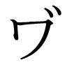

🏠
日
月
縦書き／横書き
| R25なら絶対読んでおきたい夏目漱石 三部作：三四郎・それから・門 |
| 夏目漱石 |
|
一
うとうととして目がさめると女はいつのまにか、隣のじいさんと話を始めている。このじいさんはたしかに前の前の駅から乗ったいなか者である。発車まぎわに頓 狂
な声を出して駆け込んで来て、いきなり肌
をぬいだと思ったら背中にお灸
のあとがいっぱいあったので、三四郎
の記憶に残っている。じいさんが汗をふいて、肌を入れて、女の隣に腰をかけたまでよく注意して見ていたくらいである。
女とは京都からの相乗りである。乗った時から三四郎
の目についた。第一色が黒い。三四郎
は九州から山陽線に移って、だんだん京大阪へ近づいて来るうちに、女の色が次第に白くなるのでいつのまにか故郷を遠のくような哀れを感じていた。それでこの女が車室にはいって来た時は、なんとなく異性の味方を得た心持ちがした。この女の色はじっさい九 州 色
であった。
三輪田
のお光
さんと同じ色である。国を立つまぎわまでは、お光さんは、うるさい女であった。そばを離れるのが大いにありがたかった。けれども、こうしてみると、お光さんのようなのもけっして悪くはない。
ただ顔だちからいうと、この女のほうがよほど上等である。口に締まりがある。目がはっきりしている。額がお光さんのようにだだっ広くない。なんとなくいい心持ちにできあがっている。それで三四郎
は五分に一度ぐらいは目を上げて女の方を見ていた。時々は女と自分の目がゆきあたることもあった。じいさんが女の隣へ腰をかけた時などは、もっとも注意して、できるだけ長いあいだ、女の様子を見ていた。その時女はにこりと笑って、さあおかけと言ってじいさんに席を譲っていた。それからしばらくして、三四郎
は眠くなって寝てしまったのである。
その寝ているあいだに女とじいさんは懇意になって話を始めたものとみえる。目をあけた三四郎
は黙って二人
の話を聞いていた。女はこんなことを言う。――
子供の玩具
はやっぱり広島より京都のほうが安くっていいものがある。京都でちょっと用があって降りたついでに、蛸薬師
のそばで玩具を買って来た。久しぶりで国へ帰って子供に会うのはうれしい。しかし夫の仕送りがとぎれて、しかたなしに親の里へ帰るのだから心配だ。夫は呉
にいて長らく海軍の職工をしていたが戦争中は旅 順
の方に行っていた。戦争が済んでからいったん帰って来た。まもなくあっちのほうが金がもうかるといって、また大連
へ出かせぎに行った。はじめのうちは音信
もあり、月々のものもちゃんちゃんと送ってきたからよかったが、この半年ばかり前から手紙も金もまるで来なくなってしまった。不実な性質
ではないから、大丈夫
だけれども、いつまでも遊んで食べているわけにはゆかないので、安否のわかるまではしかたがないから、里へ帰って待っているつもりだ。
じいさんは蛸薬師も知らず、玩具にも興味がないとみえて、はじめのうちはただはいはいと返事だけしていたが、旅順以後急に同情を催して、それは大いに気の毒だと言いだした。自分の子も戦争中兵隊にとられて、とうとうあっちで死んでしまった。いったい戦争はなんのためにするものだかわからない。あとで景気でもよくなればだが、大事な子は殺される、物価
は高くなる。こんなばかげたものはない。世のいい時分に出かせぎなどというものはなかった。みんな戦争のおかげだ。なにしろ信心
が大切だ。生きて働いているに違いない。もう少し待っていればきっと帰って来る。――じいさんはこんな事を言って、しきりに女を慰めていた。やがて汽車がとまったら、ではお大事にと、女に挨拶
をして元気よく出て行った。
じいさんに続いて降りた者が四人ほどあったが、入れ代って、乗ったのはたった一人
しかない。もとから込み合った客車でもなかったのが、急に寂しくなった。日の暮れたせいかもしれない。駅夫が屋根をどしどし踏んで、上から灯
のついたランプをさしこんでゆく。三四郎
は思い出したように前の停車場
で買った弁当を食いだした。
車が動きだして二分もたったろうと思うころ、例の女はすうと立って三四郎
の横を通り越して車室の外へ出て行った。この時女の帯の色がはじめて三四郎
の目にはいった。三四郎
は鮎
の煮びたしの頭をくわえたまま女の後姿を見送っていた。便所に行ったんだなと思いながらしきりに食っている。
女はやがて帰って来た。今度は正面が見えた。三四郎
の弁当はもうしまいがけである。下を向いて一生懸命に箸
を突っ込んで二口三口ほおばったが、女は、どうもまだ元の席へ帰らないらしい。もしやと思って、ひょいと目を上げて見るとやっぱり正面に立っていた。しかし三四郎
が目を上げると同時に女は動きだした。ただ三四郎
の横を通って、自分の座へ帰るべきところを、すぐと前へ来て、からだを横へ向けて、窓から首を出して、静かに外をながめだした。風が強くあたって、鬢
がふわふわするところが三四郎
の目にはいった。この時三四郎
はからになった弁当の折
を力いっぱいに窓からほうり出した。女の窓と三四郎
の窓は一軒おきの隣であった。風に逆らってなげた折の蓋
が白く舞いもどったように見えた時、三四郎
はとんだことをしたのかと気がついて、ふと女の顔を見た。顔はあいにく列車の外に出ていた。けれども、女は静かに首を引っ込めて更紗
のハンケチで額のところを丁寧にふき始めた。三四郎
はともかくもあやまるほうが安全だと考えた。
「ごめんなさい」と言った。
女は「いいえ」と答えた。まだ顔をふいている。三四郎
はしかたなしに黙ってしまった。女も黙ってしまった。そうしてまた首を窓から出した。三、四人の乗客は暗いランプの下で、みんな寝ぼけた顔をしている。口をきいている者はだれもない。汽車だけがすさまじい音をたてて行く。三四郎
は目を眠った。
しばらくすると「名古屋はもうじきでしょうか」と言う女の声がした。見るといつのまにか向き直って、及び腰になって、顔を三四郎
のそばまでもって来ている。三四郎
は驚いた。
「そうですね」と言ったが、はじめて東京へ行くんだからいっこう要領を得ない。
「この分では遅れますでしょうか」
「遅れるでしょう」
「あんたも名古屋へお降
りで......」
「はあ、降ります」
この汽車は名古屋どまりであった。会話はすこぶる平凡であった。ただ女が三四郎
の筋向こうに腰をかけたばかりである。それで、しばらくのあいだはまた汽車の音だけになってしまう。
次の駅で汽車がとまった時、女はようやく三四郎
に名古屋へ着いたら迷惑でも宿屋へ案内してくれと言いだした。一人では気味が悪いからと言って、しきりに頼む。三四郎
ももっともだと思った。けれども、そう快く引き受ける気にもならなかった。なにしろ知らない女なんだから、すこぶる躊 躇
したにはしたが、断然断る勇気も出なかったので、まあいいかげんな生返事
をしていた。そのうち汽車は名古屋へ着いた。
大きな行李
は新橋
まで預けてあるから心配はない。三四郎
はてごろなズックの鞄
と傘
だけ持って改札場を出た。頭には高等学校の夏帽をかぶっている。しかし卒業したしるしに徽章
だけはもぎ取ってしまった。昼間見るとそこだけ色が新しい。うしろから女がついて来る。三四郎
はこの帽子に対して少々きまりが悪かった。けれどもついて来るのだからしかたがない。女のほうでは、この帽子をむろん、ただのきたない帽子と思っている。
九時半に着くべき汽車が四十分ほど遅れたのだから、もう十時はまわっている。けれども暑い時分だから町はまだ宵
の口のようににぎやかだ。宿屋も目の前に二、三軒ある。ただ三四郎
にはちとりっぱすぎるように思われた。そこで電気燈のついている三階作りの前をすまして通り越して、ぶらぶら歩いて行った。むろん不案内の土地だからどこへ出るかわからない。ただ暗い方へ行った。女はなんともいわずについて来る。すると比較的寂しい横町の角
から二軒目に御宿
という看板が見えた。これは三四郎
にも女にも相応なきたない看板であった。三四郎
はちょっと振り返って、一口
女にどうですと相談したが、女は結構だというんで、思いきってずっとはいった。上がり口で二人連れではないと断るはずのところを、いらっしゃい、――どうぞお上がり――御案内――梅
の四番などとのべつにしゃべられたので、やむをえず無言のまま二人とも梅の四番へ通されてしまった。
下女が茶を持って来るあいだ二人はぼんやり向かい合ってすわっていた。下女が茶を持って来て、お風呂
をと言った時は、もうこの婦人は自分の連れではないと断るだけの勇気が出なかった。そこで手ぬぐいをぶら下げて、お先へと挨拶
をして、風呂場へ出て行った。風呂場は廊下の突き当りで便所の隣にあった。薄暗くって、だいぶ不潔のようである。三四郎
は着物を脱いで、風呂桶
の中へ飛び込んで、少し考えた。こいつはやっかいだとじゃぶじゃぶやっていると、廊下に足音がする。だれか便所へはいった様子である。やがて出て来た。手を洗う。それが済んだら、ぎいと風呂場の戸を半分あけた。例の女が入口から、「ちいと流しましょうか」と聞いた。三四郎
は大きな声で、
「いえ、たくさんです」と断った。しかし女は出ていかない。かえってはいって来た。そうして帯を解きだした。三四郎
といっしょに湯を使う気とみえる。べつに恥かしい様子も見えない。三四郎
はたちまち湯槽
を飛び出した。そこそこにからだをふいて座敷へ帰って、座蒲団
の上にすわって、少なからず驚いていると、下女が宿帳を持って来た。
三四郎
は宿帳を取り上げて、福岡県京都郡
真崎村
小川
三四郎
二十三年学生と正直に書いたが、女のところへいってまったく困ってしまった。湯から出るまで待っていればよかったと思ったが、しかたがない。下女がちゃんと控えている。やむをえず同県同郡同村同姓花
二十三年とでたらめを書いて渡した。そうしてしきりに団扇
を使っていた。
やがて女は帰って来た。「どうも、失礼いたしました」と言っている。三四郎
は「いいや」と答えた。
三四郎
は鞄の中から帳面を取り出して日記をつけだした。書く事も何もない。女がいなければ書く事がたくさんあるように思われた。すると女は「ちょいと出てまいります」と言って部屋
を出ていった。三四郎
はますます日記が書けなくなった。どこへ行ったんだろうと考え出した。
そこへ下女が床
をのべに来る。広い蒲団を一枚しか持って来ないから、床は二つ敷かなくてはいけないと言うと、部屋が狭いとか、蚊帳
が狭いとか言ってらちがあかない。めんどうがるようにもみえる。しまいにはただいま番頭がちょっと出ましたから、帰ったら聞いて持ってまいりましょうと言って、頑固
に一枚の蒲団を蚊帳いっぱいに敷いて出て行った。
それから、しばらくすると女が帰って来た。どうもおそくなりましてと言う。蚊帳の影で何かしているうちに、がらんがらんという音がした。子供にみやげの玩具が鳴ったに違いない。女はやがて風呂敷包みをもとのとおりに結んだとみえる。蚊帳の向こうで「お先へ」と言う声がした。三四郎
はただ「はあ」と答えたままで、敷居に尻
を乗せて、団扇を使っていた。いっそこのままで夜を明かしてしまおうかとも思った。けれども蚊
がぶんぶん来る。外ではとてもしのぎきれない。三四郎
はついと立って、鞄の中から、キャラコのシャツとズボン下を出して、それを素肌
へ着けて、その上から紺
の兵児帯
を締めた。それから西洋手拭
を二筋
持ったまま蚊帳の中へはいった。女は蒲団の向こうのすみでまだ団扇を動かしている。
「失礼ですが、私は癇症
でひとの蒲団に寝るのがいやだから......少し蚤
よけの工夫をやるから御免なさい」
三四郎
はこんなことを言って、あらかじめ、敷いてある敷布
の余っている端
を女の寝ている方へ向けてぐるぐる巻きだした。そうして蒲団のまん中に白い長い仕切りをこしらえた。女は向こうへ寝返りを打った。三四郎
は西洋手拭を広げて、これを自分の領分に二枚続きに長く敷いて、その上に細長く寝た。その晩は三四郎
の手も足もこの幅の狭い西洋手拭の外には一寸も出なかった。女は一言
も口をきかなかった。女も壁を向いたままじっとして動かなかった。
夜はようよう明けた。顔を洗って膳
に向かった時、女はにこりと笑って、「ゆうべは蚤は出ませんでしたか」と聞いた。三四郎
は「ええ、ありがとう、おかげさまで」というようなことをまじめに答えながら、下を向いて、お猪口
の葡萄豆
をしきりに突っつきだした。
勘定
をして宿を出て、停車場
へ着いた時、女ははじめて関西線で四日市
の方へ行くのだということを三四郎
に話した。三四郎
の汽車はまもなく来た。時間のつごうで女は少し待ち合わせることとなった。改札場のきわまで送って来た女は、
「いろいろごやっかいになりまして、......ではごきげんよう」と丁寧にお辞儀をした。三四郎
は鞄と傘を片手に持ったまま、あいた手で例の古帽子を取って、ただ一言、
「さよなら」と言った。女はその顔をじっとながめていた、が、やがておちついた調子で、
「あなたはよっぽど度胸のないかたですね」と言って、にやりと笑った。三四郎
はプラットフォームの上へはじき出されたような心持ちがした。車の中へはいったら両方の耳がいっそうほてりだした。しばらくはじっと小さくなっていた。やがて車掌の鳴らす口笛が長い列車の果から果まで響き渡った。列車は動きだす。三四郎
はそっと窓から首を出した。女はとくの昔にどこかへ行ってしまった。大きな時計ばかりが目についた。三四郎
はまたそっと自分の席に帰った。乗合いはだいぶいる。けれども三四郎
の挙動に注意するような者は一人もない。ただ筋向こうにすわった男が、自分の席に帰る三四郎
をちょっと見た。
三四郎
はこの男に見られた時、なんとなくきまりが悪かった。本でも読んで気をまぎらかそうと思って、鞄をあけてみると、昨夜の西洋手拭が、上のところにぎっしり詰まっている。そいつをそばへかき寄せて、底のほうから、手にさわったやつをなんでもかまわず引き出すと、読んでもわからないベーコンの論文集が出た。ベーコンには気の毒なくらい薄っぺらな粗末な仮綴
である。元来汽車の中で読む了見もないものを、大きな行李に入れそくなったから、片づけるついでに提鞄
の底へ、ほかの二、三冊といっしょにほうり込んでおいたのが、運悪く当選したのである。三四郎
はベーコンの二十三ページを開いた。他の本でも読めそうにはない。ましてベーコンなどはむろん読む気にならない。けれども三四郎
はうやうやしく二十三ページを開いて、万遍
なくページ全体を見回していた。三四郎
は二十三ページの前で一応昨夜のおさらいをする気である。
元来あの女はなんだろう。あんな女が世の中にいるものだろうか。女というものは、ああおちついて平気でいられるものだろうか。無教育なのだろうか、大胆なのだろうか。それとも無邪気なのだろうか。要するにいけるところまでいってみなかったから、見当がつかない。思いきってもう少しいってみるとよかった。けれども恐ろしい。別れぎわにあなたは度胸のないかただと言われた時には、びっくりした。二十三年の弱点が一度に露見したような心持ちであった。親でもああうまく言いあてるものではない。――
三四郎
はここまで来て、さらにしょげてしまった。どこの馬の骨だかわからない者に、頭の上がらないくらいどやされたような気がした。ベーコンの二十三ページに対しても、はなはだ申し訳がないくらいに感じた。
どうも、ああ狼狽
しちゃだめだ。学問も大学生もあったものじゃない。はなはだ人格に関係してくる。もう少しはしようがあったろう。けれども相手がいつでもああ出るとすると、教育を受けた自分には、あれよりほかに受けようがないとも思われる。するとむやみに女に近づいてはならないというわけになる。なんだか意気地
がない。非常に窮屈だ。まるで不具
にでも生まれたようなものである。けれども......
三四郎
は急に気をかえて、別の世界のことを思い出した。――これから東京に行く。大学にはいる。有名な学者に接触する。趣味品性の備わった学生と交際する。図書館で研究をする。著作をやる。世間で喝采
する。母がうれしがる。というような未来をだらしなく考えて、大いに元気を回復してみると、べつに二十三ページのなかに顔を埋めている必要がなくなった。そこでひょいと頭を上げた。すると筋向こうにいたさっきの男がまた三四郎
の方を見ていた。今度は三四郎
のほうでもこの男を見返した。
髭
を濃くはやしている。面長
のやせぎすの、どことなく神主
じみた男であった。ただ鼻筋がまっすぐに通っているところだけが西洋らしい。学校教育を受けつつある三四郎
は、こんな男を見るときっと教師にしてしまう。男は白地
の絣
の下に、鄭重
に白い襦袢
を重ねて、紺足袋
をはいていた。この服装からおして、三四郎
は先方を中学校の教師と鑑定した。大きな未来を控えている自分からみると、なんだかくだらなく感ぜられる。男はもう四十だろう。これよりさきもう発展しそうにもない。
男はしきりに煙草
をふかしている。長い煙を鼻の穴から吹き出して、腕組をしたところはたいへん悠長
にみえる。そうかと思うとむやみに便所か何かに立つ。立つ時にうんと伸びをすることがある。さも退屈そうである。隣に乗り合わせた人が、新聞の読みがらをそばに置くのに借りてみる気も出さない。三四郎
はおのずから妙になって、ベーコンの論文集を伏せてしまった。ほかの小説でも出して、本気に読んでみようとも考えたが、面倒だからやめにした。それよりは前にいる人の新聞を借りたくなった。あいにく前の人はぐうぐう寝ている。三四郎
は手を延ばして新聞に手をかけながら、わざと「おあきですか」と髭のある男に聞いた。男は平気な顔で「あいてるでしょう。お読みなさい」と言った。新聞を手に取った三四郎
のほうはかえって平気でなかった。
あけてみると新聞にはべつに見るほどの事ものっていない。一、二分で通読してしまった。律義
に畳んでもとの場所へ返しながら、ちょっと会釈
すると、向こうでも軽く挨拶をして、
「君は高等学校の生徒ですか」と聞いた。
三四郎
は、かぶっている古帽子の徽章の痕
が、この男の目に映ったのをうれしく感じた。
「ええ」と答えた。
「東京の？」と聞き返した時、はじめて、
「いえ、熊本です。......しかし......」と言ったなり黙ってしまった。大学生だと言いたかったけれども、言うほどの必要がないからと思って遠慮した。相手も「はあ、そう」と言ったなり煙草を吹かしている。なぜ熊本の生徒が今ごろ東京へ行くんだともなんとも聞いてくれない。熊本の生徒には興味がないらしい。この時三四郎
の前に寝ていた男が「うん、なるほど」と言った。それでいてたしかに寝ている。ひとりごとでもなんでもない。髭のある人は三四郎
を見てにやにやと笑った。三四郎
はそれを機会
に、
「あなたはどちらへ」と聞いた。
「東京」とゆっくり言ったぎりである。なんだか中学校の先生らしくなくなってきた。けれども三等へ乗っているくらいだからたいしたものでないことは明らかである。三四郎
はそれで談話を切り上げた。髭のある男は腕組をしたまま、時々下駄
の前歯で、拍子
を取って、床
を鳴らしたりしている。よほど退屈にみえる。しかしこの男の退屈は話したがらない退屈である。
汽車が豊橋
へ着いた時、寝ていた男がむっくり起きて目をこすりながら降りて行った。よくあんなにつごうよく目をさますことができるものだと思った。ことによると寝ぼけて停車場を間違えたんだろうと気づかいながら、窓からながめていると、けっしてそうでない。無事に改札場を通過して、正気
の人間のように出て行った。三四郎
は安心して席を向こう側へ移した。これで髭のある人と隣り合わせになった。髭のある人は入れ代って、窓から首を出して、水蜜桃
を買っている。
やがて二人のあいだに果物
を置いて、
「食べませんか」と言った。
三四郎
は礼を言って、一つ食べた。髭のある人は好きとみえて、むやみに食べた。三四郎
にもっと食べろと言う。三四郎
はまた一つ食べた。二人が水蜜桃を食べているうちにだいぶ親密になっていろいろな話を始めた。
その男の説によると、桃
は果物のうちでいちばん仙人
めいている。なんだか馬鹿
みたような味がする。第一核子
の恰好
が無器用だ。かつ穴だらけでたいへんおもしろくできあがっていると言う。三四郎
ははじめて聞く説だが、ずいぶんつまらないことを言う人だと思った。
次にその男がこんなことを言いだした。子規
は果物がたいへん好きだった。かついくらでも食える男だった。ある時大きな樽柿
を十六食ったことがある。それでなんともなかった。自分などはとても子規のまねはできない。――三四郎
は笑って聞いていた。けれども子規の話だけには興味があるような気がした。もう少し子規のことでも話そうかと思っていると、
「どうも好きなものにはしぜんと手が出るものでね。しかたがない。豚
などは手が出ない代りに鼻が出る。豚をね、縛って動けないようにしておいて、その鼻の先へ、ごちそうを並べて置くと、動けないものだから、鼻の先がだんだん延びてくるそうだ。ごちそうに届くまでは延びるそうです。どうも一念ほど恐ろしいものはない」と言って、にやにや笑っている。まじめだか冗談だか、判然と区別しにくいような話し方である。
「まあお互に豚でなくってしあわせだ。そうほしいものの方へむやみに鼻が延びていったら、今ごろは汽車にも乗れないくらい長くなって困るに違いない」
三四郎
は吹き出した。けれども相手は存外静かである。
「じっさいあぶない。レオナルド・ダ・ヴィンチという人は桃の幹に砒石
を注射してね、その実へも毒が回るものだろうか、どうだろうかという試験をしたことがある。ところがその桃を食って死んだ人がある。あぶない。気をつけないとあぶない」と言いながら、さんざん食い散らした水蜜桃の核子
やら皮やらを、ひとまとめに新聞にくるんで、窓の外へなげ出した。
今度は三四郎
も笑う気が起こらなかった。レオナルド・ダ・ヴィンチという名を聞いて少しく辟易
したうえに、なんだかゆうべの女のことを考え出して、妙に不愉快になったから、謹んで黙ってしまった。けれども相手はそんなことにいっこう気がつかないらしい。やがて、
「東京はどこへ」と聞きだした。
「じつははじめてで様子がよくわからんのですが......さしあたり国の寄宿舎へでも行こうかと思っています」と言う。
「じゃ熊本はもう......」
「今度卒業したのです」
「はあ、そりゃ」と言ったがおめでたいとも結構だともつけなかった。ただ「するとこれから大学へはいるのですね」といかにも平凡であるかのごとく聞いた。
三四郎
はいささか物足りなかった。その代り、
「ええ」という二字で挨拶を片づけた。
「科は？」とまた聞かれる。
「一部です」
「法科ですか」
「いいえ文科です」
「はあ、そりゃ」とまた言った。三四郎
はこのはあ、そりゃを聞くたびに妙になる。向こうが大いに偉いか、大いに人を踏み倒しているか、そうでなければ大学にまったく縁故も同情もない男に違いない。しかしそのうちのどっちだか見当がつかないので、この男に対する態度もきわめて不明瞭であった。
浜松で二人とも申し合わせたように弁当を食った。食ってしまっても汽車は容易に出ない。窓から見ると、西洋人が四、五人列車の前を行ったり来たりしている。そのうちの一組は夫婦とみえて、暑いのに手を組み合わせている。女は上下
ともまっ白な着物で、たいへん美しい。三四郎
は生まれてから今日に至るまで西洋人というものを五、六人しか見たことがない。そのうちの二人は熊本の高等学校の教師で、その二人のうちの一人は運悪くせむしであった。女では宣教師を一人知っている。ずいぶんとんがった顔で、鱚
または魳
に類していた。だから、こういう派手
なきれいな西洋人は珍しいばかりではない。すこぶる上等に見える。三四郎
は一生懸命にみとれていた。これではいばるのももっともだと思った。自分が西洋へ行って、こんな人のなかにはいったらさだめし肩身の狭いことだろうとまで考えた。窓の前を通る時二人の話を熱心に聞いてみたがちっともわからない。熊本の教師とはまるで発音が違うようだった。
ところへ例の男が首を後から出して、
「まだ出そうもないのですかね」と言いながら、今行き過ぎた西洋の夫婦をちょいと見て、
「ああ美しい」と小声に言って、すぐに生欠伸
をした。三四郎
は自分がいかにもいなか者らしいのに気がついて、さっそく首を引き込めて、着座した。男もつづいて席に返った。そうして、
「どうも西洋人は美しいですね」と言った。
三四郎
はべつだんの答も出ないのでただはあと受けて笑っていた。すると髭の男は、
「お互いは哀れだなあ」と言い出した。「こんな顔をして、こんなに弱っていては、いくら日露戦争に勝って、一等国になってもだめですね。もっとも建物を見ても、庭園を見ても、いずれも顔相応のところだが、――あなたは東京がはじめてなら、まだ富士山を見たことがないでしょう。今に見えるから御覧なさい。あれが日本一
の名物だ。あれよりほかに自慢するものは何もない。ところがその富士山は天然自然に昔からあったものなんだからしかたがない。我々がこしらえたものじゃない」と言ってまたにやにや笑っている。三四郎
は日露戦争以後こんな人間に出会うとは思いもよらなかった。どうも日本人じゃないような気がする。
「しかしこれからは日本もだんだん発展するでしょう」と弁護した。すると、かの男は、すましたもので、
「滅びるね」と言った。――熊本でこんなことを口に出せば、すぐなぐられる。悪くすると国賊取り扱いにされる。三四郎
は頭の中のどこのすみにもこういう思想を入れる余裕はないような空気のうちで生長した。だからことによると自分の年の若いのに乗じて、ひとを愚弄
するのではなかろうかとも考えた。男は例のごとく、にやにや笑っている。そのくせ言葉
つきはどこまでもおちついている。どうも見当がつかないから、相手になるのをやめて黙ってしまった。すると男が、こう言った。
「熊本より東京は広い。東京より日本は広い。日本より......」でちょっと切ったが、三四郎
の顔を見ると耳を傾けている。
「日本より頭の中のほうが広いでしょう」と言った。「とらわれちゃだめだ。いくら日本のためを思ったって贔屓
の引き倒しになるばかりだ」
この言葉を聞いた時、三四郎
は真実に熊本を出たような心持ちがした。同時に熊本にいた時の自分は非常に卑怯
であったと悟った。
その晩三四郎
は東京に着いた。髭の男は別れる時まで名前を明かさなかった。三四郎
は東京へ着きさえすれば、このくらいの男は到るところにいるものと信じて、べつに姓名を尋ねようともしなかった。
二
三四郎
が東京で驚いたものはたくさんある。第一電車のちんちん鳴るので驚いた。それからそのちんちん鳴るあいだに、非常に多くの人間が乗ったり降りたりするので驚いた。次に丸の内で驚いた。もっとも驚いたのは、どこまで行っても東京がなくならないということであった。しかもどこをどう歩いても、材木がほうり出してある、石が積んである、新しい家が往来から二、三間引っ込んでいる、古い蔵が半分とりくずされて心細く前の方に残っている。すべての物が破壊されつつあるようにみえる。そうしてすべての物がまた同時に建設されつつあるようにみえる。たいへんな動き方である。
三四郎
はまったく驚いた。要するに普通のいなか者がはじめて都のまん中に立って驚くと同じ程度に、また同じ性質において大いに驚いてしまった。今までの学問はこの驚きを予防するうえにおいて、売薬ほどの効能もなかった。三四郎
の自信はこの驚きとともに四割がた減却した。不愉快でたまらない。
この劇烈な活動そのものがとりもなおさず現実世界だとすると、自分が今日までの生活は現実世界に毫
も接触していないことになる。洞
が峠
で昼寝をしたと同然である。それではきょうかぎり昼寝をやめて、活動の割り前が払えるかというと、それは困難である。自分は今活動の中心に立っている。けれども自分はただ自分の左右前後に起こる活動を見なければならない地位に置きかえられたというまでで、学生としての生活は以前と変るわけはない。世界はかように動揺する。自分はこの動揺を見ている。けれどもそれに加わることはできない。自分の世界と現実の世界は、一つ平面に並んでおりながら、どこも接触していない。そうして現実の世界は、かように動揺して、自分を置き去りにして行ってしまう。はなはだ不安である。
三四郎
は東京のまん中に立って電車と、汽車と、白い着物を着た人と、黒い着物を着た人との活動を見て、こう感じた。けれども学生生活の裏面に横たわる思想界の活動には毫
も気がつかなかった。――明治の思想は西洋の歴史にあらわれた三百年の活動を四十年で繰り返している。
三四郎
が動く東京のまん中に閉じ込められて、一人
でふさぎこんでいるうちに、国元の母から手紙が来た。東京で受け取った最初のものである。見るといろいろ書いてある。まず今年
は豊作でめでたいというところから始まって、からだを大事にしなくってはいけないという注意があって、東京の者はみんな利口で人が悪いから用心しろと書いて、学資は毎月月末に届くようにするから安心しろとあって、勝田
の政
さんの従弟
に当る人が大学校を卒業して、理科大学とかに出ているそうだから、尋ねて行って、万事よろしく頼むがいいで結んである。肝心
の名前を忘れたとみえて、欄外というようなところに野々宮
宗八
どのと書いてあった。この欄外にはそのほか二、三件ある。作
の青馬
が急病で死んだんで、作は大弱りである。三輪田
のお光
さんが鮎
をくれたけれども、東京へ送ると途中で腐ってしまうから、家内
で食べてしまった、等である。
三四郎
はこの手紙を見て、なんだか古ぼけた昔から届いたような気がした。母にはすまないが、こんなものを読んでいる暇はないとまで考えた。それにもかかわらず繰り返して二へん読んだ。要するに自分がもし現実世界と接触しているならば、今のところ母よりほかにないのだろう。その母は古い人で古いいなかにおる。そのほかには汽車の中で乗り合わした女がいる。あれは現実世界の稲妻
である。接触したというには、あまりに短くってかつあまりに鋭すぎた。――三四郎
は母の言いつけどおり野々宮宗八を尋ねることにした。
あくる日は平生よりも暑い日であった。休暇中だから理科大学を尋ねても野々宮君はおるまいと思ったが、母が宿所を知らせてこないから、聞き合わせかたがた行ってみようという気になって、午後四時ごろ、高等学校の横を通って弥生町
の門からはいった。往来は埃
が二寸も積もっていて、その上に下駄
の歯や、靴
の底や、草鞋
の裏がきれいにできあがってる。車の輪と自転車のあとは幾筋だかわからない。むっとするほどたまらない道だったが、構内へはいるとさすがに木の多いだけに気分がせいせいした。とっつきの戸をあたってみたら錠が下りている。裏へ回ってもだめであった。しまいに横へ出た。念のためと思って押してみたら、うまいぐあいにあいた。廊下の四つ角に小使が一人居眠りをしていた。来意を通じると、しばらくのあいだは、正気を回復するために、上野
の森をながめていたが、突然「おいでかもしれません」と言って奥へはいって行った。すこぶる閑静である。やがてまた出て来た。
「おいででやす。おはいんなさい」と友だちみたように言う。小使にくっついて行くと四つ角を曲がって和土
の廊下を下へ降りた。世界が急に暗くなる。炎天で目がくらんだ時のようであったがしばらくすると瞳
がようやくおちついて、あたりが見えるようになった。穴倉だから比較的涼しい。左の方に戸があって、その戸があけ放してある。そこから顔が出た。額の広い目の大きな仏教に縁のある相
である。縮みのシャツの上へ背広を着ているが、背広はところどころにしみがある。背はすこぶる高い。やせているところが暑さに釣り合っている。頭と背中を一直線に前の方へ延ばしてお辞儀をした。
「こっちへ」と言ったまま、顔を部屋
の中へ入れてしまった。三四郎
は戸の前まで来て部屋の中をのぞいた。すると野々宮君はもう椅子
へ腰をかけている。もう一ぺん「こっちへ」と言った。こっちへと言うところに台がある。四角な棒を四本立てて、その上を板で張ったものである。三四郎
は台の上へ腰をかけて初対面の挨拶をする。それからなにぶんよろしく願いますと言った。野々宮君はただはあ、はあと言って聞いている。その様子がいくぶんか汽車の中で水蜜桃
を食った男に似ている。ひととおり口上
を述べた三四郎
はもう何も言う事がなくなってしまった。野々宮君もはあ、はあ言わなくなった。
部屋の中を見回すとまん中に大きな長い樫
のテーブルが置いてある。その上にはなんだかこみいった、太い針金だらけの器械が乗っかって、そのわきに大きなガラスの鉢
に水が入れてある。そのほかにやすりとナイフと襟
飾りが一つ落ちている。最後に向こうのすみを見ると、三尺ぐらいの花崗石
の台の上に、福神漬
の缶
ほどな複雑な器械が乗せてある。三四郎
はこの缶の横っ腹にあいている二つの穴に目をつけた。穴が蟒蛇
の目玉のように光っている。野々宮君は笑いながら光るでしょうと言った。そうして、こういう説明をしてくれた。
「昼間のうちに、あんな準備
をしておいて、夜になって、交通その他の活動が鈍くなるころに、この静かな暗い穴倉で、望遠鏡の中から、あの目玉のようなものをのぞくのです。そうして光線の圧力を試験する。今年の正月ごろからとりかかったが、装置がなかなかめんどうなのでまだ思うような結果が出てきません。夏は比較的こらえやすいが、寒夜になると、たいへんしのぎにくい。外套
を着て襟巻をしても冷たくてやりきれない。......」
三四郎
は大いに驚いた。驚くとともに光線にどんな圧力があって、その圧力がどんな役に立つんだか、まったく要領を得るに苦しんだ。
その時野々宮君は三四郎
に、「のぞいてごらんなさい」と勧めた。三四郎
はおもしろ半分、石の台の二、三間手前にある望遠鏡のそばへ行って右の目をあてがったが、なんにも見えない。野々宮君は「どうです、見えますか」と聞く。「いっこう見えません」と答えると、「うんまだ蓋
が取らずにあった」と言いながら、椅子を立って望遠鏡の先にかぶせてあるものを除
けてくれた。
見ると、ただ輪郭のぼんやりした明るいなかに、物差しの度盛りがある。下に２の字が出た。野々宮君がまた「どうです」と聞いた。「２の字が見えます」と言うと、「いまに動きます」と言いながら向こうへ回って何かしているようであった。
やがて度盛りが明るいなかで動きだした。２が消えた。あとから３が出る。そのあとから４が出る。５が出る。とうとう10
まで出た。すると度盛りがまた逆に動きだした。10
が消え、９が消え、８から７、７から６と順々に１まで来てとまった。野々宮君はまた「どうです」と言う。三四郎
は驚いて、望遠鏡から目を放してしまった。度盛りの意味を聞く気にもならない。
丁寧に礼を述べて穴倉を上がって、人の通る所へ出て見ると世の中はまだかんかんしている。暑いけれども深い息をした。西の方へ傾いた日が斜めに広い坂を照らして、坂の上の両側にある工科の建築のガラス窓が燃えるように輝いている。空は深く澄んで、澄んだなかに、西の果から焼ける火の炎が、薄赤く吹き返してきて、三四郎
の頭の上までほてっているように思われた。横に照りつける日を半分背中に受けて、三四郎
は左の森の中へはいった。その森も同じ夕日を半分背中に受けている。黒ずんだ青い葉と葉のあいだは染めたように赤い。太い欅
の幹で日暮らしが鳴いている。三四郎
は池のそばへ来てしゃがんだ。
非常に静かである。電車の音もしない。赤門
の前を通るはずの電車は、大学の抗議で小石川
を回ることになったと国にいる時分新聞で見たことがある。三四郎
は池のはたにしゃがみながら、ふとこの事件を思い出した。電車さえ通さないという大学はよほど社会と離れている。
たまたまその中にはいってみると、穴倉の下で半年余りも光線の圧力の試験をしている野々宮君のような人もいる。野々宮君はすこぶる質素な服装
をして、外で会えば電燈会社の技手くらいな格である。それで穴倉の底を根拠地として欣然
とたゆまずに研究を専念にやっているから偉い。しかし望遠鏡の中の度盛りがいくら動いたって現実世界と交渉のないのは明らかである。野々宮君は生涯
現実世界と接触する気がないのかもしれない。要するにこの静かな空気を呼吸するから、おのずからああいう気分にもなれるのだろう。自分もいっそのこと気を散らさずに、生きた世の中と関係のない生涯を送ってみようかしらん。
三四郎
がじっとして池の面
を見つめていると、大きな木が、幾本となく水の底に映って、そのまた底に青い空が見える。三四郎
はこの時電車よりも、東京よりも、日本よりも、遠くかつはるかな心持ちがした。しかししばらくすると、その心持ちのうちに薄雲のような寂しさがいちめんに広がってきた。そうして、野々宮君の穴倉にはいって、たった一人ですわっているかと思われるほどな寂寞
を覚えた。熊本の高等学校にいる時分もこれより静かな竜田山
に上ったり、月見草ばかりはえている運動場に寝たりして、まったく世の中を忘れた気になったことは幾度となくある、けれどもこの孤独の感じは今はじめて起こった。
活動の激しい東京を見たためだろうか。あるいは――三四郎
はこの時赤くなった。汽車で乗り合わした女の事を思い出したからである。――現実世界はどうも自分に必要らしい。けれども現実世界はあぶなくて近寄れない気がする。三四郎
は早く下宿に帰って母に手紙を書いてやろうと思った。
ふと目を上げると、左手の丘の上に女が二人立っている。女のすぐ下が池で、向こう側が高い崖
の木立
で、その後がはでな赤煉瓦
のゴシック風の建築である。そうして落ちかかった日が、すべての向こうから横に光をとおしてくる。女はこの夕日に向いて立っていた。三四郎
のしゃがんでいる低い陰から見ると丘の上はたいへん明るい。女の一人はまぼしいとみえて、団扇
を額のところにかざしている。顔はよくわからない。けれども着物の色、帯の色はあざやかにわかった。白い足袋
の色も目についた。鼻緒
の色はとにかく草履
をはいていることもわかった。もう一人はまっしろである。これは団扇もなにも持っていない。ただ額に少し皺
を寄せて、向こう岸からおいかぶさりそうに、高く池の面に枝を伸ばした古木の奥をながめていた。団扇を持った女は少し前へ出ている。白いほうは一足土堤
の縁からさがっている。三四郎
が見ると、二人の姿が筋かいに見える。
この時三四郎
の受けた感じはただきれいな色彩だということであった。けれどもいなか者だから、この色彩がどういうふうにきれいなのだか、口にも言えず、筆にも書けない。ただ白いほうが看護婦だと思ったばかりである。
三四郎
はまたみとれていた。すると白いほうが動きだした。用事のあるような動き方ではなかった。自分の足がいつのまにか動いたというふうであった。見ると団扇を持った女もいつのまにかまた動いている。二人は申し合わせたように用のない歩き方をして、坂を降りて来る。三四郎
はやっぱり見ていた。
坂の下に石橋がある。渡らなければまっすぐに理科大学の方へ出る。渡れば水ぎわを伝ってこっちへ来る。二人は石橋を渡った。
団扇はもうかざしていない。左の手に白い小さな花を持って、それをかぎながら来る。かぎながら、鼻の下にあてがった花を見ながら、歩くので、目は伏せている。それで三四郎
から一間ばかりの所へ来てひょいととまった。
「これはなんでしょう」と言って、仰向いた。頭の上には大きな椎
の木が、日の目のもらないほど厚い葉を茂らして、丸い形に、水ぎわまで張り出していた。
「これは椎」と看護婦が言った。まるで子供に物を教えるようであった。
「そう。実はなっていないの」と言いながら、仰向いた顔をもとへもどす、その拍子
に三四郎
を一目見た。三四郎
はたしかに女の黒目の動く刹那
を意識した。その時色彩の感じはことごとく消えて、なんともいえぬある物に出会った。そのある物は汽車の女に「あなたは度胸のないかたですね」と言われた時の感じとどこか似通っている。三四郎
は恐ろしくなった。
二人の女は三四郎
の前を通り過ぎる。若いほうが今までかいでいた白い花を三四郎
の前へ落として行った。三四郎
は二人の後姿をじっと見つめていた。看護婦は先へ行く。若いほうがあとから行く。はなやかな色のなかに、白い薄
を染め抜いた帯が見える。頭にもまっ白な薔薇
を一つさしている。その薔薇が椎の木陰
の下の、黒い髪のなかできわだって光っていた。
三四郎
はぼんやりしていた。やがて、小さな声で「矛盾
だ」と言った。大学の空気とあの女が矛盾なのだか、あの色彩とあの目つきが矛盾なのだか、あの女を見て汽車の女を思い出したのが矛盾なのだか、それとも未来に対する自分の方針が二道に矛盾しているのか、または非常にうれしいものに対して恐れをいだくところが矛盾しているのか、――このいなか出の青年には、すべてわからなかった。ただなんだか矛盾であった。
三四郎
は女の落として行った花を拾った。そうしてかいでみた。けれどもべつだんのにおいもなかった。三四郎
はこの花を池の中へ投げ込んだ。花は浮いている。すると突然向こうで自分の名を呼んだ者がある。
三四郎
は花から目を放した。見ると野々宮君が石橋の向こうに長く立っている。
「君まだいたんですか」と言う。三四郎
は答をするまえに、立ってのそのそ歩いて行った。石橋の上まで来て、
「ええ」と言った。なんとなくまが抜けている。けれども野々宮君は、少しも驚かない。
「涼しいですか」と聞いた。三四郎
はまた、
「ええ」と言った。
野々宮君はしばらく池の水をながめていたが、右の手をポケットへ入れて何か捜しだした。ポケットから半分封筒がはみ出している。その上に書いてある字が女の手跡
らしい。野々宮君は思う物を捜しあてなかったとみえて、もとのとおりの手を出してぶらりと下げた。そうして、こう言った。
「きょうは少し装置が狂ったので晩の実験はやめだ。これから本郷
の方を散歩して帰ろうと思うが、君どうです、いっしょに歩きませんか」
三四郎
は快く応じた。二人で坂を上がって、丘の上へ出た。野々宮君はさっき女の立っていたあたりでちょっととまって、向こうの青い木立のあいだから見える赤い建物と、崖
の高いわりに、水の落ちた池をいちめんに見渡して、
「ちょっといい景色
でしょう。あの建築
の角度
のところだけが少し出ている。木のあいだから。ね。いいでしょう。君気がついていますか。あの建物はなかなかうまくできていますよ。工科もよくできてるがこのほうがうまいですね」
三四郎
は野々宮君の鑑賞力に少々驚いた。実をいうと自分にはどっちがいいかまるでわからないのである。そこで今度は三四郎
のほうが、はあ、はあと言い出した。
「それから、この木と水の感じ
がね。――たいしたものじゃないが、なにしろ東京のまん中にあるんだから――静かでしょう。こういう所でないと学問をやるにはいけませんね。近ごろは東京があまりやかましくなりすぎて困る。これが御殿
」と歩きだしながら、左手
の建物をさしてみせる。「教授会をやる所です。うむなに、ぼくなんか出ないでいいのです。ぼくは穴倉生活をやっていればすむのです。近ごろの学問は非常な勢いで動いているので、少しゆだんすると、すぐ取り残されてしまう。人が見ると穴倉の中で冗談をしているようだが、これでもやっている当人の頭の中は劇烈に働いているんですよ。電車よりよっぽど激しく働いているかもしれない。だから夏でも旅行をするのが惜しくってね」と言いながら仰向いて大きな空を見た。空にはもう日の光が乏しい。
青い空の静まり返った、上皮
に白い薄雲が刷毛先
でかき払ったあとのように、筋
かいに長く浮いている。
「あれを知ってますか」と言う。三四郎
は仰いで半透明の雲を見た。
「あれは、みんな雪の粉
ですよ。こうやって下から見ると、ちっとも動いていない。しかしあれで地上に起こる颶風
以上の速力で動いているんですよ。――君ラスキンを読みましたか」
三四郎
は憮然
として読まないと答えた。野々宮君はただ
「そうですか」と言ったばかりである。しばらくしてから、
「この空を写生したらおもしろいですね。――原口
にでも話してやろうかしら」と言った。三四郎
はむろん原口という画工の名前を知らなかった。
二人はベルツの銅像の前から枳殻寺
の横を電車の通りへ出た。銅像の前で、この銅像はどうですかと聞かれて三四郎
はまた弱った。表はたいへんにぎやかである。電車がしきりなしに通る。
「君電車はうるさくはないですか」とまた聞かれた。三四郎
はうるさいよりすさまじいくらいである。しかしただ「ええ」と答えておいた。すると野々宮君は「ぼくもうるさい」と言った。しかしいっこううるさいようにもみえなかった。
「ぼくは車掌に教わらないと、一人で乗換えが自由にできない。この二、三年むやみにふえたのでね。便利になってかえって困る。ぼくの学問と同じことだ」と言って笑った。
学期の始まりぎわなので新しい高等学校の帽子をかぶった生徒がだいぶ通る。野々宮君は愉快そうに、この連中
を見ている。
「だいぶ新しいのが来ましたね」と言う。「若い人は活気があっていい。ときに君はいくつですか」と聞いた。三四郎
は宿帳へ書いたとおりを答えた。すると、
「それじゃぼくより七つばかり若い。七年もあると、人間はたいていの事ができる。しかし月日
はたちやすいものでね。七年ぐらいじきですよ」と言う。どっちが本当なんだか、三四郎
にはわからなかった。
四角
近くへ来ると左右に本屋と雑誌屋がたくさんある。そのうちの二、三軒には人が黒山のようにたかっている、そうして雑誌を読んでいる。そうして買わずに行ってしまう。野々宮君は、
「みんなずるいなあ」と言って笑っている。もっとも当人もちょいと太陽をあけてみた。
四角へ出ると、左手のこちら側に西洋小間物屋
があって、向こう側に日本小間物屋がある。そのあいだを電車がぐるっと曲がって、非常な勢いで通る。ベルがちんちんちんちんいう。渡りにくいほど雑踏する。野々宮君は、向こうの小間物屋をさして、
「あすこでちょいと買物をしますからね」と言って、ちりんちりんと鳴るあいだを駆け抜けた。三四郎
もくっついて、向こうへ渡った。野々宮君はさっそく店へはいった。表に待っていた三四郎
が、気がついて見ると、店先のガラス張りの棚
に櫛
だの花 簪
だのが並べてある。三四郎
は妙に思った。野々宮君が何を買っているのかしらと、不審を起こして、店の中へはいってみると、蝉
の羽根のようなリボンをぶら下げて、
「どうですか」と聞かれた。三四郎
はこの時自分も何か買って、鮎
のお礼に三輪田のお光さんに送ってやろうかと思った。けれどもお光さんが、それをもらって、鮎のお礼と思わずに、きっとなんだかんだと手前がっての理屈をつけるに違いないと考えたからやめにした。
それから真砂町
で野々宮君に西洋料理のごちそうになった。野々宮君の話では本郷でいちばんうまい家
だそうだ。けれども三四郎
にはただ西洋料理の味がするだけであった。しかし食べることはみんな食べた。
西洋料理屋の前で野々宮君に別れて、追分
に帰るところを丁寧にもとの四角まで出て、左へ折れた。下駄
を買おうと思って、下駄屋をのぞきこんだら、白熱ガスの下に、まっ白に塗り立てた娘が、石膏
の化物のようにすわっていたので、急にいやになってやめた。それから家
へ帰るあいだ、大学の池の縁で会った女の、顔の色ばかり考えていた。――その色は薄く餅
をこがしたような狐色
であった。そうして肌理
が非常に細かであった。三四郎
は、女の色は、どうしてもあれでなくってはだめだと断定した。
三
学年は九月十一日に始まった。三四郎
は正直に午前十時半ごろ学校へ行ってみたが、玄関前の掲示場に講義の時間割りがあるばかりで学生は一人
もいない。自分の聞くべき分だけを手帳に書きとめて、それから事務室へ寄ったら、さすがに事務員だけは出ていた。講義はいつから始まりますかと聞くと、九月十一日から始まると言っている。すましたものである。でも、どの部屋
を見ても講義がないようですがと尋ねると、それは先生がいないからだと答えた。三四郎
はなるほどと思って事務室を出た。裏へ回って、大きな欅
の下から高い空をのぞいたら、普通の空よりも明らかに見えた。熊笹
の中を水ぎわへおりて、例の椎
の木の所まで来て、またしゃがんだ。あの女がもう一ぺん通ればいいくらいに考えて、たびたび丘の上をながめたが、丘の上には人影もしなかった。三四郎
はそれが当然だと考えた。けれどもやはりしゃがんでいた。すると、午砲
が鳴ったんで驚いて下宿へ帰った。
翌日は正八時に学校へ行った。正門をはいると、とっつきの大通りの左右に植えてある銀杏
の並木が目についた。銀杏が向こうの方で尽きるあたりから、だらだら坂に下がって、正門のきわに立った三四郎
から見ると、坂の向こうにある理科大学は二階の一部しか出ていない。その屋根のうしろに朝日を受けた上野の森が遠く輝いている。日は正面にある。三四郎
はこの奥行のある景色
を愉快に感じた。
銀杏の並木がこちら側で尽きる右手には法文科大学がある。左手には少しさがって博物の教室がある。建築は双方ともに同じで、細長い窓の上に、三角にとがった屋根が突き出している。その三角の縁に当る赤煉瓦
と黒い屋根のつぎめの所が細い石の直線でできている。そうしてその石の色が少し青味を帯びて、すぐ下にくるはでな赤煉瓦に一種の趣を添えている。そうしてこの長い窓と、高い三角が横にいくつも続いている。三四郎
はこのあいだ野々宮君の説を聞いてから以来、急にこの建物をありがたく思っていたが、けさは、この意見が野々宮君の意見でなくって、初手
から自分の持説であるような気がしだした。ことに博物室が法文科と一直線に並んでいないで、少し奥へ引っ込んでいるところが不規則で妙だと思った。こんど野々宮君に会ったら自分の発明としてこの説を持ち出そうと考えた。
法文科の右のはずれから半町ほど前へ突き出している図書館にも感服した。よくわからないがなんでも同じ建築だろうと考えられる。その赤い壁につけて、大きな棕櫚
の木を五、六本植えたところが大いにいい。左手のずっと奥にある工科大学は封建時代の西洋のお城から割り出したように見えた。まっ四角にできあがっている。窓も四角である。ただ四すみと入口が丸い。これは櫓
を形取ったんだろう。お城だけにしっかりしている。法文科みたように倒れそうでない。なんだか背
の低い相撲取
りに似ている。
三四郎
は見渡すかぎり見渡して、このほかにもまだ目に入らない建物がたくさんあることを勘定に入れて、どことなく雄大な感じを起こした。「学問の府はこうなくってはならない。こういう構えがあればこそ研究もできる。えらいものだ」――三四郎
は大学者になったような心持ちがした。
けれども教室へはいってみたら、鐘は鳴っても先生は来なかった。その代り学生も出て来ない。次の時間もそのとおりであった。三四郎
は癇癪
を起こして教場を出た。そうして念のために池の周囲
を二へんばかり回って下宿へ帰った。
それから約十日ばかりたってから、ようやく講義が始まった。三四郎
がはじめて教室へはいって、ほかの学生といっしょに先生の来るのを待っていた時の心持ちはじつに殊勝
なものであった。神主
が装束
を着けて、これから祭典でも行なおうとするまぎわには、こういう気分がするだろうと、三四郎
は自分で自分の了見を推定した。じっさい学問の威厳に打たれたに違いない。それのみならず、先生がベルが鳴って十五分立っても出て来ないのでますます予期から生ずる敬畏
の念を増した。そのうち人品のいいおじいさんの西洋人が戸をあけてはいってきて、流暢
な英語で講義を始めた。三四郎
はその時answer
という字はアングロ・サクソン語のand-swaru
から出たんだということを覚えた。それからスコットの通った小学校の村の名を覚えた。いずれも大切に筆記帳にしるしておいた。その次には文学論の講義に出た。この先生は教室にはいって、ちょっと黒板
をながめていたが、黒板の上に書いてあるGeschehen
という字とNachbild
という字を見て、はあドイツ語かと言って、笑いながらさっさと消してしまった。三四郎
はこれがためにドイツ語に対する敬意を少し失ったように感じた。先生は、それから古来文学者が文学に対して下した定義をおよそ二十ばかり並べた。三四郎
はこれも大事に手帳に筆記しておいた。午後は大教室に出た。その教室には約七、八十人ほどの聴講者がいた。したがって先生も演説口調
であった。砲声一発浦賀
の夢を破ってという冒頭
であったから、三四郎
はおもしろがって聞いていると、しまいにはドイツの哲学者の名がたくさん出てきてはなはだ解
しにくくなった。机の上を見ると、落第という字がみごとに彫ってある。よほど暇に任せて仕上げたものとみえて、堅い樫
の板をきれいに切り込んだてぎわは素人
とは思われない。深刻のできである。隣の男は感心に根気よく筆記をつづけている。のぞいて見ると筆記ではない。遠くから先生の似顔をポンチにかいていたのである。三四郎
がのぞくやいなや隣の男はノートを三四郎
の方に出して見せた。絵はうまくできているが、そばに久方
の雲井
の空の子規
と書いてあるのは、なんのことだか判じかねた。
講義が終ってから、三四郎
はなんとなく疲労したような気味で、二階の窓から頬杖
を突いて、正門内の庭を見おろしていた。ただ大きな松や桜を植えてそのあいだに砂利
を敷いた広い道をつけたばかりであるが、手を入れすぎていないだけに、見ていて心持ちがいい。野々宮君の話によるとここは昔はこうきれいではなかった。野々宮君の先生のなんとかいう人が、学生の時分馬に乗って、ここを乗り回すうち、馬がいうことを聞かないで、意地を悪くわざと木の下を通るので、帽子が松の枝に引っかかる。下駄の歯が鐙
にはさまる。先生はたいへん困っていると、正門前の喜多床
という髪結床
の職人がおおぜい出てきて、おもしろがって笑っていたそうである。その時分には有志の者が醵金
して構内に厩
をこしらえて、三頭の馬と、馬の先生とを飼っておいた。ところが先生がたいへんな酒飲みで、とうとう三頭のうちのいちばんいい白い馬を売って飲んでしまった。それはナポレオン三世時代の老馬であったそうだ。まさかナポレオン三世時代でもなかろう。しかしのん気な時代もあったものだと考えていると、さっきポンチ絵をかいた男が来て、
「大学の講義はつまらんなあ」と言った。三四郎
はいいかげんな返事をした。じつはつまるかつまらないか、三四郎
にはちっとも判断ができないのである。しかしこの時からこの男と口をきくようになった。
その日はなんとなく気が鬱
して、おもしろくなかったので、池の周囲
を回ることは見合わせて家
へ帰った。晩食後筆記を繰り返して読んでみたが、べつに愉快にも不愉快にもならなかった。母に言文一致の手紙を書いた。――学校は始まった。これから毎日出る。学校はたいへん広いいい場所で、建物もたいへん美しい。まん中に池がある。池の周囲を散歩するのが楽しみだ。電車には近ごろようやく乗り馴れた。何か買ってあげたいが、何がいいかわからないから、買ってあげない。ほしければそっちから言ってきてくれ。今年
の米はいまに価
が出るから、売らずにおくほうが得だろう。三輪田のお光さんにはあまり愛想
よくしないほうがよかろう。東京へ来てみると人はいくらでもいる。男も多いが女も多い。というような事をごたごた並べたものであった。
手紙を書いて、英語の本を六、七ページ読んだらいやになった。こんな本を一冊ぐらい読んでもだめだと思いだした。床を取って寝ることにしたが、寝つかれない。不眠症になったらはやく病院に行って見てもらおうなどと考えているうちに寝てしまった。
あくる日も例刻に学校へ行って講義を聞いた。講義のあいだに今年の卒業生がどこそこへいくらで売れたという話を耳にした。だれとだれがまだ残っていて、それがある官立学校の地位を競争している噂
だなどと話している者があった。三四郎
は漠然
と、未来が遠くから眼前に押し寄せるようなにぶい圧迫を感じたが、それはすぐ忘れてしまった。むしろ昇之助
がなんとかしたというほうの話がおもしろかった。そこで廊下で熊本出の同級生をつかまえて、昇之助とはなんだと聞いたら、寄席
へ出る娘義太夫
だと教えてくれた。それから寄席の看板はこんなもので、本郷のどこにあるということまで言って聞かせたうえ、今度の土曜にいっしょに行こうと誘ってくれた。よく知ってると思ったら、この男はゆうべはじめて、寄席へ、はいったのだそうだ。三四郎
はなんだか寄席へ行って昇之助が見たくなった。
昼飯を食いに下宿へ帰ろうと思ったら、きのうポンチ絵をかいた男が来て、おいおいと言いながら、本郷の通りの淀見軒
という所に引っ張って行って、ライスカレーを食わした。淀見軒という所は店で果物
を売っている。新しい普請であった。ポンチ絵をかいた男はこの建築の表を指さして、これがヌーボー式だと教えた。三四郎
は建築にもヌーボー式があるものとはじめて悟った。帰り道に青木堂
も教わった。やはり大学生のよく行く所だそうである。赤門をはいって、二人
で池の周囲を散歩した。その時ポンチ絵の男は、死んだ小泉
八雲
先生は教員控室へはいるのがきらいで講義がすむといつでもこの周囲をぐるぐる回って歩いたんだと、あたかも小泉先生に教わったようなことを言った。なぜ控室へはいらなかったのだろうかと三四郎
が尋ねたら、
「そりゃあたりまえださ。第一彼らの講義を聞いてもわかるじゃないか。話せるものは一人もいやしない」と手ひどいことを平気で言ったには三四郎
も驚いた。この男は佐々木
与次郎
といって、専門学校を卒業して、今年また選科へはいったのだそうだ。東片町
の五番地の広田
という家
にいるから、遊びに来いと言う。下宿かと聞くと、なに高等学校の先生の家だと答えた。
それから当分のあいだ三四郎
は毎日学校へ通って、律義
に講義を聞いた。必修課目以外のものへも時々出席してみた。それでも、まだもの足りない。そこでついには専攻課目にまるで縁故のないものまでへもおりおりは顔を出した。しかしたいていは二度か三度でやめてしまった。一か月と続いたのは少しもなかった。それでも平均一週に約四十時間ほどになる。いかな勤勉な三四郎
にも四十時間はちと多すぎる。三四郎
はたえず一種の圧迫を感じていた。しかるにもの足りない。三四郎
は楽しまなくなった。
ある日佐々木与次郎に会ってその話をすると、与次郎は四十時間と聞いて、目を丸くして、「ばかばか」と言ったが、「下宿屋のまずい飯を一日に十ぺん食ったらもの足りるようになるか考えてみろ」といきなり警句でもって三四郎
をどやしつけた。三四郎
はすぐさま恐れ入って、「どうしたらよかろう」と相談をかけた。
「電車に乗るがいい」と与次郎が言った。三四郎
は何か寓意
でもあることと思って、しばらく考えてみたが、べつにこれという思案も浮かばないので、
「本当の電車か」と聞き直した。その時与次郎はげらげら笑って、
「電車に乗って、東京を十五、六ぺん乗り回しているうちにはおのずからもの足りるようになるさ」と言う。
「なぜ」
「なぜって、そう、生きてる頭を、死んだ講義で封じ込めちゃ、助からない。外へ出て風を入れるさ。その上にもの足りる工夫はいくらでもあるが、まあ電車が一番の初歩でかつもっとも軽便だ」
その日の夕方、与次郎は三四郎
を拉
して、四丁目から電車に乗って、新橋へ行って、新橋からまた引き返して、日本橋へ来て、そこで降りて、
「どうだ」と聞いた。
次に大通りから細い横町へ曲がって、平
の家
という看板のある料理屋へ上がって、晩飯を食って酒を飲んだ。そこの下女はみんな京都弁を使う。はなはだ纏綿
している。表へ出た与次郎は赤い顔をして、また
「どうだ」と聞いた。
次に本場の寄席
へ連れて行ってやると言って、また細い横町へはいって、木原店
という寄席を上がった。ここで小
さんという落語家
を聞いた。十時過ぎ通りへ出た与次郎は、また
「どうだ」と聞いた。
三四郎
は物足りたとは答えなかった。しかしまんざらもの足りない心持ちもしなかった。すると与次郎は大いに小さん論を始めた。
小さんは天才である。あんな芸術家はめったに出るものじゃない。いつでも聞けると思うから安っぽい感じがして、はなはだ気の毒だ。じつは彼と時を同じゅうして生きている我々はたいへんなしあわせである。今から少しまえに生まれても小さんは聞けない。少しおくれても同様だ。――円遊
もうまい。しかし小さんとは趣が違っている。円遊のふんした太鼓持
は、太鼓持になった円遊だからおもしろいので、小さんのやる太鼓持は、小さんを離れた太鼓持だからおもしろい。円遊の演ずる人物から円遊を隠せば、人物がまるで消滅してしまう。小さんの演ずる人物から、いくら小さんを隠したって、人物は活発溌地
に躍動するばかりだ。そこがえらい。
与次郎はこんなことを言って、また
「どうだ」と聞いた。実をいうと三四郎
には小さんの味わいがよくわからなかった。そのうえ円遊なるものはいまだかつて聞いたことがない。したがって与次郎の説の当否は判定しにくい。しかしその比較のほとんど文学的といいうるほどに要領を得たには感服した。
高等学校の前で別れる時、三四郎
は、
「ありがとう、大いにもの足りた」と礼を述べた。すると与次郎は、
「これからさきは図書館でなくっちゃもの足りない」と言って片町
の方へ曲がってしまった。この一言で三四郎
ははじめて図書館にはいることを知った。
その翌日から三四郎
は四十時間の講義をほとんど半分に減らしてしまった。そうして図書館にはいった。広く、長く、天井が高く、左右に窓のたくさんある建物であった。書庫は入口しか見えない。こっちの正面からのぞくと奥には、書物がいくらでも備えつけてあるように思われる。立って見ていると、書庫の中から、厚い本を二、三冊かかえて、出口へ来て左へ折れて行く者がある。職員閲覧室へ行く人である。なかには必要の本を書棚
からとりおろして、胸いっぱいにひろげて、立ちながら調べている人もある。三四郎
はうらやましくなった。奥まで行って二階へ上がって、それから三階へ上がって、本郷より高い所で、生きたものを近づけずに、紙のにおいをかぎながら、――読んでみたい。けれども何を読むかにいたっては、べつにはっきりした考えがない。読んでみなければわからないが、何かあの奥にたくさんありそうに思う。
三四郎
は一年生だから書庫へはいる権利がない。しかたなしに、大きな箱入りの札目録
を、こごんで一枚一枚調べてゆくと、いくらめくってもあとから新しい本の名が出てくる。しまいに肩が痛くなった。顔を上げて、中休みに、館内を見回すと、さすがに図書館だけあって静かなものである。しかも人がたくさんいる。そうして向こうのはずれにいる人の頭が黒く見える。目口ははっきりしない。高い窓の外から所々に木が見える。空も少し見える。遠くから町の音がする。三四郎
は立ちながら、学者の生活は静かで深いものだと考えた。それでその日はそのまま帰った。
次の日は空想をやめて、はいるとさっそく本を借りた。しかし借りそくなったので、すぐ返した。あとから借りた本はむずかしすぎて読めなかったからまた返した。三四郎
はこういうふうにして毎日本を八、九冊ずつは必ず借りた。もっともたまにはすこし読んだのもある。三四郎
が驚いたのは、どんな本を借りても、きっとだれか一度は目を通しているという事実を発見した時であった。それは書中ここかしこに見える鉛筆のあとでたしかである。ある時三四郎
は念のため、アフラ・ベーンという作家の小説を借りてみた。あけるまでは、よもやと思ったが、見るとやはり鉛筆で丁寧にしるしがつけてあった。この時三四郎
はこれはとうていやりきれないと思った。ところへ窓の外を楽隊が通ったんで、つい散歩に出る気になって、通りへ出て、とうとう青木堂へはいった。
はいってみると客が二組あって、いずれも学生であったが、向こうのすみにたった一人離れて茶を飲んでいた男がある。三四郎
がふとその横顔を見ると、どうも上京の節汽車の中で水蜜桃
をたくさん食った人のようである。向こうは気がつかない。茶を一口飲んでは煙草
を一吸いすって、たいへんゆっくり構えている。きょうは白地
の浴衣
をやめて、背広を着ている。しかしけっしてりっぱなものじゃない。光線の圧力の野々宮君より白シャツだけがましなくらいなものである。三四郎
は様子を見ているうちにたしかに水蜜桃だと物色
した。大学の講義を聞いてから以来、汽車の中でこの男の話したことがなんだか急に意義のあるように思われだしたところなので、三四郎
はそばへ行って挨拶
をしようかと思った。けれども先方は正面を見たなり、茶を飲んでは煙草をふかし、煙草をふかしては茶を飲んでいる。手の出しようがない。
三四郎
はじっとその横顔をながめていたが、突然コップにある葡萄酒
を飲み干して、表へ飛び出した。そうして図書館に帰った。
その日は葡萄酒の景気と、一種の精神作用とで、例になくおもしろい勉強ができたので、三四郎
は大いにうれしく思った。二時間ほど読書三昧
に入ったのち、ようやく気がついて、そろそろ帰るしたくをしながら、いっしょに借りた書物のうち、まだあけてみなかった最後の一冊を何気なく引っぺがしてみると、本の見返しのあいた所に、乱暴にも、鉛筆でいっぱい何か書いてある。
「ヘーゲルのベルリン大学に哲学を講じたる時、ヘーゲルに毫
も哲学を売るの意なし。彼の講義は真を説くの講義にあらず、真を体せる人の講義なり。舌の講義にあらず、心の講義なり。真と人と合して醇化
一致せる時、その説くところ、言うところは、講義のための講義にあらずして、道のための講義となる。哲学の講義はここに至ってはじめて聞くべし。いたずらに真を舌頭に転ずるものは、死したる墨をもって、死したる紙の上に、むなしき筆記を残すにすぎず。なんの意義かこれあらん。......余
今試験のため、すなわちパンのために、恨みをのみ涙をのんでこの書を読む。岑々
たる頭
をおさえて未来永劫
に試験制度を呪詛
することを記憶せよ」
とある。署名はむろんない。三四郎
は覚えず微笑した。けれどもどこか啓発されたような気がした。哲学ばかりじゃない、文学もこのとおりだろうと考えながら、ページをはぐると、まだある。「ヘーゲルの......」よほどヘーゲルの好きな男とみえる。
「ヘーゲルの講義を聞かんとして、四方よりベルリンに集まれる学生は、この講義を衣食の資に利用せんとの野心をもって集まれるにあらず。ただ哲人ヘーゲルなるものありて、講壇の上に、無上普遍の真を伝うると聞いて、向上求道
の念に切なるがため、壇下に、わが不穏底
の疑義を解釈せんと欲したる清浄心
の発現にほかならず。このゆえに彼らはヘーゲルを聞いて、彼らの未来を決定
しえたり。自己の運命を改造しえたり。のっぺらぼう
に講義を聞いて、のっぺらぼう
に卒業し去る公ら日本の大学生と同じ事と思うは、天下の己惚
れなり。公らはタイプ・ライターにすぎず。しかも欲張ったるタイプ・ライターなり。公らのなすところ、思うところ、言うところ、ついに切実なる社会の活気運に関せず。死に至るまでのっぺらぼう
なるかな。死に至るまでのっぺらぼう
なるかな」
と、のっぺらぼう
を二へん繰り返している。三四郎
は黙然として考え込んでいた。すると、うしろからちょいと肩をたたいた者がある。例の与次郎であった。与次郎を図書館で見かけるのは珍しい。彼は講義はだめだが、図書館は大切だと主張する男である。けれども主張どおりにはいることも少ない男である。
「おい、野々宮宗八さんが、君を捜していた」と言う。与次郎が野々宮君を知ろうとは思いがけなかったから、念のため理科大学の野々宮さんかと聞き直すと、うんという答を得た。さっそく本を置いて入口の新聞を閲覧する所まで出て行ったが、野々宮君がいない。玄関まで出てみたがやっぱりいない。石段を降りて、首を延ばしてその辺を見回したが影も形も見えない。やむを得ず引き返した。もとの席へ来てみると、与次郎が、例のヘーゲル論をさして、小さな声で、
「だいぶ振
ってる。昔の卒業生に違いない。昔のやつは乱暴だが、どこかおもしろいところがある。実際このとおりだ」とにやにやしている。だいぶ気に入ったらしい。三四郎
は
「野々宮さんはおらんぜ」と言う。
「さっき入口にいたがな」
「何か用があるようだったか」
「あるようでもあった」
二人はいっしょに図書館を出た。その時与次郎が話した。――野々宮君は自分の寄寓
している広田先生の、もとの弟子
でよく来る。たいへんな学問好きで、研究もだいぶある。その道の人なら、西洋人でもみんな野々宮君の名を知っている。
三四郎
はまた、野々宮君の先生で、昔正門内で馬に苦しめられた人の話を思い出して、あるいはそれが広田先生ではなかろうかと考えだした。与次郎にその事を話すと、与次郎は、ことによると、うちの先生だ、そんなことをやりかねない人だと言って笑っていた。
その翌日はちょうど日曜なので、学校では野々宮君に会うわけにゆかない。しかしきのう自分を捜していたことが気がかりになる。さいわいまだ新宅を訪問したことがないから、こっちから行って用事を聞いてきようという気になった。
思い立ったのは朝であったが、新聞を読んでぐずぐずしているうちに昼になる。昼飯
を食べたから、出かけようとすると、久しぶりに熊本出の友人が来る。ようやくそれを帰したのはかれこれ四時過ぎである。ちとおそくなったが、予定のとおり出た。
野々宮の家はすこぶる遠い。四、五日前大久保
へ越した。しかし電車を利用すれば、すぐに行かれる。なんでも停車場
の近辺と聞いているから、捜すに不便はない。実をいうと三四郎
はかの平野家行き以来とんだ失敗をしている。神田
の高等商業学校へ行くつもりで、本郷四丁目から乗ったところが、乗り越して九段
まで来て、ついでに飯田橋
まで持ってゆかれて、そこでようやく外濠線
へ乗り換えて、御茶
の水
から、神田橋へ出て、まだ悟らずに鎌倉河岸
を数寄屋橋
の方へ向いて急いで行ったことがある。それより以来電車はとかくぶっそうな感じがしてならないのだが、甲武線
は一筋
だと、かねて聞いているから安心して乗った。
大久保の停車場を降りて、仲百人
の通りを戸山
学校の方へ行かずに、踏切からすぐ横へ折れると、ほとんど三尺ばかりの細い道になる。それを爪先
上がりにだらだらと上がると、まばらな孟宗藪
がある。その藪の手前と先に一軒ずつ人が住んでいる。野々宮の家はその手前の分であった。小さな門が道の向きにまるで関係のないような位置に筋
かいに立っていた。はいると、家がまた見当違いの所にあった。門も入口もまったくあとからつけたものらしい。
台所のわきにりっぱな生垣
があって、庭の方にはかえって仕切りもなんにもない。ただ大きな萩
が人の背より高く延びて、座敷の椽側
を少し隠しているばかりである。野々宮君はこの椽側に椅子
を持ち出して、それへ腰を掛けて西洋の雑誌を読んでいた。三四郎
のはいって来たのを見て、
「こっちへ」と言った。まるで理科大学の穴倉の中と同じ挨拶である。庭からはいるべきのか、玄関から回るべきのか、三四郎
は少しく躊 躇
していた。するとまた
「こっちへ」と催促するので、思い切って庭から上がることにした。座敷はすなわち書斎で、広さは八畳で、わりあいに西洋の書物がたくさんある。野々宮君は椅子を離れてすわった。三四郎
は閑静な所だとか、わりあいに御茶の水まで早く出られるとか、望遠鏡の試験はどうなりましたとか、――締まりのない当座の話をやったあと、
「きのう私を捜しておいでだったそうですが、何か御用ですか」と聞いた。すると野々宮君は、少し気の毒そうな顔をして、
「なにじつはなんでもないですよ」と言った。三四郎
はただ「はあ」と言った。
「それでわざわざ来てくれたんですか」
「なに、そういうわけでもありません」
「じつはお国のおっかさんがね、せがれがいろいろお世話になるからと言って、結構なものを送ってくださったから、ちょっとあなたにもお礼を言おうと思って......」
「はあ、そうですか。何か送ってきましたか」
「ええ赤い魚
の粕漬
なんですがね」
「じゃひめいち
でしょう」
三四郎
はつまらんものを送ったものだと思った。しかし野々宮君はかのひめいち
についていろいろな事を質問した。三四郎
は特に食う時の心得を説明した。粕ごと焼いて、いざ皿
へうつすという時に、粕を取らないと味が抜けると言って教えてやった。
二人がひめいち
について問答をしているうちに、日が暮れた。三四郎
はもう帰ろうと思って挨拶
をしかけるところへ、どこからか電報が来た。野々宮君は封を切って、電報を読んだが、口のうちで、「困ったな」と言った。
三四郎
はすましているわけにもゆかず、といってむやみに立ち入った事を聞く気にもならなかったので、ただ、
「何かできましたか」と棒のように聞いた。すると野々宮君は、
「なにたいしたことでもないのです」と言って、手に持った電報を、三四郎
に見せてくれた。すぐ来てくれとある。
「どこかへおいでになるのですか」
「ええ、妹がこのあいだから病気をして、大学の病院にはいっているんですが、そいつがすぐ来てくれと言うんです」といっこう騒ぐ気色
もない。三四郎
のほうはかえって驚いた。野々宮君の妹と、妹の病気と、大学の病院をいっしょにまとめて、それに池の周囲で会った女を加えて、それを一どきにかき回して、驚いている。
「じゃ、よほどお悪いんですな」
「なにそうじゃないんでしょう。じつは母が看病に行ってるんですが、――もし病気のためなら、電車へ乗って駆けて来たほうが早いわけですからね。――なに妹のいたずらでしょう。ばかだから、よくこんなまねをします。ここへ越してからまだ一ぺんも行かないものだから、きょうの日曜には来ると思って待ってでもいたのでしょう、それで」と言って首を横に曲げて考えた。
「しかしおいでになったほうがいいでしょう。もし悪いといけません」
「さよう。四
、五日
行かないうちにそう急に変るわけもなさそうですが、まあ行ってみるか」
「おいでになるにしくはないでしょう」
野々宮は行くことにした。行くときめたについては、三四郎
に頼みがあると言いだした。万一病気のための電報とすると、今夜は帰れない。すると留守
が下女一人になる。下女が非常に臆病
で、近所がことのほかぶっそうである。来合わせたのがちょうど幸いだから、あすの課業にさしつかえがなければ泊ってくれまいか、もっともただの電報ならばすぐ帰ってくる。まえからわかっていれば、例の佐々木でも頼むはずだったが、今からではとても間に合わない。たった一晩のことではあるし、病院へ泊るか、泊らないか、まだわからないさきから、関係もない人に、迷惑をかけるのはわがまますぎて、しいてとは言いかねるが、――むろん野々宮はこう流暢
には頼まなかったが、相手の三四郎
が、そう流暢に頼まれる必要のない男だから、すぐ承知してしまった。
下女が御飯はというのを、「食わない」と言ったまま、三四郎
に「失敬だが、君一人で、あとで食ってください」と夕飯まで置き去りにして、出ていった。行ったと思ったら暗い萩
の間から大きな声を出して、
「ぼくの書斎にある本はなんでも読んでいいです。別におもしろいものもないが、何か御覧なさい。小説も少しはある」
と言ったまま消えてなくなった。椽側まで見送って三四郎
が礼を述べた時は、三坪
ほどな孟宗藪の竹が、まばらなだけに一本ずつまだ見えた。
まもなく三四郎
は八畳敷の書斎のまん中で小さい膳
を控えて、晩飯を食った。膳の上を見ると、主人の言葉にたがわず、かのひめいち
がついている。久しぶりで故郷
の香をかいだようでうれしかったが、飯はそのわりにうまくなかった。お給仕に出た下女の顔を見ると、これも主人の言ったとおり、臆病にできた目鼻であった。
飯が済むと下女は台所へ下がる。三四郎
は一人になる。一人になっておちつくと、野々宮君の妹の事が急に心配になってきた。危篤
なような気がする。野々宮君の駆けつけ方がおそいような気がする。そうして妹がこのあいだ見た女のような気がしてたまらない。三四郎
はもう一ぺん、女の顔つきと目つきと、服装とを、あの時あのままに、繰り返して、それを病院の寝台
の上に乗せて、そのそばに野々宮君を立たして、二、三の会話をさせたが、兄ではもの足らないので、いつのまにか、自分が代理になって、いろいろ親切に介抱していた。ところへ汽車がごうと鳴って孟宗藪のすぐ下を通った。根太
のぐあいか、土質のせいか座敷が少し震えるようである。
三四郎
は看病をやめて、座敷を見回した。いかさま古い建物と思われて、柱に寂
がある。その代り唐紙
の立てつけが悪い。天井はまっ黒だ。ランプばかりが当世に光っている。野々宮君のような新式の学者が、もの好きにこんな家
を借りて、封建時代の孟宗藪を見て暮らすのと同格である。もの好きならば当人の随意だが、もし必要にせまられて、郊外にみずからを放逐したとすると、はなはだ気の毒である。聞くところによると、あれだけの学者で、月にたった五十五円しか、大学からもらっていないそうだ。だからやむをえず私立学校へ教えにゆくのだろう。それで妹に入院されてはたまるまい。大久保へ越したのも、あるいはそんな経済上のつごうかもしれない。......
宵
の口ではあるが、場所が場所だけにしんとしている。庭の先で虫の音
がする。ひとりですわっていると、さみしい秋の初めである。その時遠い所でだれか、
「ああああ、もう少しの間だ」
と言う声がした。方角は家の裏手のようにも思えるが、遠いのでしっかりとはわからなかった。また方角を聞き分ける暇もないうちに済んでしまった。けれども三四郎
の耳には明らかにこの一句が、すべてに捨てられた人の、すべてから返事を予期しない、真実の独白
と聞こえた。三四郎
は気味が悪くなった。ところへまた汽車が遠くから響いて来た。その音が次第に近づいて孟宗藪の下を通る時には、前の列車よりも倍も高い音を立てて過ぎ去った。座敷の微震がやむまでは茫然
としていた三四郎
は、石火
のごとく、さっきの嘆声と今の列車の響きとを、一種の因果
で結びつけた。そうして、ぎくんと飛び上がった。その因果は恐るべきものである。
三四郎
はこの時じっと座に着いていることのきわめて困難なのを発見した。背筋から足の裏までが疑惧
の刺激でむずむずする。立って便所に行った。窓から外をのぞくと、一面の星月夜で、土手下の汽車道は死んだように静かである。それでも竹格子
のあいだから鼻を出すくらいにして、暗い所をながめていた。
すると停車場
の方から提灯
をつけた男がレールの上を伝ってこっちへ来る。話し声で判じると三、四人らしい。提灯の影は踏切から土手下へ隠れて、孟宗藪の下を通る時は、話し声だけになった。けれども、その言葉は手に取るように聞こえた。
「もう少し先だ」
足音は向こうへ遠のいて行く。三四郎
は庭先へ回って下駄を突っ掛けたまま孟宗藪の所から、一間余の土手を這
い降りて、提灯のあとを追っかけて行った。
五、六間行くか行かないうちに、また一人土手から飛び降りた者がある。――
「轢死
じゃないですか」
三四郎
は何か答えようとしたが、ちょっと声が出なかった。そのうち黒い男は行き過ぎた。これは野々宮君の奥に住んでいる家の主人
だろうと、後をつけながら考えた。半町ほどくると提灯が留まっている。人も留まっている。人は灯
をかざしたまま黙っている。三四郎
は無言で灯の下を見た。下には死骸
が半分ある。汽車は右の肩から乳の下を腰の上までみごとに引きちぎって、斜掛
けの胴を置き去りにして行ったのである。顔は無傷である。若い女だ。
三四郎
はその時の心持ちをいまだに覚えている。すぐ帰ろうとして、踵
をめぐらしかけたが、足がすくんでほとんど動けなかった。土手を這
い上がって、座敷へもどったら、動悸
が打ち出した。水をもらおうと思って、下女を呼ぶと、下女はさいわいになんにも知らないらしい。しばらくすると、奥の家で、なんだか騒ぎ出した。三四郎
は主人が帰ったんだなと覚
った。やがて土手の下ががやがやする。それが済むとまた静かになる。ほとんど堪え難いほどの静かさであった。
三四郎
の目の前には、ありありとさっきの女の顔が見える。その顔と「ああああ......」と言った力のない声と、その二つの奥に潜んでおるべきはずの無残な運命とを、継ぎ合わして考えてみると、人生という丈夫
そうな命の根が、知らぬまに、ゆるんで、いつでも暗闇
へ浮き出してゆきそうに思われる。三四郎
は欲も得もいらないほどこわかった。ただごうという一瞬間である。そのまえまではたしかに生きていたに違いない。
三四郎
はこの時ふと汽車で水蜜桃をくれた男が、あぶないあぶない、気をつけないとあぶない、と言ったことを思い出した。あぶないあぶないと言いながら、あの男はいやにおちついていた。つまりあぶないあぶないと言いうるほどに、自分はあぶなくない地位に立っていれば、あんな男にもなれるだろう。世の中にいて、世の中を傍観している人はここに面白味
があるかもしれない。どうもあの水蜜桃の食いぐあいから、青木堂で茶を飲んでは煙草を吸い、煙草を吸っては茶を飲んで、じっと正面を見ていた様子は、まさにこの種の人物である。――批評家である。――三四郎
は妙な意味に批評家という字を使ってみた。使ってみて自分でうまいと感心した。のみならず自分も批評家として、未来に存在しようかとまで考えだした。あのすごい死顔を見るとこんな気も起こる。
三四郎
は部屋のすみにあるテーブルと、テーブルの前にある椅子と、椅子の横にある本箱と、その本箱の中に行儀よく並べてある洋書を見回して、この静かな書斎の主人は、あの批評家と同じく無事で幸福であると思った。――光線の圧力を研究するために、女を轢死
させることはあるまい。主人の妹は病気である。けれども兄の作った病気ではない。みずからかかった病気である。などとそれからそれへと頭が移ってゆくうちに、十一時になった。中野行の電車はもう来ない。あるいは病気が悪いので帰らないのかしらと、また心配になる。ところへ野々宮から電報が来た。妹無事、あす朝帰るとあった。
安心して床にはいったが、三四郎
の夢はすこぶる危険であった。――轢死を企てた女は、野々宮に関係のある女で、野々宮はそれと知って家へ帰って来ない。ただ三四郎
を安心させるために電報だけ掛けた。妹無事とあるのは偽りで、今夜轢死のあった時刻に妹も死んでしまった。そうしてその妹はすなわち三四郎
が池の端
で会った女である。......
三四郎
はあくる日例になく早く起きた。
寝つけない所に寝た床のあとをながめて、煙草を一本のんだが、ゆうべの事は、すべて夢のようである。椽側へ出て、低い廂
の外にある空を仰ぐと、きょうはいい天気だ。世界が今朗らかになったばかりの色をしている。飯を済まして茶を飲んで、椽側に椅子を持ち出して新聞を読んでいると、約束どおり野々宮君が帰って来た。
「昨夜、そこに轢死があったそうですね」と言う。停車場か何かで聞いたものらしい。三四郎
は自分の経験を残らず話した。
「それは珍しい。めったに会えないことだ。ぼくも家におればよかった。死骸はもう片づけたろうな。行っても見られないだろうな」
「もうだめでしょう」と一口答えたが、野々宮君ののん気なのには驚いた。三四郎
はこの無神経をまったく夜と昼の差別から起こるものと断定した。光線の圧力を試験する人の性癖が、こういう場合にも、同じ態度で表われてくるのだとはまるで気がつかなかった。年が若いからだろう。
三四郎
は話を転じて、病人のことを尋ねた。野々宮君の返事によると、はたして自分の推測どおり病人に異状はなかった。ただ五
、六日
以来行ってやらなかったものだから、それを物足りなく思って、退屈紛れに兄を釣り寄せたのである。きょうは日曜だのに来てくれないのはひどいと言って怒っていたそうである。それで野々宮君は妹をばかだと言っている。本当にばかだと思っているらしい。この忙しいものに大切な時間を浪費させるのは愚だというのである。けれども三四郎
にはその意味がほとんどわからなかった。わざわざ電報を掛けてまで会いたがる妹なら、日曜の一晩や二晩をつぶしたって惜しくはないはずである。そういう人に会って過ごす時間が、本当の時間で、穴倉で光線の試験をして暮らす月日はむしろ人生に遠い閑生涯
というべきものである。自分が野々宮君であったならば、この妹のために勉強の妨害をされるのをかえってうれしく思うだろう。くらいに感じたが、その時は轢死の事を忘れていた。
野々宮君は昨夜よく寝られなかったものだからぼんやりしていけないと言いだした。きょうはさいわい昼から早稲田
の学校へ行く日で、大学のほうは休みだから、それまで寝ようと言っている。「だいぶおそくまで起きていたんですか」と三四郎
が聞くと、じつは偶然、高等学校で教わったもとの先生の広田という人が妹の見舞いに来てくれて、みんなで話をしているうちに、電車の時間に遅れて、つい泊ることにした。広田の家
へ泊るべきのを、また妹がだだをこねて、ぜひ病院に泊れと言って聞かないから、やむをえず狭い所へ寝たら、なんだか苦しくって寝つかれなかった。どうも妹は愚物
だ。とまた妹を攻撃する。三四郎
はおかしくなった。少し妹のために弁護しようかと思ったが、なんだか言いにくいのでやめにした。
その代り広田さんの事を聞いた。三四郎
は広田さんの名前をこれで三、四へん耳にしている。そうして、水蜜桃の先生と青木堂の先生に、ひそかに広田さんの名をつけている。それから正門内で意地の悪い馬に苦しめられて、喜多床の職人に笑われたのもやはり広田先生にしてある。ところが今承ってみると、馬の件ははたして広田先生であった。それで水蜜桃も必ず同先生に違いないと決めた。考えると、少し無理のようでもある。
帰る時に、ついでだから、午前中に届けてもらいたいと言って、袷
を一枚病院まで頼まれた。三四郎
は大いにうれしかった。
三四郎
は新しい四角な帽子をかぶっている。この帽子をかぶって病院に行けるのがちょっと得意である。さえざえしい顔をして野々宮君の家を出た。
御茶の水で電車を降りて、すぐ俥
に乗った。いつもの三四郎
に似合わぬ所作
である。威勢よく赤門を引き込ませた時、法文科のベルが鳴り出した。いつもならノートとインキ壺
を持って、八番の教室にはいる時分である。一、二時間の講義ぐらい聞きそくなってもかまわないという気で、まっすぐに青山内科の玄関まで乗りつけた。
上がり口を奥へ、二つ目の角を右へ切れて、突当たりを左へ曲がると東側の部屋
だと教わったとおり歩いて行くと、はたしてあった。黒塗りの札に野々宮よし子と仮名
で書いて、戸口に掛けてある。三四郎
はこの名前を読んだまま、しばらく戸口の所でたたずんでいた。いなか物だからノックするなぞという気の利
いた事はやらない。「この中にいる人が、野々宮君の妹で、よし子という女である」
三四郎
はこう思って立っていた。戸をあけて顔が見たくもあるし、見て失望するのがいやでもある。自分の頭の中に往来する女の顔は、どうも野々宮宗八さんに似ていないのだから困る。
うしろから看護婦が草履
の音をたてて近づいて来た。三四郎
は思い切って戸を半分ほどあけた。そうして中にいる女と顔を見合わせた。（片手にハンドルをもったまま）
目の大きな、鼻の細い、唇
の薄い、鉢
が開いたと思うくらいに、額が広くって顎
がこけた女であった。造作はそれだけである。けれども三四郎
は、こういう顔だちから出る、この時にひらめいた咄嗟
の表情を生まれてはじめて見た。青白い額のうしろに、自然のままにたれた濃い髪が、肩まで見える。それへ東窓をもれる朝日の光が、うしろからさすので、髪と日光
の触れ合う境のところが菫色
に燃えて、生きた暈
をしょってる。それでいて、顔も額もはなはだ暗い。暗くて青白い。そのなかに遠い心持ちのする目がある。高い雲が空の奥にいて容易に動かない。けれども動かずにもいられない。ただなだれるように動く。女が三四郎
を見た時は、こういう目つきであった。
三四郎
はこの表情のうちにものうい憂鬱
と、隠さざる快活との統一を見いだした。その統一の感じは三四郎
にとって、最も尊き人生の一片である。そうして一大発見である。三四郎
はハンドルをもったまま、――顔を戸の影から半分部屋の中に差し出したままこの刹那
の感に自
らを放下
し去った。
「おはいりなさい」
女は三四郎
を待ち設けたように言う。その調子には初対面の女には見いだすことのできない、安らかな音色
があった。純粋の子供か、あらゆる男児に接しつくした婦人でなければ、こうは出られない。なれなれしいのとは違う。初めから古い知り合いなのである。同時に女は肉の豊かでない頬
を動かしてにこりと笑った。青白いうちに、なつかしい暖かみができた。三四郎
の足はしぜんと部屋の内へはいった。その時青年の頭のうちには遠い故郷にある母の影がひらめいた。
戸のうしろへ回って、はじめて正面に向いた時、五十あまりの婦人が三四郎
に挨拶をした。この婦人は三四郎
のからだがまだ扉の陰を出ないまえから席を立って待っていたものとみえる。
「小川
さんですか」と向こうから尋ねてくれた。顔は野々宮君に似ている。娘にも似ている。しかしただ似ているというだけである。頼まれた風呂敷包
みを出すと、受け取って、礼を述べて、
「どうぞ」と言いながら椅子をすすめたまま、自分は寝台
の向こう側へ回った。
寝台の上に敷いた蒲団
を見るとまっ白である。上へ掛けるものもまっ白である。それを半分ほど斜
にはぐって、裾
のほうが厚く見えるところを、よけるように、女は窓を背にして腰をかけた。足は床に届かない。手に編針を持っている。毛糸のたま
が寝台の下に転がった。女の手から長い赤い糸が筋を引いている。三四郎
は寝台の下から、毛糸のたま
を取り出してやろうかと思った、けれども、女が毛糸にはまるで無頓着
でいるので控えた。
おっかさんが向こう側から、しきりに昨夜の礼を述べる。お忙しいところをなどと言う。三四郎
は、いいえ、どうせ遊んでいますからと言う。二人が話をしているあいだ、よし子は黙っていた。二人の話が切れた時、突然、
「ゆうべの轢死を御覧になって」と聞いた。見ると部屋のすみに新聞がある。三四郎
が、
「ええ」と言う。
「こわかったでしょう」と言いながら、少し首を横に曲げて、三四郎
を見た。兄に似て首の長い女である。三四郎
はこわいともこわくないとも答えずに、女の首の曲がりぐあいをながめていた。半分は質問があまり単純なので、答に窮したのである。半分は答えるのを忘れたのである。女は気がついたとみえて、すぐ首をまっすぐにした。そうして青白い頬の奥を少し赤くした。三四郎
はもう帰るべき時間だと考えた。
挨拶をして、部屋を出て、玄関正面へ来て、向こうを見ると、長い廊下のはずれが四角に切れて、ぱっと明るく、表の緑が映る上がり口に、池の女が立っている。はっと驚いた三四郎
の足は、さっそく歩調に狂いができた。その時透明な空気の画布
の中に暗く描かれた女の影は一足前へ動いた。三四郎
も誘われたように前へ動いた。二人は一筋道の廊下のどこかですれ違わねばならぬ運命をもって互いに近づいて来た。すると女が振り返った。明るい表の空気の中には、初秋
の緑が浮いているばかりである。振り返った女の目に応じて、四角の中に、現われたものもなければ、これを待ち受けていたものもない。三四郎
はそのあいだに女の姿勢と服装を頭の中へ入れた。
着物の色はなんという名かわからない。大学の池の水へ、曇った常磐木
の影が映る時のようである。それはあざやかな縞
が、上から下へ貫いている。そうしてその縞が貫きながら波を打って、互いに寄ったり離れたり、重なって太くなったり、割れて二筋になったりする。不規則だけれども乱れない。上から三分
一のところを、広い帯で横に仕切った。帯の感じには暖かみがある。黄を含んでいるためだろう。
うしろを振り向いた時、右の肩が、あとへ引けて、左の手が腰に添ったまま前へ出た。ハンケチを持っている。そのハンケチの指に余ったところが、さらりと開いている。絹のためだろう。――腰から下は正しい姿勢にある。
女はやがてもとのとおりに向き直った。目を伏せて二足ばかり三四郎
に近づいた時、突然首を少しうしろに引いて、まともに男を見た。二重瞼
の切長
のおちついた恰好
である。目立って黒い眉毛
の下に生きている。同時にきれいな歯があらわれた。この歯とこの顔色とは三四郎
にとって忘るべからざる対照であった。
きょうは白いものを薄く塗っている。けれども本来の地を隠すほどに無趣味ではなかった。こまやかな肉が、ほどよく色づいて、強い日光
にめげないように見える上を、きわめて薄く粉
が吹いている。てらてら照
る顔ではない。
肉は頬といわず顎といわずきちりと締まっている。骨の上に余ったものはたんとないくらいである。それでいて、顔全体が柔かい。肉が柔かいのではない骨そのものが柔かいように思われる。奥行きの長い感じを起こさせる顔である。
女は腰をかがめた。三四郎
は知らぬ人に礼をされて驚いたというよりも、むしろ礼のしかたの巧みなのに驚いた。腰から上が、風に乗る紙のようにふわりと前に落ちた。しかも早い。それで、ある角度まで来て苦もなくはっきりととまった。むろん習って覚えたものではない。
「ちょっと伺いますが......」と言う声が白い歯のあいだから出た。きりりとしている。しかし鷹揚
である。ただ夏のさかりに椎
の実がなっているかと人に聞きそうには思われなかった。三四郎
はそんな事に気のつく余裕はない。
「はあ」と言って立ち止まった。
「十五号室はどの辺になりましょう」
十五号は三四郎
が今出て来た部屋である。
「野々宮さんの部屋ですか」
今度は女のほうが「はあ」と言う。
「野々宮さんの部屋はね、その角を曲がって突き当って、また左へ曲がって、二番目の右側です」
「その角を......」と言いながら女は細い指を前へ出した。
「ええ、ついその先の角です」
「どうもありがとう」
女は行き過ぎた。三四郎
は立ったまま、女の後姿を見守っている。女は角へ来た。曲がろうとするとたんに振り返った。三四郎
は赤面するばかりに狼狽
した。女はにこりと笑って、この角ですかというようなあいずを顔でした。三四郎
は思わずうなずいた。女の影は右へ切れて白い壁の中へ隠れた。
三四郎
はぶらりと玄関を出た。医科大学生と間違えて部屋の番号を聞いたのかしらんと思って、五、六歩あるいたが、急に気がついた。女に十五号を聞かれた時、もう一ぺんよし子の部屋へあともどりをして、案内すればよかった。残念なことをした。
三四郎
はいまさらとって帰す勇気は出なかった。やむをえずまた五、六歩あるいたが、今度はぴたりととまった。三四郎
の頭の中に、女の結んでいたリボンの色が映った。そのリボンの色も質も、たしかに野々宮君が兼安
で買ったものと同じであると考え出した時、三四郎
は急に足が重くなった。図書館の横をのたくるように正門の方へ出ると、どこから来たか与次郎が突然声をかけた。
「おいなぜ休んだ。きょうはイタリー人がマカロニーをいかにして食うかという講義を聞いた」と言いながら、そばへ寄って来て三四郎
の肩をたたいた。
二人は少しいっしょに歩いた。正門のそばへ来た時、三四郎
は、
「君、今ごろでも薄いリボンをかけるものかな。あれは極暑
に限るんじゃないか」と聞いた。与次郎はアハハハと笑って、
「○○教授に聞くがいい。なんでも知ってる男だから」と言って取り合わなかった。
正門の所で三四郎
はぐあいが悪いからきょうは学校を休むと言い出した。与次郎はいっしょについて来て損をしたといわぬばかりに教室の方へ帰って行った。
四
三四郎
の魂がふわつき出した。講義を聞いていると、遠方に聞こえる。わるくすると肝要な事を書き落とす。はなはだしい時はひとの耳を損料で借りているような気がする。三四郎
はばかばかしくてたまらない。仕方
なしに、与次郎に向かって、どうも近ごろは講義がおもしろくないと言い出した。与次郎の答はいつも同じことであった。
「講義がおもしろいわけがない。君はいなか者だから、いまに偉い事になると思って、今日
までしんぼうして聞いていたんだろう。愚の至りだ。彼らの講義は開闢
以来こんなものだ。いまさら失望したってしかたがないや」
「そういうわけでもないが......」三四郎
は弁解する。与次郎のへらへら調と、三四郎
の重苦しい口のききようが、不釣合
ではなはだおかしい。
こういう問答を二、三度繰り返しているうちに、いつのまにか半月
ばかりたった。三四郎
の耳は漸々
借りものでないようになってきた。すると今度は与次郎のほうから、三四郎
に向かって、
「どうも妙な顔だな。いかにも生活に疲れているような顔だ。世紀末の顔だ」と批評し出した。三四郎
は、この批評に対しても依然として、
「そういうわけでもないが......」を繰り返していた。三四郎
は世紀末などという言葉を聞いてうれしがるほどに、まだ人工的の空気に触れていなかった。またこれを興味ある玩具
として使用しうるほどに、ある社会の消息に通じていなかった。ただ生活に疲れているという句が少し気にいった。なるほど疲れだしたようでもある。三四郎
は下痢
のためばかりとは思わなかった。けれども大いに疲れた顔を標榜
するほど、人生観のハイカラでもなかった。それでこの会話はそれぎり発展しずに済んだ。
そのうち秋は高くなる。食欲は進む。二十三の青年がとうてい人生に疲れていることができない時節が来た。三四郎
はよく出る。大学の池の周囲
もだいぶん回ってみたが、べつだんの変もない。病院の前も何べんとなく往復したが普通の人間に会うばかりである。また理科大学の穴倉へ行って野々宮君に聞いてみたら、妹はもう病院を出たと言う。玄関で会った女の事を話そうと思ったが、先方
が忙しそうなので、つい遠慮してやめてしまった。今度大久保へ行ってゆっくり話せば、名前も素姓
もたいていはわかることだから、せかずに引き取った。そうして、ふわふわして方々歩いている。田端
だの、道灌山
だの、染井
の墓地だの、巣鴨
の監獄だの、護国寺
だの、――三四郎
は新井
の薬師
までも行った。新井の薬師の帰りに、大久保へ出て野々宮君の家へ回ろうと思ったら、落合
の火葬場
の辺で道を間違えて、高田
へ出たので、目白
から汽車へ乗って帰った。汽車の中でみやげに買った栗
を一人でさんざん食った。その余りはあくる日与次郎が来て、みんな平らげた。
三四郎
はふわふわすればするほど愉快になってきた。初めのうちはあまり講義に念を入れ過ぎたので、耳が遠くなって筆記に困ったが、近ごろはたいていに聞いているからなんともない。講義中にいろいろな事を考える。少しぐらい落としても惜しい気も起こらない。よく観察してみると与次郎はじめみんな同じことである。三四郎
はこれくらいでいいものだろうと思い出した。
三四郎
がいろいろ考えるうちに、時々例のリボンが出てくる。そうすると気がかりになる。はなはだ不愉快になる。すぐ大久保へ出かけてみたくなる。しかし想像の連鎖やら、外界の刺激やらで、しばらくするとまぎれてしまう。だからだいたいはのん気である。それで夢を見ている。大久保へはなかなか行かない。
ある日の午後三四郎
は例のごとくぶらついて、団子坂
の上から、左へ折れて千駄木
林町
の広い通りへ出た。秋晴れといって、このごろは東京の空もいなかのように深く見える。こういう空の下に生きていると思うだけでも頭ははっきりする。そのうえ、野へ出れば申し分はない。気がのびのびして魂が大空ほどの大きさになる。それでいてからだ総体がしまってくる。だらしのない春ののどかさとは違う。三四郎
は左右の生垣
をながめながら、生まれてはじめての東京の秋をかぎつつやって来た。
坂下では菊人形が二、三日前開業したばかりである。坂を曲がる時は幟
さえ見えた。今はただ声だけ聞こえる、どんちゃんどんちゃん遠くからはやしている。そのはやしの音が、下の方から次第に浮き上がってきて、澄み切った秋の空気の中へ広がり尽くすと、ついにはきわめて稀薄な波になる。そのまた余波が三四郎
の鼓膜
のそばまで来てしぜんにとまる。騒がしいというよりはかえっていい心持ちである。
時に突然左の横町から二人あらわれた。その一人が三四郎
を見て、「おい」と言う。
与次郎の声はきょうにかぎって、几帳面
である。その代り連
がある。三四郎
はその連を見た時、はたして日ごろの推察どおり、青木堂で茶を飲んでいた人が、広田さんであるということを悟った。この人とは水蜜桃
以来妙な関係がある。ことに青木堂で茶を飲んで煙草をのんで、自分を図書館に走らしてよりこのかた、いっそうよく記憶にしみている。いつ見ても神主
のような顔に西洋人の鼻をつけている。きょうもこのあいだの夏服で、べつだん寒そうな様子もない。
三四郎
はなんとか言って、挨拶
をしようと思ったが、あまり時間がたっているので、どう口をきいていいかわからない。ただ帽子を取って礼をした。与次郎に対しては、あまり丁寧すぎる。広田に対しては、少し簡略すぎる。三四郎
はどっちつかずの中間にでた。すると与次郎が、すぐ、
「この男は私の同級生です。熊本の高等学校からはじめて東京へ出て来た――」と聞かれもしないさきからいなか者を吹聴
しておいて、それから三四郎
の方を向いて、
「これが広田先生。高等学校の......」とわけもなく双方
を紹介してしまった。
この時広田先生は「知ってる、知ってる」と二へん繰り返して言ったので、与次郎は妙な顔をしている。しかしなぜ知ってるんですかなどとめんどうな事は聞かなかった。ただちに、
「君、この辺に貸家はないか。広くて、きれいな、書生部屋のある」と尋ねだした。
「貸家はと......ある」
「どの辺だ。きたなくっちゃいけないぜ」
「いやきれいなのがある。大きな石の門が立っているのがある」
「そりゃうまい。どこだ。先生、石の門はいいですな。ぜひそれにしようじゃありませんか」と与次郎は大いに進んでいる。
「石の門はいかん」と先生が言う。
「いかん？ そりゃ困る。なぜいかんです」
「なぜでもいかん」
「石の門はいいがな。新しい男爵のようでいいじゃないですか、先生」
与次郎はまじめである。広田先生はにやにや笑っている。とうとうまじめのほうが勝って、ともかくも見ることに相談ができて、三四郎
が案内をした。
横町をあとへ引き返して、裏通りへ出ると、半町ばかり北へ来た所に、突き当りと思われるような小路
がある。その小路の中へ三四郎
は二人を連れ込んだ。まっすぐに行くと植木屋の庭へ出てしまう。三人は入口の五、六間手前でとまった。右手にかなり大きな御影
の柱が二本立っている。扉
は鉄である。三四郎
がこれだと言う。なるほど貸家札がついている。
「こりゃ恐ろしいもんだ」と言いながら、与次郎は鉄の扉をうんと押したが、錠がおりている。「ちょっとお待ちなさい聞いてくる」と言うやいなや、与次郎は植木屋の奥の方へ駆け込んで行った。広田と三四郎
は取り残されたようなものである。二人で話を始めた。
「東京はどうです」
「ええ......」
「広いばかりできたない所でしょう」
「ええ......」
「富士山に比較するようなものはなんにもないでしょう」
三四郎
は富士山の事をまるで忘れていた。広田先生の注意によって、汽車の窓からはじめてながめた富士は、考え出すと、なるほど崇高なものである。ただ今自分の頭の中にごたごたしている世相
とは、とても比較にならない。三四郎
はあの時の印象をいつのまにか取り落していたのを恥ずかしく思った。すると、
「君、不二山
を翻訳してみたことがありますか」と意外な質問を放たれた。
「翻訳とは......」
「自然を翻訳すると、みんな人間に化けてしまうからおもしろい。崇高だとか、偉大だとか、雄壮だとか」
三四郎
は翻訳の意味を了した。
「みんな人格上の言葉になる。人格上の言葉に翻訳することのできないものには、自然が毫
も人格上の感化を与えていない」
三四郎
はまだあとがあるかと思って、黙って聞いていた。ところが広田さんはそれでやめてしまった。植木屋の奥の方をのぞいて、
「佐々木は何をしているのかしら。おそいな」とひとりごとのように言う。
「見てきましょうか」と三四郎
が聞いた。
「なに、見にいったって、それで出てくるような男じゃない。それよりここに待ってるほうが手間がかからないでいい」と言って枳殻
の垣根の下にしゃがんで、小石を拾って、土の上へ何かかき出した。のん気なことである。与次郎ののん気とは方角が反対で、程度がほぼ相似ている。
ところへ植込みの松の向こうから、与次郎が大きな声を出した。
「先生先生」
先生は依然として、何かかいている。どうも燈明台
のようである。返事をしないので、与次郎はしかたなしに出て来た。
「先生ちょっと見てごらんなさい。いい家
だ。この植木屋で持ってるんです。門をあけさせてもいいが、裏から回ったほうが早い」
三人は裏から回った。雨戸をあけて、一間一間
見て歩いた。中流の人が住んで恥ずかしくないようにできている。家賃が四十円で、敷金が三か月分だという。三人はまた表へ出た。
「なんで、あんなりっぱな家を見るのだ」と広田さんが言う。
「なんで見るって、ただ見るだけだからいいじゃありませんか」と与次郎は言う。
「借りもしないのに......」
「なに借りるつもりでいたんです。ところが家賃をどうしても二十五円にしようと言わない......」
広田先生は「あたりまえさ」と言ったぎりである。すると与次郎が石の門の歴史を話し出した。このあいだまである出入りの屋敷の入口にあったのを、改築のときもらってきて、すぐあすこへ立てたのだと言う。与次郎だけに妙な事を研究してきた。
それから三人はもとの大通りへ出て、動坂
から田端
の谷へ降りたが、降りた時分には三人ともただ歩いている。貸家の事はみんな忘れてしまった。ひとり与次郎が時々石の門のことを言う。麹町
からあれを千駄木まで引いてくるのに、手間が五円ほどかかったなどと言う。あの植木屋はだいぶ金持ちらしいなどとも言う。あすこへ四十円の貸家を建てて、ぜんたいだれが借りるだろうなどとよけいなことまで言う。ついには、いまに借手がなくなってきっと家賃を下げるに違いないから、その時もう一ぺん談判してぜひ借りようじゃありませんかという結論であった。広田先生はべつに、そういう了見もないとみえて、こう言った。
「君が、あんまりよけいな話ばかりしているものだから、時間がかかってしかたがない。いいかげんにして出てくるものだ」
「よほど長くかかりましたか。何か絵をかいていましたね。先生もずいぶんのん気だな」
「どっちがのんきかわかりゃしない」
「ありゃなんの絵です」
先生は黙っている。その時三四郎
がまじめな顔をして、
「燈台じゃないですか」と聞いた。かき手と与次郎は笑い出した。
「燈台は奇抜だな。じゃ野々宮宗八さんをかいていらしったんですね」
「なぜ」
「野々宮さんは外国じゃ光ってるが、日本じゃまっ暗だから。――だれもまるで知らない。それでわずかばかりの月給をもらって、穴倉へたてこもって、――じつに割に合わない商売だ。野々宮さんの顔を見るたびに気の毒になってたまらない」
「君なぞは自分のすわっている周囲方二尺ぐらいの所をぼんやり照らすだけだから、丸行燈
のようなものだ」
丸行燈に比較された与次郎は、突然三四郎
の方を向いて、
「小川君、君は明治何年生まれかな」と聞いた。三四郎
は簡単に、
「ぼくは二十三だ」と答えた。
「そんなものだろう。――先生ぼくは、丸行燈だの、雁首
だのっていうものが、どうもきらいですがね。明治十五年以後に生まれたせいかもしれないが、なんだか旧式でいやな心持ちがする。君はどうだ」とまた三四郎
の方を向く。三四郎
は、
「ぼくはべつだんきらいでもない」と言った。
「もっとも君は九州のいなかから出たばかりだから、明治元年ぐらいの頭と同じなんだろう」
三四郎
も広田もこれに対してべつだんの挨拶をしなかった。少し行くと古い寺の隣の杉林を切り倒して、きれいに地ならしをした上に、青ペンキ塗りの西洋館を建てている。広田先生は寺とペンキ塗りを等分に見ていた。
「時代錯誤
だ。日本の物質界も精神界もこのとおりだ。君、九段の燈明台を知っているだろう」とまた燈明台が出た。「あれは古いもので、江戸名所図会
に出ている」
「先生冗談言っちゃいけません。なんぼ九段の燈明台が古いたって、江戸名所図会に出ちゃたいへんだ」
広田先生は笑い出した。じつは東京名所という錦絵
の間違いだということがわかった。先生の説によると、こんなに古い燈台が、まだ残っているそばに、偕行社
という新式の煉瓦
作りができた。二つ並べて見るとじつにばかげている。けれどもだれも気がつかない、平気でいる。これが日本の社会を代表しているんだと言う。
与次郎も三四郎
もなるほどと言ったまま、お寺の前を通り越して、五、六町来ると、大きな黒い門がある。与次郎が、ここを抜けて道灌山
へ出ようと言い出した。抜けてもいいのかと念を押すと、なにこれは佐竹
の下屋敷
で、だれでも通れるんだからかまわないと主張するので、二人ともその気になって門をくぐって、藪
の下を通って古い池のそばまで来ると、番人が出てきて、たいへん三人をしかりつけた。その時与次郎はへいへいと言って番人にあやまった。
それから谷中
へ出て、根津
を回って、夕方に本郷の下宿へ帰った。三四郎
は近来にない気楽な半日を暮らしたように感じた。
翌日学校へ出てみると与次郎がいない。昼から来るかと思ったが来ない。図書館へもはいったがやっぱり見当らなかった。五時から六時まで純文科共通の講義がある。三四郎
はこれへ出た。筆記するには暗すぎる。電燈がつくには早すぎる。細長い窓の外に見える大きな欅
の枝の奥が、次第に黒くなる時分だから、部屋
の中は講師の顔も聴講生の顔も等しくぼんやりしている。したがって暗闇
で饅頭
を食うように、なんとなく神秘的である。三四郎
は講義がわからないところが妙だと思った。頬杖
を突いて聞いていると、神経がにぶくなって、気が遠くなる。これでこそ講義の価値があるような心持ちがする。ところへ電燈がぱっとついて、万事がやや明瞭
になった。すると急に下宿へ帰って飯が食いたくなった。先生もみんなの心を察して、いいかげんに講義を切り上げてくれた。三四郎
は早足で追分
まで帰ってくる。
着物を脱ぎ換えて膳
に向かうと、膳の上に、茶碗蒸
といっしょに手紙が一本載せてある。その上封
を見たとき、三四郎
はすぐ母から来たものだと悟った。すまんことだがこの半月あまり母の事はまるで忘れていた。きのうからきょうへかけては時代錯誤
だの、不二山の人格だの、神秘的な講義だので、例の女の影もいっこう頭の中へ出てこなかった。三四郎
はそれで満足である。母の手紙はあとでゆっくり見ることとして、とりあえず食事を済まして、煙草を吹かした。その煙を見るとさっきの講義を思い出す。
そこへ与次郎がふらりと現われた。どうして学校を休んだかと聞くと、貸家捜しで学校どころじゃないそうである。
「そんなに急いで越すのか」と三四郎
が聞くと、
「急ぐって先月中に越すはずのところをあさっての天長節まで待たしたんだから、どうしたってあしたじゅうに捜さなければならない。どこか心当りはないか」と言う。
こんなに忙しがるくせに、きのうは散歩だか、貸家捜しだかわからないようにぶらぶらつぶしていた。三四郎
にはほとんど合点
がいかない。与次郎はこれを解釈して、それは先生がいっしょだからさと言った。「元来先生が家を捜すなんて間違っている。けっして捜したことのない男なんだが、きのうはどうかしていたに違いない。おかげで佐竹の邸
でひどい目にしかられていい面
の皮だ。――君どこかないか」と急に催促する。与次郎が来たのはまったくそれが目的らしい。よくよく原因を聞いてみると、今の持ち主が高利貸で、家賃をむやみに上げるのが、業腹
だというので、与次郎がこっちからたちのきを宣告したのだそうだ。それでは与次郎に責任があるわけだ。
「きょうは大久保まで行ってみたが、やっぱりない。――大久保といえば、ついでに宗八さんの所に寄って、よし子さんに会ってきた。かわいそうにまだ色光沢
が悪い。――辣薑性
の美人――おっかさんが君によろしく言ってくれってことだ。しかしその後はあの辺も穏やかなようだ。轢死
もあれぎりないそうだ」
与次郎の話はそれから、それへと飛んで行く。平生から締まりのないうえに、きょうは家
捜しで少しせきこんでいる。話が一段落つくと、相の手のように、どこかないかないかと聞く。しまいには三四郎
も笑い出した。
そのうち与次郎の尻
が次第におちついてきて、燈火親しむべしなどという漢語さえ借用してうれしがるようになった。話題ははしなく広田先生の上に落ちた。
「君の所の先生の名はなんというのか」
「名は萇
」と指で書いて見せて、「艸冠
がよけいだ。字引にあるかしらん。妙な名をつけたものだね」と言う。
「高等学校の先生か」
「昔から今日
に至るまで高等学校の先生。えらいものだ。十年一日
のごとしというが、もう十二、三年になるだろう」
「子供はおるのか」
「子供どころか、まだ独身
だ」
三四郎
は少し驚いた。あの年まで一人でいられるものかとも疑った。
「なぜ奥さんをもらわないのだろう」
「そこが先生の先生たるところで、あれでたいへんな理論家なんだ。細君
をもらってみないさきから、細君はいかんものと理論できまっているんだそうだ。愚だよ。だからしじゅう矛盾
ばかりしている。先生、東京ほどきたない所はないように言う。それで石の門を見ると恐れをなして、いかんいかんとか、りっぱすぎるとか言うだろう」
「じゃ細君も試みに持ってみたらよかろう」
「大いによしとかなんとか言うかもしれない」
「先生は東京がきたないとか、日本人が醜いとか言うが、洋行でもしたことがあるのか」
「なにするもんか。ああいう人なんだ。万事頭のほうが事実より発達しているんだからああなるんだね。その代り西洋は写真で研究している。パリの凱旋門
だの、ロンドンの議事堂だの、たくさん持っている。あの写真で日本を律するんだからたまらない。きたないわけさ。それで自分の住んでる所は、いくらきたなくっても存外平気だから不思議だ」
「三等汽車へ乗っておったぞ」
「きたないきたないって不平を言やしないか」
「いやべつに不平も言わなかった」
「しかし先生は哲学者だね」
「学校で哲学でも教えているのか」
「いや学校じゃ英語だけしか受け持っていないがね、あの人間が、おのずから哲学にできあがっているからおもしろい」
「著述でもあるのか」
「何もない。時々論文を書く事はあるが、ちっとも反響がない。あれじゃだめだ。まるで世間が知らないんだからしようがない。先生、ぼくの事を丸行燈
だと言ったが、夫子
自身は偉大な暗闇だ」
「どうかして、世の中へ出たらよさそうなものだな」
「出たらよさそうなものだって、――先生、自分じゃなんにもやらない人だからね。第一ぼくがいなけりゃ三度の飯さえ食えない人なんだ」
三四郎
はまさかといわぬばかりに笑い出した。
「嘘
じゃない。気の毒なほどなんにもやらないんでね。なんでも、ぼくが下女に命じて、先生の気にいるように始末をつけるんだが――そんな瑣末
な事はとにかく、これから大いに活動して、先生を一つ大学教授にしてやろうと思う」
与次郎はまじめである。三四郎
はその大言
に驚いた。驚いてもかまわない。驚いたままに進行して、しまいに、
「引っ越しをする時はぜひ手伝いに来てくれ」と頼んだ。まるで約束のできた家がとうからあるごとき口吻
である。
与次郎の帰ったのはかれこれ十時近くである。一人ですわっていると、どことなく肌寒
の感じがする。ふと気がついたら、机の前の窓がまだたてずにあった。障子をあけると月夜だ。目に触れるたびに不愉快な檜
に、青い光りがさして、黒い影の縁が少し煙って見える。檜に秋が来たのは珍しいと思いながら、雨戸をたてた。
三四郎
はすぐ床
へはいった。三四郎
は勉強家というよりむしろ彽徊家
なので、わりあい書物を読まない。その代りある掬
すべき情景にあうと、何べんもこれを頭の中で新たにして喜んでいる。そのほうが命に奥行
があるような気がする。きょうも、いつもなら、神秘的講義の最中に、ぱっと電燈がつくところなどを繰り返してうれしがるはずだが、母の手紙があるので、まず、それから片づけ始めた。
手紙には新蔵
が蜂蜜
をくれたから、焼酎
を混ぜて、毎晩杯に一杯ずつ飲んでいるとある。新蔵は家の小作人で、毎年冬になると年貢米
を二十俵ずつ持ってくる。いたって正直者だが、癇癪
が強いので、時々女房を薪
でなぐることがある。――三四郎
は床の中で新蔵が蜂を飼い出した昔の事まで思い浮かべた。それは五年ほどまえである。裏の椎
の木に蜜蜂が二、三百匹ぶら下がっていたのを見つけてすぐ籾漏斗
に酒を吹きかけて、ことごとく生捕
にした。それからこれを箱へ入れて、出入
りのできるような穴をあけて、日当りのいい石の上に据えてやった。すると蜂がだんだんふえてくる。箱が一つでは足りなくなる。二つにする。また足りなくなる。三つにする。というふうにふやしていった結果、今ではなんでも六箱か七箱ある。そのうちの一箱を年に一度ずつ石からおろして蜂のために蜜を切り取るといっていた。毎年
夏休みに帰るたびに蜜をあげましょうと言わないことはないが、ついに持ってきたためしがなかった。が、今年
は物覚えが急によくなって、年来の約束を履行したものであろう。
平太郎
がおやじの石塔
を建てたから見にきてくれろと頼みにきたとある。行ってみると、木も草もはえていない庭の赤土のまん中に、御影石
でできていたそうである。平太郎はその御影石が自慢なのだと書いてある。山から切り出すのに幾日
とかかかって、それから石屋に頼んだら十円取られた。百姓や何かにはわからないが、あなたのとこの若旦那
は大学校へはいっているくらいだから、石の善悪
はきっとわかる。今度手紙のついでに聞いてみてくれ、そうして十円もかけておやじのためにこしらえてやった石塔をほめてもらってくれと言うんだそうだ。――三四郎
はひとりでくすくす笑い出した。千駄木の石門よりよほど激しい。
大学の制服を着た写真をよこせとある。三四郎
はいつか撮
ってやろうと思いながら、次へ移ると、案のごとく三輪田のお光さんが出てきた。――このあいだお光さんのおっかさんが来て、三四郎
さんも近々
大学を卒業なさることだが、卒業したら家
の娘をもらってくれまいかという相談であった。お光さんは器量もよし気質
も優しいし、家に田地
もだいぶあるし、その上家と家との今までの関係もあることだから、そうしたら双方ともつごうがよいだろうと書いて、そのあとへ但し書がつけてある。――お光さんもうれしがるだろう。――東京の者は気心
が知れないから私はいやじゃ。
三四郎
は手紙を巻き返して、封に入れて、枕元
へ置いたまま目を眠った。鼠
が急に天井
であばれだしたが、やがて静まった。
三四郎
には三つの世界ができた。一つは遠くにある。与次郎のいわゆる明治十五年以前の香
がする。すべてが平穏である代りにすべてが寝ぼけている。もっとも帰るに世話はいらない。もどろうとすれば、すぐにもどれる。ただいざとならない以上はもどる気がしない。いわば立退場
のようなものである。三四郎
は脱ぎ棄てた過去を、この立退場の中へ封じ込めた。なつかしい母さえここに葬ったかと思うと、急にもったいなくなる。そこで手紙が来た時だけは、しばらくこの世界に彽徊
して旧歓をあたためる。
第二の世界のうちには、苔
のはえた煉瓦造りがある。片すみから片すみを見渡すと、向こうの人の顔がよくわからないほどに広い閲覧室がある。梯子
をかけなければ、手の届きかねるまで高く積み重ねた書物がある。手ずれ、指の垢
で、黒くなっている。金文字で光っている。羊皮、牛皮、二百年前の紙、それからすべての上に積もった塵
がある。この塵は二、三十年かかってようやく積もった尊い塵である。静かな明日に打ち勝つほどの静かな塵である。
第二の世界に動く人の影を見ると、たいてい不精
な髭
をはやしている。ある者は空を見て歩いている。ある者は俯向
いて歩いている。服装
は必ずきたない。生計
はきっと貧乏である。そうして晏如
としている。電車に取り巻かれながら、太平の空気を、通天に呼吸してはばからない。このなかに入る者は、現世を知らないから不幸で、火宅
をのがれるから幸いである。広田先生はこの内にいる。野々宮君もこの内にいる。三四郎
はこの内の空気をほぼ解しえた所にいる。出れば出られる。しかしせっかく解
しかけた趣味を思いきって捨てるのも残念だ。
第三の世界はさんとして春のごとくうごいている。電燈がある。銀匙
がある。歓声がある。笑語がある。泡立
つシャンパンの杯がある。そうしてすべての上の冠として美しい女性
がある。三四郎
はその女性の一人
に口をきいた。一人を二へん見た。この世界は三四郎
にとって最も深厚な世界である。この世界は鼻の先にある。ただ近づき難い。近づき難い点において、天外の稲妻
と一般である。三四郎
は遠くからこの世界をながめて、不思議に思う。自分がこの世界のどこかへはいらなければ、その世界のどこかに欠陥ができるような気がする。自分はこの世界のどこかの主人公であるべき資格を有しているらしい。それにもかかわらず、円満の発達をこいねがうべきはずのこの世界がかえってみずからを束縛して、自分が自由に出入すべき通路をふさいでいる。三四郎
にはこれが不思議であった。
三四郎
は床のなかで、この三つの世界を並べて、互いに比較してみた。次にこの三つの世界をかき混ぜて、そのなかから一つの結果を得た。――要するに、国から母を呼び寄せて、美しい細君を迎えて、そうして身を学問にゆだねるにこしたことはない。
結果はすこぶる平凡である。けれどもこの結果に到着するまえにいろいろ考えたのだから、思索の労力を打算して、結論の価値を上下
しやすい思索家自身からみると、それほど平凡ではなかった。
ただこうすると広い第三の世界を眇
たる一個の細君で代表させることになる。美しい女性はたくさんある。美しい女性を翻訳するといろいろになる。――三四郎
は広田先生にならって、翻訳という字を使ってみた。――いやしくも人格上の言葉に翻訳のできるかぎりは、その翻訳から生ずる感化の範囲を広くして、自己の個性を全からしむるために、なるべく多くの美しい女性に接触しなければならない。細君一人を知って甘んずるのは、進んで自己の発達を不完全にするようなものである。
三四郎
は論理をここまで延長してみて、少し広田さんにかぶれたなと思った。実際のところは、これほど痛切に不足を感じていなかったからである。
翌日学校へ出ると講義は例によってつまらないが、室内の空気は依然として俗を離れているので、午後三時までのあいだに、すっかり第二の世界の人となりおおせて、さも偉人のような態度をもって、追分の交番の前まで来ると、ばったり与次郎に出会った。
「アハハハ。アハハハ」
偉人の態度はこれがためにまったくくずれた。交番の巡査さえ薄笑いをしている。
「なんだ」
「なんだもないものだ。もう少し普通の人間らしく歩くがいい。まるでロマンチック・アイロニーだ」
三四郎
にはこの洋語の意味がよくわからなかった。しかたがないから、
「家はあったか」と聞いた。
「その事で今君の所へ行ったんだ――あすいよいよ引っ越す。手伝いに来てくれ」
「どこへ越す」
「西片町
十番地への三号。九時までに向こうへ行って掃除
をしてね。待っててくれ。あとから行くから。いいか、九時までだぜ。への三号だよ。失敬」
与次郎は急いで行き過ぎた。三四郎
も急いで下宿へ帰った。その晩取って返して、図書館でロマンチック・アイロニーという句を調べてみたら、ドイツのシュレーゲルが唱えだした言葉で、なんでも天才というものは、目的も努力もなく、終日ぶらぶらぶらついていなくってはだめだという説だと書いてあった。三四郎
はようやく安心して、下宿へ帰って、すぐ寝た。
あくる日は約束だから、天長節にもかかわらず、例刻に起きて、学校へ行くつもりで西片町十番地へはいって、への三号を調べてみると、妙に細い通りの中ほどにある。古い家だ。
玄関の代りに西洋間が一つ突き出していて、それと鉤
の手に座敷がある。座敷のうしろが茶の間で、茶の間の向こうが勝手、下女部屋と順に並んでいる。ほかに二階がある。ただし何畳だかわからない。
三四郎
は掃除を頼まれたのだが、べつに掃除をする必要もないと認めた。むろんきれいじゃない。しかし何といって、取って捨てべきものも見当らない。しいて捨てれば畳建具ぐらいなものだと考えながら、雨戸だけをあけて、座敷の椽側
へ腰をかけて庭をながめていた。
大きな百日紅
がある。しかしこれは根が隣にあるので、幹の半分以上が横に杉垣
から、こっちの領分をおかしているだけである。大きな桜がある。これはたしかに垣根の中にはえている。その代り枝が半分往来へ逃げ出して、もう少しすると電話の妨害になる。菊が一株ある。けれども寒菊
とみえて、いっこう咲いていない。このほかにはなんにもない。気の毒なような庭である。ただ土だけは平らで、肌理
が細かではなはだ美しい。三四郎
は土を見ていた。じっさい土を見るようにできた庭である。
そのうち高等学校で天長節の式の始まるベルが鳴りだした。三四郎
はベルを聞きながら九時がきたんだろうと考えた。何もしないでいても悪いから、桜の枯葉でも掃こうかしらんとようやく気がついた時、また箒
がないということを考えだした。また椽側へ腰をかけた。かけて二分もしたかと思うと、庭木戸がすうとあいた。そうして思いもよらぬ池の女が庭の中にあらわれた。
二方は生垣
で仕切ってある。四角な庭は十坪に足りない。三四郎
はこの狭い囲いの中に立った池の女を見るやいなや、たちまち悟った。――花は必ず剪
って、瓶裏
にながむべきものである。
この時三四郎
の腰は椽側を離れた。女は折戸を離れた。
「失礼でございますが......」
女はこの句を冒頭に置いて会釈
した。腰から上を例のとおり前へ浮かしたが、顔はけっして下げない。会釈しながら、三四郎
を見つめている。女の咽喉
が正面から見ると長く延びた。同時にその目が三四郎
の眸
に映った。
二、三日まえ三四郎
は美学の教師からグルーズの絵を見せてもらった。その時美学の教師が、この人のかいた女の肖像はことごとくヴォラプチュアスな表情に富んでいると説明した。ヴォラプチュアス！ 池の女のこの時の目つきを形容するにはこれよりほかに言葉がない。何か訴えている。艶
なるあるものを訴えている。そうしてまさしく官能に訴えている。けれども官能の骨をとおして髄に徹する訴え方である。甘いものに堪
えうる程度をこえて、激しい刺激と変ずる訴え方である。甘いといわんよりは苦痛である。卑しくこびるのとはむろん違う。見られるもののほうがぜひこびたくなるほどに残酷な目つきである。しかもこの女にグルーズの絵と似たところは一つもない。目はグルーズのより半分も小さい。
「広田さんのお移転
になるのは、こちらでございましょうか」
「はあ、ここです」
女の声と調子に比べると、三四郎
の答はすこぶるぶっきらぼうである。三四郎
も気がついている。けれどもほかに言いようがなかった。
「まだお移りにならないんでございますか」女の言葉ははっきりしている。普通のようにあとを濁さない。
「まだ来ません。もう来るでしょう」
女はしばしためらった。手に大きな籃
をさげている。女の着物は例によって、わからない。ただいつものように光らないだけが目についた。地がなんだかぶつぶつしている。それに縞
だか模様だかある。その模様がいかにもでたらめである。
上から桜の葉が時々落ちてくる。その一つが籃の蓋
の上に乗った。乗ったと思ううちに吹かれていった。風が女を包んだ。女は秋の中に立っている。
「あなたは......」
風が隣へ越した時分、女が三四郎
に聞いた。
「掃除に頼まれて来たのです」と言ったが、現に腰をかけてぽかんとしていたところを見られたのだから、三四郎
は自分でおかしくなった。すると女も笑いながら、
「じゃ私も少しお待ち申しましょうか」と言った。その言い方が三四郎
に許諾を求めるように聞こえたので、三四郎
は大いに愉快であった。そこで「ああ」と答えた。三四郎
の了見では、「ああ、お待ちなさい」を略したつもりである。女はそれでもまだ立っている。三四郎
はしかたがないから、
「あなたは......」と向こうで聞いたようなことをこっちからも聞いた。すると、女は籃を椽の上へ置いて、帯の間から、一枚の名刺を出して、三四郎
にくれた。
名刺には里見
美禰子
とあった。本郷
真砂町
だから谷を越すとすぐ向こうである。三四郎
がこの名刺をながめているあいだに、女は椽に腰をおろした。
「あなたにはお目にかかりましたな」と名刺を袂
へ入れた三四郎
が顔をあげた。
「はあ。いつか病院で......」と言って女もこっちを向いた。
「まだある」
「それから池の端
で......」と女はすぐ言った。よく覚えている。三四郎
はそれで言う事がなくなった。女は最後に、
「どうも失礼いたしました」と句切りをつけたので、三四郎
は、
「いいえ」と答えた。すこぶる簡潔である。二人
は桜の枝を見ていた。梢
に虫の食ったような葉がわずかばかり残っている。引っ越しの荷物はなかなかやってこない。
「なにか先生に御用なんですか」
三四郎
は突然こう聞いた。高い桜の枯枝を余念なくながめていた女は、急に三四郎
の方を振りむく。あらびっくりした、ひどいわ、という顔つきであった。しかし答は尋常である。
「私もお手伝いに頼まれました」
三四郎
はこの時はじめて気がついて見ると、女の腰をかけている椽に砂がいっぱいたまっている。
「砂でたいへんだ。着物がよごれます」
「ええ」と左右をながめたぎりである。腰を上げない。しばらく椽を見回した目を、三四郎
に移すやいなや、
「掃除はもうなすったんですか」と聞いた。笑っている。三四郎
はその笑いのなかに慣れやすいあるものを認めた。
「まだやらんです」
「お手伝いをして、いっしょに始めましょうか」
三四郎
はすぐに立った。女は動かない。腰をかけたまま、箒やはたきのありかを聞く。三四郎
は、ただてぶらで来たのだから、どこにもない、なんなら通りへ行って買ってこようかと聞くと、それはむだだから、隣で借りるほうがよかろうと言う。三四郎
はすぐ隣へ行った。さっそく箒とはたきと、それからバケツと雑巾
まで借りて急いで帰ってくると、女は依然としてもとの所へ腰をかけて、高い桜の枝をながめていた。
「あって......」と一口言っただけである。
三四郎
は箒を肩へかついで、バケツを右の手へぶら下げて「ええありました」とあたりまえのことを答えた。
女は白足袋
のまま砂だらけの椽側へ上がった。歩くと細い足のあとができる。袂から白い前だれを出して帯の上から締めた。その前だれの縁
がレースのようにかがってある。掃除をするにはもったいないほどきれいな色である。女は箒を取った。
「いったんはき出しましょう」と言いながら、袖
の裏から右の手を出して、ぶらつく袂を肩の上へかついだ。きれいな手が二の腕まで出た。かついだ袂の端
からは美しい襦袢
の袖が見える。茫然
として立っていた三四郎
は、突然バケツを鳴らして勝手口へ回った。
美禰子が掃くあとを、三四郎
が雑巾をかける。三四郎
が畳をたたくあいだに、美禰子が障子をはたく。どうかこうか掃除がひととおり済んだ時は二人ともだいぶ親しくなった。
三四郎
がバケツの水を取り換えに台所へ行ったあとで、美禰子がはたきと箒を持って二階へ上がった。
「ちょっと来てください」と上から三四郎
を呼ぶ。
「なんですか」とバケツをさげた三四郎
が梯子段
の下から言う。女は暗い所に立っている。前だれだけがまっ白だ。三四郎
はバケツをさげたまま二、三段上がった。女はじっとしている。三四郎
はまた二段上がった。薄暗い所で美禰子の顔と三四郎
の顔が一尺ばかりの距離に来た。
「なんですか」
「なんだか暗くってわからないの」
「なぜ」
「なぜでも」
三四郎
は追窮する気がなくなった。美禰子のそばをすり抜けて上へ出た。バケツを暗い椽側へ置いて戸をあける。なるほど桟
のぐあいがよくわからない。そのうち美禰子も上がってきた。
「まだあからなくって」
美禰子は反対の側へ行った。
「こっちです」
三四郎
は黙って、美禰子の方へ近寄った。もう少しで美禰子の手に自分の手が触れる所で、バケツに蹴つまずいた。大きな音がする。ようやくのことで戸を一枚あけると、強い日がまともにさし込んだ。まぼしいくらいである。二人は顔を見合わせて思わず笑い出した。
裏の窓もあける。窓には竹の格子
がついている。家主
の庭が見える。鶏を飼っている。美禰子は例のごとく掃き出した。三四郎
は四つ這
いになって、あとから拭
き出した。美禰子は箒を両手で持ったまま、三四郎
の姿を見て、
「まあ」と言った。
やがて、箒を畳の上へなげ出して、裏の窓の所へ行って、立ったまま外面
をながめている。そのうち三四郎
も拭き終った。ぬれ雑巾をバケツの中へぼちゃんとたたきこんで、美禰子のそばへ来て並んだ。
「何を見ているんです」
「あててごらんなさい」
「鶏
ですか」
「いいえ」
「あの大きな木ですか」
「いいえ」
「じゃ何を見ているんです。ぼくにはわからない」
「私さっきからあの白い雲を見ておりますの」
なるほど白い雲が大きな空を渡っている。空はかぎりなく晴れて、どこまでも青く澄んでいる上を、綿の光ったような濃い雲がしきりに飛んで行く。風の力が激しいと見えて、雲の端が吹き散らされると、青い地がすいて見えるほどに薄くなる。あるいは吹き散らされながら、塊まって、白く柔かな針を集めたように、ささくれだつ。美禰子はそのかたまりを指さして言った。
「駝鳥
の襟巻
に似ているでしょう」
三四郎
はボーアという言葉を知らなかった。それで知らないと言った。美禰子はまた、
「まあ」と言ったが、すぐ丁寧にボーアを説明してくれた。その時三四郎
は、
「うん、あれなら知っとる」と言った。そうして、あの白い雲はみんな雪の粉
で、下から見てあのくらいに動く以上は、颶風
以上の速度でなくてはならないと、このあいだ野々宮さんから聞いたとおりを教えた。美禰子は、
「あらそう」と言いながら三四郎
を見たが、
「雪じゃつまらないわね」と否定を許さぬような調子であった。
「なぜです」
「なぜでも、雲は雲でなくっちゃいけないわ。こうして遠くからながめているかいがないじゃありませんか」
「そうですか」
「そうですかって、あなたは雪でもかまわなくって」
「あなたは高い所を見るのが好きのようですな」
「ええ」
美禰子は竹の格子の中から、まだ空をながめている。白い雲はあとから、あとから、飛んで来る。
ところへ遠くから荷車の音が聞こえる。今静かな横町を曲がって、こっちへ近づいて来るのが地響きでよくわかる。三四郎
は「来た」と言った。美禰子は「早いのね」と言ったままじっとしている。車の音の動くのが、白い雲の動くのに関係でもあるように耳をすましている。車はおちついた秋の中を容赦なく近づいて来る。やがて門の前へ来てとまった。
三四郎
は美禰子を捨てて二階を駆け降りた。三四郎
が玄関へ出るのと、与次郎が門をはいるのとが同時同刻であった。
「早いな」と与次郎がまず声をかけた。
「おそいな」と三四郎
が答えた。美禰子とは反対である。
「おそいって、荷物を一度に出したんだからしかたがない。それにぼく一人だから。あとは下女と車屋ばかりでどうすることもできない」
「先生は」
「先生は学校」
二人が話を始めているうちに、車屋が荷物をおろし始めた。下女もはいって来た。台所の方を下女と車屋に頼んで、与次郎と三四郎
は書物を西洋間へ入れる。書物がたくさんある。並べるのは一仕事だ。
「里見のお嬢さんは、まだ来ていないか」
「来ている」
「どこに」
「二階にいる」
「二階に何をしている」
「何をしているか、二階にいる」
「冗談じゃない」
与次郎は本を一冊持ったまま、廊下伝いに梯子段の下まで行って、例のとおりの声で、
「里見さん、里見さん。書物をかたづけるから、ちょっと手伝ってください」と言う。
「ただ今参ります」
箒とはたきを持って、美禰子は静かに降りて来た。
「何をしていたんです」と下から与次郎がせきたてるように聞く。
「二階のお掃除」と上から返事があった。
降りるのを待ちかねて、与次郎は美禰子を西洋間の戸口の所へ連れて来た。車力
のおろした書物がいっぱい積んである。三四郎
がその中へ、向こうむきにしゃがんで、しきりに何か読み始めている。
「まあたいへんね。これをどうするの」と美禰子が言った時、三四郎
はしゃがみながら振り返った。にやにや笑っている。
「たいへんもなにもありゃしない。これを部屋
の中へ入れて、片づけるんです。いまに先生も帰って来て手伝うはずだからわけはない。――君、しゃがんで本なんぞ読みだしちゃ困る。あとで借りていってゆっくり読むがいい」と与次郎が小言を言う。
美禰子と三四郎
が戸口で本をそろえると、それを与次郎が受け取って部屋の中の書棚へ並べるという役割ができた。
「そう乱暴に、出しちゃ困る。まだこの続きが一冊あるはずだ」と与次郎が青い平たい本を振り回す。
「だってないんですもの」
「なにないことがあるものか」
「あった、あった」と三四郎
が言う。
「どら、拝見」と美禰子が顔を寄せて来る。「ヒストリー・オフ・インテレクチュアル・デベロップメント。あらあったのね」
「あらあったもないもんだ。早くお出しなさい」
三人は約三十分ばかり根気に働いた。しまいにはさすがの与次郎もあまりせっつかなくなった。見ると書棚の方を向いてあぐらをかいて黙っている。美禰子は三四郎
の肩をちょっと突っついた。三四郎
は笑いながら、
「おいどうした」と聞く。
「うん。先生もまあ、こんなにいりもしない本を集めてどうする気かなあ。まったく人泣かせだ。いまこれを売って株でも買っておくともうかるんだが、しかたがない」と嘆息したまま、やはり壁を向いてあぐらをかいている。
三四郎
と美禰子は顔を見合わせて笑った。肝心
の主脳が動かないので、二人とも書物をそろえるのを控えている。三四郎
は詩の本をひねくり出した。美禰子は大きな画帖を膝
の上に開いた。勝手の方では臨時雇いの車夫と下女がしきりに論判している。たいへん騒々しい。
「ちょっと御覧なさい」と美禰子が小さな声で言う。三四郎
は及び腰になって、画帖の上へ顔を出した。美禰子の髪
で香水のにおいがする。
絵はマーメイドの図である。裸体の女の腰から下が魚になって、魚の胴がぐるりと腰を回って、向こう側に尾だけ出ている。女は長い髪を櫛
ですきながら、すき余ったのを手に受けながら、こっちを向いている。背景は広い海である。
「人魚
」
「人魚
」
頭をすりつけた二人は同じ事をささやいた。この時あぐらをかいていた与次郎がなんと思ったか、
「なんだ、何を見ているんだ」と言いながら廊下へ出て来た。三人は首をあつめて画帖を一枚ごとに繰っていった。いろいろな批評が出る。みんないいかげんである。
ところへ広田先生がフロックコートで天長節の式から帰ってきた、三人は挨拶をする時に画帖を伏せてしまった。先生が書物だけはやく片づけようというので、三人がまた根気にやり始めた。今度は主人公がいるので、そう油を売ることもできなかったとみえて、一時間後には、どうか、こうか廊下の書物が書棚の中へ詰まってしまった。四人は立ち並んできれいに片づいた書物を一応ながめた。
「あとの整理はあしただ」と与次郎が言った。これでがまんなさいといわぬばかりである。
「だいぶお集めになりましたね」と美禰子が言う。
「先生これだけみんなお読みになったですか」と最後に三四郎
が聞いた。三四郎
はじっさい参考のため、この事実を確かめておく必要があったとみえる。
「みんな読めるものか、佐々木なら読むかもしれないが」
与次郎は頭をかいている。三四郎
はまじめになって、じつはこのあいだから大学の図書館で、少しずつ本を借りて読むが、どんな本を借りても、必ずだれか目を通している。試しにアフラ・ベーンという人の小説を借りてみたが、やっぱりだれか読んだあとがあるので、読書範囲の際限が知りたくなったから聞いてみたと言う。
「アフラ・ベーンならぼくも読んだ」
広田先生のこの一言
には三四郎
も驚いた。
「驚いたな。先生はなんでも人の読まないものを読む癖がある」と与次郎が言った。
広田は笑って座敷の方へ行く。着物を着換えるためだろう。美禰子もついて出た。あとで与次郎が三四郎
にこう言った。
「あれだから偉大な暗闇だ。なんでも読んでいる。けれどもちっとも光らない。もう少し流行
るものを読んで、もう少し出しゃばってくれるといいがな」
与次郎の言葉はけっして冷評ではなかった。三四郎
は黙って本箱をながめていた。すると座敷から美禰子の声が聞こえた。
「ごちそうをあげるからお二人ともいらっしゃい」
二人が書斎から廊下伝いに、座敷へ来てみると、座敷のまん中に美禰子の持って来た籃
が据えてある。蓋
が取ってある。中にサンドイッチがたくさんはいっている。美禰子はそのそばにすわって、籃の中のものを小皿へ取り分けている。与次郎と美禰子の問答が始まった。
「よく忘れずに持ってきましたね」
「だって、わざわざ御注文ですもの」
「その籃も買ってきたんですか」
「いいえ」
「家にあったんですか」
「ええ」
「たいへん大きなものですね。車夫でも連れてきたんですか。ついでに、少しのあいだ置いて働かせればいいのに」
「車夫はきょうは使いに出ました。女だってこのくらいなものは持てますわ」
「あなただから持つんです。ほかのお嬢さんなら、まあやめますね」
「そうでしょうか。それなら私もやめればよかった」
美禰子は食い物を小皿へ取りながら、与次郎と応対している。言葉に少しもよどみがない。しかもゆっくりおちついている。ほとんど与次郎の顔を見ないくらいである。三四郎
は敬服した。
台所から下女が茶を持って来る。籃を取り巻いた連中は、サンドイッチを食い出した。少しのあいだは静かであったが、思い出したように与次郎がまた広田先生に話しかけた。
「先生、ついでだからちょっと聞いておきますがさっきのなんとかベーンですね」
「アフラ・ベーンか」
「ぜんたいなんです、そのアフラ・ベーンというのは」
「英国の閨秀
作家だ。十七世紀の」
「十七世紀は古すぎる。雑誌の材料にゃなりませんね」
「古い。しかし職業として小説に従事したはじめての女だから、それで有名だ」
「有名じゃ困るな。もう少し伺っておこう。どんなものを書いたんですか」
「ぼくはオルノーコという小説を読んだだけだが、小川さん、そういう名の小説が全集のうちにあったでしょう」
三四郎
はきれいに忘れている。先生にその梗概
を聞いてみると、オルノーコという黒ん坊の王族が英国の船長にだまされて、奴隷
に売られて、非常に難儀をする事が書いてあるのだそうだ。しかもこれは作家の実見譚
だとして後世に信ぜられているという話である。
「おもしろいな。里見さん、どうです、一つオルノーコでも書いちゃあ」と与次郎はまた美禰子の方へ向かった。
「書いてもよござんすけれども、私にはそんな実見譚がないんですもの」
「黒ん坊の主人公が必要なら、その小川君でもいいじゃありませんか。九州の男で色が黒いから」
「口の悪い」と美禰子は三四郎
を弁護するように言ったが、すぐあとから三四郎
の方を向いて、
「書いてもよくって」と聞いた。その目を見た時に、三四郎
はけさ籃をさげて、折戸からあらわれた瞬間の女を思い出した。おのずから酔った心地
である。けれども酔ってすくんだ心地である。どうぞ願いますなどとはむろん言いえなかった。
広田先生は例によって煙草をのみ出した。与次郎はこれを評して鼻から哲学の煙の吐くと言った。なるほど煙の出方が少し違う。悠然
として太くたくましい棒が二本穴を抜けて来る。与次郎はその煙柱
をながめて、半分背を唐紙
に持たしたまま黙っている。三四郎
の目はぼんやり庭の上にある。引っ越しではない。まるで小集のていに見える。談話もしたがって気楽なものである。ただ美禰子だけが広田先生の陰で、先生がさっき脱ぎ捨てた洋服を畳み始めた。先生に和服を着せたのも美禰子の所為
とみえる。
「今のオルノーコの話だが、君はそそっかしいから間違えるといけないからついでに言うがね」と先生の煙がちょっととぎれた。
「へえ、伺っておきます」と与次郎が几帳面
に言う。
「あの小説が出てから、サザーンという人がその話を脚本に仕組んだのが別にある。やはり同じ名でね。それをいっしょにしちゃいけない」
「へえ、いっしょにしやしません」
洋服を畳んでいた美禰子はちょっと与次郎の顔を見た。
「その脚本のなかに有名な句がある。Pity's
akin
to
love
という句だが......」それだけでまた哲学の煙をさかんに吹き出した。
「日本にもありそうな句ですな」と今度は三四郎
が言った。ほかの者も、みんなありそうだと言いだした。けれどもだれにも思い出せない。ではひとつ訳してみたらよかろうということになって、四人がいろいろに試みたがいっこうにまとまらない。しまいに与次郎が、
「これは、どうしても俗謡でいかなくっちゃだめですよ。句の趣が俗謡だもの」と与次郎らしい意見を提出した。
そこで三人がぜんぜん翻訳権を与次郎に委任することにした。与次郎はしばらく考えていたが、
「少しむりですがね、こういうなどうでしょう。かあいそうだたほれたってことよ」
「いかん、いかん、下劣の極だ」と先生がたちまち苦い顔をした。その言い方がいかにも下劣らしいので、三四郎
と美禰子は一度に笑い出した。この笑い声がまだやまないうちに、庭の木戸がぎいと開いて、野々宮さんがはいって来た。
「もうたいてい片づいたんですか」と言いながら、野々宮さんは椽側の正面の所まで来て、部屋の中にいる四人をのぞくように見渡した。
「まだ片づきませんよ」と与次郎がさっそく言う。
「少し手伝っていただきましょうか」と美禰子が与次郎に調子を合わせた。野々宮さんはにやにや笑いながら、
「だいぶにぎやかなようですね。何かおもしろい事がありますか」と言って、ぐるりと後向きに椽側へ腰をかけた。
「今ぼくが翻訳をして先生にしかられたところです」
「翻訳を？ どんな翻訳ですか」
「なにつまらない――かわいそうだたほれたってことよというんです」
「へえ」と言った野々宮君は椽側で筋
かいに向き直った。「いったいそりゃなんですか。ぼくにゃ意味がわからない」
「だれだってわからんさ」と今度は先生が言った。
「いや、少し言葉をつめすぎたから――あたりまえにのばすと、こうです。かあいそうだとはほれたということよ」
「アハハハ。そうしてその原文はなんというのです」
「Pity's
akin
to
love
」と美禰子が繰り返した。美しいきれいな発音であった。
野々宮さんは、椽側から立って、二、三歩庭の方へ歩き出したが、やがてまたぐるりと向き直って、部屋を正面に留まった。
「なるほどうまい訳だ」
三四郎
は野々宮君の態度と視線とを注意せずにはいられなかった。
美禰子は台所へ立って、茶碗
を洗って、新しい茶をついで、椽側の端まで持って出る。
「お茶を」と言ったまま、そこへすわった。「よし子さんは、どうなすって」と聞く。
「ええ、からだのほうはもう回復しましたが」とまた腰をかけて茶を飲む。それから、少し先生の方へ向いた。
「先生、せっかく大久保へ越したが、またこっちの方へ出なければならないようになりそうです」
「なぜ」
「妹が学校へ行き帰りに、戸山
の原を通るのがいやだと言いだしましてね。それにぼくが夜実験をやるものですから、おそくまで待っているのがさむしくっていけないんだそうです。もっとも今のうちは母がいるからかまいませんが、もう少しして、母が国へ帰ると、あとは下女だけになるものですからね。臆病者
の二人ではとうていしんぼうしきれないのでしょう。――じつにやっかいだな」と冗談半分の嘆声をもらしたが、「どうです里見さん、あなたの所へでも食客
に置いてくれませんか」と美禰子の顔を見た。
「いつでも置いてあげますわ」
「どっちです。宗八さんのほうをですか、よし子さんのほうをですか」と与次郎が口を出した。
「どちらでも」
三四郎
だけ黙っていた。広田先生は少しまじめになって、
「そうして君はどうする気なんだ」
「妹の始末さえつけば、当分下宿してもいいです。それでなければ、またどこかへ引っ越さなければならない。いっそ学校の寄宿舎へでも入れようかと思うんですがね。なにしろ子供だから、ぼくがしじゅう行けるか、向こうがしじゅう来られる所でないと困るんです」
「それじゃ里見さんの所に限る」と与次郎がまた注意を与えた。広田さんは与次郎を相手にしない様子で、
「ぼくの所の二階へ置いてやってもいいが、なにしろ佐々木のような者がいるから」と言う。
「先生、二階へはぜひ佐々木を置いてやってください」と与次郎自身が依頼した。野々宮君は笑いながら、
「まあ、どうかしましょう。――身長
ばかり大きくってばかだからじつに弱る。あれで団子坂の菊人形が見たいから、連れていけなんて言うんだから」
「連れていっておあげなさればいいのに。私だって見たいわ」
「じゃいっしょに行きましょうか」
「ええぜひ。小川さんもいらっしゃい」
「ええ行きましょう」
「佐々木さんも」
「菊人形は御免だ。菊人形を見るくらいなら活動写真を見に行きます」
「菊人形はいいよ」と今度は広田先生が言いだした。「あれほどに人工的なものはおそらく外国にもないだろう。人工的によくこんなものをこしらえたというところを見ておく必要がある。あれが普通の人間にできていたら、おそらく団子坂へ行く者は一人もあるまい。普通の人間なら、どこの家でも四、五人は必ずいる。団子坂へ出かけるにはあたらない」
「先生一流の論理だ」と与次郎が評した。
「昔教場で教わる時にも、よくあれでやられたものだ」と野々宮君が言った。
「じゃ先生もいらっしゃい」と美禰子が最後に言う。先生は黙っている。みんな笑いだした。
台所からばあさんが「どなたかちょいと」と言う。与次郎は「おい」とすぐ立った。三四郎
はやはりすわっていた。
「どれぼくも失礼しようか」と野々宮さんが腰を上げる。
「あらもうお帰り。ずいぶんね」と美禰子が言う。
「このあいだのものはもう少し待ってくれたまえ」と広田先生が言うのを、「ええ、ようござんす」と受けて、野々宮さんが庭から出ていった。その影が折戸の外へ隠れると、美禰子は急に思い出したように「そうそう」と言いながら、庭先に脱いであった下駄をはいて、野々宮のあとを追いかけた。表で何か話している。
三四郎
は黙ってすわっていた。
五
門をはいると、このあいだの萩
が、人の丈
より高く茂って、株の根に黒い影ができている。この黒い影が地の上をはって、奥の方へゆくと、見えなくなる。葉と葉の重なる裏まで上ってくるようにも思われる。それほど表には濃い日があたっている。手洗水のそばに南天
がある。これも普通よりは背が高い。三本寄ってひょろひょろしている。葉は便所の窓の上にある。
萩と南天の間に椽側が少し見える。椽側は南天を基点としてはすに向こうへ走っている。萩の影になった所は、いちばん遠いはずれになる。それで萩はいちばん手前にある。よし子はこの萩の影にいた。椽側に腰をかけて。
三四郎
は萩とすれすれに立った。よし子は椽から腰を上げた。足は平たい石の上にある。三四郎
はいまさらその背の高いのに驚いた。
「おはいりなさい」
依然として三四郎
を待ち設けたような言葉づかいである。三四郎
は病院の当時を思い出した。萩を通り越して椽鼻まで来た。
「お掛けなさい」
三四郎
は靴をはいている。命
のごとく腰をかけた。よし子は座蒲団
を取って来た。
「お敷きなさい」
三四郎
は蒲団を敷いた。門をはいってから、三四郎
はまだ一言
も口を開かない。この単純な少女はただ自分の思うとおりを三四郎
に言うが、三四郎
からは毫
も返事を求めていないように思われる。三四郎
は無邪気なる女王の前に出た心持ちがした。命を聞くだけである。お世辞を使う必要がない。一言でも先方の意を迎えるような事をいえば、急に卑しくなる、唖
の奴隷のごとく、さきのいうがままにふるまっていれば愉快である。三四郎
は子供のようなよし子から子供扱いにされながら、少しもわが自尊心を傷つけたとは感じえなかった。
「兄ですか」とよし子はその次に聞いた。
野々宮を尋ねて来たわけでもない。尋ねないわけでもない。なんで来たか三四郎
にもじつはわからないのである。
「野々宮さんはまだ学校ですか」
「ええ、いつでも夜おそくでなくっちゃ帰りません」
これは三四郎
も知ってる事である。三四郎
は挨拶
に窮した。見ると椽側に絵の具箱がある。かきかけた水彩がある。
「絵をお習いですか」
「ええ、好きだからかきます」
「先生はだれですか」
「先生に習うほどじょうずじゃないの」
「ちょっと拝見」
「これ？ これまだできていないの」とかきかけを三四郎
の方へ出す。なるほど自分のうちの庭がかきかけてある。空と、前の家の柿
の木と、はいり口の萩だけができている。なかにも柿の木ははなはだ赤くできている。
「なかなかうまい」と三四郎
が絵をながめながら言う。
「これが？」とよし子は少し驚いた。本当に驚いたのである。三四郎
のようなわざとらしい調子は少しもなかった。
三四郎
はいまさら自分の言葉を冗談にすることもできず、またまじめにすることもできなくなった。どっちにしても、よし子から軽蔑
されそうである。三四郎
は絵をながめながら、腹の中で赤面した。
椽側から座敷を見回すと、しんと静かである。茶の間はむろん、台所にも人はいないようである。
「おっかさんはもうお国へお帰りになったんですか」
「まだ帰りません。近いうちに立つはずですけれど」
「今、いらっしゃるんですか」
「今ちょっと買物に出ました」
「あなたが里見さんの所へお移りになるというのは本当ですか」
「どうして」
「どうしてって――このあいだ広田先生の所でそんな話がありましたから」
「まだきまりません。ことによると、そうなるかもしれませんけれど」
三四郎
は少しく要領を得た。
「野々宮さんはもとから里見さんと御懇意なんですか」
「ええ。お友だちなの」
男と女の友だちという意味かしらと思ったが、なんだかおかしい。けれども三四郎
はそれ以上を聞きえなかった。
「広田先生は野々宮さんのもとの先生だそうですね」
「ええ」
話は「ええ」でつかえた。
「あなたは里見さんの所へいらっしゃるほうがいいんですか」
「私？ そうね。でも美禰子さんのお兄
いさんにお気の毒ですから」
「美禰子さんのにいさんがあるんですか」
「ええ。うちの兄と同年の卒業なんです」
「やっぱり理学士ですか」
「いいえ、科は違います。法学士です。そのまた上の兄さんが広田先生のお友だちだったのですけれども、早くおなくなりになって、今では恭助
さんだけなんです」
「おとっさんやおっかさんは」
よし子は少し笑いながら、
「ないわ」と言った。美禰子の父母の存在を想像するのは滑稽
であるといわぬばかりである。よほど早く死んだものとみえる。よし子の記憶にはまるでないのだろう。
「そういう関係で美禰子さんは広田先生の家
へ出入
をなさるんですね」
「ええ。死んだにいさんが広田先生とはたいへん仲良しだったそうです。それに美禰子さんは英語が好きだから、時々英語を習いにいらっしゃるんでしょう」
「こちらへも来ますか」
よし子はいつのまにか、水彩画の続きをかき始めた。三四郎
がそばにいるのがまるで苦になっていない。それでいて、よく返事をする。
「美禰子さん？」と聞きながら、柿の木の下にある藁葺
屋根に影をつけたが、
「少し黒すぎますね」と絵を三四郎
の前へ出した。三四郎
は今度は正直に、
「ええ、少し黒すぎます」と答えた。すると、よし子は画筆に水を含ませて、黒い所を洗いながら、
「いらっしゃいますわ」とようやく三四郎
に返事をした。
「たびたび？」
「ええたびたび」とよし子は依然として画紙に向かっている。三四郎
は、よし子が絵のつづきをかきだしてから、問答がたいへん楽になった。
しばらく無言のまま、絵のなかをのぞいていると、よし子はたんねんに藁葺屋根の黒い影を洗っていたが、あまり水が多すぎたのと、筆の使い方がなかなか不慣れなので、黒いものがかってに四方へ浮き出して、せっかく赤くできた柿が、陰干の渋柿
のような色になった。よし子は画筆の手を休めて、両手を伸ばして、首をあとへ引いて、ワットマンをなるべく遠くからながめていたが、しまいに、小さな声で、
「もう駄目ね」と言う。じっさいだめなのだから、しかたがない。三四郎
は気の毒になった。
「もうおよしなさい。そうして、また新しくおかきなさい」
よし子は顔を絵に向けたまま、しりめに三四郎
を見た。大きな潤いのある目である。三四郎
はますます気の毒になった。すると女が急に笑いだした。
「ばかね。二時間ばかり損をして」と言いながら、せっかくかいた水彩の上へ、横縦に二、三本太い棒を引いて、絵の具箱の蓋をぱたりと伏せた。
「もうよしましょう。座敷へおはいりなさい。お茶をあげますから」と言いながら、自分は上へ上がった。三四郎
は靴を脱ぐのが面倒なので、やはり椽側に腰をかけていた。腹の中では、今になって、茶をやるという女を非常におもしろいと思っていた。三四郎
に度はずれの女をおもしろがるつもりは少しもないのだが、突然お茶をあげますといわれた時には、一種の愉快を感ぜぬわけにゆかなかったのである。その感じは、どうしても異性に近づいて得られる感じではなかった。
茶の間で話し声がする。下女はいたに違いない。やがて襖
を開いて、茶器を持って、よし子があらわれた。その顔を正面から見た時に、三四郎
はまた、女性中のもっとも女性的な顔であると思った。
よし子は茶をくんで椽側へ出して、自分は座敷の畳の上へすわった。三四郎
はもう帰ろうと思っていたが、この女のそばにいると、帰らないでもかまわないような気がする。病院ではかつてこの女の顔をながめすぎて、少し赤面させたために、さっそく引き取ったが、きょうはなんともない。茶を出したのをさいわいに椽側と座敷でまた談話を始めた。いろいろ話しているうちに、よし子は三四郎
に妙な事を聞きだした。それは、自分の兄の野々宮が好きかいやかという質問であった。ちょっと聞くとまるでがんぜない子供の言いそうな事であるが、よし子の意味はもう少し深いところにあった。研究心の強い学問好きの人は、万事を研究する気で見るから、情愛が薄くなるわけである。人情で物をみると、すべてが好ききらいの二つになる。研究する気なぞが起こるものではない。自分の兄は理学者だものだから、自分を研究していけない。自分を研究すればするほど、自分を可愛がる度は減るのだから、妹に対して不親切になる。けれども、あのくらい研究好きの兄が、このくらい自分を可愛がってくれるのだから、それを思うと、兄は日本じゅうでいちばんいい人に違いないという結論であった。
三四郎
はこの説を聞いて、大いにもっともなような、またどこか抜けているような気がしたが、さてどこが抜けているんだか、頭がぼんやりして、ちょっとわからなかった。それでおもてむきこの説に対してはべつだんの批評を加えなかった。ただ腹の中で、これしきの女の言う事を、明瞭
に批評しえないのは、男児としてふがいないことだと、いたく赤面した。同時に、東京の女学生はけっしてばかにできないものだということを悟った。
三四郎
はよし子に対する敬愛の念をいだいて下宿へ帰った。はがきが来ている。「明日午後一時ごろから菊人形を見にまいりますから、広田先生の家
までいらっしゃい。美禰子」
その字が、野々宮さんのポッケットから半分はみ出していた封筒の上書
に似ているので、三四郎
は何べんも読み直してみた。
翌日は日曜である。三四郎
は昼飯を済ましてすぐ西片町へ来た。新調の制服を着て、光った靴をはいている。静かな横町を広田先生の前まで来ると、人声がする。
先生の家は門をはいると、左手がすぐ庭で、木戸をあければ玄関へかからずに、座敷の椽へ出られる。三四郎
は要目垣
のあいだに見える桟
をはずそうとして、ふと、庭の中の話し声を耳にした。話は野々宮と美禰子のあいだに起こりつつある。
「そんな事をすれば、地面の上へ落ちて死ぬばかりだ」これは男の声である。
「死んでも、そのほうがいいと思います」これは女の答である。
「もっともそんな無謀な人間は、高い所から落ちて死ぬだけの価値は十分ある」
「残酷な事をおっしゃる」
三四郎
はここで木戸をあけた。庭のまん中に立っていた会話の主は二人
ともこっちを見た。野々宮はただ「やあ」と平凡に言って、頭をうなずかせただけである。頭に新しい茶の中折帽
をかぶっている。美禰子は、すぐ、
「はがきはいつごろ着きましたか」と聞いた。二人の今までやっていた会話はこれで中絶した。
椽側には主人が洋服を着て腰をかけて、相変らず哲学を吹いている。これは西洋の雑誌を手にしていた。そばによし子がいる。両手をうしろに突いて、からだを空に持たせながら、伸ばした足にはいた厚い草履
をながめていた。――三四郎
はみんなから待ち受けられていたとみえる。
主人は雑誌をなげ出した。
「では行くかな。とうとう引っぱり出された」
「御苦労さま」と野々宮さんが言った。女は二人で顔を見合わせて、ひとに知れないような笑をもらした。庭を出る時、女が二人つづいた。
「背が高いのね」と美禰子があとから言った。
「のっぽ」とよし子が一言
答えた。門の側
で並んだ時、「だから、なりたけ草履をはくの」と弁解をした。三四郎
もつづいて庭を出ようとすると、二階の障子ががらりと開いた。与次郎が手欄
の所まで出てきた。
「行くのか」と聞く。
「うん、君は」
「行かない。菊細工なんぞ見てなんになるものか。ばかだな」
「いっしょに行こう。家
にいたってしようがないじゃないか」
「今論文を書いている。大論文を書いている。なかなかそれどころじゃない」
三四郎
はあきれ返ったような笑い方をして、四人のあとを追いかけた。四人は細い横町を三分の二ほど広い通りの方へ遠ざかったところである。この一団の影を高い空気の下に認めた時、三四郎
は自分の今の生活が熊本当時のそれよりも、ずっと意味の深いものになりつつあると感じた。かつて考えた三個の世界のうちで、第二第三の世界はまさにこの一団の影で代表されている。影の半分は薄黒い。半分は花野
のごとく明らかである。そうして三四郎
の頭のなかではこの両方が渾然
として調和されている。のみならず、自分もいつのまにか、しぜんとこの経緯
のなかに織りこまれている。ただそのうちのどこかにおちつかないところがある。それが不安である。歩きながら考えると、いまさき庭のうちで、野々宮と美禰子が話していた談柄
が近因である。三四郎
はこの不安の念を駆
るために、二人の談柄をふたたびほじくり出してみたい気がした。
四人はすでに曲がり角へ来た。四人とも足をとめて、振り返った。美禰子は額に手をかざしている。
三四郎
は一分かからぬうちに追いついた。追いついてもだれもなんとも言わない。ただ歩きだしただけである。しばらくすると、美禰子が、
「野々宮さんは、理学者だから、なおそんな事をおっしゃるんでしょう」と言いだした。話の続きらしい。
「なに理学をやらなくっても同じ事です。高く飛ぼうというには、飛べるだけの装置を考えたうえでなければできないにきまっている。頭のほうがさきに要
るに違いないじゃありませんか」
「そんなに高く飛びたくない人は、それで我慢するかもしれません」
「我慢しなければ、死ぬばかりですもの」
「そうすると安全で地面の上に立っているのがいちばんいい事になりますね。なんだかつまらないようだ」
野々宮さんは返事をやめて、広田先生の方を向いたが、
「女には詩人が多いですね」と笑いながら言った。すると広田先生が、
「男子の弊はかえって純粋の詩人になりきれないところにあるだろう」と妙な挨拶
をした。野々宮さんはそれで黙った。よし子と美禰子は何かお互いの話を始める。三四郎
はようやく質問の機会を得た。
「今のは何のお話なんですか」
「なに空中飛行機の事です」と野々宮さんが無造作に言った。三四郎
は落語のおち
を聞くような気がした。
それからはべつだんの会話も出なかった。また長い会話ができかねるほど、人がぞろぞろ歩く所へ来た。大観音
の前に乞食
がいる。額を地にすりつけて、大きな声をのべつに出して、哀願をたくましゅうしている。時々顔を上げると、額のところだけが砂で白くなっている。だれも顧みるものがない。五人も平気で行き過ぎた。五、六間も来た時に、広田先生が急に振り向いて三四郎
に聞いた。
「君あの乞食に銭をやりましたか」
「いいえ」と三四郎
があとを見ると、例の乞食は、白い額の下で両手を合わせて、相変らず大きな声を出している。
「やる気にならないわね」とよし子がすぐに言った。
「なぜ」とよし子の兄は妹を見た。たしなめるほどに強い言葉でもなかった。野々宮の顔つきはむしろ冷静である。
「ああしじゅうせっついていちゃ、せっつきばえがしないからだめですよ」と美禰子が評した。
「いえ場所が悪いからだ」と今度は広田先生が言った。「あまり人通りが多すぎるからいけない。山の上の寂しい所で、ああいう男に会ったら、だれでもやる気になるんだよ」
「その代り一日待っていても、だれも通らないかもしれない」と野々宮はくすくす笑い出した。
三四郎
は四人の乞食に対する批評を聞いて、自分が今日
まで養成した徳義上の観念を幾分か傷つけられるような気がした。けれども自分が乞食の前を通る時、一銭も投げてやる了見が起こらなかったのみならず、実をいえば、むしろ不愉快な感じが募った事実を反省してみると、自分よりもこれら四人のほうがかえって己
に誠であると思いついた。また彼らは己に誠でありうるほどな広い天地の下に呼吸する都会人種であるということを悟った。
行くに従って人が多くなる。しばらくすると一人の迷子
に出会った。七つばかりの女の子である。泣きながら、人の袖
の下を右へ行ったり、左へ行ったりうろうろしている。おばあさん、おばあさんとむやみに言う。これには往来の人もみんな心を動かしているようにみえる。立ちどまる者もある。かあいそうだという者もある。しかしだれも手をつけない。子供はすべての人の注意と同情をひきつつ、しきりに泣きさけんでおばあさんを捜している。不可思議の現象である。
「これも場所が悪いせいじゃないか」と野々宮君が子供の影を見送りながら言った。
「いまに巡査が始末をつけるにきまっているから、みんな責任をのがれるんだね」と広田先生が説明した。
「わたしのそばまで来れば交番まで送ってやるわ」とよし子が言う。
「じゃ、追っかけて行って、連れて行くがいい」と兄が注意した。
「追っかけるのはいや」
「なぜ」
「なぜって――こんなにおおぜいの人がいるんですもの。私にかぎったことはないわ」
「やっぱり責任をのがれるんだ」と広田が言う。
「やっぱり場所が悪いんだ」と野々宮が言う。男は二人で笑った。団子坂の上まで来ると、交番の前へ人が黒山のようにたかっている。迷子はとうとう巡査の手に渡ったのである。
「もう安心大丈夫
です」と美禰子が、よし子を顧みて言った。よし子は「まあよかった」という。
坂の上から見ると、坂は曲がっている。刀の切っ先のようである。幅はむろん狭い。右側の二階建が左側の高い小屋の前を半分さえぎっている。そのうしろにはまた高い幟
が何本となく立ててある。人は急に谷底へ落ち込むように思われる。その落ち込むものが、はい上がるものと入り乱れて、道いっぱいにふさがっているから、谷の底にあたる所は幅をつくして異様に動く。見ていると目が疲れるほど不規則にうごめいている。広田先生はこの坂の上に立って、
「これはたいへんだ」と、さも帰りたそうである。四人はあとから先生を押すようにして、谷へはいった。その谷が途中からだらだらと向こうへ回り込む所に、右にも左にも、大きな葭簀掛
けの小屋を、狭い両側から高く構えたので、空さえ存外窮屈にみえる。往来は暗くなるまで込み合っている。そのなかで木戸番ができるだけ大きな声を出す。「人間から出る声じゃない。菊人形から出る声だ」と広田先生が評した。それほど彼らの声は尋常を離れている。
一行は左の小屋へはいった。曾我
の討入
がある。五郎も十郎も頼朝
もみな平等に菊の着物を着ている。ただし顔や手足はことごとく木彫りである。その次は雪が降っている。若い女が癪
を起こしている。これも人形の心
に、菊をいちめんにはわせて、花と葉が平に隙間
なく衣装の恰好
となるように作ったものである。
よし子は余念なくながめている。広田先生と野々宮はしきりに話を始めた。菊の培養法が違うとかなんとかいうところで、三四郎
は、ほかの見物に隔てられて、一間ばかり離れた。美禰子はもう三四郎
より先にいる。見物は、がいして町家
の者である。教育のありそうな者はきわめて少ない。美禰子はその間に立って振り返った。首を延ばして、野々宮のいる方を見た。野々宮は右の手を竹の手欄
から出して、菊の根をさしながら、何か熱心に説明している。美禰子はまた向こうをむいた。見物に押されて、さっさと出口の方へ行く。三四郎
は群集
を押し分けながら、三人を棄てて、美禰子のあとを追って行った。
ようやくのことで、美禰子のそばまで来て、
「里見さん」と呼んだ時に、美禰子は青竹
の手欄
に手を突いて、心持ち首をもどして、三四郎
を見た。なんとも言わない。手欄のなかは養老の滝である。丸い顔の、腰に斧
をさした男が、瓢箪
を持って、滝壺のそばにかがんでいる。三四郎
が美禰子の顔を見た時には、青竹のなかに何があるかほとんど気がつかなかった。
「どうかしましたか」と思わず言った。美禰子はまだなんとも答えない。黒い目をさもものうそうに三四郎
の額の上にすえた。その時三四郎
は美禰子の二重瞼
に不可思議なある意味を認めた。その意味のうちには、霊の疲れがある。肉のゆるみがある。苦痛に近き訴えがある。三四郎
は、美禰子の答を予期しつつある今の場合を忘れて、この眸
とこの瞼
の間にすべてを遺却
した。すると、美禰子は言った。
「もう出ましょう」
眸と瞼の距離が次第に近づくようにみえた。近づくに従って三四郎
の心には女のために出なければすまない気がきざしてきた。それが頂点に達したころ、女は首を投げるように向こうをむいた。手を青竹の手欄
から離して、出口の方へ歩いて行く。三四郎
はすぐあとからついて出た。
二人が表で並んだ時、美禰子はうつむいて右の手を額に当てた。周囲は人が渦
を巻いている。三四郎
は女の耳へ口を寄せた。
「どうかしましたか」
女は人込みの中を谷中
の方へ歩きだした。三四郎
もむろんいっしょに歩きだした。半町ばかり来た時、女は人の中で留まった。
「ここはどこでしょう」
「こっちへ行くと谷中の天王寺
の方へ出てしまいます。帰り道とはまるで反対です」
「そう。私心持ちが悪くって......」
三四郎
は往来のまん中で助けなき苦痛を感じた。立って考えていた。
「どこか静かな所はないでしょうか」と女が聞いた。
谷中と千駄木が谷で出会うと、いちばん低い所に小川が流れている。この小川を沿うて、町を左へ切れるとすぐ野に出る。川はまっすぐに北へ通
っている。三四郎
は東京へ来てから何べんもこの小川の向こう側を歩いて、何べんこっち側を歩いたかよく覚えている。美禰子の立っている所は、この小川が、ちょうど谷中の町を横切って根津
へ抜ける石橋のそばである。
「もう一町ばかり歩けますか」と美禰子に聞いてみた。
「歩きます」
二人はすぐ石橋を渡って、左へ折れた。人の家の路地のような所を十間ほど行き尽して、門の手前から板橋をこちら側へ渡り返して、しばらく川の縁を上ると、もう人は通らない。広い野である。
三四郎
はこの静かな秋のなかへ出たら、急にしゃべり出した。
「どうです、ぐあいは。頭痛でもしますか。あんまり人がおおぜい、いたせいでしょう。あの人形を見ている連中のうちにはずいぶん下等なのがいたようだから――なにか失礼でもしましたか」
女は黙っている。やがて川の流れから目を上げて、三四郎
を見た。二重瞼にはっきりと張りがあった。三四郎
はその目つきでなかば安心した。
「ありがとう。だいぶよくなりました」と言う。
「休みましょうか」
「ええ」
「もう少し歩けますか」
「ええ」
「歩ければ、もう少しお歩きなさい。ここはきたない。あすこまで行くと、ちょうど休むにいい場所があるから」
「ええ」
一丁ばかり来た。また橋がある。一尺に足らない古板を造作なく渡した上を、三四郎
は大またに歩いた。女もつづいて通った。待ち合わせた三四郎
の目には、女の足が常の大地を踏むと同じように軽くみえた。この女はすなおな足をまっすぐに前へ運ぶ。わざと女らしく甘えた歩き方をしない。したがってむやみにこっちから手を貸すわけにはいかない。
向こうに藁
屋根がある。屋根の下が一面に赤い。近寄って見ると、唐辛子
を干したのであった。女はこの赤いものが、唐辛子であると見分けのつくところまで来て留まった。
「美しいこと」と言いながら、草の上に腰をおろした。草は小川の縁にわずかな幅をはえているのみである。それすら夏の半ばのように青くはない。美禰子は派手
な着物のよごれるのをまるで苦にしていない。
「もう少し歩けませんか」と三四郎
は立ちながら、促すように言ってみた。
「ありがとう。これでたくさん」
「やっぱり心持ちが悪いですか」
「あんまり疲れたから」
三四郎
もとうとうきたない草の上にすわった。美禰子と三四郎
の間は四尺ばかり離れている。二人の足の下には小さな川が流れている。秋になって水が落ちたから浅い。角の出た石の上に鶺鴒
が一羽とまったくらいである。三四郎
は水の中をながめていた。水が次第に濁ってくる。見ると川上で百姓が大根を洗っていた。美禰子の視線は遠くの向こうにある。向こうは広い畑で、畑の先が森で森の上が空になる。空の色がだんだん変ってくる。
ただ単調に澄んでいたもののうちに、色が幾通りもできてきた。透き通る藍
の地
が消えるように次第に薄くなる。その上に白い雲が鈍く重なりかかる。重なったものが溶けて流れ出す。どこで地が尽きて、どこで雲が始まるかわからないほどにものうい上を、心持ち黄な色がふうと一面にかかっている。
「空の色が濁りました」と美禰子が言った。
三四郎
は流れから目を放して、上を見た。こういう空の模様を見たのははじめてではない。けれども空が濁ったという言葉を聞いたのはこの時がはじめてである。気がついて見ると、濁ったと形容するよりほかに形容のしかたのない色であった。三四郎
が何か答えようとするまえに、女はまた言った。
「重いこと。大理石
のように見えます」
美禰子は二重瞼を細くして高い所をながめていた。それから、その細くなったままの目を静かに三四郎
の方に向けた。そうして、
「大理石のように見えるでしょう」と聞いた。三四郎
は、
「ええ、大理石のように見えます」と答えるよりほかはなかった。女はそれで黙った。しばらくしてから、今度は三四郎
が言った。
「こういう空の下にいると、心が重くなるが気は軽くなる」
「どういうわけですか」と美禰子が問い返した。
三四郎
には、どういうわけもなかった。返事はせずに、またこう言った。
「安心して夢を見ているような空模様だ」
「動くようで、なかなか動きませんね」と美禰子はまた遠くの雲をながめだした。
菊人形で客を呼ぶ声が、おりおり二人のすわっている所まで聞こえる。
「ずいぶん大きな声ね」
「朝から晩までああいう声を出しているんでしょうか。えらいもんだな」と言ったが、三四郎
は急に置き去りにした三人のことを思い出した。何か言おうとしているうちに、美禰子は答えた。
「商売ですもの、ちょうど大観音の乞食と同じ事なんですよ」
「場所が悪くはないですか」
三四郎
は珍しく冗談を言って、そうして一人でおもしろそうに笑った。乞食について下した広田の言葉をよほどおかしく受けたからである。
「広田先生は、よく、ああいう事をおっしゃるかたなんですよ」ときわめて軽くひとりごとのように言ったあとで、急に調子をかえて、
「こういう所に、こうしてすわっていたら、大丈夫及第よ」と比較的活発につけ加えた。そうして、今度は自分のほうでおもしろそうに笑った。
「なるほど野々宮さんの言ったとおり、いつまで待っていてもだれも通りそうもありませんね」
「ちょうどいいじゃありませんか」と早口に言ったが、あとで「おもらいをしない乞食なんだから」と結んだ。これは前句の解釈のためにつけたように聞こえた。
ところへ知らん人が突然あらわれた。唐辛子の干してある家の陰から出て、いつのまにか川を向こうへ渡ったものとみえる。二人のすわっている方へだんだん近づいて来る。洋服を着て髯
をはやして、年輩からいうと広田先生くらいな男である。この男が二人の前へ来た時、顔をぐるりと向け直して、正面から三四郎
と美禰子をにらめつけた。その目のうちには明らかに憎悪
の色がある。三四郎
はじっとすわっていにくいほどな束縛を感じた。男はやがて行き過ぎた。その後影を見送りながら、三四郎
は、
「広田先生や野々宮さんはさぞあとでぼくらを捜したでしょう」とはじめて気がついたように言った。美禰子はむしろ冷やかである。
「なに大丈夫よ。大きな迷子ですもの」
「迷子だから捜したでしょう」と三四郎
はやはり前説を主張した。すると美禰子は、なお冷やかな調子で、
「責任をのがれたがる人だから、ちょうどいいでしょう」
「だれが？ 広田先生がですか」
美禰子は答えなかった。
「野々宮さんがですか」
美禰子はやっぱり答えなかった。
「もう気分はよくなりましたか。よくなったら、そろそろ帰りましょうか」
美禰子は三四郎
を見た。三四郎
は上げかけた腰をまた草の上におろした。その時三四郎
はこの女にはとてもかなわないような気がどこかでした。同時に自分の腹を見抜かれたという自覚に伴なう一種の屈辱をかすかに感じた。
「迷子」
女は三四郎
を見たままでこの一言
を繰り返した。三四郎
は答えなかった。
「迷子の英訳を知っていらしって」
三四郎
は知るとも、知らぬとも言いえぬほどに、この問を予期していなかった。
「教えてあげましょうか」
「ええ」
「迷える子
――わかって？」
三四郎
はこういう場合になると挨拶
に困る男である。咄嗟
の機が過ぎて、頭が冷やかに働きだした時、過去を顧みて、ああ言えばよかった、こうすればよかったと後悔する。といって、この後悔を予期して、むりに応急の返事を、さもしぜんらしく得意に吐き散らすほどに軽薄ではなかった。だからただ黙っている。そうして黙っていることがいかにも半間
であると自覚している。
迷える子
という言葉はわかったようでもある。またわからないようでもある。わかるわからないはこの言葉の意味よりも、むしろこの言葉を使った女の意味である。三四郎
はいたずらに女の顔をながめて黙っていた。すると女は急にまじめになった。
「私そんなに生意気に見えますか」
その調子には弁解の心持ちがある。三四郎
は意外の感に打たれた。今までは霧の中にいた。霧が晴れればいいと思っていた。この言葉で霧が晴れた。明瞭な女が出て来た。晴れたのが恨めしい気がする。
三四郎
は美禰子の態度をもとのような、――二人の頭の上に広がっている、澄むとも濁るとも片づかない空のような、――意味のあるものにしたかった。けれども、それは女のきげんを取るための挨拶ぐらいで戻
せるものではないと思った。女は卒然として、
「じゃ、もう帰りましょう」と言った。厭味
のある言い方ではなかった。ただ三四郎
にとって自分は興味のないものとあきらめるように静かな口調
であった。
空はまた変ってきた。風が遠くから吹いてくる。広い畑の上には日が限って、見ていると、寒いほど寂しい。草からあがる地息
でからだは冷えていた。気がつけば、こんな所に、よく今までべっとりすわっていられたものだと思う。自分一人なら、とうにどこかへ行ってしまったに違いない。美禰子も――美禰子はこんな所へすわる女かもしれない。
「少し寒くなったようですから、とにかく立ちましょう。冷えると毒だ。しかし気分はもうすっかり直りましたか」
「ええ、すっかり直りました」と明らかに答えたが、にわかに立ち上がった。立ち上がる時、小さな声で、ひとりごとのように、
「迷える子
」と長く引っ張って言った。三四郎
はむろん答えなかった。
美禰子は、さっき洋服を着た男の出て来た方角をさして、道があるなら、あの唐辛子のそばを通って行きたいという。二人は、その見当へ歩いて行った。藁葺
のうしろにはたして細い三尺ほどの道があった。その道を半分ほど来た所で三四郎
は聞いた。
「よし子さんは、あなたの所へ来ることにきまったんですか」
女は片頬
で笑った。そうして問い返した。
「なぜお聞きになるの」
三四郎
が何か言おうとすると、足の前に泥濘
があった。四尺ばかりの所、土がへこんで水がぴたぴたにたまっている。そのまん中に足掛かりのためにてごろな石を置いた者がある。三四郎
は石の助けをからずに、すぐに向こうへ飛んだ。そうして美禰子を振り返って見た。美禰子は右の足を泥濘のまん中にある石の上へ乗せた。石のすわりがあまりよくない。足へ力を入れて、肩をゆすって調子を取っている。三四郎
はこちら側から手を出した。
「おつかまりなさい」
「いえ大丈夫」と女は笑っている。手を出しているあいだは、調子を取るだけで渡らない。三四郎
は手を引っ込めた。すると美禰子は石の上にある右の足に、からだの重みを託して、左の足でひらりとこちら側へ渡った。あまりに下駄
をよごすまいと念を入れすぎたため、力が余って、腰が浮いた。のめりそうに胸が前へ出る。その勢で美禰子の両手が三四郎
の両腕の上へ落ちた。
「迷える子
」と美禰子が口の内で言った。三四郎
はその呼吸
を感ずることができた。
六
ベルが鳴って、講師は教室から出ていった。三四郎
はインキの着いたペンを振って、ノートを伏せようとした。すると隣にいた与次郎が声をかけた。
「おいちょっと借せ。書き落としたところがある」
与次郎は三四郎
のノートを引き寄せて上からのぞきこんだ。stray
sheep
という字がむやみに書いてある。
「なんだこれは」
「講義を筆記するのがいやになったから、いたずらを書いていた」
「そう不勉強ではいかん。カントの超絶唯心論がバークレーの超絶実在論にどうだとか言ったな」
「どうだとか言った」
「聞いていなかったのか」
「いいや」
「まるでstray
sheep
だ。しかたがない」
与次郎は自分のノートをかかえて立ち上がった。机の前を離れながら、三四郎
に、
「おいちょっと来い」と言う。三四郎
は与次郎について教室を出た。梯子段
を降りて、玄関前の草原へ来た。大きな桜がある。二人
はその下にすわった。
ここは夏の初めになると苜蓿
が一面にはえる。与次郎が入学願書を持って事務へ来た時に、この桜の下に二人の学生が寝転んでいた。その一人
が一人に向かって、口答試験を都々逸
で負けておいてくれると、いくらでも歌ってみせるがなと言うと、一人が小声で、粋
なさばきの博士の前で、恋の試験がしてみたいと歌っていた。その時から与次郎はこの桜の木の下が好きになって、なにか事があると、三四郎
をここへ引っ張り出す。三四郎
はその歴史を与次郎から聞いた時に、なるほど与次郎は俗謡でpity's
love
を訳すはずだと思った。きょうはしかし与次郎がことのほかまじめである。草の上にあぐらをかくやいなや、懐中から、文芸時評という雑誌を出してあけたままの一ページを逆
に三四郎
の方へ向けた。
「どうだ」と言う。見ると標題に大きな活字で「偉大なる暗闇
」とある。下には零余子
と雅号を使っている。偉大なる暗闇とは与次郎がいつでも広田先生を評する語で、三四郎
も二、三度聞かされたものである。しかし零余子はまったく知らん名である。どうだと言われた時に、三四郎
は、返事をする前提としてひとまず与次郎の顔を見た。すると与次郎はなんにも言わずにその扁平
な顔を前へ出して、右の人さし指の先で、自分の鼻の頭を押えてじっとしている。向こうに立っていた一人の学生が、この様子を見てにやにや笑い出した。それに気がついた与次郎はようやく指を鼻から放した。
「おれが書いたんだ」と言う。三四郎
はなるほどそうかと悟った。
「ぼくらが菊細工を見にゆく時書いていたのは、これか」
「いや、ありゃ、たった二
、三日
まえじゃないか。そうはやく活版になってたまるものか。あれは来月出る。これは、ずっと前に書いたものだ。何を書いたものか標題でわかるだろう」
「広田先生の事か」
「うん。こうして輿論
を喚起しておいてね。そうして、先生が大学へはいれる下地
を作る......」
「その雑誌はそんなに勢力のある雑誌か」
三四郎
は雑誌の名前さえ知らなかった。
「いや無勢力だから、じつは困る」と与次郎は答えた。三四郎
は微笑
わざるをえなかった。
「何部ぐらい売れるのか」
与次郎は何部売れるとも言わない。
「まあいいさ。書かんよりはましだ」と弁解している。
だんだん聞いてみると、与次郎は従来からこの雑誌に関係があって、ひまさえあればほとんど毎号筆を執っているが、その代り雅名も毎号変えるから、二、三の同人のほか、だれも知らないんだと言う。なるほどそうだろう。三四郎
は今はじめて与次郎と文壇との交渉を聞いたくらいのものである。しかし与次郎がなんのために、遊戯
に等しい匿名
を用いて、彼のいわゆる大論文をひそかに公けにしつつあるか、そこが三四郎
にはわからなかった。
いくぶんか小遣い取りのつもりで、やっている仕事かと不遠慮に尋ねた時、与次郎は目を丸くした。
「君は九州のいなかから出たばかりだから、中央文壇の趨勢
を知らないために、そんなのん気なことをいうのだろう。今の思想界の中心にいて、その動揺のはげしいありさまを目撃しながら、考えのある者が知らん顔をしていられるものか。じっさい今日
の文権はまったく我々青年の手にあるんだから、一言
でも半句でも進んで言えるだけ言わなけりゃ損じゃないか。文壇は急転直下の勢いでめざましい革命を受けている。すべてがことごとく動いて、新気運に向かってゆくんだから、取り残されちゃたいへんだ。進んで自分からこの気運をこしらえ上げなくちゃ、生きてる甲斐
はない。文学文学って安っぽいようにいうが、そりゃ大学なんかで聞く文学のことだ。新しい我々のいわゆる文学は、人生そのものの大反射だ。文学の新気運は日本全社会の活動に影響しなければならない。また現にしつつある。彼らが昼寝をして夢を見ているまに、いつか影響しつつある。恐ろしいものだ。......」
三四郎
は黙って聞いていた。少しほらのような気がする。しかしほらでも与次郎はなかなか熱心に吹いている。すくなくとも当人だけは至極まじめらしくみえる。三四郎
はだいぶ動かされた。
「そういう精神でやっているのか。では君は原稿料なんか、どうでもかまわんのだったな」
「いや、原稿料は取るよ。取れるだけ取る。しかし雑誌が売れないからなかなかよこさない。どうかして、もう少し売れる工夫
をしないといけない。何かいい趣向はないだろうか」と今度は三四郎
に相談をかけた。話が急に実際問題に落ちてしまった。三四郎
は妙な心持ちがする。与次郎は平気である。ベルが激しく鳴りだした。
「ともかくこの雑誌を一部君にやるから読んでみてくれ。偉大なる暗闇という題がおもしろいだろう。この題なら人が驚くにきまっている。――驚かせないと読まないからだめだ」
二人は玄関を上がって、教室へはいって、机に着いた。やがて先生が来る。二人とも筆記を始めた。三四郎
は「偉大なる暗闇」が気にかかるので、ノートのそばに文芸時評をあけたまま、筆記のあいまあいまに先生に知れないように読みだした。先生はさいわい近眼である。のみならず自己の講義のうちにぜんぜん埋没している。三四郎
の不心得にはまるで関係しない。三四郎
はいい気になって、こっちを筆記したり、あっちを読んだりしていったが、もともと二人でする事を一人で兼ねるむりな芸だからしまいには「偉大なる暗闇」も講義の筆記も双方
ともに関係がわからなくなった。ただ与次郎の文章が一句だけはっきり頭にはいった。
「自然は宝石を作るに幾年の星霜を費やしたか。またこの宝石が採掘の運にあうまでに、幾年の星霜を静かに輝やいていたか」という句である。その他は不得要領に終った。その代りこの時間にはstray
sheep
という字を一つも書かずにすんだ。
講義が終るやいなや、与次郎は三四郎
に向かって、
「どうだ」と聞いた。じつはまだよく読まないと答えると、時間の経済を知らない男だといって非難した。ぜひ読めという。三四郎
は家へ帰ってぜひ読むと約束した。やがて昼になった。二人は連れ立って門を出た。
「今晩出席するだろうな」と与次郎が西片町へはいる横町の角で立ち留まった。今夜は同級生の懇親会がある。三四郎
は忘れていた。ようやく思い出して、行くつもりだと答えると、与次郎は、
「出るまえにちょっと誘ってくれ。君に話す事がある」と言う。耳のうしろへペン軸
をはさんでいる。なんとなく得意である。三四郎
は承知した。
下宿へ帰って、湯にはいって、いい心持ちになって上がってみると、机の上に絵はがきがある。小川をかいて、草をもじゃもじゃはやして、その縁に羊を二匹寝かして、その向こう側に大きな男がステッキを持って立っているところを写したものである。男の顔がはなはだ獰猛
にできている。まったく西洋の絵にある悪魔
を模したもので、念のため、わきにちゃんとデビルと仮名
が振ってある。表は三四郎
の宛名
の下に、迷える子と小さく書いたばかりである。三四郎
は迷える子の何者かをすぐ悟った。のみならず、はがきの裏に、迷える子を二匹書いて、その一匹をあんに自分に見立ててくれたのをはなはだうれしく思った。迷える子のなかには、美禰子のみではない、自分ももとよりはいっていたのである。それが美禰子のおもわくであったとみえる。美禰子の使ったstray
sheep
の意味がこれでようやくはっきりした。
与次郎に約束した「偉大なる暗闇」を読もうと思うが、ちょっと読む気にならない。しきりに絵はがきをながめて考えた。イソップにもないような滑稽
趣味がある。無邪気にもみえる。洒落
でもある。そうしてすべての下に、三四郎
の心を動かすあるものがある。
手ぎわからいっても敬服の至りである。諸事明瞭にでき上がっている。よし子のかいた柿の木の比ではない。――と三四郎
には思われた。
しばらくしてから、三四郎
はようやく「偉大なる暗闇」を読みだした。じつはふわふわして読みだしたのであるが、二、三ページくると、次第に釣り込まれるように気が乗ってきて、知らず知らずのまに、五ページ六ページと進んで、ついに二十七ページの長論文を苦もなく片づけた。最後の一句を読了した時、はじめてこれでしまいだなと気がついた。目を雑誌から離して、ああ読んだなと思った。
しかし次の瞬間に、何を読んだかと考えてみると、なんにもない。おかしいくらいなんにもない。ただ大いにかつ盛んに読んだ気がする。三四郎
は与次郎の技倆
に感服した。
論文は現今の文学者の攻撃に始まって、広田先生の賛辞に終っている。ことに文学文科の西洋人を手痛く罵倒
している。はやく適当の日本人を招聘
して、大学相当の講義を開かなくっては、学問の最高府たる大学も昔の寺子屋同然のありさまになって、煉瓦石
のミイラと選ぶところがないようになる。もっとも人がなければしかたがないが、ここに広田先生がある。先生は十年一日のごとく高等学校に教鞭
を執って薄給と無名に甘んじている。しかし真正の学者である。学海の新気運に貢献して、日本の活社会と交渉のある教授を担任すべき人物である。――せんじ詰めるとこれだけであるが、そのこれだけが、非常にもっともらしい口吻
と燦爛
たる警句とによって前後二十七ページに延長している。
その中には「禿
を自慢するものは老人に限る」とか「ヴィーナスは波から生まれたが、活眼の士は大学から生まれない」とか「博士を学界の名産と心得るのは、海月
を田子
の浦
の名産と考えるようなものだ」とかいろいろおもしろい句がたくさんある。しかしそれよりほかになんにもない。ことに妙なのは、広田先生を偉大なる暗闇にたとえたついでに、ほかの学者を丸行燈
に比較して、たかだか方二尺ぐらいの所をぼんやり照らすにすぎないなどと、自分が広田から言われたとおりを書いている。そうして、丸行燈だの雁首
などはすべて旧時代の遺物で我々青年にはまったく無用であると、このあいだのとおりわざわざ断わってある。
よく考えてみると、与次郎の論文には活気がある。いかにも自分一人で新日本を代表しているようであるから、読んでいるうちは、ついその気になる。けれどもまったく実
がない。根拠地のない戦争のようなものである。のみならず悪く解釈すると、政略的の意味もあるかもしれない書き方である。いなか者の三四郎
にはてっきりそこと気取
ることはできなかったが、ただ読んだあとで、自分の心を探ってみてどこかに不満足があるように覚えた。また美禰子の絵はがきを取って、二匹の羊と例の悪魔
をながめだした。するとこっちのほうは万事が快感である。この快感につれてまえの不満足はますます著しくなった。それで論文の事はそれぎり考えなくなった。美禰子に返事をやろうと思う。不幸にして絵がかけない。文章にしようと思う。文章ならこの絵はがきに匹敵する文句でなくってはいけない。それは容易に思いつけない。ぐずぐずしているうちに四時過ぎになった。
袴
を着けて、与次郎を誘いに、西片町へ行く。勝手口からはいると、茶の間に、広田先生が小さな食卓を控えて、晩食
を食っていた。そばに与次郎がかしこまってお給仕をしている。
「先生どうですか」と聞いている。
先生は何か堅いものをほおばったらしい。食卓の上を見ると、袂
時計ほどな大きさの、赤くって黒くって、焦げたものが十
ばかり皿
の中に並んでいる。
三四郎
は座に着いた。礼をする。先生は口をもがもがさせる。
「おい君も一つ食ってみろ」と与次郎が箸
で皿のものをつまんで出した。掌
へ載せてみると、馬鹿貝
の剥身
の干したのをつけ焼にしたのである。
「妙なものを食うな」と聞くと、
「妙なものって、うまいぜ食ってみろ。これはね、ぼくがわざわざ先生にみやげに買ってきたんだ。先生はまだ、これを食ったことがないとおっしゃる」
「どこから」
「日本橋から」
三四郎
はおかしくなった。こういうところになると、さっきの論文の調子とは少し違う。
「先生、どうです」
「堅いね」
「堅いけれどもうまいでしょう。よくかまなくっちゃいけません。かむと味が出る」
「味が出るまでかんでいちゃ、歯が疲れてしまう。なんでこんな古風なものを買ってきたものかな」
「いけませんか。こりゃ、ことによると先生にはだめかもしれない。里見の美禰子さんならいいだろう」
「なぜ」と三四郎
が聞いた。
「ああおちついていりゃ味の出るまできっとかんでるに違いない」
「あの女はおちついていて、乱暴だ」と広田が言った。
「ええ乱暴です。イブセンの女のようなところがある」
「イブセンの女は露骨
だが、あの女は心
が乱暴だ。もっとも乱暴といっても、普通の乱暴とは意味が違うが。野々宮の妹のほうが、ちょっと見ると乱暴のようで、やっぱり女らしい。妙なものだね」
「里見のは乱暴の内訌
ですか」
三四郎
は黙って二人の批評を聞いていた。どっちの批評もふにおちない。乱暴という言葉が、どうして美禰子の上に使えるか、それからが第一不思議であった。
与次郎はやがて、袴をはいて、改まって出て来て、
「ちょっと行ってまいります」と言う。先生は黙って茶を飲んでいる。二人は表へ出た。表はもう暗い。門を離れて二、三間来ると、三四郎
はすぐ話しかけた。
「先生は里見のお嬢さんを乱暴だと言ったね」
「うん。先生はかってな事をいう人だから、時と場合によるとなんでも言う。第一先生が女を評するのが滑稽だ。先生の女における知識はおそらく零だろう。ラッブをしたことがないものに女がわかるものか」
「先生はそれでいいとして、君は先生の説に賛成したじゃないか」
「うん乱暴だと言った。なぜ」
「どういうところを乱暴というのか」
「どういうところも、こういうところもありゃしない。現代の女性
はみんな乱暴にきまっている。あの女ばかりじゃない」
「君はあの人をイブセンの人物に似ていると言ったじゃないか」
「言った」
「イブセンのだれに似ているつもりなのか」
「だれって......似ているよ」
三四郎
はむろん納得
しない。しかし追窮もしない。黙って一間ばかり歩いた。すると突然与次郎がこう言った。
「イブセンの人物に似ているのは里見のお嬢さんばかりじゃない。今の一般の女性
はみんな似ている。女性ばかりじゃない。いやしくも新しい空気に触れた男はみんなイブセンの人物に似たところがある。ただ男も女もイブセンのように自由行動を取らないだけだ。腹のなかではたいていかぶれている」
「ぼくはあんまり、かぶれていない」
「いないとみずから欺いているのだ。――どんな社会だって陥欠
のない社会はあるまい」
「それはないだろう」
「ないとすれば、そのなかに生息している動物はどこかに不足を感じるわけだ。イブセンの人物は、現代社会制度の陥欠をもっとも明らかに感じたものだ。我々もおいおいああなってくる」
「君はそう思うか」
「ぼくばかりじゃない。具眼
の士はみんなそう思っている」
「君の家
の先生もそんな考えか」
「うちの先生？ 先生はわからない」
「だって、さっき里見さんを評して、おちついていて乱暴だと言ったじゃないか。それを解釈してみると、周囲に調和していけるから、おちついていられるので、どこかに不足があるから、底のほうが乱暴だという意味じゃないのか」
「なるほど。――先生は偉いところがあるよ。ああいうところへゆくとやっぱり偉い」
と与次郎は急に広田先生をほめだした。三四郎
は美禰子の性格についてもう少し議論の歩を進めたかったのだが、与次郎のこの一言でまったくはぐらかされてしまった。すると与次郎が言った。
「じつはきょう君に用があると言ったのはね。――うん、それよりまえに、君あの偉大なる暗闇を読んだか。あれを読んでおかないとぼくの用事が頭へはいりにくい」
「きょうあれから家へ帰って読んだ」
「どうだ」
「先生はなんと言った」
「先生は読むものかね。まるで知りゃしない」
「そうさな。おもしろいことはおもしろいが、――なんだか腹のたしにならないビールを飲んだようだね」
「それでたくさんだ。読んで景気がつきさえすればいい。だから匿名にしてある。どうせ今は準備時代だ。こうしておいて、ちょうどいい時分に、本名を名乗って出る。――それはそれとして、さっきの用事を話しておこう」
与次郎の用事というのはこうである。――今夜の会で自分たちの科の不振の事をしきりに慨嘆するから、三四郎
もいっしょに慨嘆しなくってはいけないんだそうだ。不振は事実であるからほかの者も慨嘆するにきまっている。それから、おおぜいいっしょに挽回策
を講ずることとなる。なにしろ適当な日本人を一人大学に入れるのが急務だと言い出す。みんなが賛成する。当然だから賛成するのはむろんだ。次にだれがよかろうという相談に移る。その時広田先生の名を持ち出す。その時三四郎
は与次郎に口を添えて極力先生を賞賛しろという話である。そうしないと、与次郎が広田の食客
だということを知っている者が疑いを起こさないともかぎらない。自分は現に食客なんだから、どう思われてもかまわないが、万一煩
いが広田先生に及ぶようではすまんことになる。もっともほかに同志が三、四人はいるから、大丈夫だが、一人でも味方は多いほうが便利だから、三四郎
もなるべくしゃべるにしくはないとの意見である。さていよいよ衆議一決の暁は、総代を選んで学長の所へ行く、また総長の所へ行く。もっとも今夜中にそこまでは運ばないかもしれない。また運ぶ必要もない。そのへんは臨機応変である。......
与次郎はすこぶる能弁である。惜しいことにその能弁がつるつるしているので重みがない。あるところへゆくと冗談をまじめに講義しているかと疑われる。けれども本来が性質
のいい運動だから、三四郎
もだいたいのうえにおいて賛成の意を表した。ただその方法が少しく細工
に落ちておもしろくないと言った。その時与次郎は往来のまん中へ立ち留まった。二人はちょうど森川町
の神社の鳥居
の前にいる。
「細工に落ちるというが、ぼくのやる事は自然の手順が狂わないようにあらかじめ人力で装置するだけだ。自然にそむいた没分暁
の事を企てるのとは質
が違う。細工だってかまわん。細工が悪いのではない。悪い細工が悪いのだ」
三四郎
はぐうの音
も出なかった。なんだか文句があるようだけれども、口へ出てこない。与次郎の言いぐさのうちで、自分がまだ考えていなかった部分だけがはっきり頭へ映っている。三四郎
はむしろそのほうに感服した。
「それもそうだ」とすこぶる曖昧
な返事をして、また肩を並べて歩きだした。正門をはいると、急に目の前が広くなる。大きな建物が所々に黒く立っている。その屋根がはっきり尽きる所から明らかな空になる。星がおびただしく多い。
「美しい空だ」と三四郎
が言った。与次郎も空を見ながら、一間ばかり歩いた。突然、
「おい、君」と三四郎
を呼んだ。三四郎
はまたさっきの話の続きかと思って「なんだ」と答えた。
「君、こういう空を見てどんな感じを起こす」
与次郎に似合わぬことを言った。無限とか永久とかいう持ち合わせの答はいくらでもあるが、そんなことを言うと与次郎に笑われると思って三四郎
は黙っていた。
「つまらんなあ我々は。あしたから、こんな運動をするのはもうやめにしようかしら。偉大なる暗闇を書いてもなんの役にも立ちそうにもない」
「なぜ急にそんな事を言いだしたのか」
「この空を見ると、そういう考えになる。――君、女にほれたことがあるか」
三四郎
は即答ができなかった。
「女は恐ろしいものだよ」と与次郎が言った。
「恐ろしいものだ、ぼくも知っている」と三四郎
も言った。すると与次郎が大きな声で笑いだした。静かな夜の中でたいへん高く聞こえる。
「知りもしないくせに。知りもしないくせに」
三四郎
は憮然
としていた。
「あすもよい天気だ。運動会はしあわせだ。きれいな女がたくさん来る。ぜひ見にくるがいい」
暗い中を二人は学生集会所の前まで来た。中には電燈が輝いている。
木造の廊下を回って、部屋
へはいると、そうそう来た者は、もうかたまっている。そのかたまりが大きいのと小さいのと合わせて三つほどある。なかには無言で備え付けの雑誌や新聞を見ながら、わざと列を離れているのもある。話は方々に聞こえる。話の数はかたまりの数より多いように思われる。しかしわりあいにおちついて静かである。煙草
の煙のほうが猛烈に立ち上る。
そのうちだんだん寄って来る。黒い影が闇
の中から吹きさらしの廊下の上へ、ぽつりと現われると、それが一人一人に明るくなって、部屋の中へはいって来る。時には五、六人続けて、明るくなることもある。が、やがて人数
はほぼそろった。
与次郎は、さっきから、煙草の煙の中を、しきりにあちこちと往来していた。行く所で何か小声に話している。三四郎
は、そろそろ運動を始めたなと思ってながめていた。
しばらくすると幹事が大きな声で、みんなに席へ着けと言う。食卓はむろん前から用意ができていた。みんな、ごたごたに席へ着いた。順序もなにもない。食事は始まった。
三四郎
は熊本で赤酒
ばかり飲んでいた。赤酒というのは、所でできる下等な酒である。熊本の学生はみんな赤酒を飲む。それが当然と心得ている。たまたま飲食店へ上がれば牛肉屋である。その牛肉屋の牛
が馬肉かもしれないという嫌疑
がある。学生は皿に盛った肉を手づかみにして、座敷の壁へたたきつける。落ちれば牛肉で、ひっつけば馬肉だという。まるで呪
みたような事をしていた。その三四郎
にとって、こういう紳士的な学生親睦会
は珍しい。喜んでナイフとフォークを動かしていた。そのあいだにはビールをさかんに飲んだ。
「学生集会所の料理はまずいですね」と三四郎
に隣にすわった男が話しかけた。この男は頭を坊主に刈って、金縁の眼鏡
をかけたおとなしい学生であった。
「そうですな」と三四郎
は生
返事をした。相手が与次郎なら、ぼくのようないなか者には非常にうまいと正直なところをいうはずであったが、その正直がかえって皮肉に聞こえると悪いと思ってやめにした。するとその男が、
「君はどこの高等学校ですか」と聞きだした。
「熊本です」
「熊本ですか。熊本にはぼくの従弟
もいたが、ずいぶんひどい所だそうですね」
「野蛮な所です」
二人が話していると、向こうの方で、急に高い声がしだした。見ると与次郎が隣席の二、三人を相手に、しきりに何か弁じている。時々ダーターファブラと言う。なんの事だかわからない。しかし与次郎の相手は、この言葉を聞くたびに笑いだす。与次郎はますます得意になって、ダーターファブラ我々新時代の青年は......とやっている。三四郎
の筋向こうにすわっていた色の白い品のいい学生が、しばらくナイフの手を休めて、与次郎の連中をながめていたが、やがて笑いながらIl
a
le
diable
au
corps
（悪魔が乗り移っている）と冗談半分にフランス語を使った。向こうの連中にはまったく聞こえなかったとみえて、この時ビールのコップが四つばかり一度に高く上がった。得意そうに祝盃をあげている。
「あの人はたいへんにぎやかな人ですね」と三四郎
の隣の金縁眼鏡をかけた学生が言った。
「ええ。よくしゃべります」
「ぼくはいつか、あの人に淀見軒でライスカレーをごちそうになった。まるで知らないのに、突然来て、君淀見軒へ行こうって、とうとう引っ張っていって......」
学生はハハハと笑った。三四郎
は、淀見軒で与次郎からライスカレーをごちそうになったものは自分ばかりではないんだなと悟った。
やがてコーヒーが出る。一人が椅子
を離れて立った。与次郎が激しく手をたたくと、ほかの者もたちまち調子を合わせた。
立った者は、新しい黒の制服を着て、鼻の下にもう髭
をはやしている。背がすこぶる高い。立つには恰好
のよい男である。演説めいたことを始めた。
我々が今夜ここへ寄って、懇親のために、一夕
の歓をつくすのは、それ自身において愉快な事であるが、この懇親が単に社交上の意味ばかりでなく、それ以外に一種重要な影響を生じうると偶然ながら気がついたら自分は立ちたくなった。この会合はビールに始まってコーヒーに終っている。まったく普通の会合である。しかしこのビールを飲んでコーヒーを飲んだ四十人近くの人間は普通の人間ではない。しかもそのビールを飲み始めてからコーヒーを飲み終るまでのあいだに、すでに自己の運命の膨脹を自覚しえた。
政治の自由を説いたのは昔の事である。言論の自由を説いたのも過去の事である。自由とは単にこれらの表面にあらわれやすい事実のために専有されべき言葉ではない。我ら新時代の青年は偉大なる心の自由を説かねばならぬ時運に際会したと信ずる。
我々は古き日本の圧迫に堪
ええぬ青年である。同時に新しき西洋の圧迫にも堪
ええぬ青年であるということを、世間に発表せねばいられぬ状況のもとに生きている。新しき西洋の圧迫は社会の上においても文芸の上においても、我ら新時代の青年にとっては古き日本の圧迫と同じく、苦痛である。
我々は西洋の文芸を研究する者である。しかし研究はどこまでも研究である。その文芸のもとに屈従するのとは根本的に相違がある。我々は西洋の文芸にとらわれんがために、これを研究するのではない。とらわれたる心を解脱
せしめんがために、これを研究しているのである。この方便に合せざる文芸はいかなる威圧のもとにしいらるるとも学ぶ事をあえてせざるの自信と決心とを有している。
我々はこの自信と決心とを有するの点において普通の人間とは異なっている。文芸は技術でもない、事務でもない。より多く人生の根本義に触れた社会の原動力である。我々はこの意味において文芸を研究し、この意味において如上
の自信と決心とを有し、この意味において今夕
の会合に一般以上の重大なる影響を想見するのである。
社会は激しく動きつつある。社会の産物たる文芸もまた動きつつある。動く勢いに乗じて、我々の理想どおりに文芸を導くためには、零細なる個人を団結して、自己の運命を充実し発展し膨脹しなくてはならぬ。今夕のビールとコーヒーは、かかる隠れたる目的を、一歩前に進めた点において、普通のビールとコーヒーよりも百倍以上の価ある尊きビールとコーヒーである。
演説の意味はざっとこんなものである。演説が済んだ時、席にあった学生はことごとく喝采
した。三四郎
はもっとも熱心なる喝采者の一人であった。すると与次郎が突然立った。
「ダーターファブラ、シェクスピヤの使った字数
が何万字だの、イブセンの白髪
の数が何千本だのと言ってたってしかたがない。もっともそんなばかげた講義を聞いたってとらわれる気づかいはないから大丈夫だが、大学に気の毒でいけない。どうしても新時代の青年を満足させるような人間を引っ張って来なくっちゃ。西洋人じゃだめだ。第一幅がきかない。......」
満堂はまたことごとく喝采した。そうしてことごとく笑った。与次郎の隣にいた者が、
「ダーターファブラのために祝盃をあげよう」と言いだした。さっき演説をした学生がすぐに賛成した。あいにくビールがみな空
である。よろしいと言って与次郎はすぐ台所の方へかけて行った。給仕が酒を持って出る。祝盃をあげるやいなや、
「もう一つ。今度は偉大なる暗闇のために」と言った者がある。与次郎の周囲にいた者は声を合して、アハハと笑った。与次郎は頭をかいている。
散会の時刻が来て、若い男がみな暗い夜の中に散った時に、三四郎
が与次郎に聞いた。
「ダーターファブラとはなんの事だ」
「ギリシア語だ」
与次郎はそれよりほかに答えなかった。三四郎
もそれよりほかに聞かなかった。二人は美しい空をいただいて家に帰った。
あくる日は予想のごとく好天気である。今年は例年より気候がずっとゆるんでいる。ことさらきょうは暖かい。三四郎
は朝のうち湯に行った。閑人
の少ない世の中だから、午前はすこぶるすいている。三四郎
は板の間にかけてある三越
呉服店の看板を見た。きれいな女がかいてある。その女の顔がどこか美禰子に似ている。よく見ると目つきが違っている。歯並がわからない。美禰子の顔でもっとも三四郎
を驚かしたものは目つきと歯並である。与次郎の説によると、あの女は反
っ歯
の気味だから、ああしじゅう歯が出るんだそうだが、三四郎
にはけっしてそうは思えない。......
三四郎
は湯につかってこんな事を考えていたので、からだのほうはあまり洗わずに出た。ゆうべから急に新時代の青年という自覚が強くなったけれども、強いのは自覚だけで、からだのほうはもとのままである。休みになるとほかの者よりずっと楽にしている。きょうは昼から大学の陸上運動会を見に行く気である。
三四郎
は元来あまり運動好きではない。国にいるとき兎狩
りを二、三度したことがある。それから高等学校の端艇
競漕
の時に旗振りの役を勤めたことがある。その時青と赤と間違えて振ってたいへん苦情が出た。もっとも決勝の鉄砲を打つ係りの教授が鉄砲を打ちそくなった。打つには打ったが音がしなかった。これが三四郎
のあわてた原因である。それより以来三四郎
は運動会へ近づかなかった。しかしきょうは上京以来はじめての競技会だから、ぜひ行ってみるつもりである。与次郎もぜひ行ってみろと勧めた。与次郎の言うところによると競技より女のほうが見にゆく価値があるのだそうだ。女のうちには野々宮さんの妹がいるだろう。野々宮さんの妹といっしょに美禰子もいるだろう。そこへ行って、こんちわとかなんとか挨拶
をしてみたい。
昼過ぎになったから出かけた。会場の入口は運動場の南のすみにある。大きな日の丸とイギリスの国旗が交差してある。日の丸は合点
がいくが、イギリスの国旗はなんのためだかわからない。三四郎
は日英同盟のせいかとも考えた。けれども日英同盟と大学の陸上運動会とは、どういう関係があるか、とんと見当がつかなかった。
運動場は長方形の芝生
である。秋が深いので芝の色がだいぶさめている。競技を見る所は西側にある。後に大きな築山
をいっぱいに控えて、前は運動場の柵
で仕切られた中へ、みんなを追い込むしかけになっている。狭いわりに見物人が多いのではなはだ窮屈である。さいわい日和
がよいので寒くはない。しかし外套
を着ている者がだいぶある。その代り傘
をさして来た女もある。
三四郎
が失望したのは婦人席が別になっていて、普通の人間には近寄れないことであった。それからフロックコートや何か着た偉そうな男がたくさん集って、自分が存外幅のきかないようにみえたことであった。新時代の青年をもってみずからおる三四郎
は少し小さくなっていた。それでも人と人との間から婦人席の方を見渡すことは忘れなかった。横からだからよく見えないが、ここはさすがにきれいである。ことごとく着飾っている。そのうえ遠距離だから顔がみんな美しい。その代りだれが目立って美しいということもない。ただ総体が総体として美しい。女が男を征服する色である。甲の女が乙の女に打ち勝つ色ではなかった。そこで三四郎
はまた失望した。しかし注意したら、どこかにいるだろうと思って、よく見渡すと、はたして前列のいちばん柵に近い所に二人並んでいた。
三四郎
は目のつけ所がようやくわかったので、まず一段落告げたような気で、安心していると、たちまち五、六人の男が目の前に飛んで出た。二百メートルの競走が済んだのである。決勝点は美禰子とよし子がすわっている真正面で、しかも鼻の先だから、二人を見つめていた三四郎
の視線のうちにはぜひともこれらの壮漢がはいってくる。五、六人はやがて一二、三人にふえた。みんな呼吸
をはずませているようにみえる。三四郎
はこれらの学生の態度と自分の態度とを比べてみて、その相違に驚いた。どうして、ああ無分別にかける気になれたものだろうと思った。しかし婦人連はことごとく熱心に見ている。そのうちでも美禰子とよし子はもっとも熱心らしい。三四郎
は自分も無分別にかけてみたくなった。一番に到着した者が、紫の猿股
をはいて婦人席の方を向いて立っている。よく見ると昨夜の親睦会
で演説をした学生に似ている。ああ背が高くては一番になるはずである。計測係りが黒板に二十五秒七四と書いた。書き終って、余りの白墨を向こうへなげて、こっちを向いたところを見ると野々宮さんであった。野々宮さんはいつになくまっ黒なフロックを着て、胸に係り員の徽章
をつけて、だいぶ人品がいい。ハンケチを出して、洋服の袖
を二、三度はたいたが、やがて黒板を離れて、芝生の上を横切って来た。ちょうど美禰子とよし子のすわっているまん前の所へ出た。低い柵の向こう側から首を婦人席の中へ延ばして、何か言っている。美禰子は立った。野々宮さんの所まで歩いてゆく。柵の向こうとこちらで話を始めたように見える。美禰子は急に振り返った。うれしそうな笑いにみちた顔である。三四郎
は遠くから一生懸命に二人を見守っていた。すると、よし子が立った。また柵のそばへ寄って行く。二人が三人になった。芝生の中では砲丸投げが始まった。
砲丸投げほど力のいるものはなかろう。力のいるわりにこれほどおもしろくないものもたんとない。ただ文字どおり砲丸を投げるのである。芸でもなんでもない。野々宮さんは柵の所で、ちょっとこの様子を見て笑っていた。けれども見物のじゃまになると悪いと思ったのであろう。柵を離れて芝生の中へ引き取った。二人の女も、もとの席へ復した。砲丸は時々投げられている。第一どのくらい遠くまでゆくんだか、ほとんど三四郎
にはわからない。三四郎
はばかばかしくなった。それでも我慢して立っていた。ようやくのことで片がついたとみえて、野々宮さんはまた黒板へ十一メートル三八と書いた。
それからまた競走があって、長飛びがあって、その次には槌
投げが始まった。三四郎
はこの槌投げにいたって、とうとう辛抱
がしきれなくなった。運動会はめいめいかってに開くべきものである。人に見せべきものではない。あんなものを熱心に見物する女はことごとく間違っているとまで思い込んで、会場を抜け出して、裏の築山の所まで来た。幕が張ってあって通れない。引き返して砂利
の敷いてある所を少し来ると、会場から逃げた人がちらほら歩いている。盛装した婦人も見える。三四郎
はまた右へ折れて、爪先上
りを丘のてっぺんまで来た。道はてっぺんで尽きている。大きな石がある。三四郎
はその上へ腰をかけて、高い崖
の下にある池をながめた。下の運動会場でわあというおおぜいの声がする。
三四郎
はおよそ五分ばかり石へ腰をかけたままぼんやりしていた。やがてまた動く気になったので腰を上げて、立ちながら靴
の踵
を向け直すと、丘の上りぎわの、薄く色づいた紅葉
の間に、さっきの女の影が見えた。並んで丘の裾
を通る。
三四郎
は上から、二人を見おろしていた。二人は枝の隙
から明らかな日向
へ出て来た。黙っていると、前を通り抜けてしまう。三四郎
は声をかけようかと考えた。距離があまり遠すぎる。急いで二、三歩芝の上を裾の方へ降りた。降り出すといいぐあいに女の一人がこっちを向いてくれた。三四郎
はそれでとまった。じつはこちらからあまりごきげんをとりたくない。運動会が少し癪
にさわっている。
「あんな所に......」とよし子が言いだした。驚いて笑っている。この女はどんな陳腐
なものを見ても珍しそうな目つきをするように思われる。その代り、いかな珍しいものに出会っても、やはり待ち受けていたような目つきで迎えるかと想像される。だからこの女に会うと重苦しいところが少しもなくって、しかもおちついた感じが起こる。三四郎
は立ったまま、これはまったく、この大きな、常にぬれている、黒い眸
のおかげだと考えた。
美禰子も留まった。三四郎
を見た。しかしその目はこの時にかぎって何物をも訴えていなかった。まるで高い木をながめるような目であった。三四郎
は心のうちで、火の消えたランプを見る心持ちがした。もとの所に立ちすくんでいる。美禰子も動かない。
「なぜ競技を御覧にならないの」とよし子が下から聞いた。
「今まで見ていたんですが、つまらないからやめて来たのです」
よし子は美禰子を顧みた。美禰子はやはり顔色を動かさない。三四郎
は、
「それより、あなたがたこそなぜ出て来たんです。たいへん熱心に見ていたじゃありませんか」と当てたような当てないようなことを大きな声で言った。美禰子はこの時はじめて、少し笑った。三四郎
にはその笑いの意味がよくわからない。二歩ばかり女の方に近づいた。
「もう宅
へ帰るんですか」
女は二人とも答えなかった。三四郎
はまた二歩ばかり女の方へ近づいた。
「どこかへ行くんですか」
「ええ、ちょっと」と美禰子が小さな声で言う。よく聞こえない。三四郎
はとうとう女の前まで降りて来た。しかしどこへ行くとも追窮もしないで立っている。会場の方で喝采の声が聞こえる。
「高飛びよ」とよし子が言う。「今度は何メートルになったでしょう」
美禰子は軽く笑ったばかりである。三四郎
も黙っている。三四郎
は高飛びに口を出すのをいさぎよしとしないつもりである。すると美禰子が聞いた。
「この上には何かおもしろいものがあって？」
この上には石があって、崖があるばかりである。おもしろいものがありようはずがない。
「なんにもないです」
「そう」と疑いを残したように言った。
「ちょいと上がってみましょうか」よし子が、快く言う。
「あなた、まだここを御存じないの」と相手の女はおちついて出た。
「いいからいらっしゃいよ」
よし子は先へ上る。二人はまたついて行った。よし子は足を芝生のはしまで出して、振り向きながら、
「絶壁ね」と大げさな言葉を使った。「サッフォーでも飛び込みそうな所じゃありませんか」
美禰子と三四郎
は声を出して笑った。そのくせ三四郎
はサッフォーがどんな所から飛び込んだかよくわからなかった。
「あなたも飛び込んでごらんなさい」と美禰子が言う。
「私？ 飛び込みましょうか。でもあんまり水がきたないわね」と言いながら、こっちへ帰って来た。
やがて女二人のあいだに用談が始まった。
「あなた、いらしって」と美禰子が言う。
「ええ。あなたは」とよし子が言う。
「どうしましょう」
「どうでも。なんならわたしちょっと行ってくるから、ここに待っていらっしゃい」
「そうね」
なかなか片づかない。三四郎
が聞いてみると、よし子が病院の看護婦のところへ、ついでだから、ちょっと礼に行ってくるんだと言う。美禰子はこの夏自分の親戚
が入院していた時近づきになった看護婦を尋ねれば尋ねるのだが、これは必要でもなんでもないのだそうだ。
よし子は、すなおに気の軽い女だから、しまいに、すぐ帰って来ますと言い捨てて、早足
に一人丘を降りて行った。止めるほどの必要もなし、いっしょに行くほどの事件でもないので、二人はしぜん後にのこるわけになった。二人の消極な態度からいえば、のこるというより、のこされたかたちにもなる。
三四郎
はまた石に腰をかけた。女は立っている。秋の日は鏡のように濁った池の上に落ちた。中に小さな島がある。島にはただ二本の木がはえている。青い松
と薄い紅葉がぐあいよく枝をかわし合って、箱庭の趣がある。島を越して向こう側の突き当りがこんもりとどす黒く光っている。女は丘の上からその暗い木陰
を指さした。
「あの木を知っていらしって」と言う。
「あれは椎
」
女は笑い出した。
「よく覚えていらっしゃること」
「あの時の看護婦ですか、あなたが今尋ねようと言ったのは」
「ええ」
「よし子さんの看護婦とは違うんですか」
「違います。これは椎――といった看護婦です」
今度は三四郎
が笑い出した。
「あすこですね。あなたがあの看護婦といっしょに団扇
を持って立っていたのは」
二人のいる所は高く池の中に突き出している。この丘とはまるで縁のない小山が一段低く、右側を走っている。大きな松と御殿の一角
と、運動会の幕の一部と、なだらかな芝生が見える。
「熱い日でしたね。病院があんまり暑いものだから、とうとうこらえきれないで出てきたの。――あなたはまたなんであんな所にしゃがんでいらしったんです」
「熱いからです。あの日ははじめて野々宮さんに会って、それから、あすこへ来てぼんやりしていたのです。なんだか心細くなって」
「野々宮さんにお会いになってから、心細くおなりになったの」
「いいえ、そういうわけじゃない」と言いかけて、美禰子の顔を見たが、急に話頭を転じた。
「野々宮さんといえば、きょうはたいへん働いていますね」
「ええ、珍しくフロックコートをお着になって――ずいぶん御迷惑でしょう。朝から晩までですから」
「だってだいぶ得意のようじゃありませんか」
「だれが、野々宮さんが。――あなたもずいぶんね」
「なぜですか」
「だって、まさか運動会の計測係りになって得意になるようなかたでもないでしょう」
三四郎
はまた話頭を転じた。
「さっきあなたの所へ来て何か話していましたね」
「会場で？」
「ええ、運動会の柵の所で」と言ったが、三四郎
はこの問を急に撤回したくなった。女は「ええ」と言ったまま男の顔をじっと見ている。少し下唇
をそらして笑いかけている。三四郎
はたまらなくなった。何か言ってまぎらそうとした時に、女は口を開いた。
「あなたはまだこのあいだの絵はがきの返事をくださらないのね」
三四郎
はまごつきながら「あげます」と答えた。女はくれともなんとも言わない。
「あなた、原口
さんという画工
を御存じ？」と聞き直した。
「知りません」
「そう」
「どうかしましたか」
「なに、その原口さんが、きょう見に来ていらしってね、みんなを写生しているから、私たちも用心しないと、ポンチにかかれるからって、野々宮さんがわざわざ注意してくだすったんです」
美禰子はそばへ来て腰をかけた。三四郎
は自分がいかにも愚物のような気がした。
「よし子さんはにいさんといっしょに帰らないんですか」
「いっしょに帰ろうったって帰れないわ。よし子さんは、きのうから私の家にいるんですもの」
三四郎
はその時はじめて美禰子から野々宮のおっかさんが国へ帰ったということを聞いた。おっかさんが帰ると同時に、大久保を引き払って、野々宮さんは下宿をする、よし子は当分美禰子の家
から学校へ通うことに、相談がきまったんだそうである。
三四郎
はむしろ野々宮さんの気楽なのに驚いた。そうたやすく下宿生活にもどるくらいなら、はじめから家を持たないほうがよかろう。第一鍋、釜
、手桶
などという世帯
道具の始末はどうつけたろうと、よけいなことまで考えたが、口に出して言うほどのことでもないから、べつだんの批評は加えなかった。そのうえ、野々宮さんが一家の主人
から、あともどりをして、ふたたび純書生と同様な生活状態に復するのは、とりもなおさず家族制度から一歩遠のいたと同じことで、自分にとっては、目前の迷惑を少し長距離へ引き移したような好都合にもなる。その代りよし子が美禰子の家へ同居してしまった。この兄妹
は絶えず往来していないと治まらないようにできあがっている。絶えず往来しているうちには野々宮さんと美禰子との関係も次第次第に移ってくる。すると野々宮さんがまたいつなんどき下宿生活を永久にやめる時機がこないともかぎらない。
三四郎
は頭のなかに、こういう疑いある未来を、描きながら、美禰子と応対をしている。いっこうに気が乗らない。それを外部の態度だけでも普通のごとくつくろおうとすると苦痛になってくる。そこへうまいぐあいによし子が帰ってきてくれた。女同志のあいだには、もう一ぺん競技を見に行こうかという相談があったが、短くなりかけた秋の日がだいぶ回ったのと、回るにつれて、広い戸外の肌寒
がようやく増してくるので、帰ることに話がきまる。
三四郎
も女連
に別れて下宿へもどろうと思ったが、三人が話しながら、ずるずるべったりに歩き出したものだから、きわだった挨拶
をする機会がない。二人は自分を引っ張ってゆくようにみえる。自分もまた引っ張られてゆきたいような気がする。それで二人にくっついて池の端
を図書館の横から、方角違いの赤門の方へ向いてきた。そのとき三四郎
は、よし子に向かって、
「お兄
いさんは下宿をなすったそうですね」と聞いたら、よし子は、すぐ、
「ええ。とうとう。ひとを美禰子さんの所へ押しつけておいて。ひどいでしょう」と同意を求めるように言った。三四郎
は何か返事をしようとした。そのまえに美禰子が口を開いた。
「宗八さんのようなかたは、我々の考えじゃわかりませんよ。ずっと高い所にいて、大きな事を考えていらっしゃるんだから」と大いに野々宮さんをほめだした。よし子は黙って聞いている。
学問をする人がうるさい俗用を避けて、なるべく単純な生活にがまんするのは、みんな研究のためやむをえないんだからしかたがない。野々宮のような外国にまで聞こえるほどの仕事をする人が、普通の学生同様な下宿にはいっているのも必竟
野々宮が偉いからのことで、下宿がきたなければきたないほど尊敬しなくってはならない。――美禰子の野々宮に対する賛辞のつづきは、ざっとこうである。
三四郎
は赤門の所で二人に別れた。追分
の方へ足を向けながら考えだした。――なるほど美禰子の言ったとおりである。自分と野々宮を比較してみるとだいぶ段が違う。自分は田舎から出て大学へはいったばかりである。学問という学問もなければ、見識という見識もない。自分が、野々宮に対するほどな尊敬を美禰子から受けえないのは当然である。そういえばなんだか、あの女からばかにされているようでもある。さっき、運動会はつまらないから、ここにいると、丘の上で答えた時に、美禰子はまじめな顔をして、この上には何かおもしろいものがありますかと聞いた。あの時は気がつかなかったが、いま解釈してみると、故意に自分を愚弄
した言葉かもしれない。――三四郎
は気がついて、きょうまで美禰子の自分に対する態度や言語を一々繰り返してみると、どれもこれもみんな悪い意味がつけられる。三四郎
は往来のまん中でまっ赤になってうつむいた。ふと、顔を上げると向こうから、与次郎とゆうべの会で演説をした学生が並んで来た。与次郎は首を縦に振ったぎり黙っている。学生は帽子をとって礼をしながら、
「昨夜は。どうですか。とらわれちゃいけませんよ」と笑って行き過ぎた。
七
裏から回ってばあさんに聞くと、ばあさんが小さな声で、与次郎さんはきのうからお帰りなさらないと言う。三四郎
は勝手口に立って考えた。ばあさんは気をきかして、まあおはいりなさい。先生は書斎においでですからと言いながら、手を休めずに、膳椀
を洗っている。今晩食
がすんだばかりのところらしい。
三四郎
は茶の間を通り抜けて、廊下伝いに書斎の入口まで来た。戸があいている。中から「おい」と人を呼ぶ声がする。三四郎
は敷居のうちへはいった。先生は机に向かっている。机の上には何があるかわからない。高い背
が研究を隠している。三四郎
は入口に近くすわって、
「御勉強ですか」と丁寧に聞いた。先生は顔をうしろへねじ向けた。髭
の影が不明瞭にもじゃもじゃしている。写真版で見ただれかの肖像に似ている。
「やあ、与次郎かと思ったら、君ですか、失敬した」と言って、席を立った。机の上には筆と紙がある。先生は何か書いていた。与次郎の話に、うちの先生は時々何か書いている。しかし何を書いているんだか、ほかの者が読んでもちっともわからない。生きているうちに、大著述にでもまとめられれば結構だが、あれで死んでしまっちゃあ、反古
がたまるばかりだ。じつにつまらない。と嘆息していたことがある。三四郎
は広田の机の上を見て、すぐ与次郎の話を思い出した。
「おじゃまなら帰ります。べつだんの用事でもありません」
「いや、帰ってもらうほどじゃまでもありません。こっちの用事もべつだんのことでもないんだから。そう急に片づけるたちのものをやっていたんじゃない」
三四郎
はちょっと挨拶
ができなかった。しかし腹のうちでは、この人のような気分になれたら、勉強も楽にできてよかろうと思った。しばらくしてから、こう言った。
「じつは佐々木君のところへ来たんですが、いなかったものですから......」
「ああ。与次郎はなんでもゆうべから帰らないようだ。時々漂泊して困る」
「何か急に用事でもできたんですか」
「用事はけっしてできる男じゃない。ただ用事をこしらえる男でね。ああいうばかは少ない」
三四郎
はしかたがないから、
「なかなか気楽ですな」と言った。
「気楽ならいいけれども。与次郎のは気楽なのじゃない。気が移るので――たとえば田の中を流れている小川のようなものと思っていれば間違いはない。浅くて狭い。しかし水だけはしじゅう変っている。だから、する事が、ちっとも締まりがない。縁日へひやかしになど行くと、急に思い出したように、先生松を一鉢
お買いなさいなんて妙なことを言う。そうして買うともなんとも言わないうちに値切
って買ってしまう。その代り縁日ものを買うことなんぞはじょうずでね。あいつに買わせるとたいへん安く買える。そうかと思うと、夏になってみんなが家を留守
にするときなんか、松を座敷へ入れたまんま雨戸をたてて錠をおろしてしまう。帰ってみると、松が温気
でむれてまっ赤になっている。万事そういうふうでまことに困る」
実をいうと三四郎
はこのあいだ与次郎に二十円貸した。二週間後には文芸時評社から原稿料が取れるはずだから、それまで立替
えてくれろと言う。事理
を聞いてみると、気の毒であったから、国から送ってきたばかりの為替
を五円引いて、余りはことごとく貸してしまった。まだ返す期限ではないが、広田の話を聞いてみると少々心配になる。しかし先生にそんな事は打ち明けられないから、反対に、
「でも佐々木君は、大いに先生に敬服して、陰では先生のためになかなか尽力しています」と言うと、先生はまじめになって、
「どんな尽力をしているんですか」と聞きだした。ところが「偉大なる暗闇
」その他すべて広田先生に関する与次郎の所為
は、先生に話してはならないと、当人から封じられている。やりかけた途中でそんな事が知れると先生にしかられるにきまってるから黙っているべきだという。話していい時にはおれが話すと明言しているんだからしかたがない。三四郎
は話をそらしてしまった。
三四郎
が広田の家へ来るにはいろいろな意味がある。一つは、この人の生活その他が普通のものと変っている。ことに自分の性情とはまったく容
れないようなところがある。そこで三四郎
はどうしたらああなるだろうという好奇心から参考のため研究に来る。次にこの人の前に出るとのん気になる。世の中の競争があまり苦にならない。野々宮さんも広田先生と同じく世外
の趣はあるが、世外の功名心
のために、流俗の嗜欲
を遠ざけているかのように思われる。だから野々宮さんを相手に二人
ぎりで話していると、自分もはやく一人前の仕事をして、学海に貢献しなくては済まないような気が起こる。いらついてたまらない。そこへゆくと広田先生は太平である。先生は高等学校でただ語学を教えるだけで、ほかになんの芸もない――といっては失礼だが、ほかになんらの研究も公けにしない。しかも泰然と取り澄ましている。そこに、こののん気の源は伏在しているのだろうと思う。三四郎
は近ごろ女にとらわれた。恋人にとらわれたのなら、かえっておもしろいが、ほれられているんだか、ばかにされているんだか、こわがっていいんだか、さげすんでいいんだか、よすべきだか、続けべきだかわけのわからないとらわれ方である。三四郎
はいまいましくなった。そういう時は広田さんにかぎる。三十分ほど先生と相対していると心持ちが悠揚
になる。女の一人や二人どうなってもかまわないと思う。実をいうと、三四郎
が今夜出かけてきたのは七分方
この意味である。
訪問理由の第三はだいぶ矛盾
している。自分は美禰子に苦しんでいる。美禰子のそばに野々宮さんを置くとなお苦しんでくる。その野々宮さんにもっとも近いものはこの先生である。だから先生の所へ来ると、野々宮さんと美禰子との関係がおのずから明瞭になってくるだろうと思う。これが明瞭になりさえすれば、自分の態度も判然きめることができる。そのくせ二人の事をいまだかつて先生に聞いたことがない。今夜は一つ聞いてみようかしらと、心を動かした。
「野々宮さんは下宿なすったそうですね」
「ええ、下宿したそうです」
「家をもった者が、また下宿をしたら不便だろうと思いますが、野々宮さんはよく......」
「ええ、そんな事にはいっこう無頓着
なほうでね。あの服装を見てもわかる。家庭的な人じゃない。その代り学問にかけると非常に神経質だ」
「当分ああやっておいでのつもりなんでしょうか」
「わからない。また突然家を持つかもしれない」
「奥さんでもお貰いになるお考えはないんでしょうか」
「あるかもしれない。いいのを周旋してやりたまえ」
三四郎
は苦笑いをして、よけいな事を言ったと思った。すると広田さんが、
「君はどうです」と聞いた。
「私は......」
「まだ早いですね。今から細君を持っちゃたいへんだ」
「国の者は勧めますが」
「国のだれが」
「母です」
「おっかさんのいうとおり持つ気になりますか」
「なかなかなりません」
広田さんは髭
の下から歯を出して笑った。わりあいにきれいな歯を持っている。三四郎
はその時急になつかしい心持ちがした。けれどもそのなつかしさは美禰子を離れている。野々宮を離れている。三四郎
の眼前の利害には超絶したなつかしさであった。三四郎
はこれで、野々宮などの事を聞くのが恥ずかしい気がしだして、質問をやめてしまった。すると広田先生がまた話しだした。――
「おっかさんのいうことはなるべく聞いてあげるがよい。近ごろの青年は我々時代の青年と違って自我の意識が強すぎていけない。我々の書生をしているころには、する事なす事一として他
を離れたことはなかった。すべてが、君とか、親とか、国とか、社会とか、みんな他
本位であった。それを一口にいうと教育を受けるものがことごとく偽善家であった。その偽善が社会の変化で、とうとう張り通せなくなった結果、漸々
自己本位を思想行為の上に輸入すると、今度は我意識が非常に発展しすぎてしまった。昔の偽善家に対して、今は露悪家ばかりの状態にある。――君、露悪家という言葉を聞いたことがありますか」
「いいえ」
「今ぼくが即席に作った言葉だ。君もその露悪家の一人
――だかどうだか、まあたぶんそうだろう。与次郎のごときにいたるとその最たるものだ。あの君の知ってる里見という女があるでしょう。あれも一種の露悪家で、それから野々宮の妹ね、あれはまた、あれなりに露悪家だから面白い。昔は殿様と親父
だけが露悪家ですんでいたが、今日では各自同等の権利で露悪家になりたがる。もっとも悪い事でもなんでもない。臭いものの蓋
をとれば肥桶
で、見事な形式をはぐとたいていは露悪になるのは知れ切っている。形式だけ見事だって面倒なばかりだから、みんな節約して木地
だけで用を足している。はなはだ痛快である。天醜爛漫
としている。ところがこの爛漫が度を越すと、露悪家同志がお互いに不便を感じてくる。その不便がだんだん高じて極端に達した時利他主義がまた復活する。それがまた形式に流れて腐敗するとまた利己主義に帰参する。つまり際限はない。我々はそういうふうにして暮らしてゆくものと思えばさしつかえない。そうしてゆくうちに進歩する。英国を見たまえ。この両主義が昔からうまく平衡がとれている。だから動かない。だから進歩しない。イブセンも出なければニイチェも出ない。気の毒なものだ。自分だけは得意のようだが、はたから見れば堅くなって、化石しかかっている。......」
三四郎
は内心感心したようなものの、話がそれてとんだところへ曲がって、曲がりなりに太くなってゆくので、少し驚いていた。すると広田さんもようやく気がついた。
「いったい何を話していたのかな」
「結婚の事です」
「結婚？」
「ええ、私が母の言うことを聞いて......」
「うん、そうそう。なるべくおっかさんの言うことを聞かなければいけない」と言ってにこにこしている。まるで子供に対するようである。三四郎
はべつに腹も立たなかった。
「我々が露悪家なのは、いいですが、先生時代の人が偽善家なのは、どういう意味ですか」
「君、人から親切にされて愉快ですか」
「ええ、まあ愉快です」
「きっと？ ぼくはそうでない、たいへん親切にされて不愉快な事がある」
「どんな場合ですか」
「形式だけは親切にかなっている。しかし親切自身が目的でない場合」
「そんな場合があるでしょうか」
「君、元日におめでとうと言われて、じっさいおめでたい気がしますか」
「そりゃ......」
「しないだろう。それと同じく腹をかかえて笑うだの、ころげかえって笑うだのというやつに、一人だってじっさい笑ってるやつはない。親切もそのとおり。お役目に親切をしてくれるのがある。ぼくが学校で教師をしているようなものでね。実際の目的は衣食にあるんだから、生徒から見たらさだめて不愉快だろう。これに反して与次郎のごときは露悪党の領袖
だけに、たびたびぼくに迷惑をかけて、始末におえぬいたずら者だが、悪気
がない。可愛らしいところがある。ちょうどアメリカ人の金銭に対して露骨なのと一般だ。それ自身が目的である。それ自身が目的である行為ほど正直なものはなくって、正直ほど厭味
のないものはないんだから、万事正直に出られないような我々時代の、こむずかしい教育を受けたものはみんな気障
だ」
ここまでの理屈は三四郎
にもわかっている。けれども三四郎
にとって、目下痛切な問題は、だいたいにわたっての理屈ではない。実際に交渉のある、ある格段な相手が、正直か正直でないかを知りたいのである。三四郎
は腹の中で美禰子の自分に対する素振
をもう一ぺん考えてみた。ところが気障か気障でないかほとんど判断ができない。三四郎
は自分の感受性が人一倍鈍いのではなかろうかと疑いだした。
その時広田さんは急にうんと言って、何か思い出したようである。
「うん、まだある。この二十世紀になってから妙なのが流行
る。利他本位の内容を利己本位でみたすというむずかしいやり口なんだが、君そんな人に出会ったですか」
「どんなのです」
「ほかの言葉でいうと、偽善を行うに露悪をもってする。まだわからないだろうな。ちと説明し方が悪いようだ。――昔の偽善家はね、なんでも人によく思われたいが先に立つんでしょう。ところがその反対で、人の感触を害するために、わざわざ偽善をやる。横から見ても縦から見ても、相手には偽善としか思われないようにしむけてゆく。相手はむろんいやな心持ちがする。そこで本人の目的は達せられる。偽善を偽善そのままで先方に通用させようとする正直なところが露悪家の特色で、しかも表面上の行為言語はあくまでも善に違いないから、――そら、二位一体というようなことになる。この方法を巧妙に用いる者が近来だいぶふえてきたようだ。きわめて神経の鋭敏になった文明人種が、もっとも優美に露悪家になろうとすると、これがいちばんいい方法になる。血を出さなければ人が殺せないというのはずいぶん野蛮な話だからな君、だんだん流行
らなくなる」
広田先生の話し方は、ちょうど案内者が古戦場を説明するようなもので、実際を遠くからながめた地位にみずからを置いている。それがすこぶる楽天の趣がある。あたかも教場で講義を聞くと一般の感を起こさせる。しかし三四郎
にはこたえた。念頭に美禰子という女があって、この理論をすぐ適用できるからである。三四郎
は頭の中にこの標準を置いて、美禰子のすべてを測ってみた。しかし測り切れないところがたいへんある。先生は口を閉じて、例のごとく鼻から哲学の煙を吐き始めた。
ところへ玄関に足音がした。案内も乞わずに廊下伝いにはいって来る。たちまち与次郎が書斎の入口にすわって、
「原口さんがおいでになりました」と言う。ただ今帰りましたという挨拶を省いている。わざと省いたのかもしれない。三四郎
にはぞんざいな目礼をしたばかりですぐに出ていった。
与次郎と敷居ぎわですれ違って、原口さんがはいって来た。原口さんはフランス式の髭
をはやして、頭を五分刈にした、脂肪の多い男である。野々宮さんより年が二つ三つ上に見える。広田先生よりずっときれいな和服を着ている。
「やあ、しばらく。今まで佐々木が家
へ来ていてね。いっしょに飯を食ったり何かして――それから、とうとう引っ張り出されて......」とだいぶ楽天的な口調である。そばにいるとしぜん陽気になるような声を出す。三四郎
は原口という名前を聞いた時から、おおかたあの画工
だろうと思っていた。それにしても与次郎は交際家だ。たいていな先輩とはみんな知合いになっているからえらいと感心して堅くなった。三四郎
は年長者の前へ出ると堅くなる。九州流の教育を受けた結果だと自分では解釈している。
やがて主人が原口に紹介してくれる。三四郎
は丁寧に頭を下げた。向こうは軽く会釈した。三四郎
はそれから黙って二人の談話を承っていた。
原口さんはまず用談から片づけると言って、近いうちに会をするから出てくれと頼んでいる。会員と名のつくほどのりっぱなものはこしらえないつもりだが、通知を出すものは、文学者とか芸術家とか、大学の教授とか、わずかな人数にかぎっておくからさしつかえはない。しかもたいてい知り合いのあいだだから、形式はまったく不必要である。目的はただおおぜい寄って晩餐
を食う。それから文芸上有益な談話を交換する。そんなものである。
広田先生は一口「出よう」と言った。用事はそれで済んでしまった。用事はそれで済んでしまったが、それから後の原口さんと広田先生の会話がすこぶるおもしろかった。
広田先生が「君近ごろ何をしているかね」と原口さんに聞くと、原口さんがこんな事を言う。
「やっぱり一中節
を稽古
している。もう五つほど上げた。花紅葉吉原八景
だの、小稲半兵衛
唐崎心中
だのってなかなかおもしろいのがあるよ。君も少しやってみないか。もっともありゃ、あまり大きな声を出しちゃいけないんだってね。本来が四畳半の座敷にかぎったものだそうだ。ところがぼくがこのとおり大きな声だろう。それに節回しがあれでなかなか込み入っているんで、どうしてもうまくいかん。こんだ一つやるから聞いてくれたまえ」
広田先生は笑っていた。すると原口さんは続きをこういうふうに述べた。
「それでもぼくはまだいいんだが、里見恭助
ときたら、まるで形無しだからね。どういうものかしらん。妹はあんなに器用だのに。このあいだはとうとう降参して、もう歌
はやめる、その代り何か楽器を習おうと言いだしたところが、馬鹿囃子
をお習いなさらないかと勧めた者があってね。大笑いさ」
「そりゃ本当かい」
「本当とも。現に里見がぼくに、君がやるならやってもいいと言ったくらいだもの。あれで馬鹿囃子には八通り囃し方があるんだそうだ」
「君、やっちゃどうだ。あれなら普通の人間にでもできそうだ」
「いや馬鹿囃子はいやだ。それよりか鼓
が打ってみたくってね。なぜだか鼓の音を聞いていると、まったく二十世紀の気がしなくなるからいい。どうして今の世にああ間が抜けていられるだろうと思うと、それだけでたいへんな薬になる。いくらぼくがのん気でも、鼓の音のような絵はとてもかけないから」
「かこうともしないんじゃないか」
「かけないんだもの。今の東京にいる者に悠揚
な絵ができるものか。もっとも絵にもかぎるまいけれども。――絵といえば、このあいだ大学の運動会へ行って、里見と野々宮さんの妹のカリカチュアーをかいてやろうと思ったら、とうとう逃げられてしまった。こんだ一つ本当の肖像画をかいて展覧会にでも出そうかと思って」
「だれの」
「里見の妹の。どうも普通の日本の女の顔は歌麿式
や何かばかりで、西洋の画布
にはうつりが悪くっていけないが、あの女や野々宮さんはいい。両方ともに絵になる。あの女が団扇
をかざして、木立
をうしろに、明るい方を向いているところを等 身
に写してみようかしらと思っている。西洋の扇は厭味
でいけないが、日本の団扇は新しくっておもしろいだろう。とにかくはやくしないとだめだ。いまに嫁にでもいかれようものなら、そうこっちの自由にいかなくなるかもしれないから」
三四郎
は多大な興味をもって原口の話を聞いていた。ことに美禰子が団扇をかざしている構図は非常な感動を三四郎
に与えた。不思議の因縁が二人の間に存在しているのではないかと思うほどであった。すると広田先生が、「そんな図はそうおもしろいこともないじゃないか」と無遠慮な事を言いだした。
「でも当人の希望なんだもの。団扇をかざしているところは、どうでしょうと言うから、すこぶる妙でしょうと言って承知したのさ。なに、悪い図どりではないよ。かきようにもよるが」
「あんまり美しくかくと、結婚の申込みが多くなって困るぜ」
「ハハハじゃ中ぐらいにかいておこう。結婚といえば、あの女も、もう嫁にゆく時期だね。どうだろう、どこかいい口はないだろうか。里見にも頼まれているんだが」
「君もらっちゃどうだ」
「ぼくか。ぼくでよければもらうが、どうもあの女には信用がなくってね」
「なぜ」
「原口さんは洋行する時にはたいへんな気込みで、わざわざ鰹節
を買い込んで、これでパリーの下宿に籠城
するなんて大いばりだったが、パリーへ着くやいなや、たちまち豹変
したそうですねって笑うんだから始末がわるい。おおかた兄
からでも聞いたんだろう」
「あの女は自分の行きたい所でなくっちゃ行きっこない。勧めたってだめだ。好きな人があるまで独身で置くがいい」
「まったく西洋流だね。もっともこれからの女はみんなそうなるんだから、それもよかろう」
それから二人の間に長い絵画談があった。三四郎
は広田先生の西洋の画工の名をたくさん知っているのに驚いた。帰るとき勝手口で下駄
を捜していると、先生が梯子段
の下へ来て「おい佐々木ちょっと降りて来い」と言っていた。
戸外
は寒い。空は高く晴れて、どこから露が降るかと思うくらいである。手が着物にさわると、さわった所だけがひやりとする。人通りの少ない小路
を二、三度折れたり曲がったりしてゆくうちに、突然辻占屋
に会った。大きな丸い提灯
をつけて、腰から下をまっ赤にしている。三四郎
は辻占が買ってみたくなった。しかしあえて買わなかった。杉垣
に羽織の肩が触れるほどに、赤い提灯をよけて通した。しばらくして、暗い所をはすに抜けると、追分の通りへ出た。角
に蕎麦屋
がある。三四郎
は今度は思い切って暖簾
をくぐった。少し酒を飲むためである。
高等学校の生徒が三人いる。近ごろ学校の先生が昼の弁当に蕎麦を食う者が多くなったと話している。蕎麦屋の担夫
が午砲
が鳴ると、蒸籠
や種
ものを山のように肩へ載せて、急いで校門をはいってくる。ここの蕎麦屋はあれでだいぶもうかるだろうと話している。なんとかいう先生は夏でも釜揚饂飩
を食うが、どういうものだろうと言っている。おおかた胃が悪いんだろうと言っている。そのほかいろいろの事を言っている。教師の名はたいてい呼び棄てにする。なかに一人広田さんと言った者がある。それからなぜ広田さんは独身でいるかという議論を始めた。広田さんの所へ行くと女の裸体画がかけてあるから、女がきらいなんじゃなかろうという説である。もっともその裸体画は西洋人だからあてにならない。日本の女はきらいかもしれないという説である。いや失恋の結果に違いないという説も出た。失恋してあんな変人になったのかと質問した者もあった。しかし若い美人が出入するという噂
があるが本当かと聞きただした者もあった。
だんだん聞いているうちに、要するに広田先生は偉い人だということになった。なぜ偉いか三四郎
にもよくわからないが、とにかくこの三人は三人ながら与次郎の書いた「偉大なる暗闇」を読んでいる。現にあれを読んでから、急に広田さんが好きになったと言っている。時々は「偉大なる暗闇」のなかにある警句などを引用してくる。そうしてさかんに与次郎の文章をほめている。零余子
とはだれだろうと不思議がっている。なにしろよほどよく広田さんを知っている男に相違ないということには三人とも同意した。
三四郎
はそばにいて、なるほどと感心した。与次郎が「偉大なる暗闇」を書くはずである。文芸時評の売れ高の少ないのは当人の自白したとおりであるのに、麗々
しく彼のいわゆる大論文を掲げて得意がるのは、虚栄心の満足以外になんのためになるだろうと疑っていたが、これでみると活版の勢力はやはりたいしたものである。与次郎の主張するとおり、一言
でも半句でも言わないほうが損になる。人の評判はこんなところからあがり、またこんなところから落ちると思うと、筆を執るものの責任が恐ろしくなって、三四郎
は蕎麦屋を出た。
下宿へ帰ると、酒はもうさめてしまった。なんだかつまらなくっていけない。机の前にすわって、ぼんやりしていると、下女が下から湯沸
に熱い湯を入れて持ってきたついでに、封書を一通置いていった。また母の手紙である。三四郎
はすぐ封を切った。きょうは母の手跡を見るのがはなはだうれしい。
手紙はかなり長いものであったが、べつだんの事も書いてない。ことに三輪田のお光さんについては一口も述べてないので大いにありがたかった。けれどもなかに妙な助言
がある。
お前は子供の時から度胸がなくっていけない。度胸の悪いのはたいへんな損で、試験の時なぞにはどのくらい困るかしれない。興津
の高
さんは、あんなに学問ができて、中学校の先生をしているが、検定試験を受けるたびに、からだがふるえて、うまく答案ができないんで、気の毒なことにいまだに月給が上がらずにいる。友だちの医学士とかに頼んでふるえのとまる丸薬をこしらえてもらって、試験前に飲んで出たがやっぱりふるえたそうである。お前のはぶるぶるふるえるほどでもないようだから、平生から持薬
に度胸のすわる薬を東京の医者にこしらえてもらって飲んでみろ。直らないこともなかろうというのである。
三四郎
はばかばかしいと思った。けれどもばかばかしいうちに大いなる感謝を見出した。母は本当に親切なものであると、つくづく感心した。その晩一時ごろまでかかって長い返事を母にやった。そのなかには東京はあまりおもしろい所ではないという一句があった。
八
三四郎
が与次郎に金を貸したてんまつは、こうである。
このあいだの晩九時ごろになって、与次郎が雨のなかを突然やって来て、あたまから大いに弱ったと言う。見ると、いつになく顔の色が悪い。はじめは秋雨
にぬれた冷たい空気に吹かれすぎたからのことと思っていたが、座について見ると、悪いのは顔色ばかりではない。珍しく消沈している。三四郎
が「ぐあいでもよくないのか」と尋ねると、与次郎は鹿
のような目を二度ほどぱちつかせて、こう答えた。
「じつは金をなくしてね。困っちまった」
そこで、ちょっと心配そうな顔をして、煙草の煙を二、三本鼻から吐いた。三四郎
は黙って待っているわけにもゆかない。どういう種類の金を、どこでなくなしたのかとだんだん聞いてみると、すぐわかった。与次郎は煙草の煙の、二、三本鼻から出切るあいだだけ控えていたばかりで、そのあとは、一部始終をわけもなくすらすらと話してしまった。
与次郎のなくした金は、額
で二十円、ただし人のものである。去年広田先生がこのまえの家を借りる時分に、三か月の敷金に窮して、足りないところを一時野々宮さんから用達
ってもらったことがある。しかるにその金は野々宮さんが、妹
にバイオリンを買ってやらなくてはならないとかで、わざわざ国元の親父
さんから送らせたものだそうだ。それだからきょうがきょう必要というほどでない代りに、延びれば延びるほどよし子が困る。よし子は現に今でもバイオリンを買わずに済ましている。広田先生が返さないからである。先生だって返せればとうに返すんだろうが、月々余裕が一文も出ないうえに、月給以外にけっしてかせがない男だから、ついそれなりにしてあった。ところがこの夏高等学校の受験生の答案調べを引き受けた時の手当
が六十円このごろになってようやく受け取れた。それでようやく義理を済ますことになって、与次郎がその使いを言いつかった。
「その金をなくなしたんだからすまない」と与次郎が言っている。じっさいすまないような顔つきでもある。どこへ落としたんだと聞くと、なに落としたんじゃない。馬券
を何枚とか買って、みんななくなしてしまったのだと言う。三四郎
もこれにはあきれ返った。あまり無分別の度を通り越しているので意見をする気にもならない。そのうえ本人が悄然
としている。これをいつもの活発溌地
と比べると与次郎なるものが二人
いるとしか思われない。その対照が激しすぎる。だからおかしいのと気の毒なのとがいっしょになって三四郎
を襲ってきた。三四郎
は笑いだした。すると与次郎も笑いだした。
「まあいいや、どうかなるだろう」と言う。
「先生はまだ知らないのか」と聞くと、
「まだ知らない」
「野々宮さんは」
「むろん、まだ知らない」
「金はいつ受け取ったのか」
「金はこの月始まりだから、きょうでちょうど二週間ほどになる」
「馬券を買ったのは」
「受け取ったあくる日だ」
「それからきょうまでそのままにしておいたのか」
「いろいろ奔走したができないんだからしかたがない。やむをえなければ今月末
までこのままにしておこう」
「今月末になればできる見込みでもあるのか」
「文芸時評社から、どうかなるだろう」
三四郎
は立って、机の引出しをあけた。きのう母から来たばかりの手紙の中をのぞいて、
「金はここにある。今月は国から早く送ってきた」と言った。与次郎は、
「ありがたい。親愛なる小川君」と急に元気のいい声で落語家のようなことを言った。
二人は十時すぎ雨を冒して、追分
の通りへ出て、角の蕎麦屋へはいった。三四郎
が蕎麦屋で酒を飲むことを覚えたのはこの時である。その晩は二人とも愉快に飲んだ。勘定は与次郎が払った。与次郎はなかなか人に払わせない男である。
それからきょうにいたるまで与次郎は金を返さない。三四郎
は正直だから下宿屋の払いを気にしている。催促はしないけれども、どうかしてくれればいいがと思って、日を過ごすうちに晦日
近くなった。もう一日二日
しか余っていない。間違ったら下宿の勘定を延ばしておこうなどという考えはまだ三四郎
の頭にのぼらない。必ず与次郎が持って来てくれる――とまではむろん彼を信用していないのだが、まあどうかくめんしてみようくらいの親切気はあるだろうと考えている。広田先生の評によると与次郎の頭は浅瀬の水のようにしじゅう移っているのだそうだが、むやみに移るばかりで責任を忘れるようでは困る。まさかそれほどの事もあるまい。
三四郎
は二階の窓から往来をながめていた。すると向こうから与次郎が足早にやって来た。窓の下まで来てあおむいて、三四郎
の顔を見上げて、「おい、おるか」と言う。三四郎
は上から、与次郎を見下
して、「うん、おる」と言う。このばかみたような挨拶
が上下で一句交換されると、三四郎
は部屋
の中へ首を引っ込める。与次郎は梯子段
をとんとん上がってきた。
「待っていやしないか。君のことだから下宿の勘定を心配しているだろうと思って、だいぶ奔走した。ばかげている」
「文芸時評から原稿料をくれたか」
「原稿料って、原稿料はみんな取ってしまった」
「だってこのあいだは月末に取るように言っていたじゃないか」
「そうかな、それは間違いだろう。もう一文も取るのはない」
「おかしいな。だって君はたしかにそう言ったぜ」
「なに、前借りをしようと言ったのだ。ところがなかなか貸さない。ぼくに貸すと返さないと思っている。けしからん。わずか二十円ばかりの金だのに。いくら偉大なる暗闇を書いてやっても信用しない。つまらない。いやになっちまった」
「じゃ金はできないのか」
「いやほかでこしらえたよ。君が困るだろうと思って」
「そうか。それは気の毒だ」
「ところが困った事ができた。金はここにはない。君が取りにいかなくっちゃ」
「どこへ」
「じつは文芸時評がいけないから、原口だのなんだの二、三軒歩いたが、どこも月末でつごうがつかない。それから最後に里見の所へ行って――里見というのは知らないかね。里見恭助。法学士だ。美禰子さんのにいさんだ。あすこへ行ったところが、今度は留守
でやっぱり要領を得ない。そのうち腹が減って歩くのがめんどうになったから、とうとう美禰子さんに会って話をした」
「野々宮さんの妹がいやしないか」
「なに昼少し過ぎだから学校に行ってる時分だ。それに応接間だからいたってかまやしない」
「そうか」
「それで美禰子さんが、引き受けてくれて、御用立て申しますと言うんだがね」
「あの女は自分の金があるのかい」
「そりゃ、どうだか知らない。しかしとにかく大丈夫
だよ。引き受けたんだから。ありゃ妙な女で、年のいかないくせにねえさんじみた事をするのが好きな性質
なんだから、引き受けさえすれば、安心だ。心配しないでもいい。よろしく願っておけばかまわない。ところがいちばんしまいになって、お金はここにありますが、あなたには渡せませんと言うんだから、驚いたね。ぼくはそんなに不信用なんですかと聞くと、ええと言って笑っている。いやになっちまった。じゃ小川をよこしますかなとまた聞いたら、え、小川さんにお手渡しいたしましょうと言われた。どうでもかってにするがいい。君取りにいけるかい」
「取りにいかなければ、国へ電報でもかけるんだな」
「電報はよそう。ばかげている。いくら君だって借りにいけるだろう」
「いける」
これでようやく二十円のらちがあいた。それが済むと、与次郎はすぐ広田先生に関する事件の報告を始めた。
運動は着々歩を進めつつある。暇さえあれば下宿へ出かけていって、一人一人に相談する。相談は一人一人にかぎる。おおぜい寄ると、めいめいが自分の存在を主張しようとして、ややともすれば異
をたてる。それでなければ、自分の存在を閑却された心持ちになって、初手
から冷淡にかまえる。相談はどうしても一人一人にかぎる。その代り暇はいる。金もいる。それを苦にしていては運動はできない。それから相談中には広田先生の名前をあまり出さないことにする。我々のための相談でなくって、広田先生のための相談だと思われると、事がまとまらなくなる。
与次郎はこの方法で運動の歩を進めているのだそうだ。それできょうまでのところはうまくいった。西洋人ばかりではいけないから、ぜひとも日本人を入れてもらおうというところまで話はきた。これから先はもう一ぺん寄って、委員を選んで、学長なり、総長なりに、我々の希望を述べにやるばかりである。もっとも会合だけはほんの形式だから略してもいい。委員になるべき学生もだいたいは知れている。みんな広田先生に同情を持っている連中だから、談判の模様によっては、こっちから先生の名を当局者へ持ち出すかもしれない。......
聞いていると、与次郎一人で天下が自由になるように思われる。三四郎
は少なからず与次郎の手腕に感服した。与次郎はまたこのあいだの晩、原口さんを先生の所へ連れてきた事について、弁じだした。
「あの晩、原口さんが、先生に文芸家の会をやるから出ろと、勧めていたろう」と言う。三四郎
はむろん覚えている。与次郎の話によると、じつはあれも自身の発起
にかかるものだそうだ。その理由はいろいろあるが、まず第一に手近なところを言えば、あの会員のうちには、大学の文科で有力な教授がいる。その男と広田先生を接触させるのは、このさい先生にとって、たいへんな便利である。先生は変人だから、求めてだれとも交際しない。しかしこっちで相当の機会を作って、接触させれば、変人なりに付合ってゆく。......
「そういう意味があるのか、ちっとも知らなかった。それで君が発起人だというんだが、会をやる時、君の名前で通知を出して、そういう偉い人たちがみんな寄って来るのかな」
与次郎は、しばらくまじめに、三四郎
を見ていたが、やがて苦笑いをしてわきを向いた。
「ばかいっちゃいけない。発起人って、おもてむきの発起人じゃない。ただぼくがそういう会を企てたのだ。つまりぼくが原口さんを勧めて、万事原口さんが周旋するようにこしらえたのだ」
「そうか」
「そうかは田臭
だね。時に君もあの会へ出るがいい。もう近いうちにあるはずだから」
「そんな偉い人ばかり出る所へ行ったってしかたがない。ぼくはよそう」
「また田臭を放った。偉い人も偉くない人も社会へ頭を出した順序が違うだけだ。なにあんな連中、博士とか学士とかいったって、会って話してみるとなんでもないものだよ。第一向こうがそう偉いともなんとも思ってやしない。ぜひ出ておくがいい。君の将来のためだから」
「どこであるのか」
「たぶん上野
の精養軒
になるだろう」
「ぼくはあんな所へ、はいったことがない。高い会費を取るんだろう」
「まあ二円ぐらいだろう。なに会費なんか、心配しなくってもいい。なければぼくがだしておくから」
三四郎
はたちまち、さきの二十円の件を思い出した。けれども不思議におかしくならなかった。与次郎はそのうち銀座
のどことかへ天麩羅
を食いに行こうと言いだした。金はあると言う。不思議な男である。言いなり次第になる三四郎
もこれは断った。その代りいっしょに散歩に出た。帰りに岡野
へ寄って、与次郎は栗饅頭
をたくさん買った。これを先生にみやげに持ってゆくんだと言って、袋をかかえて帰っていった。
三四郎
はその晩与次郎の性格を考えた。長く東京にいるとあんなになるものかと思った。それから里見へ金を借りに行くことを考えた。美禰子の所へ行く用事ができたのはうれしいような気がする。しかし頭を下げて金を借りるのはありがたくない。三四郎
は生まれてから今日にいたるまで、人に金を借りた経験のない男である。その上貸すという当人が娘である。独立した人間ではない。たとい金が自由になるとしても、兄の許諾を得ない内証の金を借りたとなると、借りる自分はとにかく、あとで、貸した人の迷惑になるかもしれない。あるいはあの女のことだから、迷惑にならないようにはじめからできているかとも思える。なにしろ会ってみよう。会ったうえで、借りるのがおもしろくない様子だったら、断わって、しばらく下宿の払いを延ばしておいて、国から取り寄せれば事は済む。――当用はここまで考えて句切りをつけた。あとは散漫に美禰子の事が頭に浮かんで来る。美禰子の顔や手や、襟
や、帯や、着物やらを、想像にまかせて、乗
けたり除
ったりしていた。ことにあした会う時に、どんな態度で、どんな事を言うだろうとその光景が十
通りにも二十
通りにもなって、いろいろに出て来る。三四郎
は本来からこんな男である。用談があって人と会見の約束などをする時には、先方がどう出るだろうということばかり想像する。自分が、こんな顔をして、こんな事を、こんな声で言ってやろうなどとはけっして考えない。しかも会見が済むと後からきっとそのほうを考える。そうして後悔する。
ことに今夜は自分のほうを想像する余地がない。三四郎
はこのあいだから美禰子を疑っている。しかし疑うばかりでいっこうらちがあかない。そうかといって面と向かって、聞きただすべき事件は一つもないのだから、一刀両断の解決などは思いもよらぬことである。もし三四郎
の安心のために解決が必要なら、それはただ美禰子に接触する機会を利用して、先方の様子から、いいかげんに最後の判決を自分に与えてしまうだけである。あしたの会見はこの判決に欠くべからざる材料である。だから、いろいろに向こうを想像してみる。しかし、どう想像しても、自分につごうのいい光景ばかり出てくる。それでいて、実際ははなはだ疑わしい。ちょうどきたない所をきれいな写真にとってながめているような気がする。写真は写真としてどこまでも本当に違いないが、実物のきたないことも争われないと一般で、同じでなければならぬはずの二つがけっして一致しない。
最後にうれしいことを思いついた。美禰子は与次郎に金を貸すと言った。けれども与次郎には渡さないと言った。じっさい与次郎は金銭のうえにおいては、信用しにくい男かもしれない。しかしその意味で美禰子が渡さないのか、どうだか疑わしい。もしその意味でないとすると、自分にははなはだたのもしいことになる。ただ金を貸してくれるだけでも十分の好意である。自分に会って手渡しにしたいというのは――三四郎
はここまで己惚れてみたが、たちまち、
「やっぱり愚弄
じゃないか」と考えだして、急に赤くなった。もし、ある人があって、その女はなんのために君を愚弄するのかと聞いたら、三四郎
はおそらく答ええなかったろう。しいて考えてみろと言われたら、三四郎
は愚弄そのものに興味をもっている女だからとまでは答えたかもしれない。自分の己惚れを罰するためとはまったく考ええなかったに違いない。――三四郎
は美禰子のために己惚れしめられたんだと信じている。
翌日はさいわい教師が二人欠席して、昼からの授業が休みになった。下宿へ帰るのもめんどうだから、途中で一品
料理の腹をこしらえて、美禰子の家へ行った。前を通ったことはなんべんでもある。けれどもはいるのははじめてである。瓦葺
の門の柱に里見恭助という標札が出ている。三四郎
はここを通るたびに、里見恭助という人はどんな男だろうと思う。まだ会ったことがない。門は締まっている。潜
りからはいると玄関までの距離は存外短かい。長方形の御影石
が飛び飛びに敷いてある。玄関は細いきれいな格子
でたてきってある。ベルを押す。取次ぎの下女に、「美禰子さんはお宅ですか」と言った時、三四郎
は自分ながら気恥ずかしいような妙な心持ちがした。ひとの玄関で、妙齢の女の在否を尋ねたことはまだない。はなはだ尋ねにくい気がする。下女のほうは案外まじめである。しかもうやうやしい。いったん奥へはいって、また出て来て、丁寧にお辞儀をして、どうぞと言うからついて上がると応接間へ通した。重い窓掛けの掛かっている西洋室である。少し暗い。
下女はまた、「しばらく、どうか......」と挨拶して出て行った。三四郎
は静かな部屋
の中に席を占めた。正面に壁を切り抜いた小さい暖炉
がある。その上が横に長い鏡になっていて前に蝋燭立
が二本ある。三四郎
は左右の蝋燭立のまん中に自分の顔を写して見て、またすわった。
すると奥の方でバイオリンの音がした。それがどこからか、風が持って来て捨てて行ったように、すぐ消えてしまった。三四郎
は惜しい気がする。厚く張った椅子
の背によりかかって、もう少しやればいいがと思って耳を澄ましていたが、音はそれぎりでやんだ。約一分もたつうちに、三四郎
はバイオリンの事を忘れた。向こうにある鏡と蝋燭立をながめている。妙に西洋のにおいがする。それからカソリックの連想がある。なぜカソリックだか三四郎
にもわからない。その時バイオリンがまた鳴った。今度は高い音
と低い音が二、三度急に続いて響いた。それでぱったり消えてしまった。三四郎
はまったく西洋の音楽を知らない。しかし今の音は、けっして、まとまったものの一部分をひいたとは受け取れない。ただ鳴らしただけである。その無作法にただ鳴らしたところが三四郎
の情緒
によく合った。不意に天から二、三粒
落ちて来た、でたらめの雹
のようである。
三四郎
がなかば感覚を失った目を鏡の中に移すと、鏡の中に美禰子がいつのまにか立っている。下女がたてたと思った戸があいている。戸のうしろにかけてある幕を片手で押し分けた美禰子の胸から上が明らかに写っている。美禰子は鏡の中で三四郎
を見た。三四郎
は鏡の中の美禰子を見た。美禰子はにこりと笑った。
「いらっしゃい」
女の声はうしろで聞こえた。三四郎
は振り向かなければならなかった。女と男はじかに顔を見合わせた。その時女は廂
の広い髪をちょっと前に動かして礼をした。礼をするにはおよばないくらいに親しい態度であった。男のほうはかえって椅子から腰を浮かして頭を下げた。女は知らぬふうをして、向こうへ回って、鏡を背に、三四郎
の正面に腰をおろした。
「とうとういらしった」
同じような親しい調子である。三四郎
にはこの一言
が非常にうれしく聞こえた。女は光る絹を着ている。さっきからだいぶ待たしたところをもってみると、応接間へ出るためにわざわざきれいなのに着換えたのかもしれない。それで端然とすわっている。目と口に笑
を帯びて無言のまま三四郎
を見守った姿に、男はむしろ甘い苦しみを感じた。じっとして見らるるに堪えない心の起こったのは、そのくせ女の腰をおろすやいなやである。三四郎
はすぐ口を開いた。ほとんど発作
に近い。
「佐々木が」
「佐々木さんが、あなたの所へいらしったでしょう」と言って例の白い歯を現わした。女のうしろにはさきの蝋燭立がマントルピースの左右に並んでいる。金で細工
をした妙な形の台である。これを蝋燭立と見たのは三四郎
の臆断
で、じつはなんだかわからない。この不可思議の蝋燭立のうしろに明らかな鏡がある。光線は厚い窓掛けにさえぎられて、十分にはいらない。そのうえ天気は曇っている。三四郎
はこのあいだに美禰子の白い歯を見た。
「佐々木が来ました」
「なんと言っていらっしゃいました」
「ぼくにあなたの所へ行けと言って来ました」
「そうでしょう。――それでいらしったの」とわざわざ聞いた。
「ええ」と言って少し躊 躇
した。あとから「まあ、そうです」と答えた。女はまったく歯を隠した。静かに席を立って、窓の所へ行って、外面
をながめだした。
「曇りましたね。寒いでしょう、戸外
は」
「いいえ、存外暖かい。風はまるでありません」
「そう」と言いながら席へ帰って来た。
「じつは佐々木が金を......」と三四郎
から言いだした。
「わかってるの」と中途でとめた。三四郎
も黙った。すると
「どうしておなくしになったの」と聞いた。
「馬券を買ったのです」
女は「まあ」と言った。まあと言ったわりに顔は驚いていない。かえって笑っている。すこしたって、「悪いかたね」とつけ加えた。三四郎
は答えずにいた。
「馬券であてるのは、人の心をあてるよりむずかしいじゃありませんか。あなたは索引のついている人の心さえあててみようとなさらないのん気なかただのに」
「ぼくが馬券を買ったんじゃありません」
「あら。だれが買ったの」
「佐々木が買ったのです」
女は急に笑いだした。三四郎
もおかしくなった。
「じゃ、あなたがお金がお入用
じゃなかったのね。ばかばかしい」
「いることはぼくがいるのです」
「ほんとうに？」
「ほんとうに」
「だってそれじゃおかしいわね」
「だから借りなくってもいいんです」
「なぜ。おいやなの？」
「いやじゃないが、お兄
いさんに黙って、あなたから借りちゃ、好くないからです」
「どういうわけで？ でも兄は承知しているんですもの」
「そうですか。じゃ借りてもいい。――しかし借りないでもいい。家
へそう言ってやりさえすれば、一週間ぐらいすると来ますから」
「御迷惑なら、しいて......」
美禰子は急に冷淡になった。今までそばにいたものが一町ばかり遠のいた気がする。三四郎
は借りておけばよかったと思った。けれども、もうしかたがない。蝋燭立を見てすましている。三四郎
は自分から進んで、ひとのきげんをとったことのない男である。女も遠ざかったぎり近づいて来ない。しばらくするとまた立ち上がった。窓から戸外をすかして見て、
「降りそうもありませんね」と言う。三四郎
も同じ調子で、「降りそうもありません」と答えた。
「降らなければ、私ちょっと出て来
ようかしら」と窓の所で立ったまま言う。三四郎
は帰ってくれという意味に解釈した。光る絹を着換えたのも自分のためではなかった。
「もう帰りましょう」と立ち上がった。美禰子は玄関まで送って来た。沓脱
へ降りて、靴
をはいていると、上から美禰子が、
「そこまでごいっしょに出ましょう。いいでしょう」と言った。三四郎
は靴の紐
を結びながら、「ええ、どうでも」と答えた。女はいつのまにか、和土
の上へ下りた。下りながら三四郎
の耳のそばへ口を持ってきて、「おこっていらっしゃるの」とささやいた。ところへ下女があわてながら、送りに出て来た。
二人は半町ほど無言のまま連れだって来た。そのあいだ三四郎
はしじゅう美禰子の事を考えている。この女はわがままに育ったに違いない。それから家庭にいて、普通の女性
以上の自由を有して、万事意のごとくふるまうに違いない。こうして、だれの許諾も経ずに、自分といっしょに、往来を歩くのでもわかる。年寄りの親がなくって、若い兄が放任主義だから、こうもできるのだろうが、これがいなかであったらさぞ困ることだろう。この女に三輪田のお光さんのような生活を送れと言ったら、どうする気かしらん。東京はいなかと違って、万事があけ放しだから、こちらの女は、たいていこうなのかもわからないが、遠くから想像してみると、もう少しは旧式のようでもある。すると与次郎が美禰子をイブセン流と評したのもなるほどと思い当る。ただし俗礼にかかわらないところだけがイブセン流なのか、あるいは腹の底の思想までも、そうなのか。そこはわからない。
そのうち本郷の通りへ出た。いっしょに歩いている二人は、いっしょに歩いていながら、相手がどこへ行くのだか、まったく知らない。今までに横町を三つばかり曲がった。曲がるたびに、二人の足は申し合わせたように無言のまま同じ方角へ曲がった。本郷の通りを四丁目の角へ来る途中で、女が聞いた。
「どこへいらっしゃるの」
「あなたはどこへ行くんです」
二人はちょっと顔を見合わせた。三四郎
はしごくまじめである。女はこらえきれずにまた白い歯をあらわした。
「いっしょにいらっしゃい」
二人は四丁目の角を切り通しの方へ折れた。三十間ほど行くと、右側に大きな西洋館がある。美禰子はその前にとまった。帯の間から薄い帳面と、印形を出して、
「お願い」と言った。
「なんですか」
「これでお金を取ってちょうだい」
三四郎
は手を出して、帳面を受取った。まん中に小口当座預 金 通 帳
とあって、横に里見美禰子殿と書いてある。三四郎
は帳面と印形を持ったまま、女の顔を見て立った。
「三十円」と女が金高
を言った。あたかも毎日銀行へ金を取りに行きつけた者に対する口ぶりである。さいわい、三四郎
は国にいる時分、こういう帳面を持ってたびたび豊津
まで出かけたことがある。すぐ石段を上って、戸をあけて、銀行の中へはいった。帳面と印形を係りの者に渡して、必要の金額を受け取って出てみると、美禰子は待っていない。もう切り通しの方へ二十間ばかり歩きだしている。三四郎
は急いで追いついた。すぐ受け取ったものを渡そうとして、ポッケットへ手を入れると、美禰子が、
「丹青会
の展覧会を御覧になって」と聞いた。
「まだ見ません」
「招待券
を二枚もらったんですけれども、つい暇がなかったものだからまだ行かずにいたんですが、行ってみましょうか」
「行ってもいいです」
「行きましょう。もうじき閉会になりますから。私、一ぺんは見ておかないと原口さんに済まないのです」
「原口さんが招待券をくれたんですか」
「ええ。あなた原口さんを御存じなの？」
「広田先生の所で一度会いました」
「おもしろいかたでしょう。馬鹿囃子を稽古なさるんですって」
「このあいだは鼓
をならいたいと言っていました。それから――」
「それから？」
「それから、あなたの肖像をかくとか言っていました。本当ですか」
「ええ、高等モデルなの」と言った。男はこれより以上に気の利いたことが言えない性質
である。それで黙ってしまった。女はなんとか言ってもらいたかったらしい。
三四郎
はまた隠袋
へ手を入れた。銀行の通帳
と印形を出して、女に渡した。金は帳面の間にはさんでおいたはずである。しかるに女が、
「お金は」と言った。見ると、間にはない。三四郎
はまたポッケットを探った。中から手ずれのした札をつかみ出した。女は手を出さない。
「預かっておいてちょうだい」と言った。三四郎
はいささか迷惑のような気がした。しかしこんな時に争うことを好まぬ男である。そのうえ往来だからなおさら遠慮をした。せっかく握った札をまたもとの所へ収めて、妙な女だと思った。
学生が多く通る。すれ違う時にきっと二人を見る。なかには遠くから目をつけて来る者もある。三四郎
は池の端
へ出るまでの道をすこぶる長く感じた。それでも電車に乗る気にはならない。二人とものそのそ歩いている。会場へ着いたのはほとんど三時近くである。妙な看板が出ている。丹青会という字も、字の周囲
についている図案も、三四郎
の目にはことごとく新しい。しかし熊本では見ることのできない意味で新しいので、むしろ一種異様の感がある。中はなおさらである。三四郎
の目にはただ油絵と水彩画の区別が判然と映ずるくらいのものにすぎない。
それでも好悪
はある。買ってもいいと思うのもある。しかし巧拙はまったくわからない。したがって鑑別力のないものと、初手からあきらめた三四郎
は、いっこう口をあかない。
美禰子がこれはどうですかと言うと、そうですなという。これはおもしろいじゃありませんかと言うと、おもしろそうですなという。まるで張り合いがない。話のできないばかか、こっちを相手にしない偉い男か、どっちかにみえる。ばかとすればてらわないところに愛嬌
がある。偉いとすれば、相手にならないところが憎らしい。
長い間外国を旅行して歩いた兄妹
の絵がたくさんある。双方とも同じ姓で、しかも一つ所に並べてかけてある。美禰子はその一枚の前にとまった。
「ベニスでしょう」
これは三四郎
にもわかった。なんだかベニスらしい。ゴンドラにでも乗ってみたい心持ちがする。三四郎
は高等学校にいる時分ゴンドラという字を覚えた。それからこの字が好きになった。ゴンドラというと、女といっしょに乗らなければすまないような気がする。黙って青い水と、水と左右の高い家と、さかさに映る家の影と、影の中にちらちらする赤い片
とをながめていた。すると、
「兄
さんのほうがよほどうまいようですね」と美禰子が言った。三四郎
にはこの意味が通じなかった。
「兄さんとは......」
「この絵は兄さんのほうでしょう」
「だれの？」
美禰子は不思議そうな顔をして、三四郎
を見た。
「だって、あっちのほうが妹さんので、こっちのほうが兄さんのじゃありませんか」
三四郎
は一歩退いて、今通って来た道の片側を振り返って見た。同じように外国の景色
をかいたものが幾点となくかかっている。
「違うんですか」
「一人と思っていらしったの」
「ええ」と言って、ぼんやりしている。やがて二人が顔を見合わした。そうして一度に笑いだした。美禰子は、驚いたように、わざと大きな目をして、しかもいちだんと調子を落とした小声になって、
「ずいぶんね」と言いながら、一間ばかり、ずんずん先へ行ってしまった。三四郎
は立ちどまったまま、もう一ぺんベニスの掘割りをながめだした。先へ抜けた女は、この時振り返った。三四郎
は自分の方を見ていない。女は先へ行く足をぴたりと留めた。向こうから三四郎
の横顔を熟視していた。
「里見さん」
だしぬけにだれか大きな声で呼んだ者がある。
美禰子も三四郎
も等しく顔を向け直した。事務室と書いた入口を一間ばかり離れて、原口さんが立っている。原口さんのうしろに、少し重なり合って、野々宮さんが立っている。美禰子は呼ばれた原口よりは、原口より遠くの野々宮を見た。見るやいなや、二、三歩あともどりをして三四郎
のそばへ来た。人に目立たぬくらいに、自分の口を三四郎
の耳へ近寄せた。そうして何かささやいた。三四郎
には何を言ったのか、少しもわからない。聞き直そうとするうちに、美禰子は二人の方へ引き返していった。もう挨拶
をしている。野々宮は三四郎
に向かって、
「妙な連
と来ましたね」と言った。三四郎
が何か答えようとするうちに、美禰子が、
「似合うでしょう」と言った。野々宮さんはなんとも言わなかった。くるりとうしろを向いた。うしろには畳一枚ほどの大きな絵がある。その絵は肖像画である。そうしていちめんに黒い。着物も帽子も背景から区別のできないほど光線を受けていないなかに、顔ばかり白い。顔はやせて、頬
の肉が落ちている。
「模写ですね」と野々宮さんが原口さんに言った。原口は今しきりに美禰子に何か話している。――もう閉会である。来観者もだいぶ減った。開会の初めには毎日事務所へ来ていたが、このごろはめったに顔を出さない。きょうはひさしぶりに、こっちへ用があって、野々宮さんを引っ張って来たところだ。うまく出っくわしたものだ。この会をしまうと、すぐ来年の準備にかからなければならないから、非常に忙しい。いつもは花の時分に開くのだが、来年は少し会員のつごうで早くするつもりだから、ちょうど会を二つ続けて開くと同じことになる。必死の勉強をやらなければならない。それまでにぜひ美禰子の肖像をかきあげてしまうつもりである。迷惑だろうが大晦日
でもかかしてくれ。
「その代りここん所へかけるつもりです」
原口さんはこの時はじめて、黒い絵の方を向いた。野々宮さんはそのあいだぽかんとして同じ絵をながめていた。
「どうです。ベラスケスは。もっとも模写ですがね。しかもあまり上できではない」と原口がはじめて説明する。野々宮さんはなんにも言う必要がなくなった。
「どなたがお写しになったの」と女が聞いた。
「三井
です。三井はもっとうまいんですがね。この絵はあまり感服できない」と一、二歩さがって見た。「どうも、原画が技巧の極点に達した人のものだから、うまくいかないね」
原口は首を曲げた。三四郎
は原口の首を曲げたところを見ていた。
「もう、みんな見たんですか」と画工が美禰子に聞いた。原口は美禰子にばかり話しかける。
「まだ」
「どうです。もうよして、いっしょに出ちゃ。精養軒でお茶でもあげます。なにわたしは用があるから、どうせちょっと行かなければならない。――会の事でね、マネジャーに相談しておきたい事がある。懇意の男だから。――今ちょうどお茶にいい時分です。もう少しするとね、お茶にはおそし晩餐
には早し、中途はんぱになる。どうです。いっしょにいらっしゃいな」
美禰子は三四郎
を見た。三四郎
はどうでもいい顔をしている。野々宮は立ったまま関係しない。
「せっかく来たものだから、みんな見てゆきましょう。ねえ、小川さん」
三四郎
はええと言った。
「じゃ、こうなさい。この奥の別室にね。深見
さんの遺画があるから、それだけ見て、帰りに精養軒へいらっしゃい。先へ行って待っていますから」
「ありがとう」
「深見さんの水彩は普通の水彩のつもりで見ちゃいけませんよ。どこまでも深見さんの水彩なんだから。実物を見る気にならないで、深見さんの気韻を見る気になっていると、なかなかおもしろいところが出てきます」と注意して、原口は野々宮と出て行った。美禰子は礼を言ってその後影を見送った。二人は振り返らなかった。
女は歩をめぐらして、別室へはいった。男は一足あとから続いた。光線の乏しい暗い部屋である。細長い壁に一列にかかっている深見先生の遺画を見ると、なるほど原口さんの注意したごとくほとんど水彩ばかりである。三四郎
が著しく感じたのは、その水彩の色が、どれもこれも薄くて、数が少なくって、対照に乏しくって、日向
へでも出さないと引き立たないと思うほど地味にかいてあるという事である。その代り筆がちっとも滞っていない。ほとんど一気呵成
に仕上げた趣がある。絵の具の下に鉛筆の輪郭が明らかに透いて見えるのでも、洒落
な画風がわかる。人間などになると、細くて長くて、まるで殻竿
のようである。ここにもベニスが一枚ある。
「これもベニスですね」と女が寄って来た。
「ええ」と言ったが、ベニスで急に思い出した。
「さっき何を言ったんですか」
女は「さっき？」と聞き返した。
「さっき、ぼくが立って、あっちのベニスを見ている時です」
女はまたまっ白な歯をあらわした。けれどもなんとも言わない。
「用でなければ聞かなくってもいいです」
「用じゃないのよ」
三四郎
はまだ変な顔をしている。曇った秋の日はもう四時を越した。部屋は薄暗くなってくる。観覧人はきわめて少ない。別室のうちには、ただ男女
二人の影があるのみである。女は絵を離れて、三四郎
の真正面に立った。
「野々宮さん。ね、ね」
「野々宮さん......」
「わかったでしょう」
美禰子の意味は、大波のくずれるごとく一度に三四郎
の胸を浸した。
「野々宮さんを愚弄
したのですか」
「なんで？」
女の語気はまったく無邪気である。三四郎
は忽然
として、あとを言う勇気がなくなった。無言のまま二、三歩動きだした。女はすがるようについて来た。
「あなたを愚弄したんじゃないのよ」
三四郎
はまた立ちどまった。三四郎
は背の高い男である。上から美禰子を見おろした。
「それでいいです」
「なぜ悪いの？」
「だからいいです」
女は顔をそむけた。二人とも戸口の方へ歩いて来た。戸口を出る拍子
に互いの肩が触れた。男は急に汽車で乗り合わした女を思い出した。美禰子の肉に触れたところが、夢にうずくような心持ちがした。
「ほんとうにいいの？」と美禰子が小さい声で聞いた。向こうから二、三人連の観覧者が来る。
「ともかく出ましょう」と三四郎
が言った。下足
を受け取って、出ると戸外は雨だ。
「精養軒へ行きますか」
美禰子は答えなかった。雨のなかをぬれながら、博物館前の広い原のなかに立った。さいわい雨は今降りだしたばかりである。そのうえ激しくはない。女は雨のなかに立って、見回しながら、向こうの森をさした。
「あの木の陰へはいりましょう」
少し待てばやみそうである。二人は大きな杉の下にはいった。雨を防ぐにはつごうのよくない木である。けれども二人とも動かない。ぬれても立っている。二人とも寒くなった。女が「小川さん」と言う。男は八の字を寄せて、空を見ていた顔を女の方へ向けた。
「悪くって？ さっきのこと」
「いいです」
「だって」と言いながら、寄って来た。「私、なぜだか、ああしたかったんですもの。野々宮さんに失礼するつもりじゃないんですけれども」
女は瞳
を定めて、三四郎
を見た。三四郎
はその瞳のなかに言葉よりも深き訴えを認めた。――必竟
あなたのためにした事じゃありませんかと、二重瞼
の奥で訴えている。三四郎
は、もう一ぺん、
「だから、いいです」と答えた。
雨はだんだん濃くなった。雫
の落ちない場所はわずかしかない。二人はだんだん一つ所へかたまってきた。肩と肩とすれ合うくらいにして立ちすくんでいた。雨の音のなかで、美禰子が、
「さっきのお金をお使いなさい」と言った。
「借りましょう。要
るだけ」と答えた。
「みんな、お使いなさい」と言った。
九
与次郎が勧めるので、三四郎
はとうとう精養軒の会へ出た。その時三四郎
は黒い紬
の羽織を着た。この羽織は、三輪田のお光さんのおっかさんが織ってくれたのを、紋付
に染めて、お光さんが縫い上げたものだと、母の手紙に長い説明がある。小包みが届いた時、いちおう着てみて、おもしろくないから、戸棚
へ入れておいた。それを与次郎が、もったいないからぜひ着ろ着ろと言う。三四郎
が着なければ、自分が持っていって着そうな勢いであったから、つい着る気になった。着てみると悪くはないようだ。
三四郎
はこのいでたちで、与次郎と二人
で精養軒の玄関に立っていた。与次郎の説によると、お客はこうして迎えべきものだそうだ。三四郎
はそんなこととは知らなかった。第一自分がお客のつもりでいた。こうなると、紬の羽織ではなんだか安っぽい受け付けの気がする。制服を着てくればよかったと思った。そのうち会員がだんだん来る。与次郎は来る人をつらまえてきっとなんとか話をする。ことごとく旧知のようにあしらっている。お客が帽子と外套
を給仕に渡して、広い梯子段
の横を、暗い廊下の方へ折れると、三四郎
に向かって、今のは誰 某
だと教えてくれる。三四郎
はおかげで知名な人の顔をだいぶ覚えた。
そのうちお客はほぼ集まった。約三十人足らずである。広田先生もいる。野々宮さんもいる。――これは理学者だけれども、絵や文学が好きだからというので、原口さんが、むりに引っ張り出したのだそうだ。原口さんはむろんいる。いちばんさきへ来て、世話を焼いたり、愛嬌
を振りまいたり、フランス式の髯
をつまんでみたり、万事忙しそうである。
やがて着席となった。めいめいかってな所へすわる。譲る者もなければ、争う者もない。そのうちでも広田先生はのろいにも似合わずいちばんに腰をおろしてしまった。ただ与次郎と三四郎
だけがいっしょになって、入口に近く座を占めた。その他はことごとく偶然の向かい合わせ、隣同志であった。
野々宮さんと広田先生のあいだに縞
の羽織を着た批評家がすわった。向こうには庄司
という博士が座に着いた。これは与次郎のいわゆる文科で有力な教授である。フロックを着た品格のある男であった。髪を普通の倍以上長くしている。それが電燈の光で、黒く渦
をまいて見える。広田先生の坊主頭
と比べるとだいぶ相違がある。原口さんはだいぶ離れて席を取った。あちらの角
だから、遠く三四郎
と真向かいになる。折襟
に、幅の広い黒襦子
を結んださきがぱっと開いて胸いっぱいになっている。与次郎が、フランスの画 工
は、みんなああいう襟飾りを着けるものだと教えてくれた。三四郎
は肉汁
を吸いながら、まるで兵児帯
の結び目のようだと考えた。そのうち談話がだんだん始まった。与次郎はビールを飲む。いつものように口をきかない。さすがの男もきょうは少々謹
んでいるとみえる。三四郎
が、小さな声で、
「ちと、ダーターファブラをやらないか」と言うと、「きょうはいけない」と答えたが、すぐ横を向いて、隣の男と話を始めた。あなたの、あの論文を拝見して、大いに利益を得ましたとかなんとか礼を述べている。ところがその論文は、彼が自分の前で、さかんに罵倒
したものだから、三四郎
にはすこぶる不思議の思いがある。与次郎はまたこっちを向いた。
「その羽織はなかなかりっぱだ。よく似合う」と白い紋をことさら注意してながめている。その時向こうの端
から、原口さんが、野々宮に話しかけた。元来が大きな声の人だから、遠くで応対するにはつごうがいい。今まで向かい合わせに言葉をかわしていた広田先生と庄司という教授は、二人の応答を途中でさえぎることを恐れて、談話をやめた。その他の人もみんな黙った。会の中心点がはじめてできあがった。
「野々宮さん光線の圧力の試験はもう済みましたか」
「いや、まだなかなかだ」
「ずいぶん手数
がかかるもんだね。我々の職業も根気仕事だが、君のほうはもっと激しいようだ」
「絵はインスピレーションですぐかけるからいいが、物理の実験はそううまくはいかない」
「インスピレーションには辟易
する。この夏ある所を通ったらばあさんが二人で問答をしていた。聞いてみると梅雨
はもう明けたんだろうか、どうだろうかという研究なんだが、一人
のばあさんが、昔は雷さえ鳴れば梅雨は明けるにきまっていたが、近ごろじゃそうはいかないとこぼしている。すると一人がどうしてどうして、雷ぐらいで明けることじゃありゃしないと憤慨していた。――絵もそのとおり、今の絵はインスピレーションぐらいでかけることじゃありゃしない。ねえ田村
さん、小説だって、そうだろう」
隣に田村という小説家がすわっていた。この男は自分のインスピレーションは原稿の催促以外になんにもないと答えたので、大笑いになった。田村は、それから改まって、野々宮さんに、光線に圧力があるものか、あれば、どうして試験するかと聞きだした。野々宮さんの答はおもしろかった。――
雲母
か何かで、十六武蔵
ぐらいの大きさの薄い円盤を作って、水晶
の糸で釣るして、真空
のうちに置いて、この円盤の面
へ弧光燈
の光を直角にあてると、この円盤が光に圧
されて動く。と言うのである。
一座は耳を傾けて聞いていた。なかにも三四郎
は腹のなかで、あの福神漬
の缶
のなかに、そんな装置がしてあるのだろうと、上京のさい、望遠鏡で驚かされた昔を思い出した。
「君、水晶の糸があるのか」と小さい声で与次郎に聞いてみた。与次郎は頭を振っている。
「野々宮さん、水晶の糸がありますか」
「ええ、水晶の粉
をね。酸水素吹管
の炎で溶かしておいて、両方の手で、左右へ引っ張ると細い糸ができるのです」
三四郎
は「そうですか」と言ったぎり、引っ込んだ。今度は野々宮さんの隣にいる縞の羽織の批評家が口を出した。
「我々はそういう方面へかけると、全然無学なんですが、はじめはどうして気がついたものでしょうな」
「理論上はマクスウェル以来予想されていたのですが、それをレベデフという人がはじめて実験で証明したのです。近ごろあの彗星
の尾が、太陽の方へ引きつけられべきはずであるのに、出るたびにいつでも反対の方角になびくのは光の圧力で吹き飛ばされるんじゃなかろうかと思いついた人もあるくらいです」
批評家はだいぶ感心したらしい。
「思いつきもおもしろいが、第一大きくていいですね」と言った。
「大きいばかりじゃない、罪がなくって愉快だ」と広田先生が言った。
「それでその思いつきがはずれたら、なお罪がなくっていい」と原口さんが笑っている。
「いや、どうもあたっているらしい。光線の圧力は半径の二乗に比例するが、引力のほうは半径の三乗に比例するんだから、物が小さくなればなるほど引力のほうが負けて、光線の圧力が強くなる。もし彗星の尾が非常に細かい小 片
からできているとすれば、どうしても太陽とは反対の方へ吹き飛ばされるわけだ」
野々宮は、ついまじめになった。すると原口が例の調子で、
「罪がない代りに、たいへん計算がめんどうになってきた。やっぱり一利一害だ」と言った。この一言
で、人々はもとのとおりビールの気分に復した。広田先生が、こんな事を言う。
「どうも物理学者は自然派じゃだめのようだね」
物理学者と自然派の二字は少なからず満場の興味を刺激した。
「それはどういう意味ですか」と本人の野々宮さんが聞き出した。広田先生は説明しなければならなくなった。
「だって、光線の圧力を試験するために、目だけあけて、自然を観察していたって、だめだからさ。自然の献立
のうちに、光線の圧力という事実は印刷されていないようじゃないか。だから人工的に、水晶の糸だの、真空だの、雲母
だのという装置をして、その圧力が物理学者の目に見えるように仕掛けるのだろう。だから自然派じゃないよ」
「しかし浪漫派
でもないだろう」と原口さんがまぜ返した。
「いや浪漫派だ」と広田先生がもったいらしく弁解した。「光線と、光線を受けるものとを、普通の自然界においては見出せないような位置関係に置くところがまったく浪漫派じゃないか」
「しかし、いったんそういう位置関係に置いた以上は、光線固有の圧力を観察するだけだから、それからあとは自然派でしょう」と野々宮さんが言った。
「すると、物理学者は浪漫的自然派ですね。文学のほうでいうと、イブセンのようなものじゃないか」と筋向こうの博士が比較を持ち出した。
「さよう、イブセンの劇は野々宮君と同じくらいな装置があるが、その装置の下に働く人物は、光線のように自然の法則に従っているか疑わしい」これは縞の羽織の批評家の言葉であった。
「そうかもしれないが、こういうことは人間の研究上記憶しておくべき事だと思う。――すなわち、ある状況のもとに置かれた人間は、反対の方向に働きうる能力と権力とを有している。ということなんだが、――ところが妙な習慣で、人間も光線も同じように器械的の法則に従って活動すると思うものだから、時々とんだ間違いができる。おこらせようと思って装置をすると、笑ったり、笑わせようともくろんでかかると、おこったり、まるで反対だ。しかしどちらにしても人間に違いない」と広田先生がまた問題を大きくしてしまった。
「じゃ、ある状況のもとに、ある人間が、どんな所作をしてもしぜんだということになりますね」と向こうの小説家が質問した。広田先生は、すぐ、
「ええ、ええ。どんな人間を、どう描いても世界に一人くらいはいるようじゃないですか」と答えた。「じっさい人間たる我々は、人間らしからざる行為動作を、どうしたって想像できるものじゃない。ただへたに書くから人間と思われないのじゃないですか」
小説家はそれで黙った。今度は博士がまた口をきいた。
「物理学者でも、ガリレオが寺院の釣りランプの一振動の時間が、振動の大小にかかわらず同じであることに気がついたり、ニュートンが林檎
が引力で落ちるのを発見したりするのは、はじめから自然派ですね」
「そういう自然派なら、文学のほうでも結構でしょう。原口さん、絵のほうでも自然派がありますか」と野々宮さんが聞いた。
「あるとも。恐るべきクールベエというやつがいる。vérité
vraie
. なんでも事実でなければ承知しない。しかしそう猖獗
を極めているものじゃない。ただ一派として存在を認められるだけさ。またそうでなくっちゃ困るからね。小説だって同じことだろう、ねえ君。やっぱりモローや、シャバンヌのようなのもいるはずだろうじゃないか」
「いるはずだ」と隣の小説家が答えた。
食後には卓上演説も何もなかった。ただ原口さんが、しきりに九段
の上の銅像の悪口
を言っていた。あんな銅像をむやみに立てられては、東京市民が迷惑する。それより、美しい芸者の銅像でもこしらえるほうが気が利いているという説であった。与次郎は三四郎
に九段の銅像は原口さんと仲の悪い人が作ったんだと教えた。
会が済んで、外へ出るといい月であった。今夜の広田先生は庄司博士によい印象を与えたろうかと与次郎が聞いた。三四郎
は与えたろうと答えた。与次郎は共同水道栓
のそばに立って、この夏、夜散歩に来て、あまり暑いからここで水を浴びていたら、巡査に見つかって、擂鉢山
へ駆け上がったと話した。二人は擂鉢山の上で月を見て帰った。
帰り道に与次郎が三四郎
に向かって、突然借金の言い訳をしだした。月のさえた比較的寒い晩である。三四郎
はほとんど金の事などは考えていなかった。言い訳を聞くのでさえ本気ではない。どうせ返すことはあるまいと思っている。与次郎もけっして返すとは言わない。ただ返せない事情をいろいろに話す。その話し方のほうが三四郎
にはよほどおもしろい。――自分の知ってるさる男が、失恋の結果、世の中がいやになって、とうとう自殺をしようと決心したが、海もいや川もいや、噴火口はなおいや、首をくくるのはもっともいやというわけで、やむをえず短銃
を買ってきた。買ってきて、まだ目的を遂行
しないうちに、友だちが金を借りにきた。金はないと断ったが、ぜひどうかしてくれと訴えるので、しかたなしに、大事の短銃を貸してやった。友だちはそれを質に入れて一時をしのいだ。つごうがついて、質を受け出して返しにきた時は、肝心の短銃の主はもう死ぬ気がなくなっていた。だからこの男の命は金を借りにこられたために助かったと同じ事である。
「そういう事もあるからなあ」と与次郎が言った。三四郎
にはただおかしいだけである。そのほかにはなんらの意味もない。高い月を仰いで大きな声を出して笑った。金を返されないでも愉快である。与次郎は、
「笑っちゃいかん」と注意した。三四郎
はなおおかしくなった。
「笑わないで、よく考えてみろ。おれが金を返さなければこそ、君が美禰子さんから金を借りることができたんだろう」
三四郎
は笑うのをやめた。
「それで？」
「それだけでたくさんじゃないか。――君、あの女を愛しているんだろう」
与次郎はよく知っている。三四郎
はふんと言って、また高い月を見た。月のそばに白い雲が出た。
「君、あの女には、もう返したのか」
「いいや」
「いつまでも借りておいてやれ」
のん気な事を言う。三四郎
はなんとも答えなかった。しかしいつまでも借りておく気はむろんなかった。じつは必要な二十円を下宿へ払って、残りの十円をそのあくる日すぐ里見の家へ届けようと思ったが、今返してはかえって、好意にそむいて、よくないと考え直して、せっかく門内に、はいられる機会を犠牲にしてまでも引き返した。その時何かの拍子
で、気がゆるんで、その十円をくずしてしまった。じつは今夜の会費もそのうちから出ている。自分ばかりではない。与次郎のもそのうちから出ている。あとには、ようやく二、三円残っている。三四郎
はそれで冬シャツを買おうと思った。
じつは与次郎がとうてい返しそうもないから、三四郎
は思いきって、このあいだ国元
へ三十円の不足を請求した。十分な学資を月々もらっていながら、ただ不足だからといって請求するわけにはゆかない。三四郎
はあまり嘘
をついたことのない男だから、請求の理由にいたって困却した。しかたがないからただ友だちが金をなくして弱っていたから、つい気の毒になって貸してやった。その結果として、今度はこっちが弱るようになった。どうか送ってくれと書いた。
すぐ返事を出してくれれば、もう届く時分であるのにまだ来ない。今夜あたりはことによると来ているかもしれぬくらいに考えて、下宿へ帰ってみると、はたして、母の手蹟
で書いた封筒がちゃんと机の上に乗っている。不思議なことに、いつも必ず書留で来るのが、きょうは三銭切手一枚で済ましてある。開いてみると、中はいつになく短かい。母としては不親切なくらい、用事だけで申し納めてしまった。依頼の金は野々宮さんの方へ送ったから、野々宮さんから受け取れというさしずにすぎない。三四郎
は床を取ってねた。
翌日もその翌日も三四郎
は野々宮さんの所へ行かなかった。野々宮さんのほうでもなんともいってこなかった。そうしているうちに一週間ほどたった。しまいに野々宮さんから、下宿の下女を使いに手紙をよこした。おっかさんから頼まれものがあるから、ちょっと来てくれろとある。三四郎
は講義の隙
をみて、また理科大学の穴倉へ降りていった。そこで立談
のあいだに事を済ませようと思ったところが、そううまくはいかなかった。この夏は野々宮さんだけで専領していた部屋
に髭
のはえた人が二、三人いる。制服を着た学生も二、三人いる。それが、みんな熱心に、静粛
に、頭の上の日のあたる世界をよそにして、研究をやっている。そのうちで野々宮さんはもっとも多忙に見えた。部屋の入口に顔を出した三四郎
をちょっと見て、無言のまま近寄ってきた。
「国から、金が届いたから、取りに来てくれたまえ。今ここに持っていないから。それからまだほかに話す事もある」
三四郎
ははあと答えた。今夜でもいいかと尋ねた。野々宮はすこしく考えていたが、しまいに思いきってよろしいと言った。三四郎
はそれで穴倉を出た。出ながら、さすがに理学者は根気のいいものだと感心した。この夏見た福神漬
の缶
と、望遠鏡が依然としてもとのとおりの位置に備えつけてあった。
次の講義の時間に与次郎に会ってこれこれだと話すと、与次郎はばかだと言わないばかりに三四郎
をながめて、
「だからいつまでも借りておいてやれと言ったのに。よけいな事をして年寄りには心配をかける。宗八さんにはお談義をされる。これくらい愚な事はない」とまるで自分から事が起こったとは認めていない申し分である。三四郎
もこの問題に関しては、もう与次郎の責任を忘れてしまった。したがって与次郎の頭にかかってこない返事をした。
「いつまでも借りておくのは、いやだから、家へそう言ってやったんだ」
「君はいやでも、向こうでは喜ぶよ」
「なぜ」
このなぜが三四郎
自身にはいくぶんか虚偽の響らしく聞こえた。しかし相手にはなんらの影響も与えなかったらしい。
「あたりまえじゃないか。ぼくを人にしたって、同じことだ。ぼくに金が余っているとするぜ。そうすれば、その金を君から返してもらうよりも、君に貸しておくほうがいい心持ちだ。人間はね、自分が困らない程度内で、なるべく人に親切がしてみたいものだ」
三四郎
は返事をしないで、講義を筆記しはじめた。二、三行書きだすと、与次郎がまた、耳のそばへ口を持ってきた。
「おれだって、金のある時はたびたび人に貸したことがある。しかしだれもけっして返したものがない。それだからおれはこのとおり愉快だ」
三四郎
はまさか、そうかとも言えなかった。薄笑いをしただけで、またペンを走らしはじめた。与次郎もそれからはおちついて、時間の終るまで口をきかなかった。
ベルが鳴って、二人肩を並べて教場を出る時、与次郎が、突然聞いた。
「あの女は君にほれているのか」
二人のあとから続々聴講生が出てくる。三四郎
はやむをえず無言のまま梯子段
を降りて横手の玄関から、図書館わきの空地
へ出て、はじめて与次郎を顧みた。
「よくわからない」
与次郎はしばらく三四郎
を見ていた。
「そういうこともある。しかしよくわかったとして、君、あの女の 夫
になれるか」
三四郎
はいまだかつてこの問題を考えたことがなかった。美禰子に愛せられるという事実そのものが、彼女
の 夫
たる唯一
の資格のような気がしていた。言われてみると、なるほど疑問である。三四郎
は首を傾けた。
「野々宮さんならなれる」と与次郎が言った。
「野々宮さんと、あの人とは何か今までに関係があるのか」
三四郎
の顔は彫りつけたようにまじめであった。与次郎は一口、
「知らん」と言った。三四郎
は黙っている。
「また野々宮さんの所へ行って、お談義を聞いてこい」と言いすてて、相手は池の方へ行きかけた。三四郎
は愚劣の看板のごとく突っ立った。与次郎は五、六歩行ったが、また笑いながら帰ってきた。
「君、いっそ、よし子さんをもらわないか」と言いながら、三四郎
を引っ張って、池の方へ連れて行った。歩きながら、あれならいい、あれならいいと、二度ほど繰り返した。そのうちまたベルが鳴った。
三四郎
はその夕方野々宮さんの所へ出かけたが、時間がまだすこし早すぎるので、散歩かたがた四丁目まで来て、シャツを買いに大きな唐物屋
へはいった。小僧が奥からいろいろ持ってきたのをなでてみたり、広げてみたりして、容易に買わない。わけもなく鷹揚
にかまえていると、偶然美禰子とよし子が連れ立って香水を買いに来た。あらと言って挨拶をしたあとで、美禰子が、
「せんだってはありがとう」と礼を述べた。三四郎
にはこのお礼の意味が明らかにわかった。美禰子から金を借りたあくる日もう一ぺん訪問して余分をすぐに返すべきところを、ひとまず見合わせた代りに、二日
ばかり待って、三四郎
は丁寧な礼状を美禰子に送った。
手紙の文句は、書いた人の、書いた当時の気分をすなおに表わしたものではあるが、むろん書きすぎている。三四郎
はできるだけの言葉を層々
と排列して感謝の意を熱烈にいたした。普通の者から見ればほとんど借金の礼状とは思われないくらいに、湯気の立ったものである。しかし感謝以外には、なんにも書いてない。それだから、自然の勢い、感謝が感謝以上になったのでもある。三四郎
はこの手紙をポストに入れる時、時を移さぬ美禰子の返事を予期していた。ところがせっかくの封書はただ行ったままである。それから美禰子に会う機会はきょうまでなかった。三四郎
はこの微弱なる「このあいだはありがとう」という反響に対して、はっきりした返事をする勇気も出なかった。大きなシャツを両手で目のさきへ広げてながめながら、よし子がいるからああ冷淡なんだろうかと考えた。それからこのシャツもこの女の金で買うんだなと考えた。小僧はどれになさいますと催促した。
二人の女は笑いながらそばへ来て、いっしょにシャツを見てくれた。しまいに、よし子が「これになさい」と言った。三四郎
はそれにした。今度は三四郎
のほうが香水の相談を受けた。いっこうわからない。ヘリオトロープと書いてある罎
を持って、いいかげんに、これはどうですと言うと、美禰子が、「それにしましょう」とすぐ決めた。三四郎
は気の毒なくらいであった。
表へ出て別れようとすると、女のほうが互いにお辞儀を始めた。よし子が「じゃ行ってきてよ」と言うと、美禰子が、「お早く......」と言っている。聞いてみて、妹
が兄の下宿へ行くところだということがわかった。三四郎
はまたきれいな女と二人連
で追分の方へ歩くべき宵
となった。日はまだまったく落ちていない。
三四郎
はよし子といっしょに歩くよりは、よし子といっしょに野々宮の下宿で落ち合わねばならぬ機会をいささか迷惑に感じた。いっそのこと今夜は家へ帰って、また出直そうかと考えた。しかし、与次郎のいわゆるお談義を聞くには、よし子がそばにいてくれるほうが便利かもしれない。まさか人の前で、母から、こういう依頼があったと、遠慮なしの注意を与えるわけはなかろう。ことによると、ただ金を受け取るだけで済むかもわからない。――三四郎
は腹の中で、ちょっとずるい決心をした。
「ぼくも野々宮さんの所へ行くところです」
「そう、お遊びに？」
「いえ、すこし用があるんです。あなたは遊びですか」
「いいえ、私も御用なの」
両方が同じようなことを聞いて、同じような答を得た。しかし両方とも迷惑を感じている気色
がさらにない。三四郎
は念のため、じゃまじゃないかと尋ねてみた。ちっともじゃまにはならないそうである。女は言葉でじゃまを否定したばかりではない。顔ではむしろなぜそんなことを質問するかと驚いている。三四郎
は店先のガスの光で、女の黒い目の中に、その驚きを認めたと思った。事実としては、ただ大きく黒く見えたばかりである。
「バイオリンを買いましたか」
「どうして御存じ」
三四郎
は返答に窮した。女は頓着
なく、すぐ、こう言った。
「いくら兄さんにそう言っても、ただ買ってやる、買ってやると言うばかりで、ちっとも買ってくれなかったんですの」
三四郎
は腹の中で、野々宮よりも広田よりも、むしろ与次郎を非難した。
二人は追分の通りを細い路地に折れた。折れると中に家がたくさんある。暗い道を戸
ごとの軒燈が照らしている。その軒燈の一つの前にとまった。野々宮はこの奥にいる。
三四郎
の下宿とはほとんど一丁ほどの距離である。野々宮がここへ移ってから、三四郎
は二、三度訪問したことがある。野々宮の部屋は広い廊下を突き当って、二段ばかりまっすぐに上がると、左手に離れた二間である。南向きによその広い庭をほとんど椽
の下に控えて、昼も夜も至極静かである。この離れ座敷に立てこもった野々宮さんを見た時、なるほど家を畳んで下宿をするのも悪い思いつきではなかったと、はじめて来た時から、感心したくらい、居心地
のいい所である。その時野々宮さんは廊下へ下りて、下から自分の部屋の軒
を見上げて、ちょっと見たまえ、藁葺
だと言った。なるほど珍しく屋根に瓦
を置いてなかった。
きょうは夜だから、屋根はむろん見えないが、部屋の中には電燈がついている。三四郎
は電燈を見るやいなや藁葺を思い出した。そうしておかしくなった。
「妙なお客が落ち合ったな。入口で会ったのか」と野々宮さんが妹に聞いている。妹はしからざるむねを説明している。ついでに三四郎
のようなシャツを買ったらよかろうと助言
している。それから、このあいだのバイオリンは和製で音が悪くっていけない。買うのをこれまで延期したのだから、もうすこし良いのと買いかえてくれと頼んでいる。せめて美禰子さんくらいのなら我慢すると言っている。そのほか似たりよったりの駄々
をしきりにこねている。野々宮さんはべつだんこわい顔もせず、といって、優しい言葉もかけず、ただそうかそうかと聞いている。
三四郎
はこのあいだなんにも言わずにいた。よし子は愚な事ばかり述べる。かつ少しも遠慮をしない。それがばかとも思えなければ、わがままとも受け取れない。兄との応待をそばにいて聞いていると、広い日あたりのいい畑へ出たような心持ちがする。三四郎
は来たるべきお談義の事をまるで忘れてしまった。その時突然驚かされた。
「ああ、わたし忘れていた。美禰子さんのお言伝
があってよ」
「そうか」
「うれしいでしょう。うれしくなくって？」
野々宮さんはかゆいような顔をした。そうして、三四郎
の方を向いた。
「ぼくの妹はばかですね」と言った。三四郎
はしかたなしに、ただ笑っていた。
「ばかじゃないわ。ねえ、小川さん」
三四郎
はまた笑っていた。腹の中ではもう笑うのがいやになった。
「美禰子さんがね、兄さんに文芸協会の演芸会に連れて行ってちょうだいって」
「里見さんといっしょに行ったらよかろう」
「御用があるんですって」
「お前も行くのか」
「むろんだわ」
野々宮さんは行くとも行かないとも答えなかった。また三四郎
の方を向いて、今夜妹を呼んだのは、まじめの用があるんだのに、あんなのん気ばかり言っていて困ると話した。聞いてみると、学者だけあって、存外淡泊である。よし子に縁談の口がある。国へそう言ってやったら、両親も異存はないと返事をしてきた。それについて本人の意見をよく確かめる必要が起こったのだと言う。三四郎
はただ結構ですと答えて、なるべく早く自分のほうを片づけて帰ろうとした。そこで、
「母からあなたにごめんどうを願ったそうで」と切り出した。野々宮さんは、
「なに、大してめんどうでもありませんがね」とすぐに机の引出しから、預かったものを出して、三四郎
に渡した。
「おっかさんが心配して、長い手紙を書いてよこしましたよ。三四郎
は余儀ない事情で月々の学資を友だちに貸したと言うが、いくら友だちだって、そうむやみに金を借りるものじゃあるまいし、よし借りたって返すはずだろうって。いなかの者は正直だから、そう思うのもむりはない。それからね、三四郎
が貸すにしても、あまり貸し方が大げさだ。親から月々学資を送ってもらう身分でいながら、一度に二十円の三十円のと、人に用立てるなんて、いかにも無分別だとあるんですがね――なんだかぼくに責任があるように書いてあるから困る。......」
野々宮さんは三四郎
を見て、にやにや笑っている。三四郎
はまじめに、「お気の毒です」と言ったばかりである。野々宮さんは、若い者を、極
めつけるつもりで言ったんでないとみえて、少し調子を変えた。
「なに、心配することはありませんよ。なんでもない事なんだから。ただおっかさんは、いなかの相場で、金の価値をつけるから、三十円がたいへん重くなるんだね。なんでも三十円あると、四人の家族が半年
食っていけると書いてあったが、そんなものかな、君」と聞いた。よし子は大きな声を出して笑った。三四郎
にもばかげているところがすこぶるおかしいんだが、母の言条
が、まったく事実を離れた作り話でないのだから、そこに気がついた時には、なるほど軽率な事をして悪かったと少しく後悔した。
「そうすると、月に五円のわりだから、一人前一円二十五銭にあたる。それを三十日に割りつけると、四銭ばかりだが――いくらいなかでも少し安すぎるようだな」と野々宮さんが計算を立てた。
「何を食べたら、そのくらいで生きていられるでしょう」とよし子がまじめに聞きだした。三四郎
も後悔する暇がなくなって、自分の知っているいなか生活のありさまをいろいろ話して聞かした。そのなかには宮籠
りという慣例もあった。三四郎
の家では、年に一度ずつ村全体へ十円寄付することになっている。その時には六十戸
から一人ずつ出て、その六十人が、仕事を休んで、村のお宮へ寄って、朝から晩まで、酒を飲みつづけに飲んで、ごちそうを食いつづけに食うんだという。
「それで十円」とよし子が驚いていた。お談義はこれでどこかへいったらしい。それから少し雑談をして一段落ついた時に、野々宮さんがあらためて、こう言った。
「なにしろ、おっかさんのほうではね。ぼくが一応事情を調べて、不都合がないと認めたら、金を渡してくれろ。そうしてめんどうでもその事情を知らせてもらいたいというんだが、金は事情もなんにも聞かないうちに、もう渡してしまったしと、――どうするかね。君たしかに佐々木に貸したんですね」
三四郎
は美禰子からもれて、よし子に伝わって、それが野々宮さんに知れているんだと判じた。しかしその金が巡り巡ってバイオリンに変形したものとは、兄妹
とも気がつかないから一種妙な感じがした。ただ「そうです」と答えておいた。
「佐々木が馬券を買って、自分の金をなくしたんだってね」
「ええ」
よし子はまた大きな声を出して笑った。
「じゃ、いいかげんにおっかさんの所へそう言ってあげよう。しかし今度から、そんな金はもう貸さないことにしたらいいでしょう」
三四郎
は貸さないことにするむねを答えて、挨拶をして、立ちかけると、よし子も、もう帰ろうと言い出した。
「さっきの話をしなくっちゃ」と兄が注意した。
「よくってよ」と妹が拒絶した。
「よくはないよ」
「よくってよ。知らないわ」
兄は妹の顔を見て黙っている。妹は、またこう言った。
「だってしかたがないじゃ、ありませんか。知りもしない人の所へ、行くか行かないかって、聞いたって。好きでもきらいでもないんだから、なんにも言いようはありゃしないわ。だから知らないわ」
三四郎
は知らないわの本意をようやく会得
した。兄妹をそのままにして急いで表へ出た。
人の通らない軒燈ばかり明らかな路地を抜けて表へ出ると、風が吹く。北へ向き直ると、まともに顔へ当る。時を切って、自分の下宿の方から吹いてくる。その時三四郎
は考えた。この風の中を、野々宮さんは、妹を送って里見まで連れていってやるだろう。
下宿の二階へ上って、自分の部屋へはいって、すわってみると、やっぱり風の音がする。三四郎
はこういう風の音を聞くたびに、運命という字を思い出す。ごうと鳴ってくるたびにすくみたくなる。自分ながらけっして強い男とは思っていない。考えると、上京以来自分の運命はたいがい与次郎のためにこしらえられている。しかも多少の程度において、和気靄然
たる翻弄
を受けるようにこしらえられている。与次郎は愛すべき悪戯者
である。向後もこの愛すべき悪戯者のために、自分の運命を握られていそうに思う。風がしきりに吹く。たしかに与次郎以上の風である。
三四郎
は母から来た三十円を枕元
へ置いて寝た。この三十円も運命の翻弄が生んだものである。この三十円がこれからさきどんな働きをするか、まるでわからない。自分はこれを美禰子に返しに行く。美禰子がこれを受け取る時に、また一煽
り来るにきまっている。三四郎
はなるべく大きく来ればいいと思った。
三四郎
はそれなり寝ついた。運命も与次郎も手を下しようのないくらいすこやかな眠りに入った。すると半鐘の音で目がさめた。どこかで人声がする。東京の火事はこれで二へん目である。三四郎
は寝巻の上へ羽織を引っかけて、窓をあけた。風はだいぶ落ちている。向こうの二階屋が風の鳴る中に、まっ黒に見える。家が黒いほど、家のうしろの空は赤かった。
三四郎
は寒いのを我慢して、しばらくこの赤いものを見つめていた。その時三四郎
の頭には運命がありありと赤く映った。三四郎
はまた暖かい蒲団
の中にもぐり込んだ。そうして、赤い運命の中で狂い回る多くの人の身の上を忘れた。
夜が明ければ常の人である。制服をつけて、ノートを持って、学校へ出た。ただ三十円を懐
にすることだけは忘れなかった。あいにく時間割のつごうが悪い。三時までぎっしり詰まっている。三時過ぎに行けば、よし子も学校から帰って来ているだろう。ことによれば里見恭助という兄も在宅
かもしれない。人がいては、金を返すのが、まったくだめのような気がする。
また与次郎が話しかけた。
「ゆうべはお談義を聞いたか」
「なにお談義というほどでもない」
「そうだろう、野々宮さんは、あれで理由
のわかった人だからな」と言ってどこかへ行ってしまった。二時間後の講義の時にまた出会った。
「広田先生のことは大丈夫うまくいきそうだ」と言う。どこまで事が運んだか聞いてみると、
「いや心配しないでもいい。いずれゆっくり話す。先生が君がしばらく来ないと言って、聞いていたぜ。時々行くがいい。先生は一人ものだからな。我々が慰めてやらんと、いかん。今度何か買って来い」と言いっぱなして、それなり消えてしまった。すると、次の時間にまたどこからか現われた。今度はなんと思ったか、講義の最中に、突然、
「金受け取ったりや」と電報のようなものを白紙
へ書いて出した。三四郎
は返事を書こうと思って、教師の方を見ると、教師がちゃんとこっちを見ている。白紙を丸めて足の下へなげた。講義が終るのを待って、はじめて返事をした。
「金は受け取った、ここにある」
「そうかそれはよかった。返すつもりか」
「むろん返すさ」
「それがよかろう。はやく返すがいい」
「きょう返そうと思う」
「うん昼過ぎおそくならいるかもしれない」
「どこかへ行くのか」
「行くとも、毎日毎日絵にかかれに行く。もうよっぽどできたろう」
「原口さんの所か」
「うん」
三四郎
は与次郎から原口さんの宿所を聞きとった。
一〇
広田先生が病気だというから、三四郎
が見舞いに来た。門をはいると、玄関に靴
が一足そろえてある。医者かもしれないと思った。いつものとおり勝手口へ回るとだれもいない。のそのそ上がり込んで茶の間へ来ると、座敷で話し声がする。三四郎
はしばらくたたずんでいた。手にかなり大きな風呂敷包
みをさげている。中には樽柿
がいっぱいはいっている。今度来る時は、何か買ってこいと、与次郎の注意があったから、追分の通りで買って来た。すると座敷のうちで、突然どたりばたりという音がした。だれか組打ちを始めたらしい。三四郎
は必定
喧嘩
と思い込んだ。風呂敷包みをさげたまま、仕切りの唐紙
を鋭どく一尺ばかりあけてきっとのぞきこんだ。広田先生が茶の袴
をはいた大きな男に組み敷かれている。先生は俯伏
しの顔をきわどく畳から上げて、三四郎
を見たが、にやりと笑いながら、
「やあ、おいで」と言った。上の男はちょっと振り返ったままである。
「先生、失礼ですが、起きてごらんなさい」と言う。なんでも先生の手を逆に取って、肘
の関節
を表から、膝頭
で押さえているらしい。先生は下から、とうてい起きられないむねを答えた。上の男は、それで、手を離して、膝を立てて、袴の襞
を正しく、いずまいを直した。見ればりっぱな男である。先生もすぐ起き直った。
「なるほど」と言っている。
「あの流でいくと、むりに逆らったら、腕を折る恐れがあるから、危険です」
三四郎
はこの問答で、はじめて、この両人の今何をしていたかを悟った。
「御病気だそうですが、もうよろしいんですか」
「ええ、もうよろしい」
三四郎
は風呂敷包みを解いて、中にあるものを、二人の間に広げた。
「柿を買って来ました」
広田先生は書斎へ行って、ナイフを取って来る。三四郎
は台所から包丁
を持って来た。三人で柿を食いだした。食いながら、先生と知らぬ男はしきりに地方の中学の話を始めた。生活難の事、紛擾
の事、一つ所に長くとまっていられぬ事、学科以外に柔術の教師をした事、ある教師は、下駄
の台を買って、鼻緒
は古いのを、すげかえて、用いられるだけ用いるぐらいにしている事、今度辞職した以上は、容易に口が見つかりそうもない事、やむをえず、それまで妻を国元へ預けた事――なかなか尽きそうもない。
三四郎
は柿の核
を吐き出しながら、この男の顔を見ていて、情けなくなった。今の自分と、この男と比較してみると、まるで人種が違うような気がする。この男の言葉のうちには、もう一ぺん学生生活がしてみたい。学生生活ほど気楽なものはないという文句が何度も繰り返された。三四郎
はこの文句を聞くたびに、自分の寿命もわずか二、三年のあいだなのかしらんと、ぼんやり考えはじめた。与次郎と蕎麦
などを食う時のように、気がさえない。
広田先生はまた立って書斎に入った。帰った時は、手に一巻の書物を持っていた。表紙が赤黒くって、切り口の埃
でよごれたものである。
「これがこのあいだ話したハイドリオタフヒア。退屈なら見ていたまえ」
三四郎
は礼を述べて書物を受け取った。
「寂寞
の罌粟花
を散らすやしきりなり。人の記念に対しては、永劫
に価するといなとを問うことなし」という句が目についた。先生は安心して柔術の学士と談話をつづける。――中学教師などの生活状態を聞いてみると、みな気の毒なものばかりのようだが、真に気の毒と思うのは当人だけである。なぜというと、現代人は事実を好むが、事実に伴なう情操は切り捨てる習慣である。切り捨てなければならないほど世間が切迫しているのだからしかたがない。その証拠には新聞を見るとわかる。新聞の社会記事は十の九まで悲劇である。けれども我々はこの悲劇を悲劇として味わう余裕がない。ただ事実の報道として読むだけである。自分の取る新聞などは、死人何十人と題して、一日に変死した人間の年齢、戸籍、死因を六号活字で一行ずつに書くことがある。簡潔明瞭の極である。また泥棒早見
という欄があって、どこへどんな泥棒がはいったか、一目にわかるように泥棒がかたまっている。これも至極便利である。すべてが、この調子と思わなくっちゃいけない。辞職もそのとおり。当人には悲劇に近いでき事かもしれないが、他人にはそれほど痛切な感じを与えないと覚悟しなければなるまい。そのつもりで運動したらよかろう。
「だって先生くらい余裕があるなら、少しは痛切に感じてもよさそうなものだが」と柔術の男がまじめな顔をして言った。この時は広田先生も三四郎
も、そう言った当人も一度に笑った。この男がなかなか帰りそうもないので三四郎
は、書物を借りて、勝手から表へ出た。
「朽
ちざる墓に眠り、伝わる事に生き、知らるる名に残り、しからずば滄桑
の変に任せて、後
の世に存せんと思う事、昔より人の願いなり。この願いのかなえるとき、人は天国にあり。されども真
なる信仰の教法よりみれば、この願いもこの満足も無きがごとくにはかなきものなり。生きるとは、再
の我に帰るの意にして、再の我に帰るとは、願いにもあらず、望みにもあらず、気高き信者の見たるあからさまなる事実なれば、聖徒イノセントの墓地に横たわるは、なおエジプトの砂中にうずまるがごとし。常住の我身を観じ喜べば、六尺の狭きもアドリエーナスの大廟
と異なる所あらず。成るがままに成るとのみ覚悟せよ」
これはハイドリオタフヒアの末節である。三四郎
はぶらぶら白山
の方へ歩きながら、往来の中で、この一節を読んだ。広田先生から聞くところによると、この著者は有名な名文家で、この一編は名文家の書いたうちの名文であるそうだ。広田先生はその話をした時に、笑いながら、もっともこれは私の説じゃないよと断わられた。なるほど三四郎
にもどこが名文だかよくわからない。ただ句切りが悪くって、字づかいが異様で、言葉
の運び方が重苦しくって、まるで古いお寺を見るような心持ちがしただけである。この一節だけ読むにも道程
にすると、三、四町もかかった。しかもはっきりとはしない。
贏
ちえたところは物寂
びている。奈良
の大仏の鐘をついて、そのなごりの響が、東京にいる自分の耳にかすかに届いたと同じことである。三四郎
はこの一節のもたらす意味よりも、その意味の上に這
いかかる情緒の影をうれしがった。三四郎
は切実に生死の問題を考えたことのない男である。考えるには、青春の血が、あまりに暖かすぎる。目の前には眉
を焦がすほどな大きな火が燃えている。その感じが、真の自分である。三四郎
はこれから曙町
の原口の所へ行く。
子供の葬式が来た。羽織を着た男がたった二人ついている。小さい棺はまっ白な布で巻いてある。そのそばにきれいな風車
を結
いつけた。車がしきりに回る。車の羽弁
が五色
に塗ってある。それが一色
になって回る。白い棺はきれいな風車を絶え間なく動かして、三四郎
の横を通り越した。三四郎
は美しい弔いだと思った。
三四郎
は人の文章と、人の葬式をよそから見た。もしだれか来て、ついでに美禰子をよそから見ろと注意したら、三四郎
は驚いたに違いない。三四郎
は美禰子をよそから見ることができないような目になっている。第一よそもよそでないもそんな区別はまるで意識していない。ただ事実として、ひとの死に対しては、美しい穏やかな味わいがあるとともに、生きている美禰子に対しては、美しい享楽
の底に、一種の苦悶
がある。三四郎
はこの苦悶を払おうとして、まっすぐに進んで行く。進んで行けば苦悶がとれるように思う。苦悶をとるために一足わきへのくことは夢にも案じえない。これを案じえない三四郎
は、現に遠くから、寂滅
の会
を文字の上にながめて、夭折
の哀れを、三尺の外に感じたのである。しかも、悲しいはずのところを、快くながめて、美しく感じたのである。
曙町へ曲がると大きな松がある。この松を目標
に来いと教わった。松の下へ来ると、家が違っている。向こうを見るとまた松がある。その先にも松がある。松がたくさんある。三四郎
は好い所だと思った。多くの松を通り越して左へ折れると、生垣
にきれいな門がある。はたして原口という標札が出ていた。その標札は木理
の込んだ黒っぽい板に、緑の油で名前を派手
に書いたものである。字だか模様だかわからないくらい凝っている。門から玄関まではからりとしてなんにもない。左右に芝が植えてある。
玄関には美禰子の下駄
がそろえてあった。鼻緒の二本が右左
で色が違う。それでよく覚えている。今仕事中だが、よければ上がれと言う小女
の取次ぎについて、画室へはいった。広い部屋
である。細長く南北
にのびた床の上は、画家らしく、取り乱れている。まず一部分には絨毯
が敷いてある。それが部屋の大きさに比べると、まるで釣り合いが取れないから、敷物として敷いたというよりは、色のいい、模様の雅な織物としてほうり出したように見える。離れて向こうに置いた大きな虎
の皮もそのとおり、すわるための、設けの座とは受け取れない。絨毯とは不調和な位置に筋
かいに尾を長くひいている。砂を練り固めたような大きな甕
がある。その中から矢が二本出ている。鼠色
の羽根と羽根の間が金箔
で強く光る。そのそばに鎧
もあった。三四郎
は卯
の花縅
しというのだろうと思った。向こう側のすみにぱっと目を射るものがある。紫の裾模様の小袖
に金糸
の刺繍
が見える。袖から袖へ幔幕
の綱
を通して、虫干の時のように釣るした。袖は丸くて短かい。これが元禄
かと三四郎
も気がついた。そのほかには絵がたくさんある。壁にかけたのばかりでも大小合わせるとよほどになる。額縁
をつけない下絵というようなものは、重ねて巻いた端
が、巻きくずれて、小口
をしだらなくあらわした。
描かれつつある人の肖像は、この彩色
の目を乱す間にある。描かれつつある人は、突き当りの正面に団扇
をかざして立った。描く男は丸い背をぐるりと返して、パレットを持ったまま、三四郎
に向かった。口に太いパイプをくわえている。
「やって来たね」と言ってパイプを口から取って、小さい丸テーブルの上に置いた。マッチと灰皿
がのっている。椅子
もある。
「かけたまえ。――あれだ」と言って、かきかけた画布
の方を見た。長さは六尺もある。三四郎
はただ、
「なるほど大きなものですな」と言った。原口さんは、耳にも留めないふうで、
「うん、なかなか」とひとりごとのように、髪の毛と、背景の境の所を塗りはじめた。三四郎
はこの時ようやく美禰子の方を見た。すると女のかざした団扇の陰で、白い歯がかすかに光った。
それから二、三分はまったく静かになった。部屋は暖炉
で暖めてある。きょうは外面
でも、そう寒くはない。風は死に尽した。枯れた木が音なく冬の日に包まれて立っている。三四郎
は画室へ導かれた時、霞
の中へはいったような気がした。丸テーブルに肱
を持たして、この静かさの夜にまさる境に、はばかりなき精神
をおぼれしめた。この静かさのうちに、美禰子がいる。美禰子の影が次第にでき上がりつつある。肥
った画工の画筆
だけが動く。それも目に動くだけで、耳には静かである。肥った画工も動くことがある。しかし足音はしない。
静かなものに封じ込められた美禰子はまったく動かない。団扇をかざして立った姿そのままがすでに絵である。三四郎
から見ると、原口さんは、美禰子を写しているのではない。不可思議に奥行きのある絵から、精出して、その奥行きだけを落として、普通の絵に美禰子を描き直しているのである。にもかかわらず第二の美禰子は、この静かさのうちに、次第と第一に近づいてくる。三四郎
には、この二人の美禰子の間に、時計の音に触れない、静かな長い時間が含まれているように思われた。その時間が画家の意識にさえ上らないほどおとなしくたつにしたがって、第二の美禰子がようやく追いついてくる。もう少しで双方
がぴたりと出合って一つに収まるというところで、時の流れが急に向きを換えて永久の中に注いでしまう。原口さんの画筆
はそれより先には進めない。三四郎
はそこまでついて行って、気がついて、ふと美禰子を見た。美禰子は依然として動かずにいる。三四郎
の頭はこの静かな空気のうちで覚えず動いていた。酔った心持ちである。すると突然原口さんが笑いだした。
「また苦しくなったようですね」
女はなんにも言わずに、すぐ姿勢をくずして、そばに置いた安楽椅子へ落ちるようにとんと腰をおろした。その時白い歯がまた光った。そうして動く時の袖とともに三四郎
を見た。その目は流星のように三四郎
の眉間
を通り越していった。
原口さんは丸テーブルのそばまで来て、三四郎
に、
「どうです」と言いながら、マッチをすってさっきのパイプに火をつけて、再び口にくわえた。大きな木の雁首
を指でおさえて、二吹きばかり濃い煙を髭の中から出したが、やがてまた丸い背中を向けて絵に近づいた。かってなところを自由に塗っている。
絵はむろん仕上がっていないものだろう。けれどもどこもかしこもまんべんなく絵の具が塗ってあるから、素人
の三四郎
が見ると、なかなかりっぱである。うまいかまずいかむろんわからない。技巧の批評のできない三四郎
には、ただ技巧のもたらす感じだけがある。それすら、経験がないから、すこぶる正鵠
を失しているらしい。芸術の影響に全然無頓着な人間でないとみずからを証拠立てるだけでも三四郎
は風流人である。
三四郎
が見ると、この絵はいったいにぱっとしている。なんだかいちめんに粉
が吹いて、光沢
のない日光
にあたったように思われる。影の所でも黒くはない。むしろ薄い紫が射している。三四郎
はこの絵を見て、なんとなく軽快な感じがした。浮いた調子は猪牙船
に乗った心持ちがある。それでもどこかおちついている。けんのんでない。苦
ったところ、渋ったところ、毒々しいところはむろんない。三四郎
は原口さんらしい絵だと思った。すると原口さんは無造作
に画筆を使いながら、こんなことを言う。
「小川さんおもしろい話がある。ぼくの知った男にね、細君がいやになって離縁を請求した者がある。ところが細君が承知をしないで、私は縁あって、この家
へかたづいたものですから、たといあなたがおいやでも私はけっして出てまいりません」
原口さんはそこでちょっと絵を離れて、画筆の結果をながめていたが、今度は、美禰子に向かって、
「里見さん。あなたが単衣
を着てくれないものだから、着物がかきにくくって困る。まるでいいかげんにやるんだから、少し大胆
すぎますね」
「お気の毒さま」と美禰子が言った。
原口さんは返事もせずにまた画面へ近寄った。「それでね、細君のお尻
が離縁するにはあまり重くあったものだから、友人が細君に向かって、こう言ったんだとさ。出るのがいやなら、出ないでもいい。いつまでも家にいるがいい。その代りおれのほうが出るから。――里見さんちょっと立ってみてください。団扇はどうでもいい。ただ立てば。そう。ありがとう。――細君が、私が家におっても、あなたが出ておしまいになれば、後が困るじゃありませんかと言うと、なにかまわないさ、お前はかってに入夫でもしたらよかろうと答えたんだって」
「それから、どうなりました」と三四郎
が聞いた。原口さんは、語るに足りないと思ったものか、まだあとをつけた。
「どうもならないのさ。だから結婚は考え物だよ。離合集散、ともに自由にならない。広田先生を見たまえ、野々宮さんを見たまえ、里見恭助君を見たまえ、ついでにぼくを見たまえ。みんな結婚をしていない。女が偉くなると、こういう独身ものがたくさんできてくる。だから社会の原則は、独身ものが、できえない程度内において、女が偉くならなくっちゃだめだね」
「でも兄は近々
結婚いたしますよ」
「おや、そうですか。するとあなたはどうなります」
「存じません」
三四郎
は美禰子を見た。美禰子も三四郎
を見て笑った。原口さんだけは絵に向いている。「存じません。存じません――じゃ」と画筆
を動かした。
三四郎
はこの機会を利用して、丸テーブルの側を離れて、美禰子の傍へ近寄った。美禰子は椅子の背に、油気
のない頭を、無造作に持たせて、疲れた人の、身繕いに心なきなげやりの姿である。あからさまに襦袢
の襟
から咽喉首
が出ている。椅子には脱ぎ捨てた羽織をかけた。廂髪
の上にきれいな裏が見える。
三四郎
は懐に三十円入れている。この三十円が二人の間にある、説明しにくいものを代表している。――と三四郎
は信じた。返そうと思って、返さなかったのもこれがためである。思いきって、今返そうとするのもこれがためである。返すと用がなくなって、遠ざかるか、用がなくなっても、いっそう近づいて来るか、――普通の人から見ると、三四郎
は少し迷信家の調子を帯びている。
「里見さん」と言った。
「なに」と答えた。仰向いて下から三四郎
を見た。顔をもとのごとくにおちつけている。目だけは動いた。それも三四郎
の真正面で穏やかにとまった。三四郎
は女を多少疲れていると判じた。
「ちょうどついでだから、ここで返しましょう」と言いながら、ボタンを一つはずして、内懐
へ手を入れた。
女はまた、
「なに」と繰り返した。もとのとおり、刺激のない調子である。内懐へ手を入れながら、三四郎
はどうしようと考えた。やがて思いきった。
「このあいだの金です」
「今くだすってもしかたがないわ」
女は下から見上げたままである。手も出さない。からだも動かさない。顔も元のところにおちつけている。男は女の返事さえよくは解
しかねた。その時、
「もう少しだから、どうです」と言う声がうしろで聞こえた。見ると、原口さんがこっちを向いて立っている。画筆
を指の股
にはさんだまま、三角に刈り込んだ髯
の先を引っ張って笑った。美禰子は両手を椅子の肘にかけて、腰をおろしたなり、頭と背をまっすぐにのばした。三四郎
は小さな声で、
「まだよほどかかりますか」と聞いた。
「もう一時間ばかり」と美禰子も小さな声で答えた。三四郎
はまた丸テーブルに帰った。女はもう描かるべき姿勢を取った。原口さんはまたパイプをつけた。画筆はまた動きだす。背を向けながら、原口さんがこう言った。
「小川さん。里見さんの目を見てごらん」
三四郎
は言われたとおりにした。美禰子は突然額から団扇を放して、静かな姿勢を崩した。横を向いてガラス越しに庭をながめている。
「いけない。横を向いてしまっちゃ、いけない。今かきだしたばかりだのに」
「なぜよけいな事をおっしゃる」と女は正面に帰った。原口さんは弁解をする。
「ひやかしたんじゃない。小川さんに話す事があったんです」
「何を」
「これから話すから、まあ元のとおりの姿勢に復してください。そう。もう少し肱を前へ出して。それで小川さん、ぼくの描いた目が、実物の表情どおりできているかね」
「どうもよくわからんですが。いったいこうやって、毎日毎日描いているのに、描かれる人の目の表情がいつも変らずにいるものでしょうか」
「それは変るだろう。本人が変るばかりじゃない、画工
のほうの気分も毎日変るんだから、本当を言うと、肖像画が何枚でもできあがらなくっちゃならないわけだが、そうはいかない。またたった一枚でかなりまとまったものができるから不思議だ。なぜといって見たまえ......」
原口さんはこのあいだしじゅう筆を使っている。美禰子の方も見ている。三四郎
は原口さんの諸機関が一度に働くのを目撃して恐れ入った。
「こうやって毎日描いていると、毎日の量が積もり積もって、しばらくするうちに、描いている絵に一定の気分ができてくる。だから、たといほかの気分で戸外
から帰って来ても、画室へはいって、絵に向かいさえすれば、じきに一種一定の気分になれる。つまり絵の中の気分が、こっちへ乗り移るのだね。里見さんだって同じ事だ。しぜんのままにほうっておけばいろいろの刺激でいろいろの表情になるにきまっているんだが、それがじっさい絵のうえへ大した影響を及ぼさないのは、ああいう姿勢や、こういう乱雑な鼓
だとか、鎧
だとか、虎
の皮だとかいう周囲
のものが、しぜんに一種一定の表情を引き起こすようになってきて、その習慣が次第にほかの表情を圧迫するほど強くなるから、まあたいていなら、この目つきをこのままで仕上げていけばいいんだね。それに表情といったって......」
原口さんは突然黙った。どこかむずかしいところへきたとみえる。二足
ばかり立ちのいて、美禰子と絵をしきりに見比べている。
「里見さん、どうかしましたか」と聞いた。
「いいえ」
この答は美禰子の口から出たとは思えなかった。美禰子はそれほど静かに姿勢をくずさずにいる。
「それに表情といったって」と原口さんがまた始めた。「画工はね、心を描くんじゃない。心が外へ見世
を出しているところを描くんだから、見世さえ手落ちなく観察すれば、身代はおのずからわかるものと、まあ、そうしておくんだね。見世でうかがえない身代は画工の担任区域以外とあきらめべきものだよ。だから我々は肉ばかり描いている。どんな肉を描いたって、霊がこもらなければ、死肉だから、絵として通用しないだけだ。そこでこの里見さんの目もね。里見さんの心を写すつもりで描いているんじゃない。ただ目として描いている。この目が気に入ったから描いている。この目の恰好
だの、二重瞼
の影だの、眸
の深さだの、なんでもぼくに見えるところだけを残りなく描いてゆく。すると偶然の結果として、一種の表情が出てくる。もし出てこなければ、ぼくの色の出しぐあいが悪かったか、恰好の取り方がまちがっていたか、どっちかになる。現にあの色あの形そのものが一種の表情なんだからしかたがない」
原口さんは、この時また二足ばかりあとへさがって、美禰子と絵とを見比べた。
「どうも、きょうはどうかしているね。疲れたんでしょう。疲れたら、もうよしましょう。――疲れましたか」
「いいえ」
原口さんはまた絵へ近寄った。
「それで、ぼくがなぜ里見さんの目を選んだかというとね。まあ話すから聞きたまえ。西洋画の女の顔を見ると、だれのかいた美人でも、きっと大きな目をしている。おかしいくらい大きな目ばかりだ。ところが日本では観音様をはじめとして、お多福
、能の面、もっとも著しいのは浮世絵
にあらわれた美人、ことごとく細い。みんな象に似ている。なぜ東西で美の標準がこれほど違うかと思うと、ちょっと不思議だろう。ところがじつはなんでもない。西洋には目の大きいやつばかりいるから、大きい目のうちで、美的淘汰
が行なわれる。日本は鯨の系統ばかりだから――ピエルロチーという男は、日本人の目は、あれでどうしてあけるだろうなんてひやかしている。――そら、そういう国柄
だから、どうしたって材料の少ない大きな目に対する審美眼が発達しようがない。そこで選択の自由のきく細い目のうちで、理想ができてしまったのが、歌麿
になったり、祐信
になったりして珍重がられている。しかしいくら日本的でも、西洋画には、ああ細いのは盲目
をかいたようでみっともなくっていけない。といって、ラファエルの聖母
のようなのは、てんでありゃしないし、あったところが日本人とは言われないから、そこで里見さんを煩わすことになったのさ。里見さんもう少しですよ」
答はなかった。美禰子はじっとしている。
三四郎
はこの画家の話をはなはだおもしろく感じた。とくに話だけ聞きに来たのならばなお幾倍の興味を添えたろうにと思った。三四郎
の注意の焦点は、今、原口さんの話のうえにもない、原口さんの絵のうえにもない。むろん向こうに立っている美禰子に集まっている。三四郎
は画家の話に耳を傾けながら、目だけはついに美禰子を離れなかった。彼の目に映じた女の姿勢は、自然の経過を、もっとも美しい刹那
に、捕虜
にして動けなくしたようである。変らないところに、長い慰謝がある。しかるに原口さんが突然首をひねって、女にどうかしましたかと聞いた。その時三四郎
は、少し恐ろしくなったくらいである。移りやすい美しさを、移さずにすえておく手段が、もう尽きたと画家から注意されたように聞こえたからである。
なるほどそう思って見ると、どうかしているらしくもある。色光沢
がよくない。目尻
にたえがたいものうさが見える。三四郎
はこの活人画から受ける安慰の念を失った。同時にもしや自分がこの変化の原因ではなかろうかと考えついた。たちまち強烈な個性的の刺激が三四郎
の心をおそってきた。移り行く美をはかなむという共通性の情緒
はまるで影をひそめてしまった。――自分はそれほどの影響をこの女のうえに有しておる。――三四郎
はこの自覚のもとにいっさいの己を意識した。けれどもその影響が自分にとって、利益か不利益かは未決の問題である。
その時原口さんが、とうとう筆をおいて、
「もうよそう。きょうはどうしてもだめだ」と言いだした。美禰子は持っていた団扇
を、立ちながら床の上に落とした。椅子にかけた羽織を取って着ながら、こちらへ寄って来た。
「きょうは疲れていますね」
「私？」と羽織の裄
をそろえて、紐
を結んだ。
「いやじつはぼくも疲れた。またあした天気のいい時にやりましょう。まあお茶でも飲んでゆっくりなさい」
夕暮れには、まだ間
があった。けれども美禰子は少し用があるから帰るという。三四郎
も留められたが、わざと断って、美禰子といっしょに表へ出た。日本の社会状態で、こういう機会を、随意に造ることは、三四郎
にとって困難である。三四郎
はなるべくこの機会を長く引き延ばして利用しようと試みた。それで比較的人の通らない、閑静な曙町を一回
り散歩しようじゃないかと女をいざなってみた。ところが相手は案外にも応じなかった。一直線に生垣
の間を横切って、大通りへ出た。三四郎
は、並んで歩きながら、
「原口さんもそう言っていたが、本当にどうかしたんですか」と聞いた。
「私？」と美禰子がまた言った。原口さんに答えたと同じことである。三四郎
が美禰子を知ってから、美禰子はかつて、長い言葉を使ったことがない。たいていの応対は一句か二句で済ましている。しかもはなはだ簡単なものにすぎない。それでいて、三四郎
の耳には一種の深い響を与える。ほとんど他の人からは、聞きうることのできない色が出る。三四郎
はそれに敬服した。それを不思議がった。
「私？」と言った時、女は顔を半分ほど三四郎
の方へ向けた。そうして二重瞼の切れ目から男を見た。その目には暈
がかかっているように思われた。いつになく感じがなまぬるくきた。頬の色も少し青い。
「色が少し悪いようです」
「そうですか」
二人は五、六歩無言で歩いた。三四郎
はどうともして、二人のあいだにかかった薄い幕のようなものを裂き破りたくなった。しかしなんといったら破れるか、まるで分別が出なかった。小説などにある甘い言葉は使いたくない。趣味のうえからいっても、社交上若い男女
の習慣としても、使いたくない。三四郎
は事実上不可能の事を望んでいる。望んでいるばかりではない。歩きながら工夫している。
やがて、女のほうから口をききだした。
「きょう何か原口さんに御用がおありだったの」
「いいえ、用事はなかったです」
「じゃ、ただ遊びにいらしったの」
「いいえ、遊びに行ったんじゃありません」
「じゃ、なんでいらしったの」
三四郎
はこの瞬間を捕えた。
「あなたに会いに行ったんです」
三四郎
はこれで言えるだけの事をことごとく言ったつもりである。すると、女はすこしも刺激に感じない、しかも、いつものごとく男を酔わせる調子で、
「お金は、あすこじゃいただけないのよ」と言った。三四郎
はがっかりした。
二人はまた無言で五、六間来た。三四郎
は突然口を開いた。
「本当は金を返しに行ったのじゃありません」
美禰子はしばらく返事をしなかった。やがて、静かに言った。
「お金は私もいりません。持っていらっしゃい」
三四郎
は堪えられなくなった。急に、
「ただ、あなたに会いたいから行ったのです」と言って、横に女の顔をのぞきこんだ。女は三四郎
を見なかった。その時三四郎
の耳に、女の口をもれたかすかなため息が聞こえた。
「お金は......」
「金なんぞ......」
二人の会話は双方とも意味をなさないで、途中で切れた。それなりで、また小半町ほど来た。今度は女から話しかけた。
「原口さんの絵を御覧になって、どうお思いなすって」
答え方がいろいろあるので、三四郎
は返事をせずに少しのあいだ歩いた。
「あんまりでき方が早いのでお驚きなさりゃしなくって」
「ええ」と言ったが、じつははじめて気がついた。考えると、原口が広田先生の所へ来て、美禰子の肖像をかく意志をもらしてから、まだ一か月ぐらいにしかならない。展覧会で直接に美禰子に依頼していたのは、それよりのちのことである。三四郎
は絵の道に暗いから、あんな大きな額が、どのくらいな速度で仕上げられるものか、ほとんど想像のほかにあったが、美禰子から注意されてみると、あまり早くできすぎているように思われる。
「いつから取りかかったんです」
「本当に取りかかったのは、ついこのあいだですけれども、そのまえから少しずつ描いていただいていたんです」
「そのまえって、いつごろからですか」
「あの服装
でわかるでしょう」
三四郎
は突然として、はじめて池の周囲で美禰子に会った暑い昔を思い出した。
「そら、あなた、椎
の木の下にしゃがんでいらしったじゃありませんか」
「あなたは団扇をかざして、高い所に立っていた」
「あの絵のとおりでしょう」
「ええ。あのとおりです」
二人は顔を見合わした。もう少しで白山
の坂の上へ出る。
向こうから車がかけて来た。黒い帽子をかぶって、金縁の眼鏡
を掛けて、遠くから見ても色光沢
のいい男が乗っている。この車が三四郎
の目にはいった時から、車の上の若い紳士は美禰子の方を見つめているらしく思われた。二、三間先へ来ると、車を急にとめた。前掛けを器用にはねのけて、蹴込
みから飛び降りたところを見ると、背のすらりと高い細面
のりっぱな人であった。髪をきれいにすっている。それでいて、まったく男らしい。
「今まで待っていたけれども、あんまりおそいから迎えに来た」と美禰子のまん前に立った。見おろして笑っている。
「そう、ありがとう」と美禰子も笑って、男の顔を見返したが、その目をすぐ三四郎
の方へ向けた。
「どなた」と男が聞いた。
「大学の小川さん」と美禰子が答えた。
男は軽く帽子を取って、向こうから挨拶
をした。
「はやく行こう。にいさんも待っている」
いいぐあいに三四郎
は追分へ曲がるべき横町の角に立っていた。金はとうとう返さずに別れた。
一一
このごろ与次郎が学校で文芸協会の切符を売って回っている。二、三日かかって、知った者へはほぼ売りつけた様子である。与次郎はそれから知らない者をつかまえることにした。たいていは廊下でつかまえる。するとなかなか放さない。どうかこうか、買わせてしまう。時には談判中にベルが鳴って取り逃すこともある。与次郎はこれを時利あらずと号している。時には相手が笑っていて、いつまでも要領を得ないことがある。与次郎はこれを人利あらずと号している。ある時便所から出て来た教授をつかまえた。その教授はハンケチで手をふきながら、今ちょっとと言ったまま急いで図書館へはいってしまった。それぎりけっして出て来ない。与次郎はこれを――なんとも号しなかった。後影
を見送って、あれは腸カタルに違いないと三四郎
に教えてくれた。
与次郎に切符の販売方
を何枚頼まれたのかと聞くと、何枚でも売れるだけ頼まれたのだと言う。あまり売れすぎて演芸場にはいりきれない恐れはないかと聞くと、少しはあると言う。それでは売ったあとで困るだろうと念をおすと、なに大丈夫
だ、なかには義理で買う者もあるし、事故で来ないのもあるし、それから腸カタルも少しはできるだろうと言って、すましている。
与次郎が切符を売るところを見ていると、引きかえに金を渡す者からはむろん即座に受け取るが、そうでない学生にはただ切符だけ渡している。気の小さい三四郎
が見ると、心配になるくらい渡して歩く。あとから思うとおりお金が寄るかと聞いてみると、むろん寄らないという答だ。几帳面
にわずか売るよりも、だらしなくたくさん売るほうが、大体のうえにおいて利益だからこうすると言っている。与次郎はこれをタイムス社が日本で百科全書を売った方法に比較している。比較だけはりっぱに聞こえたが、三四郎
はなんだか心もとなく思った。そこで一応与次郎に注意した時に、与次郎の返事はおもしろかった。
「相手は東京帝国大学学生だよ」
「いくら学生だって、君のように金にかけるとのん気なのが多いだろう」
「なに善意に払わないのは、文芸協会のほうでもやかましくは言わないはずだ。どうせいくら切符が売れたって、とどのつまりは協会の借金になることは明らかだから」
三四郎
は念のため、それは君の意見か、協会の意見かとただしてみた。与次郎は、むろんぼくの意見であって、協会の意見であるとつごうのいいことを答えた。
与次郎の説を聞くと、今度は演芸会を見ない者は、まるでばかのような気がする。ばかのような気がするまで与次郎は講釈をする。それが切符を売るためだか、じっさい演芸会を信仰しているためだか、あるいはただ自分の景気をつけて、かねて相手の景気をつけ、次いでは演芸会の景気をつけて、世上一般の空気をできるだけにぎやかにするためだか、そこのところがちょっと明晰
に区別が立たないものだから、相手はばかのような気がするにもかかわらず、あまり与次郎の感化をこうむらない。
与次郎は第一に会員の練習に骨を折っている話をする。話どおりに聞いていると、会員の多数は、練習の結果として、当日前
に役に立たなくなりそうだ。それから背景の話をする。その背景が大したもので、東京にいる有為の青年画家をことごとく引き上げて、ことごとく応分の技倆
を振るわしたようなことになる。次に服装の話をする。その服装が頭から足の先まで故実ずくめにでき上がっている。次に脚本の話をする。それが、みんな新作で、みんなおもしろい。そのほかいくらでもある。
与次郎は広田先生と原口さんに招待券を送ったと言っている。野々宮兄妹
と里見兄妹には上等の切符を買わせたと言っている。万事が好都合だと言っている。三四郎
は与次郎のために演芸会万歳を唱えた。
万歳を唱える晩、与次郎が三四郎
の下宿へ来た。昼間とはうって変っている。堅くなって火鉢
のそばへすわって寒い寒いと言う。その顔がただ寒いのではないらしい。はじめは火鉢へ乗りかかるように手をかざしていたが、やがて懐手
になった。三四郎
は与次郎の顔を陽気にするために、机の上のランプを端
から端へ移した。ところが与次郎は顎
をがっくり落して、大きな坊主頭だけを黒く灯
に照らしている。いっこうさえない。どうかしたかと聞いた時に、首をあげてランプを見た。
「この家
ではまだ電気を引かないのか」と顔つきにはまったく縁のないことを聞いた。
「まだ引かない。そのうち電気にするつもりだそうだ。ランプは暗くていかんね」と答えていると、急に、ランプのことは忘れたとみえて、
「おい、小川、たいへんな事ができてしまった」と言いだした。
一応理由
を聞いてみる。与次郎は懐
から皺
だらけの新聞を出した。二枚重なっている。その一枚をはがして、新しく畳
み直して、ここを読んでみろと差しつけた。読むところを指の頭で押えている。三四郎
は目をランプのそばへ寄せた。見出しに大学の純文科とある。
大学の外国文学科は従来西洋人の担当で、当事者はいっさいの授業を外国教師に依頼していたが、時勢の進歩と多数学生の希望に促されて、今度いよいよ本邦人の講義も必須
課目として認めるに至った。そこでこのあいだじゅうから適当の人物を人選中であったが、ようやく某氏に決定して、近々
発表になるそうだ。某氏は近き過去において、海外留学の命を受けたことのある秀才だから至極適任だろうという内容である。
「広田先生じゃなかったんだな」と三四郎
が与次郎を顧みた。与次郎はやっぱり新聞の上を見ている。
「これはたしかなのか」と三四郎
がまた聞いた。
「どうも」と首を曲げたが、「たいてい大丈夫だろうと思っていたんだがな。やりそくなった。もっともこの男がだいぶ運動をしているという話は聞いたこともあるが」と言う。
「しかしこれだけじゃ、まだ風説じゃないか。いよいよ発表になってみなければわからないのだから」
「いや、それだけならむろんかまわない。先生の関係したことじゃないから、しかし」と言って、また残りの新聞を畳み直して、標題
を指の頭で押えて、三四郎
の目の下へ出した。
今度の新聞にもほぼ同様の事が載っている。そこだけはべつだんに新しい印象を起こしようもないが、そのあとへ来て、三四郎
は驚かされた。広田先生がたいへんな不徳義漢のように書いてある。十年間語学の教師をして、世間には杳
として聞こえない凡材のくせに、大学で本邦人の外国文学講師を入れると聞くやいなや、急にこそこそ運動を始めて、自分の評判記を学生間に流布
した。のみならずその門下生をして「偉大なる暗闇
」などという論文を小雑誌
に草せしめた。この論文は零余子
なる匿名のもとにあらわれたが、じつは広田の家に出入する文科大学生小川三四郎
なるものの筆であることまでわかっている。と、とうとう三四郎
の名前が出て来た。
三四郎
は妙な顔をして与次郎を見た。与次郎はまえから三四郎
の顔を見ている。二人
ともしばらく黙っていた。やがて、三四郎
が、
「困るなあ」と言った。少し与次郎を恨んでいる。与次郎は、そこはあまりかまっていない。
「君、これをどう思う」と言う。
「どう思うとは」
「投書をそのまま出したに違いない。けっして社のほうで調べたものじゃない。文芸時評の六号活字の投書にこんなのが、いくらでも来る。六号活字はほとんど罪悪のかたまりだ。よくよく探ってみると嘘
が多い。目に見えた嘘をついているのもある。なぜそんな愚な事をやるかというとね、君。みんな利害問題が動機になっているらしい。それでぼくが六号活字を受持っている時には、性質
のよくないのは、たいてい屑籠
へ放り込んだ。この記事もまったくそれだね。反対運動の結果だ」
「なぜ、君の名が出ないで、ぼくの名が出たものだろうな」
与次郎は「そうさ」と言っている。しばらくしてから、
「やっぱり、なんだろう。君は本科生でぼくは選科生だからだろう」と説明した。けれども三四郎
には、これが説明にもなんにもならなかった。三四郎
は依然として迷惑である。
「ぜんたいぼくが零余子なんてけちな号を使わずに、堂々と佐々木与次郎と署名しておけばよかった。じっさいあの論文は佐々木与次郎以外に書ける者は一人もないんだからなあ」
与次郎はまじめである。三四郎
に「偉大なる暗闇」の著作権を奪われて、かえって迷惑しているのかもしれない。三四郎
はばかばかしくなった。
「君、先生に話したか」と聞いた。
「さあ、そこだ。偉大なる暗闇の作者なんか、君だって、ぼくだって、どちらだってかまわないが、こと先生の人格に関係してくる以上は、話さずにはいられない。ああいう先生だから、いっこう知りません、何か間違いでしょう、偉大なる暗闇という論文は雑誌に出ましたが、匿名です、先生の崇拝者が書いたものですから御安心なさいくらいに言っておけば、そうかで、すぐ済んでしまうわけだが、このさいそうはいかん。どうしたってぼくが責任を明らかにしなくっちゃ。事がうまくいって、知らん顔をしているのは、心持ちがいいが、やりそくなって黙っているのは不愉快でたまらない。第一自分が事を起こしておいて、ああいう善良な人を迷惑な状態に陥らして、それで平気に見物がしておられるものじゃない。正邪曲直なんてむずかしい問題は別として、ただ気の毒で、いたわしくっていけない」
三四郎
ははじめて与次郎を感心な男だと思った。
「先生は新聞を読んだんだろうか」
「家へ来る新聞にゃない。だからぼくも知らなかった。しかし先生は学校へ行っていろいろな新聞を見るからね。よし先生が見なくってもだれか話すだろう」
「すると、もう知ってるな」
「むろん知ってるだろう」
「君にはなんとも言わないか」
「言わない。もっともろくに話をする暇もないんだから、言わないはずだが。このあいだから演芸会の事でしじゅう奔走しているものだから――ああ演芸会も、もういやになった。やめてしまおうかしらん。おしろいをつけて、芝居
なんかやったって、何がおもしろいものか」
「先生に話したら、君、しかられるだろう」
「しかられるだろう。しかられるのはしかたがないが、いかにも気の毒でね。よけいな事をして迷惑をかけてるんだから。――先生は道楽のない人でね。酒は飲まず、煙草は」と言いかけたが途中でやめてしまった。先生の哲学を鼻から煙にして吹き出す量は月に積もると、莫大
なものである。
「煙草だけはかなりのむが、そのほかになんにもないぜ。釣りをするじゃなし、碁
を打つじゃなし、家庭の楽しみがあるじゃなし。あれがいちばんいけない。子供でもあるといいんだけれども。じつに枯淡だからなあ」
与次郎はそれで腕組をした。
「たまに、慰めようと思って、少し奔走すると、こんなことになるし。君も先生の所へ行ってやれ」
「行ってやるどころじゃない。ぼくにも多少責任があるから、あやまってくる」
「君はあやまる必要はない」
「じゃ弁解してくる」
与次郎はそれで帰った。三四郎
は床にはいってからたびたび寝返りを打った。国にいるほうが寝やすい心持ちがする。偽りの記事――広田先生――美禰子――美禰子を迎えに来て連れていったりっぱな男――いろいろの刺激がある。
夜中
からぐっすり寝た。いつものように起きるのが、ひどくつらかった。顔を洗う所で、同じ文科の学生に会った。顔だけは互いに見知り合いである。失敬という挨拶
のうちに、この男は例の記事を読んでいるらしく推した。しかし先方ではむろん話頭を避けた。三四郎
も弁解を試みなかった。
暖かい汁
の香
をかいでいる時に、また故里
の母からの書信に接した。また例のごとく、長かりそうだ。洋服を着換えるのがめんどうだから、着たままの上へ袴
をはいて、懐へ手紙を入れて、出る。戸外
は薄い霜で光った。
通りへ出ると、ほとんど学生ばかり歩いている。それが、みな同じ方向へ行く。ことごとく急いで行く。寒い往来は若い男の活気でいっぱいになる。そのなかに霜降
りの外套
を着た広田先生の長い影が見えた。この青年の隊伍
に紛れ込んだ先生は、歩調においてすでに時代錯誤
である。左右前後に比較するとすこぶる緩漫に見える。先生の影は校門のうちに隠れた。門内に大きな松がある。巨大の傘
のように枝を広げて玄関をふさいでいる。三四郎
の足が門前まで来た時は、先生の影がすでに消えて、正面に見えるものは、松と、松の上にある時計台ばかりであった。この時計台の時計は常に狂っている。もしくは留まっている。
門内をちょっとのぞきこんだ三四郎
は、口の中で「ハイドリオタフヒア」という字を二度繰り返した。この字は三四郎
の覚えた外国語のうちで、もっとも長い、またもっともむずかしい言葉の一つであった。意味はまだわからない。広田先生に聞いてみるつもりでいる。かつて与次郎に尋ねたら、おそらくダーターファブラのたぐいだろうと言っていた。けれども三四郎
からみると二つのあいだにはたいへんな違いがある。ダーターファブラはおどるべき性質のものと思える。ハイドリオタフヒアは覚えるのにさえ暇がいる。二へん繰り返すと歩調がおのずから緩漫になる。広田先生の使うために古人が作っておいたような音
がする。
学校へ行ったら、「偉大なる暗闇」の作者として、衆人の注意を一身に集めている気色がした。戸外
へ出ようとしたが、戸外は存外寒いから廊下にいた。そうして講義のあいだに懐から母の手紙を出して読んだ。
この冬休みには帰って来いと、まるで熊本にいた当時と同様な命令がある。じつは熊本にいた時分にこんなことがあった。学校が休みになるか、ならないのに、帰れという電報が掛かった。母の病気に違いないと思い込んで、驚いて飛んで帰ると、母のほうではこっちに変がなくって、まあ結構だったといわぬばかりに喜んでいる。訳を聞くと、いつまで待っていても帰らないから、お稲荷様
へ伺いを立てたら、こりゃ、もう熊本をたっているという御託宣であったので、途中でどうかしはせぬだろうかと非常に心配していたのだと言う。三四郎
はその当時を思いだして、今度もまた伺いを立てられることかと思った。しかし手紙にはお稲荷様のことは書いてない。ただ三輪田のお光さんも待っていると割注
みたようなものがついている。お光さんは豊津
の女学校をやめて、家へ帰ったそうだ。またお光さんに縫ってもらった綿入れが小包で来るそうだ。大工
の角三
が山で賭博
を打って九十八円取られたそうだ。――そのてんまつが詳しく書いてある。めんどうだからいいかげんに読んだ。なんでも山を買いたいという男が三人連
で入り込んで来たのを、角三が案内をして、山を回って歩いているあいだに取られてしまったのだそうだ。角三は家
へ帰って、女房にいつのまに取られたかわからないと弁解した。すると、女房がそれじゃお前さん眠り薬でもかがされたんだろうと言ったら、角三が、うんそういえばなんだかかいだようだと答えたそうだ。けれども村の者はみんな賭博をして巻き上げられたと評判している。いなかでもこうだから、東京にいるお前なぞは、本当によく気をつけなくてはいけないという訓誡
がついている。
長い手紙を巻き収めていると、与次郎がそばへ来て、「やあ女の手紙だな」と言った。ゆうべよりは冗談をいうだけ元気がいい。三四郎
は、
「なに母からだ」と、少しつまらなそうに答えて、封筒ごと懐へ入れた。
「里見のお嬢さんからじゃないのか」
「いいや」
「君、里見のお嬢さんのことを聞いたか」
「何を」と問い返しているところへ、一人の学生が、与次郎に、演芸会の切符をほしいという人が階下
に待っていると教えに来てくれた。与次郎はすぐ降りて行った。
与次郎はそれなり消えてなくなった。いくらつらまえようと思っても出て来ない。三四郎
はやむをえず精出して講義を筆記していた。講義が済んでから、ゆうべの約束どおり広田先生の家へ寄る。相変らず静かである。先生は茶の間に長くなって寝ていた。ばあさんに、どうかなすったのかと聞くと、そうじゃないのでしょう、ゆうべあまりおそくなったので、眠いと言って、さっきお帰りになると、すぐに横におなりなすったのだと言う。長いからだの上に小夜着
が掛けてある。三四郎
は小さな声で、またばあさんに、どうして、そうおそくなったのかと聞いた。なにいつでもおそいのだが、ゆうべのは勉強じゃなくって、佐々木さんと久しくお話をしておいでだったという答である。勉強が佐々木に代ったから、昼寝をする説明にはならないが、与次郎が、ゆうべ先生に例の話をした事だけはこれで明瞭になった。ついでに与次郎が、どうしかられたかを聞いておきたいのだが、それはばあさんが知ろうはずがないし、肝心
の与次郎は学校で取り逃してしまったからしかたがない。きょうの元気のいいところをみると、大した事件にはならずに済んだのだろう。もっとも与次郎の心理現象はとうてい三四郎
にはわからないのだから、じっさいどんなことがあったか想像はできない。
三四郎
は長火鉢
の前へすわった。鉄瓶
がちんちん鳴っている。ばあさんは遠慮をして下女部屋
へ引き取った。三四郎
はあぐらをかいて、鉄瓶に手をかざして、先生の起きるのを待っている。先生は熟睡している。三四郎
は静かでいい心持ちになった。爪
で鉄瓶をたたいてみた。熱い湯を茶碗
についでふうふう吹いて飲んだ。先生は向こうをむいて寝ている。二、三日まえに頭を刈ったとみえて、髪がはなはだ短かい。髭のはじが濃く出ている。鼻も向こうを向いている。鼻の穴がすうすう言う。安眠だ。
三四郎
は返そうと思って、持って来たハイドリオタフヒアを出して読みはじめた。ぽつぽつ拾い読みをする。なかなかわからない。墓の中に花を投げることが書いてある。ローマ人は薔薇
をaffect
すると書いてある。なんの意味だかよく知らないが、おおかた好むとでも訳するんだろうと思った。ギリシア人はAmaranth
を用いると書いてある。これも明瞭でない。しかし花の名には違いない。それから少しさきへ行くと、まるでわからなくなった。ページから目を離して先生を見た。まだ寝ている。なんでこんなむずかしい書物を自分に貸したものだろうと思った。それから、このむずかしい書物が、なぜわからないながらも、自分の興味をひくのだろうと思った。最後に広田先生は必竟
ハイドリオタフヒアだと思った。
そうすると、広田先生がむくりと起きた。首だけ持ち上げて、三四郎
を見た。
「いつ来たの」と聞いた。三四郎
はもっと寝ておいでなさいと勧めた。じっさい退屈ではなかったのである。先生は、
「いや起きる」と言って起きた。それから例のごとく哲学の煙を吹きはじめた。煙が沈黙のあいだに、棒になって出る。
「ありがとう。書物を返します」
「ああ。――読んだの」
「読んだけれどもよくわからんです。第一標題がわからんです」
「ハイドリオタフヒア」
「なんのことですか」
「なんのことかぼくにもわからない。とにかくギリシア語らしいね」
三四郎
はあとを尋ねる勇気が抜けてしまった。先生はあくびを一つした。
「ああ眠かった。いい心持ちに寝た。おもしろい夢を見てね」
先生は女の夢だと言っている。それを話すのかと思ったら、湯に行かないかと言いだした。二人は手ぬぐいをさげて出かけた。
湯から上がって、二人が板の間にすえてある器械の上に乗って、身長
を測ってみた。広田先生は五尺六寸ある。三四郎
は四寸五分しかない。
「まだのびるかもしれない」と広田先生が三四郎
に言った。
「もうだめです。三年来このとおりです」と三四郎
が答えた。
「そうかな」と先生が言った。自分をよっぽど子供のように考えているのだと三四郎
は思った。家へ帰った時、先生が、用がなければ話していってもかまわないと、書斎の戸をあけて、自分がさきへはいった。三四郎
はとにかく、例の用事を片づける義務があるから、続いてはいった。
「佐々木は、まだ帰らないようですな」
「きょうはおそくなるとか言って断わっていた。このあいだから演芸会のことでだいぶん奔走しているようだが、世話好きなんだか、駆け回ることが好きなんだか、いっこう要領を得ない男だ」
「親切なんですよ」
「目的だけは親切なところも少しあるんだが、なにしろ、頭のできがはなはだ不親切なものだから、ろくなことはしでかさない。ちょっと見ると、要領を得ている。むしろ得すぎている。けれども終局へゆくと、なんのために要領を得てきたのだか、まるでめちゃくちゃになってしまう。いくら言っても直さないからほうっておく。あれは悪戯
をしに世の中へ生まれて来た男だね」
三四郎
はなんとか弁護の道がありそうなものだと思ったが、現に結果の悪い実例があるんだから、しようがない。話を転じた。
「あの新聞の記事を御覧でしたか」
「ええ、見た」
「新聞に出るまではちっとも御存じなかったのですか」
「いいえ」
「お驚きなすったでしょう」
「驚くって――それはまったく驚かないこともない。けれども世の中の事はみんな、あんなものだと思ってるから、若い人ほど正直に驚きはしない」
「御迷惑でしょう」
「迷惑でないこともない。けれどもぼくくらい世の中に住み古した年配の人間なら、あの記事を見て、すぐ事実だと思い込む人ばかりもないから、やっぱり若い人ほど正直に迷惑とは感じない。与次郎は社員に知った者があるから、その男に頼んで真相を書いてもらうの、あの投書の出所
を捜して制裁を加えるの、自分の雑誌で十分反駁
をいたしますのと、善後策の了見でくだらない事をいろいろ言うが、そんな手数
をするならば、はじめからよけいな事を起こさないほうが、いくらいいかわかりゃしない」
「まったく先生のためを思ったからです。悪気じゃないです」
「悪気でやられてたまるものか。第一ぼくのために運動をするものがさ、ぼくの意向も聞かないで、かってな方法を講じたりかってな方針を立てたひには、最初からぼくの存在を愚弄
していると同じことじゃないか。存在を無視されているほうが、どのくらい体面を保つにつごうがいいかしれやしない」
三四郎
はしかたなしに黙っていた。
「そうして、偉大なる暗闇なんて愚にもつかないものを書いて。――新聞には君が書いたとしてあるが実際は佐々木が書いたんだってね」
「そうです」
「ゆうべ佐々木が自白した。君こそ迷惑だろう。あんなばかな文章は佐々木よりほかに書く者はありゃしない。ぼくも読んでみた。実質もなければ、品位もない、まるで救世軍の太鼓のようなものだ。読者の悪感情を引き起こすために、書いてるとしか思われやしない。徹頭徹尾故意だけで成り立っている。常識のある者が見れば、どうしてもためにするところがあって起稿したものだと判定がつく。あれじゃぼくが門下生に書かしたと言われるはずだ。あれを読んだ時には、なるほど新聞の記事はもっともだと思った」
広田先生はそれで話を切った。鼻から例によって煙をはく。与次郎はこの煙の出方で、先生の気分をうかがうことができると言っている。濃くまっすぐにほとばしる時は、哲学の絶好頂に達したさいで、ゆるくくずれる時は、心気平穏、ことによるとひやかされる恐れがある。煙が、鼻の下に彽徊
して、髭
に未練があるように見える時は、瞑想
に入る。もしくは詩的感興がある。もっとも恐るべきは穴の先の渦
である。渦が出ると、たいへんにしかられる。与次郎の言うことだから、三四郎
はむろんあてにはしない。しかしこのさいだから気をつけて煙の形状
をながめていた。すると与次郎の言ったような判然たる煙はちっとも出て来ない。その代り出るものは、たいていな資格をみんなそなえている。
三四郎
がいつまでたっても、恐れ入ったように控えているので、先生はまた話しはじめた。
「済んだ事は、もうやめよう。佐々木も昨夜ことごとくあやまってしまったから、きょうあたりはまた晴々
して例のごとく飛んで歩いているだろう。いくら陰で不心得を責めたって、当人が平気で切符なんぞ売って歩いていてはしかたがない。それよりもっとおもしろい話をしよう」
「ええ」
「ぼくがさっき昼寝をしている時、おもしろい夢を見た。それはね、ぼくが生涯
にたった一ぺん会った女に、突然夢の中で再会したという小説じみたお話だが、そのほうが、新聞の記事より聞いていても愉快だよ」
「ええ。どんな女ですか」
「十二、三のきれいな女だ。顔に黒子
がある」
三四郎
は十二、三と聞いて少し失望した。
「いつごろお会いになったのですか」
「二十年ばかりまえ」
三四郎
はまた驚いた。
「よくその女ということがわかりましたね」
「夢だよ。夢だからわかるさ。そうして夢だから不思議でいい。ぼくがなんでも大きな森の中を歩いている。あの色のさめた夏の洋服を着てね、あの古い帽子をかぶって。――そうその時はなんでも、むずかしい事を考えていた。すべて宇宙の法則は変らないが、法則に支配されるすべて宇宙のものは必ず変る。するとその法則は、物のほかに存在していなくてはならない。――さめてみるとつまらないが夢の中だからまじめにそんな事を考えて森の下を通って行くと、突然その女に会った。行き会ったのではない。向こうはじっと立っていた。見ると、昔のとおりの顔をしている。昔のとおりの服装
をしている。髪も昔の髪である。黒子もむろんあった。つまり二十年まえ見た時と少しも変らない十二、三の女である。ぼくがその女に、あなたは少しも変らないというと、その女はぼくにたいへん年をお取りなすったという。次にぼくが、あなたはどうして、そう変らずにいるのかと聞くと、この顔の年、この服装の月、この髪の日がいちばん好きだから、こうしていると言う。それはいつの事かと聞くと、二十年まえ、あなたにお目にかかった時だという。それならぼくはなぜこう年を取ったんだろうと、自分で不思議がると、女が、あなたは、その時よりも、もっと美しいほうへほうへとお移りなさりたがるからだと教えてくれた。その時ぼくが女に、あなたは絵だと言うと、女がぼくに、あなたは詩だと言った」
「それからどうしました」と三四郎
が聞いた。
「それから君が来たのさ」と言う。
「二十年まえに会ったというのは夢じゃない、本当の事実なんですか」
「本当の事実なんだからおもしろい」
「どこでお会いになったんですか」
先生の鼻はまた煙を吹き出した。その煙をながめて、当分黙っている。やがてこう言った。
「憲法発布は明治二十二年だったね。その時森文部大臣が殺された。君は覚えていまい。いくつかな君は。そう、それじゃ、まだ赤ん坊の時分だ。ぼくは高等学校の生徒であった。大臣の葬式に参列するのだと言って、おおぜい鉄砲をかついで出た。墓地へ行くのだと思ったら、そうではない。体操の教師が竹橋内
へ引っ張って行って、道ばたへ整列さした。我々はそこへ立ったなり、大臣の柩
を送ることになった。名は送るのだけれども、じつは見物したのも同然だった。その日は寒い日でね、今でも覚えている。動かずに立っていると、靴
の下で足が痛む。隣の男がぼくの鼻を見ては赤い赤いと言った。やがて行列が来た。なんでも長いものだった。寒い目の前を静かな馬車や俥
が何台となく通る。そのうちに今話した小さな娘がいた。今、その時の模様を思い出そうとしても、ぼうとしてとても明瞭に浮かんで来ない。ただこの女だけは覚えている。それも年をたつにしたがってだんだん薄らいで来た、今では思い出すこともめったにない。きょう夢を見るまえまでは、まるで忘れていた、けれどもその当時は頭の中へ焼きつけられたように熱い印象を持っていた。――妙なものだ」
「それからその女にはまるで会わないんですか」
「まるで会わない」
「じゃ、どこのだれだかまったくわからないんですか」
「むろんわからない」
「尋ねてみなかったですか」
「いいや」
「先生はそれで......」と言ったが急につかえた。
「それで？」
「それで結婚をなさらないんですか」
先生は笑いだした。
「それほど浪漫的
な人間じゃない。ぼくは君よりもはるかに散文的にできている」
「しかし、もしその女が来たらおもらいになったでしょう」
「そうさね」と一度考えたうえで、「もらったろうね」と言った。三四郎
は気の毒なような顔をしている。すると先生がまた話し出した。
「そのために独身を余儀なくされたというと、ぼくがその女のために不具にされたと同じ事になる。けれども人間には生まれついて、結婚のできない不具もあるし。そのほかいろいろ結婚のしにくい事情を持っている者がある」
「そんなに結婚を妨げる事情が世の中にたくさんあるでしょうか」
先生は煙の間から、じっと三四郎
を見ていた。
「ハムレットは結婚したくなかったんだろう。ハムレットは一人しかいないかもしれないが、あれに似た人はたくさんいる」
「たとえばどんな人です」
「たとえば」と言って、先生は黙った。煙がしきりに出る。「たとえば、ここに一人の男がいる。父は早く死んで、母一人を頼りに育ったとする。その母がまた病気にかかって、いよいよ息を引き取るという、まぎわに、自分が死んだら誰 某
の世話になれという。子供が会ったこともない、知りもしない人を指名する。理由
を聞くと、母がなんとも答えない。しいて聞くとじつは誰某がお前の本当のおとっさんだとかすかな声で言った。――まあ話だが、そういう母を持った子がいるとする。すると、その子が結婚に信仰を置かなくなるのはむろんだろう」
「そんな人はめったにないでしょう」
「めったには無いだろうが、いることはいる」
「しかし先生のは、そんなのじゃないでしょう」
先生はハハハハと笑った。
「君はたしかおっかさんがいたね」
「ええ」
「おとっさんは」
「死にました」
「ぼくの母は憲法発布の翌年に死んだ」
一二
演芸会は比較的寒い時に開かれた。年はようやく押し詰まってくる。人は二十日
足らずの目のさきに春を控えた。市
に生きるものは、忙しからんとしている。越年
の計
は貧者の頭
に落ちた。演芸会はこのあいだにあって、すべてののどかなるものと、余裕あるものと、春と暮の差別を知らぬものとを迎えた。
それが、いくらでもいる。たいていは若い男女
である。一日目
に与次郎が、三四郎
に向かって大成功と叫んだ。三四郎
は二日目
の切符を持っていた。与次郎が広田先生を誘って行けと言う。切符が違うだろうと聞けば、むろん違うと言う。しかし一人でほうっておくと、けっして行く気づかいがないから、君が寄って引っ張り出すのだと理由
を説明して聞かせた。三四郎
は承知した。
夕刻に行ってみると、先生は明るいランプの下に大きな本を広げていた。
「おいでになりませんか」と聞くと、先生は少し笑いながら、無言のまま首を横に振った。子供のような所作をする。しかし三四郎
には、それが学者らしく思われた。口をきかないところがゆかしく思われたのだろう。三四郎
は中腰になって、ぼんやりしていた。先生は断わったのが気の毒になった。
「君行くなら、いっしょに出よう。ぼくも散歩ながら、そこまで行くから」
先生は黒い回套
を着て出た。懐手
らしいがわからない。空が低くたれている。星の見えない寒さである。
「雨になるかもしれない」
「降ると困るでしょう」
「出入
りにね。日本の芝居小屋
は下足
があるから、天気のいい時ですらたいへんな不便だ。それで小屋の中は、空気が通わなくって、煙草が煙って、頭痛がして、――よく、みんな、あれで我慢ができるものだ」
「ですけれども、まさか戸外
でやるわけにもいかないからでしょう」
「お神楽
はいつでも外でやっている。寒い時でも外でやる」
三四郎
は、こりゃ議論にならないと思って、答を見合わせてしまった。
「ぼくは戸外がいい。暑くも寒くもない、きれいな空の下で、美しい空気を呼吸して、美しい芝居が見たい。透明な空気のような、純粋で簡単な芝居ができそうなものだ」
「先生の御覧になった夢でも、芝居にしたらそんなものができるでしょう」
「君ギリシアの芝居を知っているか」
「よく知りません。たしか戸外でやったんですね」
「戸外。まっ昼間。さぞいい心持ちだったろうと思う。席は天然の石だ。堂々としている。与次郎のようなものは、そういう所へ連れて行って、少し見せてやるといい」
また与次郎の悪口
が出た。その与次郎は今ごろ窮屈な会場のなかで、一生懸命に、奔走しかつ斡旋
して大得意なのだからおもしろい。もし先生を連れて行かなかろうものなら、先生はたして来ない。たまにはこういう所へ来て見るのが、先生のためにはどのくらいいいかわからないのだのに、いくらぼくが言っても聞かない。困ったものだなあ。と嘆息するにきまっているからなおおもしろい。
先生はそれからギリシアの劇場の構造を詳しく話してくれた。三四郎
はこの時先生から、Theatron
,Orchêstra
,Skênê
,Proskênion
などという字の講釈を聞いた。なんとかいうドイツ人の説によるとアテンの劇場は一万七千人をいれる席があったということも聞いた。それは小さいほうである。もっとも大きいのは、五万人をいれたということも聞いた。入場券は象牙
と鉛と二通りあって、いずれも賞牌
みたような恰好
で、表に模様が打ち出してあったり、彫刻が施してあるということも聞いた。先生はその入場券の価まで知っていた。一日だけの小芝居は十二銭で、三日続きの大芝居は三十五銭だと言った。三四郎
がへえ、へえと感心しているうちに、演芸会場の前へ出た。
さかんに電燈がついている。入場者は続々寄って来る。与次郎の言ったよりも以上の景気である。
「どうです、せっかくだからおはいりになりませんか」
「いやはいらない」
先生はまた暗い方へ向いて行った。
三四郎
は、しばらく先生の後影を見送っていたが、あとから、車で乗りつける人が、下足札を受け取る手間も惜しそうに、急いではいって行くのを見て、自分も足早に入場した。前へ押されたと同じことである。
入口に四、五人用のない人が立っている。そのうちの袴
を着けた男が入場券を受け取った。その男の肩の上から場内をのぞいて見ると、中は急に広くなっている。かつはなはだ明るい。三四郎
は眉
に手を加えないばかりにして、導かれた席に着いた。狭い所に割り込みながら、四方を見回すと、人間の持って来た色で目がちらちらする。自分の目を動かすからばかりではない。無数の人間に付着した色が、広い空間で、たえずめいめいに、かつかってに、動くからである。
舞台ではもう始まっている。出てくる人物が、みんな冠
をかむって、沓
をはいていた。そこへ長い輿
をかついで来た。それを舞台のまん中でとめた者がある。輿をおろすと、中からまた一人あらわれた。その男が刀を抜いて、輿を突き返したのと斬り合いを始めた。――三四郎
にはなんのことかまるでわからない。もっとも与次郎から梗概
を聞いたことはある。けれどもいいかげんに聞いていた。見ればわかるだろうと考えて、うんなるほどと言っていた。ところが見れば毫
もその意を得ない。三四郎
の記憶にはただ入鹿
の大臣
という名前が残っている。三四郎
はどれが入鹿だろうかと考えた。それはとうてい見込みがつかない。そこで舞台全体を入鹿のつもりでながめていた。すると冠でも、沓でも、筒袖
の衣服
でも、使う言葉でも、なんとなく入鹿臭くなってきた。実をいうと三四郎
には確然たる入鹿の観念がない。日本歴史を習ったのが、あまりに遠い過去であるから、古い入鹿の事もつい忘れてしまった。推古天皇
の時のようでもある。欽明天皇
の御代
でもさしつかえない気がする。応神天皇
や聖武天皇
ではけっしてないと思う。三四郎
はただ入鹿じみた心持ちを持っているだけである。芝居を見るにはそれでたくさんだと考えて、唐
めいた装束
や背景をながめていた。しかし筋はちっともわからなかった。そのうち幕になった。
幕になる少しまえに、隣の男が、そのまた隣の男に、登場人物の声が、六畳敷で、親子差向かいの談話のようだ。まるで訓練がないと非難していた。そっち隣の男は登場人物の腰が据わらない。ことごとくひょろひょろしていると訴えていた。二人は登場人物の本名
をみんな暗
んじている。三四郎
は耳を傾けて二人の談話を聞いていた。二人ともりっぱな服装
をしている。おおかた有名な人だろうと思った。けれどももし与次郎にこの談話を聞かせたらさだめし反対するだろうと思った。その時うしろの方でうまいうまいなかなかうまいと大きな声を出した者がある。隣の男は二人ともうしろを振り返った。それぎり話をやめてしまった。そこで幕がおりた。
あすこ、ここに席を立つ者がある。花道
から出口へかけて、人の影がすこぶる忙しい。三四郎
は中腰になって、四方をぐるりと見回した。来ているはずの人はどこにも見えない。本当をいうと演芸中にもできるだけは気をつけていた。それで知れないから、幕になったらばと内々心あてにしていたのである。三四郎
は少し失望した。やむをえず目を正面に帰した。
隣の連中
はよほど世間が広い男たちとみえて、左右を顧みて、あすこにはだれがいる。ここにはだれがいるとしきりに知名の人の名を口にする。なかには離れながら、互いに挨拶
をしたのも、一、二人ある。三四郎
はおかげでこれら知名な人の細君を少し覚えた。そのなかには新婚したばかりの者もあった。これは隣の一人にも珍しかったとみえて、その男はわざわざ眼鏡
をふき直して、なるほどなるほどと言って見ていた。
すると、幕のおりた舞台の前を、向こうの端
からこっちへ向けて、小走りに与次郎がかけて来た。三分の二ほどの所で留まった。少し及び腰になって、土間の中をのぞき込みながら、何か話している。三四郎
はそれを見当にねらいをつけた。――舞台の端に立った与次郎から一直線に、二、三間隔てて美禰子の横顔が見えた。
そのそばにいる男は背中を三四郎
に向けている。三四郎
は心のうちに、この男が何かの拍子に、どうかしてこっちを向いてくれればいいと念じていた。うまいぐあいにその男は立った。すわりくたびれたとみえて、枡
の仕切りに腰をかけて、場内を見回しはじめた。その時三四郎
は明らかに野々宮さんの広い額と大きな目を認めることができた。野々宮さんが立つとともに、美禰子のうしろにいたよし子の姿も見えた。三四郎
はこの三人のほかに、まだ連
がいるかいないかを確かめようとした。けれども遠くから見ると、ただ人がぎっしり詰まっているだけで、連といえば土間全体が連とみえるまでだからしかたがない。美禰子と与次郎のあいだには、時々談話が交換されつつあるらしい。野々宮さんもおりおり口を出すと思われる。
すると突然原口さんが幕の間から出て来た。与次郎と並んでしきりに土間の中をのぞきこむ。口はむろん動かしているのだろう。野々宮さんは合い図のような首を縦に振った。その時原口さんはうしろから、平手
で、与次郎の背中をたたいた。与次郎はくるりと引っ繰り返って、幕の裾
をもぐってどこかへ消えうせた。原口さんは、舞台を降りて、人と人との間を伝わって、野々宮さんのそばまで来た。野々宮さんは、腰を立てて原口さんを通した。原口さんはぽかりと人の中へ飛び込んだ。美禰子とよし子のいるあたりで見えなくなった。
この連中の一挙一動を演芸以上の興味をもって注意していた三四郎
は、この時急に原口流の所作がうらやましくなった。ああいう便利な方法で人のそばへ寄ることができようとは毫も思いつかなかった。自分もひとつまねてみようかしらと思った。しかしまねるという自覚が、すでに実行の勇気をくじいたうえに、もうはいる席は、いくら詰めても、むずかしかろうという遠慮が手伝って、三四郎
の尻
は依然として、もとの席を去りえなかった。
そのうち幕があいて、ハムレットが始まった。三四郎
は広田先生のうちで西洋のなんとかいう名優のふんしたハムレットの写真を見たことがある。今三四郎
の目の前にあらわれたハムレットは、これとほぼ同様の服装をしている。服装ばかりではない。顔まで似ている。両方とも八の字を寄せている。
このハムレットは動作がまったく軽快で、心持ちがいい。舞台の上を大いに動いて、また大いに動かせる。能掛
りの入鹿とはたいへん趣を異にしている。ことに、ある時、ある場合に、舞台のまん中に立って、手を広げてみたり、空をにらんでみたりするときは、観客の眼中にほかのものはいっさい入り込む余地のないくらい強烈な刺激を与える。
その代り台詞
は日本語である。西洋語を日本語に訳した日本語である。口調には抑揚がある。節奏もある。あるところは能弁すぎると思われるくらい流暢
に出る。文章もりっぱである。それでいて、気が乗らない。三四郎
はハムレットがもう少し日本人じみたことを言ってくれればいいと思った。おっかさん、それじゃおとっさんにすまないじゃありませんかと言いそうなところで、急にアポロなどを引合いに出して、のん気にやってしまう。それでいて顔つきは親子とも泣きだしそうである。しかし三四郎
はこの矛盾をただ朧気
に感じたのみである。けっしてつまらないと思いきるほどの勇気は出なかった。
したがって、ハムレットに飽きた時は、美禰子の方を見ていた。美禰子が人の影に隠れて見えなくなる時は、ハムレットを見ていた。
ハムレットがオフェリヤに向かって、尼寺へ行け尼寺へ行けと言うところへきた時、三四郎
はふと広田先生のことを考え出した。広田先生は言った。――ハムレットのようなものに結婚ができるか。――なるほど本で読むとそうらしい。けれども、芝居では結婚してもよさそうである。よく思案してみると、尼寺へ行けとの言い方が悪いのだろう。その証拠には尼寺へ行けと言われたオフェリヤがちっとも気の毒にならない。
幕がまたおりた。美禰子とよし子が席を立った。三四郎
もつづいて立った。廊下まで来てみると、二人は廊下の中ほどで、男と話をしている。男は廊下から出
はいりのできる左側の席の戸口に半分からだを出した。男の横顔を見た時、三四郎
はあとへ引き返した。席へ返らずに下足を取って表へ出た。
本来は暗い夜
である。人の力で明るくした所を通り越すと、雨が落ちているように思う。風が枝を鳴らす。三四郎
は急いで下宿に帰った。
夜半
から降りだした。三四郎
は床
の中で、雨の音を聞きながら、尼寺へ行けという一句を柱にして、その周囲
にぐるぐる彽徊
した。広田先生も起きているかもしれない。先生はどんな柱を抱いているだろう。与次郎は偉大なる暗闇の中に正体なく埋まっているに違いない。......
あくる日は少し熱がする。頭が重いから寝ていた。昼飯は床の上に起き直って食った。また一寝入りすると今度は汗が出た。気がうとくなる。そこへ威勢よく与次郎がはいって来た。ゆうべも見えず、けさも講義に出ないようだからどうしたかと思って尋ねたと言う。三四郎
は礼を述べた。
「なに、ゆうべは行ったんだ。行ったんだ。君が舞台の上に出てきて、美禰子さんと、遠くで話をしていたのも、ちゃんと知っている」
三四郎
は少し酔ったような心持ちである。口をききだすと、つるつると出る。与次郎は手を出して、三四郎
の額をおさえた。
「だいぶ熱がある。薬を飲まなくっちゃいけない。風邪
を引いたんだ」
「演芸場があまり暑すぎて、明るすぎて、そうして外へ出ると、急に寒すぎて、暗すぎるからだ。あれはよくない」
「いけないたって、しかたがないじゃないか」
「しかたがないったって、いけない」
三四郎
の言葉はだんだん短くなる、与次郎がいいかげんにあしらっているうちに、すうすう寝てしまった。一時間ほどしてまた目をあけた。与次郎を見て、
「君、そこにいるのか」と言う。今度は平生の三四郎
のようである。気分はどうかと聞くと、頭が重いと答えただけである。
「風邪だろう」
「風邪だろう」
両方で同じ事を言った。しばらくしてから、三四郎
が与次郎に聞いた。
「君、このあいだ美禰子さんの事を知ってるかとぼくに尋ねたね」
「美禰子さんの事を？ どこで？」
「学校で」
「学校で？ いつ」
与次郎はまだ思い出せない様子である。三四郎
はやむをえずその前後の当時を詳しく説明した。与次郎は、
「なるほどそんな事があったかもしれない」と言っている。三四郎
はずいぶん無責任だと思った。与次郎も少し気の毒になって、考え出そうとした。やがてこう言った。
「じゃ、なんじゃないか。美禰子さんが嫁に行くという話じゃないか」
「きまったのか」
「きまったように聞いたが、よくわからない」
「野々宮さんの所か」
「いや、野々宮さんじゃない」
「じゃ......」と言いかけてやめた。
「君、知ってるのか」
「知らない」と言い切った。すると与次郎が少し前へ乗り出してきた。
「どうもよくわからない。不思議な事があるんだが。もう少したたないと、どうなるんだか見当がつかない」
三四郎
は、その不思議な事を、すぐ話せばいいと思うのに、与次郎は平気なもので、一人でのみこんで、一人で不思議がっている。三四郎
はしばらく我慢していたが、とうとう焦
れったくなって、与次郎に、美禰子に関するすべての事実を隠さずに話してくれと請求した。与次郎は笑いだした。そうして慰謝のためかなんだか、とんだところへ話頭を持っていってしまった。
「ばかだなあ、あんな女を思って。思ったってしかたがないよ。第一、君と同年
ぐらいじゃないか。同年ぐらいの男にほれるのは昔の事だ。八百屋
お七
時代の恋だ」
三四郎
は黙っていた。けれども与次郎の意味はよくわからなかった。
「なぜというに。二十
前後の同じ年の男女
を二人並べてみろ。女のほうが万事上手
だあね。男は馬鹿にされるばかりだ。女だって、自分の軽蔑
する男の所へ嫁へ行く気は出ないやね。もっとも自分が世界でいちばん偉いと思ってる女は例外だ。軽蔑する所へ行かなければ独身で暮らすよりほかに方法はないんだから。よく金持ちの娘や何かにそんなのがあるじゃないか、望んで嫁に来ておきながら、亭主を軽蔑しているのが。美禰子さんはそれよりずっと偉い。その代り、夫として尊敬のできない人の所へははじめから行く気はないんだから、相手になるものはその気でいなくっちゃいけない。そういう点で君だのぼくだのは、あの女の夫になる資格はないんだよ」
三四郎
はとうとう与次郎といっしょにされてしまった。しかし依然として黙っていた。
「そりゃ君だって、ぼくだって、あの女よりはるかに偉いさ。お互いにこれでも、なあ。けれども、もう五、六年たたなくっちゃ、その偉さ加減がかの女の目に映ってこない。しかして、かの女は五、六年じっとしている気づかいはない。したがって、君があの女と結婚する事は風馬牛
だ」
与次郎は風馬牛という熟字を妙なところへ使った。そうして一人で笑っている。
「なに、もう五、六年もすると、あれより、ずっと上等なのが、あらわれて来るよ。日本
じゃ今女のほうが余っているんだから。風邪なんか引いて熱を出したってはじまらない。――なに世の中は広いから、心配するがものはない。じつはぼくにもいろいろあるんだが、ぼくのほうであんまりうるさいから、御用で長崎へ出張すると言ってね」
「なんだ、それは」
「なんだって、ぼくの関係した女さ」
三四郎
は驚いた。
「なに、女だって、君なんぞのかつて近寄ったことのない種類の女だよ。それをね、長崎へ黴菌
の試験に出張するから当分だめだって断わっちまった。ところがその女が林檎
を持って停車場
まで送りに行くと言いだしたんで、ぼくは弱ったね」
三四郎
はますます驚いた。驚きながら聞いた。
「それで、どうした」
「どうしたか知らない。林檎を持って、停車場に待っていたんだろう」
「ひどい男だ。よく、そんな悪い事ができるね」
「悪い事で、かあいそうな事だとは知ってるけれども、しかたがない。はじめから次第次第に、そこまで運命に持っていかれるんだから。じつはとうのさきからぼくが医科の学生になっていたんだからなあ」
「なんで、そんなよけいな嘘
をつくんだ」
「そりゃ、またそれぞれの事情のあることなのさ。それで、女が病気の時に、診断を頼まれて困ったこともある」
三四郎
はおかしくなった。
「その時は舌を見て、胸をたたいて、いいかげんにごまかしたが、その次に病院へ行って、見てもらいたいがいいかと聞かれたには閉口した」
三四郎
はとうとう笑いだした。与次郎は、
「そういうこともたくさんあるから、まあ安心するがよかろう」と言った。なんの事だかわからない。しかし愉快になった。
与次郎はその時はじめて、美禰子に関する不思議を説明した。与次郎の言うところによると、よし子にも結婚の話がある。それから美禰子にもある。それだけならばいいが、よし子の行く所と、美禰子の行く所が、同じ人らしい。だから不思議なのだそうだ。
三四郎
も少しばかにされたような気がした。しかしよし子の結婚だけはたしかである。現に自分がその話をそばで聞いていた。ことによるとその話を美禰子のと取り違えたのかもしれない。けれども美禰子の結婚も、まったく嘘ではないらしい。三四郎
ははっきりしたところが知りたくなった。ついでだから、与次郎に教えてくれと頼んだ。与次郎はわけなく承知した。よし子を見舞いに来るようにしてやるから、じかに聞いてみろという。うまい事を考えた。
「だから、薬を飲んで、待っていなくってはいけない」
「病気が直っても、寝て待っている」
二人は笑って別れた。帰りがけに与次郎が、近所の医者に来てもらう手続きをした。
晩になって、医者が来た。三四郎
は自分で医者を迎えた覚えがないんだから、はじめは少し狼狽
した。そのうち脈を取られたのでようやく気がついた。年の若い丁寧な男である。三四郎
は代診と鑑定した。五分ののち病症はインフルエンザときまった。今夜頓服
を飲んで、なるべく風にあたらないようにしろという注意である。
翌日目がさめると、頭がだいぶ軽くなっている。寝ていれば、ほとんど常体に近い。ただ枕を離れると、ふらふらする。下女が来て、だいぶ部屋の中が熱臭いと言った。三四郎
は飯も食わずに、仰向けに天井をながめていた。時々うとうと眠くなる。明らかに熱と疲れとにとらわれたありさまである。三四郎
は、とらわれたまま、逆らわずに、寝たりさめたりするあいだに、自然に従う一種の快感を得た。病症が軽いからだと思った。
四時間、五時間とたつうちに、そろそろ退屈を感じだした。しきりに寝返りを打つ。外はいい天気である。障子にあたる日が、次第に影を移してゆく。雀
が鳴く。三四郎
はきょうも与次郎が遊びに来てくれればいいと思った。
ところへ下女が障子をあけて、女のお客様だと言う。よし子が、そう早く来ようとは待ち設けなかった。与次郎だけに敏捷
な働きをした。寝たまま、あけ放しの入口に目をつけていると、やがて高い姿が敷居の上へ現われた。きょうは紫の袴
をはいている。足は両方とも廊下にある。ちょっとはいるのを躊 躇
した様子が見える。三四郎
は肩を床から上げて、「いらっしゃい」と言った。
よし子は障子をたてて、枕元
へすわった。六畳の座敷が、取り乱してあるうえに、けさは掃除
をしないから、なお狭苦しい。女は、三四郎
に、
「寝ていらっしゃい」と言った。三四郎
はまた頭を枕へつけた。自分だけは穏やかである。
「臭くはないですか」と聞いた。
「ええ、少し」と言ったが、べつだん臭い顔もしなかった。「熱がおありなの。なんなんでしょう、御病気は。お医者はいらしって」
「医者はゆうべ来ました。インフルエンザだそうです」
「けさ早く佐々木さんがおいでになって、小川が病気だから見舞いに行ってやってください。何病だかわからないが、なんでも軽くはないようだっておっしゃるものだから、私も美禰子さんもびっくりしたの」
与次郎がまた少しほらを吹いた。悪く言えば、よし子を釣り出したようなものである。三四郎
は人がいいから、気の毒でならない。「どうもありがとう」と言って寝ている。よし子は風呂敷包
みの中から、蜜柑
の籠
を出した。
「美禰子さんの御注意があったから買ってきました」と正直な事を言う。どっちのお見舞
だかわからない。三四郎
はよし子に対して礼を述べておいた。
「美禰子さんもあがるはずですが、このごろ少し忙しいものですから――どうぞよろしくって......」
「何か特別に忙しいことができたのですか」
「ええ。できたの」と言った。大きな黒い目が、枕についた三四郎
の顔の上に落ちている。三四郎
は下から、よし子の青白い額を見上げた。はじめてこの女に病院で会った昔を思い出した。今でもものうげに見える。同時に快活である。頼りになるべきすべての慰謝を三四郎
の枕の上にもたらしてきた。
「蜜柑をむいてあげましょうか」
女は青い葉の間から、果物
を取り出した。渇
いた人は、香
にほとばしる甘い露を、したたかに飲んだ。
「おいしいでしょう。美禰子さんのお見舞
よ」
「もうたくさん」
女は袂
から白いハンケチを出して手をふいた。
「野々宮さん、あなたの御縁談はどうなりました」
「あれぎりです」
「美禰子さんにも縁談の口があるそうじゃありませんか」
「ええ、もうまとまりました」
「だれですか、さきは」
「私をもらうと言ったかたなの。ほほほおかしいでしょう。美禰子さんのお兄
いさんのお友だちよ。私近いうちにまた兄といっしょに家を持ちますの。美禰子さんが行ってしまうと、もうご厄介
になってるわけにゆかないから」
「あなたはお嫁には行かないんですか」
「行きたい所がありさえすれば行きますわ」
女はこう言い捨てて心持ちよく笑った。まだ行きたい所がないにきまっている。
三四郎
はその日から四日
ほど床を離れなかった。五日目
にこわごわながら湯にはいって、鏡を見た。亡者
の相がある。思い切って床屋へ行った。そのあくる日は日曜である。
朝飯後、シャツを重ねて、外套
を着て、寒くないようにして美禰子の家へ行った。玄関によし子が立って、今沓脱
へ降りようとしている。今兄の所へ行くところだと言う。美禰子はいない。三四郎
はいっしょに表へ出た。
「もうすっかりいいんですか」
「ありがとう。もう直りました。――里見さんはどこへ行ったんですか」
「にいさん？」
「いいえ、美禰子さんです」
「美禰子さんは会堂
」
美禰子の会堂へ行くことは、はじめて聞いた。どこの会堂か教えてもらって、三四郎
はよし子に別れた。横町を三つほど曲がると、すぐ前へ出た。三四郎
はまったく耶蘇教
に縁のない男である。会堂の中はのぞいて見たこともない。前へ立って、建物をながめた。説教の掲示を読んだ。鉄柵
の所を行ったり来たりした。ある時は寄りかかってみた。三四郎
はともかくもして、美禰子の出てくるのを待つつもりである。
やがて唱歌の声が聞こえた。賛美歌
というものだろうと考えた。締め切った高い窓のうちのでき事である。音量から察するとよほどの人数らしい。美禰子の声もそのうちにある。三四郎
は耳を傾けた。歌はやんだ。風が吹く。三四郎
は外套の襟
を立てた。空に美禰子の好きな雲が出た。
かつて美禰子といっしょに秋の空を見たこともあった。所は広田先生の二階であった。田端
の小川の縁
にすわったこともあった。その時も一人ではなかった。 迷 羊
。 迷 羊
。雲が羊の形をしている。
忽然
として会堂の戸が開いた。中から人が出る。人は天国から浮世
へ帰る。美禰子は終りから四番目であった。縞
の吾妻
コートを着て、うつ向いて、上り口の階段を降りて来た。寒いとみえて、肩をすぼめて、両手を前で重ねて、できるだけ外界との交渉を少なくしている。美禰子はこのすべてにあがらざる態度を門ぎわまで持続した。その時、往来の忙しさに、はじめて気がついたように顔を上げた。三四郎
の脱いだ帽子の影が、女の目に映った。二人は説教の掲示のある所で、互いに近寄った。
「どうなすって」
「今お宅までちょっと出たところです」
「そう、じゃいらっしゃい」
女はなかば歩をめぐらしかけた。相変らず低い下駄
をはいている。男はわざと会堂の垣
に身を寄せた。
「ここでお目にかかればそれでよい。さっきから、あなたの出て来るのを待っていた」
「おはいりになればよいのに。寒かったでしょう」
「寒かった」
「お風邪はもうよいの。大事になさらないと、ぶり返しますよ。まだ顔色がよくないようね」
男は返事をしずに、外套の隠袋
から半紙に包んだものを出した。
「拝借した金です。ながながありがとう。返そう返そうと思って、ついおそくなった」
美禰子はちょっと三四郎
の顔を見たが、そのまま逆らわずに、紙包みを受け取った。しかし手に持ったなり、しまわずにながめている。三四郎
もそれをながめている。言葉が少しのあいだ切れた。やがて、美禰子が言った。
「あなた、御不自由じゃなくって」
「いいえ、このあいだからそのつもりで国から取り寄せておいたのだから、どうか取ってください」
「そう。じゃいただいておきましょう」
女は紙包みを懐へ入れた。その手を吾妻コートから出した時、白いハンケチを持っていた。鼻のところへあてて、三四郎
を見ている。ハンケチをかぐ様子でもある。やがて、その手を不意に延ばした。ハンケチが三四郎
の顔の前へ来た。鋭い香
がぷんとする。
「ヘリオトロープ」と女が静かに言った。三四郎
は思わず顔をあとへ引いた。ヘリオトロープの罎
。四丁目の夕暮。 迷 羊
。 迷 羊
。空には高い日が明らかにかかる。
「結婚なさるそうですね」
美禰子は白いハンケチを袂
へ落とした。
「御存じなの」と言いながら、二重瞼
を細目にして、男の顔を見た。三四郎
を遠くに置いて、かえって遠くにいるのを気づかいすぎた目つきである。そのくせ眉
だけははっきりおちついている。三四郎
の舌が上顎
へひっついてしまった。
女はややしばらく三四郎
をながめたのち、聞きかねるほどのため息をかすかにもらした。やがて細い手を濃い眉の上に加えて言った。
「我はわが愆
を知る。わが罪は常にわが前にあり」
聞き取れないくらいな声であった。それを三四郎
は明らかに聞き取った。三四郎
と美禰子はかようにして別れた。下宿へ帰ったら母からの電報が来ていた。あけて見ると、いつ立つとある。
一三
原口さんの絵はでき上がった。丹青会はこれを一室の正面にかけた。そうしてその前に長い腰掛けを置いた。休むためでもある。絵を見るためでもある。休みかつ味わうためでもある。丹青会はこうして、この大作に彽徊
する多くの観覧者に便利を与えた。特別の待遇である。絵が特別のできだからという。あるいは人の目をひく題だからともいう。少数のものは、あの女を描いたからだといった。会員の一、二はまったく大きいからだと弁解した。大きいには違いない。幅五寸に余る金の縁をつけて見ると、見違えるように大きくなった。
原口さんは開会の前日検分のためちょっと来た。腰掛けに腰をおろして、久しいあいだパイプをくわえてながめていた。やがて、ぬっと立って、場内を一巡丁寧に回った。それからまたもとの腰掛けへ帰って、第二のパイプをゆっくり吹かした。
「森の女」の前には開会の当日から人がいっぱいたかった。せっかくの腰掛けは無用の長物となった。ただ疲れた者が、絵を見ないために休んでいた。それでも休みながら「森の女」の評をしていた者がある。
美禰子は夫に連られて二日目に来た。原口さんが案内をした。「森の女」の前へ出た時、原口さんは「どうです」と二人
を見た。夫は「結構です」と言って、眼鏡
の奥からじっと眸
を凝らした。
「この団扇
をかざして立った姿勢がいい。さすが専門家は違いますね。よくここに気がついたものだ。光線が顔へあたるぐあいがうまい。陰と日向
の段落がかっきりして――顔だけでも非常におもしろい変化がある」
「いや皆御当人のお好みだから。ぼくの手柄
じゃない」
「おかげさまで」と美禰子が礼を述べた。
「私も、おかげさまで」と今度は原口さんが礼を述べた。
夫は細君の手柄だと聞いてさもうれしそうである。三人のうちでいちばん鄭重
な礼を述べたのは夫である。
開会後第一の土曜の昼過ぎにはおおぜいいっしょに来た。――広田先生と野々宮さんと与次郎と三四郎
と。四人
はよそをあと回しにして、第一に「森の女」の部屋
にはいった。与次郎が「あれだ、あれだ」と言う。人がたくさんたかっている。三四郎
は入口でちょっと躊 躇
した。野々宮さんは超然としてはいった。
おおぜいのうしろから、のぞきこんだだけで、三四郎
は退いた。腰掛けによってみんなを待ち合わしていた。
「すてきに大きなもの描いたな」と与次郎が言った。
「佐々木に買ってもらうつもりだそうだ」と広田先生が言った。
「ぼくより」と言いかけて、見ると、三四郎
はむずかしい顔をして腰掛けにもたれている。与次郎は黙ってしまった。
「色の出し方がなかなか洒落
ていますね。むしろ意気な絵だ」と野々宮さんが評した。
「少し気がききすぎているくらいだ。これじゃ鼓
の音
のようにぽんぽんする絵はかけないと自白するはずだ」と広田先生が評した。
「なんですぽんぽんする絵というのは」
「鼓の音のように間が抜けていて、おもしろい絵の事さ」
二人は笑った。二人は技巧の評ばかりする。与次郎が異を立てた。
「里見さんを描いちゃ、だれが描いたって、間が抜けてるようには描けませんよ」
野々宮さんは目録へ記号
をつけるために、隠袋
へ手を入れて鉛筆を捜した。鉛筆がなくって、一枚の活版刷りのはがきが出てきた。見ると、美禰子の結婚披露
の招待状であった。披露はとうに済んだ。野々宮さんは広田先生といっしょにフロックコートで出席した。三四郎
は帰京の当日この招待状を下宿の机の上に見た。時期はすでに過ぎていた。
野々宮さんは、招待状を引き千切って床の上に捨てた。やがて先生とともにほかの絵の評に取りかかる。与次郎だけが三四郎
のそばへ来た。
「どうだ森の女は」
「森の女という題が悪い」
「じゃ、なんとすればよいんだ」
三四郎
はなんとも答えなかった。ただ口の中で 迷 羊
、 迷 羊
と繰り返した。
一の一
誰
か慌
たゞしく門前
を馳
けて行く足音
がした時、代助
の頭
の中
には、大きな俎下駄
が空
から、ぶら下
つてゐた。けれども、その俎
下駄は、足音
の遠退
くに従つて、すうと頭
から抜
け出
して消えて仕舞つた。さうして眼
が覚めた。
枕元
を見ると、八重の椿
が一輪
畳
の上に落ちてゐる。代助
は昨夕
床
の中
で慥かに此花の落ちる音
を聞いた。彼の耳には、それが護謨毬
を天井裏から投げ付けた程に響いた。夜が更
けて、四隣
が静かな所為
かとも思つたが、念のため、右の手を心臓の上に載せて、肋
のはづれに正
しく中
る血
の音
を確
かめながら眠
に就いた。
ぼんやりして、少時
、赤ん坊の頭
程もある大きな花の色を見詰めてゐた彼は、急に思ひ出した様に、寐ながら胸の上に手を当
てゝ、又心臓の鼓動を検し始めた。寐ながら胸の脈
を聴
いて見るのは彼の近来の癖になつてゐる。動悸は相変らず落ち付いて確
に打つてゐた。彼は胸に手を当
てた儘、此鼓動の下に、温
かい紅
の血潮の緩く流れる様
を想像して見た。是が命
であると考へた。自分は今流れる命
を掌
で抑へてゐるんだと考へた。それから、此掌
に応
へる、時計の針に似た響
は、自分を死
に誘
ふ警鐘の様なものであると考へた。此警鐘を聞くことなしに生
きてゐられたなら、――血を盛
る袋
が、時
を盛
る袋
の用を兼ねなかつたなら、如何
に自分は気楽だらう。如何に自分は絶対に生
を味はひ得るだらう。けれども――代助
は覚えず悚
とした。彼は血潮
によつて打たるゝ掛念のない、静かな心臓を想像するに堪へぬ程に、生
きたがる男である。彼は時々
寐
ながら、左の乳
の下
に手を置いて、もし、此所
を鉄槌
で一つ撲
されたならと思ふ事がある。彼は健全に生きてゐながら、此生きてゐるといふ大丈夫な事実を、殆んど奇蹟の如き僥倖とのみ自覚し出す事さへある。
彼は心臓から手を放して、枕元の新聞を取り上げた。夜具の中
から両手を出
して、大きく左右に開
くと、左側
に男が女を斬
つてゐる絵があつた。彼はすぐ外
の頁
へ眼
を移した。其所
には学校騒動が大きな活字で出てゐる。代助は、しばらく、それを読んでゐたが、やがて、惓怠
さうな手から、はたりと新聞を夜具の上
に落した。夫から烟草を一本吹
かしながら、五寸許り布団を摺
り出して、畳の上の椿
を取つて、引つ繰
り返
して、鼻の先へ持
つて来
た。口
と口髭
と鼻の大部分が全く隠
れた。烟りは椿
の瓣
と蕊
に絡
まつて漂
ふ程濃く出た。それを白
い敷布
の上
に置くと、立ち上
がつて風呂場
へ行つた。
其所
で叮嚀
に歯
を磨
いた。彼
は歯並
の好
いのを常に嬉しく思つてゐる。肌
を脱
いで綺麗
に胸
と脊
を摩擦
した。彼
の皮膚
には濃
かな一種の光沢
がある。香油を塗
り込んだあとを、よく拭き取
つた様に、肩
を揺
かしたり、腕
を上
げたりする度
に、局所
の脂肪
が薄
く漲
つて見える。かれは夫
にも満足である。次に黒い髪
を分
けた。油
を塗
けないでも面白い程自由になる。髭
も髪
同様に細
く且つ初々
しく、口
の上
を品よく蔽ふてゐる。代助
は其ふつくらした頬
を、両手で両三度撫でながら、鏡の前
にわが顔
を映
してゐた。丸で女
が御白粉
を付
ける時の手付
と一般であつた。実際彼は必要があれば、御白粉
さへ付
けかねぬ程に、肉体に誇
を置く人である。彼の尤も嫌ふのは羅漢の様な骨骼と相好
で、鏡に向ふたんびに、あんな顔に生
れなくつて、まあ可
かつたと思ふ位である。其代り人から御洒落
と云はれても、何の苦痛も感じ得ない。それ程彼は旧時代の日本を乗り超えてゐる。
一の二
約
三十分の後
彼は食卓に就いた。熱
い紅茶を啜
りながら焼麺麭
に牛酪
を付けてゐると、門野
と云ふ書生が座敷から新聞を畳んで持つて来た。四つ折りにしたのを座布団の傍
へ置きながら、
「先生、大変な事が始まりましたな」と仰山な声で話しかけた。此書生は代助を捕
まへては、先生先生と敬語を使ふ。代助も、はじめ一二度は苦笑して抗議を申し込んだが、えへゝゝ、だつて先生と、すぐ先生にして仕舞ふので、已を得ず其儘にして置いたのが、いつか習慣になつて、今では、此男に限
つて、平気に先生として通
してゐる。実際書生が代助の様な主人を呼ぶには、先生以外に別段適当な名称がないと云ふことを、書生を置いて見て、代助も始めて悟つたのである。
「学校騒動の事ぢやないか」と代助は落付いた顔をして麺麭
を食
つて居た。
「だつて痛快ぢやありませんか」
「校長排斥がですか」
「えゝ、到底辞職もんでせう」と嬉
しがつてゐる。
「校長が辞職でもすれば、君は何か儲かる事
でもあるんですか」
「冗談云つちや不可
ません。さう損得
づくで、痛快がられやしません」
代助は矢つ張り麺麭
を食
つてゐた。
「君、あれは本当に校長が悪
らしくつて排斥するのか、他
に損得
問題があつて排斥するのか知つてますか」と云ひながら鉄瓶の湯を紅茶々碗の中
へ注
した。
「知りませんな。何
ですか、先生は御存じなんですか」
「僕も知らないさ。知らないけれども、今の人間が、得
にならないと思つて、あんな騒動をやるもんかね。ありや方便だよ、君」
「へえ、左様
なもんですかな」と門野
は稍真面目
な顔をした。代助はそれぎり黙
つて仕舞つた。門野
は是より以上通じない男である。是より以上は、いくら行つても、へえ左様
なもんですかなで押し通して澄
ましてゐる。此方
の云ふことが応
へるのだか、応へないのだか丸で要領を得ない。代助は、其所
が漠然として、刺激が要
らなくつて好
いと思つて書生に使つてゐるのである。其代り、学校へも行かず、勉強もせず、一日
ごろゝしてゐる。君、ちつと、外国語でも研究しちやどうだなどゝ云ふ事がある。すると門野
は何時
でも、左様
でせうか、とか、左様
なもんでせうか、とか答
へる丈である。決して為
ませうといふ事は口
にしない。又かう、怠惰
ものでは、さう判然
した答
が出来ないのである。代助の方でも、門野
を教育しに生
れて来
た訳でもないから、好加減
にして放
つて置く。幸
ひ頭
と違
つて、身体
の方は善く動
くので、代助はそこを大いに重宝がつてゐる。代助ばかりではない、従来からゐる婆さんも門野
の御蔭で此頃は大変助かる様になつた。その原因で婆さんと門野
とは頗る仲
が好
い。主人の留守などには、よく二人
で話をする。
「先生は一体
何
を為
る気なんだらうね。小母
さん」
「あの位
になつて入らつしやれば、何
でも出来
ますよ。心配するがものはない」
「心配はせんがね。何
か為
たら好
ささうなもんだと思ふんだが」
「まあ奥様でも御貰ひになつてから、緩つくり、御役でも御探
しなさる御積りなんでせうよ」
「いゝ積
りだなあ。僕も、あんな風に一日
本
を読んだり、音楽を聞きに行つたりして暮
して居たいな」
「御前
さんが？」
「本
は読まんでも好
いがね。あゝ云ふ具合に遊んで居たいね」
「夫
はみんな、前世
からの約束だから仕方がない」
「左様
なものかな」
まづ斯う云ふ調子である。門野
が代助の所へ引き移る二週間
前には、此若い独身の主人と、此食客
との間に下の様な会話があつた。
一の三
「君は何方
の学校へ行つてるんですか」
「もとは行きましたがな。今は廃
めちまいました」
「もと、何処
へ行つたんです」
「何処
つて方々
行きました。然しどうも厭
きつぽいもんだから」
「ぢき厭
になるんですか」
「まあ、左様
ですな」
「で、大
して勉強する考もないんですか」
「えゝ、一寸
有りませんな。それに近頃家
の都合が、あんまり好
くないもんですから」
「家
の婆
さんは、あなたの御母
さんを知つてるんだつてね」
「えゝ、もと、直
近所に居たもんですから」
「御母
さんは矢っ張り......」
「矢っ張りつまらない内職をしてゐるんですが、どうも近頃
は不景気で、余
まり好
くない様です」
「好
くない様ですつて、君、一所
に居るんぢやないですか」
「一所
に居ることは居ますが、つい面倒だから聞
いた事
もありません。何でも能
くこぼしてる様です」
「兄
さんは」
「兄
は郵便局の方へ出てゐます」
「家
は夫
丈ですか」
「まだ弟がゐます。是は銀行の――まあ小使
に少し毛の生えた位な所なんでせう」
「すると遊
んでるのは、君許りぢやないか」
「まあ、左様
なもんですな」
「それで、家
にゐるときは、何をしてゐるんです」
「まあ、大抵寐
てゐますな。でなければ散歩でも為
ますかな」
「外
のものが、みんな稼
いでるのに、君許り寐てゐるのは苦痛ぢやないですか」
「いえ、左様
でもありませんな」
「家庭が余
つ程円満なんですか」
「別段喧嘩もしませんがな。妙なもんで」
「だつて、御母
さんや兄
さんから云つたら、一日
も早く君に独立して貰
ひたいでせうがね」
「左様
かも知れませんな」
「君は余つ程気楽な性分
と見える。それが本当の所なんですか」
「えゝ、別に嘘
を吐
く料簡もありませんな」
「ぢや全くの呑気
屋なんだね」
「えゝ、まあ呑気
屋つて云ふもんでせうか」
「兄
さんは何歳
になるんです」
「斯
うつと、取つて六
になりますか」
「すると、もう細君でも貰はなくちやならないでせう。兄
さんの細君が出来ても、矢っ張り今の様にしてゐる積ですか」
「其時に為
つて見なくつちや、自分でも見当が付きませんが、何
しろ、どうか為
るだらうと思つてます」
「其外
に親類はないんですか」
「叔母
が一人
ありますがな。こいつは今、浜
で運漕業をやつてます」
「叔母
さんが？」
「叔母
が遣
つてる訳でもないんでせうが、まあ叔父
ですな」
「其所
へでも頼
んで使つて貰
つちや、どうです。運漕業なら大分人
が要
るでせう」
「根が怠惰
もんですからな。大方断わるだらうと思つてるんです」
「さう自任してゐちや困る。実は君の御母
さんが、家
の婆さんに頼んで、君を僕の宅
へ置いて呉れまいかといふ相談があるんですよ」
「えゝ、何だかそんな事を云つてました」
「君自身は、一体どう云ふ気なんです」
「えゝ、成るべく怠
けない様にして......」
「家
へ来
る方が好
いんですか」
「まあ、左様
ですな」
「然し寐て散歩する丈ぢや困る」
「そりや大丈夫です。身体
の方は達者ですから。風呂でも何でも汲みます」
「風呂は水道があるから汲まないでも可
い」
「ぢや、掃除でもしませう」
門野
は斯う云ふ条件で代助の書生になつたのである。
一の四
代助はやがて食事を済まして、烟草を吹
かし出した。今迄茶箪笥
の陰
に、ぽつねんと膝
を抱
へて柱に倚
り懸
つてゐた門野
は、もう好
い時分だと思つて、又主人に質問を掛
けた。
「先生、今朝
は心臓の具合はどうですか」
此 間
から代助の癖を知つてゐるので、幾分か茶化した調子である。
「今日
はまだ大丈夫だ」
「何だか明日
にも危
しくなりさうですな。どうも先生見た様に身体
を気にしちや、――仕舞には本当の病気に取
つ付
かれるかも知れませんよ」
「もう病気ですよ」
門野
は只
へえゝと云つた限
、代助の光沢
の好
い顔色
や肉
の豊
かな肩のあたりを羽織の上から眺めてゐる。代助はこんな場合になると何時
でも此青年を気の毒に思ふ。代助から見ると、此青年の頭
は、牛
の脳味噌
で一杯詰つてゐるとしか考へられないのである。話
をすると、平民の通
る大通りを半町位しか付
いて来
ない。たまに横町へでも曲
ると、すぐ迷児
になつて仕舞ふ。論理の地盤を竪
に切り下げた坑道などへは、てんから足も踏み込めない。彼
の神経系に至つては猶更粗末である。恰も荒縄
で組み立てられたるかの感が起る。代助は此青年の生活状態を観察して、彼は必竟何の為
に呼吸を敢てして存在するかを怪しむ事さへある。それでゐて彼は平気にのらくらしてゐる。しかも此
のらくらを以て、暗に自分の態度と同一型に属するものと心得て、中々得意に振舞
たがる。其上頑強一点張りの肉体を笠
に着
て、却つて主人の神経的な局所へ肉薄して来
る。自分の神経は、自分に特有なる細緻な思索力と、鋭敏な感応性に対して払ふ租税である。高尚な教育の彼岸に起る反響の苦痛である。天爵的に貴族となつた報
に受る不文の刑罰である。是等の犠牲に甘んずればこそ、自分は今の自分に為
れた。否、ある時は是等の犠牲そのものに、人生の意義をまともに認める場合さへある。門野
にはそんな事は丸で分らない。
「門野
さん、郵便は来
て居
なかつたかね」
「郵便ですか。斯
うつと。来
てゐました。端書
と封書が。机の上に置きました。持つて来
ますか」
「いや、僕が彼方
へ行つても可
い」
歯切
れのわるい返事なので、門野
はもう立つて仕舞つた。さうして端書
と郵便を持つて来た。端書は、今日二時東京着、たゞちに表面へ投宿、取敢へず御報、明日
午前会
ひたし、と薄墨
の走
り書
の簡単極るもので、表に裏神保町の宿屋
の名
と平岡常
次郎といふ差出人の姓名が、表と同じ乱暴さ加減で書いてある。
「もう来
たのか、昨日
着
いたんだな」と独
り言
の様に云ひながら、封書の方を取り上
げると、是は親爺
の手蹟
である。二三日前帰つて来
た。急ぐ用事でもないが、色々話しがあるから、此手紙が着
いたら来てくれろと書
いて、あとには京都の花がまだ早かつたの、急行列車が一杯で窮屈だつた抔といふ閑文字が数行列ねてある。代助は封書を巻きながら、妙な顔をして、両方見較べてゐた。
「君、電話を掛けて呉れませんか。家
へ」
「はあ、御宅
へ。何
て掛
けます」
「今日
は約束があつて、待
ち合
せる人があるから上
がれないつて。明日
か明後日
屹度伺ひますからつて」
「はあ。何方
に」
「親爺
が旅行から帰つて来
て、話があるから一寸
来
いつて云ふんだが、――何
親爺
を呼
び出さないでも可
いから、誰
にでも左様
云つて呉
れ給へ」
「はあ」
門野
は無雑作に出
て行つた。代助は茶の間
から、座敷を通
つて書斎へ帰つた。見ると、奇麗に掃除
が出来てゐる。落 椿
も何所
かへ掃
き出されて仕舞つた。代助は花瓶
の右手
にある組
み重
ねの書棚
の前
へ行つて、上
に載せた重い写真帖を取り上
げて、立
ちながら、金
の留金
を外
して、一枚二枚と繰
り始めたが、中頃迄来
てぴたりと手
を留
めた。其所
には廿歳
位の女の半身
がある。代助は眼
を俯せて凝
と女の顔を見詰めてゐた。
二の一
着物
でも着換
へて、此方
から平岡
の宿
を訪
ね様かと思つてゐる所へ、折よく先方
から遣
つて来
た。車
をがらゝと門前迄乗り付けて、此所
だゝと梶
棒を下
さした声は慥
かに三年前分
れた時そつくりである。玄関で、取次
の婆さんを捕
まへて、宿
へ蟇口
を忘れて来
たから、一寸
二十銭借してくれと云つた所などは、どうしても学校時代の平岡を思ひ出さずにはゐられない。代助は玄関迄馳
け出して行つて、手を執
らぬ許りに旧友を座敷へ上
げた。
「何
うした。まあ緩
くりするが好
い」
「おや、椅子
だね」と云ひながら平岡は安楽椅子
へ、どさりと身体
を投
げ掛
けた。十五貫目以上もあらうと云ふわが肉
に、三文の価値
を置いてゐない様な扱
かひ方
に見えた。それから椅子
の脊
に坊主頭
を靠
たして、一寸
部屋の中
を見廻しながら、
「中々
、好
い家
だね。思つたより好
い」と賞
めた。代助は黙
つて巻莨入
の蓋
を開
けた。
「それから、以後
何
うだい」
「何
うの、斯
うのつて、――まあ色々
話すがね」
「もとは、よく手紙が来
たから、様子が分
つたが、近頃ぢや些
とも寄
さないもんだから」
「いや何所
も彼所
も御無沙汰で」と平岡は突然
眼鏡
を外
して、脊広の胸から皺だらけの手帛
を出して、眼
をぱちゝさせながら拭
き始めた。学校時代からの近眼である。代助は凝
と其様子を眺めてゐた。
「僕より君はどうだい」と云ひながら、細
い蔓
を耳
の後
へ絡
みつけに、両手で持つて行つた。
「僕は相変らずだよ」
「相変らずが一番好
いな。あんまり相変るものだから」
そこで平岡
は八
の字
を寄
せて、庭の模様を眺め出
したが、不意に語調を更
へて、
「やあ、桜
がある。今漸やく咲き掛けた所だね。余程気候が違ふ」と云つた。話の具合が何だか故
の様にしんみりしない。代助も少し気の抜
けた風に、
「向ふは大分暖
かいだらう」と序
同然の挨拶をした。すると、今度は寧ろ法外
に熱
した具合で、
「うん、大分暖かい」と力の這入つた返事があつた。恰も自己の存在を急に意識して、はつと思つた調子である。代助は又平岡の顔を眺めた。平岡は巻 莨
に火を点
けた。其時婆さんが漸く急須
に茶を注
れて持つて出た。今しがた鉄瓶に水
を射
して仕舞つたので、煮立
のに暇
が入つて、つい遅
くなつて済
みませんと言訳をしながら、洋卓
の上
へ盆
を載せた。二人
は婆
さんの喋舌
てる間
、紫檀の盆
を見
て黙
つてゐた。婆さんは相手にされないので、独
りで愛想笑ひをして座敷を出
た。
「ありや何
だい」
「婆
さんさ。雇
つたんだ。飯
を食
はなくつちやならないから」
「御世辞が好
いね」
代助は赤い唇
の両端
を、少し弓
なりに下
の方へ彎
げて蔑
む様に笑つた。
「今迄斯んな所へ奉公した事がないんだから仕方がない」
「君の家
から誰
か連
れて呉れば好
いのに。大勢
ゐるだらう」
「みんな若
いの許りでね」と代助は真面目
に答へた。平岡は此時始めて声を出して笑つた。
「若
けりや猶結構ぢやないか」
「兎に角家
の奴
は好
くないよ」
「あの婆
さんの外
に誰
かゐるのかい」
「書生が一人
ゐる」
門野
は何時
の間
にか帰つて、台所
の方で婆さんと話
をしてゐた。
「それ限
りかい」
「それ限
りだ。何故
」
「細君はまだ貰
はないのかい」
代助は心持赤い顔をしたが、すぐ尋常一般の極めて平凡な調子になつた。
「妻
を貰つたら、君の所へ通知位
する筈ぢやないか。夫
よりか君の」と云ひかけて、ぴたりと已めた。
二の二
代助と平岡とは中学時代からの知り合で、殊に学校を卒業して後
、一年間といふものは、殆んど兄弟の様に親しく往来した。其時分は互に凡てを打ち明けて、互に力
に為
り合
ふ様なことを云ふのが、互に娯楽の尤もなるものであつた。この娯楽が変じて実行となつた事も少なくないので、彼等は双互の為めに口
にした凡ての言葉には、娯楽どころか、常に一種の犠牲を含んでゐると確信してゐた。さうして其犠牲を即座に払へば、娯楽の性質が、忽然苦痛に変ずるものであると云ふ陳腐な事実にさへ気が付かずにゐた。一年の後平岡は結婚した。同時に、自分の勤
めてゐる銀行の、京坂地方のある支店詰になつた。代助は、出立
の当時、新夫婦を新橋の停車場に送つて、愉快さうに、直
帰つて来給
へと平岡の手を握つた。平岡は、仕方がない、当分辛抱するさと打遣る様に云つたが、其眼鏡
の裏には得意の色が羨ましい位動いた。それを見た時、代助は急に此友達を憎らしく思つた。家
へ帰つて、一日
部屋に這入つたなり考へ込んでゐた。嫂
を連れて音楽会へ行く筈
の所を断わつて、大いに嫂
に気を揉ました位である。
平岡からは断えず音信
があつた。安着の端書
、向ふで世帯を持つた報知、それが済むと、支店勤務の模様、自己将来の希望、色々あつた。手紙の来
るたびに、代助は何時
も丁寧な返事を出した。不思議な事に、代助が返事を書
くときは、何時
でも一種の不安に襲はれる。たまには我慢するのが厭
になつて、途中で返事を已めて仕舞ふ事がある。たゞ平岡の方から、自分の過去の行為に対して、幾分か感謝の意を表して来
る場合に限つて、安々
と筆が動いて、比較的なだらかな返事が書けた。
そのうち段々手紙の遣
り取りが疎遠になつて、月に二遍が、一遍になり、一遍が又二
月、三
月に跨がる様に間
を置
いて来
ると、今度は手紙を書
かない方が、却つて不安になつて、何の意味もないのに、只この感じを駆逐する為
に封筒の糊
を湿
す事があつた。それが半年ばかり続くうちに、代助の頭
も胸
も段々組織が変つて来
る様に感ぜられて来
た。此変化に伴
つて、平岡へは手紙を書
いても書
かなくつても、丸で苦痛を覚えない様になつて仕舞つた。現
に代助が一戸を構へて以来、約一年余と云ふものは、此春
年賀状の交換のとき、序を以て、今の住所を知らした丈である。
それでも、ある事情があつて、平岡の事は丸で忘れる訳には行かなかつた。時々
思ひ出
す。さうして今頃は何
うして暮
してゐるだらうと、色々に想像して見る事がある。然したゞ思ひ出す丈で、別段問ひ合せたり聞き合せたりする程に、気を揉む勇気も必要もなく、今日迄過
して来
た所へ、二週間前に突然平岡からの書信が届いたのである。其手紙には近々当地を引き上
げて、御地へまかり越す積りである。但し本店からの命令で、栄転の意味を含んだ他動的の進退と思つてくれては困る。少し考があつて、急に職業替をする気になつたから、着京の上は何分
宜しく頼
むとあつた。此何分宜しく頼
むの頼
むは本当の意味の頼
むか、又は単に辞令上の頼
むか不明だけれども、平岡の一身上に急劇な変化のあつたのは争ふべからざる事実である。代助は其時はつと思つた。
それで、逢
ふや否や此変動の一部始終を聞かうと待設けて居たのだが、不幸にして話が外
れて容易に其所
へ戻
つて来
ない。折を見て此方
から持ち掛けると、まあ緩
つくり話すとか何とか云つて、中々
埒
を開
けない。代助は仕方
なしに、仕舞に、
「久
し振
りだから、其所
いらで飯
でも食はう」と云ひ出した。平岡は、それでも、まだ、何
れ緩
くりを繰返したがるのを、無理に引張つて、近所の西洋料理へ上
つた。
二の三
両人
は其所
で大分
飲
んだ。飲
む事
と食
ふ事は昔
の通りだねと言
つたのが始
りで、硬
い舌
が段々
弛
んで来
た。代助は面白さうに、二三日前
自分の観
に行つた、ニコライの復活祭の話をした。御祭
が夜
の十二時を相図に、世の中の寐鎮
まる頃を見計
つて始
る。参詣
人が長い廊下を廻
つて本堂へ帰つて来
ると、何時
の間
にか幾千本
の蝋燭が一度
に点
いてゐる。法衣
を着
た坊主が行列して向ふを通るときに、黒
い影
が、無地
の壁
へ非常に大きく映
る。――平岡は頬杖を突
いて、眼鏡
の奥の二重瞼
を赤くしながら聞いてゐた。代助はそれから夜の二時頃広
い御成
街道を通
つて、深夜
の鉄軌
が、暗
い中
を真直
に渡
つてゐる上
を、たつた一人
上野
の森
迄来
て、さうして電燈に照らされた花
の中
に這入
つた。
「人気
のない夜桜
は好
いもんだよ」と云つた。平岡は黙
つて盃
を干
したが、一寸
気の毒さうに口元
を動
かして、
「好
いだらう、僕はまだ見た事がないが。――然し、そんな真似
が出来
る間
はまだ気楽なんだよ。世の中
へ出
ると、中々
それ所
ぢやない」と暗に相手の無経験を上から見た様な事を云つた。代助には其調子よりも其返事の内容が不合理に感ぜられた。彼は生活上世渡りの経験よりも、復活祭当夜の経験の方が、人生に於て有意義なものと考へてゐる。其所
でこんな答をした。
「僕は所謂処世上の経験程愚なものはないと思つてゐる。苦痛がある丈ぢやないか」
平岡は酔つた眼
を心持大きくした。
「飲
んだ。考へが違
つて来
た様だね。――けれども其苦痛が後
から薬
になるんだつて、もとは君の持説ぢやなかつたか」
「そりや不見識な青年が、流俗の諺
に降参して、好加減な事を云つてゐた時分の持説だ。もう、とつくに撤回しちまつた」
「だつて、君だつて、もう大抵世の中
へ出
なくつちやなるまい。其時それぢや困るよ」
「世の中
へは昔
から出
てゐるさ。ことに君と分
れてから、大変世の中が広
くなつた様な気がする。たゞ君の出
てゐる世
の中
とは種類が違
ふ丈だ」
「そんな事を云つて威張つたつて、今に降参する丈だよ」
「無論食ふに困る様になれば、何時
でも降参するさ。然し今日に不自由のないものが、何を苦しんで劣等な経験を嘗
めるものか。印度人が外套を着て、冬の来た時の用心をすると同じ事だもの」
平岡の眉の間
に、一寸
不快の色が閃
めいた。赤い眼
を据ゑてぷかゝ烟草
を吹かしてゐる。代助は、ちと云ひ過ぎたと思つて、少
し調子を穏
やかにした。――
「僕の知つたものに、丸で音楽の解
らないものがある。学校の教師をして、一軒ぢや飯
が食
へないもんだから、三軒も四軒も懸け持をやつてゐるが、そりや気の毒なもんで、下読
をするのと、教場へ出
て器械的に口
を動
かしてゐるより外に全く暇
がない。たまの日曜抔は骨休めとか号して一日ぐうゝ寐てゐる。だから何所
に音楽会があらうと、どんな名人が外国から来
やうと聞
に行く機会がない。つまり楽
といふ一種の美くしい世界には丸で足を踏み込まないで死んで仕舞はなくつちやならない。僕から云はせると、是程憐れな無経験はないと思ふ。麺麭
に関係した経験は、切実かも知れないが、要するに劣等だよ。麺麭
を離れ水を離れた贅沢な経験をしなくつちや人間の甲斐はない。君は僕をまだ坊っちやんだと考へてるらしいが、僕の住んでゐる贅沢な世界では、君よりずつと年長者の積りだ」
平岡は巻 莨
の灰を、皿
の上
にはたきながら、沈
んだ暗
い調子で、
「うん、何時
迄もさう云ふ世界に住んでゐられゝば結構さ」と云つた。其重
い言葉の足
が、富
に対する一種の呪咀を引
き摺
つてゐる様に聴
えた。
二の四
両人
は酔
つて、戸外
へ出
た。酒
の勢で変な議論をしたものだから、肝心の一身上の話はまだ少しも発展せずにゐる。
「少
し歩
かないか」と代助が誘
つた。平岡も口
程忙
がしくはないと見えて、生返事
をしながら、一所に歩
を運
んで来
た。通
を曲
つて横町へ出
て、成る可
く、話
の為好
い閑
な場所を撰んで行くうちに、何時
か緒口
が付
いて、思ふあたりへ談柄
が落ちた。
平岡の云ふ所によると、赴任の当時彼は事務見習のため、地方の経済状況取調のため、大分忙がしく働らいて見た。出来得るならば、学理的に実地の応用を研究しやうと思つた位であつたが、地位が夫程高くないので、已を得ず、自分の計画は計画として未来の試験用に頭
の中
に入れて置いた。尤も始めのうちは色々支店長に建策した事もあるが、支店長は冷然として、何時
も取り合はなかつた。六
づ
かしい理窟抔を持ち出すと甚だ御機嫌が悪
い。青二才に何が分るものかと云ふ様な風をする。其癖自分は実際何も分
つて居ないらしい。平岡から見ると、其相手にしない所が、相手にするに足らないからではなくつて、寧ろ相手にするのが怖
いからの様に思はれた。其所
に平岡の癪はあつた。衝突しかけた事
も一度
や二度
ではない。
けれども、時日
を経過するに従つて、肝癪が何時
となく薄らいできて、次第に自分の頭
が、周囲の空気と融和する様になつた。又成るべくは、融和する様に力
めた。それにつれて、支店長の自分に対する態度も段々変つて来
た。時々
は向ふから相談をかける事さへある。すると学校を出
たての平岡でないから、先方
に解
らない、且つ都合のわるいことは成るべく云はない様にして置く。
「無暗に御世辞を使つたり、胡麻を摺
るのとは違ふが」と平岡はわざゝ断つた。代助は真面目
な顔をして、「そりや無論さうだらう」と答へた。
支店長は平岡の未来
の事に就て、色々
心配してくれた。近いうちに本店に帰る番に中
つてゐるから、其時
は一所に来
給へ抔
と冗談半分に約束迄した。其頃
は事務
にも慣
れるし、信用も厚くなるし、交際も殖えるし、勉強をする暇
が自然となくなつて、又勉強が却つて実務の妨
をする様に感ぜられて来
た。
支店長が、自分に万事を打ち明ける如く、自分は自分の部下の関
といふ男を信任して、色々と相談相手にして居つた。所
が此男がある芸妓と関係
つて、何時
の間
にか会計に穴を明
けた。それが曝露
したので、本人は無論解雇しなければならないが、ある事情からして、放
つて置くと、支店長に迄多少の煩
が及んで来
さうだつたから、其所
で自分が責を引いて辞職を申し出
た。
平岡の語る所は、ざつと斯うであるが、代助には彼が支店長から因果を含められて、所決を促がされた様にも聞えた。それは平岡の話しの末に「会社員なんてものは、上
になればなる程旨
い事が出来
るものでね。実は関
なんて、あれつ許
の金を使ひ込んで、すぐ免職になるのは気の毒な位なものさ」といふ句があつたのから推したのである。
「ぢや支店長は一番旨
い事をしてゐる訳だね」と代助が聞いた。
「或はそんなものかも知れない」と平岡は言葉を濁
して仕舞つた。
「それで其男の使ひ込んだ金
は何
うした」
「千
に足
らない金
だつたから、僕が出して置
いた」
「よく有
つたね。君も大分旨
い事をしたと見える」
平岡
は苦
い顔をして、ぢろりと代助を見た。
「旨
い事
をしたと仮定しても、皆
使つて仕舞つてゐる。生活
にさへ足りない位だ。其金は借
りたんだよ」
「さうか」と代助は落ち付き払つて受けた。代助は何
んな時でも平生の調子を失はない男である。さうして其調子には低
く明
らかなうちに一種の丸味
が出てゐる。
「支店長から借
りて埋
めて置いた」
「何故
支店長がぢかに其関
とか何とか云ふ男に貸して遣
らないのかな」
平岡
は何とも答へなかつた。代助も押しては聞かなかつた。二人
は無言の儘しばらくの間
並
んで歩
いて行つた。
二の五
代助は平岡
が語
つたより外
に、まだ何
かあるに違
ないと鑑定した。けれども彼はもう一歩進んで飽迄其真相を研究する程の権利を有
つてゐないことを自覚してゐる。又そんな好奇心を引き起すには、実際あまり都会化し過ぎてゐた。二十世紀の日本に生息する彼は、三十になるか、ならないのに既にnil
admirari
の域に達して仕舞つた。彼の思想は、人間の暗黒面に出逢つて喫驚
する程の山出
ではなかつた。彼
の神経は斯様に陳腐な秘密を嗅
いで嬉しがる様に退屈を感じてはゐなかつた。否、是より幾倍か快よい刺激でさへ、感受するを甘んぜざる位、一面から云へば、困憊してゐた。
代助は平岡のそれとは殆んど縁故のない自家特有の世界の中
で、もう是程に進化――進化の裏面を見ると、何時
でも退化であるのは、古今を通じて悲しむべき現象だが――してゐたのである。それを平岡は全く知らない。代助をもつて、依然として旧態を改めざる三年前の初心
と見てゐるらしい。かう云ふ御坊つちやんに、洗
ひ浚
ひ自分の弱点を打
ち明
けては、徒
らに馬糞
を投
げて、御嬢さまを驚ろかせると同結果に陥いり易い。余計な事をして愛想
を尽
かされるよりは黙
つてゐる方が安全だ。――代助には平岡の腹が斯
う取
れた。それで平岡が自分に返事もせずに無言
で歩
いて行くのが、何となく馬鹿らしく見えた。平岡が代助を小供視
する程度に於て、あるひは其
れ以上の程度に於て、代助は平岡を小供視
し始
めたのである。けれども両人
が十五六間過
ぎて、又話
を遣
り出した時は、どちらにも、そんな痕迹は更
になかつた。最初に口
を切つたのは代助であつた。
「それで、是
から先
何
うする積
かね」
「さあ」
「矢っ張り今迄の経験もあるんだから、同じ職業が可
いかも知れないね」
「さあ。事情次第だが。実は緩
くり君に相談して見様と思つてゐたんだが。何
うだらう、君
の兄
さんの会社の方に口
はあるまいか」
「うん、頼
んで見様、二三日内
に家
へ行く用があるから。然し何
うかな」
「もし、実業の方が駄目なら、どつか新聞へでも這入らうかと思ふ」
「夫
も好
いだらう」
両人
は又電車の通る通
へ出
た。平岡は向ふから来
た電車の軒
を見てゐたが、突然是に乗つて帰ると云ひ出
した。代助はさうかと答へた儘、留
めもしない、と云つて直
分れもしなかつた。赤い棒の立つてゐる停留所迄歩
いて来
た。そこで、
「三千代
さんは何
うした」と聞
いた。
「難有う、まあ相変らずだ。君に宜
しく云つてゐた。実は今日
連
れて来
やうと思つたんだけれども、何だか汽車に揺
れたんで頭
が悪
いといふから宿
屋へ置いて来
た」
電車が二人
の前で留
まつた。平岡は二三歩早足
に行きかけたが、代助から注意されて已めた。彼
の乗るべき車はまだ着
かなかつたのである。
「子供は惜
しい事をしたね」
「うん。可哀想な事をした。其節は又御叮嚀に難有う。どうせ死ぬ位なら生れない方が好
かつた」
「其後
は何
うだい。まだ後
は出来ないか」
「うん、未
だにも何にも、もう駄目
だらう。身体
があんまり好
くないものだからね」
「こんなに動く時は小供のない方が却つて便利で可
いかも知れない」
「夫
もさうさ。一層
君の様に一人身
なら、猶の事、気楽で可
いかも知れない」
「一人身
になるさ」
「冗談云つてら――夫よりか、妻
が頻りに、君はもう奥さんを持つたらうか、未
だだらうかつて気にしてゐたぜ」
所へ電車が来
た。
三の一
代助
の父
は長井得
といつて、御維新のとき、戦争に出
た経験のある位な老人であるが、今でも至極達者に生きてゐる。役人を已
めてから、実業界に這入つて、何
か彼
かしてゐるうちに、自然と金が貯
つて、此十四五年来は大分
の財産家になつた。
誠吾
と云ふ兄
がある。学校を卒業してすぐ、父
の関係してゐる会社へ出
たので、今では其所
で重要な地位を占める様になつた。梅子といふ夫人に、二人
の子供
が出来た。兄は誠太郎と云つて十五になる。妹は縫
といつて三つ違である。
誠吾
の外に姉がまだ一人
あるが、是はある外交官に嫁いで、今は夫
と共に西洋にゐる。誠吾
と此姉の間にもう一人
、それから此姉と代助の間にも、まだ一人
兄弟があつたけれども、それは二人
とも早く死んで仕舞つた。母も死んで仕舞つた。
代助の一家
は是丈の人数
から出来上
つてゐる。そのうちで外
へ出
てゐるものは、西洋に行つた姉と、近頃
一戸を構へた代助ばかりだから、本家
には大小合せて四人
残る訳になる。
代助は月に一度
は必ず本家
へ金
を貰ひに行く。代助は親
の金
とも、兄
の金ともつかぬものを使
つて生きてゐる。月
に一度の外
にも、退屈になれば出掛けて行く。さうして子供に調戯
つたり、書生と五目並
をしたり、嫂
と芝居の評をしたりして帰つて来
る。
代助は此嫂
を好
いてゐる。此嫂
は、天保調と明治の現代調を、容赦なく継
ぎ合
せた様な一種の人物である。わざゝ仏蘭西
にゐる義妹
に注文して、六づかしい名のつく、頗る高価な織物
を取寄せて、それを四五人で裁
つて、帯に仕立てゝ着
て見たり何
かする。後
で、それは日本から輸出したものだと云ふ事が分つて大笑ひになつた。三越陳列所へ行つて、それを調べて来たものは代助である。夫
から西洋の音楽が好
きで、よく代助に誘ひ出されて聞
に行く。さうかと思ふと易断
に非常な興味を有
つてゐる。石龍子
と尾島 某
を大いに崇拝する。代助も二三度御相伴
に、俥
で易者
の許
迄食付
いて行つた事がある。
誠太郎と云ふ子は近頃ベースボールに熱中してゐる。代助が行つて時々
球
を投
げてやる事がある。彼は妙な希望を持つた子供である。毎年
夏
の初めに、多くの焼芋
屋が俄然として氷 水
屋に変化するとき、第一番に馳けつけて、汗も出ないのに、氷 菓
を食
ふものは誠太郎である。氷 菓
がないときには、氷 水
で我慢する。さうして得意になつて帰つて来
る。近頃では、もし相撲の常設館が出来たら、一番先
へ這入つて見たいと云つてゐる。叔父
さん誰
か相撲を知りませんかと代助に聞いた事がある。
縫
といふ娘
は、何か云ふと、好
くつてよ、知らないわと答へる。さうして日に何遍となくリボンを掛け易へる。近頃は
イオリンの稽古に行く。帰つて来
ると、鋸
の目立
ての様な声を出して御浚ひをする。たゞし人が見てゐると決して遣
らない。室
を締
め切
つて、きいゝ云はせるのだから、親
は可なり上手だと思つてゐる。代助丈が時々
そつと戸を明
けるので、好
くつてよ、知らないわと叱
られる。
兄
は大抵不在勝
である。ことに忙
がしい時になると、家
で食
ふのは朝食
位なもので、あとは、何
うして暮
してゐるのか、二人
の子供には全く分
らない。同程度に於て代助にも分らない。是は分
らない方が好
ましいので、必要のない限
りは、兄
の日々の戸外
生活に就て決して研究しないのである。
代助は二人
の子供に大変人望がある。嫂
にも可
なりある。兄
には、あるんだか、ないんだか分
らない。会
に兄
と弟
が顔を合せると、たゞ浮世
話をする。双方とも普通の顔で、大いに平気で遣
つてゐる。陳腐に慣
れ抜
いた様子である。
三の二
代助の尤
も応
へるのは親爺
である。好
い年
をして、若
い妾
を持
つてゐるが、それは構
はない。代助から云
ふと寧ろ賛成な位なもので、彼
は妾
を置く余裕のないものに限
つて、蓄 妾
の攻撃をするんだと考へてゐる。親爺
は又大分
の八釜
し屋
である。小供のうちは心魂
に徹
して困却した事がある。しかし成人
の今日
では、それにも別段辟易する必要を認
めない。たゞ応
へるのは、自分の青年時代と、代助の現今とを混同して、両方共大
した変りはないと信じてゐる事である。それだから、自分の昔し世に処
した時の心掛
けでもつて、代助も遣
らなくつては、嘘
だといふ論理になる。尤も代助の方では、何
が嘘
ですかと聞き返した事がない。だから決して喧嘩にはならない。代助は小供の頃非常な肝癪持で、十八九の時分親爺
と組打をした事が一二返ある位だが、成長して学校を卒業して、しばらくすると、此肝癪がぱたりと已
んで仕舞つた。それから以後ついぞ怒
つた試
しがない。親爺
はこれを自分の薫育の効果と信じてひそかに誇
つてゐる。
実際を云ふと親爺
の所謂薫育は、此父子の間
に纏綿する暖
かい情味を次第に冷却せしめた丈である。少なくとも代助はさう思つてゐる。所が親爺
の腹のなかでは、それが全く反対
に解釈されて仕舞つた。何
をしやうと血肉
の親子
である。子が親
に対する天賦の情合
が、子を取扱ふ方法の如何に因つて変る筈
がない。教育の為
め、少しの無理はしやうとも、其結果は決して骨肉の恩愛に影響を及ぼすものではない。儒教の感化を受けた親爺
は、固く斯う信じてゐた。自分が代助に存在を与へたといふ単純な事実が、あらゆる不快苦痛に対して、永久愛情の保証になると考へた親爺
は、その信念をもつて、ぐんゝ押して行つた。さうして自分に冷淡な一個の息子
を作り上
げた。尤も代助の卒業前後からは其待遇法も大分変つて来
て、ある点から云へば、驚ろく程寛大になつた所もある。然しそれは代助が生
れ落ちるや否や、此親爺
が代助に向つて作つたプログラムの一部分の遂行に過ぎないので、代助の心意の変移を見抜いた適宜の処置ではなかつたのである。自分の教育が代助に及ぼした悪結果に至つては、今に至つて全く気が付かずにゐる。
親爺
は戦争に出
たのを頗る自慢にする。稍
もすると、御前
抔はまだ戦争をした事がないから、度胸が据
らなくつて不可
んと一概にけなして仕舞ふ。恰も度胸が人間
至上な能力であるかの如き言草
である。代助はこれを聞
かせられるたんびに厭
な心持がする。胆力は命
の遣
り取
りの劇
しい、親爺
の若い頃の様な野蛮時代にあつてこそ、生存に必要な資格かも知れないが、文明の今日から云へば、古風な弓術撃剣の類
と大差はない道具と、代助は心得てゐる。否、胆力とは両立し得ないで、しかも胆力以上に難有がつて然るべき能力が沢山ある様に考へられる。御父
さんから又胆力の講釈を聞いた。御父
さんの様に云ふと、世の中
で石地蔵が一番偉
いことになつて仕舞ふ様だねと云つて、嫂
と笑つた事がある。
斯う云ふ代助は無論臆病である。又臆病で恥づかしいといふ気は心
から起らない。ある場合には臆病を以て自任したくなる位である。子供の時、親爺
の使嗾で、夜中
にわざゝ青山
の墓地迄出掛けた事がある。気味のわるいのを我慢して一時間も居たら、たまらなくなつて、蒼青な顔をして家
へ帰つて来
た。其折は自分でも残念に思つた。あくる朝
親爺
に笑はれたときは、親爺
が憎
らしかつた。親爺
の云ふ所によると、彼
と同時代の少年は、胆力修養の為
め、夜半
に結束
して、たつた一人
、御城
の北
一里にある剣
が峰
の天頂
迄登
つて、其所
の辻堂で夜明
をして、日の出
を拝
んで帰
つてくる習慣であつたさうだ。今の若いものとは心得方
からして違ふと親爺が批評した。
斯んな事を真面目
に口
にした、又今でも口
にしかねまじき親爺
は気の毒なものだと、代助は考へる。彼は地震が嫌
である。瞬間の動揺でも胸
に波
が打
つ。あるときは書斎で凝
と坐
つてゐて、何かの拍子に、あゝ地震が遠くから寄せて来
るなと感ずる事がある。すると、尻の下に敷
いてゐる坐蒲団も、畳
も、乃至床
板も明らかに震
へる様に思はれる。彼
はこれが自分の本来だと信じてゐる。親爺
の如きは、神経未熟
の野人か、然らずんば己
れを偽
はる愚者としか代助には受け取れないのである。
三の三
代助は今
此
親爺
と対坐してゐる。廂
の長い小
さな部屋なので、居
ながら庭
を見ると、廂
の先
で庭
が仕切
られた様な感がある。少
なくとも空
は広
く見えない。其代り静
かで、落ち付いて、尻
の据
り具合が好
い。
親爺
は刻
み烟草
を吹
かすので、手
のある長い烟草盆を前へ引き付けて、時々
灰吹
をぽんゝと叩
く。それが静かな庭
へ響いて好
い音
がする。代助の方は金
の吸口
を四五本手烙
の中
へ並
べた。もう鼻
から烟
を出すのが厭
になつたので、腕組
をして親爺
の顔
を眺
めてゐる。其顔
には年
の割に肉
が多い。それでゐて頬
は痩
けてゐる。濃
い眉
の下
に眼
の皮
が弛
んで見える。髭
は真白
と云はんよりは、寧ろ黄色
である。さうして、話
をするときに相手
の膝 頭
と顔
とを半々
に見較べる癖
がある。其時の眼
の動
かし方
で、白眼
が一寸
ちらついて、相手
に妙な心持
をさせる。
老人
は今
斯んな事を云つてゐる。――
「さう人間
は自分丈を考へるべきではない。世の中
もある。国家もある。少しは人
の為
に何
かしなくつては心持のわるいものだ。御前だつて、さう、ぶらゝしてゐて心持の好
い筈はなからう。そりや、下等社会の無教育のものなら格別だが、最高の教育を受けたものが、決して遊んで居て面白い理由がない。学んだものは、実地に応用して始めて趣味が出
るものだからな」
「左様
です」と代助は答へてゐる。親爺
から説法されるたんびに、代助は返答に窮するから好加減な事を云ふ習慣になつてゐる。代助に云はせると、親爺
の考は、万事中途半端
に、或物
を独り勝手に断定してから出立するんだから、毫も根本的の意義を有してゐない。しかのみならず、今利他本位でやつてるかと思ふと、何時
の間
にか利己本位に変つてゐる。言葉丈は滾々として、勿体らしく出るが、要するに端倪すべからざる空談
である。それを基礎から打ち崩して懸
かるのは大変な難事業だし、又必竟出来ない相談だから、始めより成るべく触
らない様にしてゐる。所が親爺
の方では代助を以て無論自己の太陽系に属すべきものと心得てゐるので、自己は飽までも代助の軌道を支配する権利があると信じて押して来
る。そこで代助も已を得ず親爺
といふ老太陽の周囲を、行儀よく廻転する様に見せてゐる。
「それは実業が厭
なら厭
で好
い。何も金
を儲ける丈が日本の為
になるとも限るまいから。金
は取
らんでも構
はない。金
の為
に兎や角云ふとなると、御前も心持がわるからう。金
は今迄通り己
が補助して遣
る。おれも、もう何時
死
ぬか分
らないし、死
にや金
を持つて行く訳にも行
かないし。月々
御前の生計
位どうでもしてやる。だから奮発して何か為
るが好
い。国民の義務としてするが好
い。もう三十だらう」
「左様
です」
「三十になつて遊民として、のらくらしてゐるのは、如何にも不体裁だな」
代助は決してのらくらして居
るとは思はない。たゞ職業の為
に汚
されない内容の多い時間を有する、上等人種と自分を考へてゐる丈である。親爺
が斯んな事を云ふたびに、実は気の毒になる。親爺
の幼稚な頭脳には、かく有意義に月日
を利用しつゝある結果が、自己の思想情操の上に、結晶して吹き出
してゐるのが、全く映
らないのである。仕方がないから、真面目
な顔をして、
「えゝ、困ります」と答へた。老人
は頭
から代助を小僧視してゐる上
に、其返事が何時
でも幼気
を失はない、簡単な、世帯離
れをした文句だものだから、馬鹿
にするうちにも、どうも坊ちやんは成人しても仕様がない、困つたものだと云ふ気になる。さうかと思ふと、代助の口調が如何にも平気で、冷静で、はにかまず、もぢ付
かず尋常極まつてゐるので、此奴
は手の付け様がないといふ気にもなる。
三の四
「身体
は丈夫だね」
「二三年このかた風邪
を引
いた事
もありません」
「頭
も悪
い方ぢやないだらう。学校の成蹟も可
なりだつたんぢやないか」
「まあ左様
です」
「夫
で遊
んでゐるのは勿体ない。あの何とか云つたね、そら御前
の所へ善
く話しに来
た男があるだらう。己
も一二度逢つたことがある」
「平岡ですか」
「さう平岡。あの人なぞは、あまり出来の可
い方ぢやなかつたさうだが、卒業すると、すぐ何処
かへ行つたぢやないか」
「其代り失敗
て、もう帰
つて来
ました」
老人は苦笑を禁じ得なかつた。
「どうして」と聞いた。
「詰
り食
ふ為
に働
らくからでせう」
老人には此意味が善
く解
らなかつた。
「何
か面白くない事でも遣
つたのかな」と聞き返した。
「其場合々々で当然の事を遣るんでせうけれども、其当然が矢っ張り失敗
になるんでせう」
「はあゝ」と気の乗らない返事をしたが、やがて調子を易
へて、説き出した。
「若い人がよく失敗
といふが、全く誠実と熱心が足りないからだ。己
も多年の経験で、此年
になる迄遣
つて来
たが、どうしても此二つがないと成功しないね」
「誠実と熱心があるために、却つて遣り損ふこともあるでせう」
「いや、先
ないな」
親爺
の頭
の上
に、誠者天之道也と云ふ額が麗々と掛けてある。先代の旧藩主に書いて貰つたとか云つて、親爺
は尤も珍重してゐる。代助は此額が甚だ嫌である。第一字が嫌だ。其上文句が気に喰はない。誠は天の道なりの後
へ、人の道にあらずと附け加へたい様な心持がする。
其昔し藩の財政が疲弊して、始末が付かなくなつた時、整理の任に当つた長井は、藩侯に縁故のある町人を二三人呼び集めて、刀
を脱いで其前に頭
を下
げて、彼等に一時の融通を頼んだ事がある。固より返
せるか、返せないか、分らなかつたんだから、分らないと真直に自白して、それがために其時成功した。その因縁で此額
を藩主に書
いて貰
つたんである。爾来長井は何時
でも、之を自分の居間
に掛けて朝夕眺めてゐる。代助は此額の由来を何遍聞
かされたか知れない。
今から十五六年前に、旧藩主の家
で、月々
の支出が嵩
んできて、折角持ち直した経済が又崩
れ出した時にも、長井は前年の手腕によつて、再度の整理を委託された。其時長井は自分で風呂の薪
を焚いて見
て、実際の消費高
と帳面づらの消費高
との差違から調
べにかゝつたが、終日終夜この事丈に精魂を打ち込んだ結果は、約一ヶ月内に立派な方法を立て得るに至つた。それより以後藩主の家では比較的豊かな生計
をしてゐる。
斯う云ふ過去の歴史を持つてゐて、此過去の歴史以外には、一歩も踏み出して考へる事を敢てしない長井は、何
によらず、誠実と熱心へ持つて行きたがる。
「御前は、どう云ふものか、誠実と熱心が欠けてゐる様だ。それぢや不可ん。だから何にも出来ないんだ」
「誠実も熱心もあるんですが、たゞ人事上に応用出来ないんです」
「何
う云ふ訳で」
代助は又返答に窮した。代助の考によると、誠実だらうが、熱心だらうが、自分が出来合
の奴
を胸に蓄
はへてゐるんぢやなくつて、石と鉄と触れて火花
の出
る様に、相手次第で摩擦の具合がうまく行けば、当事者二人
の間に起るべき現象である。自分の有する性質と云ふよりは寧ろ精神の交換作用である。だから相手が悪
くつては起
り様がない。
「御父
さんは論語だの、王陽明だのといふ、金
の延金
を呑
んで入らつしやるから、左様
いふ事を仰しやるんでせう」
「金
の延金
とは」
代助はしばらく黙
つてゐたが、漸やく、
「延金
の儘出
て来
るんです」と云つた。長井は、書物癖のある、偏窟な、世慣れない若輩のいひたがる不得要領の警句として、好奇心のあるにも拘はらず、取り合ふ事を敢てしなかつた。
三の五
それから約四十分程して、老人は着物
を着換
えて、袴
を穿
いて、俥
に乗
つて、何処
かへ出
て行
つた。代助も玄関迄送つて出たが、又引き返して客間
の戸を開けて中
へ這入
つた。是
は近頃
になつて建
て増した西洋作りで、内部の装飾其他の大部分は、代助の意匠に本
づいて、専門家へ注文して出来上つたものである。ことに欄間
の周囲に張つた模様画は、自分の知り合ひの去る画家に頼
んで、色々相談の揚句
に成つたものだから、特更興味が深い。代助は立ちながら、画巻物
を展開
した様な、横長
の色彩
を眺めてゐたが、どう云ふものか、此前
来
て見た時よりは、痛
く見劣りがする。是では頼
もしくないと思ひながら、猶局部々々に眼
を付
けて吟味してゐると、突然嫂
が這入つて来た。
「おや、此所
に入
らつしやるの」と云つたが、「一寸
其所
らに私
の櫛
が落ちて居
なくつて」と聞いた。櫛
は長椅子
の足
の所
にあつた。昨日
縫子
に貸
して遣
つたら、何所
かへ失
なして仕舞つたんで、探
しに来
たんださうである。両手で頭
を抑へる様にして、櫛
を束髪の根方
へ押し付けて、上眼
で代助を見ながら、
「相変らず茫乎
してるぢやありませんか」と調戯
つた。
「御父
さんから御談義を聞
かされちまつた」
「また？ 能く叱
られるのね。御帰り匆々、随分気が利かないわね。然し貴方
もあんまり、好
かないわ。些とも御父
さんの云ふ通りになさらないんだもの」
「御父
さんの前で議論なんかしやしませんよ。万事控え目に大人しくしてゐるんです」
「だから猶始末が悪
いのよ。何か云ふと、へいゝつて、さうして、些
とも云ふ事を聞かないんだもの」
代助は苦笑して黙
つて仕舞つた。梅子
は代助の方へ向いて、椅子へ腰を卸した。脊
のすらりとした、色の浅黒い、眉の濃
い、唇の薄い女である。
「まあ、御掛
けなさい。少し話し相手になつて上
げるから」
代助は矢っ張り立つた儘、嫂
の姿
を見守つてゐた。
「今日
は妙な半襟
を掛けてますね」
「これ？」
梅子は顎
を縮
めて、八の字を寄せて、自分の襦袢の襟を見やうとした。
「此間
買つたの」
「好
い色だ」
「まあ、そんな事は、何
うでも可
いから、其所
へ御掛
けなさいよ」
代助は嫂
の真
正面へ腰を卸した。
「へえ掛
けました」
「一体
今日
は何を叱
られたんです」
「何を叱
られたんだか、あんまり要領を得ない。然し御父
さんの国家社会の為
に尽すには驚ろいた。何でも十八の年
から今日迄
のべつに尽
してるんだつてね」
「それだから、あの位に御成りになつたんぢやありませんか」
「国家社会の為に尽
して、金
が御父
さん位儲かるなら、僕も尽
しても好
い」
「だから遊んでないで、御尽
しなさいな。貴方
は寐てゐて御金
を取
らうとするから狡猾よ」
「御金
を取らうとした事は、まだ有
りません」
「取
らうとしなくつても、使
ふから同
じぢやありませんか」
「兄
さんが何
とか云つてましたか」
「兄
さんは呆
れてるから、何とも云やしません」
「随分猛烈だな。然し御父
さんより兄
さんの方が偉
いですね」
「何
うして。――あら悪
らしい、又あんな御世辞を使つて。貴方
はそれが悪
いのよ。真面目
な顔をして他
を茶化すから」
「左様
なもんでせうか」
「左様
なもんでせうかつて、他
の事ぢやあるまいし。少
しや考へて御覧なさいな」
「何
うも此所
へ来
ると、丸で門野
と同
じ様になつちまふから困
る」
「門野
つて何
です」
「なに宅
にゐる書生ですがね。人
に何か云はれると、屹度左様
なもんでせうか、とか、左様
でせうか、とか答へるんです」
「あの人が？ 余っ程妙なのね」
三の六
代助は一寸
話
を已
めて、梅子
の肩越
に、窓掛
の間
から、奇麗な空
を透
かす様に見てゐた。遠くに大きな樹
が一本ある。薄茶色
の芽
を全体に吹いて、柔
らかい梢
の端
が天
に接
く所は、糠雨
で暈
されたかの如くに霞
んでゐる。
「好
い気候になりましたね。何所
か御花見にでも行きませうか」
「行きませう。行くから仰
しやい」
「何
を」
「御父
さまから云はれた事を」
「云はれた事は色々あるんですが、秩序立
てて繰
り返
すのは困るですよ。頭
が悪
いんだから」
「まだ空
つとぼけて居
らつしやる。ちやんと知つてますよ」
「ぢや、伺
ひませうか」
梅子は少しつんとした。
「貴方
は近頃余つ程減
らず口
が達者におなりね」
「何
、姉
さんが辟易する程ぢやない。――時に今日
は大変静かですね。どうしました、小供達は」
「小供は学校です」
十六七の小間 使
が戸
を開
けて顔
を出した。あの、旦那様が、奥様に一寸
電話口
迄と取り次
いだなり、黙つて梅子の返事を待つてゐる。梅子はすぐ立つた。代助も立つた。つゞいて客間
を出やうとすると、梅子は振り向いた。
「あなたは、其所
に居
らつしやい。少し話しがあるから」
代助には嫂
のかう云ふ命令的の言葉が何時
でも面白く感ぜられる。御 緩
と見送つた儘、又腰を掛けて、再び例の画を眺め出
した。しばらくすると、其色が壁
の上に塗り付けてあるのでなくつて、自分の眼球
の中
から飛び出して、壁
の上
へ行つて、べたゝ喰
つ付
く様に見えて来
た。仕舞には眼球
から色を出す具合一つで、向ふにある人物樹木が、此方
の思ひ通りに変化出来る様になつた。代助はかくして、下手
な個所々々を悉く塗り更
へて、とうゝ自分の想像し得
る限りの尤も美くしい色彩に包囲されて、恍惚と坐
つてゐた。所へ梅子
が帰つて来
たので、忽ち当り前の自分に戻つて仕舞つた。
梅子の用事と云ふのを改まつて聞いて見ると、又例の縁談の事であつた。代助は学校を卒業する前から、梅子の御蔭で写真実物色々な細君の候補者に接した。けれども、何
づれも不合格者ばかりであつた。始めのうちは体裁の好
い逃
口上で断わつてゐたが、二年程前からは、急に図迂
々々しくなつて、屹度相手にけちを付ける。口
と顎
の角度が悪
いとか、眼
の長さが顔の幅
に比例しないとか、耳の位置が間違
つてるとか、必ず妙な非難を持つて来
る。それが悉く尋常な言草
でないので、仕舞には梅子も少々考へ出した。是は必竟世話を焼き過ぎるから、付け上つて、人を困
らせるのだらう。当分打遣
つて置いて、向ふから頼み出させるに若
くはない。と決心して、夫からは縁談の事をついぞ口
にしなくなつた。所が本人は一向困つた様子もなく、依然として海のものとも、山のものとも見当が付かない態度で今日迄暮
して来
た。
其所
へ親爺
が甚だ因念の深
いある候補者を見付けて、旅行先
から帰つた。梅子は代助の来
る二三日前に、其話を親爺
から聞かされたので、今日
の会談は必ずそれだらうと推したのである。然し代助は実際老人から結婚問題に付いては、此日
何にも聞
かなかつたのである。老人は或はそれを披露する気で、呼んだのかも知れないが、代助の態度を見て、もう少し控えて置く方が得策だといふ了見を起した結果、故意
と話題を避けたとも取れる。
此候補者に対して代助は一種特殊な関係を有
つてゐた。候補者の姓は知つてゐる。けれど名は知らない。年齢、容貌、教育、性質に至つては全く知らない。何故
その女が候補者に立つたと云ふ因念になると又能く知つて居る。
三の七
代助の父
には一人
の兄
があつた。直記
と云つて、父
とはたつた一つ違ひの年上
だが、父
よりは小柄
なうへに、顔付
眼鼻立
が非常に似
てゐたものだから、知らない人には往々双子
と間違へられた。其折は父も得
とは云はなかつた。誠之進といふ幼名で通
つてゐた。
直記
と誠之進とは外貌のよく似てゐた如く、気質
も本当の兄弟であつた。両方に差支のあるときは特別、都合さへ付けば、同じ所に食
つ付き合つて、同じ事をして暮してゐた。稽古も同時同刻に往き返りをする。読書にも一つ燈火
を分つた位親
しかつた。
丁度直記
の十八の秋
であつた。ある時二人
は城下 外
の等覚寺といふ寺へ親
の使に行つた。これは藩主の菩提寺で、そこにゐる楚水といふ坊さんが、二人
の親
とは昵近
なので、用の手紙を、此楚水さんに渡しに行つたのである。用は囲碁の招待か何かで返事にも及ばない程簡略なものであつたが、楚水さんに留
められて、色々話してゐるうちに遅
くなつて、日の暮れる一時間程前に漸く寺を出た。その日は何か祭のある折で、市中
は大分雑沓してゐた。二人
は群集のなかを急いで帰る拍子に、ある横町を曲らうとする角
で、川向ひの方限
りの某
といふものに突き当つた。此某
と二人
とは、かねてから仲
が悪
かつた。其時某
は大分酒気を帯びてゐたと見えて、二言三言
いひ争ふうちに刀
を抜
いて、いきなり斬り付
けた。斬り付
けられた方は兄
であつた。已を得ず是も腰の物を抜
いて立ち向つたが、相手は平生から極めて評判のわるい乱暴もの丈あつて、酩酊してゐるにも拘はらず、強かつた。黙
つてゐれば兄の方が負ける。そこで弟も刀を抜いた。さうして二人
で滅茶苦茶に相手を斬り殺して仕舞つた。
其頃
の習慣として、侍
が侍
を殺せば、殺した方が切腹をしなければならない。兄弟は其覚悟で家
へ帰つて来
た。父
も二人
を並べて置いて順々に自分で介錯をする気であつた。所が母
が生憎祭
知己
の家
へ呼
ばれて留守である。父は二人
に切腹をさせる前、もう一遍母
に逢
はしてやりたいと云ふ人情から、すぐ母
を迎にやつた。さうして母の来
る間
、二人
に訓戒を加へたり、或は切腹する座敷の用意をさせたり可成愚図々々してゐた。
母
の客に行つてゐた所は、その遠縁
にあたる高木
といふ勢力家であつたので、大変都合が好
かつた。と云ふのは、其頃は世の中
の動
き掛けた当時で、侍
の掟
も昔の様には厳重に行はれなかつた。殊更殺された相手は評判の悪い無頼の青年であつた。ので高木は母とともに長井の家
へ来
て、何分の沙汰が公 向
からある迄は、当分其儘にして、手を着けずに置くやうにと、父を諭
した。
高木はそれから奔走を始めた。さうして第一に家老を説き付けた。それから家老を通して藩主を説き付けた。殺された某
の親
は又、存外訳の解
つた人で、平生から倅
の行 跡
の良くないのを苦に病んでゐたのみならず、斬り付けた当時も、此方
から狼藉をしかけたと同然であるといふ事が明瞭になつたので、兄弟を寛大に処分する運動に就ては別段の苦情を持ち出さなかつた。兄弟はしばらく一間
の内
に閉ぢ籠つて、謹慎の意を表して後、二人
とも人
知れず家
を捨
てた。
三年の後兄
は京都で浪士に殺された。四年目に天下が明治となつた。又五六年してから、誠之進は両親を国元から東京へ呼び寄せた。さうして妻を迎へて、得
といふ一字名
になつた。其時は自分の命
を助けてくれた高木はもう死んで、養子の代になつてゐた。東京へ出て仕官の方法でも講じたらと思つて色々勧めて見たが応じなかつた。此養子に子供が二人
あつて、男の方は京都へ出て同志社へ這入
つた。其所
を卒業してから、長らく亜米利加に居つたさうだが、今では神戸で実業に従事して、相当の資産家になつてゐる。女の方は県下の多額納税者の所へ嫁
に行つた。代助の細君の候補者といふのは此多額納税者の娘である。
「大変込み入つてるのね。私
驚ろいちまつた」と嫂
が代助に云つた。
「御父
さんから何返も聞いてるぢやありませんか」
「だつて、何時
もは御嫁
の話
が出
ないから、好
い加減に聞いてるのよ」
「佐川
にそんな娘があつたのかな。僕も些
つとも知らなかつた」
「御貰
なさいよ」
「賛成なんですか」
「賛成ですとも。因念つきぢやありませんか」
「先祖の拵らえた因念よりも、まだ自分の拵えた因念で貰ふ方が貰
ひ好
い様だな」
「おや、左様
なのがあるの」
代助は苦笑して答へなかつた。
四の一
代助は今読み切
つた許
の薄
い洋書を机の上に開
けた儘、両肱
を突
いて茫乎
考へた。代助の頭
は最後の幕
で一杯になつてゐる。――遠くの向ふに寒
さうな樹が立つてゐる後
に、二つの小さな角燈が音
もなく揺
めいて見えた。絞首台は其所
にある。刑人は暗
い所に立つた。木履
を片足
失
くなした、寒
いと一人
が云ふと、何
を？ と一人
が聞き直
した。木履
を失
くなして寒いと前
のものが同じ事を繰り返した。Ｍは何処
にゐると誰
か聞いた。此所
にゐると誰
か答へた。樹
の間
に大きな、白い様な、平たいものが見える。湿
つぽい風
が其所
から吹いて来
る。海だとＧが云つた。しばらくすると、宣告文を書
いた紙
と、宣告文を持つた、白い手――手套
を穿
めない――を角燈が照
らした。読上
げんでも可
からうといふ声がした。其の声は顫へてゐた。やがて角燈が消えた。......もう只
一人
になつたとＫが云つた。さうして溜息
を吐
いた。Ｓも死んで仕舞つた。Ｗも死んで仕舞つた。Ｍも死んで仕舞つた。只
一人
になつて仕舞つた。......
海から日
が上
つた。彼等は死骸を一つの車に積み込んだ。さうして引き出した。長くなつた頸
、飛び出
した眼
、唇
の上
に咲いた、怖ろしい花の様な血の泡
に濡
れた舌
を積み込んで元
の路へ引き返した。......
代助はアンドレーフの「七刑人」の最後の模様を、此所
迄頭
の中
で繰り返して見て、竦
と肩
を縮
めた。斯
う云ふ時に、彼
が尤も痛切に感
ずるのは、万一自分がこんな場に臨
んだら、どうしたら宜からうといふ心配である。考へると到底死ねさうもない。と云つて、無理にも殺されるんだから、如何
にも残酷である。彼は生
の慾望と死の圧迫の間に、わが身を想像して、未練
に両方に往つたり来
たりする苦悶を心に描
き出しながら凝
と坐
つてゐると、脊中
一面
の皮
が毛穴
ごとにむづゝして殆
んど堪
らなくなる。
彼
の父
は十七のとき、家中
の一人
を斬り殺して、それが為
め切腹をする覚悟をしたと自分で常に人に語
つてゐる。父
の考では兄
の介錯を自分がして、自分の介錯を祖父
に頼む筈であつたさうだが、能くそんな真似が出来るものである。父
が過去を語
る度
に、代助は父
をえらいと思ふより、不愉快な人間
だと思ふ。さうでなければ嘘吐
だと思ふ。嘘吐
の方がまだ余っ程父
らしい気がする。
父 許
ではない。祖父
に就ても、こんな話がある。祖父
が若い時分、撃剣の同門の何とかといふ男が、あまり技芸に達してゐた所から、他
の嫉妬を受けて、ある夜縄手道
を城下へ帰る途中で、誰
かに斬り殺された。其時第一に馳け付
けたものは祖父
であつた。左の手に提灯を翳
して、右の手に抜身
を持つて、其抜身
で死骸
を叩きながら、軍平
確
かりしろ、創
は浅
いぞと云つたさうである。
伯父
が京都で殺された時は、頭巾を着た人間にどやゝと、旅宿
に踏み込まれて、伯父は二階の廂
から飛び下
りる途端、庭石に爪付
いて倒れる所を上
から、容赦なく遣
られた為に、顔が膾
の様になつたさうである。殺される十日程
前、夜中
、合羽
を着
て、傘
に雪を除
けながら、足駄
がけで、四条から三条へ帰つた事がある。其時旅宿
の二丁程手前で、突然
後
から長井直記
どのと呼び懸けられた。伯父
は振り向きもせず、矢張り傘
を差
した儘、旅宿
の戸口
迄来
て、格子
を開
けて中
へ這入
た。さうして格子をぴしやりと締
めて、中
から、長井直記
は拙者だ。何御用か。と聞いたさうである。
代助は斯んな話を聞く度
に、勇
ましいと云ふ気持よりも、まづ怖い方が先に立
つ。度胸を買つてやる前に、腥
ぐさい臭
が鼻 柱
を抜ける様に応
へる。
もし死が可能であるならば、それは発作
の絶高頂に達した一瞬にあるだらうとは、代助のかねて期待する所である。所が、彼は決して発作
性の男でない。手も顫
へる、足も顫
へる。声の顫
へる事や、心臓の飛び上
がる事は始終ある。けれども、激する事は近来殆んどない。激すると云ふ心的状態は、死に近づき得る自然の階段で、激するたびに死
に易くなるのは眼
に見えてゐるから、時には好奇心で、せめて、其近所迄押し寄せて見
たいと思ふ事もあるが、全く駄目である。代助は此頃の自己を解剖するたびに、五六年前の自己と、丸で違
つてゐるのに驚ろかずにはゐられない。
四の二
代助は机の上の書物を伏せると立ち上
がつた。縁側
の硝子戸
を細目
に開
けた間
から暖
かい陽気な風が吹き込んで来
た。さうして鉢植のアマランスの赤い瓣
をふらゝと揺
かした。日
は大きな花の上
に落ちてゐる。代助は曲
んで、花の中
を覗
き込んだ。やがて、ひよろ長い雄蕊
の頂
きから、花粉
を取つて、雌蕊
の先
へ持つて来
て、丹念
に塗
り付
けた。
「蟻
でも付
きましたか」と門野
が玄関の方から出
て来
た。袴
を穿
いてゐる。代助は曲
んだ儘顔を上
げた。
「もう行
つて来
たの」
「えゝ、行
つて来
ました。何
ださうです。明日
御引移
りになるさうです。今日
是から上
がらうと思つてた所だと仰
しやいました」
「誰
が？ 平岡が？」
「えゝ。――どうも何
ですな。大分御忙
がしい様ですな。先生た余つ程違
つてますね。――蟻なら種 油
を御注
ぎなさい。さうして苦
しがつて、穴から出
て来
る所を一々
殺すんです。何なら殺
しませうか」
「蟻ぢやない。斯
うして、天気の好
い時に、花粉を取
つて、雌蕊
へ塗り付
けて置くと、今に実
が結
るんです。暇
だから植木屋から聞
いた通り、遣
つてる所だ」
「なある程。どうも重宝な世の中
になりましたね。――然し盆栽は好
いもんだ。奇麗で、楽しみになつて」
代助は面倒臭
いから返事をせずに黙つてゐた。やがて、
「悪戯
も好加減
に休
すかな」と云ひながら立ち上
がつて、縁側へ据付
の、籐
の安楽椅子
に腰を掛けた。夫れ限
りぽかんと何か考へ込んでゐる。門野
は詰
らなくなつたから、自分の玄関傍
の三畳敷
へ引き取つた。障子
を開
けて這入らうとすると、又縁側へ呼び返
された。
「平岡が今日
来
ると云つたつて」
「えゝ、来
る様な御話しでした」
「ぢや待
つてゐやう」
代助は外出を見合せた。実は平岡の事が此 間
から大分気に掛
つてゐる。
平岡は此前
、代助を訪問した当時、既
に落ち付
いてゐられない身分であつた。彼
自身の代助に語つた所によると、地位の心当りが二三ヶ所あるから、差し当り其方面へ運動して見る積りなんださうだが、其二三ヶ所が今どうなつてゐるか、代助は殆んど知らない。代助の方から神保町の宿
を訪
ねた事が二返あるが、一度は留守であつた。一度は居つたには居
つた。が、洋服を着
た儘、部屋
の敷居
の上に立つて、何
か急
しい調子で、細君を極
め付
けてゐた。――案内なしに廊下を伝
つて、平岡の部屋の横
へ出
た代助には、突然ながら、たしかに左様
取れた。其時平岡は一寸
振り向
いて、やあ君かと云つた。其顔にも容子にも、少しも快
よさゝうな所は見えなかつた。部屋の内
から顔を出した細君は代助を見て、蒼白
い頬
をぽつと赤くした。代助は何となく席に就
き悪
くなつた。まあ這入れと申し訳に云ふのを聞き流して、いや別段用ぢやない。何
うしてゐるかと思つて一寸
来
て見た丈だ。出掛
けるなら一所に出様
と、此方
から誘ふ様にして表
へ出
て仕舞つた。
其時平岡は、早く家
を探
して落ち付きたいが、あんまり忙
しいんで、何
うする事も出来ない、たまに宿
のものが教へてくれるかと思ふと、まだ人が立ち退
かなかつたり、あるひは今壁
を塗
つてる最中
だつたりする。などと、電車へ乗つて分れる迄諸事苦情づくめであつた。代助も気の毒になつて、そんなら家
は、宅
の書生に探
させやう。なに不景気だから、大分空
いてるのがある筈だ。と請合
つて帰つた。
夫
から約束通り門野
を探
しに出
した。出
すや否や、門野はすぐ恰好
なのを見付けて来
た。門野
に案内をさせて平岡夫婦に見せると、大抵可
からうと云ふ事で分
れたさうだが、門野
は家主
の方へ責任もあるし、又其所
が気に入らなければ外
を探
す考もあるからと云ふので、借りるか借りないか判然
した所を、もう一遍確かめさしたのである。
「君、家主
の方へは借
りるつて、断わつて来
たんだらうね」
「えゝ、帰りに寄
つて、明日
引越すからつて、云つて来
ました」
四の三
代助は椅子に腰
を掛
けた儘、新
らしく二度の世帯
を東京に持つ、夫婦の未来を考へた。平岡は三年前新橋で分れた時とは、もう大分変つてゐる。彼
の経歴は処世の階子段
を一二段で踏
み外
したと同じ事である。まだ高い所へ上
つてゐなかつた丈が、幸
と云へば云ふ様なものゝ、世間の眼
に映ずる程、身体
に打撲
を受けてゐないのみで、其実精神状態には既に狂ひが出来てゐる。始めて逢つた時、代助はすぐ左様
思つた。けれども、三年間に起つた自分の方の変化を打算
して見て、或は此方
の心
が向
に反響を起したのではなからうかと訂正した。が、其後
平岡の旅宿へ尋ねて行つて、座敷へも這入らないで一所に外
へ出
た時の、容子から言語動作を眼の前に浮べて見ると、どうしても又最初の判断に戻
らなければならなくなつた。平岡は其時顔
の中心
に一種の神経を寄せてゐた。風
が吹
いても、砂
が飛
んでも、強い刺激を受けさうな眉
と眉
の継目
を、憚
らず、ぴくつかせてゐた。さうして、口
にする事
が、内容の如何に関はらず、如何にも急
しなく、且つ切
なさうに、代助の耳
に響
いた。代助には、平岡の凡てが、恰も肺の強くない人の、重苦
しい葛湯
の中
を片息
で泳
いでゐる様に取れた。
「あんなに、焦
つて」と、電車へ乗つて飛んで行く平岡の姿
を見送つた代助は、口
の内
でつぶやいだ。さうして旅宿に残されてゐる細君の事を考へた。
代助は此細君を捕
まへて、かつて奥さんと云つた事がない。何時
でも三千代
さんゝと、結婚しない前の通りに、本 名
を呼
んでゐる。代助は平岡に分
れてから又引き返して、旅 宿
へ行つて、三千代
さんに逢つて話
しをしやうかと思つた。けれども、何
だか行
けなかつた。足
を停
めて思案
しても、今の自分には、行くのが悪
いと云ふ意味はちつとも見出
せなかつた。けれども、気
が咎
めて行
かれなかつた。勇気を出
せば行
かれると思つた。たゞ代助には是丈の勇気を出すのが苦痛であつた。夫
で家
へ帰つた。其代り帰つても、落
ち付
かない様な、物足
らない様な、妙な心持がした。ので、又外
へ出
て酒を飲
んだ。代助は酒をいくらでも飲む男である。ことに其晩はしたゝかに飲んだ。
「あの時は、何
うかしてゐたんだ」と代助は椅子に倚
りながら、比較的冷
やかな自己で、自己の影を批判した。
「何
か御用ですか」と門野
が又出
て来
た。袴
を脱
いで、足袋
を脱
いで、団子
の様な素足
を出
してゐる。代助は黙
つて門野
の顔
を見た。門野
も代助の顔を見て、一寸
の間
突立
つてゐた。
「おや、御呼
になつたんぢやないですか。おや、おや」と云つて引込んで行つた。代助は別段可笑
しいとも思はなかつた。
「小母
さん、御呼
びになつたんぢやないとさ。何
うも変だと思つた。だから手も何も鳴らないつて云ふのに」といふ言葉が茶の間
の方で聞
えた。夫から門野
と婆
さんの笑ふ声がした。
其時、待ち設けてゐる御客が来
た。取次
に出
た門野
は意外な顔をして這入つて来
た。さうして、其顔を代助の傍
迄持つて来
て、先生、奥さんですと囁
やく様に云つた。代助は黙
つて椅子を離れて坐敷へ這入つた。
四の四
平岡の細君は、色の白い割に髪
の黒い、細 面
に眉毛
の判然
映
る女である。一寸
見ると何所
となく淋
しい感じの起る所が、古版
の浮世絵に似てゐる。帰京後は色光沢
がことに可
くないやうだ。始めて旅宿で逢つた時、代助は少
し驚ろいた位である。汽車で長く揺られた疲れが、まだ回復しないのかと思つて、聞いて見たら、左様
ぢやない、始終斯
うなんだと云はれた時は、気の毒になつた。
三千代
は東京を出
て一年目に産をした。生れた子供はぢき死んだが、それから心臓を痛めたと見えて、兎角具合がわるい。始めのうちは、ただ、ぶらゝしてゐたが、何
うしても、はかゞしく癒らないので、仕舞に医者に見て貰
つたら、能
くは分
らないが、ことに依
ると何とかいふ六づかしい名の心臓病かも知れないと云つた。もし左様
だとすれば、心臓から動脈へ出
る血
が、少しづゝ、後戻
りをする難症だから、根治は覚束ないと宣告されたので、平岡も驚ろいて、出来る丈養生に手を尽した所為
か、一年許りするうちに、好
い案排
に、元気が滅切
りよくなつた。色光沢
も殆んど元
の様に冴々
して見える日が多いので、当人も喜
こんでゐると、帰る一ヶ月ばかり前から、又血 色
が悪くなり出
した。然し医者の話によると、今度のは心臓の為
ではない。心臓は、夫程丈夫にもならないが、決して前よりは悪
くなつてゐない。弁
の作用に故障があるものとは、今は決して認められないといふ診断であつた。――是は三千代が直
に代助に話
した所である。代助は其時三千代の顔を見て、矢っ張り何か心配の為
ぢやないかしらと思つた。
三千代
は美
くしい線
を奇麗に重ねた鮮
かな二重瞼
を持つてゐる。眼
の恰好は細長い方であるが、瞳
を据ゑて凝
と物を見るときに、それが何かの具合で大変大きく見える。代助は是を黒眼
の働らきと判断してゐた。三千代
が細君にならない前、代助はよく、三千代
の斯
う云ふ眼遣
を見た。さうして今でも善
く覚えてゐる。三千代
の顔を頭
の中
に浮
べやうとすると、顔の輪廓が、まだ出来上
らないうちに、此黒
い、湿
んだ様に暈
された眼
が、ぽつと出
て来
る。
廊下伝ひに坐敷へ案内された三千代
は今代助の前に腰
を掛けた。さうして奇麗な手を膝
の上
に畳
ねた。下
にした手にも指輪
を穿
めてゐる。上
にした手にも指輪
を穿
めてゐる。上
のは細い金
の枠
に比較的大きな真珠
を盛
つた当世風のもので、三年前結婚の御祝として代助から贈られたものである。
三千代
は顔
を上
げた。代助は、突然
例の眼
を認
めて、思はず瞬
を一つした。
汽車で着いた明日
平岡と一所に来
る筈であつたけれども、つい気分が悪
いので、来損
なつて仕舞つて、それからは一人
なくつては来
る機会がないので、つい出
ずにゐたが、今日
は丁度、と云ひかけて、句を切つて、それから急に思ひ出した様に、此間来
て呉れた時は、平岡が出掛際
だつたものだから、大変失礼して済まなかつたといふ様な詫
をして、
「待
つてゐらつしやれば可
かつたのに」と女らしく愛想をつけ加へた。けれども其調子は沈んでゐた。尤も是
は此女の持
調子で、代助は却つて其昔を憶
ひ出
した。
「だつて、大変忙
しさうだつたから」
「えゝ、忙
しい事は忙
しいんですけれども――好
いぢやありませんか。居
らしつたつて。あんまり他人行儀ですわ」
代助は、あの時、夫婦の間に何があつたか聞いて見様と思つたけれども、まづ已めにした。例
なら調戯
半分に、あなたは何か叱
られて、顔
を赤くしてゐましたね、どんな悪
い事をしたんですか位言ひかねない間 柄
なのであるが、代助には三千代の愛嬌が、後
から其場
を取り繕ふ様に、いたましく聞えたので、冗談を云ひ募る元気も一寸
出
なかつた。
四の五
代助は烟草
へ火
を点
けて、吸口
を啣
へた儘、椅子の脊
に頭
を持
たせて、寛
ろいだ様に、
「久し振
りだから、何か御馳走しませうか」と聞
いた。さうして心
のうちで、自分の斯う云ふ態度が、幾分か此女の慰藉になる様に感じた。三千代は、
「今日
は沢山
。さう緩
りしちやゐられないの」と云つて、昔
の金歯
を一寸
見せた。
「まあ、可
いでせう」
代助は両手を頭
の後
へ持
つて行つて、指
と指
を組み合せて三千代を見た。三千代はこゞんで帯の間
から小さな時計を出
した。代助が真珠の指輪を此女に贈
ものにする時、平岡は此時計を妻に買つて遣
つたのである。代助は、一つ店
で別々
の品物
を買つた後
、平岡と連
れ立
つて其所
の敷居
を跨
ぎながら互に顔を見合せて笑つた事を記憶してゐる。
「おや、もう三時過ぎね。まだ二時位かと思つてたら。――少し寄り道
をしてゐたものだから」
と独り言
の様に説明を加へた。
「そんなに急
ぐんですか」
「えゝ、成
り丈
早く帰りたいの」
代助は頭
から手
を放
して、烟草
の灰をはたき落した。
「三年
のうちに飲
んだ。世帯染
ちまつた。仕方
がない」
代助は笑つて斯う云つた。けれども其調子には何処
かに苦
い所があつた。
「あら、だつて、明日
引越
すんぢやありませんか」
三千代
の声は、此時
急に生々
と聞
えた。代助は引越
の事を丸で忘れてゐた。
「ぢや引越
してから緩
くり来
れば可
いのに」
代助は相手の快
よささうな調子に釣り込まれて、此方
からも他愛
なく追窮した。
「でも」と云つた、三千代は少し挨拶に困つた色を、額
の所へあらはして、一寸
下
を見たが、やがて頬
を上
げた。それが薄赤く染
まつて居た。
「実
は私
少し御願
があつて上
がつたの」
疳
の鋭どい代助は、三千代の言葉を聞くや否や、すぐ其用事の何であるかを悟つた。実は平岡が東京へ着いた時から、いつか此問題に出逢ふ事だらうと思つて、半意識
の下
で覚悟してゐたのである。
「何ですか、遠慮なく仰しやい」
「少し御金
の工面
が出来
なくつて？」
三千代の言葉
は丸で子供の様に無邪気であるけれども、両方の頬
は矢つ張り赤くなつてゐる。代助は、此女に斯んな気恥
づかしい思ひをさせる、平岡の今の境遇を、甚だ気の毒に思つた。
段々聞いて見ると、明日
引越をする費用や、新らしく世帯を持つ為
めの金
が入用なのではなかつた。支店の方を引き上
げる時、向ふへ置き去
りにして来
た借金が三口
とかあるうちで、其一口
を是非片付けなくてはならないのださうである。東京へ着
いたら一週間うちに、どうでもすると云ふ堅
い約束をして来
た上
に、少し訳があつて、他
の様に放
つて置
けない性質
のものだから、平岡も着
いた明日
から心配して、所々奔走してゐるけれども、まだ出来さうな様子が見えないので、已を得ず三千代に云ひ付けて代助の所に頼みに寄
したと云ふ事が分
つた。
「支店長から借りたと云ふ奴
ですか」
「いゝえ。其方
は何時
迄延ばして置いても構はないんですが、此方
の方を何
うかしないと困るのよ。東京で運動する方に響
いて来
るんだから」
代助は成程そんな事があるのかと思つた。金高
を聞くと五百円と少し許である。代助はなんだ其位と腹の中
で考へたが、実際自分は一文もない。代助は、自分が金
に不自由しない様でゐて、其実大いに不自由してゐる男だと気が付いた。
「何
でまた、そんなに借金をしたんですか」
「だから私
考へると厭
になるのよ。私
も病気をしたのが、悪
いには悪
いけれども」
「病気の時の費用なんですか」
「ぢやないのよ。薬 代
なんか知れたもんですわ」
三千代は夫
以上を語
らなかつた。代助も夫
以上を聞く勇気がなかつた。たゞ蒼白
い三千代の顔を眺めて、その中
に、漠然たる未来の不安を感じた。
五の一
翌日
朝
早
く門野
は荷車
を三台雇
つて、新橋の停車場
迄平岡の荷物
を受取
りに行
つた。実は疾
うから着
いて居たのであるけれども、宅
がまだ極
らないので、今日
迄其儘にしてあつたのである。往復の時間と、向ふで荷物を積み込む時間を勘定して見ると、何
うしても半日仕事である。早く行かなけりや、間
に合はないよと代助は寐床を出るとすぐ注意した。門野
は例の調子で、なに訳
はありませんと答へた。此男は、時間の考などは、あまりない方だから、斯う簡便な返事が出来たんだが、代助から説明を聞いて始めて成程と云ふ顔をした。それから荷物を平岡の宅
へ届
けた上に、万事奇麗に片付く迄手伝をするんだと云はれた時は、えゝ承知しました、なに大丈夫ですと気軽に引き受けて出て行つた。
それから十一時過
迄代助は読書してゐた。が不図ダヌンチオと云ふ人が、自分の家
の部屋
を、青色
と赤色
に分
つて装飾してゐると云ふ話を思ひ出した。ダヌンチオの主意は、生活の二大情調の発現は、此二色に外
ならんと云ふ点に存するらしい。だから何でも興奮を要する部屋、即ち音楽室とか書斎とか云ふものは、成るべく赤く塗り立てる。又寝室とか、休息室とか、凡て精神の安静を要する所は青に近い色で飾り付をする。と云ふのが、心理学者の説を応用した、詩人の好奇心の満足と見える。
代助は何故
ダヌンチオの様な刺激を受け易い人に、奮興色とも見傚し得べき程強烈な赤
の必要があるだらうと不思議に感じた。代助自身は稲荷の鳥居を見ても余り好
い心持はしない。出来得るならば、自分の頭
丈でも可
いから、緑
のなかに漂はして安らかに眠りたい位である。いつかの展覧会に青木と云ふ人が海の底に立つてゐる脊の高い女を画
いた。代助は多くの出品のうちで、あれ丈が好
い気持に出来てゐると思つた。つまり、自分もああ云ふ沈んだ落ち付いた情調に居りたかつたからである。
代助は縁側へ出て、庭
から先
にはびこる一面の青いものを見た。花はいつしか散つて、今は新芽
若葉
の初期である。はなやかな緑
がぱつと顔
に吹き付けた様な心持ちがした。眼
を醒
す刺激の底
に何所
か沈
んだ調子のあるのを嬉しく思ひながら、鳥打
帽を被
つて、銘仙
の不断着
の儘門
を出
た。
平岡の新宅へ来て見ると、門
が開
いて、がらんとしてゐる丈で、荷物の着
いた様子もなければ、平岡夫婦の来
てゐる気色も見えない。たゞ車夫体の男が一人
縁側に腰を懸
けて烟草を呑んでゐた。聞いて見ると、先刻
一返御出
になりましたが、此案排ぢや、どうせ午過
だらうつて又御帰りになりましたといふ答である。
「旦那と奥さんと一所に来
たかい」
「えゝ御一所です」
「さうして一所に帰つたかい」
「えゝ御一所に御帰りになりました」
「荷物もそのうち着
くだらう。御苦労さま」と云つて、又通りへ出
た。
神田へ来
たが、平岡の旅館へ寄る気はしなかつた。けれども二人
の事が何だか気に掛る。ことに細君の事が気に掛る。ので一寸
顔
を出
した。夫婦は膳
を並
べて飯
を食
つてゐた。下女
が盆
を持
つて、敷居に尻
を向けてゐる。其後
から、声を懸けた。
平岡は驚ろいた様に代助を見た。其眼
が血ばしつてゐる。二三日能
く眠
らない所為
だと云ふ。三千代は仰山なものゝ云ひ方
だと云つて笑つた。代助は気の毒にも思つたが、又安心もした。留
めるのを外
へ出
て、飯
を食つて、髪
を刈つて、九段の上
へ一寸
寄つて、又帰りに新宅
へ行つて見た。三千代は手拭を姉
さん被
りにして、友禅の長繻絆をさらりと出して、襷
がけで荷物の世話を焼
いてゐた。旅宿で世話をして呉れたと云ふ下女も来
てゐる。平岡は縁側で行李の紐
を解いてゐたが、代助を見て、笑ひながら、少し手伝
はないかと云つた。門野
は袴を脱
いで、尻
を端折つて、重
ね箪笥を車夫と一所に坐敷へ抱
へ込みながら、先生どうです、此服装
は、笑
つちや不可
ませんよと云つた。
五の二
翌日
、代助が朝食
の膳
に向
つて、例の如く紅茶を呑
んでゐると、門野
が、洗
ひ立
ての顔
を光
らして茶の間
へ這入つて来
た。
「昨夕
は何時
御帰
りでした。つい疲
れちまつて、仮寐
をしてゐたものだから、些
とも気が付きませんでした。――寐
てゐる所を御覧になつたんですか、先生も随分人
が悪
いな。全体何時頃
なんです、御帰りになつたのは。夫迄
何所
へ行
つて居
らしつた」と平生
の調子で苦
もなく嘵
り立てた。代助は真面目
で、
「君、すつかり片付迄
居
て呉
れたんでせうね」と聞いた。
「えゝ、すつかり片付
けちまいました。其代り、何
うも骨
が折れましたぜ。何
しろ、我々の引越
と違
つて、大きな物が色々
あるんだから。奥
さんが坐敷
の真中
へ立
つて、茫然
、斯
う周囲
を見回
してゐた様子
つたら、――随分可笑
なもんでした」
「少
し身体
の具合が悪
いんだからね」
「どうも左様
らしいですね。色
が何
だか可
くないと思つた。平岡さんとは大違ひだ。あの人の体格は好
いですね。昨夕
一所に湯
に入つて驚ろいた」
代助はやがて書斎へ帰つて、手紙を二三本書
いた。一本は朝鮮の統監府に居る友人宛
で、先達
て送つて呉れた高麗焼の礼状である。一本は仏蘭西に居る姉婿
宛で、タナグラの安いのを見付
けて呉れといふ依頼である。
昼過
散歩の出掛
けに、門野
の室
を覗
いたら又引繰
り返つて、ぐうゝ寐てゐた。代助は門野
の無邪気な鼻の穴を見て羨ましくなつた。実を云ふと、自分は昨夕
寐
つかれないで大変難義したのである。例に依
つて、枕
の傍
へ置
いた袂
時計が、大変大きな音
を出
す。夫
が気になつたので、手を延
ばして、時計を枕
の下
へ押し込んだ。けれども音
は依然として頭
の中
へ響
いて来
る。其音
を聞
きながら、つい、うとゝする間
に、凡ての外
の意識は、全く暗窖
の裡
に降下
した。が、たゞ独り夜
を縫
ふミシンの針
丈が刻
み足に頭
の中
を断
えず通
つてゐた事を自覚してゐた。所が其音
が何時
かりんゝといふ虫の音
に変つて、奇麗な玄関の傍
の植込
みの奥で鳴いてゐる様になつた。――代助は昨夕
の夢を此所
迄辿
つて来
て、睡眠
と覚醒
との間
を繋
ぐ一種の糸を発見した様な心持がした。
代助は、何事によらず一度
気にかゝり出
すと、何処
迄も気にかゝる男である。しかも自分で其馬鹿気
さ加減の程度を明らかに見積
る丈の脳力があるので、自分の気にかゝり方
が猶眼
に付いてならない。三四年前、平生の自分が如何
にして夢
に入るかと云ふ問題を解決しやうと試みた事がある。夜
、蒲団へ這入つて、好
い案排にうとゝし掛けると、あゝ此所
だ、斯
うして眠
るんだなと思つてはつとする。すると、其瞬間に眼
が冴
えて仕舞ふ。しばらくして、又眠りかけると、又、そら此所
だと思ふ。代助は殆んど毎晩の様に此好奇心に苦しめられて、同じ事を二遍も三遍も繰
り返した。仕舞には自分ながら辟易した。どうかして、此苦痛を逃れ様と思つた。のみならず、つくゞ自分は愚物であると考へた。自分の不明瞭な意識を、自分の明瞭な意識に訴へて、同時に回顧しやうとするのは、ジエームスの云つた通り、暗闇
を検査する為
に蝋燭を点
したり、独楽
の運動を吟味する為
に独楽
を抑
へる様なもので、生涯寐
られつこない訳になる。と解
つてゐるが晩
になると又はつと思ふ。
此困難は約一年許りで何時
の間
にか漸く遠退
いた。代助は昨夕
の夢
と此困難とを比較して見て、妙に感じた。正気の自己
の一部分を切り放
して、其儘の姿
として、知らぬ間
に夢の中
へ譲
り渡す方が趣
があると思つたからである。同時に、此作用は気狂
になる時の状態と似て居はせぬかと考へ付いた。代助は今迄、自分は激昂しないから気狂
にはなれないと信じてゐたのである。
五の三
それから二三日は、代助も門野
も平岡の消息を聞
かずに過
ごした。四日目
の午過
に代助は麻布
のある家
へ園遊会に呼ばれて行
つた。御客は男女を合せて、飲
んだ。来
たが、正賓と云ふのは、英国の国会議員とか実業家とかいふ、無暗に脊の高い男と、それから鼻眼鏡をかけた其細君とであつた。これは中
々の美人で、日本抔へ来
るには勿体ない位な容色だが、何処
で買つたものか、岐阜
出来
の絵日傘
を得意に差
してゐた。
尤も其日は大変な好
い天気で、広い芝生の上
にフロツクで立つてゐると、もう夏
が来
たといふ感じが、肩
から脊中
へ掛けて著
るしく起
つた位、空
が真蒼
に透
き通
つてゐた。英国の紳士は顔
をしかめて空
を見
て、実
に美くしいと云つた。すると細君がすぐ、ラツヴレイと答
へた。非常に疳
の高
い声で尤も力を入れた挨拶の仕様であつたので、代助は英国の御世辞は、また格別のものだと思つた。
代助も二言三言
此細君から話
しかけられた。が三分
と経
たないうちに、遣
り切れなくなつて、すぐ退却した。あとは、日本服を着
て、わざと島田に結
つた令嬢と、長らく紐 育
で商業に従事してゐたと云ふ某が引き受けた。此某は英語を喋舌
る天才を以て自ら任ずる男で、欠
かさず英語会へ出席して、日本人と英語の会話を遣
つて、それから英語で卓上演説をするのを、何よりの楽
みにしてゐる。何か云つては、あとでさも可笑
しさうに、げらゝ笑
ふ癖
がある。英国人が時によると怪訝
な顔
をしてゐる。代助はあれ丈は已めたら可
からうと思つた。令嬢も中々旨
い。是は米国婦人を家庭教師に雇つて、英語を使ふ事を研究した、ある物持ちの娘である。代助は、顔より言葉の方が達者だと考へながら、つくゞ感心して聞いてゐた。
代助が此所
へ呼ばれたのは、個人的に此所
の主人や、此英国人夫婦に関係があるからではない。全く自分の父
と兄
との社交的勢力の余波で、招待状が廻つて来たのである。だから、万遍なく方々へ行
つて、好い加減に頭
を下
げて、ぶらゝしてゐた。其中
に兄
も居
た。
「やあ、来
たな」と云つた儘、帽子に手も掛けない。
「何
うも、好
い天気ですね」
「あゝ。結構だ」
代助も脊の低
い方ではないが、兄
は一層高
く出来てゐる。其上この五六年来次第に肥満して来
たので、中々
立派に見える。
「何
うです、彼方
へ行
つて、ちと外国人と話
でもしちや」
「いや、真平
だ」と云つて兄
は苦笑
ひをした。さうして大きな腹
にぶら下
がつてゐる金 鎖
を指
の先
で弄
つた。
「何
うも外国人は調子が可
いですね。少
し可
すぎる位だ。あゝ賞
められると、天気の方でも是非好
くならなくつちやならなくなる」
「そんなに天気を賞
めてゐたのかい。へえ。少し暑過
ぎるぢやないか」
「私
にも暑過
ぎる」
誠吾と代助は申し合せた様に、白い手巾
を出
して額
を拭
いた。両人
共重
い絹 帽
を被
つてゐる。
兄弟は芝生の外
れの木蔭
迄来
て留
つた。近所には誰
もゐない。向ふの方で余興か何
か始まつてゐる。それを、誠吾は、宅
にゐると同じ様な顔をして、遠くから眺めた。
「兄
の様になると、宅
にゐても、客に来
ても同じ心持ちなんだらう。斯
う世の中
に慣れ切つて仕舞つても、楽しみがなくつて、詰
らないものだらう」と思ひながら代助は誠吾の様子を見てゐた。
「今日
は御父
さんは何
うしました」
「御父
さんは詩
の会
だ」
誠吾は相変らず普通の顔で答へたが、代助の方は多少可笑
しかつた。
「姉
さんは」
「御客の接待掛りだ」
また嫂
が後
で不平を云ふ事だらうと考へると、代助は又可笑
しくなつた。
五の四
代助は、誠吾の始終忙
しがつてゐる様子を知つてゐる。又その忙
しさの過半は、斯
う云ふ会合から出来上
がつてゐるといふ事実も心得てゐる。さうして、別に厭
な顔
もせず、一口
の不平も零
さず、不規則に酒を飲んだり、物
を食
つたり、女を相手にしたり、してゐながら、何時
見ても疲
れた態
もなく、噪
ぐ気色もなく、物外に平然として、年々肥満してくる技倆に敬服してゐる。
誠吾が待合へ這入つたり、料理茶屋へ上
つたり、晩餐に出
たり、午餐に呼ばれたり、倶楽部に行つたり、新橋に人を送つたり、横浜に人を迎へたり、大磯へ御機嫌伺ひに行つたり、朝から晩迄多勢の集まる所へ顔を出
して、得意にも見えなければ、失意にも思はれない様子は、斯
う云ふ生活に慣
れ抜
いて、海月
が海
に漂
ひながら、塩水
を辛
く感じ得ない様なものだらうと代助は考へてゐる。
其所
が代助には難有い。と云ふのは、誠吾は父
と異
つて、嘗て小六づ
かしい説法抔を代助に向つて遣
つた事がない。主義だとか、主張だとか、人生観だとか云ふ窮窟なものは、てんで、これつ許
も口
にしないんだから、有
んだか、無
いんだか、殆んど要領を得ない。其代り、此窮窟な主義だとか、主張だとか、人生観だとかいふものを積極的
に打
ち壊
して懸
つた試
もない。実に平凡で好
い。
だが面白くはない。話し相手としては、兄
よりも嫂
の方が、代助に取つて遥かに興味がある。兄
に逢ふと屹度何
うだいと云ふ。以太利に地震があつたぢやないかと云ふ。土耳古の天子が廃されたぢやないかと云ふ。其外、向ふ島の花はもう駄目になつた、横浜にある外国船の船底
に大蛇
が飼
つてあつた、誰
が鉄道で轢
かれた、ぢやないかと云ふ。みんな新聞に出た事許
である。其代り、当らず障らずの材料はいくらでも持つて居る。いつ迄経
つても種
が尽きる様子が見えない。
さうかと思ふと。時にトルストイと云ふ人は、もう死んだのかね抔と妙な事を聞く事がある。今
日本
の小説家では誰
が一番偉
いのかねと聞く事もある。要するに文芸には丸で無頓着で且つ驚ろくべく無識であるが、尊敬と軽蔑以上に立つて平気で聞くんだから、代助も返事がし易
い。
斯
う云ふ兄
と差し向
ひで話をしてゐると、刺激の乏しい代りには、灰汁
がなくつて、気楽で好
い。たゞ朝から晩迄出歩
いてゐるから滅多に捕
まへる事が出来
ない。嫂
でも、誠太郎でも、縫子でも、兄
が終日
宅
に居て、三度の食事を家族と共に欠
かさず食
ふと、却つて珍
らしがる位である。
だから木蔭
に立つて、兄
と肩
を比
べた時
、代助は丁度好
い機会だと思つた。
「兄
さん、貴方
に少し話
があるんだが。何時
か暇
はありませんか」
「暇
」と繰り返
した誠吾は、何
にも説明せずに笑つて見せた。
「明日
の朝
は何
うです」
「明日
の朝
は浜
迄行
つて来
なくつちやならない」
「午
からは」
「午
からは、会社の方に居る事はゐるが、少
し相談があるから、来
ても緩
くり話
しちやゐられない」
「ぢや晩
なら宜
からう」
「晩
は帝国ホテルだ。あの西洋人夫婦を明日
の晩
帝国ホテルへ呼ぶ事になつてるから駄目だ」
代助は口
を尖
がらかして、兄
を凝
と見た。さうして二人
で笑ひ出した。
「そんなに急
ぐなら、今日
ぢや、何
うだ。今日
なら可
い。久し振
りで一所に飯
でも食
はうか」
代助は賛成した。所が倶楽部
へでも行
くかと思ひの外
、誠吾は鰻
が可
からうと云ひ出した。
「絹 帽
で鰻
屋へ行くのは始
てだな」と代助は逡巡した。
「何
構
ふものか」
二人
は園遊会を辞して、車
に乗つて、金杉橋
の袂
にある鰻屋
へ上
つた。
五の五
其所
は河
が流れて、柳
があつて、古風な家
であつた。黒
くなつた床 柱
の傍
の違
ひ棚
に、絹 帽
を引繰返
しに、二つ並
べて置いて見て、代助は妙だなと云
つた。然し明
け放
した二階の間
に、たつた二人
で胡坐
をかいてゐるのは、園遊会より却つて楽
であつた。
二人
は好
い心 持
に酒を飲
んだ。兄
は飲
んで、食
つて、世間話
をすれば其外
に用はないと云ふ態度
であつた。代助も、うつかりすると、肝心の事件を忘
れさうな勢であつた。が下女が三本目の銚子を置いて行つた時に、始めて用談に取り掛
つた。代助の用談と云ふのは、言ふ迄もなく、此間三千代
から頼
まれた金策の件である。
実を云ふと、代助は今日迄まだ誠吾に無心を云つた事がない。尤も学校を出た時少々芸者買をし過
ぎて、其尻を兄
になすり付けた覚はある。其時兄
は叱るかと思ひの外
、さうか、困り者だな、親爺
には内々で置けと云つて嫂
を通
して、奇麗に借金を払つてくれた。さうして代助には一口
の小言
も云はなかつた。代助は其時から、兄
に恐縮して仕舞つた。其後
小遣
に困
る事はよくあるが、困るたんびに嫂
を痛
めて事を済ましてゐた。従つて斯
う云ふ事件に関して兄
との交渉は、まあ初対面の様なものである。
代助から見ると、誠吾は蔓
のない薬鑵
と同じことで、何処
から手を出して好
いか分
らない。然しそこが代助には興味があつた。
代助は世間話
の体
にして、平岡夫婦の経歴をそろゝ話
し始めた。誠吾は面倒な顔色もせず、へえゝと拍子を取る様に、飲みながら、聞いてゐる。段々進んで三千代が金
を借
りに来
た一段になつても、矢っ張りへえゝと合槌を打つてゐる丈である。代助は、仕方なしに、
「で、私
も気の毒だから、何
うにか心配して見様つて受合つたんですがね」と云つた。
「へえ。左様
かい」
「何
うでせう」
「御前
金
が出来
るのかい」
「私
や一文も出来
やしません。借
りるんです」
「誰
から」
代助は始めから此所
へ落
す積
だつたんだから、判然
した調子で、
「貴方
から借りて置
かうと思ふんです」と云つて、改めて誠吾の顔
を見た。兄
は矢っ張り普通の顔をしてゐた。さうして、平気に、
「そりや、御廃
しよ」と答へた。
誠吾の理由を聞いて見ると、義理や人情に関係がない許
ではない、返
す返
さないと云ふ損得にも関係がなかつた。たゞ、そんな場合には放
つて置けば自
から何
うかなるもんだと云ふ単純な断定である。
誠吾は此断定を証明する為めに、色々な例を挙げた。誠吾の門内に藤野と云ふ男が長屋を借りて住
んでゐる。其藤野が近頃遠縁のものゝ息子
を頼
まれて宅
へ置いた。所が其子が徴兵検査で急に国へ帰らなければならなくなつたが、前
以て国から送つてある学資も旅費も藤野が使
ひ込
んでゐると云ふので、一時の繰り合せを頼
みに来
た事がある。無論誠吾が直
に逢つたのではないが、妻
に云ひ付
けて断
らした。夫でも其子
は期日迄に国へ帰つて差支なく検査を済
ましてゐる。夫から此藤野の親類の何とか云ふ男は、自分の持つてゐる貸家
の敷金
を、つい使
つて仕舞つて、借家人
が明日
引越すといふ間際になつても、まだ調達が出来ないとか云つて、矢っ張り藤野から泣き付いて来
た事がある。然し是も断
らした。夫でも別
に不都合はなく敷金は返せてゐる。――まだ其外にもあつたが、まあ斯
んな種類の例ばかりであつた。
「そりや、姉
さんが蔭
へ廻
つて恵
んでゐるに違
ない。ハヽヽヽ。兄
さんも余っ程呑気だなあ」
と代助は大きい声を出して笑つた。
「何
、そんな事があるものか」
誠吾は矢張当り前の顔をしてゐた。さうして前にある猪口を取つて口
へ持つて行つた。
六の一
其日誠吾は中々
金
を貸して遣
らうと云はなかつた。代助も三千代
が気の毒だとか、可哀想だとか云ふ泣言
は、可成避ける様にした。自分が三千代に対してこそ、さう云ふ心持もあるが、何にも知らない兄
を、其所
迄連
れて行くのには一通りでは駄目だと思ふし、と云つて、無暗にセンチメンタルな文句を口
にすれば、兄
には馬鹿にされる、ばかりではない、かねて自分を愚弄する様な気がするので、矢っ張り平生の代助の通り、のらくらした所を、彼方
へ行
つたり此方
へ来
たりして、飲んでゐた。飲みながらも、親爺
の所謂熱誠が足りないとは、此所
の事だなと考へた。けれども、代助は泣いて人を動かさうとする程、低級趣味のものではないと自信してゐる。凡そ何が気障
だつて、思はせ振りの、涙や、煩悶や、真面目や、熱誠ほど気障
なものはないと自覚してゐる。兄
には其辺の消息がよく解
つてゐる。だから此手で遣
り損
なひでもしやうものなら、生涯自分の価値を落
す事になる。と気が付
いてゐる。
代助は飲むに従つて、段々金
を遠
ざかつて来
た。たゞ互が差し向ひであるが為めに、旨
く飲
めたと云ふ自覚を、互に持ち得る様な話をした。が茶漬を食ふ段
になつて、思ひ出した様に、金
は借りなくつても好
いから、平岡を何処
か使
つて遣
つて呉れないかと頼
んだ。
「いや、さう云ふ人間は御免蒙る。のみならず此不景気ぢや仕様がない」と云つて誠吾はさくゝ飯
を掻き込んでゐた。
明日
眼
が覚
めた時、代助は床
の中
でまづ第一番に斯う考へた。
「兄
を動
かすのは、同じ仲間
の実業家でなくつちや駄目だ。単に兄弟
の好
丈では何
うする事も出来ない」
斯
う考へた様なものゝ、別に兄
を不人情と思ふ気は起らなかつた。寧ろその方が当然であると悟つた。此兄が自分の放蕩費を苦情も云はずに弁償して呉れた事があるんだから可笑しい。そんなら自分が今茲
で平岡の為
に判
を押
して、連借でもしたら、何
うするだらう。矢っ張り彼
の時の様に奇麗に片付けて呉れるだらうか。兄
は其所
迄考へてゐて、断わつたんだらうか。或は自分がそんな無理な事はしないものと初から安心して借さないのかしらん。
代助自身の今の傾向から云ふと、到底人の為
に判なぞを押しさうにもない。自分もさう思つてゐる。けれども、兄
が其所
を見抜いて金
を貸さないとすると、一寸
意外な連帯をして、兄がどんな態度に変るか、試験して見たくもある。――其所
迄来
て、代助は自分ながら、あんまり性質
が能くないなと心
のうちで苦笑した。
けれども、唯一
つ慥
な事がある。平岡は早晩借用証書を携へて、自分の判を取りにくるに違ない。
斯う考へながら、代助は床
を出た。門野
は茶
の間
で、胡坐
をかいて新聞を読んでゐたが、髪
を濡
らして湯殿
から帰
つて来
る代助を見るや否や、急に坐三昧
を直
して、新聞を畳んで坐
蒲団の傍
へ押
し遣
りながら、
「何
うも『煤烟
』は大変な事になりましたな」と大きな声で云つた。
「君読んでるんですか」
「えゝ、毎朝
読
んでます」
「面白
いですか」
「面白
い様ですな。どうも」
「何
んな所が」
「何
んな所がつて。さう改
たまつて聞
かれちや困りますが。何ぢやありませんか、一体に、斯う、現代的の不安が出
てゐる様ぢやありませんか」
「さうして、肉の臭
ひがしやしないか」
「しますな。大いに」
代助は黙
つて仕舞つた。
六の二
紅茶々碗を持つた儘、書斎へ引き取つて、椅子へ腰
を懸けて、茫然
庭
を眺
めてゐると、瘤
だらけの柘榴
の枯枝
と、灰色
の幹
の根方
に、暗 緑
と暗紅
を混
ぜ合
はした様な若
い芽が、一面に吹き出
してゐる。代助の眼
には夫
がぱつと映
じた丈で、すぐ刺激を失つて仕舞つた。
代助の頭
には今具体的な何物をも留
めてゐない。恰かも戸外
の天気の様に、それが静
かに凝
と働
らいてゐる。が、其底には微塵
の如き本体の分らぬものが無数に押し合つてゐた。乾酪
の中
で、いくら虫
が動
いても、乾酪
が元
の位置にある間
は、気が付かないと同じ事で、代助も此微震
には殆んど自覚を有してゐなかつた。たゞ、それが生理的に反射して来
る度
に、椅子の上
で、少し宛
身体
の位置を変
へなければならなかつた。
代助は近頃流行語の様に人が使ふ、現代的とか不安とか云ふ言葉を、あまり口
にした事がない。それは、自分が現代的であるのは、云はずと知れてゐると考へたのと、もう一つは、現代的であるがために、必ずしも、不安になる必要がないと、自分丈で信じて居たからである。
代助は露西亜文学に出
て来
る不安を、天候の具合と、政治の圧迫で解釈してゐる。仏蘭西文学に出てくる不安を、有夫姦の多いためと見てゐる。ダヌンチオによつて代表される以太利文学の不安を、無制限の堕落から出る自己欠損の感と判断してゐる。だから日本の文学者が、好んで不安と云ふ側
からのみ社会を描
き出すのを、舶来の唐物
の様に見傚してゐる。
理智的に物を疑ふ方の不安は、学校時代に、有
つたにはあつたが、ある所迄進行して、ぴたりと留
つて、夫から逆戻りをして仕舞つた。丁度天へ向つて石を抛
げた様なものである。代助は今では、なまじい石抔を抛げなければ可
かつたと思つてゐる。禅坊さんの所謂大疑現前
抔と云ふ境界は、代助のまだ踏み込んだ事のない未知国である。代助は、斯
う真卒性急に万事を疑ふには、あまりに利口
に生れ過
ぎた男である。
代助は門野
の賞
めた「煤烟」を読んでゐる。今日
は紅茶々碗の傍
に新聞を置いたなり、開
けて見る気にならない。ダヌンチオの主人公は、みんな金
に不自由のない男だから、贅沢
の結果
あゝ云ふ悪戯
をしても無理とは思へないが、「煤烟」の主人公に至つては、そんな余地のない程に貧
しい人である。それを彼所迄
押
して行くには、全く情 愛
の力でなくつちや出来る筈のものでない。所が、要吉といふ人物にも、朋子
といふ女にも、誠
の愛で、已むなく社会の外
に押し流されて行く様子が見えない。彼等を動
かす内面の力は何であらうと考へると、代助は不審である。あゝいふ境遇に居て、あゝ云ふ事を断行し得る主人公は、恐らく不安ぢやあるまい。これを断行するに蹰躇する自分の方にこそ寧ろ不安の分子があつて然るべき筈だ。代助は独りで考へるたびに、自分は特殊人
だと思ふ。けれども要吉の特殊人
たるに至つては、自分より遥かに上手
であると承認した。それで此 間
迄は好奇心に駆
られて「煤烟」を読んでゐたが、昨今になつて、あまりに、自分と要吉の間に懸隔がある様に思はれ出したので、眼
を通さない事がよくある。
代助は椅子の上
で、時々
身を動
かした。さうして、自分では飽く迄落ち付いて居ると思つてゐた。やがて、紅茶を呑んで仕舞つて、例
の通り読書
に取りかゝつた。約二時間ばかりは故障なく進行したが、ある頁
の中頃まで来
て急に休
めて頬杖を突
いた。さうして、傍
にあつた新聞を取つて、「煤烟」を読んだ。呼吸の合はない事は同じ事である。それから外
の雑報を読んだ。大隈伯が高等商業の紛擾に関して、大いに騒動しつゝある生徒側の味方をしてゐる。それが中々強い言葉で出
てゐる。代助は斯う云ふ記事を読
むと、是は大隈伯が早稲田へ生徒を呼び寄せる為
の方便だと解釈する。代助は新聞を放り出
した。
六の三
午過
になつてから、代助は自分が落ち付いてゐないと云ふ事を、漸く自覚し出
した。腹
のなかに小
さな皺
が無数に出来
て、其皺
が絶えず、相互
の位地と、形状
とを変
へて、一面に揺
いてゐる様な気持がする。代助は時々
斯う云ふ情調の支配を受ける事がある。さうして、此種の経験を、今日迄、単なる生理上の現象としてのみ取り扱つて居つた。代助は昨日
兄
と一所に鰻
を食
つたのを少し後悔した。散歩がてらに、平岡の所へ行て見
やうかと思ひ出
したが、散歩が目的か、平岡が目的か、自分には判然たる区別がなかつた。婆さんに着物を出
さして、着換
へやうとしてゐる所へ、甥
の誠太郎が来
た。帽子を手に持
つた儘、恰好の好
い円
い頭
を、代助の頭へ出して、腰
を掛
けた。
「もう学校は引けたのかい。早過
ぎるぢやないか」
「ちつとも早
かない」と云つて、笑
ひながら、代助の顔
を見てゐる。代助は手
を敲
いて婆
さんを呼
んで、
「誠太郎、チヨコレートを飲
むかい」と聞いた。
「飲
む」
代助はチヨコレートを二杯命じて置いて誠太郎に調戯
だした。
「誠太郎、御前はベースボール許
遣
るもんだから、此頃
手が大変大きくなつたよ。頭
より手の方が大きいよ」
誠太郎はにこゝして、右の手で、円
い頭
をぐるゞ撫
でた。実際大きな手を持
つてゐる。
「叔父
さんは、昨日
御父
さんから奢
つて貰
つたんですつてね」
「あゝ、御馳走になつたよ。御蔭
で今日
は腹具合
が悪
くつて不可
ない」
「又
神経
だ」
「神経
ぢやない本当だよ。全
たく兄
さんの所為
だ」
「だつて御父
さんは左様
云つてましたよ」
「何
て」
「明日
学校の帰りに代助の所へ廻つて何か御馳走して貰
へつて」
「へえゝ、昨日
の御礼にかい」
「えゝ、今日
は己
が奢
つたから、明日
が向
ふの番
だつて」
「それで、わざゝ遣
つて来
たのかい」
「えゝ」
「兄
の子丈あつて、中々
抜
けないな。だから今チヨコレートを飲
まして遣
るから可
いぢやないか」
「チヨコレートなんぞ」
「飲
まないかい」
「飲
む事は飲
むけれども」
誠太郎の注文を能
く聞
いて見ると、相撲が始まつたら、回向院へ連
れて行つて、正面の最上等の所で見物させろといふのであつた。代助は快
よく引き受けた。すると誠太郎は嬉
しさうな顔
をして、突然
、
「叔父
さんはのらくらして居るけれども実際偉
いんですつてね」と云つた。代助も是には一寸
呆
れた。仕方なしに、
「偉
いのは知れ切つてるぢやないか」と答へた。
「だつて、僕
は昨夕
始
めて御父
さんから聞
いたんですもの」と云ふ弁解があつた。
誠太郎の云ふ所によると、昨夕
兄
が宅
へ帰つてから、父
と嫂
と三人して、代助の合評をしたらしい。小供のいふ事だから、能く分
らないが、比較的頭
が可
いので、能く断片的に其時の言葉を覚えてゐる。父
は代助を、どうも見込がなささうだと評したのださうだ。兄
は之に対して、あゝ遣
つてゐても、あれで中々解
つた所がある。当分放
つて置
くが可
い。放
つて置
いても大丈夫だ、間違はない。いづれ其内に何か遣
るだらうと弁護したのださうだ。すると嫂
がそれに賛成して、一週間許り前占 者
に見てもらつたら、此人
は屹度人の上
に立つに違ないと判断したから大丈夫だと主張したのださうだ。
代助はうん、それから、と云つて、始終面白さうに聞いて居たが、占 者
の所
へ来
たら、本当に可笑しくなつた。やがて着物
を着換
て、誠太郎を送りながら表へ出て、自分は平岡の家
を訪
ねた。
六の四
平岡
の家
は、此十数年来の物価騰貴
に伴
れて、中流社会が次第々々に切
り詰
められて行
く有様を、住宅
の上
に善
く代表してゐる、尤も粗悪な見苦
しき構
へである。とくに代助には左様
見えた。
門
と玄関の間
が一間
位しかない。勝手口
も其通りである。さうして裏にも、横
にも同じ様な窮屈な家
が建
てられてゐる。東京市の貧弱なる膨脹に付
け込
んで、最低度の資本家が、なけなしの元手
を二割乃至三割の高利
に廻
さうと目論
で、あたぢけなく拵
へ上
げた、生存競争の記念
である。
今日
の東京市、ことに場末
の東京市には、至る所に此種
の家
が散点してゐる、のみならず、梅雨
に入
つた蚤
の如く、日毎に、格外の増加律を以て殖えつゝある。代助はかつて、是を敗亡の発展
と名
づけた。さうして、之を目下の日本を代表する最好の象徴
とした。
彼等のあるものは、石油缶
の底
を継
ぎ合
はせた四角な鱗
で蔽はれてゐる。彼等の一つを借りて、夜中
に柱
の割れる音
で眼
を醒
まさないものは一人
もない。彼等の戸には必ず節穴
がある。彼等の襖
は必ず狂
ひが出ると極つてゐる。資本を頭
の中
へ注
ぎ込
んで、月々
其頭
から利息を取つて生活しやうと云ふ人間
は、みんな斯
ういふ所を借
りて立
て籠
つてゐる。平岡も其一人
である。
代助は垣根
の前
を通るとき、先づ其屋根
に眼
が付
いた。さうして、どす黒
い瓦の色が妙に彼
の心を刺激した。代助には此光
のない土
の板
が、いくらでも水
を吸
ひ込
む様に思はれた。玄関前に、此 間
引越のときに解
いた菰包
の藁屑
がまだ零
れてゐた。座敷
へ通
ると、平岡は机の前
へ坐
つて、長
い手紙
を書
き掛
けてゐる所であつた。三千代
は次
の部屋
で簟笥の環
をかたかた鳴らしてゐた。傍
に大
きな行李
が開
けてあつて、中
から奇麗
な長繻絆
の袖
が半分
出
かかつてゐた。
平岡が、失敬だが鳥渡
待
つて呉れと云つた間
に、代助は行李
と長繻絆
と、時々
行李
の中
へ落
ちる繊
い手とを見てゐた。襖
は明
けた儘閉
て切
る様子もなかつた。が三千代の顔は陰
になつて見えなかつた。
やがて、平岡は筆
を机
の上へ抛
げ付ける様にして、座
を直
した。何
だか込み入つた事を懸命に書いてゐたと見えて、耳を赤
くしてゐた。眼
も赤くしてゐた。
「何
うだい。此 間
は色々
難有う。其後
一寸
礼
に行
かうと思つて、まだ行
かない」
平岡の言葉は言訳
と云はんより寧ろ挑戦
の調子を帯びてゐる様に聞
こえた。襯衣
も股引
も着
けずにすぐ胡坐
をかいた。襟
を正
しく合
せないので、胸毛
が少し出
ゝゐる。
「まだ落
ち付
かないだらう」と代助が聞いた。
「落ち付く所
か、此分
ぢや生涯落ち付きさうもない」と、いそがしさうに烟草を吹かし出
した。
代助は平岡が何故
こんな態度で自分に応接するか能く心得てゐた。決して自分に中
るのぢやない、つまり世間
に中
るんである、否己
れに中
つてゐるんだと思つて、却つて気の毒になつた。けれども代助の様な神経には、此調子が甚だ不愉快に響いた。たゞ腹
が立たない丈である。
「宅
の都合は、どうだい。間取
の具合は可
ささうぢやないか」
「うん、まあ、悪
くつても仕方
がない。気に入つた家
へ這入らうと思へば、株
でも遣
るより外に仕様がなからう。此頃東京に出来る立派な家
はみんな株屋が拵
へるんだつて云ふぢやないか」
「左様
かも知れない。其代り、あゝ云ふ立派な家
が一軒立
つと、其陰
に、どの位沢山な家
が潰
れてゐるか知れやしない」
「だから猶
住
み好
いだらう」
平岡は斯
う云つて大いに笑
つた。其所
へ三千代
が出
て来
た。先達てはと、軽
く代助に挨拶をして、手に持
つた赤いフランネルのくるゝと巻
いたのを、坐
ると共に、前
へ置
いて、代助に見せた。
「何ですか、それは」
「赤ん
坊の着物
なの。拵
へた儘、つい、まだ、解
かずにあつたのを、今行李
の底
を見
たら有
つたから、出
して来
たんです」と云ひながら、附紐
を解
いて筒袖
を左右に開
いた。
「こら」
「まだ、そんなものを仕舞つといたのか。早く壊
して雑巾にでもして仕舞へ」
六の五
三千代
は小供
の着物
を膝の上
に乗
せた儘、返事もせずしばらく俯向
いて眺めてゐたが、
「貴方
のと同
じに拵
へたのよ」と云つて夫
の方を見た。
「是
か」
平岡は絣
の袷
の下
へ、ネルを重
ねて、素肌
に着
てゐた。
「是
はもう不可
ん。暑
くて駄目
だ」
代助は始
めて、昔
の平岡
を当 面
に見
た。
「袷
の下
にネルを重
ねちやもう暑
い。繻絆にすると可
い」
「うん、面倒だから着
てゐるが」
「洗濯をするから御脱
ぎなさいと云つても、中々
脱
がないのよ」
「いや、もう脱
ぐ、己
も少々厭
になつた」
話
は死
んだ小供
の事をとうゝ離
れて仕舞つた。さうして、来
た時よりは幾分か空気に暖 味
が出来
た。平岡は久し振りに一杯飲まうと云ひ出
した。三千代
も支度
をするから、緩
りして行
つて呉
れと頼
む様に留
めて、次
の間
へ立
つた。代助は其後 姿
を見て、どうかして金
を拵
へてやりたいと思つた。
「君何所
か奉公口
の見当は付
いたか」と聞いた。
「うん、まあ、ある様な無
い様なもんだ。無
ければ当分遊
ぶ丈の事だ。緩
くり探
してゐるうちには何
うかなるだらう」
云ふ事は落ち付
いてゐるが、代助が聞
くと却つて焦
つて探
してゐる様にしか取れない。代助は、昨日
兄
と自分の間に起つた問答の結果を、平岡に知らせやうと思つてゐたのだが、此一言を聞いて、しばらく見合せる事にした。何だか、構
へてゐる向ふの体面を、わざと此方
から毀損する様な気がしたからである。其上
金
の事に付
いては平岡からはまだ一言
の相談も受けた事もない。だから表 向
挨拶をする必要もないのである。たゞ、斯
うして黙
つてゐれば、平岡からは、内心で、冷淡な奴
だと悪
く思はれるに極
つてゐる。けれども今
の代助はさう云ふ非難に対して、殆んど無感覚である。又実際自分はさう熱烈な人間
ぢやないと考へてゐる。三四年前の自分になつて、今の自分を批判して見れば、自分は、堕落してゐるかも知れない。けれども今の自分から三四年前の自分を回顧して見ると、慥かに、自己の道念を誇張して、得意に使ひ回
してゐた。渡金
を金
に通用させ様とする切
ない工面より、真鍮を真鍮で通
して、真鍮相当の侮蔑を我慢する方が楽
である。と今は考へてゐる。
代助が真鍮を以て甘
んずる様になつたのは、不意に大きな狂瀾に捲き込まれて、驚ろきの余り、心機一転の結果を来
たしたといふ様な、小説じみた歴史を有
つてゐる為
ではない。全く彼れ自身に特有な思索と観察の力によつて、次第々々に渡金
を自分で剥がして来
たに過
ぎない。代助は此渡金
の大半をもつて、親爺
が捺摺
り付けたものと信じてゐる。其時分
は親爺
が金
に見えた。多くの先輩が金
に見えた。相当の教育を受けたものは、みな金
に見えた。だから自分の渡金
が辛
かつた。早く金
になりたいと焦
つて見た。所が、他
のものゝ地金
へ、自分の眼光がぢかに打
つかる様になつて以後は、それが急に馬鹿な尽力の様に思はれ出
した。
代助は同時に斯う考へた。自分が三四年の間に、是迄変化したんだから、同じ三四年の間に、平岡も、かれ自身の経験の範囲内で大分変化してゐるだらう。昔しの自分なら、可成平岡によく思はれたい心から、斯んな場合には兄
と喧嘩をしても、父
と口論をしても、平岡の為
に計つたらう、又其計
つた通りを平岡の所へ来
て事々
しく吹聴したらうが、それを予期するのは、矢っ張り昔しの平岡で、今の彼は左程に友達を重くは見てゐまい。
それで肝心の話は一二言で已
めて、あとは色々な雑談に時を過
ごすうちに酒が出
た。三千代が徳利の尻
を持つて御酌をした。
六の六
平岡は酔
ふに従つて、段々口
が多くなつて来
た。此 男
はいくら酔つても、中
ゝ平生を離れない事がある。かと思ふと、大変に元気づいて、調子に一種の悦楽
を帯びて来
る。さうなると、普通の酒家以上に、能く弁する上に、時としては比較的真面目
な問題を持ち出して、相手と議論を上下して楽
し気
に見える。代助は其昔し、麦酒
の壜
を互
の間
に並
べて、よく平岡と戦
つた事を覚えてゐる。代助に取つて不思議とも思はれるのは、平岡が斯
う云ふ状態に陥つた時が、一番平岡と議論がしやすいと云ふ自覚であつた。又酒を呑んで本音
を吐
かうか、と平岡の方からよく云つたものだ。今日
の二人
の境界は其時分
とは、大分離
れて来
た。さうして、其離れて、近
づく路
を見出し悪
い事実を、双方共に腹の中
で心得てゐる。東京へ着
いた翌日
、三年振りで邂逅した二人
は、其時
既
に、二人
ともに何時
か互
の傍
を立退
いてゐたことを発見した。
所が今日
は妙である。酒
に親
しめば親
しむ程、平岡が昔
の調子を出
して来
た。旨
い局所へ酒が回
つて、刻下
の経済や、目前の生活や、又それに伴ふ苦痛やら、不平やら、心の底の騒
がしさやらを全然痲痺
して仕舞つた様に見える。平岡の談話は一躍
して高
い平面に飛び上
がつた。
「僕は失敗したさ。けれども失敗しても働
らいてゐる。又是からも働
らく積
だ。君は僕の失敗したのを見て笑つてゐる。――笑はないたつて、要するに笑つてると同じ事に帰着するんだから構はない。いゝか、君は笑つてゐる。笑つてゐるが、其君
は何も為
ないぢやないか。君は世の中
を、有
の儘
で受け取る男だ。言葉を換えて云ふと、意志を発展させる事の出来ない男だらう。意志がないと云ふのは嘘
だ。人間だもの。其証拠には、始終物足りないに違
ない。僕は僕の意志を現実社会に働
き掛
けて、其現実社会が、僕の意志の為
に、幾分でも、僕の思ひ通りになつたと云ふ確証を握らなくつちや、生きてゐられないね。そこに僕と云ふものゝ存在の価値
を認めるんだ。君はたゞ考へてゐる。考へてる丈だから、頭
の中
の世界と、頭
の外
の世界を別々
に建立
して生きてゐる。此大不調和を忍んでゐる所が、既に無形の大失敗ぢやないか。何故
と云つて見給へ。僕のは其不調和を外
へ出
した迄で、君のは内に押し込んで置く丈の話だから、外 面
に押し掛けた丈、僕の方が本当の失敗の度
は少
ないかも知れない。でも僕は君に笑はれてゐる。さうして僕は君を笑ふ事が出来ない。いや笑ひたいんだが、世間から見ると、笑つちや不可
ないんだらう」
「何
笑
つても構はない。君が僕を笑ふ前に、僕は既に自分を笑つてゐるんだから」
「そりや、嘘
だ。ねえ三千代
」
三千代
は先刻
から黙
つて坐
つてゐたが、夫
から不意に相談を受けた時、にこりと笑つて、代助を見た。
「本当でせう、三千代
さん」と云ひながら、代助は盃
を出
して、酒を受
けた。
「そりや嘘
だ。おれの細君が、いくら弁護
したつて、嘘
だ。尤も君は人
を笑
つても、自分を笑つても、両方共頭
の中
で遣
る人だから、嘘
か本当か其辺はしかと分
らないが......」
「冗談云つちや不可
ない」
「冗談ぢやない。全く本気の沙汰であります。そりや昔
の君
はさうぢや無
かつた。昔の君はさうぢや無
かつたが、今の君は大分違
つてるよ。ねえ三千代
。長井
は誰
が見たつて、大得意ぢやないか」
「何
だか先刻
から、傍
で伺
がつてると、貴方
の方が余っ程御得意の様よ」
平岡は大きな声を出してハヽヽと笑つた。三千代
は燗
徳利を持つて次
の間へ立
つた。
六の七
平岡は膳の上
の肴
を二口三口
、箸
で突つついて、下を向いた儘、むしやゝ云はしてゐたが、やがて、どろんとした眼
を上げて、云つた。――
「今日
は久し振
りに好
い心持に酔つた。なあ君。――君はあんまり好
い心持にならないね。何
うも怪
しからん。僕が昔
の平岡常次郎になつてるのに、君が昔
の長井代助にならないのは怪
しからん。是非なり給
へ。さうして、大いに遣
つて呉
れ給
へ。僕
も是
から遣
る。から君
も遣
つて呉れ給
へ」
代助は此言葉のうちに、今の自己を昔
に返
さうとする真卒な又無邪気な一種の努力を認
めた。さうして、それに動
かされた。けれども一方では、一昨日
、食
つた麺麭
を今返
せと強請
られる様な気がした。
「君は酒を呑むと、言葉丈酔払つても、頭
は大抵確
かな男だから、僕も云ふがね」
「それだ。それでこそ長井君だ」
代助は急に云ふのが厭
になつた。
「君、頭
は確
かい」と聞いた。
「確
だとも。君さへ確
なら此方
は何時
でも確
だ」と云つて、ちやんと代助の顔を見た。実際自分の云ふ通りの男である。そこで代助が云つた。――
「君はさつきから、働
らかないゝと云つて、大分僕
を攻撃したが、僕は黙
つてゐた。攻撃される通り僕は働
らかない積
だから黙
つてゐた」
「何故
働
かない」
「何故
働
かないつて、そりや僕が悪
いんぢやない。つまり世
の中
が悪
いのだ。もつと、大袈裟に云ふと、日本対西洋の関係が駄目だから働
かないのだ。第一、日本程借金を拵らへて、貧乏震
ひをしてゐる国はありやしない。此借金が君、何時
になつたら返せると思ふか。そりや外債位は返せるだらう。けれども、それ許
りが借金ぢやありやしない。日本は西洋から借金でもしなければ、到底立ち行かない国だ。それでゐて、一等国を以て任じてゐる。さうして、無理にも一等国の仲間入をしやうとする。だから、あらゆる方面に向つて、奥行
を削
つて、一等国丈の間口
を張
つちまつた。なまじい張れるから、なほ悲惨
なものだ。牛
と競争をする蛙
と同じ事で、もう君、腹
が裂
けるよ。其影響はみんな我々個人の上
に反射してゐるから見給へ。斯う西洋の圧迫を受けてゐる国民は、頭
に余裕がないから、碌な仕事は出来ない。悉く切り詰めた教育で、さうして目の廻る程こき使はれるから、揃つて神経衰弱になつちまふ。話をして見給へ大抵は馬鹿だから。自分の事と、自分の今日
の、只今の事より外に、何も考へてやしない。考へられない程疲労してゐるんだから仕方がない。精神の困憊
と、身体の衰弱とは不幸にして伴
なつてゐる。のみならず、道徳の敗退
も一所に来
てゐる。日本国中何所
を見渡したつて、輝
いてる断面
は一寸四方も無いぢやないか。悉く暗黒だ。其間
に立つて僕一人
が、何と云つたつて、何を為
たつて、仕様がないさ。僕は元来怠
けものだ。いや、君と一所に往来してゐる時分から怠
けものだ。あの時は強ひて景気をつけてゐたから、君には有為多望の様に見えたんだらう。そりや今だつて、日本の社会が精神的、徳義的、身体的に、大体の上に於て健全なら、僕は依然として有為多望なのさ。さうなれば遣
る事はいくらでもあるからね。さうして僕の怠惰性に打ち勝
つ丈の刺激も亦いくらでも出来て来
るだらうと思ふ。然し是ぢや駄目だ。今の様なら僕は寧ろ自分丈になつてゐる。さうして、君の所謂有
の儘の世界を、有の儘で受取つて、其中
僕に尤も適したものに接触を保つて満足する。進んで外
の人を、此方
の考へ通りにするなんて、到底出来
た話ぢやありやしないもの――」
代助は一寸
息
を継
いだ。さうして、一寸
窮屈
さうに控えてゐる三
千代の方を見て、御世辞を遣
つた。
「三千代
さん。どうです、私
の考
は。随分呑気
で宜
いでせう。賛成しませんか」
「何
だか厭世の様な呑気
の様な妙なのね。私
よく分
らないわ。けれども、少し胡麻化
して入らつしやる様よ」
「へええ。何処
ん所
を」
「何処
ん所
つて、ねえ貴方
」と三千代
は夫
を見た。平岡は股
の上
へ肱
を乗
せて、肱
の上へ顎
を載
せて黙
つてゐたが、何にも云はずに盃
を代助の前に出
した。代助も黙つて受けた。三千代は又酌をした。
六の八
代助は盃
へ唇
を付
けながら、是から先
はもう云ふ必要がないと感じた。元来が平岡を自分の様に考へ直
させる為
の弁論でもなし、又平岡から意見されに来
た訪問でもない。二人
はいつ迄立
つても、二人
として離
れてゐなければならない運命を有
つてゐるんだと、始めから心付
てゐるから、議論は能い加減に引き上
げて、三千代
の仲間
入りの出来る様な、普通の社交上の題目に談話を持つて来
やうと試みた。
けれども、平岡は酔ふとしつこくなる男であつた。胸毛
の奥
迄赤くなつた胸
を突き出
して、斯う云つた。
「そいつは面白い。大いに面白い。僕見た様に局部に当
つて、現実と悪闘
してゐるものは、そんな事を考へる余地がない。日本が貧 弱
だつて、弱虫
だつて、働
らいてるうちは、忘れてゐるからね。世の中
が堕落
したつて、世の中
の堕落に気が付
かないで、其中
に活動するんだからね。君の様な暇人
から見れば日本の貧乏
や、僕等の堕落
が気になるかも知れないが、それは此社会に用のない傍観者にして始めて口
にすべき事だ。つまり自分の顔を鏡で見る余裕があるから、さうなるんだ。忙
がしい時は、自分の顔の事なんか、誰だつて忘れてゐるぢやないか」
平岡は舌嘵
嘵つてるうち、自然と此比喩に打
つかつて、大いなる味方を得た様な心持がしたので、其所
で得意に一段落をつけた。代助は仕方
なしに薄笑
ひをした。すると平岡はすぐ後
を附加
へた。
「君は金
に不自由しないから不可
ない。生活に困
らないから、働
らく気にならないんだ。要するに坊
ちやんだから、品
の好
い様なこと許
かり云つてゐて、――」
代助は少々平岡が小憎
しくなつたので、突然中途で相手を遮
ぎつた。
「働
らくのも可
いが、働
らくなら、生活以上の働
でなくつちや名誉にならない。あらゆる神聖な労力は、みんな麺麭
を離れてゐる」
平岡は不思議に不愉快な眼
をして、代助の顔
を窺
つた。さうして、
「何故
」と聞
いた。
「何故
つて、生活の為
めの労力は、労力の為
めの労力でないもの」
「そんな論理学の命題
見た様なものは分
らないな。もう少し実際的の人間に通じる様な言葉で云つてくれ」
「つまり食
ふ為
めの職業は、誠実にや出来悪
いと云ふ意味さ」
「僕の考へとは丸で反対だね。食ふ為めだから、猛烈に働らく気になるんだらう」
「猛烈には働
らけるかも知れないが誠実には働
らき悪
いよ。食
ふ為
の働
らきと云ふと、つまり食
ふのと、働
らくのと何方
が目的だと思ふ」
「無論食
ふ方さ」
「夫れ見給へ。食
ふ方が目的で働
らく方が方便なら、食
ひ易
い様に、働
らき方
を合
せて行くのが当然だらう。さうすりや、何を働
らいたつて、又どう働
らいたつて、構はない、只麺麭
が得られゝば好
いと云ふ事に帰着して仕舞ふぢやないか。労力の内容も方向も乃至順序も悉く他から掣肘される以上は、其労力は堕落の労力だ」
「まだ理論的だね、何
うも。夫で一向差支ないぢやないか」
「では極
上品な例で説明してやらう。古臭
い話
だが、ある本で斯
んな事を読んだ覚えがある。織田信長が、ある有名な料理人を抱へた所が、始めて、其料理人の拵
へたものを食
つて見ると頗
る不味
かつたんで、大変小言
を云つたさうだ。料理人の方では最上の料理を食
はして、叱
られたものだから、其次
からは二流もしくは三流の料理を主人
にあてがつて、始終褒
められたさうだ。此料理人を見給へ。生活の為
に働らく事は抜目
のない男だらうが、自分の技芸たる料理其物のために働
らく点から云へば、頗る不誠実ぢやないか、堕落料理人ぢやないか」
「だつて左様
しなければ解雇されるんだから仕方があるまい」
「だからさ。衣食に不自由のない人が、云はゞ、物数奇にやる働
らきでなくつちや、真面目
な仕事は出来
るものぢやないんだよ」
「さうすると、君の様な身分のものでなくつちや、神聖の労力は出来ない訳だ。ぢや益
遣
る義務がある。なあ三千代」
「本当ですわ」
「何だか話
が、元
へ戻つちまつた。是だから議論は不可
ないよ」と云つて、代助は頭
を掻
いた。議論はそれで、とうゝ御仕舞になつた。
七の一
代助は風呂
へ這入
た。
「先生、何
うです、御燗
は。もう少し燃
させませうか」と門野
が突然
入り口
から顔
を出
した。門野
は斯
う云ふ事には能
く気
の付
く男である。代助は、凝
と湯
に浸
つた儘、
「結構
」と答へた。すると、門野
が、
「ですか」と云ひ棄
てゝ、茶の間
の方へ引き返
した。代助は門野
の返事のし具合に、いたく興味を有
つて、独りにやゝと笑つた。代助には人
の感じ得ない事を感じる神経がある。それが為
時々
苦しい思
もする。ある時、友達の御親爺
さんが死んで、葬式の供
に立つたが、不図其友達が装束を着
て、青竹を突
いて、柩
のあとへ付
いて行く姿
を見て可笑
しくなつて困つた事がある。又ある時は、自分の父
から御談義を聞いてゐる最中に、何の気もなく父
の顔を見たら、急に吹き出
したくなつて弱り抜
いた事がある。自宅に風呂を買
はない時分には、つい近所の銭湯
に行つたが、其所
に一人
の骨骼
の逞ましい三助
がゐた。是が行くたんびに、奥
から飛び出
して来
て、流
しませうと云つては脊中
を擦
る。代助は其奴
に体
をごしゝ遣
られる度
に、どうしても、埃及人
に遣
られてゐる様な気がした。いくら思ひ返しても日本人とは思へなかつた。
まだ不思議な事がある。此間、ある書物を読んだら、ウエーバーと云ふ生理学者は自分の心臓
の鼓動を、増したり、減
したり、随意に変化さしたと書いてあつたので、平生から鼓動を試験する癖
のある代助は、ためしに遣
つて見たくなつて、一日
に二三回位怖々
ながら試
してゐるうちに、何
うやら、ウエーバーと同じ様になりさうなので、急に驚ろいて已めにした。
湯のなかに、静
かに浸
つてゐた代助は、何の気なしに右の手を左の胸の上
へ持つて行つたが、どんゝと云ふ命
の音
を二三度聞くや否や、忽ちウエーバーを思ひ出
して、すぐ流
しへ下
りた。さうして、其所
に胡坐
をかいた儘、茫然と、自分の足
を見詰めてゐた。すると其足
が変になり始めた。どうも自分の胴から生
えてゐるんでなくて、自分とは全く無関係のものが、其所
に無作法に横
はつてゐる様に思はれて来
た。さうなると、今迄は気が付
かなかつたが、実
に見るに堪えない程醜くいものである。毛が不揃
に延
びて、青
い筋
が所々
に蔓
つて、如何にも不思議な動物である。
代助は又湯
に這入つて、平岡の云つた通り、全たく暇
があり過
ぎるので、こんな事迄考へるのかと思つた。湯から出
て、鏡に自分の姿を写
した時、又平岡の言葉を思ひ出
した。幅の厚
い西洋髪剃
で、顎
と頬を剃
る段
になつて、其鋭
どい刃
が、鏡
の裏
で閃
く色が、一種むづ痒
い様な気持を起
さした。是
が烈敷
なると、高い塔の上から、遥かの下
を見下
すのと同じになるのだと意識しながら、漸く剃り終
つた。
茶の間
を抜
け様とする拍子に、
「何
うも先生は旨
いよ」と門野
が婆
さんに話
してゐた。
「何
が旨
いんだ」と代助は立ちながら、門野を見た。門野
は、
「やあ、もう御上
りですか。早いですな」と答へた。此挨拶では、もう一遍、何が旨
いんだと聞かれもしなくなつたので、其儘書斎へ帰
つて、椅子
に腰
を掛けて休息してゐた。
休息しながら、斯
う頭
が妙な方面に鋭どく働
き出
しちや、身体
の毒だから、些
と旅行でもしやうかと思つて見た。一
つは近来持ち上
つた結婚問題を避
けるに都合が好
いとも考へた。すると又平岡の事が妙に気に掛
つて、転地する計画をすぐ打ち消して仕舞つた。それを能く煎じ詰めて見ると、平岡の事が気に掛るのではない、矢っ張り三千代
の事が気にかかるのである。代助は其所
迄押して来
ても、別段不徳義とは感じなかつた。寧ろ愉快な心持がした。
七の二
代助が三千代
と知
り合
になつたのは、今から四五年前の事で、代助がまだ学生の頃
であつた。代助は長井家
の関係から、当時交際社会の表面にあらはれて出
た、若い女の顔も名も、沢山に知つてゐた。けれども三千代は其方面の婦人ではなかつた。色合
から云ふと、もつと地味
で、気持
から云ふと、もう少し沈
んでゐた。其頃、代助の学友に菅沼
と云ふのがあつて、代助とも平岡とも、親しく附合
つてゐた。三千代
は其 妹
である。
此菅沼
は東京近県のもので、学生になつた二年目の春
、修業の為
と号して、国
から妹を連
れて来
ると同時に、今迄の下宿を引き払
つて、二人
して家
を持つた。其時妹
は国
の高等女学校を卒業した許
で、年
は慥
十八とか云ふ話
であつたが、派出な半襟を掛
けて、肩上
をしてゐた。さうして程なくある女学校へ通
ひ始
めた。
菅沼の家
は谷中
の清水町
で、庭
のない代りに、椽側へ出
ると、上野の森
の古
い杉
が高
く見えた。それがまた、錆
た鉄
の様に、頗
る異
しい色
をしてゐた。其
一本は殆んど枯
れ掛
かつて、上
の方には丸 裸
の骨 許
残つた所に、夕方
になると烏が沢山集まつて鳴いてゐた。隣には若
い画家
が住
んでゐた。車
もあまり通らない細い横町で、至極閑静な住居
であつた。
代助は其所
へ能
く遊びに行
つた。始めて三千代
に逢
つた時、三千代はたゞ御辞儀をした丈で引込んで仕舞つた。代助は上野の森を評して帰つて来
た。二返行つても、三返行つても、三千代はたゞ御茶を持
つて出
る丈であつた。其癖
狭い家
だから、隣
の室
にゐるより外はなかつた。代助は菅沼と話
しながら、隣
の室
に三千代がゐて、自分の話を聴いてゐるといふ自覚を去る訳に行
かなかつた。
三千代
と口
を利
き出
したのは、どんな機会
であつたか、今では代助の記憶に残つてゐない。残つて居
ない程、瑣末な尋常の出来事から起つたのだらう。詩や小説に厭
いた代助には、それが却つて面白かつた。けれども一旦口
を利
き出
してからは、矢っ張り詩や小説と同じ様に、二人
はすぐ心 安
くなつて仕舞つた。
平岡も、代助の様に、よく菅沼
の家
へ遊
びに来
た。あるときは二人
連
れ立
つて、来
た事もある。さうして、代助と前後して、三千代
と懇意になつた。三千代は兄と此二人
に食付
いて、時々池の端
抔を散歩した事がある。
四人
は此関係で約二年
足らず過
ごした。すると菅沼
の卒業する年
の春
、菅沼
の母
と云ふのが、田舎
から遊
びに出
て来
て、しばらく清水
町に泊
つてゐた。此母
は年に一二度づつは上京して、子供の家に五六日寐起
する例になつてゐたんだが、其時は帰る前日
から熱
が出
だして、全く動
けなくなつた。それが一週間の後窒扶斯
と判明したので、すぐ大学病院へ入れた。三千代は看護の為
附添
として一所に病院に移つた。病人の経過は、一時稍佳良であつたが、中途からぶり返
して、とうゝ死んで仕舞つた。それ許
ではない。窒扶斯
が、見舞に来
た兄
に伝染して、是も程なく亡
くなつた。国
にはたゞ父親
が一人
残
つた。
それが母
の死んだ時も、菅沼
の死んだ時も出
て来
て、始末をしたので、生前に関係の深
かつた代助とも平岡とも知り合になつた。三千代を連
れて国へ帰る時は、娘とともに二人
の下宿を別々に訪
ねて、暇 乞
旁
礼を述
べた。
其年
の秋、平岡は三千代と結婚した。さうして其間
に立つたものは代助であつた。尤も表向きは郷里の先輩を頼んで、媒酌人として式に連
なつて貰つたのだが、身体
を動
かして、三千代
の方を纏
めたものは代助であつた。
結婚して間
もなく二人
は東京を去つた。国に居
た父
は思はざるある事情の為
に余儀なくされて、是も亦北海道へ行つて仕舞つた。三千代
は何方
かと云へば、今
心細い境遇に居る。どうかして、此東京に落付
いてゐられる様にして遣
りたい気がする。代助はもう一返嫂
に相談して、此 間
の金
を調達する工面をして見やうかと思つた。又三千代
に逢つて、もう少し立ち入つた事情を委
しく聞いて見やうかと思つた。
七の三
けれども、平岡へ行つた所で、三千代が無暗に洗
ひ浚
い舌嘵
り散
らす女ではなし、よしんば何
うして、そんな金
が要
る様になつたかの事情を、詳しく聞
き得たにした所で、夫婦
の腹
の中
なんぞは容易に探
られる訳のものではない。――代助の心の底を能く見詰めてゐると、彼
の本当に知りたい点は、却つて此所
に在ると、自から承認しなければならなくなる。だから正直を云ふと、何故
に金
が入用であるかを研究する必要は、もう既に通り越してゐたのである。実は外面の事情は聞いても聞
かなくつても、三千代に金
を貸して満足させたい方であつた。けれども三千代の歓心を買ふ目的を以て、其手段として金
を拵
へる気は丸でなかつた。代助は三千代に対して、それ程政略的な料簡を起す余裕を有
つてゐなかつたのである。
其上
平岡の留守へ行き中
てゝ、今日
迄の事情を、特に経済の点に関して丈でも、充分聞き出すのは困難である。平岡が家
にゐる以上は、詳しい話
の出来ないのは知れ切つてゐる。出来ても、それを一から十迄真
に受ける訳には行かない。平岡は世間的な色々の動機から、代助に見栄
を張つてゐる。見栄
の入らない所でも一種の考から沈黙を守つてゐる。
代助は、兎も角もまづ嫂
に相談して見やうと決心した。さうして、自分ながら甚だ覚束ないとは思つた。今迄嫂
にちびゝ、無心を吹き掛けた事は何度もあるが、斯
う短兵急に痛
め付けるのは始めてゞである。然し梅子は自分の自由になる資産をいくらか持
つてゐるから、或は出来ないとも限らない。夫
で駄目なら、又高利でも借
りるのだが、代助はまだ其所
迄には気が進んでゐなかつた。たゞ早晩平岡から表向きに、連帯責任を強ひられて、それを断わり切れない位なら、一層
此方
から進んで、直接に三千代
を喜ばしてやる方が遥かに愉快だといふ取捨の念丈は殆んど理窟を離れて、頭
の中
に潜
んでゐた。
生暖
かい風
の吹
く日であつた。曇
つた天気が何時迄
も無精
に空
に引掛
つて、中々
暮
れさうにない四時過から家
を出
て、兄
の宅迄
電車で行つた。青山
御所の少
し手前迄来
ると、電車の左側
を父
と兄
が綱曳
で急
がして通
つた。挨拶
をする暇
もないうちに擦
れ違
つたから、向ふは元より気が付
かずに過
ぎ去つた。代助は次
の停留所で下
りた。
兄
の家
の門を這入ると、客間
でピアノの音
がした。代助は一寸
砂利の上
に立ち留
つたが、すぐ左へ切れて勝手口
の方へ廻つた。其所
には格子の外
に、ヘクターと云ふ英国産の大きな犬が、大きな口
を革紐
で縛
られて臥
てゐた。代助の足音を聞
くや否や、ヘクターは毛の長い耳
を振
つて、斑
な顔
を急に上
げた。さうして尾を揺
かした。
入口
の書生部屋を覗き込んで、敷居の上
に立ちながら、二言三言
愛嬌を云つた後
、すぐ西洋間
の方へ来
て、戸
を明
けると、嫂
がピヤノの前に腰を掛けて両手を動
かして居た。其傍
に縫
子が袖
の長い着物を着
て、例の髪
を肩迄掛けて立
つてゐた。代助は縫
子の髪
を見るたんびに、ブランコに乗
つた縫子の姿
を思ひ出
す。黒
い髪
と、淡紅色
のリボンと、それから黄色い縮緬
の帯が、一時
に風に吹かれて空
に流れる様
を、鮮
かに頭
の中
に刻み込んでゐる。
母子
は同時に振
り向いた。
「おや」
縫子の方は、黙
つて馳
けて来
た。さうして、代助の手をぐいゝ引張
つた。代助はピヤノの傍
迄来
た。
「如何なる名人が鳴
らしてゐるのかと思つた」
梅子は何にも云はずに、額
に八の字を寄
せて、笑ひながら手を振り振り、代助の言葉を遮ぎつた。さうして、向
ふから斯
う云つた。
「代さん、此所
ん所
を一寸
遣
つて見
せて下
さい」
代助は黙
つて嫂
と入れ替
つた。譜
を見ながら、両方の指
をしばらく奇麗に働
かした後
、
「斯
うだらう」と云つて、すぐ席を離れた。
七の四
それから三十分程の間
、母子
して交
るゞ楽器の前に坐
つては、一つ所
を復習してゐたが、やがて梅子が、
「もう廃
しませう。彼方
へ行
つて、御飯
でも食
ませう。叔父
さんもゐらつしやい」と云ひながら立つた。部屋のなかはもう薄暗
くなつてゐた。代助は先刻
から、ピヤノの音
を聞いて、嫂
や姪
の白い手の動
く様子を見て、さうして時々
は例の欄間
の画
を眺
めて、三千代
の事も、金
を借
りる事も殆んど忘れてゐた。部屋を出
る時、振り返つたら、紺 青
の波
が摧
けて、白く吹き返
す所丈
が、暗
い中
に判然
見えた。代助は此大濤
の上
に黄金色
の雲
の峰
を一面に描
かした。さうして、其雲
の峰
をよく見ると、真裸
な女性
の巨人
が、髪
を乱
し、身を躍
らして、一団となつて、暴
れ狂つてゐる様
に、旨
く輪廓を取
らした。代助は
ルキイルを雲
に見立てた積で此図を注文したのである。彼は此雲
の峰だか、又巨大な女性だか、殆んど見分けの付
かない、偉
な塊
を脳中
に髣髴
して、ひそかに嬉
しがつてゐた。が偖出来上
つて、壁
の中
へ嵌
め込んでみると、想像したよりは不味
かつた。梅子と共に部屋を出
た時
は、此
ルキイルは殆んど見えなかつた。紺 青
の波は固より見えなかつた。たゞ白い泡
の大きな塊
が薄白
く見えた。
居間
にはもう電燈が点
いてゐた。代助は其所
で、梅子と共に晩 食
を済
ました。子供二人
も卓
を共にした。誠太郎に兄
の部室
からマニラを一本取
つて来
さして、夫
を吹
かしながら、雑談をした。やがて、小供
は明日
の下読
をする時間だと云ふので、母
から注意を受けて、自分の部屋
へ引き取
つたので、後
は差し向
になつた。
代助は突然例の話
を持
ち出すのも、変なものだと思つて、関係のない所からそろゝ進行を始めた。先づ父
と兄
が綱曳
で車
を急
がして何所
へ行つたのだとか、此 間
は兄
さんに御馳走になつたとか、あなたは何故
麻布の園遊会へ来
なかつたのだとか、御父
さんの漢詩は大抵法螺
だとか、色々
聞いたり答へたりして居
るうちに、一つ新しい事実を発見した。それは外
でもない。父
と兄
が、近来目に立
つ様に、忙
しさうに奔走し始めて、此四五日は碌々
寐
るひまもない位だと云ふ報知である。全体何が始
つたんですと、代助は平気な顔
で聞いて見た。すると、嫂
も普通の調子で、さうですね、何
か始
つたんでせう。御父
さんも、兄
さんも私
には何
にも仰
しやらないから、知
らないけれどもと答へて、代さんは、それよりか此 間
の御嫁
さんをと云ひ掛けてゐる所へ、書生が這入つて来
た。
今夜
も遅
くなる、もし、誰
と誰
が来
たら何
とか屋
へ来
る様に云つて呉れと云ふ電話を伝
へた儘、書生は再び出
て行
つた。代助は又結婚問題に話
が戻
ると面倒だから、時に姉
さん、些
御願
があつて来
たんだが、とすぐ切り出して仕舞つた。
梅子
は代助の云ふ事を素直
に聞
いて居
た。代助は凡てを話すに約十分許を費
やした。最後に、
「だから思ひ切つて貸して下
さい」と云つた。すると梅子は真面目
な顔をして、
「さうね。けれども全体何時
返
す気なの」と思ひも寄
らぬ事を問ひ返した。代助は顎
の先
を指
で撮
んだ儘、じつと嫂
の気色
を窺
つた。梅子
は益真面目
な顔
をして、又斯う云つた。
「皮肉ぢやないのよ。怒
つちや不可
ませんよ」
代助は無論怒
つてはゐなかつた。たゞ姉弟
から斯
ういふ質問を受けやうと予期してゐなかつた丈である。今更返
す気
だの、貰
う積りだのと布衍
すればする程馬鹿になる許
だから、甘
んじて打撃を受けてゐた丈である。梅子は漸やく手に余る弟を取つて抑えた様な気がしたので、後
が大変云ひ易
かつた。――
七の五
「代さん、あなたは不断
から私
を馬鹿にして御出
なさる。――いゝえ、厭味
を云ふんぢやない、本当の事なんですもの、仕方がない。さうでせう」
「困
りますね、左様
真剣
に詰問
されちや」
「善
ござんすよ。胡魔化
さないでも。ちやんと分
つてるんだから。だから正直に左様
だと云つて御仕舞なさい。左様
でないと、後
が話
せないから」
代助は黙
つてにやゝ笑
つてゐた。
「でせう。そら御覧なさい。けれども、それが当り前よ。ちつとも構
やしません。いくら私
が威張つたつて、貴方
に敵
ひつこないのは無論ですもの。私
と貴方
とは今迄通
りの関係で、御互ひに満足なんだから、文句はありやしません。そりや夫
で好
いとして、貴方
は御父
さんも馬鹿にして入らつしやるのね」
代助は嫂
の態度の真卒な所が気に入つた。それで、
「えゝ、少しは馬鹿にしてゐます」と答へた。すると梅子は左
も愉快さうにハヽヽヽと笑つた。さうして云つた。
「兄
さんも馬鹿にして入らつしやる」
「兄
さんですか。兄
さんは大いに尊敬してゐる」
「嘘
を仰
しやい。序
だから、みんな打
ち散
けて御仕舞
なさい」
「そりや、或点
では馬鹿にしない事もない」
「それ御覧
なさい。あなたは一家族中
悉く馬鹿にして入らつしやる」
「どうも恐れ入りました」
「そんな言訳
はどうでも好
いんですよ。貴方
から見れば、みんな馬鹿にされる資格があるんだから」
「もう、廃
さうぢやありませんか。今日
は中中
きびしいですね」
「本当なのよ。夫
で差 支
ないんですよ。喧嘩も何
も起
らないんだから。けれどもね、そんなに偉
い貴方
が、何故
私
なんぞから御金
を借
りる必要があるの。可笑
しいぢやありませんか。いえ、揚足
を取ると思ふと、腹
が立つでせう。左様
なんぢやありません。それ程偉
い貴方
でも、御金
がないと、私
見た様なものに頭
を下
げなけりやならなくなる」
「だから先
きから頭
を下
げてゐるんです」
「まだ本気で聞いてゐらつしやらないのね」
「是が私
の本気な所なんです」
「ぢや、それも貴方
の偉
い所かも知れない。然し誰
も御金
を貸
し手
がなくつて、今の御友達を救
つて上
げる事が出来なかつたら、何
うなさる。いくら偉
くつても駄目ぢやありませんか。無能力な事は車屋
と同
なしですもの」
代助は今迄嫂
が是程適切な異見を自分に向つて加へ得やうとは思はなかつた。実は金
の工面を思ひ立つてから、自分でも此弱点を冥々の裡
に感じてゐたのである。
「全く車屋ですね。だから姉
さんに頼
むんです」
「仕方がないのね、貴方
は。あんまり、偉過
て。一人
御金
を御取
んなさいな。本当の車屋なら貸
して上げない事もないけれども、貴方
には厭
よ。だつて余
りぢやありませんか。月々
兄
さんや御父
さんの厄介になつた上
に、人
の分
迄自分に引受けて、貸してやらうつて云ふんだから。誰
も出
し度
はないぢやありませんか」
梅子の云ふ所は実に尤もである。然し代助は此尤
を通り越して、気が付
かずにゐた。振り返つて見ると、後
の方に姉
と兄
と父
がかたまつてゐた。自分も後戻
りをして、世間並
にならなければならないと感じた。家
を出
る時、嫂
から無心を断わられるだらうとは気遣
つた。けれども夫
が為
めに、大いに働
らいて、自から金を取らねばならぬといふ決心は決して起し得なかつた。代助は此事件を夫程重くは見てゐなかつたのである。
七の六
梅子は、此機会を利用して、色々の方面から代助を刺激しやうと力めた。所が代助には梅子の腹
がよく解
つてゐた。解
れば解
る程激する気にならなかつた。そのうち話題は金
を離れて、再び結婚に戻
つて来
た。代助は最近の候補者に就て、此 間
から親爺
に二度程悩
まされてゐる。親爺
の論理は何時
聞
いても昔し風に甚だ義理堅
いものであつたが、其代り今度は左程権柄づくでもなかつた。自分の命
の親
に当
る人
の血統を受けたものと縁組をするのは結構な事であるから、貰
つて呉れと云ふんである。さうすれば幾分か恩が返
せると云ふんである。要するに代助から見ると、何が結構なのか、何が恩返しに当るのか、丸で筋の立
たない主張であつた。尤も候補者自身に就ては、代助も格別の苦情は持つてゐなかつた事丈は慥かである。だから父
の云ふ事の当否は論弁の限
にあらずとして、貰
へば貰
つても構
はないのである。代助は此二三年来、凡ての物に対して重きを置かない習慣になつた如く、結婚
に対しても、あまり重きを置く必要を認めてゐない。佐川の娘といふのは只写真で知つてゐる許であるが、夫丈でも沢山な様な気がする。――尤も写真は大分美くしかつた。――従つて、貰ふとなれば、左様
面倒な条件を持ち出す考も何もない。たゞ、貰ひませうと云ふ確答が出
なかつた丈である。
その不明晰な態度を、父
に評させると、丸で要領を得てゐない鈍物同様の挨拶振になる。結婚を生死の間
に横
はる一大要件と見傚して、あらゆる他の出来事を、これに従属させる考の嫂
から云はせると、不可思議になる。
「だつて、貴方
だつて、生涯一人
ゐる気でもないんでせう。さう我儘を云はないで、好
い加減な所で極
めて仕舞つたら何
うです」と梅子は少
し焦
れつたさうに云つた。
生涯一人
ゐるか、或は妾
を置いて暮
すか、或は芸者と関係をつけるか、代助自身にも明瞭な計画は丸でなかつた。只
、今
の彼は結婚といふものに対して、他の独身者の様に、あまり興味を持
てなかつた事は慥
である。是は、彼の性情が、一図に物に向つて集注し得ないのと、彼の頭
が普通以上に鋭
どくつて、しかも其鋭
さが、日本現代の社会状況のために、幻 像
打破の方面に向
つて、今日迄多く費やされたのと、それから最後には、比較的金銭に不自由がないので、ある種類の女を大分多く知つてゐるのとに帰着するのである。が代助は其所
迄解剖して考へる必要は認めてゐない。たゞ結婚に興味がないと云ふ、自己に明
かな事実を握
つて、それに応じて未来を自然に延
ばして行く気でゐる。だから、結婚を必要事件と、初手から断定して、何時
か之を成立させ様と喘
る努力を、不自然であり、不合理であり、且つあまりに俗臭を帯びたものと解釈した。
代助は固より斯
んな哲 理
を嫂
に向つて講釈する気はない。が、段々押し詰
られると、苦し紛
れに、
「だが、姉
さん、僕は何
うしても嫁
を貰
はなければならないのかね」と聞
く事がある。代助は無論真面目
に聞
く積
だけれども、嫂
の方では呆
れて仕舞ふ。さうして、自分を茶にするのだと取る。梅子は其晩代助に向つて、平生
の手続
を繰
り返
した後
で、斯
んな事を云つた。
「妙なのね、そんなに厭
がるのは。――厭
なんぢやないつて、口
では仰
しやるけれども、貰
はなければ、厭
なのと同
なしぢやありませんか。それぢや誰
か好
きなのがあるんでせう。其方
の名を仰
やい」
代助は今迄嫁
の候補者としては、たゞの一人も好
いた女
を頭
の中
に指名してゐた覚がなかつた。が、今
斯
う云はれた時、どう云ふ訳か、不意に三千代といふ名が心に浮かんだ。つゞいて、だから先刻
云つた金
を貸して下
さい、といふ文句が自
から頭
の中
で出来上
つた。――けれども代助はたゞ苦笑して嫂
の前に坐
つてゐた。
八の一
代助が嫂
に失敗して帰つた夜
は、飲
んだ。更
けてゐた。彼は辛
うじて青山の通りで、最後
の電車を捕
まえた位である。それにも拘はらず彼
の話してゐる間
には、父
も兄
も帰つて来
なかつた。尤も其 間
に梅子は電話口
へ二返呼ばれた。然し、嫂
の様子に別段変つた所
もないので、代助は此方
から進んで何にも聞かなかつた。
其夜
は雨 催
の空
が、地面
と同
じ様な色
に見えた。停留所の赤い柱の傍
に、たつた一人
立
つて電車を待ち合はしてゐると、遠
い向
ふから小さい火の玉
があらはれて、それが一直線に暗い中
を上下
に揺
れつつ代助の方に近
いて来るのが非常に淋しく感ぜられた。乗
り込んで見ると、誰
も居なかつた。黒
い着物
を着
た車掌と運転手の間
に挟
まれて、一種の音
に埋
まつて動
いて行くと、動
いてゐる車
の外
は真暗
である。代助は一人
明
るい中
に腰を掛
けて、どこ迄も電車に乗つて、終
に下
りる機会が来
ない迄引つ張り廻
される様な気がした。
神楽坂
へかゝると、寂
りとした路
が左右の二階家
に挟
まれて、細長
く前
を塞
いでゐた。中途迄上
つて来
たら、それが急に鳴り出
した。代助は風
が家
の棟
に当る事と思つて、立ち留
まつて暗
い軒
を見上げながら、屋根から空
をぐるりと見廻すうちに、忽ち一種の恐怖に襲はれた。戸
と障子と硝子
の打
ち合
ふ音
が、見るゝ烈
しくなつて、あゝ地震だと気が付
いた時は、代助の足は立ちながら半ば竦
んでゐた。其時代助は左右の二階家
が坂
を埋
むべく、双方から倒れて来
る様に感じた。すると、突然右側
の潜
り戸
をがらりと開
けて、小供を抱
いた一人
の男が、地震だゝ、大きな地震だと云つて出
て来た。代助は其男の声を聞いて漸く安心した。
家
へ着
いたら、婆さんも門野
も大いに地震の噂をした。けれども、代助は、二人
とも自分程には感じなかつたらうと考へた。寐てから、又三千代の依頼をどう所置し様
かと思案して見た。然し分別を凝
らす迄には至らなかつた。父
と兄
の近来の多忙は何事だらうと推して見た。結婚は愚図々々にして置かうと了簡を極
めた。さうして眠
に入つた。
其明日
の新聞に始めて日糖事件なるものがあらはれた。砂糖を製造する会社の重役が、会社の金
を使用して代議士の何名かを買収したと云ふ報知である。門野は例の如く重役や代議士の拘引されるのを痛快だ々々々と評してゐたが、代助にはそれ程痛快にも思へなかつた。が、二三日するうちに取り調べを受けるものゝ数
が大分多くなつて来
て、世間ではこれを大疑獄の様に囃し立
てる様になつた。ある新聞ではこれを英国に対する検挙と称した。其説明には、英国大使が日糖株を買ひ込んで、損をして、苦情を鳴らし出
したので、日本政府も英国へ対する申訳に手を下
したのだとあつた。
日糖事件の起る少し前、東洋汽船といふ会社は、壱割二分の配当をした後
の半期に、八十万円の欠損を報告した事があつた。それを代助は記憶して居た。其時の新聞が此報告を評して信を置くに足らんと云つた事も記憶してゐた。
代助は自分の父
と兄
の関係してゐる会社に就ては何事
も知らなかつた。けれども、いつ何
んな事が起るまいものでもないとは常から考へてゐた。さうして、父
も兄
もあらゆる点に於て神聖であるとは信じてゐなかつた。もし八釜敷
い吟味をされたなら、両方共拘引に価
する資格が出来はしまいかと迄疑つてゐた。それ程でなくつても、父
と兄
の財産が、彼等の脳力と手腕丈で、誰
が見ても尤
と認める様に、作
り上
げられたとは肯
はなかつた。明治の初年に横浜へ移住奨励のため、政府が移住者に土地を与へた事がある。其時たゞ貰
つた地面の御蔭で、今は非常な金満家になつたものがある。けれども是は寧ろ天の与へた偶然である。父
と兄
の如きは、此自己にのみ幸福なる偶然を、人為的に且政略的に、暖室
を造つて、拵
え上
げたんだらうと代助は鑑定してゐた。
八の二
代助は斯
う云ふ考で、新聞記事に対しては別に驚ろきもしなかつた。父
と兄
の会社に就ても心配をする程正直ではなかつた。たゞ三千代の事丈が多少気に掛つた。けれども、徒手
で行くのが面白くないんで、其うちの事と腹
の中
で料簡を定
めて、日々
読書に耽つて四五日過
した。不思議な事に其後
例の金
の件に就いては、平岡からも三千代からも何とも云つて来
なかつた。代助は心
のうちに、あるひは三千代が又一人
返事を聞
きに来
る事もあるだらうと、実
は心 待
に待つてゐたのだが、其甲斐はなかつた。
仕舞にアンニユイを感じ出
した。何処
か遊びに行く所はあるまいかと、娯楽案内を捜
して、芝居でも見やうと云ふ気を起した。神楽坂から外濠
線へ乗つて、御茶の水
迄来
るうちに気が変
つて、森川丁にゐる寺尾といふ同窓の友達を尋ねる事にした。此男は学校を出ると、教師は厭
だから文学を職業とすると云ひ出して、他
のものゝ留めるにも拘らず、危険な商買をやり始めた。やり始めてから三年になるが、未だに名声も上
らず、窮々
云つて原稿生活を持続してゐる。自分の関係のある雑誌に、何
でも好
いから書けと逼
るので、代助は一度面白いものを寄草した事がある。それは一ヶ月の間雑誌屋の店頭に曝
されたぎり、永久人間世界から何処
かへ、運命の為めに持つて行かれて仕舞つた。それぎり代助は筆を執る事を御免蒙つた。寺尾は逢ふたんびに、もつと書け書けと勧める。さうして、己
を見ろと云ふのが口癖
であつた。けれども外
の人
に聞
くと、寺尾ももう陥落
するだらうと云ふ評判であつた。大変露西亜ものが好
で、ことに人が名前を知らない作家が好
で、なけなしの銭
を工面しては新刊物
を買ふのが道楽であつた。あまり気焔が高かつた時、代助が、文学者も恐露病に罹つてるうちはまだ駄目だ。一旦日露戦争を経過したものでないと話せないと冷評
返した事がある。すると寺尾は真面目
な顔
をして、戦争は何時
でもするが、日露戦争後の日本の様に往生しちや詰
らんぢやないか。矢っ張り恐露病に罹つてる方が、卑怯でも安全だ、と答へて矢っ張り露西亜文学を鼓吹してゐた。
玄関から座敷へ通つて見ると、寺尾は真中
へ一貫張
の机を据ゑて、頭痛がすると云つて鉢巻
をして、腕まくりで、帝国文学の原稿を書
いてゐた。邪魔ならまた来
ると云ふと、帰らんでもいゝ、もう今朝
から五五
、二円五十銭丈稼
いだからと云ふ挨拶であつた。やがて鉢巻
を外
して、話
を始
めた。始めるが早いか、今の日本の作家と評家を眼の玉の飛び出る程痛快に罵倒し始めた。代助はそれを面白く聞いてゐた。然し腹の中では、寺尾の事を誰
も賞
めないので、其対抗運動として、自分の方では他
を貶
すんだらうと思つた。ちと、左様
云ふ意見を発表したら好
いぢやないかと勧めると、左様
は行
かないよと笑つてゐる。何故
と聞き返しても答へない。しばらくして、そりや君の様に気楽に暮
せる身分なら随分云つて見せるが――何
しろ食
ふんだからね。どうせ真面目
な商買ぢやないさ。と云つた。代助は、夫
で結構だ、確
かり遣
り玉へと奨励した。すると寺尾は、いや些
とも結構ぢやない。どうかして、真面目
になりたいと思つてゐる。どうだ、君ちつと金
を借
して僕を真面目
にする了見はないかと聞
いた。いや、君が今の様な事をして、夫
で真面目
だと思ふ様になつたら、其時借してやらうと調戯
つて、代助は表へ出
た。
本郷の通り迄来
たが惓 怠
の感は依然として故
の通りである。何処
をどう歩
いても物足りない。と云つて、人
の宅
を訪
ねる気はもう出
ない。自分を検査して見ると、身体
全体が、大きな胃病の様な心持がした。四丁目から又電車へ乗
つて、今度は伝通院前迄来
た。車中で揺
られるたびに、五尺何寸かある大きな胃嚢
の中
で、腐
つたものが、波
を打つ感じがあつた。三時過ぎにぼんやり宅
へ帰
つた。玄関で門野が、
「先刻
御宅
から御使
でした。手紙は書斎の机の上
に載せて置きました。受取は一寸
私
が書
いて渡
して置
きました」と云つた。
八の三
手紙
は古風
な状 箱
の中
にあつた。其
赤塗
の表
には名宛
も何
も書
かないで、真鍮
の環
に通
した観世撚
の封
じ目
に黒
い墨
を着けてあつた。代助は机
の上
を一目
見て、此手紙の主
は嫂
だとすぐ悟
つた。嫂
は斯
う云ふ旧式な趣味があつて、それが時々
思
はぬ方角へ出
てくる。代助は鋏
の先
で観世撚
の結目
を突
つつきながら、面倒な手数
だと思つた。
けれども中
にあつた手紙
は、状箱とは正反対に、簡単な言文一致で用を済
してゐた。此 間
わざゝ来
て呉
れた時は、御依頼
通り取り計
ひかねて、御気の毒をした。後
から考へて見ると、其時
色々無遠慮な失礼を云つた事が気にかゝる。どうか悪
く取
つて下
さるな。其代り御金
を上
げる。尤
もみんなと云ふ訳
には行かない。二百円丈都合して上
げる。から夫
をすぐ御友達
の所へ届けて御上
げなさい。是は兄
さんには内所
だから其 積
でゐなくつては不可
ない。奥さんの事も宿題にするといふ約束だから、よく考へて返事をなさい。
手紙
の中
に巻
き込めて、二百円の小切手が這入
つてゐた。代助は、しばらく、それを眺
めてゐるうちに、梅子
に済
まない様な気がして来
た。此間
の晩
、帰
りがけに、向
から、ぢや御金
は要
らないのと聞
いた。貸
して呉れと切り込
んで頼
んだ時は、あゝ手痛
く跳ね付けて置
きながら、いざ断念して帰る段になると、却つて断わつた方から、掛念
がつて駄目
を押
して出
た。代助はそこに女 性
の美くしさと弱
さとを見た。さうして其弱さに付け入る勇気を失つた。此美
しい弱点を弄
ぶに堪
えなかつたからである。えゝ要
りません、何
うかなるでせうと云つて分
れた。それを梅子は冷
かな挨拶と思つたに違
ない。其冷
かな言葉が、梅子の平生の思ひ切つた動作
の裏
に、何処
にか引つ掛
つてゐて、とうゝ此手紙になつたのだらうと代助は判断した。
代助はすぐ返事を書いた。さうして出来る丈暖
かい言葉を使つて感謝の意を表した。代助が斯
う云ふ気分になる事は兄
に対してもない。父
に対してもない。世間一般に対しては固よりない。近来は梅子に対してもあまり起
らなかつたのである。
代助はすぐ三千代の所へ出掛け様かと考へた。実
を云ふと、二百円は代助に取つて中途半端
な額
であつた。是丈
呉れるなら、一層
思ひ切つて、此方
の強請
つた通りにして、満足を買へばいゝにと云ふ気も出
た。が、それは代助の頭
が梅子を離れて三千代の方へ向
いた時の事であつた。その上
、女は如何
に思ひ切つた女でも、感情上中途半端
なものであると信じてゐる代助には、それが別段不平にも思へなかつた。否
女の斯う云ふ態度の方が、却つて男性の断然たる所置よりも、同情の弾力性を示してゐる点に於て、快
よいものと考へてゐた。だから、もし二百円を自分に贈つたものが、梅子でなくつて、父
であつたとすれば、代助は、それを経済的中途半端
と解釈して、却つて不愉快な感に打たれたかも知れないのである
代助は晩食
も食
はずに、すぐ又表
へ出た。五軒町から江戸川の縁
を伝
つて、河
を向
へ越した時は、先刻
散歩からの帰りの様に精神の困憊を感じてゐなかつた。坂を上
つて伝通院の横へ出
ると、細く高い烟突が、寺
と寺
の間
から、汚
ない烟
を、雲
の多い空
に吐
いてゐた。代助はそれを見
て、貧弱な工業が、生存の為
に無理に吐
く呼吸
を見苦
しいものと思つた。さうして其近
くに住
む平岡と、此烟突とを暗々
の裏
に連想せずにはゐられなかつた。斯
う云ふ場合には、同情の念より美醜の念が先
に立つのが、代助の常
であつた。代助は此瞬間に、三千代の事を殆んど忘れて仕舞つた位、空
に散
る憐れな石炭の烟
に刺激された。
平岡
の玄関の沓脱
には女の穿
く重
ね草履が脱
ぎ棄てゝあつた。格子を開
けると、奥の方から三千代が裾
を鳴
らして出
て来
た。其時上
り口
の二畳
は殆
んど暗
かつた。三千代
は其暗
い中
に坐
つて挨拶をした。始めは誰
が来
たのか、よく分
らなかつたらしかつたが、代助の声
を聞
くや否や、何方
かと思つたら......と寧ろ低い声で云つた。代助は判然
見えない三千代の姿を、常よりは美
しく眺めた。
八の四
平岡
は不在
であつた。それを聞
いた時、代助は話
してゐ易
い様な、又話
してゐ悪
い様な変な気がした。けれども三千代の方は常
の通り落ち付
いてゐた。洋燈
も点
けないで、暗
い室
を閉
て切つた儘二人
で坐
つてゐた。三千代は下女も留守だと云つた。自分も先刻
其所
迄用達
に出
て、今帰つて夕食
を済ました許りだと云つた。やがて平岡の話が出
た。
予期した通り、平岡は相変らず奔走してゐる。が、此一週間程は、あんまり外
へ出
なくなつた。疲
れたと云つて、よく宅
に寐
てゐる。でなければ酒
を飲
む。人
が尋
ねて来
れば猶飲
む。さうして善
く怒
る。さかんに人
を罵倒する。のださうである。
「昔
と違
つて気が荒
くなつて困
るわ」と云つて、三千代
は暗に同情を求める様子であつた。代助は黙
つてゐた。下女が帰
つて来
て、勝手口
でがたゝ音
をさせた。しばらくすると、胡摩竹
の台
の着
いた洋燈
を持つて出
た。襖
を締
める時
、代助の顔
を偸
む様に見て行つた。
代助は懐
から例の小切手
を出
した。二つに折
れたのを其儘三千代の前に置いて、奥さん、と呼び掛
けた。代助が三千代を奥さんと呼んだのは始めてゞあつた。
「先達
て御頼
の金
ですがね」
三千代は何にも答へなかつた。たゞ眼
を挙
げて代助を見た。
「実
は、直
にもと思つたんだけれども、此方
の都合が付
かなかつたものだから、遂
遅
くなつたんだが、何
うですか、もう始末は付
きましたか」と聞いた。
其時三千代は急に心細さうな低
い声になつた。さうして怨
ずる様に、
「未
ですわ。だつて、片付
く訳が無
いぢやありませんか」と云つた儘、眼
を睜
つて凝
と代助を見てゐた。代助は折
れた小切手を取り上
げて二つに開
いた。
「是丈ぢや駄目
ですか」
三千代は手を伸
ばして小切手を受取
つた。
「難有う。平岡が喜びますわ」と静
かに小切手を畳
の上
に置
いた。
代助は金
を借りて来
た由来を、極ざつと説明して、自分は斯
ういふ呑気な身分の様に見えるけれども、何か必要があつて、自分以外の事に、手を出
さうとすると、丸で無能力になるんだから、そこは悪
く思つて呉れない様にと言訳を付け加へた。
「それは、私
も承知してゐますわ。けれども、困
つて、何
うする事も出来
ないものだから。つい無理を御願して」と三千代は気の毒さうに詫
を述べた。代助はそこで念を押した。
「夫
丈で、何
うか始末が付
きますか。もし何
うしても付
かなければ、もう一遍工面
して見るんだが」
「もう一遍
工面するつて」
「判を押
して高い利のつく御金
を借
りるんです」
「あら、そんな事を」と三千代はすぐ打ち消
す様に云つた。「それこそ大変よ。貴方
」
代助は平岡の今苦しめられてゐるのも、其起りは、性質
の悪
い金
を借
り始めたのが転々
して祟つてゐるんだと云ふ事を聞
いた。平岡は、あの地で、最初のうちは、非常な勤勉家として通
つてゐたのだが、三千代が産後
心臓が悪
くなつて、ぶらゝし出
すと、遊び始めたのである。それも初めのうちは、夫程
烈しくもなかつたので、三千代はたゞ交際
上已
を得ないんだらうと諦
めてゐたが、仕舞にはそれが段々高
じて、程度
が無くなる許なので三千代も心配をする。すれば身体
が悪
くなる。なれば放蕩が猶募る。不親切なんぢやない。私
が悪
いんですと三千代はわざゝ断わつた。けれども又淋しい顔
をして、責
めて小供でも生きてゐて呉れたら嘸
可
かつたらうと、つくゞ考へた事もありましたと自白した。
代助は経済問題の裏面に潜んでゐる、夫婦の関係をあらまし推察し得た様な気がしたので、あまり多く此方
から問
ふのを控えた。帰りがけに、
「そんなに弱
つちや不可
ない。昔
の様に元気に御成
んなさい。さうして些
と遊びに御出
なさい」と勇気をつけた。
「本当
ね」と三千代は笑つた。彼等は互
の昔
を互
の顔
の上
に認めた。平岡はとうゝ帰つて来
なかつた。
八の五
中二日
置
いて、突然平岡が来
た。其日
は乾いた風
が朗
らかな天
を吹
いて、蒼
いものが眼
に映
る、常
よりは暑
い天気であつた。朝
の新聞に菖蒲の案内が出
てゐた。代助の買つた大きな鉢植の君子蘭
はとうゝ縁側で散
つて仕舞つた。其代り脇差
程も幅
のある緑
の葉
が、茎
を押し分けて長
く延
びて来
た。古
い葉
は黒
ずんだ儘
、日に光
つてゐる。其一枚が何かの拍子に半分
から折れて、茎
を去る五寸許
の所
で、急に鋭
く下
つたのが、代助には見苦しく見えた。代助は鋏
を持
つて椽に出た。さうして其葉
を折
れ込
んだ手前
から、剪
つて棄てた。時に厚い切
り口
が、急に煮染
む様に見えて、しばらく眺めてゐるうちに、ぽたりと椽に音
がした。切口
に集
つたのは緑 色
の濃い重
い汁
であつた。代助は其 香
を嗅
がうと思つて、乱
れる葉
の中
に鼻を突
つ込んだ。椽側の滴
は其儘にして置いた。立ち上
がつて、袂
から手帛
を出
して、鋏
の刃
を拭
いてゐる所へ、門野
が平岡さんが御出
ですと報
せて来
たのである。代助は其時平岡の事
も三千代の事も、丸で頭
の中
に考へてゐなかつた。只
不思議な緑 色
の液体
に支配されて、比較的世間
に関係のない情調の下
に動
いてゐた。それが平岡の名を聞くや否や、すぐ消えて仕舞つた。さうして、何だか逢ひたくない様な気持がした。
「此方
へ御通
し申しませうか」と門野から催促された時、代助はうんと云つて、座敷へ這入つた。あとから席
に導
かれた平岡を見ると、もう夏の洋服を着
てゐた。襟
も白襯衣
も新
らしい上
に、流行の編襟飾
を掛
けて、浪人とは誰
にも受け取れない位、ハイカラに取り繕
ろつてゐた。
話
して見ると、平岡の事情は、依然として発展してゐなかつた。もう近頃は運動しても当分駄目だから、毎日斯
うして遊
んで歩
く。それでなければ、宅
に寐
てゐるんだと云つて、大きな声を出
して笑つて見せた。代助もそれが可
からうと答へたなり、後
は当
らず障らずの世間話
に時間
を潰
してゐた。けれども自然に出
る世間話
といふよりも、寧ろある問題を回避する為
の世間話
だから、両方共に緊 張
を腹
の底
に感
じてゐた。
平岡は三千代の事も、金
の事も口
へ出
さなかつた。従
がつて三日前
代助が彼
の留守宅を訪問した事に就ても何も語
らなかつた。代助も始めのうちは、わざと、その点に触
れないで澄
してゐたが、何時
迄経
つても、平岡の方で余所
々々しく構へてゐるので、却つて不安になつた。
「実は二三日前
君の所
へ行つたが、君は留守だつたね」と云ひ出した。
「うん。左様
だつたさうだね。其節は又難有う。御蔭
さまで。――なに、君を煩はさないでも何
うかなつたんだが、彼奴
があまり心配し過
て、つい君に迷惑を掛けて済
まない」と冷淡な礼を云つた。それから、
「僕も実は御礼に来
た様
なものだが、本当の御礼には、いづれ当人が出
るだらうから」と丸で三千代と自分を別物
にした言分
であつた。代助はたゞ、
「そんな面倒な事をする必要があるものか」と答へた。話
は是で切れた。が又両方に共通で、しかも、両方のあまり興味を持
たない方面に摺
り滑
つて行
つた。すると、平岡が突然、
「僕はことによると、もう実業は已
めるかも知れない。実際内幕
を知れば知る程厭
になる。其上此方
へ来
て、少し運動をして見て、つくづく勇気がなくなつた」と心底
かららしい告白をした。代助は、一口
、
「それは、左様
だらう」と答へた。平岡はあまり此返事の冷淡なのに驚ろいた様子であつた。が、又あとを付
けた。
「先達ても一寸
話
したんだが、新聞へでも這入らうかと思つてる」
「口
があるのかい」と代助が聞
き返した。
「今
、一
つある。多分出来
さうだ」
来
た時は、運動しても駄目だから遊んでゐると云ふし、今は新聞に口
があるから出様と云ふし、少し要領を欠
いでゐるが、追窮するのも面倒だと思つて、代助は、
「それも面白からう」と賛成の意を表して置いた。
八の六
平岡の帰りを玄関迄見送つた時、代助はしばらく、障子に身
を寄せて、敷居
の上
に立つてゐた。門野
も御附合
に平岡の後 姿
を眺
めてゐた。が、すぐ口
を出
した。
「平岡さんは思つたよりハイカラですな。あの服装
ぢや、少
し宅
の方が御粗末過
る様です」
「左様
でもないさ。近頃はみんな、あんなものだらう」と代助は立ちながら答へた。
「全
たく、服装
丈ぢや分
らない世の中
になりましたからね。何処
の紳士かと思ふと、どうも変
ちきりんな家
へ這入
てますからね」と門野
はすぐあとを付けた。
代助は返事も為
ずに書斎へ引き返した。椽側に垂
れた君子蘭
の緑
の滴
がどろゝになつて、干上
り掛
つてゐた。代助はわざと、書斎と座敷
の仕切
を立
て切
つて、一人
室
のうちへ這入
つた。来客に接
した後
しばらくは、独坐
に耽
るが代助の癖
であつた。ことに今日
の様に調子の狂ふ時は、格別その必要を感じた。
平岡はとうゝ自分と離れて仕舞つた。逢
ふたんびに、遠くにゐて応対する様な気がする。実を云ふと、平岡ばかりではない。誰
に逢つても左
んな気がする。現代の社会は孤立した人間の集合体に過
なかつた。大地
は自然に続
いてゐるけれども、其上に家
を建
てたら、忽ち切
れゝ
になつて仕舞つた。家
の中
にゐる人間
も亦切
れ切
れになつて仕舞つた。文明は我等をして孤立せしむるものだと、代助は解釈した。
代助と接近してゐた時分の平岡は、人に泣
いて貰
ふ事を喜
こぶ人
であつた。今
でも左様
かも知れない。が、些
ともそんな顔
をしないから、解
らない。否、力
めて、人
の同情を斥
ける様に振舞
つてゐる。孤立しても世は渡つて見せるといふ我慢か、又は是が現代社会に本来の面目だと云ふ悟
りか、何方
かに帰着する。
平岡に接近してゐた時分の代助は、人
の為
に泣
く事の好
きな男であつた。それが次第々々に泣
けなくなつた。泣
かない方が現代的だからと云ふのではなかつた。事実は寧
ろ之
を逆
にして、泣
かないから現代的だと言ひたかつた。泰西の文明の圧迫
を受
けて、其重荷
の下
に唸
る、劇烈な生存競争場裏に立つ人
で、真
によく人
の為
に泣き得るものに、代助は未
だ曾
て出逢
はなかつた。
代助は今の平岡に対して、隔離の感よりも寧ろ嫌悪
の念を催ふした。さうして向ふにも自己同様の念が萌
してゐると判じた。昔しの代助も、時々
わが胸のうちに、斯う云ふ影
を認めて驚ろいた事があつた。其時は非常に悲
しかつた。今
は其悲
しみも殆んど薄
く剥
がれて仕舞つた。だから自分で黒い影
を凝
と見詰めて見る。さうして、これが真
だと思ふ。已
を得ないと思ふ。たゞそれ丈になつた。
斯
う云ふ意味の孤独の底
に陥
つて煩悶するには、代助の頭
はあまりに判然
し過
てゐた。彼はこの境遇を以て、現代人の踏
むべき必然の運命と考へたからである。従つて、自分と平岡の隔離は、今
の自分の眼
に訴へて見て、尋常一般の径路を、ある点迄進行した結果に過
ないと見傚した。けれども、同時に、両人
の間
に横
たはる一種の特別な事情の為
、此隔離が世間並
よりも早く到着したと云ふ事を自覚せずにはゐられなかつた。それは三千代
の結婚であつた。三千代
を平岡に周旋したものは元来が自分であつた。それを当時に悔
る様な薄弱な頭脳
ではなかつた。今日
に至つて振り返つて見ても、自分の所作
は、過去を照
らす鮮
かな名誉であつた。けれども三年経過するうちに自然は自然に特有な結果を、彼等二人
の前に突き付けた。彼等は自己の満足と光輝を棄てゝ、其前に頭
を下
げなければならなかつた。さうして平岡は、ちらりゝと何故
三千代を貰
つたかと思ふ様になつた。代助は何処
かしらで、何故
三千代を周旋したかと云ふ声を聞いた。
代助は書斎に閉
ぢ籠
つて一日
考へに沈
んでゐた。晩 食
の時、門野が、
「先生今日
は一日
御勉強ですな。どうです、些
と御散歩になりませんか。今夜
は寅毘沙
ですぜ。演芸館で支那人
の留学生が芝居を演
つてます。どんな事を演
る積ですか、行
つて御覧なすつたら何
うです。支那人
てえ奴
は、臆面がないから、何
でも遣
る気だから呑気なもんだ。......」と一人
喋舌
つた。
九の一
代助は又
父
から呼
ばれた。代助には其用事が大抵分
つてゐた。代助は不断
から成るべく父
を避
けて会
はない様にしてゐた。此頃
になつては猶更奥
へ寄
り付
かなかつた。逢
ふと、叮嚀な言葉を使
つて応対してゐるにも拘はらず、腹
の中
では、父
を侮辱
してゐる様な気がしてならなかつたからである。
代助は人類の一人
として、互
を腹
の中
で侮辱する事なしには、互
に接触を敢てし得ぬ、現代の社会を、二十世紀の堕落と呼んでゐた。さうして、これを、近来急に膨脹した生活慾の高圧力が道義慾の崩壊を促がしたものと解釈してゐた。又これを此等新旧両慾の衝突と見傚してゐた。最後に、此生活慾の目醒しい発展を、欧洲から押し寄せた海嘯
と心得てゐた。
この二
つの因 数
は、何処
かで平衡を得なければならない。けれども、貧弱な日本が、欧洲の最強国と、財力に於て肩を較
べる日の来
る迄は、此平衡は日本に於て得
られないものと代助は信じてゐた。さうして、斯
ゝる日
は、到底日本の上を照
らさないものと諦
めてゐた。だからこの窮地に陥つた日本紳士の多数は、日毎に法律に触れない程度に於て、もしくはたゞ頭
の中
に於て、罪悪を犯さなければならない。さうして、相手が今如何なる罪悪を犯しつゝあるかを、互に黙知しつゝ、談笑しなければならない。代助は人類の一人
として、かゝる侮辱を加ふるにも、又加へらるゝにも堪へなかつた。
代助の父
の場合は、一般に比
べると、稍
特殊的傾向を帯びる丈に複雑であつた。彼は維新前の武士に固有な道義本位の教育を受けた。此教育は情意行為の標準を、自己以外の遠い所に据ゑて、事実の発展によつて証明せらるべき手近
な真
を、眼中
に置かない無理なものであつた。にも拘
はらず、父
は習慣に囚へられて、未
だに此教育に執着してゐる。さうして、一方には、劇烈な生活慾に冒され易い実業に従事した。父は実際に於て年々此生活慾の為
に腐蝕されつゝ今日に至つた。だから昔の自分と、今の自分の間には、大いな相違のあるべき筈である。それを父
は自認してゐなかつた。昔
の自分が、昔 通
りの心得で、今の事業を是迄に成し遂
げたとばかり公言する。けれども封建時代にのみ通用すべき教育の範囲を狭
める事なしに、現代の生活慾を時々刻々に充
たして行ける訳がないと代助は考へた。もし双方を其儘に存在させ様とすれば、之
を敢てする個人は、矛盾の為
に大苦痛を受
けなければならない。もし内心に此苦痛を受けながら、たゞ苦痛の自覚丈明
らかで、何の為
の苦痛だか分別が付かないならば、それは頭脳の鈍
い劣等な人種である。代助は父に対する毎
に、父
は自己を隠蔽
する偽君子
か、もしくは分別の足らない愚物
か、何方
かでなくてはならない様な気がした。さうして、左
う云ふ気がするのが厭
でならなかつた。
と云つて、父
は代助の手際で、何
うする事も出来ない男であつた。代助には明
らかに、それが分
つてゐた。だから代助は未
だ曾
て父
を矛盾の極端迄追ひ詰
めた事がなかつた。
代助は凡ての道徳の出立点
は社会的事実より外にないと信じてゐた。始めから頭
の中に硬張
つた道徳を据ゑ付けて、其道徳から逆に社会的事実を発展させ様とする程、本末を誤つた話はないと信じてゐた。従つて日本の学校でやる、講釈の倫理教育は、無意義のものだと考へた。彼等は学校で昔し風の道徳を教授してゐる。それでなければ一般欧洲人に適切な道徳を呑み込ましてゐる。此劇烈なる生活慾に襲はれた不幸な国民から見れば、迂遠の空談に過
ぎない。此迂遠な教育を受けたものは、他日社会を眼前に見る時
、昔
の講釈を思ひ出して笑つて仕舞ふ。でなければ馬鹿にされた様な気がする。代助に至つては、学校のみならず、現に自分の父
から、尤も厳格で、尤も通用しない徳義上の教育を受けた。それがため、一時非常な矛盾の苦痛を、頭
の中
に起した。代助はそれを恨
めしく思つてゐる位であつた。
代助は此前
梅子に礼を云ひに行つた時、梅子から一寸
奥
へ行つて、挨拶をしてゐらつしやいと注意された。代助は笑ひながら御父
さんはゐるんですかと空
とぼけた。ゐらつしやるわと云ふ確答を得た時でも、今日
はちと急
ぐから廃
さうと帰つて来
た。
九の二
今日
はわざゝ其為
に来
たのだから、否
でも応でも父
に逢はなければならない。相変らず、内
玄関の方から廻つて座敷へ来
ると、珍
らしく兄
の誠吾が胡坐
をかいて、酒
を呑んでゐた。梅子も傍
に坐
つてゐた。兄
は代助を見て、
「何
うだ、一盃遣
らないか」と、前にあつた葡萄酒の壜
を持つて振
つて見せた。中
にはまだ余程這入つてゐた。梅子は手を敲
いて洋盞
を取り寄せた。
「当
てゝ御覧
なさい。どの位古
いんだか」と一杯注
いだ。
「代助に分
るものか」と云つて、誠吾は弟の唇
のあたりを眺
めてゐた。代助は一口
飲
んで盃
を下
へ下
した。肴
の代りに薄いウエーファーが菓子皿
にあつた。
「旨
いですね」と云つた。
「だから時代を当
てゝ御覧なさいよ」
「時代
があるんですか。偉
いものを買ひ込んだもんだね。帰
りに一本
貰
つて行
かう」
「御生憎様、もう是限
なの。到来物
よ」と云つて梅子は椽側へ出
て、膝
の上
に落
ちたウエーフアーの粉
を払
いた。
「兄
さん、今日
は何
うしたんです。大変気楽さうですね」と代助が聞
いた。
「今日
は休養だ。此 間 中
は何
うも忙
し過
て降参したから」と誠吾は火の消えた葉巻
を口
に啣えた。代助は自分の傍
にあつた燐寸
を擦
つて遣
つた。
「代
さん貴方
こそ気楽ぢやありませんか」と云ひながら梅子が椽側から帰
つて来
た。
「姉
さん歌舞伎座へ行
きましたか。まだなら、行
つて御覧なさい。面白いから」
「貴方
もう行
つたの、驚ろいた。貴方
も余
っ程怠
けものね」
「怠
けものは可
くない。勉強の方向が違ふんだから」
「押
の強い事ばかり云つて。人
の気も知らないで」と梅子は誠吾の方を見た。誠吾は赤
い瞼
をして、ぽかんと葉巻
の烟
を吹
いてゐた。
「ねえ、貴方
」と梅子が催促した。誠吾はうるささうに葉巻
を指
の股
へ移して、
「今のうち沢山
勉強して貰
つて置いて、今
に此方
が貧乏したら、救
つて貰
ふ方が好
いぢやないか」と云つた。梅子は、
「代さん、あなた役者になれて」と聞いた。代助は何にも云はずに、洋盞
を姉の前に出
した。梅子も黙
つて葡萄酒の壜を取り上
げた。
「兄
さん、此 間 中
は何だか大変忙
しかつたんだつてね」と代助は前へ戻つて聞いた。
「いや、もう大弱りだ」と云ひながら、誠吾は寐転
んで仕舞つた。
「何
か日糖事件に関係でもあつたんですか」と代助が聞いた。
「日糖事件に関係はないが、忙
しかつた」
兄
の答は何時
でも此程度以上に明瞭になつた事がない。実は明瞭に話したくないんだらうけれども、代助の耳には、夫が本来の無頓着で、話すのが臆怯なためと聞える。だから代助はいつでも楽
に其返事の中
に這入
てゐた。
「日糖も詰
らない事
になつたが、あゝなる前に何
うか方法はないもんでせうかね」
「左
うさなあ。実際世
の中
の事は、何
が何
うなるんだか分
らないからな。――梅
、今日
は直木
に云ひ付
けて、ヘクターを少し運動させなくつちや不可
いよ。あゝ大食
をして寐て許
ゐちや毒だ」と誠吾は眠
さうな瞼
を指
でしきりに擦
つた。代助は、
「愈
奥
へ行
つて御父
さんに叱
られて来
るかな」と云ひながら又洋盞
を嫂
の前へ出
した。梅子は笑
つて酒
を注
いだ。
「嫁
の事か」と誠吾が聞
いた。
「まあ、左
うだらうと思ふんです」
「貰
つて置
くがいゝ。さう老人
に心配さしたつて仕様があるものか」と云つたが、今度はもつと判然
した語勢で、
「気を付
けないと不可
よ。少し低気圧が来
てゐるから」と注意した。代助は立
ち掛けながら、
「まさか此 間 中
の奔走からきた低気圧ぢやありますまいね」と念を押した。兄
は寐転んだ儘、
「何
とも云へないよ。斯う見えて、我々も日糖の重役と同じ様に、何時
拘引されるか分
らない身体
なんだから」と云つた。
「馬鹿な事を仰
しやるなよ」と梅子が窘
めた。
「矢っ張り僕
ののらくらが持ち来
たした低気圧なんだらう」と代助は笑ひながら立つた。
九の三
廊下伝
ひに中庭
を越
して、奥
へ来
て見ると、父
は唐 机
の前
へ坐
つて、唐本
を見
てゐた。父
は詩が好
で、閑
があると折々支那人の詩集を読
んでゐる。然し時によると、それが尤も機嫌のわるい索引
になる事があつた。さう云ふときは、いかに神経のふつくら出来上
つた兄
でも、成るべく近寄
らない事にしてゐた。是非顔
を合
せなければならない場合には、誠太郎か、縫子か、何方
か引張
て父
の前
へ出
る手段を取
つてゐた。代助も椽側迄来
て、そこに気が付
いたが、夫程
の必要もあるまいと思つて、座敷を一
つ通
り越して、父
の居間
に這入つた。
父はまづ眼鏡
を外
した。それを読み掛けた書物の上
に置くと、代助の方に向き直
つた。さうして、たゞ一言
、
「来
たか」と云つた。其語調は平常よりも却つて穏
な位であつた。代助は膝
の上
に手を置きながら、兄
が真面目
な顔をして、自分を担
いたんぢやなからうかと考へた。代助はそこで又苦
い茶を飲
ませられて、しばらく雑談に時を移
した。今年
は芍 薬
の出
が早いとか、茶摘歌
を聞
いてゐると眠
くなる時候だとか、何所
とかに、大きな藤
があつて、其花の長さが四尺足
らずあるとか、話
は好加減
な方角へ飲
んだ。長く延
びて行
つた。代助は又
其方
が勝手なので、いつ迄も延
ばす様にと、後
から後
を付
けて行
つた。父
も仕舞には持て余
して、とうゝ、時に今日
御前を呼んだのはと云ひ出した。
代助はそれから後
は、一言
も口
を利
かなくなつた。只謹んで親爺
の云ふことを聴
いてゐた。父
も代助から斯
う云ふ態度に出られると、長い間
自分一人
、講義でもする様に、述
べて行かなくてはならなかつた。然し其半分以上は、過去を繰り返す丈であつた。が代助はそれを、始めて聞くと同程度の注意を払つて聞
いてゐた。
父
の長
談義のうちに、代助は二三の新
しい点も認
めた。その一つは、御前は一体是からさき何
うする料簡なんだと云ふ真面目な質問であつた。代助は今迄父
からの注文ばかり受けてゐた。だから、其注文を曖昧に外
す事に慣
れてゐた。けれども、斯う云ふ大質問になると、さう口
から出任
せに答へられない。無暗な事を云へば、すぐ父
を怒
らして仕舞ふからである。と云つて正直を自白すると、二三年間父
の頭
を教育した上
でなくつては、通じない理窟になる。何故
と云ふと、代助は今此大質問に応じて、自分の未来を明瞭に道破
る丈の考も何も有つてゐなかつたからである。彼はそれが自分に取つては尤もな所だと思つてゐた。から、父
が、其通りを聞
いて、成程と納得する迄には、大変な時間がかゝる。或は生涯通
じつこないかも知れない。父
の気に入る様にするのは、何でも、国家の為
とか、天下の為
とか、景気の好
い事を、しかも結婚と両立しない様な事を、述
べて置けば済
むのであるが、代助は如何に、自己を侮辱する気になつても、是ばかりは馬鹿気
てゐて、口
へ出す勇気がなかつた。そこで已を得ないから、実は色々計画もあるが、いづれ秩序立
てゝ来
て、御相談をする積であると答へた。答へた後
で、実に滑稽だと思つたが仕方がなかつた。
代助は次
に、独立の出来る丈の財産が欲
しくはないかと聞かれた。代助は無論欲
しいと答へた。すると、父
が、では佐川の娘
を貰
つたら好
からうと云ふ条件を付
けた。其財産は佐川の娘
が持つて来
るのか、又は父
が呉
れるのか甚だ曖昧であつた。代助は少
し其点に向つて進んで見たが、遂に要領を得なかつた。けれども、それを突き留める必要がないと考へて已
めた。
次
に、一層
洋行する気はないかと云はれた。代助は好
いでせうと云つて賛成した。けれども、これにも、矢っ張り結婚が先決問題として出
て来た。
「そんなに佐川の娘を貰ふ必要があるんですか」と代助が仕舞に聞いた。すると父
の顔
が赤
くなつた。
九の四
代助は父
を怒
らせる気は少しもなかつたのである。彼
の近頃の主義として、人
と喧嘩をするのは、人間
の堕落の一範鋳
になつてゐた。喧嘩
の一部分として、人
を怒
らせるのは、怒
らせる事自身よりは、怒
つた人
の顔色
が、如何に不愉快にわが眼
に映
ずるかと云ふ点に於て、大切なわが生命を傷
ける打撃に外
ならぬと心得てゐた。彼
は罪悪に就ても彼れ自身に特有な考を有
つてゐた。けれども、それが為
に、自然の儘に振舞ひさへすれば、罰
を免かれ得るとは信じてゐなかつた。人を斬
つたものゝ受くる罰
は、斬
られた人
の肉
から出
る血潮であると固
く信
じてゐた。迸
しる血の色を見て、清
い心の迷乱を引き起さないものはあるまいと感ずるからである。代助は夫程神経の鋭どい男であつた。だから顔
の色
を赤くした父
を見た時、妙に不快になつた。けれども此罪を二重に償ふために、父
の云ふ通りにしやうと云ふ気は些
とも起らなかつた。彼
は、一方に於て、自己の脳力に、非常な尊敬を払ふ男であつたからである。
其時父
は頗
る熱した語気で、先
づ自分の年
を取つてゐる事、子供の未来が心配になる事、子供に嫁
を持
たせるのは親
の義務であると云ふ事、嫁
の資格其他に就ては、本人よりも親
の方が遥かに周到な注意を払つてゐると云ふ事、他
の親切は、其当時にこそ余計な御世話に見えるが、後
になると、もう一遍うるさく干
渉して貰ひたい時機が来
るものであるといふ事を、非常に叮嚀に説
いた。代助は慎重な態度で、聴
いてゐた。けれども、父の言葉が切れた時も、依然として許諾
の意を表さなかつた。すると父
はわざと抑
えた調子で、
「ぢや、佐川は已
めるさ。さうして誰
でも御前の好
なのを貰
つたら好
いだらう。誰
か貰
ひたいのがあるのか」と云つた。是は嫂
の質問と同様であるが、代助は梅子
に対
する様に、たゞ苦笑
ばかりしてはゐられなかつた。
「別
にそんな貰ひたいのもありません」と明
らかな返事をした。すると父
は急に肝の発した様な声で、
「ぢや、少
しは此方
の事も考へて呉れたら好
からう。何もさう自分の事ばかり思つてゐないでも」と急調子に云つた。代助は、突然父
が代助を離れて、彼
自身の利害に飛び移つたのに驚ろかされた。けれども其驚ろきは、論理なき急劇の変化の上
に注
がれた丈であつた。
「貴方
にそれ程御都合が好
い事があるなら、もう一遍考へて見ませう」と答へた。
父は益機嫌をわるくした。代助は人と応対してゐる時、何
うしても論理を離れる事の出来ない場合がある。夫
が為
め、よく人
から、相手を遣
り込めるのを目的とする様に受取られる。実際を云ふと、彼
程人を遣
り込める事の嫌な男はないのである。
「何も己
の都合許
で、嫁
を貰へと云つてやしない」と父
は前
の言葉を訂正した。「そんなに理窟を云ふなら、参考の為
、云つて聞かせるが、御前
はもう三十だらう、三十になつて、普通のものが結婚をしなければ、世間
では何
と思ふか大抵分
るだらう。そりや今
は昔
と違ふから、独身も本人の随意だけれども、独身の為
に親
や兄弟が迷惑
したり、果
は自分の名誉に関 係
する様な事が出来
したりしたら何
うする気だ」
代助はたゞ茫然として父
の顔
を見てゐた。父
は何
の点に向つて、自分を刺した積りだか、代助には殆んど分
らなかつたからである。しばらくして、
「そりや私
のことだから少
しは道楽もしますが......」と云ひかけた。父
はすぐ夫
を遮
ぎつた。
「そんな事
ぢやない」
二人
は夫限
りしばらく口
を利
かずにゐた。父
は此沈黙を以て代助に向つて与へた打撃の結果と信じた。やがて、言葉を和
らげて、
「まあ、よく考へて御覧」と云つた。代助ははあと答へて、父
の室
を退
ぞいた。座敷へ来
て兄
を探
したが見えなかつた。嫂
はと尋ねたら、客間
だと下女が教へたので、行
つて戸を明
けて見ると、縫子のピヤノの先生が来
てゐた。代助は先生に一寸
挨拶をして、梅子
を戸口
迄呼
び出
した。
「あなたは僕
の事を何か御父
さんに讒訴しやしないか」
梅子はハヽヽヽと笑つた。さうして、
「まあ御這入んなさいよ。丁度好
い所だから」と云つて、代助を楽器の傍
迄引張つて行
つた。
十の一
蟻
の座敷
へ上
がる時候になつた。代助は大きな鉢
へ水を張
つて、其中
に真白
なリリー、オフ、ゼ、
レーを茎
ごと漬
けた。簇
がる細
かい花が、濃
い模様の縁
を隠
した。鉢
を動
かすと、花
が零
れる。代助はそれを大
きな字引
の上
に載
せた。さうして、其傍
に枕
を置
いて仰向
けに倒れた。黒
い頭
が丁度鉢
の陰
になつて、花から出
る香
が、好
い具合に鼻
に通
つた。代助は其 香
を嗅
ぎながら仮寐
をした。
代助は時々
尋常な外界から法外に痛烈な刺激を受ける。それが劇
しくなると、晴天から来
る日光
の反射にさへ堪へ難くなる事があつた。さう云ふ時には、成る可
く世間
との交渉を稀薄にして、朝
でも午
でも構はず寐
る工夫をした。其手段には、極めて淡
い、甘味
の軽
い、花
の香
をよく用ひた。瞼
を閉
ぢて、瞳
に落
ちる光線を謝絶して、静かに鼻
の穴
丈で呼吸
してゐるうちに、枕元
の花
が、次第に夢
の方
へ、躁
ぐ意識を吹
いて行く。是が成功すると、代助の神経が生
れ代
つた様に落ち付いて、世間
との連絡
が、前よりは比較的楽
に取れる。
代助は父
に呼
ばれてから二三日の間
、庭
の隅
に咲いた薔薇
の花
の赤
いのを見るたびに、それが点々
として眼
を刺
してならなかつた。其時は、いつでも、手水鉢
の傍
にある、擬宝珠
の葉
に眼
を移
した。其葉
には、放肆
な白
い縞
が、三筋
か四筋
、長
く乱
れてゐた。代助が見るたびに、擬宝珠
の葉
は延
びて行く様に思はれた。さうして、それと共に白
い縞
も、自由に拘束なく、延
びる様な気がした。柘榴
の花
は、薔薇
よりも派出
に且つ重苦
しく見えた。緑
の間
にちらりゝと光
つて見える位、強い色を出
してゐた。従つて是
も代助の今の気分には相応
らなかつた。
彼の今
の気分は、彼に時々
起
る如
く、総体の上
に一種の暗調を帯びてゐた。だから余
りに明
る過
るものに接すると、其矛盾に堪えがたかつた。擬宝珠
の葉
も長く見詰めてゐると、すぐ厭
になる位であつた。
其上
彼
は、現代の日本に特有なる一種の不安に襲はれ出
した。其不安は人と人との間
に信仰がない源因から起
る野蛮程度の現象であつた。彼は此心的現象のために甚しき動揺を感じた。彼は神
に信仰を置く事を喜
ばぬ人であつた。又頭脳の人として、神に信仰を置く事の出来ぬ性質
であつた。けれども、相互
に信仰を有するものは、神に依頼するの必要がないと信じてゐた。相互が疑ひ合ふときの苦しみを解脱
する為めに、神は始めて存在の権利を有するものと解釈してゐた。だから、神
のある国では、人が嘘
を吐
くものと極
めた。然し今の日本は、神
にも人
にも信仰のない国柄
であるといふ事を発見した。さうして、彼
は之を一
に日本の経済事情に帰着せしめた。
四五日前、彼は掏摸
と結託して悪事を働らいた刑事巡査の話を新聞で読んだ。それが一人
や二人
ではなかつた。他の新聞の記
す所によれば、もし厳重に、それからそれへと、手を延ばしたら、東京は一時殆んど無警察の有様に陥
るかも知れないさうである。代助は其記事を読んだとき、たゞ苦笑した丈であつた。さうして、生活の大難に対抗せねばならぬ薄給の刑事が、悪い事をするのは、実際尤もだと思つた。
代助が父に逢
つて、結婚の相談を受けた時も、少し是と同様の気がした。が、これはたゞ父
に信仰がない所から起る、代助に取つて不幸な暗示に過ぎなかつた。さうして代助は自分の心のうちに、かゝる忌はしい暗示を受けたのを、不徳義とは感じ得なかつた。それが事実となつて眼前にあらはれても、矢張り父
を尤もだと肯
ふ積りだつたからである。
代助は平岡に対しても同様の感じを抱いてゐた。然し平岡に取つては、それが当然な事であると許してゐた。たゞ平岡を好
く気になれない丈であつた。代助は兄を愛してゐた。けれども其兄に対しても矢張り信仰は有
ち得なかつた。嫂
は実意のある女であつた。然し嫂
は、直接生活の難関に当
らない丈、それ丈兄
よりも近付き易
いのだと考へてゐた。
代助は平生から、此位に世の中
を打遣
つてゐた。だから、非常な神経質であるにも拘はらず、不安の念に襲はれる事は少なかつた。さうして、自分でもそれを自覚してゐた。夫
が、何
う云ふ具合か急に揺
き出
した。代助は之を生理上の変化から起るのだらうと察
した。そこである人が北海道から採
つて来
たと云つて呉れたリリー、オフ、ゼ、
レーの束
を解
いて、それを悉く水
の中
に浸
して、其下
に寐
たのである。
十の二
一時間
の後
、代助は大きな黒い眼
を開
いた。其眼
は、しばらくの間
一つ所
に留
まつて全く動
かなかつた。手
も足
も寐
てゐた時の姿勢を少しも崩
さずに、丸で死人
のそれの様であつた。其時一匹の黒
い蟻
が、ネルの襟
を伝はつて、代助の咽喉
に落
ちた。代助はすぐ右の手を動
かして咽喉
を抑
へた。さうして、額
に皺
を寄
せて、指
の股
に挟
んだ小
さな動物を、鼻
の上
迄持つて来
て眺
めた。其時蟻はもう死んでゐた。代助は人指指
の先
に着
いた黒いものを、親指
の爪
で向
へ弾
いた。さうして起
き上
がつた。
膝
の周囲
に、まだ三四匹
這つてゐたのを、薄
い象牙の紙小刀
で打ち殺した。それから手を叩
いて人
を呼
んだ。
「御目醒
ですか」と云つて、門野
が出
て来
た。
「御茶でも入
れて来
ませうか」と聞
いた。代助は、はだかつた胸
を掻
き合
せながら、
「君
、僕
の寐てゐるうちに、誰
か来
やしなかつたかね」と、静
かな調子で尋ねた。
「えゝ、御出
でした。平岡の奥さんが。よく御存
じですな」と門野
は平気に答へた。
「何故
起
さなかつたんだ」
「余
まり能
く御休
でしたからな」
「だつて御客
なら仕方
がないぢやないか」
代助の語勢は少し強くなつた。
「ですがな。平岡の奥さんの方
で、起
さない方が好
いつて、仰
しやつたもんですからな」
「それで、奥さんは帰つて仕舞つたのか」
「なに帰
つて仕舞つたと云ふ訳でもないんです。一寸
神楽坂
に買物
があるから、それを済
まして又来
るからつて、云はれるもんですからな」
「ぢや又来
るんだね」
「さうです。実
は御目覚
になる迄待
つてゐやうかつて、此座敷迄上
つて来
られたんですが、先生の顔
を見て、あんまり善
く寐
てゐるもんだから、こいつは、容易に起
きさうもないと思つたんでせう」
「また出
て行
つたのかい」
「えゝ、まあ左
うです」
代助は笑ひながら、両手で寐起
の顔
を撫
でた。さうして風呂場へ顔
を洗ひに行
つた。頭
を濡
らして、椽側
迄帰
つて来
て、庭
を眺
めてゐると、前
よりは気分が飲
んだ。晴々
した。曇
つた空
を燕
が二羽
飛んでゐる様
が大いに愉快に見えた。
代助は此前
平岡の訪問を受けてから、心 待
に、後
から三千代の来
るのを待
つてゐた。けれども、平岡
の言葉
は遂
に事実として現
れて来
なかつた。特別の事情があつて、三千代
がわざと来
ないのか、又は平岡が始
めから御世辞を使
つたのか、疑問であるが、それがため、代助は心
の何処
かに空虚
を感じてゐた。然し彼
は此
空虚
な感じを、一つの経験として日常生活中に見出
した迄で、其原因をどうするの、斯
うするのと云ふ気はあまりなかつた。此経験自身の奥
を覗
き込むと、それ以上に暗
い影
がちらついてゐる様に思つたからである。
それで彼
は進
んで平岡を訪問するのを避
けてゐた。散歩のとき彼
の足
は多く江戸川の方角に向
いた。桜
の散
る時分には、夕暮
の風
に吹
かれて、四
つの橋
を此方
から向
へ渡
り、向
から又此方
へ渡
り返して、長い堤
を縫
ふ様に歩
いた。が其桜
はとくに散
て仕舞つて、今
は緑蔭の時節になつた。代助は時々
橋
の真中
に立
つて、欄干に頬杖を突いて、茂
る葉
の中
を、真直
に通
つてゐる、水
の光
を眺
め尽
して見
る。それから其光
の細
くなつた先
の方
に、高く聳える目白台の森
を見上
て見
る。けれども橋を向
へ渡
つて、小石川の坂
を上
る事はやめにして帰
る様になつた。ある時
彼
は大 曲
の所で、電車を下
る平岡の影
を半町程手前から認
めた。彼
は慥
に左様
に違
ないと思つた。さうして、すぐ揚場
の方へ引
き返した。
彼
は平岡の安否
を気
にかけてゐた。まだ坐食
の不安な境遇に居
るに違
ないとは思ふけれども、或は何
の方面かへ、生活の行路
を切り開く手掛りが出来
たかも知れないとも想像して見た。けれども、それを確
める為
に、平岡
の後
を追ふ気にはなれなかつた。彼は平岡に面
するときの、原因不明な一種の不快を予想する様になつた。と云つて、たゞ三千代の為
にのみ、平岡の位地を心配する程、平岡を悪
んでもゐなかつた。平岡の為
にも、矢張り平岡の成功を祈る心はあつたのである。
十の三
斯んな風
に、代助は空虚なるわが心
の一角
を抱
いて今日
に至つた。いま先方
門
野を呼
んで括
り枕
を取
り寄
せて、午寐
を貪
ぼつた時は、あまりに溌溂たる宇宙の刺激に堪えなくなつた頭
を、出来
るならば、蒼
い色
の付
いた、深
い水
の中
に沈
めたい位に思つた。それ程彼
は命
を鋭
く感じ過
ぎた。従つて熱
い頭
を枕へ着
けた時は、平岡も三千代も、彼に取つて殆んど存在してゐなかつた。彼は幸にして涼
しい心持に寐
た。けれども其穏
やかな眠
のうちに、誰
かすうと来
て、又すうと出
て行
つた様な心持がした。眼
を醒
まして起
き上
がつても其感じがまだ残つてゐて、頭
から拭
ひ去る事が出来なかつた。それで門野を呼んで、寐
てゐる間
に誰
か来
はしないかと聞
いたのである。
代助は両手を額
に当
てゝ、高
い空
を面白さうに切
つて廻
る燕
の運動を椽側から眺めてゐたが、やがて、それが眼
ま苦
しくなつたので、室
の中
に這入
つた。けれども、三千代
が又訪
ねて来
ると云ふ目前の予期が、既
に気分の平調を冒
してゐるので、思索も読書も殆んど手に着
かなかつた。代助は仕舞に本棚
の中
から、大きな画帖を出
して来
て、膝の上
に広
げて、繰
り始
めた。けれども、それも、只
指
の先
で順々に開
けて行
く丈であつた。一つ画を半分
とは味
はつてゐられなかつた。やがてブランギンの所
へ来
た。代助は平生から此装飾画家に多大の趣味を有つてゐた。彼
の眼
は常
の如く輝
を帯びて、一度
は其上
に落
ちた。それは何処
かの港
の図であつた。背景に船
と檣
と帆
を大きく描
いて、其余
つた所に、際立
つて花やかな空
の雲
と、蒼黒
い水
の色をあらはした前
に、裸体
の労働者が四五人ゐた。代助は是等の男性の、山の如くに怒らした筋肉の張り具合や、彼等の肩
から脊
へかけて、肉 塊
と肉 塊
が落ち合つて、其間に渦
の様な谷
を作
つてゐる模様を見て、其所
にしばらく肉の力
の快感を認めたが、やがて、画帖を開
けた儘、眼
を放
して耳
を立
てた。すると勝手の方で婆さんの声がした。それから牛乳配達が空壜
を鳴らして急ぎ足に出て行つた。宅
のうちが静かなので、鋭どい代助の聴神経には善く応
へた。
代助はぼんやり壁
を見詰めてゐた。門野
をもう一返呼
んで、三千代が又くる時間を、云ひ置いて行つたか何
うか尋ねやうと思つたが、あまり愚だから憚
かつた。それ許
ではない、人
の細君が訪
ねて来
るのを、それ程待ち受ける趣意がないと考へた。又それ程待ち受ける位なら、此方
から何時
でも行
つて話
をすべきであると考へた。此矛盾の両面を双対
に見た時、代助は急に自己の没論理に恥ぢざるを得なかつた。彼の腰は半ば椅子を離れた。けれども彼はこの没論理の根底に横はる色々
の因 数
を自分で善
く承知してゐた。さうして、今
の自分に取
つては、この没論理の状態が、唯一の事実であるから仕方
ないと思つた。且、此事実と衝突する論理は、自己に無関係な命題
を繋
ぎ合
はして出来上
つた、自己の本体を蔑視する、形式に過ぎないと思つた。さう思つて又椅子へ腰
を卸した。
それから三千代の来
る迄、代助はどんな風に時
を過
したか、殆んど知らなかつた。表
に女の声がした時
、彼は胸
に一鼓動
を感じた。彼は論理に於て尤も強い代りに、心臓の作用に於て尤も弱い男であつた。彼が近来怒
れなくなつたのは、全
く頭
の御蔭
で、腹
を立
てる程自分を馬鹿にすることを、理智
が許
さなくなつたからである。が其他の点に於ては、尋常以上に情緒
の支配を受けるべく余儀なくされてゐた。取次
に出
た門野
が足音
を立
てゝ、書斎の入口
にあらはれた時、血 色
のいゝ代助の頬
は微
かに光沢
を失
つてゐた。門野
は、
「此方
にしますか」と甚だ簡単に代助の意向を確
めた。座敷
へ案内するか、書斎で逢ふかと聞くのが面倒だから、斯
う詰
めて仕舞つたのである。代助はうんと云つて、入口
に返事を待
つてゐた門野
を追ひ払
ふ様に、自分で立
つて行
つて、椽側へ首
を出
した。三千代は椽側と玄 関
の継目
の所に、此方
を向
いてためらつて居
た。
十の四
三千代の顔
は此前
逢
つた時
よりは寧ろ蒼白
かつた。代助に眼
と顎
で招
かれて書斎の入口
へ近寄
つた時、代助は三千代の息
を喘
ましてゐることに気が付いた。
「何
うかしましたか」と聞
いた。
三千代は何
にも答へずに室
の中
に這入
て来
た。セルの単衣
の下
に襦袢を重
ねて、手
に大きな白い百合
の花
を三本許
提
げてゐた。其百合
をいきなり洋卓
の上
に投
げる様に置
いて、其横
にある椅子
へ腰
を卸
した。さうして、結
つた許
の銀杏返
を、構
はず、椅子
の脊
に押
し付
けて、
「あゝ苦
しかつた」と云ひながら、代助の方を見て笑
つた。代助は手を叩
いて水
を取り寄
せ様とした。三千代は黙
つて洋卓
の上
を指
した。其所
には代助の食後
の嗽
をする硝子
の洋盃
があつた。中
に水
が二口許
残つてゐた。
「奇麗なんでせう」と三千代が聞
いた。
「此奴
は先刻
僕
が飲んだんだから」と云つて、洋盃
を取
り上
げたが、蹰躇
した。代助の坐
つてゐる所から、水
を棄
てやうとすると、障子の外
に硝子戸
が一枚邪魔をしてゐる。門野
は毎朝椽側の硝子戸
を一二枚宛開
けないで、元
の通
りに放
つて置く癖
があつた。代助は席
を立
つて、椽へ出
て、水
を庭
へ空
けながら、門野
を呼
んだ。今ゐた門
野は何処
へ行つたか、容易に返事をしなかつた。代助は少
しまごついて、又三千代
の所
へ帰つて来
て、
「今
すぐ持
つて来
て上
げる」と云ひながら、折角空
けた洋盃
を其儘洋卓
の上に置
いたなり、勝手の方へ出
て行つた。茶
の間
を通ると、門野
は無細工な手をして錫
の茶壺
から玉露を撮
み出
してゐた。代助の姿
を見て、
「先生、今直
です」と言訳
をした。
「茶は後
でも好
い。水
が要
るんだ」と云つて、代助は自分で台所へ出
た。
「はあ、左様
ですか。上
がるんですか」と茶壺
を放り出
して門野も付
いて来
た。二人
で洋盃
を探
したが一寸
見付
からなかつた。婆さんはと聞くと、今御客さんの菓子を買ひに行つたといふ答であつた。
「菓子がなければ、早く買つて置
けば可
いのに」と代助は水道の栓
を捩
つて湯呑に水を溢
らせながら云つた。
「つい、小母
さんに、御客さんの呉
る事を云つて置かなかつたものですからな」と門野
は気の毒さうに頭
を掻
いた。
「ぢや、君が菓子を買
に行
けば可
いのに」と代助は勝手
を出
ながら、門野
に当
つた。門野
はそれでも、まだ、返事をした。
「なに菓子の外
にも、まだ色々
買
物があるつて云ふもんですからな。足
は悪
し天気は好
くないし、廃
せば好
いんですのに」
代助は振
り向きもせず、書斎へ戻
つた。敷居
を跨いで、中
へ這入るや否や三千代の顔
を見ると、三千代は先刻
代助
の置
いて行
つた洋盃
を膝の上
に両手で持つてゐた。其洋盃
の中
には、代助が庭
へ空
けたと同じ位に水
が這入
つてゐた。代助は湯呑を持
つた儘
、茫然として、三千代の前
に立
つた。
「何
うしたんです」と聞
いた。三千代は例
の通り落ち付いた調子で、
「難有
う。もう沢山。今あれを飲んだの。あんまり奇麗だつたから」と答へて、リリー、オフ、ゼ、
レーの漬
けてある鉢
を顧
みた。代助は此大鉢
の中
に水を八分目
程張
つて置いた。妻
楊枝位な細
い茎
の薄青
い色
が、水
の中
に揃
つてゐる間
から、陶器
の模様が仄
かに浮
いて見えた。
「何故
あんなものを飲んだんですか」と代助は呆
れて聞
いた。
「だつて毒
ぢやないでせう」と三千代は手に持
つた洋盃
を代助の前へ出
して、透
かして見
せた。
「毒
でないつたつて、もし二日
も三日
も経
つた水
だつたら何
うするんです」
「いえ、先刻
来
た時、あの傍
迄顔
を持
つて行つて嗅
いで見たの。其時、たつた今其鉢
へ水
を入れて、桶
から移
した許
だつて、あの方
が云つたんですもの。大丈夫だわ。好
い香
ね」
代助は黙
つて椅子へ腰
を卸した。果して詩
の為
に鉢
の水を呑んだのか、又は生理上の作用に促
がされて飲んだのか、追窮する勇気も出
なかつた。よし前者
とした所で、詩を衒
つて、小説の真似なぞをした受売
の所作とは認められなかつたからである。そこで、たゞ、
「気分はもう好
くなりましたか」と聞
いた。
十の五
三千代の頬
に漸やく色が出
て来
た。袂
から手帛
を取り出
して、口
の辺
を拭
きながら話
を始
めた。――大抵は伝通院前から電車へ乗
つて本郷迄買物
に出
るんだが、人
に聞いて見ると、本郷の方は神楽坂
に比
べて、何
うしても一割か二割物
が高
いと云ふので、此 間
から一二度此方
の方へ出
て来
て見た。此前
も寄
る筈
であつたが、つい遅
くなつたので急
いで帰
つた。今日
は其積
で早
く宅
を出
た。が、御息
み中
だつたので、又通
り迄行つて買物
を済
まして帰
り掛
けに寄
る事にした。所
が天気模様が悪
くなつて、藁店
を上
がり掛
けるとぽつゝ降
り出
した。傘
を持
つて来
なかつたので、濡
れまいと思つて、つい急
ぎ過
ぎたものだから、すぐ身体
に障
つて、息
が苦
しくなつて困つた。――
「けれども、慣
れつこに為
てるんだから、驚
ろきやしません」と云つて、代助を見て淋
しい笑
ひ方
をした。
「心臓の方
は、まだ悉皆
善
くないんですか」と代助は気の毒さうな顔
で尋ねた。
「悉皆
善
くなるなんて、生涯駄目ですわ」
意味の絶望な程、三千代の言葉は沈
んでゐなかつた。繊
い指
を反
して穿
めてゐる指環
を見た。それから、手帛
を丸めて、又袂
へ入れた。代助は眼
を俯
せた女の額
の、髪
に連
なる所を眺めてゐた。
すると、三千代は急に思ひ出
した様に、此 間
の小切手
の礼を述
べ出
した。其時
何だか少し頬
を赤くした様に思はれた。視感の鋭敏な代助にはそれが善
く分
つた。彼はそれを、貸 借
に関係した羞恥
の血潮
とのみ解 釈
した。そこで話
をすぐ他所
へ外
した。
先刻
三千代が提
げて這入
て来
た百合
の花が、依然として洋卓
の上
に載
つてゐる。甘
たるい強
い香
が二人
の間
に立ちつゝあつた。代助は此重苦
しい刺激を鼻の先
に置くに堪へなかつた。けれども無断
で、取り除
ける程、三千代に対
して思ひ切つた振舞が出来
なかつた。
「此花
は何
うしたんです。買
て来
たんですか」と聞
いた。三千代は黙
つて首肯
いた。さうして、
「好
い香
でせう」と云つて、自分の鼻
を、瓣
の傍
迄持
つて来
て、ふんと嗅
いで見せた。代助は思はず足
を真直
に踏
ん張
つて、身
を後
の方へ反
らした。
「さう傍
で嗅
いぢや不可
ない」
「あら何故
」
「何故
つて理由もないんだが、不可
ない」
代助は少し眉をひそめた。三千代は顔をもとの位地に戻した。
「貴方
、此花
、御嫌
なの？」
代助は椅子の足
を斜
に立てゝ、身体
を後
へ伸
した儘、答へをせずに、微笑して見せた。
「ぢや、買
つて来
なくつても好
かつたのに。詰
らないわ、回
り路
をして。御負
に雨
に降
られ損
なつて、息
を切
らして」
雨
は本当に降
つて来た。雨滴
が樋に集
まつて、流れる音
がざあと聞
えた。代助は椅子から立ち上
がつた。眼
の前
にある百合の束
を取り上
げて、根元
を括
つた濡藁
を挘
り切
つた。
「僕に呉れたのか。そんなら早く活
けやう」と云ひながら、すぐ先刻
の大鉢
の中
に投
げ込
んだ。茎
が長
すぎるので、根
が水
を跳
ねて、飛
び出
しさうになる。代助は滴
る茎
を又
鉢
から抜
いた。さうして洋卓
の引出
から西洋鋏
を出
して、ぷつりゝと半分
程の長さに剪
り詰
めた。さうして、大きな花
を、リリー、オフ、ゼ、
レーの簇
がる上
に浮
かした。
「さあ是
で好
い」と代助は鋏
を洋卓
の上
に置いた。三千代は此不思議に無作法に活
けられた百合を、しばらく見てゐたが、突然
、
「あなた、何時
から此花が御嫌
になつたの」と妙な質問をかけた。
昔し三千代の兄
がまだ生
きてゐる時分、ある日何
かのはづみに、長い百合
を買
つて、代助が谷中
の家
を訪
ねた事があつた。其時
彼は三千代に危
しげな花瓶
の掃除をさして、自分で、大事さうに買つて来
た花
を活
けて、三千代にも、三千代の兄
にも、床
へ向直
つて眺
めさした事があつた。三千代はそれを覚えてゐたのである。
「貴方
だつて、鼻
を着
けて嗅
いで入らしつたぢやありませんか」と云つた。代助はそんな事があつた様にも思つて、仕方なしに苦笑した。
十の六
そのうち雨
は益
深
くなつた。家
を包
んで遠い音
が聴
えた。門野
が出
て来
て、少
し寒
い様ですな、硝子戸
を閉
めませうかと聞
いた。硝子戸
を引
く間
、二人
は顔
を揃
えて庭
の方を見
てゐた。青
い木
の葉
が悉
く濡
れて、静
かな湿
り気
が、硝子越
に代助の頭
に吹
き込
んで来
た。世
の中
の浮
いてゐるものは残らず大地
の上
に落ち付
いた様に見えた。代助は久
し振
りで吾
に返
つた心持がした。
「好
い雨
ですね」と云つた。
「些
とも好
かないわ、私
、草履
を穿
いて来
たんですもの」
三千代は寧ろ恨
めしさうに樋から洩
る雨点
を眺
めた。
「帰
りには車
を云ひ付
けて上
げるから可
いでせう。緩
りなさい」
三千代はあまり緩
り出来
さうな様子も見えなかつた。まともに、代助の方を見て、
「貴方
も相変らず呑気
な事を仰
しやるのね」と窘
めた。けれども其眼元
には笑
の影
が泛
んでゐた。
今迄三千代の陰
に隠
れてぼんやりしてゐた平岡の顔
が、此時明
らかに代助の心
の瞳
に映
つた。代助は急に薄暗
がりから物
に襲はれた様な気がした。三千代は矢張り、離
れ難
い黒い影
を引き摺
つて歩
いてゐる女であつた。
「平岡君は何
うしました」とわざと何気
なく聞
いた。すると三千代の口元
が心 持
締
つて見えた。
「相変らずですわ」
「まだ何
にも見付
らないんですか」
「その方はまあ安心なの。来月
から新聞の方が大抵出来るらしいんです」
「そりや好
かつた。些
とも知らなかつた。そんなら当分夫で好
いぢやありませんか」
「えゝ、まあ難有いわ」と三千代は低い声で真面目
に云つた。代助は、其時三千代を大変可愛
く感じた。引き続
いて、
「彼方
の方
は差し当
り責
められる様な事もないんですか」と聞
いた。
「彼方
の方
つて――」と少
し逡巡
つてゐた三千代は、急
に顔
を赧
らめた。
「私
、実は今日
夫
で御詫
に上
つたのよ」と云ひながら、一度俯向
いた顔を又上
げた。
代助は少しでも気不味
い様子を見せて、此上にも、女の優
しい血潮を動
かすに堪えなかつた。同時に、わざと向
ふの意を迎へる様な言葉を掛
けて、相手を殊更に気の毒がらせる結果を避けた。それで静かに三千代の云ふ所を聴いた。
先達
ての二百円は、代助から受取
るとすぐ借 銭
の方へ回
す筈
であつたが、新
らしく家
を持
つた為
、色々
入費が掛
つたので、つい其方の用を、あのうちで幾分か弁
じたのが始
りであつた。あとはと思つてゐると、今度
は毎日の活計
に追
はれ出
した。自分ながら好
い心 持
はしなかつたけれども、仕方
なしに困
るとは使
ひ、困
るとは使
して、とうゝ荒増
亡
くして仕舞つた。尤もさうでもしなければ、夫婦は今日
迄斯
うして暮
らしては行
けなかつたのである。今から考へて見ると、一層
の事無
ければ無
いなりに、何
うか斯
うか工面
も付
いたかも知れないが、なまじい、手元
に有
つたものだから、苦
し紛
れに、急場
の間
に合
はして仕舞つたので、肝心の証書を入れた借 銭
の方は、いまだに其儘にしてある。是は寧
ろ平岡の悪
いのではない。全く自分の過
である。
「私
、本当
に済
まない事をしたと思つて、後悔してゐるのよ。けれども拝借するときは、決して貴方
を瞞
して嘘
を吐
く積
ぢやなかつたんだから、堪忍
して頂戴」と三千代は甚だ苦
しさうに言訳
をした。
「何
うせ貴方
に上
げたんだから、何
う使
つたつて、誰
も何とも云ふ訳はないでせう。役
にさへ立
てば夫
で好
いぢやありませんか」と代助は慰
めた。さうして貴方
といふ字をことさらに重
く且つ緩
く響
かせた。三千代はたゞ、
「私
、夫
で漸く安心したわ」と云つた丈であつた。
雨が頻
なので、帰
るときには約束通り車
を雇つた。寒
いので、セルの上
へ男の羽織を着
せやうとしたら、三千代は笑つて着
なかつた。
十一の一
何時
の間
にか、人
が絽
の羽織を着
て歩
く様になつた。二三日、宅
で調 物
をして庭先
より外
に眺
めなかつた代助は、冬帽を被
つて表
へ出て見
て、急に暑さを感じた。自分もセルを脱
がなければならないと思つて、五六町歩
くうちに、袷
を着
た人
に二人
出逢
つた。左様
かと思ふと新らしい氷屋で書生が洋盃
を手
にして、冷
たさうなものを飲んでゐた。代助は其時誠太郎を思ひ出
した。
近頃代助は元
よりも誠太郎が好
きになつた。外
の人間
と話
してゐると、人間
の皮
と話
す様で歯痒
くつてならなかつた。けれども、顧
みて自分を見ると、自分は人間中
で、尤も相手を歯痒
がらせる様に拵
えられてゐた。是も長年
生存競争の因果
に曝
された罰
かと思ふと余り難有い心持はしなかつた。
此頃誠太郎はしきりに玉乗りの稽古をしたがつてゐるが、それは、全く此 間
浅草の奥山
へ一所に連
れて行
つた結果である。あの一図な所はよく、嫂
の気性を受け継
いでゐる。然し兄
の子丈あつて、一図なうちに、何処
か逼
らない鷹揚
な気象がある。誠太郎の相手をしてゐると、向ふの魂
が遠慮なく此方
へ流
れ込
んで来
るから愉快である。実際代助は、昼夜
の区別なく、武装を解
いた事
のない精神に、包囲されるのが苦痛であつた。
誠太郎は此春
から中学校へ行き出
した。すると急に脊丈
が延
びて来
る様に思はれた。もう一二年すると声が変
る。それから先
何
んな径路
を取つて、生長するか分
らないが、到底人間
として、生存する為
には、人間
から嫌
はれると云ふ運命に到着するに違
ない。其時
、彼
は穏
やかに人の目に着
かない服装
をして、乞食
の如く、何物をか求めつゝ、人
の市
をうろついて歩
くだらう。
代助は堀端
へ出
た。此 間
迄向
の土手にむら躑躅
が、団団
と紅白
の模様を青い中
に印してゐたのが、丸で跡形
もなくなつて、のべつに草が生
い茂つてゐる高い傾斜の上
に、大きな松
が何十本となく並んで、何処
迄もつゞいてゐる。空
は奇麗に晴
れた。代助は電車
に乗
つて、宅
へ行つて、嫂
に調戯
つて、誠太郎と遊ばうと思つたが、急に厭
になつて、此松
を見
ながら、草臥
る所迄堀端
を伝
つて行く気になつた。
新見付
へ来
ると、向
から来
たり、此方
から行
つたりする電車が苦
になり出
したので、堀
を横切
つて、招魂社の横
から番町へ出
た。そこをぐるゝ回
つて歩
いてゐるうちに、かく目的なしに歩
いてゐる事
が、不意に馬鹿らしく思はれた。目的があつて歩
くものは賤民だと、彼
は平生から信じてゐたのであるけれども、此場合に限
つて、其賤民の方が偉
い様な気がした。全
たく、又アンニユイに襲はれたと悟つて、帰
りだした。神楽坂へかゝると、ある商店で大きな蓄音器を吹かしてゐた。其音
が甚しく金属
性の刺激を帯びてゐて、大いに代助の頭
に応
へた。
家
の門
を這入
ると、今度は門野
が、主人の留守を幸ひと、大きな声で琵琶歌をうたつてゐた。夫
でも代助の足音
を聞
いて、ぴたりと已
めた。
「いや、御早うがしたな」と云つて玄関へ出
て来
た。代助は何にも答へずに、帽子を其所
へ掛
けた儘、椽側から書斎へ這入つた。さうして、わざゝ障子を締
め切つた。つゞいて湯呑
に茶を注
いで持つて来
た門野が、
「締
めときますか。暑
かありませんか」と聞
いた。代助は袂
から手帛
を出
して額
を拭いてゐたが、矢っ張り、
「締
めて置いてくれ」と命令した。門野は妙な顔をして障子を締
めて出
て行つた。代助は暗
くした室
のなかに、十 分 許
ぽかんとしてゐた。
彼は人
の羨
やむ程光沢
の好
い皮膚
と、労働者に見出しがたい様に柔かな筋肉を有
つた男であつた。彼は生れて以来、まだ大病と名のつくものを経験しなかつた位、健康に於て幸福を享
けてゐた。彼はこれでこそ、生甲斐
があると信じてゐたのだから、彼の健康は、彼に取つて、他人
の倍以上に価値を有
つてゐた。彼の頭
は、彼の肉体と同じく確
であつた。たゞ始終論理に苦しめられてゐたのは事実である。それから時々
、頭
の中心
が、大弓
の的
の様に、二重
もしくは三重
にかさなる様に感ずる事があつた。ことに、今日
は朝
から左様
な心持がした。
十一の二
代助が黙然
として、自己
は何の為
に此世
の中
に生
れて来
たかを考へるのは斯
う云ふ時であつた。彼は今迄何遍も此大問題を捕
へて、彼
の眼前
に据ゑ付けて見た。其動機
は、単
に哲学上の好奇心から来
た事
もあるし、又世間
の現象が、余
りに複雑
な色彩
を以て、彼
の頭
を染め付
けやうと焦
るから来
る事もあるし、又最後には今日
の如くアンニユイの結果として来
る事もあるが、其都度
彼は同じ結論に到着した。然し其結論は、此問題の解決ではなくつて、寧ろ其否定と異ならなかつた。彼の考によると、人間はある目的を以て、生れたものではなかつた。之
と反対に、生
れた人間
に、始めてある目的が出来
て来
るのであつた。最初から客観的にある目的を拵
らえて、それを人間
に附着するのは、其人間
の自由な活動を、既に生れる時に奪つたと同じ事になる。だから人間
の目的は、生れた本人が、本人自身に作つたものでなければならない。けれども、如何な本人でも、之を随意に作る事は出来ない。自己存在の目的は、自己存在の経過が、既にこれを天下に向つて発表したと同様だからである。
此根本義から出立した代助は、自己本来の活動を、自己本来の目的としてゐた。歩
きたいから歩
く。すると歩
くのが目的になる。考へたいから考へる。すると考へるのが目的になる。それ以外の目的を以て、歩
いたり、考
へたりするのは、歩行と思考の堕落になる如く、自己の活動以外に一種の目的を立てゝ、活動するのは活動の堕落になる。従つて自己全体の活動を挙げて、これを方便の具に使用するものは、自
ら自己存在の目的を破壊したも同然である。
だから、代助は今日迄、自分の脳裏に願 望
、嗜欲
が起るたび毎
に、是等の願 望
嗜欲
を遂行するのを自己の目的として存在してゐた。二個の相容れざる願 望
嗜欲
が胸に闘ふ場合も同じ事であつた。たゞ矛盾から出
る一目的の消耗と解釈してゐた。これを煎
じ詰
めると、彼は普通に所謂無目的な行為を目的として活動してゐたのである。さうして、他を偽
らざる点に於てそれを尤も道徳的なものと心得てゐた。
此主義を出来る丈遂行する彼
は、其遂行の途中で、われ知らず、自分のとうに棄却した問題に襲はれて、自分は今何の為
に、こんな事をしてゐるのかと考へ出
す事がある。彼が番町を散歩しながら、何故
散歩しつゝあるかと疑つたのは正に是
である。
其時彼
は自分ながら、自分の活力の充実してゐない事に気がつく。餓えたる行動は、一気に遂行する勇気と、興味に乏しいから、自
ら其行動の意義を中途で疑ふ様になる。彼はこれをアンニユイと名
けてゐた。アンニユイに罹
ると、彼は論理の迷乱を引き起すものと信じてゐた。彼の行為の中途に於て、何
の為
と云ふ、冠履顛倒の疑を起させるのは、アンニユイに外
ならなかつたからである。
彼
は立
て切
つた室
の中
で、一二度頭
を抑えて振
り動
かして見た。彼は昔
から今日
迄の思索家の、屡
繰
り返
した無意義な疑義を、又脳裏
に拈定
するに堪えなかつた。その姿
のちらりと眼前
に起
つた時、またかと云ふ具合に、すぐ切
り棄てゝ仕舞つた。同時に彼は自己の生活力の不足を劇しく感じた。従つて行為其物を目的として、円満に遂行する興味も有
たなかつた。彼はたゞ一人
荒野
の中
に立
つた。茫然としてゐた。
彼は高尚な生活欲の満足を冀ふ男であつた。又ある意味に於て道義欲の満足を買はうとする男であつた。さうして、ある点へ来
ると、此二つのものが火花
を散
らして切り結
ぶ関 門
があると予想してゐた。それで生活欲を低い程度に留
めて我慢してゐた。彼の室
は普通の日本間
であつた。是
と云ふ程の大した装飾もなかつた。彼に云はせると、額
さへ気の利
いたものは掛けてなかつた。色彩
として眼
を惹
く程に美
しいのは、本棚に並べてある洋書に集められたと云ふ位であつた。彼
は今此書物の中
に、茫然として坐
つた。良
あつて、これほど寐入
つた自分の意識を強烈にするには、もう少し周囲の物を何
うかしなければならぬと、思ひながら、室
の中
をぐるゝ見廻
した。それから、又ぽかんとして壁
を眺
めた。が、最後
に、自分を此薄弱な生活から救ひ得る方法は、たゞ一つあると考へた。さうして口
の内
で云つた。
「矢つ張り、三千代さんに逢
はなくちや不可
ん」
十一の三
彼は足の進まない方角へ散歩に出
たのを悔いた。もう一遍出直
して、平岡の許
迄行
かうかと思つてゐる所へ、森川町から寺尾が来
た。新らしい麦藁
帽を被
つて、閑静な薄い羽織を着て、暑
いゝと云つて赤い顔
を拭
いた。
「何
だつて、今時分
来
たんだ」と代助は愛想
もなく云ひ放つた。彼と寺尾とは平生でも、この位な言葉で交際してゐたのである。
「今時分
が丁度訪問に好
い刻限だらう。君
、又昼寐
をしたな。どうも職業のない人間は、惰弱で不可
ん。君は一体何の為
に生
れて来
たのだつたかね」と云つて、寺尾は麦藁
帽で、しきりに胸のあたりへ風
を送
つた。時候はまだ夫程暑くないのだから、此所作は頗る愛嬌を添へた。
「何の為
に生
れて来
やうと、余計な御世話だ。夫
より君こそ何しに来
たんだ。又「此所
十日許
の間
」ぢやないか、金
の相談ならもう御免だよ」と代助は遠慮なく先
へ断
つた。
「君も随分礼義を知らない男だね」と寺尾は已を得ず答へた。けれども別段感情を害した様子も見えなかつた。実を云ふと、此位な言葉は寺尾に取つて、少しも無礼とは思へなかつたのである。代助は黙
つて、寺尾の顔
を見てゐた。それは、空
しい壁
を見てゐるより以上の何等の感動をも、代助に与へなかつた。
寺尾は懐
から汚
ない仮綴
の書物を出
した。
「是を訳
さなけりやならないんだ」と云つた。代助は依然として黙
つてゐた。
「食
ふに困
らないと思つて、さう無精
な顔
をしなくつて好
からう。もう少し判然
として呉
れ。此方
は生死
の戦
だ」と云つて、寺尾は小形
の本をとんゝと椅子
の角
で二返敲
いた。
「何時
迄に」
寺尾は、書物の頁
をさらゝと繰
つて見せたが、断然たる調子で、
「二週間」と答へた後
で、「何
うでも斯
うでも、夫迄に片付
なけりや、食
へないんだから仕方がない」と説明した。
「偉
い勢
だね」と代助は冷
かした。
「だから、本郷からわざゝ遣
つて来
たんだ。なに、金
は借
りなくても好
い。――貸
せば猶好
いが――夫
より少し分
らない所があるから、相談しやうと思
つて」
「面倒だな。僕は今日
は頭
が悪
くつて、そんな事は遣
つてゐられないよ。好
い加減に訳して置けば構
はないぢやないか。どうせ原稿料は頁
で呉れるんだらう」
「なんぼ、僕
だつて、さう無責任な翻訳は出来
ないだらうぢやないか。誤訳でも指摘されると後
から面倒だあね」
「仕様がないな」と云つて、代助は矢っ張り横着な態度を維持してゐた。すると、寺尾は、
「おい」と云つた。「冗談ぢやない、君の様に、のらくら遊んでる人
は、たまには其位な事でも、しなくつちや退屈で仕方がないだらう。なに、僕だつて、本
の善
く読める人
の所へ行
く気なら、わざゝ君の所迄来
やしない。けれども、左
んな人
は君
と違
つて、みんな忙
しいんだからな」と少
しも辟易した様子を見せなかつた。代助は喧嘩をするか、相談に応ずるか何方
かだと覚悟を極
めた。彼の性質として、斯
う云ふ相手を軽蔑する事は出来るが、怒
り付
ける気は出
せなかつた。
「ぢや成るべく少
しに仕様ぢやないか」と断
つて置いて、符号
の附
けてある所丈を見た。代助は其書物の梗概さへ聞く勇気がなかつた。相談を受けた部分にも曖昧
な所は沢山あつた。寺尾は、やがて、
「やあ、難有う」と云つて本を伏せた。
「分
らない所は何
する」と代助が聞
いた。
「なに何
かする。――誰
に聞
いたつて、さう善く分
りやしまい。第一時間
がないから已を得ない」と、寺尾は、誤訳よりも生活費の方が大事件である如く天
から極めてゐた。
相談が済
むと、寺尾は例によつて、文学談を持ち出
した。不思議な事に、さうなると、自己の翻訳とは違
つて、いつもの通り非常に熱心になつた。代助は現今の文学者の公けにする創作のうちにも、寺尾の翻訳と同じ意味のものが沢山あるだらうと考へて、寺尾の矛盾を可笑
しく思つた。けれども面倒だから、口
へは出
さなかつた。
寺尾の御蔭で、代助は其日とうゝ平岡へ行きはぐれて仕舞つた。
十一の四
晩食
の時
、丸善から小包
が届
いた。箸
を措
いて開
けて見ると、余程前に外国へ注文した二三の新刊書であつた。代助はそれを腋
の下
に抱
へ込
んで、書斎へ帰つた。一冊づゝ順々に取り上
げて、暗
いながら二三頁
、捲
る様に眼
を通
したが何処
も彼の注意を惹
く様な所はなかつた。最後の一冊に至つては、其名前さへ既に忘れてゐた。何
れ其中
読む事にしやうと云ふ考で、一所に纏
めた儘、立つて、本棚の上
に重
ねて置いた。椽側から外
を窺
うと、奇麗な空
が、高い色
を失
ひかけて、隣
の梧桐
の一際
濃
く見える上
に、薄
い月
が出
てゐた。
そこへ門野
が大きな洋燈
を持つて這入
つて来
た。それには絹 縮
の様
に、竪
に溝
の入
つた青い笠
が掛
けてあつた。門野
はそれを洋卓
の上
に置
いて、又椽側へ出
たが、出掛
に、
「もう、そろゝ蛍
が出
る時分ですな」と云つた。代助は可笑
な顔
をして、
「まだ出
やしまい」と答へた。すると門野
は例の如く、
「左様
でしやうか」と云ふ返事をしたが、すぐ真面目
な調子で、「蛍
てえものは、昔
は飲
んだ。流行
たもんだが、近来は余
り文士方
が騒
がない様になりましたな。何
う云ふもんでせう。蛍
だの烏
だのつて、此頃
ぢやついぞ見た事がない位なもんだ」と云つた。
「左様
さ。何
う云ふ訳
だらう」と代助も空
つとぼけて、真面目な挨拶をした。すると門野
は、
「矢っ張り、電気燈に圧倒されて、段々退却するんでせう」と云ひ終つて、自
から、えへゝゝと、洒落
の結末をつけて、書生部屋へ帰つて行つた。代助もつゞいて玄関迄出
た。門野は振 返
た。
「また御出掛
ですか。よござんす。洋燈
は私
が気を付
けますから。――小母
さんが先刻
から腹
が痛
いつて寐
たんですが、何
大
した事はないでせう。御緩
り」
代助は門
を出
た。江戸川迄来
ると、河
の水
がもう暗
くなつてゐた。彼は固より平岡を訪
ねる気であつた。から何時
もの様に川辺
を伝
はないで、すぐ橋
を渡
つて、金剛寺坂
を上
つた。
実を云ふと、代助はそれから三千代にも平岡にも二三遍逢つてゐた。一遍は平岡から比較的長い手紙を受取つた時であつた。それには、第一に着京以来御世話になつて難有いと云ふ礼が述べてあつた。それから、――其後
色々朋友や先輩の尽力を辱うしたが、近頃ある知人の周旋で、某新聞の経済部の主任記者にならぬかとの勧誘を受けた。自分も遣
つて見たい様な気がする。然し着京の当時君に御依頼をした事もあるから、無断では宜
しくあるまいと思つて、一応御相談をすると云ふ意味が後
に書いてあつた。代助は、其当時
平岡から、兄
の会社に周旋してくれと依頼されたのを、其儘にして、断わりもせず今日
迄放
つて置いた。ので、其返事を促
がされたのだと受取つた。一通の手紙で謝絶するのも、あまり冷淡過
ると云ふ考もあつたので、翌日
出
向いて行
つて、色々兄
の方の事情を話して当分、此方
は断念して呉れる様に頼んだ。平岡は其時
、僕も大方
左様
だらうと思つてゐたと云つて、妙な眼
をして三千代の方を見
た。
いま一遍は、愈新聞の方が極
まつたから、一晩
緩
り君
と飲
みたい。何日
に来
て呉れといふ平岡の端書
が着
いた時、折悪く差支が出来たからと云つて散歩の序に断わりに寄
つたのである。其時平岡は座敷の真中
に引繰
り返
つて寐
てゐた。昨夕
どこかの会
へ出
て、飲み過
ごした結果
だと云つて、赤い眼
をしきりに摩
つた。代助を見て、突然
、人間
は何
うしても君の様に独身でなけりや仕事は出来ない。僕も一人
なら満洲へでも亜米利加へでも行くんだがと大いに妻帯の不便を鳴らした。三千代は次
の間
で、こつそり仕事
をしてゐた。
三遍目
には、平岡の社へ出た留守を訪
ねた。其時は用事も何もなかつた。約三十分許り椽へ腰
を掛
けて話
した。
夫
から以後は可成小石川の方面へ立ち回
らない事にして今夜
に至たのである。代助は竹早町へ上
つて、それを向ふへ突き抜けて、二三町行くと、平岡と云ふ軒燈のすぐ前へ来
た。格子の外
から声を掛
ると、洋燈
を持つて下女が出
た。が平岡は夫婦とも留守であつた。代助は出先
も尋ねずに、すぐ引返して、電車へ乗つて、本郷迄来
て、本郷から又神田へ乗り換えて、そこで降りて、あるビヤー、ホールへ這入つて、麦酒
をぐいゝ飲んだ。
十一の五
翌日
眼
が覚
めると、依然として脳
の中心から、半径
の違
つた円
が、頭
を二重
に仕切つてゐる様な心持がした。斯
う云ふ時に代助は、頭
の内側
と外側
が、質
の異
なつた切り組
み細工で出来上
つてゐるとしか感じ得られない癖
になつてゐた。夫
で能
く自分
で自分
の頭
を振
つてみて、二つのものを混
ぜやうと力
めたものである。彼
は今
枕
の上
へ髪
を着
けたなり、右
の手を固
めて、耳
の上
を二三度敲
いた。
代助は斯
ゝる脳髄
の異状を以て、かつて酒
の咎
に帰した事はなかつた。彼は小供の時
から酒
に量を得た男であつた。いくら飲
んでも、左程平常を離れなかつた。のみならず、一度
熟睡さへすれば、あとは身体
に何の故障も認める事が出来
なかつた。嘗
て何かのはづみに、兄
と競
り飲
みをやつて、三合入
の徳利を十三本倒した事がある。其翌日
代助は平気な顔をして学校へ出
た。兄
は二日
も頭
が痛
いと云つて苦
り切
つてゐた。さうして、これを年齢
の違
だと云つた。
昨夕
飲んだ麦酒
は是
に比
べると愚
なものだと、代助は頭
を敲
きながら考へた。幸
に、代助はいくら頭
が二重
になつても、脳の活動に狂
を受けた事がなかつた。時としては、たゞ頭
を使
ふのが臆劫になつた。けれども努力さへすれば、充分複雑な仕事に堪えるといふ自信があつた。だから、斯
んな異状を感じても、脳の組織の変化から、精神に悪
い影響を与へるものとしては、悲観する余地がなかつた。始めて、こんな感覚があつた時は驚ろいた。二遍目は寧ろ新奇な経験として喜
んだ。この頃
は、此経験が、多くの場合に、精神気力の低落
に伴
ふ様になつた。内容の充実しない行為を敢てして、生活する時の徴候になつた。代助にはそこが不愉快だつた。
床
の上
に起
き上
がつて、彼は又頭
を振
つた。朝食
の時、門野
は今朝
の新聞に出てゐた蛇
と鷲
の戦
の事を話
し掛けたが、代助は応じなかつた。門野は又始
まつたなと思つて、茶の間
を出
た。勝手の方で、
「小母
さん、さう働
らいちや悪
いだらう。先生の膳は僕が洗つて置くから、彼方
へ行
つて休
んで御出
」と婆
さんを労
つてゐた。代助は始めて婆
さんの病気の事を思ひ出
した。何
か優
しい言葉でも掛ける所であつたが、面倒だと思つて已
めにした。
食刀
を置
くや否や、代助はすぐ紅茶々碗を持
つて書斎へ這入
つた。時計を見るともう九時過
であつた。しばらく、庭
を眺
めながら、茶を啜
り延
ばしてゐると、門野
が来
て、
「御宅
から御迎
が参りました」と云つた。代助は宅
から迎
を受ける覚
がなかつた。聞き返
して見ても、門野
は車夫
がとか何とか要領を得ない事を云ふので、代助は頭
を振りゝ玄関へ出
て見た。すると、そこに兄
の車
を引
く勝
と云ふのがゐた。ちやんと、護謨
輪の車
を玄関へ横付
にして、叮嚀に御辞義をした。
「勝
、御迎
つて何
だい」と聞
くと、勝
は恐縮の態度で、
「奥様が車
を持
つて、迎
に行
つて来
いつて、御仰
いました」
「何
か急用でも出来
たのかい」
勝
は固
より何事
も知らなかつた。
「御出
になれば分
るからつて――」と簡潔に答へて、言葉
の尻を結
ばなかつた。
代助は奥へ這入
つた。婆
さんを呼んで着物
を出させやうと思つたが、腹の痛むものを使
ふのが厭
なので、自分で簟笥の抽出
を掻
き回
して、急いで身支度
をして、勝
の車
に乗つて出
た。
其日
は風
が強く吹
いた。勝
は苦
しさうに、前
の方
に曲
んで馳
けた。乗
つてゐた代助は、二重の頭
がぐるゝ回転するほど、風
に吹かれた。けれども、音
も響
もない車輪
が美くしく動
いて、意識に乏しい自分を、半睡の状態で宙
に運
んで行く有様が愉快であつた。青山
の家
へ着く時分には、起
きた頃とは違
つて、気色
が余程晴々して来
た。
十一の六
何
か事
が起
つたのかと思つて、上
り掛
けに、書生部屋を覗
いて見たら、直木
と誠太郎がたつた二人
で、白砂糖
を振
り掛
けた苺
を食
つてゐた。
「やあ、御馳走だな」と云ふと、直木は、すぐ居
ずまひを直
して、挨拶をした。誠太郎は唇
の縁
を濡
らした儘
、突然、
「叔父
さん、奥
さんは何時
貰
ふんですか」と聞
いた。直木はにやゝしてゐる。代助は一寸返答に窮した。已を得ず、
「今日
は何故
学校
へ行
かないんだ。さうして朝
つ腹
から苺
なんぞを食
つて」と調戯
ふ様に、叱
る様に云つた。
「だつて今日
は日曜ぢやありませんか」と誠太郎は真面目
になつた。
「おや、日曜か」と代助は驚ろいた。
直木は代助の顔
を見てとうゝ笑ひ出
した。代助も笑つて、座敷へ来
た。そこには誰
も居なかつた。替
え立ての畳
の上
に、丸い紫檀の刳抜盆
が一つ出
てゐて、中
に置いた湯呑には、京都の浅井黙語の模様画
が染
め付
けてあつた。からんとした広
い座敷へ朝
の緑
が庭
から射
し込んで、凡
てが静
かに見えた。戸外
の風
は急に落ちた様に思はれた。
座敷を通り抜
けて、兄
の部屋
の方
へ来
たら、人
の影
がした。
「あら、だつて、夫
ぢや余
まりだわ」と云ふ嫂
の声が聞えた。代助は中
へ這入つた。中
には兄
と嫂
と縫子がゐた。兄
は角帯
に金 鎖
を巻
き付
けて、近頃流行る妙な絽
の羽織を着
て、此方
を向
いて立つてゐた。代助の姿
を見て、
「そら来
た。ね。だから一所に連
れて行
つて御貰
よ」と梅子に話しかけた。代助には何の意味だか固より分
らなかつた。すると、梅子が代助の方に向き直つた。
「代さん、今日
貴方
、無論暇
でせう」と云つた。
「えゝ、まあ暇
です」と代助は答へた。
「ぢや、一所に歌舞伎座へ行
つて頂戴」
代助は嫂
の此言葉を聞いて、頭
の中
に、忽ち一種の滑稽を感じた。けれども今日
は平常
の様に、嫂
に調戯
ふ勇気がなかつた。面倒だから、平気な顔
をして、
「えゝ宜
しい、行
きませう」と機嫌
よく答へた。すると梅子は、
「だつて、貴方
は、最早
、一遍観
たつて云ふんぢやありませんか」と聞
き返した。
「一遍だらうが、二遍だらうが、些
とも構
はない。行
きませう」と代助は梅子を見て微笑した。
「貴方
も余っ程道楽ものね」と梅子が評した。代助は益滑稽を感
じた。
兄
は用があると云つて、すぐ出
て行
つた。四時頃用が済
んだら芝居の方へ回る約束なんださうである。それ迄自分と縫子丈で見てゐたら好
ささうなものだが、梅子は夫
が厭
だと云つた。そんなら直木を連れて行
けと兄
から注意された時、直木は紺 絣
を着
て、袴
を穿
いて、六づかしく坐
つてゐて不可
ないと答へた。夫
で仕方がないから代助を迎ひに遣
つたのだ、と、是は兄
が出掛
の説明であつた。代助は少々理窟に合はないと思つたが、たゞ、左様
ですかと答へた。さうして、嫂
は幕
の相間
に話
し相手が欲
いのと、夫
からいざと云ふ時
に、色々
用を云ひ付けたいものだから、わざゝ自分を呼び寄
せたに違ないと解釈した。
梅子と縫子は長い時間を御化
粧に費やした。代助は懇よく御化粧の監督者になつて、両人
の傍
に附
いてゐた。さうして時々は、面白半分
の冷
かしも云つた。縫子からは叔父
さん随分だわを二三度繰り返
された。
父
は今朝
早くから出
て、家
にゐなかつた。何処
へ行つたのだか、嫂
は知らないと云つた。代助は別に知りたい気もなかつた。たゞ父のゐないのが難有かつた。此 間
の会見以後、代助は父とはたつた二度程しか顔
を合せなかつた。それも、ほんの十分か十五分に過
ぎなかつた。話が込み入りさうになると、急に叮嚀な御辞義をして立つのを例にしてゐた。父
は座敷の方へ出
て来
て、どうも代助は近頃少しも尻が落ち付かなくなつた。おれの顔さへ見れば逃
げ支度をすると云つて怒
つた。と嫂
は鏡
の前で夏帯
の尻を撫でながら代助に話した。
「ひどく、信用を落
したもんだな」
代助は斯う云つて、嫂
と縫子
の蝙蝠傘
を抱
げて一足
先へ玄関へ出
た。車はそこに三挺并
んでゐた。
十一の七
代助は風
を恐れて鳥打
帽を被
つてゐた。風
は漸く歇
んで、強い日
が雲
の隙間
から頭
の上
を照
らした。先
へ行
く梅子と縫子は傘
を広
げた。代助は時々
手
の甲
を額
の前
に翳
した。
芝居の中
では、嫂
も縫
子も非常に熱心な観客
であつた。代助は二返目
の所為
といひ、此三四日来
の脳の状態からと云ひ、左様
一図に舞台ばかりに気を取
られてゐる訳
にも行
かなかつた。堪えず精神に重苦しい暑
を感ずるので、屡団扇
を手
にして、風
を襟
から頭
へ送
つてゐた。
幕
の合間
に縫子が代助の方を向
いて時々
妙な事を聞
いた。何故
あの人は盥
で酒を飲むんだとか、何故
坊さんが急に大将になれるんだとか、大抵説明の出来ない質問のみであつた。梅子はそれを聞くたんびに笑つてゐた。代助は不図二三日前新聞で見た、ある文学者の劇評を思ひ出
した。それには、日本の脚本が、あまりに突飛な筋
に富
んでゐるので、楽
に見物が出来ないと書
いてあつた。代助は其時
、役者の立場
から考へて、何
もそんな人
に見て貰ふ必要はあるまいと思つた。作者に云ふべき小言
を、役者の方へ持つてくるのは、近松の作を知るために、越路の浄瑠理が聴きたいと云ふ愚物と同じ事だと云つて門野
に話した。門野は依然として、左様
なもんでせうかなと云つてゐた。
小供のうちから日本在来の芝居を見慣れた代助は、無論梅子と同じ様に、単純なる芸術の鑑賞家であつた。さうして舞台に於ける芸術の意味を、役者の手腕
に就てのみ用ひべきものと狭義に解釈してゐた。だから梅子とは大いに話
が合
つた。時々
顔
を見合
して、黒人
の様な批評を加へて、互に感心してゐた。けれども、大体に於て、舞台にはもう厭
が来
てゐた。幕
の途中
でも、双眼鏡で、彼方
を見たり、此方
を見たりしてゐた。双眼鏡の向
ふ所には芸者が沢山ゐた。そのあるものは、先方
でも眼鏡
の先
を此方
へ向けてゐた。
代助の右 隣
には自分と同年輩の男が丸髷に結
た美くしい細君を連れて来
てゐた。代助は其細君の横顔を見て、自分の近付
のある芸者によく似てゐると思つた。左 隣
には男連
が四 人 許
ゐた。さうして、それが、悉
く博士であつた。代助は其顔を一々覚えてゐた。其又隣
に、広
い所を、たつた二人
で専
領してゐるものがあつた。その一人
は、兄
と同じ位な年恰好
で、正
しい洋服を着
てゐた。さうして金縁
の眼鏡
を掛けて、物を見
るときには、顎
を前
へ出
して、心 持
仰向
く癖
があつた。代助は此
男を見たとき、何所
か見覚
のある様な気がした。が、ついに思ひ出
さうと力
めても見なかつた。其伴侶
は若
い女であつた。代助はまだ廿
になるまいと判定した。羽織を着
ないで、普通よりは大きく廂
を出
して、多くは顎
を襟元
へぴたりと着
けて坐
つてゐた。
代助は苦
しいので、何返
も席
を立
つて、後
の廊下へ出
て、狭
い空
を仰いだ。兄
が来
たら、嫂
と縫子を引き渡
して早
く帰りたい位に思つた。一遍
は縫子を連
れて、其所等
をぐるゝ運動して歩
いた。仕舞には些
と酒でも取り寄
せて飲
まうかと思つた。
兄
は日暮
とすれゝに来
た。大変遅
かつたぢやありませんかと云つた時、帯の間
から、金時計を出
して見せた。実際六時少し回
つた許であつた。兄
は例の如く、平気な顔
をして、方々見回
してゐた。が、飯
を食
ふ時、立つて廊下へ出たぎり、中々
帰
つて来
なかつた。しばらくして、代助は不図振り返
つたら、一軒置
いて隣
りの金縁
の眼鏡
を掛けた男の所へ這入つて、話
をしてゐた。若い女にも時々話しかける様であつた。然し女の方では笑
ひ顔を一寸
見せる丈で、すぐ舞台の方へ真面目
に向き直つた。代助は嫂
に其人
の名を聞
かうと思つたが、兄
は人
の集
る所へさへ出れば、何所
へでも斯
の如く平気に這入り込む程、世間
の広
い、又世間
を自分の家
の様に心得てゐる男であるから、気にも掛
けずに黙
つてゐた。
すると幕
の切れ目に、兄
が入口
迄帰
つて来
て、代助一寸
来
いと云ひながら、代助を其金縁
の男の席へ連れて行
つて、愚弟だと紹介した。それから代助には、是が神戸の高木さんだと云つて引合
した。金縁
の紳士は、若
い女を顧みて、私の姪
ですと云つた。女はしとやかに御辞義をした。其時
兄が、佐川さんの令嬢だと口
を添
へた。代助は女の名を聞いたとき、旨
く掛
けられたと腹
の中
で思つた。が何事も知らぬものゝ如く装
つて、好加減
に話
してゐた。すると嫂
が一寸
自分の方を振り向
いた。
十一の八
五六分
して、代助は兄
と共
に自分の席に返
つた。佐川の娘
を紹介される迄は、兄
の見え次第逃
げる気であつたが、今
では左様
不可
なくなつた。余
り現金に見えては、却つて好
くない結果を引き起
しさうな気がしたので、苦しいのを我慢して坐
つてゐた。兄
も芝居に就ては全たく興味がなささうだつたけれども、例の如く鷹揚に構えて、黒い頭
を燻
す程、葉巻
をゆらした。時々
評をすると、縫子
あの幕
は綺麗
だらう位の所であつた。梅子は平生の好奇心にも似ず、高木に就ても、佐川の娘に就ても、何等の質問も掛けず、一言の批評も加へなかつた。代助には其澄
した様子が却つて滑稽に思はれた。彼は今日
迄嫂
の策略にかゝつた事が時々
あつた。けれども、只
の一返も腹
を立
てた事はなかつた。今度
の狂言も、平生ならば、退屈紛
らしの遊戯程度に解釈して、笑つて仕舞たかも知れない。夫 許
ではない。もし自分が結婚する気なら、却つて、此狂言を利用して、自
ら人巧的に、御目出度
喜劇
を作り上
げて、生涯自分を嘲
けつて満足する事も出来た。然し此姉
迄が、今
の自分を、父
や兄
と共謀して、漸々
窮地に誘
なつて行
くかと思ふと、流石
がに此所作
をたゞの滑稽として、観察する訳には行
かなかつた。代助は此先
、嫂
が此事件を何
う発展させる気だらうと考へて、少々弱つた。家
のものゝ中
で、嫂
が一番斯
んな計画に興味をもつてゐたからである。もし嫂
が此方面に向つて代助に肉薄すればする程、代助は漸々家族
のものと疎遠にならなければならないと云ふ恐れが、代助の頭
の何処
かに潜
んでゐた。
芝居の仕舞になつたのは十一時近
くであつた。外
へ出
て見ると、風は全く歇
んだが、月
も星
も見
えない静
かな晩を、電燈が少し許り照らしてゐた。時間が遅
いので茶屋では話
をする暇
もなかつた。三人の迎
は来
てゐたが、代助はつい車
を誂
へて置くのを忘れた。面倒だと思つて、嫂
の勧
を斥
けて、茶屋の前から電車に乗つた。数寄屋
橋で乗
り易
え様と思つて、黒
い路
の中
に、待ち合
はしてゐると、小供を負
つた神
さんが、退儀
さうに向
から近寄
つて来
た。電車は向
ふ側
を二三度通
つた。代助と軌道
の間
には、土
か石
の積
んだものが、高
い土手の様に挟
まつてゐた。代助は始
めて間違
つた所に立
つてゐる事を悟つた。
「御神さん、電車へ乗るなら、此所
ぢや不可
ない。向 側
だ」と教へながら歩
き出
した。神さんは礼を云つて跟
いて来
た。代助は手探
でもする様に、暗
い所を好加減
に歩
いた。十四五間
左
の方へ濠際
を目標
に出
たら、漸く停留所
の柱が見付
つた。神さんは其所
で、神田橋の方へ向
いて乗つた。代助はたつた一人
反対の赤坂行
へ這入つた。
車
の中
では、眠
くて寐
られない様な気がした。揺
られながらも今夜の睡眠が苦になつた。彼
は大いに疲労して、白昼
の凡てに、惰気
を催うすにも拘はらず、知られざる何物
かの興奮の為
に、静かな夜
を恣
にする事が出来ない事がよくあつた。彼
の脳裏
には、今日
の日中
に、交
るゞ痕
を残した色彩が、時
の前後と形
の差別を忘れて、一度に散
らついてゐた。さうして、それが何
の色彩であるか、何の運動であるか慥
かに解
らなかつた。彼
は眼
を眠
つて、家
へ帰
つたら、又
ヰスキーの力
を借りやうと覚悟した。
彼
は此
取り留めのない花やかな色 調
の反照として、三千代の事を思ひ出さざるを得なかつた。さうして其所
にわが安住の地を見出
した様な気がした。けれども其安住の地は、明
らかには、彼
の眼
に映じて出
なかつた。たゞ、かれの心
の調子全体で、それを認
めた丈であつた。従つて彼
は三千代の顔や、容子や、言葉や、夫婦の関 係
や、病気や、身分
を一 纏
にしたものを、わが情調にしつくり合ふ対象として、発見したに過ぎなかつた。
十一の九
翌日
代助は但馬にゐる友人から長い手紙を受取つた。此友人は学校を卒業すると、すぐ国へ帰
つたぎり、今日迄
ついぞ東京へ出
た事のない男であつた。当人は無論山
の中
で暮
す気はなかつたんだが、親
の命令で已
を得ず、故郷に封じ込められて仕舞つたのである。夫
でも一年許
の間
は、もう一返親父
を説
き付
けて、東京へ出
る出
ると云つて、うるさい程手紙を寄
こしたが、此頃は漸く断念したと見
えて、大した不平がましい訴もしない様になつた。家
は所
の旧家
>で、先祖から持
ち伝へた山林を年々伐
り出すのが、重
な用事になつてゐるよしであつた。今度
の手紙には、彼
の日常生活の模様が委しく書
いてあつた。それから、一ヶ月前町長に挙
げられて、年俸を三百円頂戴する身分になつた事を、面白半分
、殊更に真面目
な句調で吹聴して来
た。卒業してすぐ中学の教師になつても、此三倍は貰
へると、自分と他の友人との比較がしてあつた。
此友人は国へ帰つてから、約一年許りして、京都在
のある財産家から嫁
を貰
つた。それは無論親
の云ひ付
であつた。すると、少時
して、直
子供が生れた。女房の事は貰
つた時より外
に何も云つて来
ないが、子供の生長
には興味があると見えて、時々
代助の可笑
くなる様な報知をした。代助はそれを読むたびに、此子供に対して、満足しつゝある友人の生活を想像した。さうして、此子供の為
に、彼の細君に対する感想が、貰
つた当時に比べて、どの位変化したかを疑つた。
友人は時々
鮎
の乾
したのや、柿の乾
したのを送つてくれた。代助は其返礼に大概は新らしい西洋の文学書を遣
つた。すると其返事には、それを面白く読んだ証拠になる様な批評が屹度あつた。けれども、それが長くは続
かなかつた。仕舞には受取
つたと云ふ礼状さへ寄
こさなかつた。此方
からわざゝ問ひ合せると、書物は難有く頂戴した。読んでから礼を云はうと思つて、つい遅
くなつた。実はまだ読
まない。白状すると、読
む閑
がないと云ふより、読む気がしないのである。もう一層露骨に云へば、読んでも解
らなくなつたのである。といふ返事が来
た。代助は夫
から書物を廃
めて、其代りに新らしい玩具
を買
つて送
る事にした。
代助は友人の手紙を封筒に入れて、自分と同じ傾向を有
つてゐた此旧友が、当時とは丸で反対の思想と行動とに支配されて、生活の音色
を出
してゐると云ふ事実を、切
に感じた。さうして、命
の絃
の震動
から出
る二人
の響
を審
かに比較した。
彼
は理論家
として、友人の結婚
を肯
つた。山
の中
に住
んで、樹
や谷
を相手にしてゐるものは、親
の取り極
めた通りの妻
を迎へて、安全な結果を得るのが自然の通則と心得たからである。彼
は同じ論法で、あらゆる意味の結婚が、都会人士には、不幸を持ち来
すものと断定した。其原因を云へば、都会は人間
の展覧会に過ぎないからであつた。彼は此前提
から此
結論に達する為
に斯
う云ふ径路を辿
つた。
彼は肉体と精神に於て美
の類別を認める男であつた。さうして、あらゆる美
の種類に接触する機会を得るのが、都会人士の権能であると考へた。あらゆる美
の種類に接触して、其たび毎
に、甲から乙に気を移し、乙から丙に心を動
かさぬものは、感受性に乏しい無鑑賞家
であると断定した。彼
は是
を自家の経験に徴
して争ふべからざる真理と信じた。その真理から出立して、都会的生活を送る凡ての男女は、両性間の 引 力
に於て、悉く随縁臨機
に、測りがたき変化を受
けつゝあるとの結論に到着した。それを引き延
ばすと、既婚
の一対
は、双方ともに、流俗に所謂
不 義
の念に冒
されて、過去から生じた不幸を、始終嘗
めなければならない事になつた。代助は、感受性の尤も発達した、又接触点の尤も自由な、都会人士の代表者として、芸妓を撰んだ。彼等のあるものは、生涯に情夫を何人取り替
えるか分
らないではないか。普通の都会人は、より少
なき程度に於て、みんな芸妓ではないか。代助は渝
らざる愛を、今
の世に口
にするものを偽善家
の第一位に置
いた。
此所
迄考へた時、代助の頭
の中
に、突然三千代
の姿
が浮
んだ。其時
代助はこの論理中に、或
因 数
を数
へ込むのを忘れたのではなからうかと疑
つた。けれども、其因 数
は何
うしても発見
する事が出来
なかつた。すると、自分が三千代に対する情合
も、此論理
によつて、たゞ現在的
のものに過
ぎなくなつた。彼
の頭
は正
にこれを承認した。然し彼
の心
は、慥かに左様
だと感
ずる勇気がなかつた。
十二の一
代助は嫂
の肉薄を恐れた。又三千代の引力を恐れた。避暑にはまだ間
があつた。凡ての娯楽には興味を失つた。読書をしても、自己の影
を黒い文字の上
に認める事が出来
なくなつた。落付
いて考へれば、考へは蓮
の糸
を引く如くに出
るが、出たものを纏めて見
ると、人
の恐
ろしがるもの許
であつた。仕舞には、斯様
に考へなければならない自分が怖
くなつた。代助は蒼白
く見える自分の脳髄を、ミルクセークの如く廻転させる為
に、しばらく旅行しやうと決心した。始めは父
の別荘に行く積
であつた。然し、是は東京から襲はれる点に於て、牛込に居ると大
した変りはないと思つた。代助は旅行案内を買つて来
て、自分の行
くべき先
を調
べて見た。が、自分の行くべき先
は天下中
何処
にも無
い様な気がした。しかし、代助は無理にも何処
かへ行
かうとした。それには、支度を調
へるに若
くはないと極めた。代助は電車に乗つて、銀座
迄来
た。朗
かに風
の往来を渡
る午後であつた。新橋の勧工場
を一 回
して、広い通りをぶらゝと京橋の方へ下
つた。其時
代助の眼
には、向ふ側
の家
が、芝居の書割
の様に平
たく見えた。青
い空
は、屋根
の上
にすぐ塗
り付
けられてゐた。
代助は二三の唐物屋
を冷
かして、入用
の品
を調
へた。其中
に、比較的高
い香水があつた。資生堂で練歯磨
を買はうとしたら、若
いものが、欲
しくないと云ふのに自製のものを出
して、頻
に勧
めた。代助は顔
をしかめて店
を出
た。紙包
を腋
の下
に抱
へた儘、銀座の外
れ迄遣
つて来
て、其所
から大根河岸
を回
つて、鍛冶橋
を丸の内
へ志
した。当
もなく西
の方へ歩
きながら、是
も簡便な旅行と云へるかも知れないと考へた揚句
、草臥
れて車
をと思つたが、何処
にも見当
らなかつたので又電車へ乗
つて帰つた。
家
の門
を這入
ると、玄関に誠太郎のらしい履
が叮嚀に并
べてあつた。門野
に聞
いたら、へえ左様
です、先方
から待
つて御出
ですといふ答
であつた。代助はすぐ書斎へ来
て見
た。誠太郎は、代助の坐
る大きな椅子
に腰
を掛
けて、洋卓
の前
で、アラスカ探検
記を読んでゐた。洋卓
の上
には、蕎麦饅
頭と茶盆
が一所に乗つてゐた。
「誠太郎、何だい、人
のゐない留守
に来
て、御馳走だね」と云ふと、誠太郎は、笑ひながら、先づアラスカ探検記をポツケツトへ押し込んで、席
を立
つた。
「其所
に居
るなら、ゐても構
はないよ」と云つても、聞
かなかつた。
代助は誠太郎を捕
まえて、例
の様に調戯
ひ出
した。誠太郎は此 間
代助が歌舞伎座
でした欠伸
の数
を知つてゐた。さうして、
「叔父
さんは何時
奥さんを貰
ふの」と、又先達
てと同じ様な質問を掛けた。
此日
誠太郎は、父
の使
に来
たのであつた。其口上は、明日
の十一時迄に一寸
来
て呉れと云ふのであつた。代助はさうゝ父
や兄
に呼び付
けられるが面倒であつた。誠太郎に向つて、半分怒
つた様に、
「何
だい、苛
いぢやないか。用も云はないで、無暗
に人
を呼びつけるなんて」と云つた。誠太郎は矢っ張りにやゝしてゐた。代助はそれぎり話
を外
へそらして仕舞つた。新聞に出てゐる相撲の勝負が、二人
の題目の重
なるものであつた。
晩食
を食
つて行
けと云ふのを学校の下調があると云つて辞退して誠太郎は帰つた。帰る前に、
「それぢや、叔父
さん、明日
は来
ないんですか」と聞
いた。代助は已を得ず、
「うむ。何
うだか分
らない。叔父
さんは旅行するかも知れないからつて、帰つてさう云つて呉れ」と云つた。
「何時
」と誠太郎が聞き返したとき、代助は今日
明日
のうちと答へた。誠太郎はそれで納得して、玄関迄出て行
つたが、沓脱
へ下
りながら振り返つて、突然
「何処
へ入らつしやるの」と代助を見上
げた。代助は、
「何処
つて、まだ分
るもんか。ぐるゝ回
るんだ」と云つたので、誠太郎は又にやゝしながら、格子を出た。
十二の二
代助は其夜
すぐ立
たうと思つて、グラツドストーンの中
を門野
に掃除
さして、携帯品を少
し詰
め込
んだ。門野
は少
なからざる好奇心を以て、代助の革鞄
を眺
めてゐたが、
「少
し手伝
ひませうか」と突立つたまゝ聞いた。代助は、
「なに、訳
はない」と断わりながら、一旦詰
め込んだ香水の壜
を取
り出
して、封被
を剥
いで、栓
を抜
いて、鼻
に当
てゝ嗅
いで見た。門野は少
し愛想を尽
した様な具合で、自分の部屋へ引き取つた。二三分
すると又出
て来
て、
「先生、車
を左様
云つときますかな」と注意した。代助はグラツドストーンを前へ置いて、顔
を上
げた。
「左様
、少し待
つて呉れ給へ」
庭
を見ると、生垣
の要目
の頂
に、まだ薄明
るい日足
がうろついてゐた。代助は外
を覗
きながら、是から三十分のうちに行く先
を極
めやうと考へた。何でも都合のよささうな時間
に出
る汽車に乗つて、其汽車の持つて行く所へ降
りて、其所
で明日
迄暮
らして、暮
らしてゐるうちに、又新らしい運命が、自分を攫
ひに来
るのを待つ積
であつた。旅費は無論充分でなかつた。代助の旅装に適した程の宿泊
を続
けるとすれば、一週間も保
たない位であつた。けれども、さう云ふ点になると、代助は無頓着であつた。愈
となれば、家
から金
を取り寄
せる気でゐた。それから、本来が四辺
の風気
を換えるのを目的とする移動だから、贅沢の方面へは重きを置かない決心であつた。興に乗れば、荷持
を雇つて、一日
歩
いても可
いと覚悟した。
彼は又旅行案内を開
いて、細かい数字を丹念
に調べ出
したが、少しも決定の運
に近寄
らないうちに、又三千代の方に頭
が滑
つて行
つた。立
つ前
にもう一遍様子を見て、それから東京を出
やうと云ふ気が起つた。グラツドストーンは今夜中
に始末を付
けて、明日
の朝早
く提
げて行
かれる様にして置けば構はない事になつた。代助は急ぎ足で玄関迄出
た。其音
を聞き付
けて、門野
も飛び出
した。代助は不断着
の儘、掛釘
から帽子を取つてゐた。
「又御出掛
ですか。何か御買物
ぢやありませんか。私
で可
ければ買
つて来
ませう」と門野
が驚
ろいた様
に云つた。
「今夜
は已
めだ」と云ひ放
した儘、代助は外
へ出
た。外
はもう暗
かつた。美
くしい空
に星
がぽつゝ影
を増
して行く様に見えた。心 持
の好
い風
が袂
を吹
いた。けれども長
い足
を大きく動かした代助は、二三町も歩
かないうちに額 際
に汗
を覚えた。彼は頭
から鳥打を脱
つた。黒い髪
を夜露
に打たして、時々
帽子をわざと振
つて歩
いた。
平岡の家
の近所へ来
ると、暗
い人影
が蝙蝠
の如く静
かに其所
、此所
に動
いた。粗末な板塀
の隙間
から、洋燈
の灯
が往来へ映
つた。三千代
は其 光
の下
で新聞を読
んでゐた。今頃
新聞を読むのかと聞
いたら、二返目だと答へた。
「そんなに閑
なんですか」と代助は座蒲団を敷居の上に移
して、椽側へ半分身体
を出
しながら、障子へ倚りかゝつた。
平岡は居なかつた。三千代
は今
湯から帰
つた所だと云つて、団扇さへ膝
の傍
に置いてゐた。平生
の頬
に、心 持
暖
い色を出
して、もう帰るでせうから、緩
くりしてゐらつしやいと、茶の間
へ茶を入れに立
つた。髪は西洋風に結つてゐた。
平岡は三千代の云つた通りには中々
帰らなかつた。何時
でも斯んなに遅
いのかと尋ねたら、笑ひながら、まあ左
んな所でせうと答へた。代助は其笑
の中
に一種
の淋
しさを認めて、眼
を正
して、三千代の顔
を凝
と見た。三千代は急に団扇
を取つて袖
の下
を煽
いだ。
代助は平岡の経済の事が気に掛
つた。正面から、此頃
は生活費には不自由はあるまいと尋ねて見た。三千代は左様
ですねと云つて、又前の様な笑
ひ方
をした。代助がすぐ返事をしなかつたものだから、
「貴方
には、左様
見えて」と今度は向ふから聞き直
した。さうして、手に持つた団扇
を放り出
して、湯
から出
たての奇麗な繊
い指
を、代助の前に広
げて見せた。其指
には代助の贈
つた指環
も、他
の指環
も穿
めてゐなかつた。自分の記念を何時
でも胸に描
いてゐた代助には、三千代
の意味がよく分
つた。三千代は手を引き込
めると同時に、ぽつと赤い顔をした。
「仕方がないんだから、堪忍して頂戴」と云つた。代助は憐れな心持がした。
十二の三
代助は其夜
九時頃平岡の家
を辞
した。辞
する前
、自分の紙入
の中
に有
るものを出
して、三千代に渡
した。其時は、腹
の中
で多少の工夫
を費
やした。彼
は先
づ何気
なく懐 中 物
を胸
の所
で開
けて、中
にある紙幣を、勘定もせずに攫
んで、是
を上
げるから御使
なさいと無雑作に三千代の前
へ出
した。三千代は、下女を憚
かる様な低い声で、
「そんな事を」と、却
つて両手をぴたりと身体
へ付
けて仕舞つた。代助は然し自分の手を引
き込
めなかつた。
「指環を受取
るなら、これを受取つても、同じ事でせう。紙の指環
だと思つて御貰ひなさい」
代助は笑ひながら、斯う云つた。三千代はでも、余
りだからとまだ蹰躇した。代助は、平岡に知れると叱
られるのかと聞いた。三千代は叱
られるか、賞
められるか、明
らかに分
らなかつたので、矢張り愚図々々してゐた。代助は、叱
られるなら、平岡に黙
つてゐたら可
からうと注意した。三千代はまだ手を出
さなかつた。代助は無論出
したものを引き込
める訳
に行
かなかつた。已
を得ず、少
し及び腰
になつて、掌
を三千代の胸
の傍
迄持
つて行
つた。同時に自分の顔
も一尺許
の距離に近寄
せて、
「大丈夫だから、御取
んなさい」と確
りした低
い調子で云つた。三千代は顎
を襟
の中
へ埋
める様に後
へ引いて、無言の儘右の手を前へ出
した。紙幣は其上
に落ちた。其時三千代は長い睫毛
を二三度打ち合はした。さうして、掌
に落ちたものを帯
の間
に挟
んだ。
「又来
る。平岡君によろしく」と云つて、代助は表
へ出
た。町
を横断して小路
へ下
ると、あたりは暗くなつた。代助は美
くしい夢
を見た様に、暗
い夜
を切
つて歩
いた。彼は三十分と立たないうちに、吾家
の門前
に来
た。けれども門
を潜
る気がしなかつた。彼
は高い星
を戴
いて、静
かな屋敷町
をぐるゝ徘徊した。自分では、夜半迄歩
きつゞけても疲
れる事はなからうと思つた。兎角
するうち、又自分の家
の前へ出
た。中
は静
かであつた。門野
と婆
さんは茶の間
で世間話
をしてゐたらしい。
「大変遅
うがしたな。明日
は何時
の汽車で御立
ちですか」と玄関へ上
るや否
や問
を掛
けた。代助は、微笑しながら、
「明日
も御已
めだ」と答
へて、自分の室
へ這入
つた。そこには床
がもう敷
いてあつた。代助は先刻
栓
を抜
いた香水を取つて、括 枕
の上
に一滴
垂
らした。夫
では何だか物足
りなかつた。壜
を持
つた儘
、立
つて室
の四隅
へ行
つて、そこに一二滴づゝ振
りかけた。斯様
に打
ち興
じた後
、白地
の浴衣
に着換
えて、新
らしい小掻巻
の下
に安
かな手足
を横
たへた。さうして、薔薇
の香
のする眠
に就
いた。
眼
が覚
めた時は、高い日
が椽に黄金 色
の震動を射込んでゐた。枕元
には新聞が二枚揃えてあつた。代助は、門野が何時
、雨戸を引
いて、何時
新聞を持
つて来
たか、丸
で知らなかつた。代助は長
い伸
を一つして起
き上
つた。風呂場で身体
を拭
いてゐると、門野
が少
し狼狽
へた容子で遣
つて来
て、
「青山
から御兄
いさんが御見えになりました」と云つた。代助は今直
行
く旨
を答へて、奇麗に身体
を拭
き取
つた。座敷はまだ掃除が出来てゐるか、ゐないかであつたが、自分で飛び出
す必要もないと思つたから、急ぎもせずに、いつもの通り、髪
を分けて剃
を中
て、悠々と茶の間へ帰
つた。そこでは流石
にゆつくりと膳につく気も出
なかつた。立ちながら紅茶を一杯啜
つて、タヱルで一寸
口髭
を摩
つて、それを、其所
へ放り出すと、すぐ客間へ出
て、
「やあ兄
さん」と挨拶をした。兄
は例
の如
く、色
の濃
い葉巻
の、火
の消えたのを、指
の股
に挟
んで、平然として代助の新聞を読
んでゐた。代助の顔
を見るや否や、
「此室
は大変好
い香
がする様だが、御前
の頭
かい」と聞いた。
「僕
の頭
の見える前
からでせう」と答
へて、昨夜
の香水の事を話
した。兄
は、落ち付いて、
「はゝあ、大分洒落
た事をやるな」と云つた。
十二の四
兄
は滅多に代助の所へ来
た事のない男であつた。たまに来
れば必ず来
なくつてならない用事を持つてゐた。さうして、用を済
ますとさつさと帰つて行つた。今日
も何事
か起
つたに違
ないと代助は考へた。さうして、それは昨日
誠太郎を好加減
に胡魔化
して返
した反響だらうと想像した。五六分
雑談をしてゐるうちに、兄
はとうゝ斯
う云ひ出
した。
「昨夕
誠太郎が帰
つて来
て、叔父
さんは明日
から旅行するつて云ふ話
だから、出
て来
た」
「えゝ、実
は今朝
六時頃
から出
やうと思つてね」と代助は嘘
の様な事を、至極冷静に答
へた。兄
も真面目な顔をして、
「六時に立てる位な早起
の男なら、今時分
わざわざ青山
から遣
つて来
やしない」と云つた。改めて用事を聞いて見ると、矢張り予想の通
り肉薄
の遂行に過ぎなかつた。即ち今日
高木と佐川の娘を呼んで午餐を振舞
ふ筈だから、代助にも列席しろと云ふ父
の命令であつた。兄
の語
る所によると、昨夕
誠太郎の返事を聞いて、父
は大いに機嫌を悪くした。梅子は気を揉
んで、代助の立
たない前に逢
つて、旅行を延
ばさせると云ひ出
した。兄
はそれを留
めたさうである。
「なに彼奴
が今夜中
に立
つものか、今頃
は革鞄
の前へ坐
つて考へ込んでゐる位
のものだ。明日
になつて見ろ、放
つて置いても遣
つて来
るからつて、己
が姉
さんを安心させたのだよ」と誠吾は落付
払つてゐた。代助は少し忌々
しくなつたので、
「ぢや、放
つて置いて御覧なされば好
いのに」と云つた。
「所
が女
と云ふものは、気の短
かいもので、御父
さんに悪
いからつて、今朝
起
きるや否や、己
をせびるんだからね」と誠吾は可笑
い様な顔
もしなかつた。寧
ろ迷惑さうに代助を眺
めてゐた。代助は行くとも、行かないとも決答を与へなかつた。けれども兄に対しては、誠太郎同様に、要領を握らせないで返
して仕舞ふ勇気も出
なかつた。其上
午餐を断つて、旅行するにしても、もう自分の懐 中
を当
にする訳
には行
かなかつた。矢張り、兄とか嫂
とか、もしくは父
とか、いづれ反対派の誰
かを痛
めなければ、身動
が取
れない位地にゐた。そこで、即
かず離
れずに、高木
と佐川の娘
の評判をした。高木には十年程前
に一遍逢
つた限
であつたが、妙なもので、何処
かに見
覚があつて、此 間
歌舞伎座で眼
に着
いた時
は、はてなと思つた。これに反して、佐川の娘
の方は、つい先達
て、写真を手にした許
であるのに、実物に接
しても、丸で聯想が浮
ばなかつた。写真は奇体なもので、先づ人間を知つてゐて、その方から、写真の誰彼
を極
めるのは容易であるが、その逆
の、写真から人間
を定める方は中々
六づかしい。是
を哲学にすると、死
から生
を出
すのは不可能だが、生
から死
に移るのは自然の順序であると云ふ真理に帰着する。
「私
は左様
考へた」と代助が云つた。兄
は成程と答へたが別段感心した様子もなかつた。葉巻
の短
かくなつて、口髭
に火
が付きさうなのを無暗に啣
へ易
えて、
「それで、必ずしも今日
旅行する必要もないんだらう」と聞
いた。
代助はないと答へざるを得なかつた。
「ぢや、今日
餐
を食
ひに来
ても好
いんだらう」
代助は又好
いと答へない訳
に行
かなかつた。
「ぢや、己
はこれから、一寸
他所
へ回
るから、間違
のない様に来
てくれ」と相変らず多忙に見えた。代助はもう度胸を据ゑたから、何
うでも構はないといふ気で、先方に都合の好
い返事を与へた。すると兄
が突然、
「一体何
うなんだ。あの女を貰ふ気はないのか。好
いぢやないか貰
つたつて。さう撰
り好
みをする程女房に重きを置くと、何だか元禄
時代の色男の様で可笑しいな。凡てあの時代の人間
は男女に限らず非常に窮屈な恋
をした様だが、左様
でもなかつたのかい。――まあ、どうでも好
いから、成る可
く年寄
を怒
らせない様に遣
つてくれ」と云つて帰つた。
代助は座敷へ戻
つて、しばらく、兄
の警句を咀嚼してゐた。自分も結婚に対しては、実際兄と同意見であるとしか考へられない。だから、結婚を勧
める方
でも、怒
らないで放つて置くべきものだと、兄とは反対に、自分に都合の好
い結論を得た。
十二の五
兄
の云ふ所
によると、佐川の娘は、今度久
し振
に叔父
に連
れられて、見物旁
上京したので、叔父の商用が済み次第又連
れられて国
へ帰るのださうである。父
が其機会を利用して、相互の関係に、永遠の利害を結
び付
けやうと企だてたのか、又は先達
ての旅行先
で、此機会をも自発的に拵
えて帰つて来
たのか、どつちにしても代助はあまり研究の余地を認めなかつた。自分はたゞ是等の人
と同じ食 卓
で、旨
さうに午餐
を味
はつて見せれば、社交上の義務は其所
に終るものと考へた。もしそれより以上に、何等の発展が必要になつた場合には、其時に至つて、始めて処置を付
けるより外
に道
はないと思案した。
代助は婆さんを呼
んで着物
を出
さした。面倒だと思つたが、敬意を表するために、紋付
の夏羽織を着
た。袴は一重のがなかつたから、家
へ行
つて、父
か兄
かのを穿
く事に極
めた。代助は神経質な割
に、子供の時からの習慣で、人中
へ出
るのを余り苦
にしなかつた。宴会とか、招待とか、送別とかいふ機会があると、大抵は都合して出席した。だから、ある方面に知名な人の顔は大分覚えてゐた。其中
には伯爵とか子爵とかいふ貴公子も交
つてゐた。彼は斯
んな人
の仲間入
をして、其仲間
なりの交際
に、損も得
も感じなかつた。言語
動作は何処
へ出
ても同じであつた。外部
から見ると、其所
が大変能く兄
の誠吾に似てゐた。だから、よく知
らない人は、此兄弟の性質を、全く同一型に属するものと信じてゐた。
代助が青山に着
いた時は、十一時五分前であつたが、御客はまだ来
てゐなかつた。兄
もまだ帰
らなかつた。嫂
丈がちやんと支度をして、座敷に坐
つてゐた。代助の顔
を見て、
「あなたも、随分乱暴ね。人
を出
し抜
いて旅行するなんて」と、いきなり遣
り込めた。梅子は場合によると、決して論理
を有
ち得ない女であつた。此場合にも、自分が代助を出
し抜
いた事には丸で気が付
いてゐない挨拶の仕方
であつた。それが代助には愛嬌に見えた。で、直
そこへ坐
り込んで梅子の服装の品評を始めた。父
は奥にゐると聞
いたが、わざと行
かなかつた。強
ひられたとき、
「今に御客さんが来
たら、僕が奥
へ知らせに行く。其時挨拶をすれば好
からう」と云つて、矢っ張り平常
の様な無駄口
を叩
いてゐた。けれども佐川の娘に関しては、一言も口
を切
らなかつた。梅子は何
とかして、話
を其所
へ持つて行かうとした。代助には、それが明
らかに見えた。だから、猶
空
とぼけて讐
を取つた。
其うち待ち設けた御客が来
たので、代助は約束通りすぐ父
の所へ知
らせに行
つた。父
は、案
のじよう、
「左様
か」とすぐ立ち上
がつた丈であつた。代助に小言
を云ふ暇
も何
も無
かつた。代助は座敷へ引き返
して来
て、袴を穿
いて、それから応接間へ出た。客と主人とはそこで悉
く顔を合はせた。父
と高木とが第一に話
を始めた。梅子は重
に佐川の令嬢の相手になつた。そこへ兄
が今朝
の通りの服装
で、のつそりと這入つて来
た。
「いや、何
うも遅
くなりまして」と客の方に挨拶をしたが、席に就いたとき、代助を振り返
つて、
「飲
んだ。早
かつたね」と小
さな声を掛けた。
食堂には応接室
の次
の間
を使つた。代助は戸
の開
いた間
から、白
い卓布の角
の際立
つた色
を認めて、午餐は洋食だと心づいた。梅子は一寸
席を立つて、次
の入口
を覗
きに行つた。それは父
に、食卓の準備が出来上
つた旨
を知らせる為
であつた。
「では何
うぞ」と父
は立ち上
がつた。高木も会釈して立ち上
がつた。佐川の令嬢も叔父
に継
いで立ち上
がつた。代助は其時、女の腰から下
の、比較的に細く長
い事を発見した。食卓では、父
と高木が、真中
に向き合つた。高木の右に梅子が坐つて、父
の左に令嬢が席を占
めた。女同志が向き合つた如く、誠吾と代助も向き合つた。代助は五 味 台
を中
に、少し斜
に反
れた位地から令嬢の顔
を眺める事になつた。代助は其頬
の肉と色が、著
るしく後
の窓から射
す光線の影響を受けて、鼻の境
に暗過
ぎる影
を作つた様に思つた。其代り耳に接した方は、明
らかに薄 紅
であつた。殊に小さい耳が、日
の光を透
してゐるかの如くデリケートに見えた。皮膚
とは反対に、令嬢は黒い鳶色の大きな眼
を有したゐた。此二つの対照から華
やかな特長を生ずる令嬢の顔の形は、寧ろ丸い方であつた。
十二の六
食 卓
は、人数
が人数
だけに、左程大きくはなかつた。部屋の広
さに比例して、寧
ろ小
さ過
る位であつたが、純 白
な卓布を、取り集めた花で綴
つて、其中
に肉刀
と肉匙
の色
が冴
えて輝
いた。
卓上の談話は重
に平凡な世間話
であつた。始
のうちは、それさへ余
り興味が乗
らない様に見えた。父
は斯
う云ふ場合には、よく自分の好
きな書画骨董の話
を持ち出
すのを常
としてゐた。さうして気
が向
けば、いくらでも、蔵
から出
して来
て、客
の前
に陳
べたものである。父
の御蔭
で、代助は多少斯道
に好悪
を有
てる様になつてゐた。兄
も同様の原因から、画家の名前位は心得てゐた。たゞし、此方
は掛物
の前
に立つて、はあ仇英
だね、はあ応挙だねと云ふ丈であつた。面白
い顔
もしないから、面白い様にも見えなかつた。それから真偽
の鑑定の為
に、虫眼鏡
などを振
り舞
はさない所は、誠吾も代助も同じ事であつた。父
の様に、こんな波
は昔
の人
は描
かないものだから、法にかなつてゐない抔といふ批評は、双方共に、未だ嘗て如何なる画に対しても加へた事はなかつた。
父
は乾
いた会話
に色彩
を添
へるため、やがて好
きな方面の問題に触
れて見た。所が一二言
で、高木はさう云ふ事
に丸
で無頓着な男であるといふ事が分
つた。父
は老巧の人
だから、すぐ退却した。けれども双方に安全な領分に帰ると、双方共に談話の意味を感じなかつた。父
は已
を得ず、高木に何
んな娯楽があるかを確
めた。高木は特別に娯楽を持
たない由
を答へた。父
は万事休すといふ体裁で、高木を誠吾と代助に托して、しばらく談話の圏外に出
た。誠吾は、何の苦もなく、神戸の宿屋
やら、楠公神社やら、手当り次第に話題を開拓して行つた。さうして、其中
に自然令嬢の演ずべき役割を拵
えた。令嬢はたゞ簡単に、必要な言葉丈を点じては逃げた。代助と高木とは、始め同志社を問題にした。それから亜米利加の大学の状況に移つた。最後にエマーソンやホーソーンの名が出
た。代助は、高木に斯
う云ふ種類の知識があるといふ事を確めたけれども、たゞ確めた丈で、それより以上に深入
もしなかつた。従つて文学談は単に二三の人名と書名に終つて、少しも発展しなかつた。
梅子は固より初
から断
えず口
を動
かしてゐた。其努力の重
なるものは、無論自分の前にゐる令嬢の遠慮と沈黙を打ち崩すにあつた。令嬢は礼義上から云つても、梅子の間断
なき質問に応じない訳に行かなかつた。けれども積極的に自分から梅子の心
を動
かさうと力
めた形迹は殆んどなかつた。たゞ物
を云ふときに、少し首
を横
に曲
げる癖
があつた。それすらも代助には媚
を売
るとは解釈出来
なかつた。
令嬢は京都で教育を受けた。音楽は、始
めは琴
を習つたが、後にはピヤノに易
えた。
イオリンも少し稽古
したが、此方
は手の使
い方
が六づ
かしいので、まあ遣
らないと同じである。芝居は滅多に行つた事がなかつた。
「先達
ての歌舞伎座は如何
でした」と梅子が聞
いた時、令嬢は何とも答へなかつた。代助には夫
が劇を解
しないと云ふより、劇を軽蔑してゐる様に取れた。それだのに、梅子はつゞけて、同じ問題に就
いて、甲の役者は何
うだの、乙の役者は何
だのと評し出
した。代助は又嫂
が論理を踏
み外
したと思つた。仕方がないから、横合
から、
「芝居は御嫌ひでも、小説は御読みになるでせう」と聞
いて芝居の話を已めさした。令嬢は其時始めて、一寸
代助の方を見た。けれども答は案外に判然
してゐた。
「いえ小説も」
令嬢の答を待ち受けてゐた、主客はみんな声を出
して笑つた。高木は令嬢の為
に説明の労を取つた。その云ふ所によると、令嬢の教育を受けたミス何
とか云ふ婦人の影響で、令嬢はある点では殆んど清教徒
の様に仕込まれてゐるのださうであつた。だから余程時代後
れだと、高木は説明のあとから批評さへ付
け加へた。其時は無論誰
も笑はなかつた。耶蘇教に対して、あまり好意を有
つてゐない父
は、
「それは結構だ」と賞
めた。梅子は、さう云ふ教育の価値を全く解
する事が出来
なかつた。にも拘はらず、
「本当にね」と趣味に適
はない不得要領の言葉を使
つた。誠吾は梅子の言葉が、あまり重い印象を先方に与へない様に、すぐ問題を易えた。
「ぢや英語は御上手でせう」
令嬢はいゝえと云つて、心持顔を赤くした。
十二の七
食事
が済
んでから、主客
は又応接間
に戻
つて、話
を始
めたが、蝋燭
を継
ぎ足
した様に、新
らしい方へは急に火が移りさうにも見えなかつた。梅子は立つて、ピヤノの蓋
を開
けて、
「何
か一つ如何
ですか」と云ひながら令嬢を顧みた。令嬢は固より席を動かなかつた。
「ぢや、代さん、皮切
に何か御遣
り」と今度は代助に云つた。代助は人
に聞かせる程の上手でないのを自覚してゐた。けれども、そんな弁解をすると、問答が理窟臭
く、しつこくなる許
だから、
「まあ、蓋
を開
けて御置
なさい。今
に遣
るから」と答へたなり、何かなしに、無関係の事を話
しつゞけてゐた。
一時間程して客
は帰
つた。四人
は肩
を揃へて玄関迄出
た。奥へ這入る時、
「代助はまだ帰
るんぢやなからうな」と父
が云つた。代助はみんなから一足
後
れて、鴨居
の上
に両手が届
く様な伸
を一つした。それから、人
のゐない応接間
と食堂を少しうろゝして座敷へ来
て見ると、兄
と嫂
が向き合
つて何か話
をしてゐた。
「おい、すぐ帰
つちや不可
ない。御父
さんが何か用があるさうだ。奥
へ御出
」と兄
はわざとらしい真面目
な調子で云つた。梅子は薄笑
ひをしてゐる。代助は黙
つて頭
を掻
いた。
代助は一人
父
の室
へ行く勇気がなかつた。何とか蚊とか云つて、兄
夫婦を引張つて行
かうとした。それが旨
く成功しないので、とうゝ其所
へ坐
り込んで仕舞つた。所へ小間 使
が来
て、
「あの、若旦那様に一寸
、奥
迄入
つしやる様に」と催促した。
「うん、今
行
く」と返事をして、それから、兄
夫婦に斯
ういふ理窟を述べた。――自分一人
父
に逢
ふと、父
があゝ云ふ気象の所へ持つて来
て、自分がこんな図法螺
だから、殊によると大いに老人
を怒
らして仕舞ふかも知れない。さうすると、兄
夫婦だつて、後
から面倒くさい調停をしたり何かしなければならない。其方
が却つて迷惑になる訳だから、骨 惜
をせずに今一寸
一所に行
つて呉れたら宜
からう。
兄
は議論が嫌な男
なので、何
んだ下
らないと云はぬ許
の顔をしたが、
「ぢや、さあ行かう」と立ち上
がつた。梅子も笑ひながらすぐに立
つた。三人して廊下を渡つて父
の室
に行
つて、何事
も起
らなかつたかの如く着坐した。
そこでは、梅子が如才
なく、代助の過去に父
の小言
が飛
ばない様な手加減
をした。さうして談話の潮流を、成るべく今帰つた来客の品評の方へ持
つて行
つた。梅子は佐川の令嬢を大変大人
しさうな可
い子
だと賞
めた。是には父
も兄
も代助も同意を表した。けれども、兄
は、もし亜米利加のミスの教育を受けたと云ふのが本当なら、もう少しは西洋流にはきゝしさうなものだと云ふ疑
を立
てた。代助は其疑
にも賛成した。父
と嫂
は黙
つてゐた。そこで代助は、あの大人
しさは、羞恥
む性質
の大人
さだから、ミスの教育とは独立に、日本の男女の社交的関係から来たものだらうと説明した。父
はそれも左
うだと云つた。梅子は令嬢の教育地が京都だから、あゝなんぢやないかと推察した。兄
は東京だつて、御前
見
た様なの許
はゐないと云つた。此時父
は厳正
な顔
をして灰吹
を叩
いた。次
に、容色
だつて十人並
より可
いぢやありませんかと梅子が云つた。是には父
も兄
も異議はなかつた。代助も賛成の旨
を告白した。四人は夫
から高木の品評に移つた。温健の好人物と云ふ事で、其方
はすぐ方付
いて仕舞つた。不幸にして誰
も令嬢の父母を知らなかつた。けれども、物堅
い地味な人
だと云ふ丈は、父
が三人
の前で保証した。父
はそれを同県下の多額納税議員の某から確
めたのださうである。最後に、佐川家の財産に就ても話
が出
た。其
時父は、あゝ云ふのは、普通の実業家より基礎が確
りしてゐて安全だと云つた。
令嬢の資格が略
定
まつた時、父
は代助に向つて、
「大した異存もないだらう」と尋ねた。其語調と云ひ、意味と云ひ、何
うするかね位の程度ではなかつた。代助は、
「左様
ですな」と矢っ張り煮
え切
らない答をした。父
はじつと代助を見てゐたが、段々
皺
の多い額
を曇
らした。兄
は仕方なしに、
「まあ、もう少し善
く考へて見るが可
い」と云つて、代助の為
に余裕を付
けて呉れた。
十三の一
四日程
してから、代助は又父
の命令で、高木の出立
を新橋迄見送つた。其日
は眠
い所を無理に早く起
されて、寐足
らない頭
を風
に吹
かした所為
か、停車場に着
く頃
、髪
の毛の中
に風邪
を引
いた様な気がした。待合所
に這入
るや否や、梅子から顔色
が可
くないと云ふ注意を受けた。代助は何
にも答へずに、帽子を脱
いで、時々
濡
れた頭
を抑えた。仕舞には朝
奇麗
に分
けた髪
がもぢやゝになつた。
プラツトフオームで高木は突然代助に向つて、
「何
うです此汽車で、神戸迄遊びに行きませんか」と勧めた。代助はたゞ難有うと答へた丈であつた。愈
汽車の出
る間際
に、梅子はわざと、窓際
に近寄
つて、とくに令嬢の名を呼んで、
「近
い内
に又是非入らつしやい」と云つた。令嬢は窓
のなかで、叮嚀に会釈したが、窓の外
へは別段の言葉も聞
えなかつた。汽車を見送つて、又改札場を出た四人
りは、それぎり離れゞになつた。梅子は代助を誘つて青山へ連れて行かうとしたが、代助は頭
を抑えて応じなかつた。
車
に乗つてすぐ牛込へ帰
つて、それなり書斎へ這入つて、仰向
に倒れた。門野
は一寸
其様子を覗
きに来
たが、代助の平生を知つてゐるので、言葉も掛けず、椅子に引
つ掛
けてある羽織丈を抱
へて出
て行つた。
代助は寐
ながら、自分の近き未来を何
うなるものだらうと考へた。斯
うして打遣
つて置けば、是非共嫁
を貰
はなければならなくなる。嫁
はもう今迄
に飲
んだ。断
つてゐる。此上断
れば、愛想を尽
かされるか、本当に怒
り出
されるか、何方
かになるらしい。もし愛想を尽
かされて、結婚勧誘をこれ限
り断念して貰
へれば、それに越した事はないが、怒
られるのは甚だ迷惑である。と云つて、進まぬものを貰
ひませうと云ふのは今代人
として馬鹿気てゐる。代助は此
ヂレンマの間
に彽徊した。
彼は父と違
つて、当初からある計画を拵らえて、自然を其計画通りに強ひる古風な人
ではなかつた。彼は自然を以て人間の拵
えた凡ての計画よりも偉大なものと信じてゐたからである。だから父
が、自分の自然に逆
らつて、父
の計画通りを強ひるならば、それは、去られた妻
が、離縁状を楯
に夫婦の関係を証拠立
てやうとすると一般であると考へた。けれども、そんな理窟を、父
に向つて述
べる気は、丸でなかつた。父
を理攻
にする事は困難中の困難であつた。其困難を冒した所で、代助に取つては何等の利益もなかつた。其結果は父
の不興を招く丈で、理由を云はずに結婚を拒絶するのと撰む所はなかつた。
彼
は父
と兄
と嫂
の三人
の中
で、父
の人格に尤も疑
を置
いた。今度の結婚にしても、結婚其物が必ずしも父
の唯一
の目的ではあるまいと迄推察した。けれども父
の本意が何処
にあるかは、固
より明
らかに知る機会を与へられてゐなかつた。彼は子として、父
の心意を斯様
に揣摩する事を、不徳義とは考へなかつた。従つて自分丈が、多くの親子
のうちで、尤も不幸なものであると云ふ様な考は少しも起さなかつた。たゞ是がため、今日
迄の程度より以上に、父
と自分の間
が隔
つて来
さうなのを不快に感じた。
彼は隔離の極端として、父子
絶縁の状態を想像して見た。さうして其所
に一種の苦痛を認
めた。けれども、其苦痛は堪え得られない程度のものではなかつた。寧
ろそれから生ずる財源の杜絶
の方が恐ろしかつた。
もし馬鈴薯
が金剛石
より大切になつたら、人間
はもう駄目であると、代助は平生から考へてゐた。向後父
の怒
に触れて、万一金銭
上の関係が絶えるとすれば、彼
は厭
でも金剛石
を放り出して、馬鈴薯
に噛
り付かなければならない。さうして其償
には自然の愛が残る丈である。其愛の対象は他人の細君であつた。
彼は寐ながら、何時
迄も考へた。けれども、彼の頭
は何時
迄も何処
へも到着
する事が出来なかつた。彼は自分の寿命を極
める権利を持たぬ如く、自分の未来をも極め得なかつた。同時に、自分の寿命に、大抵の見当を付
け得る如く、自分の未来にも多少の影
を認めた。さうして、徒らに其影を捕捉しやうと企てた。
十三の二
其時代助の脳の活動は、夕闇
を驚ろかす蝙蝠
の様な幻像をちらりゝと産
み出
すに過
ぎなかつた。其羽搏
の光
を追
ひ掛
けて寐
てゐるうちに、頭
が床
から浮
き上
がつて、ふわゝする様に思はれて来
た。さうして、何時
の間
にか軽
い眠
に陥
つた。
すると突然誰
か耳
の傍
で半鐘を打つた。代助は火事と云ふ意識さへまだ起
らない先
に眼
を醒
ました。けれども跳
ね起
きもせずに寐
てゐた。彼
の夢
に斯
んな音
の出
るのは殆んど普通であつた。ある時
はそれが正気に返つた後
迄も響
いてゐた。五六日前
彼
は、彼
の家
の大いに揺
れる自覚と共に眠
を破
つた。其時
彼
は明
らかに、彼
の下
に動
く畳
の様
を、肩
と腰
と脊
の一部に感
じた。彼は又夢
に得た心臓の鼓動を、覚
めた後
迄持
ち伝
へる事が屡あつた。そんな場合には聖徒
の如く、胸
に手を当
てゝ、眼
を開
けた儘
、じつと天井を見詰めてゐた。
代助は此時も半鐘の音
が、じいんと耳
の底
で鳴り尽
して仕舞ふ迄横
になつて待
つてゐた。それから起
きた。茶
の間
へ来
て見ると、自分の膳
の上
に簀垂
が掛
けて、火鉢の傍
に据ゑてあつた。柱時計はもう十二時回
つてゐた。婆
さんは、飯
を済
ました後
と見
えて、下女部屋で御櫃
の上
に肱
を突
いて居眠
りをしてゐた。門野
は何処
へ行
つたか影
さへ見えなかつた。
代助は風呂場へ行つて、頭
を濡
らしたあと、独
り茶
の間
の膳
に就いた。そこで、淋
しい食事を済
して、再
び書斎に戻つたが、久し振
りに今日
は少し書見をしやうと云ふ心 組
であつた。
かねて読
み掛
けてある洋書を、栞
の挟
んである所で開
けて見ると、前後の関係を丸で忘れてゐた。代助の記憶に取
つて斯
う云ふ現象は寧ろ珍
らしかつた。彼
は学校生活の時代から一種の読書家であつた。卒業の後
も、衣食の煩
なしに、講読の利益を適意に収め得る身分
を誇
りにしてゐた。一頁
も眼
を通
さないで、日
を送ることがあると、習慣上何
となく荒癈の感を催ふした。だから大抵な事故があつても、成るべく都合して、活字に親
んだ。ある時は読書そのものが、唯一なる自己の本領の様な気がした。
代助は今茫然として、烟草
を燻
らしながら、読
み掛けた頁
を二三枚あとへ繰
つて見た。そこに何
んな議論があつて、それが何
う続
くのか、頭
を拵
える為
に一寸
骨を折つた。其努力は艀
から桟橋へ移る程楽
ではなかつた。食
ひ違
つた断面の甲に迷付
いてゐるものが、急に乙に移るべく余儀なくされた様であつた。代助はそれでも辛抱して、約二時間程眼
を頁
の上
に曝
してゐた。が仕舞にとうゝ堪え切れなくなつた。彼
の読
んでゐるものは、活字の集合
として、ある意味を以て、彼
の頭
に映
ずるには違
ないが、彼
の肉や血
に廻
る気色は一向見えなかつた。彼
は氷嚢を隔てゝ、氷
に食
ひ付
いた時の様に物足らなく思つた。
彼は書物を伏
せた。さうして、こんな時に書物を読
むのは無理だと考へた。同時にもう安息する事も出来なくなつたと考へた。彼
の苦痛は何時
ものアンニユイではなかつた。何
も為
るのが慵
いと云ふのとは違
つて、何
か為
なくてはゐられない頭
の状態であつた。
彼は立ち上
がつて、茶
の間
へ来
て、畳んである羽織を又引掛
た。さうして玄関に脱
ぎ棄てた下駄を穿
いて馳
け出
す様に門を出
た。時は四時頃であつた。神楽坂
を下
りて、当
もなく、眼
に付
いた第一の電車に乗
つた。車掌に行先
を問はれたとき、口
から出任
せの返事をした。紙入
を開
けたら、三千代に遣
つた旅行費の余りが、三折
の深底
の方にまだ這入つてゐた。代助は乗車券を買つた後
で、札の数を調べて見た。
彼
は其晩を赤坂のある待合で暮
らした。其所
で面白い話
を聞
いた。ある若
くて美くしい女が、去る男と関係して、其種
を宿
した所が、愈子を生
む段になつて、涙
を零
して悲
しがつた。後
から其訳を聞いたら、こんな年
で子供を生
ませられるのは情
ないからだと答へた。此女は愛を専
らにする時機が余り短か過
ぎて、親子
の関係が容赦もなく、若い頭
の上
を襲つて来
たのに、一種の無定を感じたのであつた。それは無論堅気
の女ではなかつた。代助は肉の美
と、霊
の愛にのみ己
れを捧げて、其他を顧みぬ女の心理状体として、此話を甚だ興味あるものと思つた。
十三の三
翌日
になつて、代助はとうゝ又三千代に逢
ひに行つた。其時彼
は腹
の中
で、先達
て置
いて来
た金
の事を、三千代が平岡に話したらうか、話
さなかつたらうか、もし話
したとすれば何
んな結果を夫婦の上
に生じたらうか、それが気掛
りだからと云ふ口実を拵
らえた。彼は此気掛
が、自分を駆
つて、凝
と落ち付
かれない様に、東西に引張回
した揚句、遂
に三千代の方に吹
き付
けるのだと解釈した。
代助は家
を出
る前
に、昨夕
着
た肌着
も単衣
も悉く改
めて気
を新
にした。外
は寒暖計の度盛
の日を逐
ふて騰
る頃
であつた。歩
いてゐると、湿
つぽい梅雨
が却つて待ち遠
しい程熾
んに日
が照
つた。代助は昨夕
の反動で、此陽気な空気の中
に落
ちる自分の黒
い影
が苦
になつた。広
い鍔
の夏帽
を被
りながら、早く雨季
に入れば好
いと云ふ心持があつた。其雨季
はもう二三日
の眼前
に逼
つてゐた。彼
の頭
はそれを予報するかの様に、どんよりと重
かつた。
平岡の家
の前
へ来
た時は、曇
つた頭
を厚
く掩ふ髪
の根元
が息切
れてゐた。代助は家
に入る前
に先
づ帽子を脱
いだ。格子には締
りがしてあつた。物音
を目的
に裏
へ回
ると、三千代は下女と張物
をしてゐた。物置
の横
へ立
て掛
けた張板
の中途
から、細
い首
を前へ出
して、曲
みながら、苦茶
々々になつたものを丹念に引き伸
ばしつゝあつた手を留
めて、代助を見
た。一寸
は何
とも云はなかつた。代助も、しばらくは唯
立
つてゐた。漸くにして、
「又来
ました」と云つた時
、三千代は濡
れた手を振
つて、馳け込む様に勝手から上
がつた。同時に表
へ回
れと眼
で合図をした。三千代は自分で沓脱
へ下
りて、格子の締
を外
しながら、
「無
用心
だから」と云つた。今迄
日の透
る澄
んだ空気の下
で、手
を動
かしてゐた所為
で、頬
の所
が熱
つて見えた。それが額 際
へ来
て何時
もの様に蒼白
く変
つてゐる辺
に、汗
が少し煮染
み出
した。代助は格子の外
から、三千代の極
めて薄手
な皮膚を眺めて、戸の開
くのを静かに待
つた。三千代は、
「御待遠さま」と云つて、代助を誘
ふ様に、一足
横
へ退
いた。代助は三千代とすれゝになつて内
へ這入
つた。座敷
へ来
て見ると、平岡の机の前
に、紫
の座蒲団がちやんと据
ゑてあつた。代助はそれを見た時一寸
厭
な心持がした。土
の和
れない庭
の色
が黄色
に光
る所に、長
い草が見苦しく生
えた。
代助は又忙
がしい所を、邪魔に来
て済まないといふ様な尋常な云訳
を述べながら、此無趣味な庭
を眺めた。其時三千代をこんな家
へ入れて置
くのは実際気の毒だといふ気が起
つた。三千代は水
いぢりで爪先
の少
しふやけた手
を膝
の上
に重
ねて、あまり退屈
だから張物
をしてゐた所だと云つた。三千代の退屈といふ意味は、夫
が始終外
へ出
てゐて、単調な留守居の時間を無聊に苦しむと云ふ事であつた。代助はわざと、
「結構な身分
ですね」と冷
かした。三千代は自分の荒涼な胸
の中
を代助に訴へる様子もなかつた。黙
つて、次
の間
へ立
つて行
つた。用簟笥の環
を響
かして、赤
い天鵞絨で張
つた小
さい箱
を持
つて出
て来
た。代助の前
へ坐
つて、それを開
けた。中
には昔し代助の遣
つた指環がちやんと這入
つてゐた。三千代は、たゞ
「可
でせう、ね」と代助に謝罪する様に云つて、すぐ又立つて次
の間
へ行
つた。さうして、世
の中
を憚
かる様に、記念の指環をそこゝに用簟笥に仕舞つて元
の坐に戻つた。代助は指環に就ては何事も語
らなかつた。庭
の方を見て、
「そんなに閑
なら、庭
の草
でも取
つたら、何
うです」と云つた。すると今度は三千代の方が黙
つて仕舞つた。それが、少時
続
いた後
で代助は又改
ためて聞いた。
「此 間
の事を平岡君に話
したんですか」
三千代は低
い声
で、
「いゝえ」と答へた。
「ぢや、未
だ知らないんですか」と聞き返した。
其時三千代の説明には、話さうと思つたけれども、此頃平岡はついぞ落ち付
いて宅
にゐた事がないので、つい話
しそびれて未
だ知らせずにゐると云ふ事であつた。代助は固より三千代の説明を嘘
とは思はなかつた。けれども、五分
の閑
さへあれば夫
に話
される事を、今日
迄それなりに為
てあるのは、三千代の腹
の中
に、何だか話
し悪
い或
蟠
まりがあるからだと思はずにはゐられなかつた。自分は三千代を、平岡に対して、それだけ罪のある人
にして仕舞つたと代助は考へた。けれども夫
は左程に代助の良心を螫
すには至らなかつた。法律の制裁はいざ知らず、自然の制裁として、平岡も此結果に対して明かに責
を分
たなければならないと思つたからである。
十三の四
代助は三千代に平岡の近来の模様を尋ねて見た。三千代は例によつて多くを語る事を好
まなかつた。然し平岡の妻に対する仕打
が結婚当時と変つてゐるのは明
かであつた。代助は夫婦が東京へ帰つた当時既
にそれを見抜いた。夫
から以後改
まつて両人
の腹
の中
を聞いた事
はないが、それが日毎に好
くない方に、速度を加へて進行しつゝあるのは殆んど争ふべからざる事実と見えた。夫婦の間
に、代助と云ふ第三者が点ぜられたがために、此疎隔
が起つたとすれば、代助は此方面に向つて、もつと注意深く働らいたかも知れなかつた。けれども代助は自己の悟性に訴へて、さうは信ずる事が出来なかつた。彼は此結果の一部分を三千代の病気に帰した。さうして、肉体上の関係が、夫
の精神に反響を与へたものと断定した。又其一部分を子供の死亡に帰した。それから、他の一部分を平岡の遊蕩に帰した。又他の一部分を会社員としての平岡の失敗に帰した。最後に、残りの一部分を、平岡の放埒から生じた経済事状に帰した。凡てを概括した上
で、平岡は貰
ふべからざる人
を貰
ひ、三千代は嫁
ぐ可
からざる人
に嫁
いだのだと解決した。代助は心の中
で痛
く自分が平岡の依頼に応じて、三千代を彼の為
に周旋した事を後悔した。けれども自分が三千代の心を動
かすが為
に、平岡が妻
から離れたとは、何
うしても思ひ得なかつた。
同時に代助の三千代に対する愛情は、此夫婦の現在の関係を、必須条件として募りつゝある事もまた一方では否
み切れなかつた。三千代が平岡に嫁
ぐ前
、代助と三千代の間 柄
は、どの位の程度迄進んでゐたかは、しばらく措
くとしても、彼
は現在の三千代には決して無頓着でゐる訳には行かなかつた。彼は病気に冒された三千代をたゞの昔
の三千代よりは気の毒に思つた。彼は小供を亡
くなした三千代をたゞの昔
の三千代よりは気の毒に思つた。彼は夫
の愛を失ひつゝある三千代をたゞの昔
の三千代よりは気の毒に思つた。彼
は生活難に苦しみつゝある三千代をたゞの昔
の三千代よりは気の毒に思つた。但し、代助は此夫婦の間
を、正面から永久に引き放
さうと試みる程大胆ではなかつた。彼の愛はさう逆上してはゐなかつた。
三千代の眼
のあたり、苦しんでゐるのは経済問題であつた。平岡が自力で給し得る丈の生活費を勝手の方へ回
さない事は、三千代の口吻で慥
であつた。代助は此点丈でもまづ何
うかしなければなるまいと考へた。それで、
「一
つ私
が平岡君に逢
つて、能く話して見やう」と云つた。三千代は淋しい顔
をして代助を見た。旨
く行けば結構だが、遣
り損
なへば益三千代の迷惑になる許
だとは代助も承知してゐたので、強ひて左様
しやうとも主張しかねた。三千代は又立つて次
の間
から一封
の書状を持
つて来
た。書状は薄青
い状袋へ這入つてゐた。北海道にゐる父
から三千代へ宛
たものであつた。三千代は状袋の中
から長い手紙を出
して、代助に見せた。
手紙には向
ふの思はしくない事や、物価の高くて活計
にくい事や、親類も縁者もなくて心細い事や、東京の方へ出
たいが都合はつくまいかと云ふ事や、――凡て憐れな事ばかり書
いてあつた。代助は叮嚀に手紙を巻
き返して、三千代に渡
した。其時三千代は眼
の中
に涙
を溜
めてゐた。
三千代の父はかつて多少の財産と称
へらるべき田畠の所有者であつた。日露戦争の当時、人の勧
に応じて、株に手を出して全く遣
り損
なつてから、潔よく祖先の地を売り払つて、北海道へ渡つたのである。其後
の消息は、代助も今
此手紙を見せられる迄一向知らなかつた。親類はあれども無
きが如しだとは三千代の兄
が生きてゐる時分よく代助に語つた言葉であつた。果
して三千代は、父
と平岡ばかりを便
に生きてゐた。
「貴方
は羨
ましいのね」と瞬
きながら云つた。代助はそれを否定する勇気に乏しかつた。しばらくしてから又、
「何
だつて、まだ奥
さんを御貰
ひなさらないの」と聞いた。代助は此問
にも答へる事が出来
なかつた。
十三の五
しばらく黙然
として三千代の顔を見てゐるうちに、女の頬
から血
の色
が次第に退
ぞいて行
つて、普通よりは眼
に付く程蒼白
くなつた。其時
代助は三千代と差 向
で、より長く坐
つてゐる事の危険に、始めて気が付
いた。自然の情合
から流
れる相互の言葉が、無意識のうちに彼等を駆つて、準
縄の埒
を踏
み超えさせるのは、今
二三分
の裡
にあつた。代助は固より夫
より先
へ進
んでも、猶素知
らぬ顔
で引返
し得
る、会話の方を心得
てゐた。彼は西洋の小説を読むたびに、そのうちに出
て来
る男女の情話が、あまりに露骨
で、あまりに放肆で、且つあまりに直線的に濃厚なのを平生から怪
んでゐた。原語で読めば兎に角、日本には訳し得ぬ趣味のものと考へてゐた。従つて彼は自分と三千代との関係を発展させる為
に、舶来の台詞
を用ひる意志は毫もなかつた。少
なくとも二人
の間
では、尋常の言葉で充分用が足りたのである。が、其所
に、甲の位地から、知らぬ間
に乙の位置に滑
り込む危険が潜
んでゐた。代助は辛
うじて、今一歩
と云ふ際
どい所で、踏み留
まつた。帰る時、三千代
は玄関迄送つて来
て、
「淋
しくつて不可
ないから、又来
て頂戴」と云つた。下女はまだ裏
で張物
をしてゐた。
表
へ出
た代助は、ふらゝと一丁程歩
いた。好
い所
で切
り上
げたといふ意識があるべき筈であるのに、彼
の心
にはさう云ふ満足が些
とも無
かつた。と云つて、もつと三千代と対座してゐて、自然の命
ずるが儘
に、話し尽して帰れば可
かつたといふ後悔
もなかつた。彼
は、彼所
で切り上
げても、五分十分の後切り上げても、必竟は同じ事であつたと思ひ出した。自分と三千代との現在の関係は、此前
逢つた時、既に発展してゐたのだと思ひ出した。否、其前逢つた時既に、と思ひ出
した。代助は二人
の過去を順次に溯
ぼつて見て、いづれの断面
にも、二人
の間に燃
る愛の炎
を見出さない事はなかつた。必竟は、三千代が平岡に嫁
ぐ前、既
に自分に嫁
いでゐたのも同じ事だと考へ詰めた時、彼は堪えがたき重
いものを、胸
の中
に投
げ込
まれた。彼
は其
重量の為
に、足
がふらついた。家
に帰つた時、門野
が、
「大変顔
の色
が悪
い様ですね、何
うかなさいましたか」と聞いた。代助は風呂場へ行
つて、蒼
い額
から奇麗に汗
を拭
き取つた。さうして、長く延
び過
ぎた髪を冷水に浸
した。
それから二日
程代助は全く外出しなかつた。三日目の午後、電車に乗
つて、平岡を新聞社に尋ねた。彼は平岡に逢つて、三千代の為
に充分話
をする決心であつた。給仕に名刺を渡
して、埃
だらけの受付
に待
つてゐる間
、彼
はしばしば袂
から手帛
を出
して、鼻を掩ふた。やがて、二階の応接間
へ案内された。其所
は風通
しの悪
い、蒸
し暑
い、陰気な狭
い部屋であつた。代助は此所
で烟草
を一本吹
かした。編輯室と書
いた戸口
が始終開
いて、人
が出
たり這入
つたりした。代助の逢
ひに来
た平岡も其戸口
から現
はれた。先達て見
た夏服
を着
て、相変らず奇麗な襟
とカフスを掛
けてゐた。忙
しさうに、
「やあ、暫
く」と云つて代助の前
に立
つた。代助も相手に唆
かされた様に立ち上
がつた。二人
は立
ちながら一寸
話
をした。丁度編輯のいそがしい時
で緩
くり何
うする事も出来なかつた。代助は改めて平岡の都合を聞いた。平岡はポツケツトから時計を出
して見て、
「失敬だが、もう一時間程して来
てくれないか」と云つた。代助は帽子を取つて、又暗
い埃
だらけの階段を下
りた。表へ出
ると、夫
でも涼
しい風が吹いた。
代助はあてもなく、其所
いらを逍遥
いた。さうして、愈平岡と逢つたら、どんな風に話
を切
り出
さうかと工夫した。代助の意は、三千代に刻下の安慰を、少しでも与へたい為
に外
ならなかつた。けれども、夫
が為
に、却つて平岡の感情を害
する事があるかも知れないと思つた。代助は其悪結果の極端として、平岡と自分の間に起り得る破裂をさへ予想した。然し、其時は何
んな具合にして、三千代を救はうかと云ふ成案
はなかつた。代助は三千代と相対
づくで、自分等
二人
の間
をあれ以上に何
うかする勇気を有
たなかつたと同時に、三千代のために、何
かしなくては居られなくなつたのである。だから、今日
の会見は、理知の作用から出
た安全の策と云ふよりも、寧ろ情の旋風
に捲
き込
まれた冒険の働
きであつた。其所
に平生の代助と異なる点があらはれてゐた。けれども、代助自身は夫
に気が付いてゐなかつた。一時間の後
彼
は又編輯室の入口
に立つた。さうして、平岡と一所に新聞社の門を出た。
十三の六
裏通りを三四丁来
た所で、平岡が先
へ立つて或家
に這入
つた。座敷
の軒
に釣 忍
が懸
つて、狭
い庭
が水で一面に濡
れてゐた。平岡は上衣
を脱
いで、すぐ胡坐
をかいた。代助は左程暑
いとも思はなかつた。団扇は手にした丈で済
んだ。
会話は新聞社内の有様
から始まつた。平岡は忙
しい様で却つて楽
な商買で好
いと云つた。其語気には別に負惜
みの様子も見えなかつた。代助は、それは無責任だからだらうと調戯
つた。平岡は真面目になつて、弁解をした。さうして、今日
の新聞事業程競争の烈しくて、機敏な頭
を要するものはないと云ふ理由
を説明した。
「成程たゞ筆
が達者な丈ぢや仕様があるまいよ」と代助は別に感服した様子を見せなかつた。すると、平岡は斯
う云つた。
「僕は経済方面の係りだが、単にそれ丈でも中々
面白い事実が挙
がつてゐる。ちと、君の家
の会社の内幕
でも書
いて御覧に入れやうか」
代助は自分の平生の観察から、斯
んな事を云はれて、驚ろく程ぼんやりしては居
なかつた。
「書
くのも面白
いだらう。其代り公平に願ひたいな」と云つた。
「無論嘘
は書
かない積
だ」
「いえ、僕
の兄
の会社ばかりでなく、一列一体
に筆誅して貰ひたいと云ふ意味だ」
平岡は此時邪気のある笑
ひ方
をした。さうして、
「日糖事件丈ぢや物足
りないからね」と奥歯に物の挟
まつた様に云つた。代助は黙
つて酒を飲んだ。話
は此調子で段々はずみを失
ふ様に見えた。すると平岡は、実業界の内状に関聯するとでも思つたものか、何かの拍子に、ふと、日清戦争の当時、大倉組に起
つた逸話を代助に吹聴した。その時、大倉組は広島で、軍隊用の食料品として、何百頭かの牛を陸軍に納める筈になつてゐた。それを毎日
何
頭かづつ、納めて置いては、夜
になると、そつと行つて偸
み出
して来
た。さうして、知らぬ顔をして、翌日
同じ牛
を又納めた。役人は毎日々々同じ牛を何遍も買
つてゐた。が仕舞に気が付いて、一遍受取つた牛には焼印を押した。所がそれを知らずに、又偸
み出
した。のみならず、それを平気に翌日
連れて行
つたので、とうゝ露見
して仕舞つたのださうである。
代助は此 話
を聞いた時、その実社会に触れてゐる点に於て、現代的滑稽の標本だと思つた。平岡はそれから、幸徳秋水と云ふ社会主義の人
を、政府がどんなに恐れてゐるかと云ふ事を話した。幸徳秋水の家
の前
と後
に巡査が二三人宛
昼夜張番
をしてゐる。一時は天幕
を張つて、其中
から覗
つてゐた。秋水が外出すると、巡査が後
を付ける。万一見失ひでもしやうものなら非常な事件になる。今本郷に現はれた、今神田へ来
たと、夫
から夫
へと電話が掛
つて東京市中大騒ぎである。新 宿
警察署では秋水一人
の為
に月々
百円使
つてゐる。同じ仲間
の飴屋
が、大道で飴細工
を拵
えてゐると、白服
の巡査が、飴
の前
へ鼻
を出
して、邪魔になつて仕方
がない。
是も代助の耳
には、真面目
な響
を与へなかつた。
「矢っ張り現代的滑稽の標本ぢやないか」と平岡は先刻
の批評を繰
り返
しながら、代助を挑
んだ。代助はさうさと笑つたが、此方面にはあまり興味がないのみならず、今日
は平生
の様に普通の世間話
をする気でないので、社会主義の事はそれなりにして置いた。先刻
平岡の呼ばうと云ふ芸者を無理に已めさしたのも是が為
であつた。
「実
は君
に話
したい事があるんだが」と代助は遂
に云ひ出
した。すると、平岡は急に様子を変へて、落ち付
かない眼
を代助の上
に注
いだが、卒然
として、
「そりや、僕も疾
うから、何
うかする積
なんだけれども、今
の所ぢや仕方
がない。もう少
し待つて呉れ玉へ。其代り君の兄
さんや御父
さんの事も、斯
うして書
かずにゐるんだから」と代助には意表な返事をした。代助は馬鹿馬鹿しいと云ふより、寧ろ一種の憎悪
を感じた。
「君
も飲
んだ。変
つたね」と冷
かに云つた。
「君
の変
つた如
く変
つちまつた。斯
う摺
れちや仕方
がない。だから、もう少
し待つて呉
れ給
へ」と答へて、平岡はわざとらしい笑
ひ方
をした。
十三の七
代助は平岡の言語
の如何
に拘
はらず、自分の云ふ事丈は云はうと極
めた。なまじい、借金の催促に来
たんぢやない抔と弁明
すると、又平岡が其裏
を行
くのが癪
だから、向ふの疳 違
は、疳 違
で構
はないとして置
いて、此方
は此方
の歩
を進める態度
に出
た。けれども第一に困
つたのは、平岡の勝手元
の都合を、三千代の訴
へによつて知
つたと切
り出
しては、三千代に迷惑
が掛
るかも知れない。と云つて、問題が其所
に触
れなければ、忠告も助言も全く無益である。代助は仕方
なしに迂回
した。
「君
は近来斯
う云ふ所へ飲
んだ。頻繁
に出
はいりをすると見
えて、家
のものとは、みんな御馴染
だね」
「君
の様に金回
りが好
くないから、さう豪遊も出来ないが、交際
だから仕方がないよ」と云つて、平岡は器用な手付
をして猪口
を口
へ着
けた。
「余計な事だが、それで家
の方
の経済は、収支償
なふのかい」と代助は思ひ切つて猛進した。
「うん。まあ、好
い加減
にやつてるさ」
斯う云つた平岡は、急に調子を落
して、極
めて気のない返事をした。代助は夫限
食
ひ込
めなくなつた。已
を得ず、
「不断
は今頃
もう家
へ帰
つてゐるんだらう。此 間
僕が訪
ねた時は飲
んだ。遅
かつた様だが」と聞いた。すると、平岡は矢張
問題を回避
する様な語気で、
「まあ帰つたり、帰
らなかつたりだ。職業が斯
う云ふ不規則な性質だから、仕方がないさ」と、半ば自分を弁護するためらしく、曖昧に云つた。
「三千代さんは淋
しいだらう」
「なに大丈夫だ。彼奴
も飲
んだ。変
つたからね」と云つて、平岡は代助を見た。代助は其眸
の内
に危
しい恐れを感じた。ことによると、此夫婦の関係は元
に戻
せないなと思つた。もし此夫婦が自然の斧
で割
き限
に割
かれるとすると、自分の運命は取
り帰
しの付
かない未来を眼
の前
に控えてゐる。夫婦が離れゝば離れる程、自分
と三千代はそれ丈接近しなければならないからである。代助は即座
の衝 動
の如
くに云つた。――
「そんな事が、あらう筈
がない。いくら、変
つたつて、そりや唯
年
を取
つた丈の変化だ。成るべく帰
つて三千代さんに安慰を与へて遣
れ」
「君はさう思ふか」と云ひさま平岡はぐいと飲んだ。代助は、たゞ、
「思ふかつて、誰
だつて左様
思はざるを得んぢやないか」と半ば口
から出任
せに答へた。
「君は三千代を三年前
の三千代と思つてるか。飲
んだ。変つたよ。あゝ、飲
んだ。変
つたよ」と平岡は又ぐいと飲
んだ。代助は覚
えず胸
の動悸
を感じた。
「同
なじだ、僕
の見る所では全く同
じだ。少
しも変
つてゐやしない」
「だつて、僕は家
へ帰つても面白
くないから仕方がないぢやないか」
「そんな筈
はない」
平岡は眼
を丸くして又代助を見た。代助は少し呼吸が逼
つた。けれども、罪あるものが雷火
に打たれた様な気は全たくなかつた。彼は平生にも似ず論理に合はない事をたゞ衝動的に云つた。然しそれは眼
の前にゐる平岡のためだと固く信じて疑
はなかつた。彼は平岡夫婦を三年前の夫婦にして、それを便
に、自分を三千代から永く振り放
さうとする最後の試
みを、半ば無意識的に遣
つた丈であつた。自分と三千代の関係を、平岡から隠
す為
の、糊塗策
とは毫も考へてゐなかつた。代助は平岡に対して、左程に不信な言動
を敢てするには、余
りに高尚であると、優に自己を評価してゐた。しばらくしてから、代助は又平生の調子に帰
つた。
「だつて、君がさう外
へ許
出
てゐれば、自然金
も要
る。従つて家
の経済も旨
く行かなくなる。段々家庭が面白くなくなる丈ぢやないか」
平岡は、白襯衣
の袖
を腕
の中途
迄捲
り上
げて、
「家庭か。家庭もあまり下
さつたものぢやない。家庭を重
く見るのは、君
の様な独身者
に限
る様だね」と云つた。
十三の八
此言葉
を聞
いたとき、代助は平岡が悪
くなつた。あからさまに自分の腹
の中
を云ふと、そんなに家庭が嫌
なら、嫌
でよし、其代り細君を奪
つちまふぞと判然
知らせたかつた。けれども二人
の問答は、其所
迄行
くには、まだ中中
間
があつた。代助はもう一遍外
の方面から平岡の内部に触れて見た。
「君
が東京へ着
たてに、僕は君から説教されたね。何
か遣
れつて」
「うん。さうして君の消極な哲学を聞
かされて驚ろいた」
代助は実際平岡が驚ろいたらうと思つた。その時の平岡は、熱病に罹
つた人間
の如く行 為
に渇
いてゐた。彼は行 為
の結果として、富を冀つてゐたか、もしくは名誉、もしくは権勢を冀つてゐたか。夫
でなければ、活動としての行 為
其物を求めてゐたか。それは代助にも分
らなかつた。
「僕の様に精神的に敗残した人間は、已を得ず、あゝ云ふ消極な意見も出すが。――元来意見があつて、人
がそれに則
るのぢやない。人
があつて、其人
に適
した様な意見が出
て来
るのだから、僕
の説は僕
丈に通用する丈だ。決して君の身の上を、あの説で、何
うしやうの斯
うしやうのと云ふ訳ぢやない。僕はあの時の君の意気に敬服してゐる。君
はあの時自分で云つた如く、全く活動の人だ。是非共活動して貰
ひたい」
「無論大いに遣
る積
だ」
平岡の答
はたゞ此一句限
であつた。代助は腹
の中
で首
を傾
けた。
「新聞で遣
る積
かね」
平岡は一寸
蹰躇
した。が、やがて、判然
云ひ放
つた。――
「新聞にゐるうちは、新聞で遣
る積
だ」
「大いに要領を得てゐる。僕だつて君の一生涯の事を聞いてゐるんぢやないから、返事はそれで沢山だ。然し新聞で君に面白い活動が出来るかね」
「出来
る積
だ」と平岡は簡明な挨拶をした。
話
は此所
迄来ても、たゞ抽象的に進んだ丈であつた。代助は言葉の上
でこそ、要領を得たが、平岡の本体を見届ける事は些
とも出来
なかつた。代助は何となく責任のある政府委員か弁護士を相手にしてゐる様な気がした。代助は此時思ひ切つた政略的な御世辞を云つた。それには軍神広瀬中佐の例が出て来た。広瀬中佐は日露戦争のときに、閉塞隊に加はつて斃れたため、当時の人
から偶像
視されて、とうゝ軍神と迄崇められた。けれども、四五年後の今日
に至つて見ると、もう軍神広瀬中佐の名を口
にするものも殆んどなくなつて仕舞つた。英雄
の流行
廃
はこれ程急劇なものである。と云ふのは、多くの場合に於て、英雄
とは其時代に極めて大切な人
といふ事で、名前丈は偉
さうだけれども、本来は甚だ実際的なものである。だから其大切な時機を通り越すと、世間は其資格を段々奪ひにかゝる。露西亜と戦争の最中こそ、閉塞隊は大事だらうが、平和克
復の暁
には、百の広瀬中佐も全くの凡人に過ぎない。世間は隣人
に対して現金
である如く、英雄
に対しても現金である。だから、斯
う云ふ偶像にも亦常に新陳代謝や生存競争が行はれてゐる。さう云ふ訳で、代助は英雄
なぞに担
がれたい了見は更にない。が、もし茲に野心があり覇気のある快男子があるとすれば、一時的の剣
の力よりも、永久的の筆の力で、英雄
になつた方が長持
がする。新聞は其方面の代表的事業である。
代助は此所
迄述
べて見たが、元来が御世辞の上
に、云ふ事があまり書生らしいので、自分の内心には多少滑稽に取れる位、気が乗らなかつた。平岡は其返事に、
「いや難有う」と云つた丈であつた。別段腹を立てた様子も見えなかつたが、些
とも感激してゐないのは、此返事でも明かであつた。
代助は少々平岡を低く見過ぎたのに恥
ぢ入つた。実は此側
から、彼
の心を動
かして、旨
く油
の乗
つた所を、中途から転
がして、元
の家庭へ滑
り込ませるのが、代助の計画であつた。代助は此迂遠で、又尤も困難の方法の出立点から、程遠からぬ所で、蹉跌
して仕舞つた。
十三の九
其夜
代助は平岡と遂に愚図々々で分
れた。会見の結果から云ふと、何の為
に平岡を新聞社に訪
ねたのだか、自分にも分
らなかつた。平岡の方から見れば、猶更左様
であつた。代助は必竟何
しに新聞社迄出掛て来
たのか、帰る迄ついに問ひ詰
めづに済んで仕舞つた。
代助は翌日
になつて独
り書斎で、昨夕
の有様
を何遍
となく頭
の中
で繰
り返した。二時間
も一所に話
してゐるうちに、自分が平岡に対して、比較的真面目
であつたのは、三千代を弁護した時丈であつた。けれども其真面目
は、単に動機
の真面目
で、口
にした言葉は矢張好加減
な出任
せに過ぎなかつた。厳酷に云へば、嘘 許
と云つても可
かつた。自分で真面目
だと信じてゐた動機でさへ、必竟は自分の未来を救ふ手段である。平岡から見れば、固
より真摯なものとは云へなかつた。まして、其他の談話に至ると、始めから、平岡を現在の立場から、自分の望む所へ落
し込まうと、たくらんで掛
つた、打算
的のものであつた。従つて平岡を何
うする事も出来なかつた。
もし思ひ切つて、三千代を引合
に出
して、自分の考へ通りを、遠慮なく正面から述
べ立てたら、もつと強い事が云へた。もつと平岡を動揺
る事が出来た。もつと彼
の肺腑に入る事が出来た。に違
ない。其代り遣
り損
へば、三千代に迷惑がかゝつて来
る。平岡と喧嘩になる。かも知れない。
代助は知らずゝの間
に、安全にして無能力な方針を取つて、平岡に接してゐた事を腑甲斐なく思つた。もし斯
う云ふ態度で平岡に当
りながら、一方では、三千代の運命を、全然平岡に委
ねて置けない程の不安があるならば、それは論理の許
さぬ矛盾を、厚顔
に犯してゐたと云はなければならない。
代助は昔
の人
が、頭脳
の不明瞭な所から、実は利己本位の立場に居りながら、自
らは固
く人
の為
と信じて、泣
いたり、感じたり、激したり、して、其結果遂に相手を、自分の思ふ通りに動
かし得たのを羨
ましく思つた。自分の頭
が、その位のぼんやりさ加減であつたら、昨夕
の会談にも、もう少し感激して、都合のいゝ効果を収める事が出来たかも知れない。彼は人
から、ことに自分の父
から、熱誠の足りない男だと云はれてゐた。彼
の解剖によると、事実は斯
うであつた。人間
は熱誠を以て当
つて然るべき程に、高尚な、真摯な、純粋な、動機や行為を常住に有するものではない。夫よりも、ずつと下等なものである。其下等な動機や行為を、熱誠に取り扱ふのは、無分別なる幼稚な頭脳の所有者か、然らざれば、熱誠を衒
つて、己れを高くする山師
に過ぎない。だから彼
の冷淡は、人間としての進歩とは云へまいが、よりよく人間を解剖した結果には外
ならなかつた。彼は普通自分の動機や行為を、よく吟味して見て、其
あまりに、狡黠
くつて、不真面目
で、大抵は虚偽
を含んでゐるのを知つてゐるから、遂に熱誠な勢力を以てそれを遂行する気になれなかつたのである。と、彼は断然信じてゐた。
此所
で彼は一
のヂレンマに達した。彼は自分と三千代との関係を、直線的に自然の命ずる通り発展させるか、又は全然其反対に出て、何も知らぬ昔
に返るか。何方
かにしなければ生活の意義を失つたものと等
しいと考へた。其他のあらゆる中途半端
の方法は、偽
に始
つて、偽
に終
るより外
に道はない。悉く社会的に安全であつて、悉く自己に対して無能無力である。と考へた。
彼
は三千代と自分の関係を、天意によつて、――彼はそれを天意としか考へ得られなかつた。――醗酵させる事の社会的危険を承知してゐた。天意には叶ふが、人の掟
に背く恋
は、其恋
の主
の死によつて、始めて社会から認
められるのが常であつた。彼
は万一の悲劇を二人
の間に描
いて、覚えず慄然とした。
彼
は又反対に、三千代と永遠の隔離を想像して見た。其時は天意に従ふ代りに、自己の意志に殉する人
にならなければ済
まなかつた。彼
は其手段として、父
や嫂
から勧められてゐた結婚に思ひ至つた。さうして、此結婚を肯
ふ事が、凡ての関係を改
にするものと考へた。
十四の一
自然の児にならうか、又意志の人
にならうかと代助は迷
つた。彼
は彼
の主義として、弾力性のない硬張
つた方針の下
に、寒暑にさへすぐ反応を呈する自己を、器械の様に束縛
するの愚を忌んだ。同時に彼
は、彼
の生活が、一大断案を受くべき危機に達
して居る事を切に自覚した。
彼
は結婚問題に就
て、まあ能
く考へて見ろと云はれて帰つたぎり、未
だに、それを本気に考へる閑
を作
らなかつた。帰つた時、まあ今日
も虎口
を逃
れて難有
かつたと感謝したぎり、放り出
して仕舞つた。父
からはまだ何
とも催促されないが、此二三日は又青山へ呼び出
されさうな気がしてならなかつた。代助は固より呼
び出
される迄何
も考へずにゐる気であつた。呼
び出されたら、父
の顔色
と相談の上、又何とか即席に返事を拵らえる心組
であつた。代助はあながち父
を馬鹿にする了見ではなかつた。あらゆる返事は、斯
う云ふ具合に、相手と自分を商量して、臨機に湧いて来
るのが本当だと思つてゐた。
もし、三千代に対する自分の態度が、最後の一歩前迄押し詰
められた様な気持
がなかつたなら、代助は父
に対して無論さう云ふ所置を取つたらう。けれども、代助は今相手の顔色
如何
に拘はらず、手に持つた賽
を投
げなければならなかつた。上
になつた目
が、平岡に都合が悪
からうと、父
の気に入らなからうと、賽を投
げる以上は、天の法則通りになるより外
に仕方
はなかつた。賽を手に持
つ以上は、又賽
が投げられ可
く作
られたる以上は、賽
の目
を極
めるものは自分以外にあらう筈はなかつた。代助は、最後の権威は自己にあるものと、腹
のうちで定
めた。父
も兄
も嫂
も平岡も、決断の地平線上には出
て来
なかつた。
彼はたゞ彼
の運命に対してのみ卑怯であつた。此四五日は掌
に載
せた賽
を眺
め暮
らした。今日
もまだ握
つてゐた。早く運命が戸外
から来
て、其手
を軽く敲
いて呉れれば好
いと思
つた。が、一方
では、まだ握
つてゐられると云ふ意識が大層嬉
しかつた。
門野
は時々
書斎へ来
た。来
る度
に代助は洋卓
の前に凝
としてゐた。
「些
と散歩にでも御出
になつたら如何
です。左様
御勉強ぢや身体
に悪
いでせう」と云つた事が一二度あつた。成程顔色
が好
くなかつた。夏向
になつたので、門野
が湯
を毎日沸
かして呉れた。代助は風呂場に行くたびに、長
い間
鏡
を見た。髯
の濃
い男なので、少
し延びると、自分には大層見苦しく見えた。触
つて、ざらゝすると猶不愉快だつた。
飯
は依然として、普通の如く食
つた。けれども運動の不足と、睡眠の不規則と、それから、脳の屈托とで、排泄機能に変化を起した。然し代助はそれを何とも思はなかつた。生理状態は殆んど苦にする暇
のない位、一つ事をぐるゝ回
つて考へた。それが習慣になると、終局なく、ぐるゝ回
つてゐる方が、埒
の外
へ飛び出
す努力よりも却つて楽になつた。
代助は最後に不決断の自己嫌悪
に陥つた。已を得ないから、三千代と自分の関係を発展させる手段として、佐川の縁談を断らうかと迄考へて、覚えず驚ろいた。然し三千代と自分の関係を絶つ手段として、結婚を許諾して見様かといふ気は、ぐるゝ回転してゐるうちに一度も出
て来
なかつた。
縁談を断
る方は単独にも何遍となく決定が出来た。たゞ断つた後
、其反動として、自分をまともに三千代の上
に浴
せかけねば已
まぬ必然の勢力が来るに違ないと考へると、其所
に至つて、又恐ろしくなつた。
代助は父
からの催促を心待に待つてゐた。しかし父
からは何の便
もなかつた。三千代にもう一遍逢はうかと思つた。けれども、それ程の勇気も出
なかつた。
一番仕舞に、結婚は道徳の形式に於て、自分と三千代を遮断するが、道徳の内容に於て、何等の影響を二人
の上
に及ぼしさうもないと云ふ考が、段々代助の脳裏に勢力を得て来
た。既に平岡に嫁
いだ三千代に対して、こんな関係が起り得るならば、此上
自分に既婚者の資格を与へたからと云つて、同様の関係が続
かない訳には行かない。それを続
かないと見るのはたゞ表向の沙汰で、心を束縛
する事の出来
ない形式は、いくら重
ねても苦痛を増す許である。と云ふのが代助の論法であつた。代助は縁談を断るより外に道
はなくなつた。
十四の二
斯
う決心した翌日
、代助は久し振
りに髪
を刈
つて髯
を剃
つた。梅雨
に入つて二三日凄
まじく降
つた揚句なので、地面
にも、木
の枝にも、埃
らしいものは悉
くしつとりと静
まつてゐた。日
の色
は以前より薄
かつた。雲
の切
れ間
から、落ちて来
る光線は、下界
の湿
り気
のために、半ば反射力を失つた様に柔らかに見えた。代助は床屋
の鏡
で、わが姿
を映
しながら、例の如くふつくらした頬
を撫
でゝ、今日
から愈積極的生活に入るのだと思つた。
青山へ来
て見ると、玄関に車
が二台程あつた。供待
の車夫は蹴込
に倚
り掛
つて眠つた儘、代助の通り過ぎるのを知らなかつた。座敷には梅子が新聞
を膝
の上
へ乗
せて、込
み入つた庭
の緑
をぼんやり眺めてゐた。是もぽかんと眠
むさうであつた。代助はいきなり梅子
の前へ坐
つた。
「御父
さんは居
ますか」
嫂
は返事をする前に、一応代助の様子を、試験官の眼
で見た。
「代さん、少し瘠
せた様ぢやありませんか」と云つた。代助は又頬
を撫
でて、
「そんな事も無
いだらう」と打ち消した。
「だつて、色沢
が悪
いのよ」と梅子は眼
を寄
せて代助の顔
を覗
き込
んだ。
「庭
の所為
だ。青葉
が映
るんだ」と庭
の植込
の方を見たが、「だから貴方
だつて、矢
っ張
り蒼
いですよ」と続
けた。
「私
、此二三日
具合が好
くないんですもの」
「道理
でぽかんとして居
ると思
つた。何
うかしたんですか。風邪
ですか」
「何
だか知らないけれど生 欠 許
り出
て」
梅子は斯
う答へて、すぐ新聞を膝
から卸
すと、手を鳴らして、小間 使
を呼んだ。代助は再び父
の在
、不在
を確
めた。梅子は其問
をもう忘れてゐた。聞いて見ると、玄関にあつた車は、父
の客
の乗
つて来
たものであつた。代助は長
く懸
ゝらなければ、客
の帰る迄待
たうと思つた。嫂
は判然
しないから、風呂場へ行
つて、水
で顔を拭
いて来
ると云つて立つた。下女が好
い香
のする葛
の粽
を、深
い皿
に入れて持
つて来
た。代助は粽
の尾をぶら下
げて、頻
りに嗅
いで見
た。
梅
子が涼
しい眼付
になつて風呂場から帰つた時、代助は粽
の一
つを振子
の様に振
りながら、今度は、
「兄
さんは何
うしました」と聞いた。梅子はすぐ此陳腐な質問に答へる義務がないかの如く、しばらく椽鼻
に立
つて、庭
を眺
めてゐたが、
「二三日の雨
で、苔
の色
が悉皆
出
た事
」と平生に似合はぬ観察をして、故
の席
に返
つた。さうして、
「兄
さんが何
うしましたつて」と聞き直
した。代助は先
の質問を繰り返した時、嫂
は尤も無頓着な調子で、
「何
うしましたつて、例の如くですわ」と答へた。
「相変らず、留守勝
ですか」
「えゝ、えゝ、朝
も晩
も滅多に宅
に居た事はありません」
「姉
さんは夫
で淋
しくはないですか」
「今更
改
まつて、そんな事
を聞
いたつて仕方
がないぢやありませんか」と梅子は笑ひ出
した。調戯
ふんだと思つたのか、あんまり小供染みてゐると思つたのか殆んど取り合ふ気色
はなかつた。代助も平生の自分を振
り返つて見て、真面目
に斯
んな質問を掛
けた今の自分を、寧ろ奇体に思つた。今日
迄兄
と嫂
の関係を長い間
目撃してゐながら、ついぞ其所
には気が付
かなかつた。嫂
も亦代助の気が付
く程物足りない素振
は見せた事がなかつた。
「世間
の夫婦
は夫
で済
んで行
くものかな」と独 言
の様に云つたが、別に梅子の返事を予期する気もなかつたので、代助は向
の顔
も見ず、たゞ畳の上
に置いてある新聞
に眼
を落
した。すると梅子は忽ち、
「何
ですつて」と切
り込む様に云つた。代助の眼
が、其調子に驚ろいて、ふと自分の方に視線を移した時、
「だから、貴方
が奥さんを御貰
ひなすつたら、始終宅
に許
ゐて、たんと可愛
がつて御上
げなさいな」と云つた。代助は始めて相手が梅子であつて、自分が平生の代助でなかつた事を自覚した。それで成るべく不断
の調子を出
さうと力
めた。
十四の三
けれども、代助の精神は、結婚謝絶と、其謝絶に次
いで起るべき、三千代と自分の関係にばかり注
がれてゐた。従つて、いくら平生の自分に帰つて、梅子の相手になる積でも、梅子の予期してゐない、変つた音色
が、時々
会話の中
に、思はず知らず出
て来
た。
「代さん、貴方
今日
は何
うかしてゐるのね」と仕舞に梅子が云つた。代助は固
より嫂
の言葉を側面
へ摺
らして受ける法をいくらでも心得てゐた。然るに、それを遣
るのが、軽薄の様で、又面倒な様で、今日
は厭
になつた。却
つて真面目
に、何処
が変
か教へて呉れと頼
んだ。梅子は代助の問
が馬鹿気てゐるので妙な顔をした。が、代助が益
頼
むので、では云つて上
げませうと前置をして、代助の何
うかしてゐる例を挙げ出した。梅子は勿論わざと真面目
を装つてゐるものと代助を解釈した。其中
に、
「だつて、兄
さんが留守勝
で、嘸御淋
しいでせうなんて、あんまり思遣
りが好過
ぎる事を仰
しやるからさ」と云ふ言葉があつた。代助は其所
へ自分を挟
んだ。
「いや、僕の知つた女
に、左様
云ふのが一人
あつて、実
は甚だ気の毒だから、つい他
の女
の心 持
も聞
いて見たくなつて、伺
つたんで、決して冷
かした積
ぢやないんです」
「本当に？ 夫
や一寸
何
てえ方
なの」
「名前は云
ひ悪
いんです」
「ぢや、貴方
が其旦那に忠告をして、奥さんをもつと可愛
がるやうにして御上
になれば可
いのに」
代助は微笑した。
「姉
さんも、さう思ひますか」
「当り前ですわ」
「もし其夫
が僕の忠告を聞
かなかつたら、何
うします」
「そりや、何
うも仕様がないわ」
「放
つて置
くんですか」
「放
つて置
かなけりや、何
うなさるの」
「ぢや、其細君は夫
に対
して細君の道を守
る義務があるでせうか」
「大変理責
めなのね。夫
や旦那の不親切の度合
にも因
るでせう」
「もし、其細君に好
きな人があつたら何
うです」
「知らないわ。馬鹿らしい。好
きな人がある位なら、始めつから其方
へ行
つたら好
いぢやありませんか」
代助は黙
つて考へた。しばらくしてから、姉
さんと云つた。梅子は其深い調子に驚ろかされて、改
ためて代助の顔
を見た。代助は同じ調子で猶
云つた。
「僕
は今度
の縁談
を断
らうと思
ふ」
代助の巻烟草
を持
つた手が少
し顫
へた。梅子は寧ろ表情を失
つた顔付
をして、謝絶の言葉を聞いた。代助は相手の様子に頓着なく進行した。
「僕は今迄結婚問題に就いて、貴方
に何返となく迷惑を掛けた上
に、今度
も亦心配して貰
つてゐる。僕
ももう三十だから、貴方
の云ふ通り、大抵な所で、御勧め次第になつて好
いのですが、少し考があるから、この縁談もまあ已
めにしたい希望です。御父
さんにも、兄
さんにも済
まないが、仕方
がない。何
も当人が気に入らないと云ふ訳ではないが、断
るんです。此間御父
さんによく考へて見ろと云はれて、大分考へて見たが、矢っ張り断
る方が好
い様だから断
ります。実
は今日
は其用で御父
さんに逢
ひに来
たんですが、今
御客
の様だから、序
と云つては失礼だが、貴方
にも御話
をして置きます」
梅子は代助の様子が真面目なので、何時
もの如く無駄口
も入れずに聞いてゐたが、聞き終つた時、始めて自分の意見を述べた。それが極
めて簡単
な且つ極
めて実際的な短かい句であつた。
「でも、御父
さんは屹度御困りですよ」
「御父
さんには僕が直
に話すから構ひません」
「でも、話
がもう此所
迄進
んでゐるんだから」
「話が何所
迄進んでゐやうと、僕はまだ貰
ひますと云つた事はありません」
「けれども判然
貰
はないとも仰しやらなかつたでせう」
「それを今云ひに来
た所です」
代助と梅子は向
ひ合
つたなり、しばらく黙
つた。
十四の四
代助の方では、もう云ふ可
き事
を云ひ尽
くした様な気がした。少
なくとも、是
より進
んで、梅子に自分を説明しやうといふ考は丸で無
かつた。梅子は語
るべき事
、聞
くべき事
を沢山
持
つてゐた。たゞ夫
が咄嗟
の間
に、前
の問答
に繋
がり好
く、口
へ出
て来
なかつたのである。
「貴方
の知
らない間
に、縁談が何
れ程進
んだのか、私
にも能
く分
らないけれど、誰
にしたつて、貴方
が、さう的確
御断
りなさらうとは思ひ掛
けないんですもの」と梅子は漸
くにして云つた。
「何故
です」と代助は冷
かに落
ち付
いて聞
いた。梅子は眉を動
かした。
「何故
ですつて聞
いたつて、理窟ぢやありませんよ」
「理窟でなくつても構
はないから話
して下
さい」
「貴方
の様にさう何遍断
つたつて、詰
り同
じ事ぢやありませんか」と梅子は説明した。けれども、其意味がすぐ代助の頭
には響
かなかつた。不可解
の眼
を挙
げて梅子を見た。梅子は始めて自分の本意を布衍しに掛
かつた。
「つまり、貴方
だつて、何時
か一度は、御奥さんを貰
ふ積
なんでせう。厭
だつて、仕方がないぢやありませんか。其様
何時迄
も我儘を云つた日には、御父
さんに済
まない丈ですわ。だからね。何
うせ誰
を持
つて行
つても気
に入らない貴方
なんだから、つまり誰
を持
たしたつて同
じだらうつて云ふ訳なんです。貴方
には何
んな人
を見せても駄目なんですよ。世の中
に一人
も気に入る様なものは生きてやしませんよ。だから、奥さんと云ふものは、始
めから気に入らないものと、諦
らめて貰ふより外に仕方がないぢやありませんか。だから私
達が一番好
いと思ふのを、黙
つて貰
へば、夫で何所
も彼所
も丸く治
まつちまふから、――だから、御父
さんが、殊によると、今度
は、貴方
に一から十迄相談して、何
か為
さらないかも知れませんよ。御父
さんから見れば夫
が当り前ですもの。さうでも、為
なくつちや、生
きてる内
に、貴方
の奥
さんの顔を見る事は出来ないぢやありませんか」
代助は落ち付いて嫂
の云ふ事を聴
いてゐた。梅子
の言葉が切れても、容易に口
を動
かさなかつた。若
し反駁
をする日には、話
が段々込み入る許
で、此方
の思ふ所は決して、梅子の耳へ通らないと考へた。けれども向ふの云ひ分
を肯
ふ気は丸でなかつた。実際問題として、双方が困
る様になる許
と信じたからである。それで、嫂
に向つて、
「貴方
の仰
しやる所も、一理あるが、私
にも私
の考があるから、まあ打遣
つて置
いて下
さい」と云つた。其調子には梅子
の干渉を面倒がる気色
が自然と見えた。すると梅子は黙
つてゐなかつた。
「そりや代
さんだつて、小供ぢやないから、一人前
の考の御有
な事は勿論ですわ。私
なんぞの要
らない差出口
は御迷惑でせうから、もう何にも申しますまい。然し御父
さんの身になつて御覧なさい。月々
の生活費は貴方
の要
ると云ふ丈今でも出
して入
らつしやるんだから、つまり貴方
は書生時代よりも余計御父
さんの厄介になつてる訳
でせう。さうして置いて、世話になる事は、元
より世話になるが、年を取つて一人前
になつたから、云ふ事は元
の通りには聞
かれないつて威張つたつて通用しないぢやありませんか」
梅子は少し激したと見えて猶も云ひ募らうとしたのを、代助が遮つた。
「だつて、女房を持てば此上
猶御父
さんの厄介に為
らなくつちや為
らないでせう」
「宜
いぢやありませんか、御父
さんが、其方
が好
いと仰しやるんだから」
「ぢや、御父
さんは、いくら僕の気に入らない女房でも、是非持
たせる決心なんですね」
「だつて、貴方
に好
いたのがあればですけれども、そんなのは日本中探
して歩
いたつて無
いんぢやありませんか」
「何
うして、夫
が分
ります」
梅子は張
の強い眼
を据ゑて、代助を見た。さうして、
「貴方
は丸で代言人の様な事を仰しやるのね」と云つた。代助は蒼白
くなつた額
を嫂
の傍
へ寄
せた。
「姉
さん、私
は好
いた女があるんです」と低
い声で云ひ切つた。
十四の五
代助は今迄冗談に斯んな事を梅子に向つて云つた事が能くあつた。梅子も始めはそれを本気に受けた。そつと手を廻
して真相を探つて見た抔といふ滑稽もあつた。事実が分つて以後は、代助の所謂好
いた女は、梅子に対して一向利目
がなくなつた。代助がそれを云ひ出
しても、丸で取り合はなかつた。でなければ、茶化してゐた。代助の方でも夫
で平気であつた。然し此場合丈は彼
に取つて、全く特別であつた。顔付
と云ひ、眼付
と云ひ、声の低
い底
に籠
る力
と云ひ、此所
迄押し逼
つて来
た前後の関係と云ひ、凡ての点から云つて、梅子をはつと思はせない訳に行かなかつた。嫂
は此短
い句
を、閃
めく懐剣の如くに感じた。
代助は帯
の間
から時計を出して見た。父
の所へ来
てゐる客は中々
帰りさうにもなかつた。空
は又曇
つて来
た。代助は一旦引き上
げて又改
ためて、父
と話
を付
けに出直
す方が便宜だと考
へた。
「僕は又来
ます。出直
して来
て御父
さんに御目に掛
る方が好
いでせう」と立ちにかかつた。梅子は其間
に回復した。梅子は飽く迄人の世話を焼く実意のある丈に、物を中途で投
げる事の出来ない女であつた。抑
える様に代助を引
き留
めて、女の名を聞いた。代助は固より答へなかつた。梅子は是非にと逼つた。代助は夫
でも応じなかつた。すると梅子は何故
其女を貰
はないのかと聞き出
した。代助は単純に貰
へないから、貰
はないのだと答へた。梅子は仕舞に涙を流した。他
の尽力を出
し抜
いたと云つて恨んだ。何故
始
から打ち明けて話さないかと云つて責めた。かと思ふと、気の毒だと云つて同情して呉れた。けれども代助は三千代に就ては、遂に何事も語
らなかつた。梅子はとうゝ我
を折つた。代助の愈
帰ると云ふ間際
になつて、
「ぢや、貴方
から直
に御父
さんに御話
なさるんですね。それ迄は私
は黙
つてゐた方が好
いでせう」と聞いた。代助は黙
つてゐて貰
ふ方が好
いか、話
して貰
ふ方が好
いか、自分にも分
らなかつた。
「左様
ですね」と蹰躇
したが、「どうせ、断
りに来
るんだから」と云つて嫂
の顔
を見
た。
「ぢや、若
し話
す方が都合が好
ささうだつたら話
しませう。もし又悪
るい様だつたら、何にも云はずに置くから、貴方
が始
から御話
なさい。夫
が宜
いでせう」と梅子は親切に云つて呉れた。代助は、
「何分
宜
しく」と頼
んで外
へ出
た。角
へ来
て、四谷
から歩
く積
で、わざと、塩
町行
の電車に乗
つた。練兵場の横
を通るとき、重
い雲
が西で切れて、梅雨
には珍
らしい夕
陽が、真赤
になつて広
い原
一面
を照
らしてゐた。それが向
を行
く車
の輪
に中
つて、輪
が回
る度
に鋼鉄
の如く光
つた。車
は遠い原
の中
に小
さく見えた。原
は車
の小
さく見
える程、広
かつた。日
は血
の様に毒々しく照
つた。代助は此光景
を斜
めに見
ながら、風
を切
つて電車に持つて行
かれた。重
い頭
の中
がふらゝした。終点迄来
た時は、精神が身体
を冒
したのか、精神の方が身体
に冒されたのか、厭
な心持がして早く電車を降
りたかつた。代助は雨
の用心に持つた蝙蝠傘
を、杖の如く引き摺
つて歩
いた。
歩
きながら、自分
は今日
、自
ら進んで、自分の運命の半分
を破壊したのも同じ事だと、心のうちに囁
いだ。今迄は父
や嫂
を相手に、好い加減な間隔
を取つて、柔らかに自我を通
して来
た。今度は愈本性を露
はさなければ、それを通し切れなくなつた。同時に、此方面に向つて、在来の満足を求
め得る希望は少なくなつた。けれども、まだ逆戻りをする余地はあつた。たゞ、夫
には又父
を胡魔化す必要が出て来るに違なかつた。代助は腹の中で今迄の我
を冷笑した。彼は何
うしても、今日
の告白を以て、自己の運命の半分を破壊したものと認めたかつた。さうして、それから受ける打撃の反動として、思ひ切つて三千代の上に、掩
つ被
さる様に烈しく働
き掛けたかつた。
彼は此次
父
に逢ふときは、もう一歩
も後
へ引けない様に、自分の方を拵
えて置きたかつた。それで三千代と会見する前に、又父
から呼び出される事を深く恐れた。彼は今日
嫂
に、自分の意思を父
に話
す話
さないの自由を与へたのを悔いた。今夜
にも話
されれば、明日
の朝
呼
ばれるかも知れない。すると今夜中に三千代に逢つて己れを語つて置く必要が出来る。然し夜
だから都合がよくないと思つた。
十四の六
角上
を下
りた時、日
は暮
れ掛
かつた。士官学校の前
を真直
に濠端
へ出
て、二三町来
ると砂土原
町へ曲
がるべき所を、代助はわざと電車路
に付
いて歩
いた。彼
は例
の如
くに宅
へ帰つて、一夜
を安閑と、書斎の中
で暮
すに堪えなかつたのである。濠
を隔
てゝ高い土手の松
が、眼
のつゞく限
り黒
く並
んでゐる底
の方を、電車がしきりに通
つた。代助は軽
い箱
が、軌道
の上
を、苦もなく滑
つて行
つては、又滑
つて帰
る迅速な手際
に、軽快の感じを得た。其代り自分と同
じ路
を容赦なく往来
する外濠線
の車
を、常よりは騒々敷
悪
んだ。牛込見附
迄来
た時
、遠くの小石川の森
に数点の灯影
を認
めた。代助は夕飯
を食
ふ考もなく、三千代のゐる方角へ向
いて歩
いて行
つた。
約二十分の後、彼
は安藤坂を上
つて、伝通院の焼跡
の前へ出
た。大きな木が、左右から被
さつてゐる間
を左りへ抜
けて、平岡の家
の傍
迄来
ると、板塀
から例の如く灯
が射
してゐた。代助は塀
の本
に身
を寄
せて、凝
と様子を窺
つた。しばらくは、何の音
もなく、家
のうちは全く静
であつた。代助は門
を潜
つて、格子の外
から、頼
むと声を掛
けて見様かと思つた。すると、椽側に近
く、ぴしやりと脛
を叩
く音
がした。それから、人
が立つて、奥
へ這入つて行く気色
であつた。やがて話 声
が聞
えた。何
の事か善
く聴き取れなかつたが、声は慥
に、平岡と三千代であつた。話 声
はしばらくで歇
んで仕舞つた。すると又足音が椽側迄近付
いて、どさりと尻を卸
す音
が手に取る様に聞
えた。代助は夫
なり塀
の傍
を退
いた。さうして元
来
た道
とは反対の方角に歩
き出
した。
しばらくは、何処
を何
う歩
いてゐるか夢中であつた。其 間
代助の頭
には今見た光景ばかりが煎り付
く様に踊つてゐた。それが、少し衰へると、今度は自己の行為に対して、云ふべからざる汚辱の意味を感じた。彼は何の故に、斯
ゝる下劣な真似をして、恰かも驚ろかされたかの如くに退却したのかを怪しんだ。彼
は暗
い小路
に立つて、世界が今
夜
に支配されつゝある事を私かに喜
んだ。しかも五月雨
の重い空気に鎖
されて、歩
けば歩
く程、窒息
する様な心持がした。神楽坂上
へ出
た時、急に眼
がぎらゝした。身
を包
む無数の人
と、無数の光
が頭
を遠慮なく焼
いた。代助は逃
げる様に藁店
を上
つた。
家
へ帰ると、門野
が例の如く漫然
たる顔をして、
「飲
んだ。遅うがしたな。御飯
はもう御済
みになりましたか」と聞いた。
代助は飯
が欲
しくなかつたので、要
らない由
を答へて、門野
を追
ひ帰
す様に、書斎から退
ぞけた。が、二三分
立
たない内に、又手を鳴らして呼び出
した。
「宅
から使
は来
やしなかつたかね」
「いゝえ」
代助は、
「ぢや、宜
しい」と云つた限
であつた。門野
は物足りなさうに入口
に立つてゐたが、
「先生は、何
ですか、御宅
へ御出
になつたんぢや無
かつたんですか」
「何故
」と代助は六
づかしい顔をした。
「だつて、御出掛
になるとき、そんな御話
でしたから」
代助は門野
を相手にするのが面倒になつた。
「宅
へは行つたさ。――宅
から使
が来
なければそれで、好
いぢやないか」
門野
は不得
要領に、
「はあ左様
ですか」と云ひ放
して出て行つた。代助は、父
があらゆる世界に対してよりも、自分に対して、性急であるといふ事を知つてゐるので、ことによると、帰つた後
から直
使
でも寄
こしはしまいかと恐れて聞
き糺
したのであつた。門野が書生部屋へ引き取つたあとで、明日
は是非共三千代に逢はなければならないと決心した。
其夜代助は寐
ながら、何
う云ふ手段で三千代に逢はうかと云ふ問題を考へた。手紙を車夫に持たせて宅
へ呼びに遣
れば、来
る事は来
るだらうが、既
に今日
嫂
との会談が済んだ以上は、明日
にも、兄
か嫂
の為
に、向ふから襲はれないとも限
らない。又平岡のうちへ行つて逢ふ事は代助に取つて一種の苦痛があつた。代助は已を得ず、自分にも三千代にも関係のない所で逢ふより外
に道はないと思つた。
夜半から強く雨が降り出
した。釣
つてある蚊帳
が、却つて寒く見える位な音
がどうゝと家
を包
んだ。代助は其音
の中
に夜の明
けるのを待
つた。
十四の七
雨
は翌日
迄晴
れなかつた。代助は湿
つぽい椽側に立
つて、暗
い空模様
を眺
めて、昨夕
の計画を又変
えた。彼
は三千代を普通の待合抔へ呼んで、話をするのが不愉快であつた。已
むなくんば、蒼
い空
の下
と思つてゐたが、此天気では夫
も覚束なかつた。と云つて、平岡の家
へ出向
く気は始めから無
かつた。彼は何
うしても、三千代を自分の宅
へ連
れて来
るより外
に道はないと極
めた。門野
が少し邪魔になるが、話
のし具合では書生部屋に洩れない様にも出来
ると考へた。
午
少
し前
迄は、ぼんやり雨
を眺
めてゐた。午飯
を済
ますや否や、護謨
の合羽
を引き掛けて表へ出た。降
る中
を神楽坂下
迄来
て青山
の宅
へ電話を掛
けた。明日
此方
から行く積
であるからと、機先
を制して置
いた。電話口
へは嫂
が現
れた。先達
ての事は、まだ父
に話
さないでゐるから、もう一遍よく考
へ直して御覧なさらないかと云はれた。代助は感謝の辞と共に号鈴
を鳴
らして談話を切つた。次に平岡の新聞社の番号を呼んで、彼
の出社の有無を確
めた。平岡は社
に出
てゐると云ふ返事を得た。代助は雨
を衝
いて又坂
を上
つた。花屋
へ這入つて、大きな白百合
の花
を沢山買
つて、夫
を提
げて、宅
へ帰
つた。花
は濡
れた儘、二
つの花瓶
に分
けて挿
した。まだ余
つてゐるのを、此 間
の鉢
に水
を張
つて置いて、茎
を短かく切つて、はぱゝ放
り込んだ。それから、机に向つて、三千代へ手紙を書
いた。文句は極
めて短かいものであつた。たゞ至急御目に掛
つて、御話
ししたい事があるから来
て呉れろと云ふ丈であつた。
代助は手を打
つて、門野
を呼
んだ。門野
は鼻
を鳴らして現
れた。手紙を受取りながら、
「大変好
い香
ですな」と云つた。代助は、
「車
を持つて行
つて、乗
せて来
るんだよ」と念
を押
した。門野
は雨
の中
を乗
りつけの帳場迄出
て行
つた。
代助は、百合
の花
を眺
めながら、部屋を掩
ふ強い香
の中
に、残
りなく自己を放擲
した。彼は此
嗅覚の刺激のうちに、三千代
の過去を分 明
に認めた。其
過去には離
すべからざる、わが昔
の影
が烟
の如く這
ひ纏
はつてゐた。彼はしばらくして、
「今日
始
めて自然
の昔
に帰るんだ」と胸
の中
で云つた。斯
う云ひ得た時、彼は年頃
にない安慰を総身
に覚えた。何故
もつと早く帰
る事が出来なかつたのかと思つた。始
から何故
自然に抵抗したのかと思つた。彼は雨
の中
に、百合
の中
に、再現
の昔
のなかに、純一無雑に平和な生命を見出した。其生命の裏にも表にも、慾得はなかつた、利害はなかつた、自己を圧迫する道徳はなかつた。雲の様な自由と、水の如き自然とがあつた。さうして凡てが幸
であつた。だから凡てが美
しかつた。
やがて、夢
から覚
めた。此一刻
の幸
から生ずる永久の苦痛が其時卒然として、代助の頭
を冒
して来
た。彼
の唇
は色
を失
つた。彼
は黙然として、我
と吾
手を眺
めた。爪
の甲の底
に流れてゐる血潮
が、ぶるゝ顫
へる様に思はれた。彼
は立
つて百合
の花
の傍
へ行つた。唇
が瓣
に着
く程近く寄
つて、強い香
を眼
の眩
う迄
嗅
いだ。彼
は花
から花
へ唇
を移
して、甘
い香
に咽
せて、失心して室
の中
に倒れたかつた。彼
はやがて、腕を組
んで、書斎と座敷
の間
を往
つたり来
たりした。彼
の胸は始終鼓動を感じてゐた。彼
は時々
椅子の角
や、洋卓
の前へ来
て留
まつた。それから又歩
き出
した。彼
の心
の動揺は、彼
をして長く一所
に留
まる事を許さなかつた。同時に彼は何物をか考へる為
に、無暗
な所
に立ち留
まらざるを得なかつた。
其内
に時は段々移
つた。代助は断えず置時計の針
を見た。又覗
く様に、軒
から外
の雨
を見た。雨
は依然として、空
から真直
に降
つてゐた。空
は前
よりも稍暗
くなつた。重
なる雲
が一
つ所
で渦
を捲
いて、次第
に地面の上
へ押し寄
せるかと怪しまれた。其時雨
に光
る車
を門
から中
へ引き込んだ。輪
の音
が、雨
を圧
して代助の耳
に響いた時、彼は蒼白
い頬
に微笑を洩
しながら、右
の手を胸
に当
てた。
十四の八
三千代は玄関から、門野
に連
れられて、廊下伝
ひに這入つて来
た。銘仙
の紺 絣
に、唐草
模様の一重
帯を締
めて、此前とは丸で違
つた服装
をしてゐるので、一目
見た代助には、新
らしい感
じがした。色
は不断の通り好
くなかつたが、座敷の入口
で、代助と顔
を合
せた時、眼
も眉
も口
もぴたりと活動を中止した様に固
くなつた。敷居
に立
つてゐる間
は、足
も動
けなくなつたとしか受取れなかつた。三千代は固
より手紙を見た時から、何事をか予期して来
た。其予期のうちには恐れと、喜
と、心配とがあつた。車から降
りて、座敷へ案内される迄、三千代の顔は其
予期の色をもつて漲
つてゐた。三千代の表情はそこで、はたと留
まつた。代助の様子は三千代に夫丈の打衝
を与へる程に強烈であつた。
代助は椅子の一つを指
さした。三千代は命ぜられた通りに腰を掛けた。代助は其向
に席を占
めた。二人
は始めて相対した。然し良
少時
くは二人
とも、口
を開
かなかつた。
「何
か御用なの」と三千代は漸くにして問ふた。代助は、たゞ、
「えゝ」と云つた。二人
は夫限
で、又しばらく雨
の音
を聴いた。
「何
か急な御用なの」と三千代が又尋ねた。代助は又、
「えゝ」と云つた。双方共何時
もの様に軽くは話し得なかつた。代助は酒の力を借りて、己れを語らなければならない様な自分を恥ぢた。彼は打ち明けるときは、必ず平生の自分でなければならないものと兼
て覚悟をして居
た。けれども、改たまつて、三千代に対して見ると、始
めて、一滴
の酒精が恋
しくなつた。ひそかに次
の間
へ立
つて、例
のヰスキーを洋盃
で傾
け様かと思つたが、遂に其決心に堪えなかつた。彼は青天白日の下
に、尋常の態度で、相手に公言し得る事でなければ自己の誠
でないと信じたからである。酔
と云ふ牆壁を築いて、其掩護に乗じて、自己を大胆にするのは、卑怯で、残酷で、相手に汚辱を与へる様な気がしてならなかつたからである。彼は社会の習慣に対しては、徳義的な態度を取る事が出来なくなつた、其代り三千代に対しては一点も不徳義な動機を蓄
へぬ積であつた。否、彼
をして卑吝
に陥らしむる余地が丸でない程に、代助は三千代を愛した。けれども、彼は三千代から何の用かを聞かれた時に、すぐ己れを傾
ける事が出来なかつた。二度聞
かれた時に猶蹰躇した。三度目には、已
を得ず、
「まあ、緩
くり話
しませう」と云つて、巻烟草
に火を点
けた。三千代の顔
は返事を延
ばされる度
に悪
くなつた。
雨は依然として、長
く、密
に、物に音
を立てゝ降
つた。二人
は雨の為
に、雨の持ち来
す音
の為
に、世間
から切り離された。同じ家
に住む門野からも婆さんからも切り離された。二人
は孤立の儘、白百合の香
の中
に封じ込められた。
「先刻
表へ出
て、あの花を買つて来
ました」と代助は自分の周囲を顧
みた。三千代の眼
は代助に随
いて室
の中
を一 回
した。其後
で三千代は鼻から強く息
を吸
ひ込んだ。
「兄
さんと貴方
と清水
町にゐた時分の事を思ひ出
さうと思つて、成るべく沢山買つて来
ました」と代助が云つた。
「好
い香
ですこと」と三千代は翻
がへる様に綻
びた大きな花瓣
を眺
めてゐたが、夫
から眼
を放
して代助に移した時、ぽうと頬
を薄赤くした。
「あの時分の事を考へると」と半分云つて已
めた。
「覚えてゐますか」
「覚えてゐますわ」
「貴方
は派手な半襟を掛
けて、銀杏返しに結つてゐましたね」
「だつて、東京へ来立
だつたんですもの。ぢき已
めて仕舞つたわ」
「此 間
百合の花を持つて来
て下
さつた時も、銀杏返しぢやなかつたですか」
「あら、気が付いて。あれは、あの時限
なのよ」
「あの時はあんな髷に結ひ度
なつたんですか」
「えゝ、気迷
れに一寸
結
つて見たかつたの」
「僕はあの髷
を見て、昔
を思ひ出した」
「さう」と三千代は恥
づかしさうに肯
つた。
三千代が清水町にゐた頃、代助と心安く口
を聞く様になつてからの事だが、始めて国
から出て来
た当時の髪
の風を代助から賞
められた事があつた。其時三千代は笑つてゐたが、それを聞いた後
でも、決して銀杏返しには結はなかつた。二人
は今も此事をよく記臆してゐた。けれども双方共口
へ出
しては何も語らなかつた。
十四の九
三千代の兄
と云ふのは寧
ろ豁達な気性で、懸隔
てのない交際振
から、友達
には甚
く愛されてゐた。ことに代助は其親友であつた。此兄
は自分が豁達である丈に、妹の大人
しいのを可愛
がつてゐた。国から連れて来
て、一所に家
を持
つたのも、妹を教育しなければならないと云ふ義務の念からではなくて、全く妹の未来に対する情合
と、現在自分の傍
に引き着
けて置きたい欲望とからであつた。彼
は三千代を呼ぶ前、既に代助に向つて其旨を打
ち明
けた事があつた。其時代助は普通の青年の様に、多大の好奇心を以て此計画を迎へた。
三千代が来
てから後、兄
と代助とは益親
しくなつた。何方
が友情の歩を進めたかは、代助自身にも分
らなかつた。兄
が死んだ後
で、当時を振り返つて見る毎に、代助は此
親密の裡
に一種の意味を認めない訳に行かなかつた。兄
は死ぬ時迄それを明言しなかつた。代助も敢て何事をも語らなかつた。斯
くして、相互の思
はくは、相互の間の秘密として葬られて仕舞つた。兄
は在生中に此意味を私
に三千代に洩
らした事があるかどうか、其所
は代助も知らなかつた。代助はたゞ三千代の挙止動作と言語談話からある特別な感じを得た丈であつた。
代助は其頃から趣味の人として、三千代の兄
に臨んでゐた。三千代の兄
は其方面に於て、普通以上の感受性を持つてゐなかつた。深い話
になると、正直に分
らないと自白して、余計な議論を避
けた。何処
からかarbiter
elegantiarum
と云ふ字を見付出
して来
て、それを代助の異名の様に濫用したのは、其頃の事であつた。三千代は隣
りの部屋で黙
つて兄
と代助の話
を聞いてゐた。仕舞にはとうゝarbiter
elegantiarum
と云ふ字を覚えた。ある時其意味を兄
に尋ねて、驚ろかれた事があつた。
兄
は趣味に関する妹の教育を、凡て代助に委任した如くに見えた。代助を待つて啓発されべき妹の頭脳に、接触の機会を出来る丈与へる様に力めた。代助も辞退はしなかつた。後
から顧みると、自
ら進んで其任に当つたと思はれる痕迹もあつた。三千代は固より喜
んで彼
の指導を受けた。三人は斯くして、巴
の如くに回転しつゝ、月から月へと進んで行つた。有意識か無意識か、巴
の輪
は回
るに従つて次第に狭
まつて来
た。遂
に三 巴
が一所
に寄
つて、丸い円にならうとする少し前の所で、忽然其一つが欠
けたため、残る二つは平衡を失なつた。
代助と三千代は五年の昔
を心置なく語り始めた。語るに従つて、現在の自己が遠退いて、段々と当時の学生時代に返つて来
た。二人
の距離は又元
の様に近くなつた。
「あの時兄
さんが亡
くならないで、未
だ達者でゐたら、今頃
私
は何
うしてゐるでせう」と三千代は、其時を恋
しがる様に云つた。
「兄
さんが達者でゐたら、別
の人
になつて居
る訳ですか」
「別な人
にはなりませんわ。貴方
は？」
「僕も同じ事です」
三千代は其時、少し窘
める様な調子で、
「あら嘘
」と云つた。代助は深
い眼
を三千代の上
に据ゑて、
「僕は、あの時も今
も、少しも違
つてゐやしないのです」と答へた儘、猶しばらくは眼
を相手から離さなかつた。三千代は忽ち視線を外
らした。さうして、半
ば独り言
の様に、
「だつて、あの時から、もう違
つてゐらしつたんですもの」と云つた。
三千代の言葉は普通の談話としては余りに声が低過
た。代助は消
えて行く影
を踏
まへる如くに、すぐ其尾を捕
えた。
「違
やしません。貴方
にはたゞ左様
見える丈です。左様
見
えたつて仕方がないが、それは僻目
だ」
代助の方は通例よりも熱心に判然
した声
で自己を弁護する如くに云つた。三千代の声は益低
かつた。
「僻目
でも何でも可
くつてよ」
代助は黙
つて三千代の様子を窺
つた。三千代は始めから、眼
を伏
せてゐた。代助には其長い睫毛
の顫
へる様
が能く見えた。
十四の十
「僕の存在には貴方
が必要だ。何
うしても必要だ。僕
は夫丈の事を貴方
に話
したい為
にわざゝ貴方
を呼
んだのです」
代助の言葉には、普通の愛人
の用ひる様な甘
い文彩
を含
んでゐなかつた。彼の調子は其言葉と共に簡単で素朴であつた。寧ろ厳粛の域に逼
つてゐた。但
、夫丈
の事を語
る為
に、急用として、わざゝ三千代を呼んだ所が、玩具
の詩歌
に類してゐた。けれども、三千代は固より、斯う云ふ意味での俗を離れた急用を理解し得る女であつた。其上世間
の小説に出
て来
る青 春
時代の修辞には、多くの興味を持つてゐなかつた。代助の言葉が、三千代の官能に華
やかな何物をも与へなかつたのは、事実であつた。三千代がそれに渇いてゐなかつたのも事実であつた。代助の言葉は官能を通り越して、すぐ三千代の心
に達した。三千代は顫
へる睫毛
の間
から、涙を頬
の上
に流した。
「僕はそれを貴方
に承知して貰
ひたいのです。承知して下
さい」
三千代は猶泣
いた。代助に返事をする所
ではなかつた。袂
から手帛
を出
して顔
へ当
てた。濃い眉
の一部分と、額
と生際
丈が代助の眼
に残つた。代助は椅子を三千代の方へ摺
り寄せた。
「承知して下
さるでせう」と耳
の傍
で云つた。三千代は、まだ顔
を蔽つてゐた。しやくり上げながら、
「余
りだわ」と云ふ声が手帛
の中
で聞えた。それが代助の聴覚を電流の如くに冒した。代助は自分の告白が遅
過ぎたと云ふ事を切に自覚した。打ち明けるならば三千代が平岡へ嫁
ぐ前に打ち明けなければならない筈であつた。彼は涙
と涙
の間
をぼつゝ綴
る三千代の此一語を聞くに堪えなかつた。
「僕は三四年前に、貴方
に左様
打ち明けなければならなかつたのです」と云つて、憮
然として口
を閉
ぢた。三千代は急に手帛
を顔
から離
した。瞼
の赤
くなつた眼
を突然代助の上
に睜
つて、
「打ち明
けて下
さらなくつても可
いから、何故
」と云ひ掛
けて、一寸
蹰躇
したが、思ひ切つて、「何故
棄
てゝ仕舞つたんです」と云ふや否や、又手帛
を顔
に当
てゝ又泣
いた。
「僕
が悪
い。堪忍して下
さい」
代助は三千代の手頸
を執
つて、手帛
を顔
から離
さうとした。三千代は逆
はうともしなかつた。手帛
は膝の上
に落ちた。三千代は其膝
の上
を見た儘
、微
かな声で、
「残酷だわ」と云つた。小さい口元
の肉
が顫
ふ様に動いた。
「残酷と云はれても仕方がありません。其代り僕は夫丈
の罰
を受
けてゐます」
三千代は不思議な眼
をして顔
を上
げたが、
「何
うして」と聞
いた。
「貴方
が結婚して三年以上になるが、僕はまだ独身
でゐます」
「だつて、夫
は貴方
の御勝手ぢやありませんか」
「勝手ぢやありません。貰
はうと思つても、貰
へないのです。それから以後、宅
のものから何遍結婚を勧められたか分
りません。けれども、みんな断つて仕舞ひました。今度
も亦一人
断
りました。其結果僕と僕の父
との間
が何
うなるか分
りません。然し何
うなつても構はない、断
るんです。貴方
が僕に復讐
してゐる間
は断
らなければならないんです」
「復讐」と三千代は云つた。此二字を恐るゝものゝ如くに眼
を働
かした。「私
は是でも、嫁
に行
つてから、今日
迄一日
も早く、貴方
が御結婚なされば可
いと思はないで暮
らした事はありません」と稍改
たまつた物の言
ひ振
であつた。然し代助はそれに耳を貸さなかつた。
「いや僕は貴方
に何所
迄も復讐して貰
ひたいのです。それが本望なのです。今日
斯
うやつて、貴方
を呼んで、わざゝ自分の胸を打ち明けるのも、実は貴方
から復讐
されてゐる一部分としか思やしません。僕は是で社会的に罪を犯したも同じ事です。然し僕はさう生れて来
た人間
なのだから、罪を犯す方が、僕には自然なのです。世間に罪を得ても、貴方
の前に懺悔
する事が出来れば、夫で沢山なんです。是程嬉しい事はないと思つてゐるんです」
十四の十一
三千代は涙
の中
で始
めて笑つた。けれども一言
も口
へは出
さなかつた。代助は猶己れを語る隙
を得た。――
「僕は今更こんな事を貴方
に云ふのは、残酷だと承知してゐます。それが貴方
に残酷に聞えれば聞える程僕は貴方
に対して成功したも同様になるんだから仕方がない。其上僕はこんな残酷な事を打ち明けなければ、もう生きてゐる事が出来なくなつた。つまり我儘
です。だから詫
るんです」
「残酷では御座いません。だから詫
まるのはもう廃
して頂戴」
三千代の調子は、此時急に判然
した。沈
んではゐたが、前に比べると非常に落ち着
いた。然ししばらくしてから、又
「たゞ、もう少し早く云つて下
さると」と云ひ掛けて涙ぐんだ。代助は其時斯う聞いた。――
「ぢや僕が生涯黙
つてゐた方が、貴方
には幸福だつたんですか」
「左様
ぢやないのよ」と三千代は力を籠めて打ち消した。「私
だつて、貴方
が左様
云つて下
さらなければ、生きてゐられなくなつたかも知れませんわ」
今度は代助の方が微笑した。
「夫
ぢや構はないでせう」
「構
はないより難有いわ。たゞ――」
「たゞ平岡に済
まないと云ふんでせう」
三千代は不安らしく首肯
いた。代助は斯う聞いた。――
「三千代さん、正直に云つて御覧。貴方
は平岡を愛してゐるんですか」
三千代は答へなかつた。見るうちに、顔の色が蒼くなつた。眼
も口
も固
くなつた。凡てが苦痛の表情であつた。代助は又聞いた。
「では、平岡は貴方
を愛してゐるんですか」
三千代は矢張り俯
つ向
いてゐた。代助は思ひ切つた判断を、自分の質問
の上に与へやうとして、既に其言葉が口
迄出掛
つた時、三千代は不意に顔を上
げた。其顔には今見た不安も苦痛も殆んど消えてゐた。涙
さへ大抵は乾
いた。頬
の色
は固より蒼かつたが、唇
は確
として、動く気色
はなかつた。其 間
から、低く重い言葉が、繋
がらない様に、一字づゝ出
た。
「仕様がない。覚悟を極
めませう」
代助は脊中
から水
を被
つた様に顫
へた。社会から逐ひ放
たるべき二人
の魂
は、たゞ二人
対
ひ合つて、互
を穴の明
く程眺めてゐた。さうして、凡
てに逆
つて、互
を一所に持ち来
たした力を互
と怖
れ戦
いた。
しばらくすると、三千代は急に物に襲はれた様に、手を顔
に当
てて泣き出
した。代助は三千代の泣
く様
を見るに忍
びなかつた。肱
を突
いて額
を五指
の裏
に隠
した。二人
は此態度を崩
さずに、恋愛の彫刻の如く、凝
としてゐた。
二人
は斯う凝
としてゐる中
に、五十年を眼
のあたりに縮
めた程の精神の緊
張を感じた。さうして其
緊
張と共に、二人
が相並んで存在して居
ると云ふ自覚を失はなかつた。彼等は愛の刑
と愛の賚
とを同時に享
けて、同時に双方を切実に味はつた。
しばらくして、三千代は手帛
を取つて、涙を奇麗に拭
いたが、静
かに、
「私
もう帰つてよ」と云つた。代助は、
「御帰りなさい」と答へた。
雨は小降
になつたが、代助は固より三千代を独
り返す気はなかつた。わざと車
を雇はずに、自分で送つて出
た。平岡の家迄附
いて行く所を、江戸川の橋の上
で別
れた。代助は橋の上に立つて、三千代が横町を曲
る迄見送
つてゐた。夫
から緩
くり歩を回
らしながら、腹
の中
で、
「万事終る」と宣告した。
雨は夕方歇
んで、夜
に入つたら、雲がしきりに飛
んだ。其中
洗つた様な月が出
た。代助は光
を浴
びる庭の濡葉
を長い間
椽側から眺
めてゐたが、仕舞に下駄を穿
いて下
へ降
りた。固より広い庭でない上
に立木
の数
が存外多いので、代助の歩
く積
はたんと無
かつた。代助は其真中
に立つて、大
きな空
を仰いだ。やがて、座敷から、昼間
買つた百合
の花を取つて来
て、自分の周囲
に蒔
き散らした。白い花瓣
が点々
として月の光
に冴
えた。あるものは、木下闇
に仄
めいた。代助は何をするともなく其間
に曲
んでゐた。
寐る時になつて始めて座敷へ上
がつた。室
の中
は花の香
がまだ全く抜
けてゐなかつた。
十五の一
三千代に逢つて、云ふべき事を云つて仕舞つた代助は、逢はない前に比べると、余程心の平和に接近し易くなつた。然し是は彼の予期する通りに行
つた迄で、別に意外の結果と云ふ程のものではなかつた。
会見の翌日彼は永らく手に持つてゐた賽
を思ひ切つて投
げた人の決心を以て起きた。彼は自分と三千代の運命に対して、昨日
から一種の責任を帯びねば済まぬ身
になつたと自覚した。しかも夫
は自
ら進んで求めた責任に違
いなかつた。従つて、それを自分の脊
に負ふて、苦しいとは思へなかつた。その重
みに押されるがため、却つて自然と足
が前に出る様な気がした。彼は自
ら切り開いた此運命の断片を頭
に乗
せて、父
と決戦すべき準備を整へた。父
の後
には兄
がゐた、嫂
がゐた。是等と戦つた後
には平岡がゐた。是等を切り抜
けても大きな社会があつた。個人の自由と情実を毫も斟酌して呉
れない器械の様な社会があつた。代助には此社会が今全然暗黒に見えた。代助は凡てと戦ふ覚悟をした。
彼は自分で自分の勇気と胆力に驚ろいた。彼は今日迄、熱烈を厭ふ、危きに近寄り得ぬ、勝負事
を好まぬ、用心深い、太平の好紳士と自分を見傚してゐた。徳義上重大な意味の卑怯はまだ犯した事がないけれども、臆病と云ふ自覚はどうしても彼
の心から取り去る事が出来なかつた。
彼は通俗なある外国雑誌の購読者であつた。其中
のある号で、Mountain
Accidents
と題する一篇に遭
つて、かつて心
を駭
かした。夫
には高山を攀
ぢ上
る冒険者の、怪我過
が沢山に並
べてあつた。登山の途中雪崩
れに圧
されて、行き方知れずになつたものゝ骨が、四十年後
に氷河の先
へ引懸
つて出
た話や、四人の冒険者が懸崖の半腹にある、真直に立つた大きな平
岩を越すとき、肩から肩の上へ猿
の様に重
なり合つて、最上の一人の手が岩
の鼻へ掛かるや否や、岩
が崩
れて、腰の縄が切れて、上の三人が折り重なつて、真逆様に四番目の男の傍
を遥かの下に落ちて行つた話などが、幾何
となく載せてあつた間に、錬瓦
の壁
程急な山腹
に、蝙蝠
の様に吸
ひ付いた人間
を二三ヶ所点綴した挿画
があつた。其時代助は其絶壁の横
にある白い空間のあなたに、広
い空
や、遥かの谷
を想像して、怖
ろしさから来
る眩暈
を、頭
の中
に再現
せずには居られなかつた。
代助は今道徳界に於て、是等の登攀者と同一な地位に立つてゐると云ふ事を知つた。けれども自
ら其場に臨んで見ると、怯
む気は少しもなかつた。怯
んで猶予する方が彼に取つては幾倍の苦痛であつた。
彼は一日
も早く父
に逢つて話
をしたかつた。万一の差支を恐れて、三千代が来
た翌日、又電話を掛けて都合を聞き合せた。父
は留守だと云ふ返事を得た。次
の日又問ひ合せたら、今度は差支があると云つて断
られた。其次には此方
から知らせる迄は来
るに及ばんといふ挨拶であつた。代助は命令通り控
えてゐた。其間嫂
からも兄
からも便
は一向なかつた。代助は始めは家
のものが、自分に出来る丈長い、反省再考の時間を与へる為
の策略ではあるまいかと推察して、平気に構へてゐた。三度の食事も旨
く食
つた。夜
も比較的安
らかな夢を見た。雨
の晴間
には門野
を連れて散歩を一二度した。然し宅
からは使
も手紙
も来
なかつた。代助は絶壁
の途中で休息する時間の長過ぎるのに安
からずなつた。仕舞に思ひ切つて、自分の方から青山へ出掛
けて行つた。兄
は例の如く留守であつた。嫂
は代助を見
て気の毒さうな顔をした。が、例の事件に就ては何にも語
らなかつた。代助の来意を聞
いて、では私
が一寸
奥
へ行
つて御父
さんの御都合を伺
つて来
ませうと云つて立つた。梅子の態度は、父
の怒りから代助を庇
う様にも見えた。又彼を疎外する様にも取
れた。代助は両方の何
れだらうかと煩
つて待つてゐた。待ちながらも、何
うせ覚悟の前だと何遍も口
のうちで繰り返した。
奥から梅子が出て来る迄には、大分暇
が掛
つた。代助を見て、又気の毒さうに、今日
は御都合が悪
いさうですよと云つた。代助は仕方なしに、何時
来
たら宜
からうかと尋ねた。固より例
の様
な元気はなく悄然とした問ひ振りであつた。梅子は代助の様子に同情の念を起した調子で、二三日中に屹度自分が責任を以て都合の好
い時日を知らせるから今日
は帰れと云つた。代助が内玄関を出
る時、梅子はわざと送つて来
て、
「今度
こそ能く考へて入らつしやいよ」と注意した。代助は返事もせずに門
を出
た。
十五の二
帰る途中
も不愉快で堪
らなかつた。此 間
三千代に逢
つて以後、味はう事を知つた心の平和を、父
や嫂
の態度で幾分か破壊されたと云ふ心持が路々
募つた。自分は自分の思ふ通りを父
に告
げる、父
は父
の考へを遠慮なく自分に洩らす、それで衝突する、衝突の結果はどうあらうとも潔よく自分で受ける。是が代助の予期であつた。父
の仕打
は彼
の予期以外に面白くないものであつた。其仕打は父
の人格を反射する丈夫丈多く代助を不愉快にした。
代助は途
すがら、何
を苦
んで、父
との会見を左迄に急いだものかと思ひ出
した。元来が父
の要求に対する自分の返事に過ぎないのだから、便宜は寧ろ、是を待ち受ける父
の方にあるべき筈であつた。其父
がわざとらしく自分を避ける様にして、面会を延
ばすならば、それは自己の問題を解決する時間が遅くなると云ふ不結果を生ずる外に何
も起り様がない。代助は自分の未来に関する主要な部分は、もう既に片付
けて仕舞つた積
でゐた。彼は父
から時日を指定して呼び出
される迄は、宅
の方の所置を其儘にして放つて置く事に極めた。
彼は家
に帰つた。父
に対しては只薄暗
い不愉快の影
が頭
に残つてゐた。けれども此影は近き未来に於て必ず其暗
さを増してくるべき性質のものであつた。其他には眼前に運命の二つの潮流を認めた。一つは三千代と自分が是から流れて行くべき方向を示してゐた。一つは平岡と自分を是非共一所に捲
き込むべき凄
じいものであつた。代助は此 間
三千代に逢
つたなりで、片片
の方は捨てゝある。よし是
から三千代の顔
を見るにした所で、――また長い間
見ずにゐる気はなかつたが、――二人
の向後取るべき方針に就て云へば、当分は一歩も現在状態より踏み出す了見は持たなかつた。此点に関して、代助は我ながら明瞭な計画を拵
えてゐなかつた。平岡と自分とを運び去るべき将来に就ても、彼はたゞ何時
、何事
にでも用意ありと云ふ丈であつた。無論彼は機
を見て、積極的に働らき掛ける心組はあつた。けれども具体的な案は一つも準備しなかつた。あらゆる場合に於て、彼の決して仕損
じまいと誓つたのは、凡てを平岡に打ち明けると云ふ事であつた。従つて平岡と自分とで構成すべき運命の流は黒
く恐ろしいものであつた。一つの心配は此恐ろしい暴風
の中
から、如何にして三千代を救
ひ得べきかの問題であつた。
最後に彼の周囲を人間のあらん限
り包
む社会に対しては、彼は何の考も纏めなかつた。事実として、社会は制裁の権を有してゐた。けれども動機行為の権は全く自己の天分から湧いて出
るより外に道はないと信じた。かれは此点に於て、社会と自分との間には全く交渉のないものと認めて進行する気であつた。
代助は彼
の小
さな世界の中心に立つて、彼
の世界を斯様に観て、一順其関係比例を頭
の中で調べた上、
「善
からう」と云つて、又家
を出た。さうして一二丁歩
いて、乗り付
けの帳場迄来
て、奇麗で早
さうな奴
を択んで飛び乗
つた。何処
へ行く当
もないのを好加減な町を名指
して二時間程ぐるゝ乗り廻
して帰
つた。
翌日も書斎の中
で前日同様、自分の世界の中心に立つて、左右前後を一応隈
なく見渡した後
、
「宜
しい」と云つて外
へ出て、用もない所を今度は足に任せてぶらゝ歩
いて帰つた。
三日目にも同じ事を繰
り返した。が、今度は表へ出
るや否や、すぐ江戸川を渡つて、三千代の所へ来
た。三千代は二人
の間
に何事も起
らなかつたかの様に、
「何故
夫
から入らつしやらなかつたの」と聞
いた。代助は寧ろ其落ち付き払
つた態度に驚ろかされた。三千代はわざと平岡の机の前に据ゑてあつた蒲団を代助の前へ押し遣
つて、
「何
でそんなに、そわゝして居
らつしやるの」と無理に其上
に坐
らした。
一時間ばかり話してゐるうちに、代助の頭
は次第に穏
やかになつた。車
へ乗つて、当
もなく乗り回
すより、三十分でも好
いから、早く此所
へ遊びに来
れば可
かつたと思ひ出した。帰るとき代助は、
「又来
ます。大丈夫だから安心して入
らつしやい」と三千代を慰める様に云つた。三千代はたゞ微笑した丈であつた。
十五の三
其夕方
始めて父
からの報知
に接した。其時代助は婆さんの給仕で飯
を食
つてゐた。茶碗を膳の上
へ置いて、門野
から手紙を受取つて読むと、明朝何時迄に御出
の事といふ文句があつた。代助は、
「御役所風だね」と云ひながら、わざと端書
を門野
に見せた。門野
は、
「青山
の御宅
からですか」と叮嚀に眺めてゐたが、別に云ふ事がないものだから、表
を引つ繰り返して、
「何
うも何
ですな。昔
の人
は矢っ張り手蹟
が好
い様ですな」と御世辞を置き去
りにして出て行つた。婆さんは先刻
から暦
の話
をしきりに為
てゐた。みづのえだのかのとだの、八朔だの友引
だの、爪
を切
る日だの普請をする日だのと頗る煩
いものであつた。代助は固より上
の空
で聞
いてゐた。婆さんは又門野
の職
の事を頼
んだ。十五円でも宜
いから何方
へ出
して遣
つて呉れないかと云つた。代助は自分ながら、何
んな返事をしたか分
らない位気にも留
めなかつた。たゞ心
のうちでは、門野所
か、この己
が危
しい位だと思つた。
食事
を終るや否や、本郷から寺尾が来
た。代助は門野の顔
を見て暫らく考へてゐた。門野
は無雑作に、
「断
りますか」と聞いた。代助は此間から珍らしくある会
を一二回欠席した。来客も逢
はないで済
むと思ふ分は両度程謝絶した。
代助は思ひ切つて寺尾に逢つた。寺尾は何時
もの様に、血眼
になつて、何か探
してゐた。代助は其様子を見て、例の如く皮肉で持ち切る気にもなれなかつた。翻訳だらうが焼き直しだらうが、生きてゐるうちは何処
迄も遣
る覚悟だから、寺尾の方がまだ自分より社会の児
らしく見えた。自分がもし失脚して、彼と同様の地位に置かれたら、果して何
の位の仕事に堪えるだらうと思ふと、代助は自分に対して気の毒になつた。さうして、自分が遠からず、彼
よりも甚
く失脚するのは、殆んど未発の事実の如く確
だと諦めてゐたから、彼は侮蔑の眼
を以て寺尾を迎へる訳には行かなかつた。
寺尾は、此間の翻訳を漸くの事で月末迄に片付けたら、本屋の方で、都合が悪いから秋迄出版を見合せると云ひ出したので、すぐ労力を金
に換算する事が出来ずに、困つた結果遣
つて来
たのであつた。では書肆と契約なしに手を着
けたのかと聞
くと、全く左様
でもないらしい。と云つて、本屋の方が丸で約束を無視
した様にも云はない。要するに曖昧であつた。たゞ困つてゐる事丈は事実らしかつた。けれども斯
う云ふ手違
に慣れ抜
いた寺尾は、別に徳義問題として誰にも不満を抱
いてゐる様には見えなかつた。失敬だとか怪
しからんと云ふのは、たゞ口
の先 許
で、腹
の中
の屈托は、全然飯
と肉
に集注してゐるらしかつた。
代助は気の毒になつて、当座の経済に幾分の補助を与へた。寺尾は感謝の意を表して帰つた。帰る前に、実は本屋からも少しは前借はしたんだが、それは疾
の昔
に使
つて仕舞つたんだと自白した。寺尾の帰つたあとで、代助はあゝ云ふのも一種の人格だと思つた。たゞ斯
う楽に活計
てゐたつて決して為
れる訳のものぢやない。今の所謂文壇が、あゝ云ふ人格を必要と認めて、自然に産み出した程、今の文壇は悲しむべき状況の下
に呻吟してゐるんではなからうかと考へて茫乎
した。
代助は其晩
自分の前途をひどく気に掛けた。もし父
から物質的に供給の道を鎖
された時、彼は果して第二の寺尾になり得る決心があるだらうかを疑
つた。もし筆を執つて寺尾の真似さへ出来なかつたなら、彼は当然餓死すべきである。もし筆を執
らなかつたら、彼は何をする能力があるだらう。
彼は眼
を開
けて時々
蚊帳
の外
に置
いてある洋燈
を眺めた。夜中
に燐寸
を擦
つて烟草
を吹
かした。寐返りを何遍も打つた。固より寐
苦しい程暑い晩ではなかつた。雨が又ざあゝと降
つた。代助は此雨の音
で寐
付くかと思ふと、又雨の音
で不意に眼
を覚
ました。夜は半醒半睡のうちに明け離れた。
十五の四
定刻
になつて、代助は出掛
けた。足駄穿
で雨傘
を提
げて電車に乗
つたが、一方の窓
が締
め切
つてある上
に、革紐
にぶら下
がつてゐる人
が一杯なので、しばらくすると胸
がむかついて、頭
が重
くなつた。睡眠不足が影響したらしく思はれるので、手
を窮屈に伸
ばして、自分の後
丈を開
け放
つた。雨は容赦なく襟から帽子に吹
き付
けた。二三分の後
隣
の人
の迷惑さうな顔
に気が付
いて、又元
の通りに硝子窓
を上
げた。硝子
の表 側
には、弾
けた雨
の珠
が溜
つて、往来が多少歪
んで見えた。代助は首
から上
を捩
ぢ曲
げて眼
を外面
に着
けながら、幾
たびか自分の眼
を擦
すつた。然し何遍擦
つても、世界の恰好が少し変つて来
たと云ふ自覚が取れなかつた。硝子
を通
して斜
に遠方を透
かして見るときは猶左様
いふ感じがした。
弁慶橋
で乗り換
えてからは、人もまばらに、雨も小降
りになつた。頭
も楽
に濡
れた世の中
を眺める事が出来
た。けれども機嫌
の悪
い父
の顔
が、色々な表情を以て彼
の脳髄を刺戟した。想像の談話さへ明
かに耳に響
いた。
玄関を上
つて、奥へ通る前
に、例の如く一応嫂
に逢つた。嫂
は、
「鬱陶しい御天気ぢやありませんか」と愛想よく自分で茶を汲んで呉れた。然し代助は飲む気にもならなかつた。
「御父
さんが待つて御出
でせうから、一寸
行
つて話
をして来
ませう」と立ち掛
けた。嫂
は不安らしい顔
をして、
「代さん、成
らう事なら、年寄
に心配を掛けない様になさいよ。御父
さんだつて、もう長
い事はありませんから」と云つた。代助は梅子の口
から、こんな陰気な言葉を聞
くのは始めてであつた。不意に穴倉
へ落
ちた様な心持がした。
父
は烟草盆を前に控えて、俯向
いてゐた。代助の足音を聞
いても顔
を上
げなかつた。代助は父
の前
へ出
て、叮嚀に御辞儀をした。定
めて六づかしい眼付
をされると思ひの外、父
は存外穏
かなもので、
「降
るのに御苦労だつた」と労
はつて呉れた。其時始めて気が付
いて見ると、父
の頬
が何時
の間
にかぐつと瘠
けてゐた。元来が肉
の多い方だつたので、此変化が代助には余計目立つて見えた。代助は覚えず、
「何
うか為
さいましたか」と聞いた。
父
は親
らしい色
を一寸
顔
に動
かした丈で、別に代助の心配を物
にする様子もなかつたが、少時
話
してゐるうちに、
「己
も飲
んだ。年
を取つてな」と云ひ出
した。其調子が何時
もの父
とは全く違
つてゐたので、代助は最前嫂
の云つた事を愈重く見なければならなくなつた。
父
は年
の所為
で健康の衰へたのを理由として、近々実業界を退く意志のある事を代助に洩
らした。けれども今は日露戦争後の商工業膨脹の反動を受けて、自分の経営にかゝる事業が不景気の極端に達してゐる最中
だから、此難関を漕
ぎ抜けた上
でなくては、無責任の非難を免かれる事が出来ないので、当分已を得ずに辛抱してゐるより外に仕方がないのだと云ふ事情を委しく話した。代助は父
の言葉を至極尤もだと思つた。
父
は普通の実業なるものゝ困難と危険と繁劇と、それ等から生ずる当事者の心
の苦痛及び緊張の恐るべきを説いた。最後に地方の大地主
の、一見地味
であつて、其実自分等よりはずつと鞏固の基礎を有してゐる事を述べた。さうして、此比較を論拠として、新たに今度の結婚を成立させやうと力めた。
「さう云ふ親類が一軒位あるのは、大変な便利で、且つ此際
甚だ必要ぢやないか」と云つた。代助は、父
としては寧ろ露骨過ぎる此政略的結婚の申し出
に対して、今更驚ろく程、始めから父
を買ひ被つてはゐなかつた。最後の会見に、父
が従来の仮面
を脱
いで掛
かつたのを、寧ろ快
よく感じた。彼自身
も、斯
んな意味の結婚を敢てし得る程度の人間
だと自
ら見積
てゐた。
其上
父
に対して何時
にない同情があつた。其顔
、其声
、其代助を動かさうとする努力、凡てに老後の憐れを認める事が出来た。代助はこれをも、父の策略とは受取り得なかつた。私
は何
うでも宜
う御座いますから、貴方
の御都合の好
い様に御極
めなさいと云ひたかつた。
十五の五
けれども三千代と最後の会 見
を遂
げた今更
、父
の意に叶
ふ様な当座の孝行は代助には出来かねた。彼は元来が何方付
かずの男であつた。誰
の命令も文字通りに拝承した事のない代りには、誰
の意見にも露
に抵抗した試がなかつた。解釈のしやうでは、策士の態度とも取れ、優柔の生れ付
とも思はれる遣口
であつた。彼
自身さへ、此二つの非難の何
れを聞
いた時に、左様
かも知れないと、腹
の中
で首
を捩
らぬ訳
には行
かなかつた。然し其原因の大部分は策略でもなく、優柔でもなく、寧ろ彼
に融通の利
く両
つの眼
が付
いてゐて、双方を一時に見
る便宜を有してゐたからであつた。かれは此能力の為に、今日迄一図に物
に向つて突進する勇気を挫
かれた。即かず離れず現状に立ち竦
んでゐる事が屡
あつた。此現状維持の外観が、思慮の欠乏から生ずるのでなくて、却つて明白な判断に本いて起ると云ふ事実は、彼
が犯すべからざる敢為の気象を以て、彼の信ずる所を断行した時に、彼自身にも始めて解
つたのである。三千代の場合は、即ち其適例
であつた。
彼は三千代の前に告白した己
れを、父
の前で白紙にしやうとは想
ひ到
らなかつた。同時に父
に対しては、心
から気の毒であつた。平生の代助が此際に執るべき方針は云はずして明
らかであつた。三千代との関係を撤回する不便なしに、父に満足を与へる為
の結婚を承諾するに外
ならなかつた。代助は斯
くして双方を調和する事が出来
た。何方付
かずに真中
へ立
つて、煮え切らずに前進する事は容易であつた。けれども、今
の彼
は、不断
の彼とは趣
を異にしてゐた。再び半身を埒 外
に挺
でて、余人と握手するのは既に遅
かつた。彼は三千代に対する自己の責任を夫程深く重いものと信じてゐた。彼の信念は半
ば頭
の判断から来
た。半ば心
の憧憬から来
た。二つのものが大きな濤
の如くに彼を支配した。彼は平生の自分から生れ変つた様に父
の前に立
つた。
彼
は平生の代助の如く、成る可く口数
を利
かずに控
えてゐた。父
から見れば何時
もの代助と異なる所はなかつた。代助の方では却つて父
の変
つてゐるのに驚ろいた。実は此間から幾度
も会見を謝絶されたのも、自分が父
の意志に背く恐
があるから父
の方でわざと、延
ばしたものと推してゐた。今日
逢
つたら、定めて苦
い顔をされる事と覚悟を極
めてゐた。ことによれば、頭
から叱
り飛
ばされるかも知れないと思つた。代助には寧ろ其方
が都合が好
かつた。三分
の一
は、父
の暴怒
に対する自己の反動を、心理的に利用して、判然
断
らうと云ふ下心
さへあつた。代助は父
の様子、父
の言葉遣
、父の主意、凡てが予期に反して、自分の決心を鈍
らせる傾向に出
たのを心苦しく思つた。けれども彼は此心 苦
しさにさへ打ち勝つべき決心を蓄
へた。
「貴方
の仰
しやる所は一々
御尤もだと思ひますが、私
には結婚を承諾する程の勇気がありませんから、断
るより外に仕方がなからうと思ひます」ととうゝ云つて仕舞つた。其時父
はたゞ代助の顔
を見てゐた。良
あつて、
「勇気が要
るのかい」と手に持
つてゐた烟管
を畳
の上
に放
り出
した。代助は膝 頭
を見詰めて黙
つてゐた。
「当人が気に入らないのかい」と父が又聞
いた。代助は猶返事をしなかつた。彼は今迄父
に対して己
れの四半分も打ち明
けてはゐなかつた。その御蔭
で父
と平和の関係を漸く持続して来
た。けれども三千代の事丈は始めから決して隠
す気はなかつた。自分の頭
の上
に当然落ちかゝるべき結果を、策で避
ける卑怯が面白くなかつたからである。彼はたゞ自白の期に達してゐないと考へた。従つて三千代の名は丸で口
へは出
さなかつた。父
は最後に、
「ぢや何
でも御前
の勝手にするさ」と云つて苦
い顔
をした。
代助も不愉快であつた。然し仕方がないから、礼をして父
の前
を退
がらうとした。ときに父
は呼び留
めて、
「己
の方でも、もう御前
の世話はせんから」と云つた。座敷へ帰つた時、梅子は待ち構へた様に、
「何
うなすつて」と聞いた。代助は答へ様もなかつた。
十六の一
翌日
眼
が覚
めても代助の耳の底
には父
の最後の言葉が鳴
つてゐた。彼
は前後の事情から、平生以上の重
みを其内容に附着しなければならなかつた。少
なくとも、自分丈では、父
から受ける物質的の供給がもう絶えたものと覚悟する必要があつた。代助の尤も恐るゝ時期は近づいた。父
の機嫌を取り戻
すには、今度の結婚を断るにしても、あらゆる結婚に反対してはならなかつた。あらゆる結婚に反対しても、父
を首肯
かせるに足る程の理由を、明白に述べなければならなかつた。代助に取つては二つのうち何
れも不可能であつた。人生に対する自家の哲 学
の根本に触れる問題に就いて、父
を欺くのは猶更不可能であつた。代助は昨日
の会見を回顧して、凡てが進むべき方向に進んだとしか考へ得なかつた。けれども恐ろしかつた。自己が自己に自然な因果を発展させながら、其因果の重
みを脊中
に負
つて、高い絶壁の端
迄押し出された様な心持であつた。
彼
は第一の手段として、何か職業を求めなければならないと思つた。けれども彼
の頭
の中
には職業と云ふ文字がある丈で、職業其物は体を具えて現
はれて来
なかつた。彼は今日迄如何なる職業にも興味を有つてゐなかつた結果として、如何なる職業を想ひ浮
べて見ても、只
其上
を上滑
りに滑
つて行く丈で、中
に踏
み込んで内部から考へる事は到底出来なかつた。彼には世間が平
たい複雑な色分
の如くに見えた。さうして彼
自身は何等の色
を帯びてゐないとしか考へられなかつた。
凡ての職業を見渡した後
、彼
の眼
は漂泊者の上
に来
て、そこで留
まつた。彼は明
らかに自分の影を、犬と人
の境
を迷
ふ乞食
の群
の中
に見出
した。生活の堕落は精神の自由を殺す点に於て彼の尤も苦痛とする所であつた。彼は自分の肉体に、あらゆる醜穢
を塗
り付けた後
、自分の心
の状態が如何に落魄するだらうと考へて、ぞつと身振
をした。
此落魄のうちに、彼は三千代を引張り廻
さなければならなかつた。三千代は精神的に云つて、既に平岡の所有ではなかつた。代助は死に至る迄彼 女
に対して責任を負ふ積であつた。けれども相当の地位を有
つてゐる人の不実
と、零落
の極に達した人の親切とは、結果に於て大
した差違はないと今更ながら思はれた。死ぬ迄三千代に対して責任を負ふと云ふのは、負
ふ目的があるといふ迄で、負
つた事実には決してなれなかつた。代助は惘然
として黒内障
に罹
つた人の如くに自失した。
彼
は又三千代を訪
ねた。三千代は前日
の如く静
に落
ち着
いてゐた。微笑
と光輝
とに満
ちてゐた。春風
はゆたかに彼 女
の眉
を吹いた。代助は三千代が己
を挙げて自分に信頼してゐる事を知つた。其証拠を又眼
のあたりに見た時、彼
は愛憐
の情と気の毒の念に堪えなかつた。さうして自己を悪漢の如くに呵責
した。思ふ事は全く云ひそびれて仕舞つた。帰るとき、
「又都合して宅
へ来
ませんか」と云つた。三千代はえゝと首肯
いて微笑した。代助は身を切
られる程酷
かつた。
代助は此 間
から三千代を訪問する毎
に、不愉快ながら平岡の居
ない時を択
まなければならなかつた。始めはそれを左程にも思はなかつたが、近頃では不愉快と云ふよりも寧ろ、行き悪
い度が日毎に強くなつて来
た。其上
留守の訪問が重
なれば、下女に不審を起させる恐れがあつた。気の所為
か、茶を運
ぶ時にも、妙に疑ぐり深い眼付
をして、見られる様でならなかつた。然し三千代は全く知らぬ顔をしてゐた。少
なくとも上部
丈は平気であつた。
平岡との関係に就ては、無論詳しく尋ねる機会もなかつた。会
に一言二言
夫
となく問を掛けて見ても、三千代は寧ろ応じなかつた。たゞ代助の顔を見
れば、見てゐる其 間
丈の嬉
しさに溺
れ尽
すのが自然の傾向であるかの如くに思はれた。前後を取り囲
む黒い雲が、今にも逼
つて来はしまいかと云ふ心配は、陰
ではいざ知らず、代助の前
には影
さへ見せなかつた。三千代は元来神経質の女であつた。昨今の態度は、何
うしても此女の手際ではないと思ふと、三千代の周囲の事情が、まだ夫程険悪に近づかない証拠になるよりも、自分の責任が一層重くなつたのだと解釈せざるを得なかつた。
「すこし又話したい事があるから来
て下
さい」と前よりは稍真面目に云つて代助は三千代と別れた。
十六の二
中二日
置
いて三千代が来
る迄、代助の頭
は何等の新
しい路
を開拓し得なかつた。彼
の頭
の中
には職業の二字が大きな楷書
で焼き付
けられてゐた。それを押
し退
けると、物質的供給の杜絶がしきりに踊り狂
つた。それが影を隠
すと、三千代の未来が凄
じく荒れた。彼
の頭
には不安の旋風
が吹き込んだ。三つのものが巴
の如く瞬時の休
みなく回転した。其結果として、彼の周囲が悉く回転しだした。彼
は船
に乗つた人
と一般であつた。回転する頭
と、回転する世界の中
に、依然として落ち付いてゐた。
青山
の宅
からは何の消息もなかつた。代助は固よりそれを予期してゐなかつた。彼は力
めて門野を相手にして他愛ない雑談に耽
つた。門野は此暑さに自分の身体
を持ち扱つてゐる位、用のない男であつたから、頗る得意に代助の思ふ通り口
を動
かした。それでも話し草臥
れると、
「先生、将棋は何
うです」抔と持ち掛けた。夕方
には庭
に水を打
つた。二人
共跣足
になつて、手桶を一杯宛
持
つて、無分別に其所等
を濡
らして歩
いた。門野
が隣
の梧桐の天辺
迄水
にして御目にかけると云つて、手桶の底を振り上
げる拍子に、滑
つて尻持を突
いた。白粉草
が垣根の傍
で花を着けた。手水鉢の蔭
に生
えた秋海棠の葉が著
るしく大きくなつた。梅雨
は漸く晴れて、昼は雲
の峰
の世界となつた。強い日
は大きな空
を透
き通
す程焼いて、空
一杯の熱を地上に射り付ける天気となつた。
代助は夜
に入つて頭
の上
の星ばかり眺
めてゐた。朝
は書斎に這入つた。二三日は朝から蝉の声が聞
える様になつた。風呂場へ行つて、度々
頭
を冷
した。すると門野がもう好
い時分だと思つて、
「何
うも非常な暑さですな」と云つて、這入つて来
た。代助は斯
う云ふ上
の空
の生活を二日程送
つた。三日目の日盛
に、彼は書斎の中
から、ぎらゝする空
の色
を見詰
めて、上
から吐
き下
す焔
の息
を嗅
いだ時に、非常に恐ろしくなつた。それは彼
の精神が此猛烈なる気候から永久の変化を受けつゝあると考へた為
であつた。
三千代は此 暑
を冒
して前日
の約
を履
んだ。代助は女の声
を聞き付けた時、自分で玄関迄飛び出
した。三千代は傘
をつぼめて、風呂敷包
を抱へて、格子の外
に立
つてゐた。不断着
の儘
宅
を出
たと見えて、質素
な白地
の浴衣
の袂
から手帛
を出し掛
けた所であつた。代助は其 姿
を一目
見た時、運命が三千代の未来を切り抜
いて、意地悪く自分の眼の前に持つて来
た様に感じた。われ知らず、笑ひながら、
「馳落
でもしさうな風ぢやありませんか」と云つた。三千代は穏
かに、
「でも買物をした序でないと上
り悪
いから」と真面目な答をして、代助の後
に跟
いて奥迄這入つて来
た。代助はすぐ団扇を出
した。照り付けられた所為
で三千代の頬
が心持よく輝
やいた。何時
もの疲
れた色は何処
にも見えなかつた。眼
の中
にも若
い沢
が宿
つてゐた。代助は生々
した此美くしさに、自己の感覚を溺らして、しばらくは何事も忘れて仕舞つた。が、やがて、此美くしさを冥々の裡
に打ち崩しつゝあるものは自分であると考へ出
したら悲
しくなつた。彼は今日
も此美
くしさの一部分を曇らす為
に三千代を呼んだに違
なかつた。
代助は幾度
か己れを語る事を蹰躇した。自分の前に、これ程幸福に見える若い女を、眉
一筋
にしろ心配の為
に動
かさせるのは、代助から云ふと非常な不徳義であつた。もし三千代に対する義務の心が、彼の胸のうちに鋭
どく働らいてゐなかつたなら、彼は夫
から以後の事情を打ち明ける事の代りに、先達ての告白を再び同じ室
のうちに繰り返して、単純なる愛の快感の下
に、一切
を放擲して仕舞つたかも知れなかつた。
代助は漸くにして思ひ切つた。
「其後
貴方
と平岡との関係は別に変りはありませんか」
三千代は此問を受けた時でも、依然として幸福であつた。
「あつたつて、構
はないわ」
「貴方
は夫程僕を信用してゐるんですか」
「信用してゐなくつちや、斯
うして居られないぢやありませんか」
代助は目映
しさうに、熱
い鏡
の様な遠い空
を眺
めた。
十六の三
「僕には夫程信用される資格がなささうだ」と苦
笑しながら答へたが、頭
の中
は焙炉
の如く火照
つてゐた。然し三千代は気にも掛
からなかつたと見えて、何故
とも聞
き返さなかつた。たゞ簡単に、
「まあ」とわざとらしく驚ろいて見せた。代助は真面目
になつた。
「僕は白状するが、実を云ふと、平岡君より頼
にならない男なんですよ。買ひ被つてゐられると困るから、みんな話
して仕舞ふが」と前置
をして、夫
から自分と父
との今日迄の関係を詳しく述
べた上
、
「僕の身分
は是から先
何
うなるか分
らない。少
なくとも当分は一人前
ぢやない。半人前にもなれない。だから」と云ひ淀
んだ。
「だから、何
うなさるんです」
「だから、僕の思ふ通り、貴方
に対して責任が尽せないだらうと心配してゐるんです」
「責任つて、何
んな責任なの。もつと判然
仰
しやらなくつちや解
らないわ」
代助は平生から物質的状況に重きを置くの結果、たゞ貧苦が愛人の満足に価
しないと云ふ事丈を知つてゐた。だから富
が三千代に対する責任の一つと考へたのみで、夫
より外
に明らかな観念は丸で持つてゐなかつた。
「徳義上の責任ぢやない、物質上の責任です」
「そんなものは欲
しくないわ」
「欲
しくないと云
つたつて、是非必要になるんです。是から先
僕が貴方
と何
んな新
らしい関係に移つて行くにしても、物質上の供給が半分は解決者ですよ」
「解決者でも何
でも、今更
左様
な事を気にしたつて仕方がないわ」
「口
ではさうも云へるが、いざと云ふ場合になると困るのは眼
に見えてゐます」
三千代は少し色
を変
へた。
「今
貴方
の御父様
の御話
を伺
つて見ると、斯
うなるのは始めから解
つてるぢやありませんか。貴方
だつて、其位な事は疾
うから気が付
いて入
つしやる筈だと思ひますわ」
代助は返事が出来なかつた。頭
を抑えて、
「少し脳が何
うかしてゐるんだ」と独
り言
の様に云つた。三千代は少し涙
ぐんだ。
「もし、夫
が気になるなら、私
の方は何
うでも宜
う御座
んすから、御父様
と仲
直りをなすつて、今迄通り御交際
になつたら好
いぢやありませんか」
代助は急に三千代の手頸
を握
つてそれを振
る様に力を入れて云つた。――
「そんな事を為
る気
なら始めから心配をしやしない。たゞ気の毒だから貴方
に詫
るんです」
「詫
まるなんて」と三千代は声を顫
はしながら遮
つた。「私
が源因
で左様
なつたのに、貴方
に詫
まらしちや済
まないぢやありませんか」
三千代は声を立
てゝ泣いた。代助は慰撫
める様に、
「ぢや我慢しますか」と聞
いた。
「我慢はしません。当り前
ですもの」
「是から先
まだ変化がありますよ」
「ある事は承知してゐます。何
んな変化があつたつて構やしません。私
は此 間
から、――此 間
から私
は、若
もの事があれば、死ぬ積で覚悟を極
めてゐるんですもの」
代助は慄然
として戦
いた。
「貴方
に是
から先
何
したら好
いと云ふ希望はありませんか」と聞いた。
「希望なんか無
いわ。何
でも貴方
の云ふ通りになるわ」
「漂泊
――」
「漂泊でも好
いわ。死ねと仰
しやれば死ぬわ」
代助は又竦
とした。
「此儘
では」
「此儘
でも構はないわ」
「平岡君は全く気が付
いてゐない様ですか」
「気が付
いてゐるかも知れません。けれども私
もう度胸を据ゑてゐるから大丈夫なのよ。だつて何時
殺
されたつて好
いんですもの」
「さう死ぬの殺されるのと安
つぽく云ふものぢやない」
「だつて、放
つて置
いたつて、永
く生きられる身体
ぢやないぢやありませんか」
代助は硬
くなつて、竦
むが如く三千代を見詰めた。三千代は歇私的里
の発作
に襲
はれた様に思ひ切つて泣
いた。
十六の四
一仕切
経
つと、発作
は次第に収
まつた。後
は例
の通り静
かな、しとやかな、奥行
のある、美
くしい女になつた。眉のあたりが殊に晴
ゞしく見えた。其時代助は、
「僕が自分で平岡君に逢つて解決を付
けても宜
う御座
んすか」と聞
いた。
「そんな事が出来て」と三千代は驚ろいた様であつた。代助は、
「出来る積
です」と確
り答へた。
「ぢや、何
うでも」と三千代が云つた。
「さうしませう。二人
が平岡君を欺
いて事をするのは可
くない様だ。無論事実を能く納得出来
る様に話
す丈です。さうして、僕の悪
い所はちやんと詫
まる覚悟です。其結果は僕の思ふ様に行
かないかも知れない。けれども何
う間違
つたつて、そんな無暗な事は起らない様にする積
です。斯
う中途半端
にしてゐては、御互も苦痛だし、平岡君に対しても悪
い。たゞ僕が思ひ切つて左様
すると、あなたが、嘸
平岡君に面目なからうと思つてね。其所
が御気の毒なんだが、然し面目ないと云へば、僕だつて面目ないんだから。自分の所為に対しては、如何に面目なくつても、徳義上の責任を負ふのが当然だとすれば、外
に何等の利益がないとしても、御互の間に有
た事丈は平岡君に話さなければならないでせう。其上今の場合では是からの所置を付
ける大事の自白なんだから、猶更必要になると思ひます」
「能く解
りましたわ。何
うせ間違
へば死ぬ積なんですから」
「死ぬなんて。――よし死ぬにしたつて、是から先
何
の位
間
があるか――又そんな危険がある位なら、なんで平岡君に僕から話すもんですか」
三千代は又泣き出
した。
「ぢや能
く詫
ります」
代助は日
の傾くのを待
つて三千代を帰
した。然し此前の時の様に送
つては行
かなかつた。一時間程書斎の中で蝉の声を聞
いて暮
した。三千代に逢つて自分の未来を打ち明けてから、気分が薩張りした。平岡へ手紙を書
いて、会見の都合を聞き合せ様として、筆を持つて見たが、急に責任の重いのが苦になつて、拝啓以後を書き続
ける勇気が出なかつた。卒然、襯衣
一枚になつて素足で庭へ飛
び出
した。三千代が帰る時は正体なく午睡
をしてゐた門野
が、
「まだ早いぢやありませんか。日が当つてゐますぜ」と云ひながら、坊主頭
を両手で抑えて椽端にあらはれた。代助は返事もせずに、庭の隅へ潜
り込んで竹の落葉
を前の方へ掃き出
した。門野
も已を得ず着物
を脱
いで下
りて来
た。
狭い庭だけれども、土
が乾
いてゐるので、たつぷり濡らすには大分
骨が折れた。代助は腕
が痛
いと云つて、好加減
にして足を拭
いて上
つた。烟草
を吹
いて、椽側に休んでゐると、門野が其姿を見
て、
「先生心臓の鼓動が少々狂
やしませんか」と下
から調戯
つた。
晩には門野
を連
れて、神楽坂の縁日へ出
掛けて、秋草
を二鉢三鉢買つて来
て、露
の下
りる軒
の外
へ並
べて置
いた。夜は深く空
は高
かつた。星の色
は濃
く繁
く光
つた。
代助は其晩わざと雨戸
を引
かずに寐
た。無
用心と云ふ恐れが彼
の頭
には全く無
かつた。彼は洋燈
を消
して、蚊帳
の中
に独
り寐転
びながら、暗
い所から暗い空
を透
かして見た。頭
の中
には昼
の事が鮮
かに輝
いた。もう二三日
のうちには最後の解決が出来
ると思つて幾度
か胸
を躍
らせた。が、そのうち大
いなる空
と、大いなる夢
のうちに、吾知らず吸収された。
翌日の朝
彼は思ひ切つて平岡へ手紙を出
した。たゞ、内々で少し話したい事があるが、君の都合を知らせて貰
ひたい。此方
は何時
でも差支ない。と書いた丈だが、彼
はわざとそれを封書にした。状袋の糊
を湿
めして、赤い切手をとんと張
つた時には、愈クライシスに証券を与へた様な気がした。彼は門野
に云ひ付けて、此運命の使
を郵便函
に投
げ込ました。手渡
しにする時、少し手先が顫
へたが、渡したあとでは却つて茫然として自失した。三年前三千代と平岡の間
に立
つて斡旋
の労を取つた事を追想すると丸で夢の様であつた。
十六の五
翌日
は平岡の返事を心 待
に待
ち暮
らした。其明
る日も当
にして終日
宅
にゐた。三日
四日
と経
つた。が、平
岡からは何の便
もなかつた。其中
例月
の通り、青山
へ金
を貰
ひに行くべき日
が来
た。代助の懐 中
は甚だ手薄
になつた。代助は此前父
に逢
つた時以後、もう宅
からは補助を受けられないものと覚悟を極
めてゐた。今更平気な顔
をして、のそゝ出掛
て行く了見は丸でなかつた。何
二ヶ月や三ヶ月は、書物か衣類を売り払つても何
うかなると腹
の中
で高
を括
つて落ち付
いてゐた。事
の落着次第緩
くり職業を探
すと云ふ分別もあつた。彼
は平生から人
のよく口癖
にする、人間は容易な事
で餓死するものぢやない、何
うにかなつて行くものだと云ふ半 諺
の真理を、経験しない前から信
じ出
した。
五日
目に暑
を冒
して、電車へ乗
つて、平岡の社迄出掛
けて行つて見て、平岡は二三日出社しないと云ふ事が分
つた。代助は表へ出て薄汚
ない編輯局の窓を見上
げながら、足
を運ぶ前に、一応電話で聞き合
すべき筈だつたと思つた。先達ての手紙は、果して平岡の手に渡つたかどうか、夫
さへ疑
はしくなつた。代助はわざと新聞社宛でそれを出
したからである。帰りに神田へ廻
つて、買ひつけの古本
屋に、売払ひたい不用の書物があるから、見
に来
てくれろと頼
んだ。
其晩
は水
を打
つ勇気も失
せて、ぼんやり、白い網襯衣
を着
た門野の姿
を眺
めてゐた。
「先生今日
は御疲
ですか」と門野
が馬尻
を鳴らしながら云つた。代助の胸は不安
に圧
されて、明
らかな返事も出
なかつた。夕食
のとき、飯
の味
は殆んどなかつた。呑
み込む様に咽喉
を通
して、箸
を投
げた。門野
を呼んで、
「君、平岡の所へ行つてね、先達
ての手紙は御覧になりましたか。御覧になつたら、御返事を願ひますつて、返事を聞いて来
て呉れ玉へ」と頼
んだ。猶要領を得ぬ恐
がありさうなので、先達てこれゝの手紙を新聞社の方へ出して置いたのだと云ふ事迄説明して聞
かした。
門野
を出
した後
で、代助は椽側に出
て、椅子に腰を掛
けた。門野
の帰つた時は、洋燈
を吹
き消
して、暗
い中
に凝
としてゐた。門野
は暗
がりで、
「行
つて参りました」と挨拶をした。「平岡さんは御居
でゞした。手紙は御覧になつたさうです。明日
の朝
行
くからといふ事です」
「左様
かい、御苦労さま」と代助は答へた。
「実
はもつと早く出
るんだつたが、うちに病人が出来たんで遅
くなつたから、宜
しく云つてくれろと云はれました」
「病人？」と代助は思はず問
ひ返
した。門野
は暗
い中
で、
「えゝ、何でも奥さんが御悪
い様です」と答へた。門野の着
てゐる白地の浴衣
丈がぼんやり代助の眼
に入
つた。夜
の明
りは二人
の顔を照らすには余り不充分であつた。代助は掛
けてゐる籐
椅子の肱掛
を両手で握
つた。
「余程悪
いのか」と強く聞いた。
「何
うですか、能く分
りませんが。何
でもさう軽
さうでもない様でした。然し平岡さんが明日
御出
になられる位なんだから、大
した事
ぢやないでせう」
代助は少し安心した。
「何だい。病気は」
「つい聞
き落
しましたがな」
二人
の問答は夫
で絶
えた。門野
は暗
い廊下を引き返して、自分の部屋へ這入つた。静
かに聞いてゐると、しばらくして、洋燈
の蓋
をホヤに打
つける音
がした。門野は灯火
を点
けたと見えた。
代助は夜
の中
に猶凝
としてゐた。凝
としてゐながら、胸
がわくゝした。握
つてゐる肱掛
に、手から膏
が出
た。代助は又手を鳴らして門野を呼び出した。門野
のぼんやりした白地
が又廊下のはづれに現
はれた。
「まだ暗闇
ですな。洋燈
を点
けますか」と聞いた。代助は洋燈
を断
つて、もう一度
、三千代の病気を尋ねた。看護婦の有無やら、平岡の様子やら、新聞社を休んだのは、細君の病気の為
だか、何
うだか、と云ふ点に至る迄、考へられる丈問ひ尽した。けれども門野の答は必竟前と同じ事を繰り返すのみであつた。でなければ、好加減な当
ずつぽうに過ぎなかつた。それでも、代助には一人
黙つてゐるよりも堪
え易
かつた。
十六の六
寐
る前
に門野
が夜中投函から手紙を一本出
して来
た。代助は暗い中
でそれを受取
つた儘、別
に見様ともしなかつた。門野
は、
「御宅
からの様です。灯火
を持
つて来
ませうか」と促
がす如くに注意した。
代助は始めて洋燈
を書斎に入れさして、其下
で、状袋の封を切
つた。手紙は梅子から自分に宛
てた可なり長いものであつた。――
「此間から奥さんの事で貴方
も嘸
御迷惑なすつたらう。此方
でも御父
様始め兄
さんや、私
は随分心配をしました。けれども其甲斐もなく先達て御出
の時
、とうゝ御父
さんに断然御断
りなすつた御様子、甚だ残念ながら、今では仕方がないと諦
らめてゐます。けれども其節御父様は、もう御前の事は構はないから、其積でゐろと御怒りなされた由、後
で承りました。其後
あなたが御出
にならないのも、全く其為
ぢやなからうかと思つてゐます。例月のものを上
げる日
には何
うかとも思ひましたが、矢張り御出
にならないので、心配してゐます。御父さんは打遣
つて置けと仰います。兄さんは例の通り呑気で、困つたら其内
来
るだらう。其時親爺
によく詫
らせるが可
い。もし来
ない様だつたら、おれの方から行つてよく異見してやると云つてゐます。けれども、結婚の事は三人とももう断念してゐるんですから、其点では御迷惑になる様な事はありますまい。尤も御父さんは未
だ怒
つて御出
の様子です。私の考では当分昔
の通りになる事は、六づかしいと思ひます。それを考へると、貴方
が入らつしやらない方が却つて貴方
の為
に宜
いかも知れません。たゞ心配になるのは月々上
げる御金
の事です。貴方
の事だから、さう急に自分で御金
を取る気遣はなからうと思ふと、差し当り御困りになるのが眼の前に見える様で、御気の毒で堪
りません。で、私の取計で例月分を送つて上
げるから、御受取の上は是で来月迄持ち応
へて入らつしやい。其内
には御父さんの御機嫌も直
るでせう。又兄
さんからも、さう云つて頂く積です。私
も好
い折
があれば、御詫
をして上
げます。それ迄は今迄通り遠慮して入らつしやる方が宜
う御座います。......」
まだ後
が大分あつたが、女の事だから、大抵は重複に過ぎなかつた。代助は中
に這入つてゐた小切手を引き抜
いて、手紙丈をもう一遍よく読み直した上
、丁寧に元の如くに巻き収めて、無言の感謝を改めて嫂
に致した。梅子よりと書いた字は寧ろ拙であつた。手紙の体の言文一致なのは、かねて代助の勧めた通りを用ひたのであつた。
代助は洋燈
の前にある封筒を、猶つくづくと眺
めた。古
い寿
命が又一ヶ月延
びた。晩
かれ早かれ、自己を新たにする必要のある代助には、嫂
の志は難有いにもせよ、却つて毒になる許
であつた。たゞ平岡と事を決する前は、麺麭
の為
に働らく事を肯
はぬ心を持つてゐたから、嫂
の贈 物
が、此際
糧食としてことに彼には貴
とかつた。
其晩も蚊帳へ這入
る前にふつと、洋燈
を消
した。雨戸
は門野
が立
てに来
たから、故障も云はずに、其儘
にして置いた。硝子戸
だから、戸越
しにも空
は見えた。たゞ昨夕
より暗
かつた。曇
つたのかと思つて、わざゝ椽側迄出
て、透
かす様にして軒
を仰ぐと、光
るものが筋
を引いて斜
めに空
を流れた。代助は又蚊帳
を捲
つて這入つた。寐付
かれないので団扇をはたはた云はせた。
家
の事は左のみ気に掛
からなかつた。職業もなるが儘になれと度胸を据ゑた。たゞ三千代の病気と、其源因と其結果が、ひどく代助の頭
を悩
ました。それから平岡との会見の様子も、様々
に想像して見た。それも一方
ならず彼
の脳髄を刺激した。平岡は明日
の朝九時頃
あんまり暑くならないうちに来
るといふ伝言であつた。代助は固より、平岡に向つて何
う切り出
さう抔と形式的の文句を考へる男
ではなかつた。話す事は始めから極
つてゐて、話す順序は其時の模
様次第だから、決して心配にはならなかつたが、たゞ成る可く穏かに自分の思ふ事が向ふに徹する様にしたかつた。それで過度の興奮を忌んで、一夜の安静を切に冀つた。成るべく熟 睡
したいと心掛けて瞼
を合せたが、生憎眼が冴えて昨夕
よりは却つて寐
苦しかつた。其内
夏の夜がぽうと白
み渡
つて来
た。代助は堪
りかねて跳ね起きた。跣足
で庭先へ飛び下りて冷たい露
を存分に踏んだ。夫から又椽側の籐椅子に倚つて、日の出
を待つてゐるうちに、うとゝした。
十六の七
門野
が寐惚
け眼
を擦
りながら、雨戸
を開
けに出
た時、代助ははつとして、此仮睡
から覚
めた。世界の半面はもう赤い日
に洗
はれてゐた。
「大変御早うがすな」と門野が驚ろいて云つた。代助はすぐ風呂場へ行つて水を浴
びた。朝飯
は食
はずに只紅茶を一杯飲んだ。新聞を見たが、殆んど何が書
いてあるか解
らなかつた。読むに従つて、読
んだ事が群
がつて消えて行
つた。たゞ時計の針ばかりが気になつた。平岡が来
る迄にはまだ二時間あまりあつた。代助は其間
を何
うして暮
らさうかと思つた。凝
としてはゐられなかつた。けれども何をしても手に付
かなかつた。責
めて此二時間をぐつと寐込んで、眼
を開
けて見ると、自分の前に平岡が来
てゐる様にしたかつた。
仕舞に何か用事を考へ出
さうとした。不図机の上
に乗
せてあつた梅子の封筒が眼
に付
いた。代助は是だと思つて、強いて机の前に坐
つて、嫂
へ謝状を書
いた。成るべく叮嚀に書く積であつたが、状袋へ入れて宛名迄認
めて仕舞つて、時計を眺めると、たつた十五分程しか経
つてゐなかつた。代助は席
に着
いた儘、安
からぬ眼
を空
に据ゑて、頭
の中
で何か捜
す様に見えた。が、急に起つた。
「平岡が来
たら、すぐ帰
るからつて、少
し待
たして置いて呉れ」と門野
に云ひ置
いて表へ出
た。強い日が正面から射竦
める様な勢で、代助の顔
を打
つた。代助は歩
きながら絶
えず眼
と眉
を動
かした。牛込見附を這入つて、飯田町を抜
けて、九段坂下
へ出
て、昨日
寄
つた古本屋
迄来
て、
「昨日
不要の本
を取りに来
て呉れと頼
んで置いたが、少し都合があつて見合せる事にしたから、其積で」と断つた。帰りには、暑さが余り酷
かつたので、電車で飯田橋へ回
つて、それから揚場
を筋違
に毘沙門前
へ出
た。
家
の前には車が一台
下
りてゐた。玄関には靴
が揃へてあつた。代助は門野
の注意を待たないで、平岡の来
てゐる事を悟つた。汗
を拭
いて、着物
を洗
ひ立
ての浴衣
に改めて、座敷へ出
た。
「いや、御使
で」と平岡が云つた。矢張り洋服を着
て、蒸
される様に扇を使つた。
「何
うも暑
い所を」と代助も自
から表 立
た言葉遣
をしなければならなかつた。
二人
はしばらく時候の話をした。代助はすぐ三千代の様子を聞いて見たかつた。然しそれが何
う云ふものか聞き悪
かつた。其内
通例の挨拶も済
んで仕舞つた。話
は呼び寄せた方から、切り出すのが順当であつた。
「三千代さんは病気だつてね」
「うん。夫
で社
の方
も二三日休
ませられた様な訳で。つい君の所へ返事を出すのも忘れて仕舞つた」
「そりや何
うでも構はないが。三千代さんはそれ程悪
いのかい」
平岡は断然たる答を一言葉
でなし得なかつた。さう急に何
うの斯
うのといふ心配もない様だが、決して軽
い方ではないといふ意味を手短かに述
べた。
此前暑
い盛
りに、神楽坂へ買物に出た序に、代助の所へ寄つた明日
の朝
、三千代は平岡の社へ出掛
ける世話をしてゐながら、突
然夫
の襟 飾
を持つた儘卒倒した。平岡も驚ろいて、自分の支度
は其儘に三千代を介抱した。十分の後三千代はもう大丈夫だから社へ出て呉
れと云ひ出
した。口元
には微笑の影さへ見えた。横
にはなつてゐたが、心配する程
の様子もないので、もし悪
い様だつたら医者を呼ぶ様に、必要があつたら社へ電話を掛ける様に云ひ置いて平岡は出勤した。其晩は遅
く帰つた。三千代は心持が悪
いといつて先
へ寐
てゐた。何
んな具合かと聞
いても、判然
した返事をしなかつた。翌日朝起きて見ると三千代の色沢
が非常に可
くなかつた。平岡は寧ろ驚ろいて医者を迎へた。医者は三千代の心臓を診察して眉をひそめた。卒倒は貧血の為
だと云つた。随分強い神経衰弱に罹
つてゐると注意した。平岡は夫
から社を休
んだ。本人は大丈夫だから出て呉
れろと頼む様に云つたが、平岡は聞
かなかつた。看護をしてから二日目
の晩
に、三千代
が涙
を流して、是非詫
まらなければならない事があるから、代助の所へ行つて其訳を聞いて呉れろと夫
に告げた。平岡は始めてそれを聞いた時には、本当にしなかつた。脳
の加減
が悪
いのだらうと思つて、好
しゝと気休
めを云つて慰めてゐた。三日目
にも同じ願が繰り返された。其時平岡は漸やく三千代の言葉に一種の意味を認
めた。すると夕方
になつて、門野が代助から出した手紙の返事を聞
きにわざゝ小石川迄遣
つて来
た。
「君の用事と三千代の云ふ事と何か関係があるのかい」と平岡は不思議さうに代助を見た。
十六の八
平岡の話は先刻
から深い感動を代助に与へてゐたが、突然此思はざる問
に来
た時
、代助はぐつと詰
つた。平岡の問は実に意表に、無邪気に、代助の胸
に応
へた。彼
は何時
になく少
し赤面
して俯向
いた。然し再
顔
を上
げた時は、平生の通り静かな悪
びれない態度を回復してゐた。
「三千代さんの君
に詫
まる事と、僕の君に話したい事とは、恐らく大いなる関係があるだらう。或は同
じ事かも知れない。僕は何
うしても、それを君に話さなければならない。話す義務があると思ふから話
すんだから、今日迄の友誼に免
じて、快
よく僕に僕の義務を果
さして呉れ給へ」
「何だい。改
たまつて」と平岡は始めて眉を正
した。
「いや前置をすると言訳らしくなつて不可
ないから、僕も成る可くなら卒直に云つて仕舞ひたいのだが、少し重大な事件だし、夫
に習慣に反した嫌
もあるので、若し中途で君に激されて仕舞ふと、甚だ困るから、是非仕舞迄君に聞
いて貰ひたいと思つて」
「まあ何だい。其話
と云ふのは」
好奇心と共に平岡の顔
が益真面目
になつた。
「其代り、みんな話
した後
で、僕は何
んな事を君から云はれても、矢張り大人しく仕舞迄聞く積だ」
平岡は何にも云はなかつた。たゞ眼鏡
の奥から大きな眼
を代助の上
に据ゑた。外
はぎらゝする日が照
り付けて、椽側迄射返
したが、二人
は殆んど暑さを度外に置いた。
代助は一段声を潜
めた。さうして、平岡夫婦が東京へ来
てから以来、自分と三千代との関係が何
んな変化を受けて、今日に至つたかを、詳しく語り出
した。平岡は堅
く唇
を結
んで代助の一語一句に耳
を傾けた。代助は凡てを語るに約一時間余を費やした。其間に平岡から四遍程極めて単簡な質問を受けた。
「ざつと斯
う云ふ経過だ」と説明の結末を付
けた時、平岡はたゞ唸
る様に深
い溜息
を以て代助に答へた。代助は非常に酷
かつた。
「君の立場
から見れば、僕は君を裏切りした様に当る。怪
しからん友達
だと思ふだらう。左様
思れても一言
もない。済
まない事になつた」
「すると君は自分のした事を悪
いと思つてるんだね」
「無論」
「悪
いと思ひながら今日
迄歩を進めて来
たんだね」と平岡は重ねて聞
いた。語気は前よりも稍切迫してゐた。
「左様
だ。だから、此事
に対して、君の僕等に与へやうとする制裁は潔よく受ける覚悟だ。今のはたゞ事実を其儘に話した丈で、君の処分の材料にする考だ」
平岡は答へなかつた。しばらくしてから、代助の前へ顔を寄せて云つた。
「僕の毀損された名誉が、回復出来る様な手段が、世の中
にあり得ると、君は思つてゐるのか」
今度は代助の方が答へなかつた。
「法律や社会の制裁は僕には何にもならない」と平岡は又云つた。
「すると君は当事者
丈のうちで、名誉を回復する手段があるかと聞くんだね」
「左様
さ」
「三千代さんの心機を一転して、君
を元
よりも倍以上に愛させる様にして、其上僕を蛇蝎の様に悪
ませさへすれば幾分か償
にはなる」
「夫
が君の手際で出来るかい」
「出来ない」と代助は云ひ切つた。
「すると君は悪
いと思つた事を今日迄発展さして置いて、猶其悪
いと思ふ方針によつて、極端押して行かうとするのぢやないか」
「矛盾かも知れない。然し夫
は世間の掟
と定めてある夫婦関係と、自然の事実として成り上
がつた夫婦関係とが一致しなかつたと云ふ矛盾なのだから仕方がない。僕は世間の掟として、三千代さんの夫
たる君に詫
まる。然し僕の行為其物に対しては矛盾も何も犯してゐない積だ」
十六の九
「ぢや」と平岡は稍声を高めた。「ぢや、僕等二人
は世間の掟
に叶
ふ様な夫婦関係は結
べないと云ふ意見だね」
代助は同情のある気の毒さうな眼
をして平岡を見た。平岡の険
しい眉が少し解けた。
「平岡君。世間
から云へば、これは男子の面目に関
はる大事件だ。だから君が自己の権利を維持する為
に、――故意に維持しやうと思はないでも、暗に其心が働らいて、自然と激して来
るのは已を得ないが、――けれども、こんな関係の起らない学校時代の君になつて、もう一遍僕の云ふ事をよく聞いて呉れないか」
平岡は何とも云はなかつた。代助も一寸控
えてゐた。烟草を一吹
吹
いた後
で、思ひ切つた。
「君は三千代さんを愛してゐなかつた」と静
かに云つた。
「そりや」
「そりや余計な事だけれども、僕は云はなければならない。今度の事件に就て凡ての解決者はそれだらうと思ふ」
「君には責任がないのか」
「僕は三千代さんを愛してゐる」
「他
の妻
を愛する権利が君にあるか」
「仕方がない。三千代さんは公然君の所有だ。けれども物件ぢやない人間だから、心
迄所有する事は誰にも出来ない。本人以外にどんなものが出て来
たつて、愛情の増減や方向を命令する訳には行かない。夫
の権利は其所
迄は届
きやしない。だから細君の愛を他
へ移さない様にするのが、却つて夫
の義務だらう」
「よし僕が君の期待する通り三千代を愛してゐなかつた事が事実としても」と平岡は強いて己
を抑
える様に云つた。拳
を握つてゐた。代助は相手の言葉の尽
きるのを待つた。
「君は三年前の事を覚えてゐるだらう」と平岡は又句を更
へた。
「三年前は君が三千代さんと結婚した時だ」
「さうだ。其時
の記憶が君の頭
の中
に残つてゐるか」
代助の頭
は急に三年前に飛
び返
つた。当時の記憶が、闇
を回
る松明
の如く輝
いた。
「三千代を僕に周旋しやうと云ひ出したものは君だ」
「貰
いたいと云ふ意志を僕に打ち明けたものは君だ」
「それは僕だつて忘れやしない。今に至る迄君の厚意を感謝してゐる」
平岡は斯う云つて、しばらく冥想してゐた。
「二人
で、夜
上野
を抜
けて谷中
へ下
りる時だつた。雨上
りで谷中
の下
は道
が悪
かつた。博物館の前から話しつゞけて、あの橋
の所迄来
た時、君は僕の為
に泣いて呉れた」
代助は黙然としてゐた。
「僕は其時程朋友を難有いと思つた事はない。嬉
しくつて其晩は少しも寐
られなかつた。月のある晩
だつたので、月の消える迄起きてゐた」
「僕もあの時は愉快だつた」と代助が夢の様に云つた。それを平岡は打ち切る勢で遮
つた。――
「君は何だつて、あの時僕の為
に泣いて呉れたのだ。なんだつて、僕の為
に三千代を周旋しやうと盟
つたのだ。今日
の様な事を引き起す位なら、何故
あの時、ふんと云つたなり放
つて置いて呉れなかつたのだ。僕は君から是程深刻な復讐
を取られる程、君に向つて悪い事をした覚
がないぢやないか」
平岡は声を顫
はした。代助の蒼
い額に汗
の珠
が溜
つた。さうして訴たへる如くに云つた。
「平岡、僕は君より前から三千代さんを愛してゐたのだよ」
平岡は茫然として、代助の苦痛の色を眺めた。
「其時の僕は、今の僕でなかつた。君から話を聞いた時、僕の未来を犠牲にしても、君の望
みを叶
へるのが、友達の本分だと思つた。それが悪
かつた。今位頭
が熟してゐれば、まだ考へ様があつたのだが、惜しい事に若
かつたものだから、余りに自然を軽蔑し過
ぎた。僕はあの時の事を思つては、非常な後悔の念に襲はれてゐる。自分の為
ばかりぢやない。実際君の為
に後悔してゐる。僕が君に対して真に済まないと思ふのは、今度の事件より寧ろあの時僕がなまじいに遣
り遂
げた義侠心だ。君、どうぞ勘弁して呉れ。僕は此通り自然に復讐
を取られて、君の前に手を突いて詫
まつてゐる」
代助は涙
を膝
の上
に零
した。平岡の眼鏡
が曇つた。
十六の十
「どうも運命だから仕方
がない」
平岡は呻吟
く様な声を出
した。二人
は漸く顔
を見合せた。
「善後策に就て君の考があるなら聞かう」
「僕は君の前に詫
まつてゐる人間だ。此方
から先
へそんな事を云ひ出す権利はない。君の考から聞くのが順だ」と代助が云つた。
「僕には何
にもない」と平岡は頭
を抑えてゐた。
「では云ふ。三千代さんを呉れないか」と思ひ切つた調子に出た。
平岡は頭
から手を離して、肱を棒の様に洋卓
の上に倒した。同時に、
「うん遣
らう」と云つた。さうして代助が返事をし得ないうちに、又繰り返した。
「遣
る。遣
るが、今
は遣
れない。僕は君の推察通り夫程三千代を愛して居なかつたかも知れない。けれども悪
んぢやゐなかつた。三千代は今病気だ。しかも余り軽い方ぢやない。寐
てゐる病人を君に遣
るのは厭
だ。病気が癒
る迄君に遣
れないとすれば、夫迄は僕が夫
だから、夫
として看護する責任がある」
「僕は君に詫
つた。三千代さんも君に詫
まつてゐる。君から云へば二人
とも、不埒な奴
には相違ないが、――幾何
詫
まつても勘弁出来
んかも知れないが、――何しろ病気をして寐
てゐるんだから」
「夫
は分
つてゐる。本人の病気に付
け込んで僕が意趣晴
らしに、虐 待
でもすると思つてるんだらうが、僕だつて、まさか」
代助は平岡の言
を信じた。さうして腹の中
で平岡に感謝した。平岡は次
に斯
う云つた。
「僕は今日
の事がある以上は、世間的の夫
の立場
からして、もう君と交際する訳には行かない。今日
限り絶交するから左様
思つて呉れ玉へ」
「仕方がない」と代助は首を垂れた。
「三千代の病気は今云ふ通り軽い方ぢやない。此先
何
んな変化がないとも限
らない。君も心配だらう。然し絶交した以上は已
を得ない。僕の在不在に係
はらず、宅
へ出入
りする事丈は遠慮して貰
ひたい」
「承知した」と代助はよろめく様に云つた。其頬
は益蒼
かつた。平岡は立ち上
がつた。
「君、もう五分許
坐
つて呉
れ」と代助が頼
んだ。平岡は席に着
いた儘無言でゐた。
「三千代さんの病気は、急に危険
な虞
でもありさうなのかい」
「さあ」
「夫
丈教へて呉れないか」
「まあ、さう心配しないでも可
いだらう」
平岡は暗
い調子で、地
に息
を吐
く様に答へた。代助は堪
えられない思がした。
「若
しだね。若
し万一の事がありさうだつたら、其前にたつた一遍丈で可
いから、逢はして呉れないか。外
には決して何も頼
まない。たゞ夫丈だ。夫丈を何
うか承知して呉
れ玉へ」
平岡は口
を結
んだなり、容易に返事をしなかつた。代助は苦痛の遣
り所
がなくて、両手の 掌
を、垢
の綯
れる程揉
んだ。
「夫
はまあ其時の場合にしやう」と平岡が重
さうに答へた。
「ぢや、時々
病人の様子を聞
きに遣
つても可
いかね」
「夫
は困
るよ。君と僕とは何
にも関係がないんだから。僕は是から先
、君と交渉があれば、三千代を引き渡す時丈だと思つてるんだから」
代助は電流に感じた如く椅子の上
で飛び上
がつた。
「あつ。解
つた。三千代さんの死骸丈を僕に見せる積
なんだ。それは苛
い。それは残酷だ」
代助は洋卓
の縁
を回
つて、平岡に近
づいた。右の手で平岡の脊広
の肩
を抑えて、前後に揺
りながら、
「苛
い、苛
い」と云つた。
平岡は代助の眼
のうちに狂
へる恐ろしい光
を見出した。肩
を揺
られながら、立ち上
がつた。
「左
んな事があるものか」と云つて代助の手を抑
えた。二人
は魔
に憑
かれた様な顔をして互を見た。
「落ち付かなくつちや不可
ない」と平岡が云つた。
「落ち付
いてゐる」と代助が答へた。けれども其言葉は喘
ぐ息
の間
を苦
しさうに洩れて出た。
暫らくして発作の反動が来
た。代助は己
れを支ふる力を用ひ尽
した人の様に、又椅子に腰を卸
した。さうして両手で顔を抑えた。
十七の一
代助は夜の十時過
になつて、こつそり家
を出
た。
「今
から何方
へ」と驚ろいた門野
に、
「何
一寸
」と曖昧な答をして、寺町
の通り迄来
た。暑
い時分の事なので、町
はまだ宵
の口
であつた。浴衣
を着
た人が幾人となく代助の前後
を通つた。代助には夫
が唯
動
くものとしか見えなかつた。左右
の店
は悉く明
るかつた。代助は眩
しさうに、電気燈の少
ない横町へ曲
つた。江戸川の縁
へ出
た時、暗
い風が微
かに吹
いた。黒
い桜
の葉が少し動
いた。橋
の上
に立つて、欄干
から下
を見下
してゐたものが二人
あつた。金剛寺坂
では誰にも逢はなかつた。岩崎家の高い石垣が左右から細い坂道
を塞
いでゐた。
平岡の住
んでゐる町
は、猶静かであつた。大抵な家
は灯影
を洩
らさなかつた。向ふから来
た一台の空 車
の輪の音
が胸を躍らす様に響
いた。代助は平岡の家
の塀際迄来
て留
つた。身を寄せて中
を窺ふと、中
は暗
かつた。立て切つた門の上に、軒燈が空
しく標札を照
らしてゐた。軒燈の硝子
に守宮
の影
が斜
めに映
つた。
代助は今朝
も此所
へ来
た。午
からも町内を彷徨
いた。下女が買物にでも出
る所を捕
まへて、三千代の容体を聞かうと思つた。然し下女は遂に出て来
なかつた。平岡の影も見えなかつた。塀の傍
に寄
つて耳を澄
ましても、夫
らしい人声
は聞えなかつた。医者を突
き留
めて、詳しい様子を探らうと思つたが、医者らしい車は平岡の門前には留
らなかつた。そのうち、強い日に射付けられた頭
が、海
の様に動
き始めた。立ち留
まつてゐると、倒れさうになつた。歩
き出すと、大地が大きな波紋を描
いた。代助は苦しさを忍
んで這
ふ様に家
へ帰つた。夕食
も食
はずに倒れたなり動
かずにゐた。其時恐
るべき日は漸く落
ちて、夜が次第
に星
の色
を濃
くした。代助は暗
さと涼しさのうちに始めて蘇生
つた。さうして頭
を露
に打
たせながら、又三千代のゐる所迄遣
つて来
たのである。
代助は三千代の門前を二三度行
つたり来
たりした。軒燈の下
へ来
るたびに立ち留
まつて、耳を澄
ました。五分乃至十分は凝
としてゐた。しかし家
の中
の様子は丸で分
らなかつた。凡てが寂
としてゐた。
代助が軒燈
の下
へ来
て立ち留
まるたびに、守宮
が軒燈の硝子
にぴたりと身体
を貼
り付けてゐた。黒い影は斜
に映
つた儘何時
でも動
かなかつた。
代助は守宮
に気が付く毎
に厭
な心持がした。其動
かない姿が妙に気に掛
つた。彼の精神は鋭どさの余りから来
る迷信に陥いつた。三千代は危険だと想像した。三千代は今苦しみつゝあると想像した。三千代は今死につゝあると想像した。三千代は死ぬ前に、もう一遍自分に逢ひたがつて、死に切れずに息
を偸
んで生きてゐると想像した。代助は拳
を固めて、割れる程平岡の門を敲
かずにはゐられなくなつた。忽ち自分は平岡のものに指
さへ触れる権利がない人間だと云ふ事に気が付いた。代助は恐
ろしさの余り馳
け出
した。静かな小路
の中
に、自分の足音
丈が高く響
いた。代助は馳
けながら猶恐ろしくなつた。足
を緩
めた時は、非常に呼息
が苦
しくなつた。
道端
に石段
があつた。代助は半
ば夢中で其所
へ腰を掛けたなり、額
を手で抑
えて、固
くなつた。しばらくして、閉
さいだ眼
を開
けて見ると、大きな黒い門
があつた。門の上
から太い松が生垣の外
迄枝を張つてゐた。代助は寺
の這入り口
に休んでゐた。
彼は立
ち上
がつた。惘然
として又歩
き出した。少し来
て、再び平岡の小路へ這入つた。夢の様に軒燈の前で立留
つた。守宮
はまだ一つ所に映
つてゐた。代助は深い溜息
を洩
らして遂に小石川を南 側
へ降
りた。
其晩は火の様に、熱くて赤い旋風
の中
に、頭
が永久に回転した。代助は死力を尽して、旋風
の中
から逃
れ出様
と争つた。けれども彼の頭
は毫も彼の命令に応じなかつた。木の葉の如く、遅疑
する様子もなく、くるりゝと焔
の風
に巻
かれて行つた。
十七の二
翌日
は又燬
け付く様に日
が高く出
た。外
は猛烈な光
で一面にいらゝし始めた。代助は我慢して八時過
に漸く起きた。起きるや否や眼
がぐらついた。平生の如く水
を浴
びて、書斎へ這入
つて凝
と竦
んだ。
所へ門野
が来
て、御客さまですと知
らせたなり、入口
に立
つて、驚ろいた様に代助を見た。代助は返事をするのも退儀であつた。客は誰だと聞き返しもせずに手で支へた儘の顔
を、半分ばかり門野
の方へ向き易
へた。其時
客の足音
が椽側にして、案内も待
たずに兄
の誠吾が這入つて来
た。
「やあ、此方
へ」と席を勧めたのが代助にはやうやうであつた。誠吾は席に着
くや否や、扇子を出して、上布
の襟
を開
く様に、風
を送つた。此暑さに脂肪
が焼
けて苦しいと見えて、荒い息遣
をした。
「暑
いな」と云つた。
「御宅
でも別に御変りもありませんか」と代助は、左
も疲
れ果
てた人
の如くに尋
ねた。
二人
は少時
例の通りの世間話
をした。代助の調子態度は固より尋常ではなかつた。けれども兄
は決して何
うしたとも聞
かなかつた。話
の切
れ目
へ来
た時、
「今日
は実
は」と云ひながら、懐
へ手を入れて、一通の手紙を取り出した。
「実
は御前
に少し聞
きたい事があつて来
たんだがね」と封筒の裏
を代助の方へ向けて、
「此男を知つてるかい」と聞いた。其所
には平岡の宿所姓名が自筆で書いてあつた。
「知つてます」と代助は殆んど器械的に答へた。
「元
、御前
の同級生だつて云ふが、本当か」
「さうです」
「此男の細君も知つてるのかい」
「知つてゐます」
兄
は又扇を取り上
げて、二三度ぱちゝと鳴らした。それから、少し前へ乗り出す様に、声を一段落
した。
「此男の細君と、御前
が何か関係があるのかい」
代助は始めから万事を隠す気はなかつた。けれども斯う単簡に聞かれたときに、何
うして此複雑な経過を、一言
で答へ得るだらうと思ふと、返事は容易に口
へは出
なかつた。兄
は封筒の中
から、手紙を取
り出
した。それを四五寸ばかり捲
き返
して、
「実
は平岡と云ふ人が、斯
う云ふ手紙を御父
さんの所へ宛
ゝ寄
こしたんだがね。――読
んで見るか」と云つて、代助に渡
した。代助は黙
つて手紙を受取つて、読
み始めた。兄
は凝
と代助の額
の所を見詰めてゐた。
手紙は細
かい字で書
いてあつた。一行二行と読むうちに、読み終つた分
が、代助の手先
から長く垂
れた。それが二尺余
になつても、まだ尽きる気色はなかつた。代助の眼
はちらちらした。頭
が鉄
の様に重
かつた。代助は強いても仕舞
迄読み通さなければならないと考へた。総身
が名状しがたい圧迫を受けて、腋
の下
から汗
が流れた。漸く結末へ来
た時は、手に持つた手紙を巻
き納
める勇気もなかつた。手紙は広
げられた儘洋卓
の上
に横
はつた。
「其所
に書
いてある事は本当なのかい」と兄
が低い声で聞
いた。代助はたゞ、
「本当です」と答へた。兄
は打衝を受けた人の様に一寸
扇の音
を留
めた。しばらくは二人
とも口
を聞
き得なかつた。良
あつて兄
が、
「まあ、何
う云ふ了見で、そんな馬鹿な事をしたのだ」と呆
れた調子で云つた。代助は依然として、口
を開
かなかつた。
「何
んな女だつて、貰
はうと思へば、いくらでも貰
へるぢやないか」と兄がまた云つた。代助はそれでも猶黙つてゐた。三度目に兄
が斯う云つた。――
「御前
だつて満更
道楽をした事のない人間でもあるまい。こんな不始末を仕出
かす位なら、今迄折角金
を使つた甲斐がないぢやないか」
代助は今更兄
に向つて、自分の立場
を説明する勇気もなかつた。彼
はつい此 間
迄全く兄
と同意見であつたのである。
十七の三
「姉
さんは泣
いてゐるぜ」と兄
が云つた。
「さうですか」と代助は夢の様に答へた。
「御父
さんは怒
つてゐる」
代助は答をしなかつた。たゞ遠い所を見る眼
をして、兄
を眺めてゐた。
「御前
は平生から能
く分
らない男だつた。夫でも、いつか分
る時機が来
るだらうと思つて今日
迄交際
つてゐた。然し今度
と云ふ今度
は、全く分
らない人間だと、おれも諦
らめて仕舞つた。世の中に分
らない人間
程危険なものはない。何を為
るんだか、何を考へてゐるんだか安心が出来ない。御前
は夫
が自分の勝手だから可
からうが、御父
さんやおれの、社会上の地位を思つて見ろ。御前だつて家族の名誉と云ふ観念は有
つてゐるだらう」
兄
の言葉は、代助の耳
を掠
めて外
へ零
れた。彼はたゞ全身に苦痛を感じた。けれども兄
の前に良心の鞭撻を蒙る程動揺してはゐなかつた。凡てを都合よく弁解して、世間的の兄
から、今更同情を得やうと云ふ芝居気は固より起らなかつた。彼
は彼
の頭
の中
に、彼自身に正当な道を歩
んだといふ自信があつた。彼は夫で満足であつた。その満足を理解して呉れるものは三千代丈であつた。三千代以外には、父
も兄
も社会も人間も悉く敵
であつた。彼等は赫々
たる炎火
の裡
に、二人
を包
んで焼
き殺
さうとしてゐる。代助は無言の儘、三千代と抱き合つて、此焔
の風に早く己れを焼
き尽
すのを、此上
もない本望とした。彼は兄には何の答もしなかつた。重い頭
を支へて石の様に動かなかつた。
「代助」と兄
が呼んだ。「今日
はおれは御父
さんの使
に来
たのだ。御前は此 間
から家
へ寄
り付
かない様になつてゐる。平生なら御父
さんが呼び付けて聞き糺
す所だけれども、今日
は顔
を見るのが厭
だから、此方
から行つて実否を確
めて来
いと云ふ訳で来
たのだ。それで――もし本人に弁解があるなら弁解を聞くし。又弁解も何もない、平岡の云ふ所が一々根拠のある事実なら、――御父
さんは斯
う云はれるのだ。――もう生涯代助には逢はない。何処
へ行
つて、何
をしやうと当人
の勝手だ。其代り、以来子としても取り扱はない。又親
とも思つて呉
れるな。――尤もの事だ。そこで今
御前
の話
を聞いて見ると、平岡の手紙には嘘
は一つも書いてないんだから仕方がない。其上御前は、此事に就て後悔もしなければ、謝罪もしない様に見受けられる。それぢや、おれだつて、帰つて御父
さんに取り成し様がない。御父
さんから云はれた通りを其儘御前に伝へて帰る丈の事だ。好
いか。御父
さんの云はれる事は分
つたか」
「よく分
りました」と代助は簡明に答へた。
「貴様
は馬鹿だ」と兄
が大きな声を出した。代助は俯向
いた儘顔
を上
げなかつた。
「愚図だ」と兄
が又云つた。「不断
は人並
以上に減
らず口
を敲く癖に、いざと云ふ場合には、丸で唖の様に黙
つてゐる。さうして、陰
で親の名誉に関
はる様な悪戯
をしてゐる。今日
迄何の為
に教育を受けたのだ」
兄
は洋卓
の上
の手紙を取
つて自分で巻
き始めた。静
かな部屋の中
に、半切
の音
がかさゝ鳴
つた。兄
はそれを元
の如
くに封筒に納めて懐中した。
「ぢや帰るよ」と今度は普通の調子で云つた。代助は叮嚀に挨拶をした。兄は、
「おれも、もう逢
はんから」と云ひ捨てて玄関に出た。
兄
の去
つた後
、代助はしばらくして元の儘じつと動かずにゐた。門野
が茶器を取り片付
けに来
た時、急に立
ち上
がつて、
「門野
さん。僕は一寸
職業を探
して来
る」と云ふや否や、鳥
打帽を被
つて、傘
も指
さずに日盛
りの表
へ飛び出した。
代助は暑
い中
を馳
けない許
に、急
ぎ足に歩
いた。日
は代助の頭
の上から真直
に射下
した。乾
いた埃
が、火の粉
の様に彼
の素足
を包
んだ。彼
はぢりゝと焦
る心持がした。
「焦
るゝ」と歩
きながら口
の内
で云つた。
飯田橋へ来
て電車に乗
つた。電車は真直に走
り出
した。代助は車のなかで、
「あゝ動
く。世の中が動く」と傍
の人に聞える様に云つた。彼
の頭
は電車の速力を以て回転し出
した。回転するに従つて火
の様に焙
つて来
た。是で半日乗り続
けたら焼き尽す事が出来るだらうと思つた。
忽ち赤
い郵便筒が眼
に付
いた。すると其赤い色が忽ち代助の頭
の中
に飛び込んで、くるゝと回転し始めた。傘屋
の看板に、赤い蝙蝠傘
を四つ重
ねて高
く釣
るしてあつた。傘
の色が、又代助の頭
に飛び込んで、くるゝと渦
を捲
いた。四つ角
に、大きい真赤な風船玉を売つてるものがあつた。電車が急に角
を曲
るとき、風船玉は追懸
て来
て、代助の頭
に飛び付
いた。小包
郵便を載
せた赤い車がはつと電車と摺
れ違ふとき、又代助の頭
の中
に吸ひ込まれた。烟草屋の暖簾が赤かつた。売出しの旗も赤かつた。電柱が赤かつた。赤ペンキの看板がそれから、それへと続
いた。仕舞には世の中が真赤
になつた。さうして、代助の頭
を中心としてくるりゝと焔
の息
を吹いて回転した。代助は自分の頭が焼け尽きる迄電車に乗つて行かうと決心した。
一
宗
助
は先刻
から縁
側
へ坐
蒲
団
を持ち出して、日当りの好さそうな所へ気楽に胡坐
をかいて見たが、やがて手に持っている雑誌を放り出すと共に、ごろりと横になった。秋
日
和
と名のつくほどの上天気なので、往来を行く人の下
駄
の響が、静かな町だけに、朗らかに聞えて来る。肱
枕
をして軒から上を見上げると、奇
麗
な空が一面に蒼
く澄んでいる。その空が自分の寝ている縁側の、窮屈な寸法に較
べて見ると、非常に広大である。たまの日曜にこうして緩
くり空を見るだけでもだいぶ違うなと思いながら、眉
を寄せて、ぎらぎらする日をしばらく見つめていたが、眩
しくなったので、今度はぐるりと寝返りをして障子
の方を向いた。障子の中では細君が裁縫
をしている。
「おい、好い天気だな」と話しかけた。細君は、
「ええ」と云
ったなりであった。宗助も別に話がしたい訳でもなかったと見えて、それなり黙ってしまった。しばらくすると今度は細君の方から、
「ちっと散歩でもしていらっしゃい」と云った。しかしその時は宗助がただうんと云う生
返
事
を返しただけであった。
二三分して、細君は障子
の硝子
の所へ顔を寄せて、縁側に寝ている夫の姿を覗
いて見た。夫はどう云う了
見
か両
膝
を曲げて海
老
のように窮屈になっている。そうして両手を組み合わして、その中へ黒い頭を突っ込んでいるから、肱
に挟
まれて顔がちっとも見えない。
「あなたそんな所へ寝ると風
邪
引
いてよ」と細君が注意した。細君の言葉は東京のような、東京でないような、現代の女学生に共通な一種の調子を持っている。
宗助は両肱の中で大きな眼をぱちぱちさせながら、
「寝やせん、大丈夫だ」と小声で答えた。
それからまた静かになった。外を通る護
謨
車
のベルの音が二三度鳴った後
から、遠くで鶏の時
音
をつくる声が聞えた。宗助は仕
立
おろしの紡
績
織
の背中へ、自
然
と浸み込んで来る光線の暖
味
を、襯衣
の下で貪
ぼるほど味
いながら、表の音を聴
くともなく聴いていたが、急に思い出したように、障子越しの細君を呼んで、
「御米
、近
来
の近
の字はどう書いたっけね」と尋ねた。細君は別に呆
れた様子もなく、若い女に特有なけたたましい笑声も立てず、
「近江
のおう
の字じゃなくって」と答えた。
「その近江
のおう
の字が分らないんだ」
細君は立て切った障子を半分ばかり開けて、敷居の外へ長い物
指
を出して、その先で近の字を縁側へ書いて見せて、
「こうでしょう」と云ったぎり、物指の先を、字の留った所へ置いたなり、澄み渡った空を一しきり眺
め入った。宗助は細君の顔も見ずに、
「やっぱりそうか」と云ったが、冗 談
でもなかったと見えて、別に笑もしなかった。細君も近の字はまるで気にならない様子で、
「本当に好い御天気だわね」と半
ば独
り言
のように云いながら、障子を開けたまままた裁縫
を始めた。すると宗助は肱で挟んだ頭を少し辺
げて、
「どうも字と云うものは不思議だよ」と始めて細君の顔を見た。
「なぜ」
「なぜって、いくら容易
い字でも、こりゃ変だと思って疑ぐり出すと分らなくなる。この間も今
日
の今
の字で大変迷った。紙の上へちゃんと書いて見て、じっと眺めていると、何だか違ったような気がする。しまいには見れば見るほど今
らしくなくなって来る。――御
前
そんな事を経験した事はないかい」
「まさか」
「おれだけかな」と宗助は頭へ手を当てた。
「あなたどうかしていらっしゃるのよ」
「やっぱり神経衰弱のせいかも知れない」
「そうよ」と細君は夫の顔を見た。夫はようやく立ち上った。
針箱と糸
屑
の上を飛び越すように跨
いで、茶の間の襖
を開けると、すぐ座敷である。南が玄関で塞
がれているので、突き当りの障子が、日向
から急に這
入
って来た眸
には、うそ寒く映った。そこを開けると、廂
に逼
るような勾
配
の崖
が、縁
鼻
から聳
えているので、朝の内は当って然
るべきはずの日も容易に影を落さない。崖には草が生えている。下からして一
側
も石で畳んでないから、いつ壊
れるか分らない虞
があるのだけれども、不思議にまだ壊れた事がないそうで、そのためか家
主
も長い間昔のままにして放ってある。もっとも元は一面の竹
藪
だったとかで、それを切り開く時に根だけは掘り返さずに土
堤
の中に埋めて置いたから、地
は存外緊
っていますからねと、町内に二十年も住んでいる八百屋の爺
が勝手口でわざわざ説明してくれた事がある。その時宗助はだって根が残っていれば、また竹が生えて藪になりそうなものじゃないかと聞き返して見た。すると爺は、それがね、ああ切り開かれて見ると、そう甘
く行くもんじゃありませんよ。しかし崖だけは大丈夫です。どんな事があったって壊
えっこはねえんだからと、あたかも自分のものを弁護でもするように力
んで帰って行った。
崖は秋に入
っても別に色づく様子もない。ただ青い草の匂
が褪
めて、不
揃
にもじゃもじゃするばかりである。薄
だの蔦
だのと云う洒落
たものに至ってはさらに見当らない。その代り昔の名
残
りの孟
宗
が中途に二本、上の方に三本ほどすっくりと立っている。それが多少黄に染まって、幹に日の射
すときなぞは、軒から首を出すと、土手の上に秋の暖
味
を眺
められるような心持がする。宗助は朝出て四時過に帰る男だから、日の詰
まるこの頃は、滅
多
に崖の上を覗
く暇
を有
たなかった。暗い便所から出て、手
水
鉢
の水を手に受けながら、ふと廂
の外を見上げた時、始めて竹の事を思い出した。幹の頂
に濃
かな葉が集まって、まるで坊
主
頭
のように見える。それが秋の日に酔って重く下を向いて、寂
そりと重なった葉が一枚も動かない。
宗助は障子を閉
てて座敷へ帰って、机の前へ坐った。座敷とは云いながら客を通すからそう名づけるまでで、実は書斎とか居間とか云う方が穏当である。北側に床
があるので、申訳のために変な軸
を掛けて、その前に朱
泥
の色をした拙
な花
活
が飾ってある。欄
間
には額
も何もない。ただ真
鍮
の折
釘
だけが二本光っている。その他には硝
子
戸
の張った書棚が一つある。けれども中には別にこれと云って目立つほどの立派なものも這入っていない。
宗助は銀
金
具
の付いた机の抽
出
を開けてしきりに中を検
べ出したが、別に何も見つけ出さないうちに、はたりと締
めてしまった。それから硯
箱
の葢
を取って、手紙を書き始めた。一本書いて封をして、ちょっと考えたが、
「おい、佐
伯
のうちは中
六
番
町
何番地だったかね」と襖越
に細君に聞いた。
「二十五番地じゃなくって」と細君は答えたが、宗助が名宛を書き終る頃になって、
「手紙じゃ駄目よ、行ってよく話をして来なくっちゃ」と付け加えた。
「まあ、駄目までも手紙を一本出しておこう。それでいけなかったら出掛けるとするさ」と云い切ったが、細君が返事をしないので、
「ねえ、おい、それで好いだろう」と念を押した。
細君は悪いとも云い兼ねたと見えて、その上争いもしなかった。宗助は郵便を持ったまま、座敷から直
ぐ玄関に出た。細君は夫の足音を聞いて始めて、座を立ったが、これは茶の間の縁
伝
いに玄関に出た。
「ちょっと散歩に行って来るよ」
「行っていらっしゃい」と細君は微笑しながら答えた。
三十分ばかりして格
子
ががらりと開
いたので、御米はまた裁縫
の手をやめて、縁伝いに玄関へ出て見ると、帰ったと思う宗助の代りに、高等学校の制帽を被
った、弟の小
六
が這
入
って来た。袴
の裾
が五六寸しか出ないくらいの長い黒
羅
紗
のマントの釦
を外
しながら、
「暑い」と云っている。
「だって余
まりだわ。この御天気にそんな厚いものを着て出るなんて」
「何、日が暮れたら寒いだろうと思って」と小六は云
訳
を半分しながら、嫂
の後
に跟
いて、茶の間へ通ったが、縫い掛けてある着物へ眼を着けて、
「相変らず精が出ますね」と云ったなり、長
火
鉢
の前へ胡坐
をかいた。嫂は裁縫を隅
の方へ押しやっておいて、小六の向
へ来て、ちょっと鉄
瓶
をおろして炭を継
ぎ始めた。
「御茶ならたくさんです」と小六が云った。
「厭
？」と女学生流に念を押した御米は、
「じゃ御菓子は」と云って笑いかけた。
「あるんですか」と小六が聞いた。
「いいえ、無いの」と正直に答えたが、思い出したように、「待ってちょうだい、あるかも知れないわ」と云いながら立ち上がる拍
子
に、横にあった炭取を取り退
けて、袋
戸
棚
を開けた。小六は御米の後
姿
の、羽
織
が帯で高くなった辺
を眺
めていた。何を探
すのだかなかなか手
間
が取れそうなので、
「じゃ御菓子も廃
しにしましょう。それよりか、今日は兄さんはどうしました」と聞いた。
「兄さんは今ちょいと」と後向のまま答えて、御米はやはり戸棚の中を探している。やがてぱたりと戸を締めて、
「駄目よ。いつの間
にか兄さんがみんな食べてしまった」と云いながら、また火鉢の向
へ帰って来た。
「じゃ晩に何か御
馳
走
なさい」
「ええしてよ」と柱時計を見ると、もう四時近くである。御米は「四時、五時、六時」と時間を勘
定
した。小六は黙って嫂の顔を見ていた。彼は実際嫂の御馳走には余り興味を持ち得なかったのである。
「姉さん、兄さんは佐
伯
へ行ってくれたんですかね」と聞いた。
「この間から行く行くって云ってる事は云ってるのよ。だけど、兄さんも朝出て夕方に帰るんでしょう。帰ると草臥
れちまって、御湯に行くのも大儀そうなんですもの。だから、そう責めるのも実際御気の毒よ」
「そりゃ兄さんも忙がしいには違なかろうけれども、僕もあれがきまらないと気がかりで落ちついて勉強もできないんだから」と云いながら、小六は真
鍮
の火
箸
を取って火
鉢
の灰の中へ何かしきりに書き出した。御米はその動く火箸の先を見ていた。
「だから先刻
手紙を出しておいたのよ」と慰めるように云った。
「何て」
「そりゃ私
もつい見なかったの。けれども、きっとあの相談よ。今に兄さんが帰って来たら聞いて御覧なさい。きっとそうよ」
「もし手紙を出したのなら、その用には違ないでしょう」
「ええ、本当に出したのよ。今兄さんがその手紙を持って、出しに行ったところなの」
小六はこれ以上弁解のような慰
藉
のような嫂
の言葉に耳を借したくなかった。散歩に出る閑
があるなら、手紙の代りに自分で足を運んでくれたらよさそうなものだと思うと余り好い心持でもなかった。座敷へ来て、書棚の中から赤い表紙の洋書を出して、方々頁
を剥
って見ていた。
二
そこに気のつかなかった宗
助
は、町の角
まで来て、切手と「敷
島
」を同じ店で買って、郵便だけはすぐ出したが、その足でまた同じ道を戻るのが何だか不足だったので、啣
え煙草
の煙
を秋の日に揺
つかせながら、ぶらぶら歩いているうちに、どこか遠くへ行って、東京と云う所はこんな所だと云う印象をはっきり頭の中へ刻みつけて、そうしてそれを今日の日曜の土産
に家
へ帰って寝
ようと云う気になった。彼は年来東京の空気を吸って生きている男であるのみならず、毎日役所の行
通
には電車を利用して、賑
やかな町を二度ずつはきっと往
ったり来たりする習慣になっているのではあるが、身体
と頭に楽
がないので、いつでも上
の空
で素通りをする事になっているから、自分がその賑やかな町の中に活
きていると云う自覚は近来とんと起った事がない。もっとも平
生
は忙がしさに追われて、別段気にも掛からないが、七日
に一
返
の休日が来て、心がゆったりと落ちつける機会に出
逢
うと、不断の生活が急にそわそわした上
調
子
に見えて来る。必
竟
自分は東京の中に住みながら、ついまだ東京というものを見た事がないんだという結論に到着すると、彼はそこにいつも妙な物淋
しさを感ずるのである。
そう云う時には彼は急に思い出したように町へ出る。その上懐
に多少余
裕
でもあると、これで一つ豪遊でもしてみようかと考える事もある。けれども彼の淋しみは、彼を思い切った極端に駆
り去るほどに、強烈の程度なものでないから、彼がそこまで猛進する前に、それも馬鹿馬鹿しくなってやめてしまう。のみならず、こんな人の常態として、紙入の底が大抵の場合には、軽挙を戒
める程度内に膨
らんでいるので、億
劫
な工夫を凝
らすよりも、懐
手
をして、ぶらりと家
へ帰る方が、つい楽になる。だから宗助の淋
しみは単なる散歩か勧
工
場
縦覧ぐらいなところで、次の日曜まではどうかこうか慰
藉
されるのである。
この日も宗助はともかくもと思って電車へ乗った。ところが日曜の好天気にもかかわらず、平常よりは乗客が少ないので例になく乗心地が好かった。その上乗客がみんな平和な顔をして、どれもこれも悠
たりと落ちついているように見えた。宗助は腰を掛けながら、毎朝例刻に先を争って席を奪い合いながら、丸の内方面へ向う自分の運命を顧
みた。出勤刻限の電車の道
伴
ほど殺風景なものはない。革
にぶら下がるにしても、天鵞絨
に腰を掛けるにしても、人間的な優
しい心持の起った試
はいまだかつてない。自分もそれでたくさんだと考えて、器械か何ぞと膝
を突き合せ肩を並べたかのごとくに、行きたい所まで同席して不意と下りてしまうだけであった。前の御婆さんが八つぐらいになる孫娘の耳の所へ口を付けて何か云っているのを、傍
に見ていた三十恰
好
の商家の御
神
さんらしいのが、可愛らしがって、年を聞いたり名を尋ねたりするところを眺
めていると、今
更
ながら別の世界に来たような心持がした。
頭の上には広告が一面に枠
に嵌
めて掛けてあった。宗助は平生これにさえ気がつかなかった。何心なしに一番目のを読んで見ると、引越は容易にできますと云う移転会社の引
札
であった。その次には経済を心得る人は、衛生に注意する人は、火の用心を好むものは、と三行に並べておいてその後
に瓦
斯
竈
を使えと書いて、瓦斯竈から火の出ている画
まで添えてあった。三番目には露国文豪トルストイ伯傑作「千古の雪」と云うのと、バンカラ喜劇小
辰
大一座と云うのが、赤地に白で染め抜いてあった。
宗助は約十分もかかって、すべての広告を丁
寧
に三返ほど読み直した。別に行って見ようと思うものも、買って見たいと思うものも無かったが、ただこれらの広告が判
然
と自分の頭に映って、そうしてそれを一々読み終
せた時間のあった事と、それをことごとく理解し得たと云う心の余
裕
が、宗助には少なからぬ満足を与えた。彼の生活はこれほどの余裕にすら誇りを感ずるほどに、日曜以外の出
入
りには、落ちついていられないものであった。
宗助は駿河台下
で電車を降りた。降りるとすぐ右側の窓硝子
の中に美しく並べてある洋書に眼がついた。宗助はしばらくその前に立って、赤や青や縞
や模様の上に、鮮
かに叩
き込んである金文字を眺めた。表題の意味は無論解るが、手に取って、中を検
べて見ようという好奇心はちっとも起らなかった。本屋の前を通ると、きっと中へ這
入
って見たくなったり、中へ這入ると必ず何か欲しくなったりするのは、宗助から云うと、すでに一昔
し前の生活である。ただHistory
of
Gambling
（博奕史
）と云うのが、ことさらに美装して、一番真中に飾られてあったので、それが幾分か彼の頭に突飛
な新し味を加えただけであった。
宗助は微笑しながら、急忙
しい通りを向 側
へ渡って、今度は時計屋の店を覗
き込んだ。金時計だの金鎖が幾つも並べてあるが、これもただ美しい色や恰好
として、彼の眸
に映るだけで、買いたい了 簡
を誘致するには至らなかった。その癖彼は一々絹糸で釣るした価格札
を読んで、品物と見較
べて見た。そうして実際金時計の安価なのに驚ろいた。
蝙蝠傘屋
の前にもちょっと立ちどまった。西洋小間物
を売る店先では、礼 帽
の傍
にかけてあった襟 飾
に眼がついた。自分の毎日かけているのよりも大変柄
が好かったので、価
を聞いてみようかと思って、半分店の中へ這
入
りかけたが、明日
から襟飾りなどをかけ替えたところが下らない事だと思い直すと、急に蟇口
の口を開けるのが厭
になって行き過ぎた。呉服店でもだいぶ立見をした。鶉御召
だの、高貴織
だの、清 凌 織
だの、自分の今
日
まで知らずに過ぎた名をたくさん覚えた。京都の襟新
と云う家
の出店の前で、窓硝子
へ帽子の鍔
を突きつけるように近く寄せて、精巧に刺繍
をした女の半襟
を、いつまでも眺
めていた。その中
にちょうど細君に似合いそうな上品なのがあった。買って行ってやろうかという気がちょっと起るや否
や、そりゃ五六年前
の事だと云う考が後
から出て来て、せっかく心持の好い思いつきをすぐ揉
み消してしまった。宗助は苦笑しながら窓硝子を離れてまた歩き出したが、それから半町ほどの間は何だかつまらないような気分がして、往来にも店先にも格段の注意を払わなかった。
ふと気がついて見ると角に大きな雑誌屋があって、その軒先には新刊の書物が大きな字で広告してある。梯子
のような細長い枠
へ紙を張ったり、ペンキ塗の一枚板へ模様画みたような色彩を施こしたりしてある。宗助はそれを一々読んだ。著者の名前も作物
の名前も、一度は新聞の広告で見たようでもあり、また全く新奇のようでもあった。
この店の曲り角の影になった所で、黒い山高帽を被
った三十ぐらいの男が地面の上へ気楽そうに胡坐
をかいて、ええ御子供衆の御 慰
と云いながら、大きな護謨風船
を膨
ましている。それが膨れると自然と達磨
の恰好
になって、好加減
な所に眼口まで墨で書いてあるのに宗助は感心した。その上一度息を入れると、いつまでも膨れている。かつ指の先へでも、手の平の上へでも自由に尻が据
る。それが尻の穴へ楊枝
のような細いものを突っ込むとしゅうっと一度に収縮してしまう。
忙がしい往来の人は何人でも通るが、誰も立ちどまって見るほどのものはない。山高帽の男は賑
やかな町の隅に、冷やかに胡坐
をかいて、身の周囲
に何事が起りつつあるかを感ぜざるもののごとくに、ええ御子供衆の御慰みと云っては、達磨を膨らましている。宗助は一銭五厘出して、その風船を一つ買って、しゅっと縮ましてもらって、それを袂
へ入れた。奇
麗
な床屋へ行って、髪を刈りたくなったが、どこにそんな奇麗なのがあるか、ちょっと見つからないうちに、日が限
って来たので、また電車へ乗って、宅
の方へ向った。
宗助が電車の終点まで来て、運転手に切符を渡した時には、もう空の色が光を失いかけて、湿った往来に、暗い影が射
し募
る頃であった。降りようとして、鉄の柱を握ったら、急に寒い心持がした。いっしょに降りた人は、皆
な離れ離れになって、事あり気に忙がしく歩いて行く。町のはずれを見ると、左右の家の軒から家根
へかけて、仄白
い煙りが大気の中に動いているように見える。宗助も樹
の多い方角に向いて早足に歩を移した。今日の日曜も、暢
びりした御天気も、もうすでにおしまいだと思うと、少しはかないようなまた淋
しいような一種の気分が起って来た。そうして明日
からまた例によって例のごとく、せっせと働らかなくてはならない身体
だと考えると、今日半日の生活が急に惜しくなって、残る六日半
の非精神的な行動が、いかにもつまらなく感ぜられた。歩いているうちにも、日当の悪い、窓の乏しい、大きな部屋の模様や、隣りに坐
っている同僚の顔や、野中さんちょっとと云う上官の様子ばかりが眼に浮かんだ。
魚勝と云う肴屋
の前を通り越して、その五六軒先の露次
とも横丁ともつかない所を曲ると、行き当りが高い崖
で、その左右に四五軒同じ構
の貸家が並んでいる。ついこの間までは疎
らな杉垣の奥に、御家人
でも住み古したと思われる、物寂
た家も一つ地所のうちに混
っていたが、崖の上の坂井
という人がここを買ってから、たちまち萱葺
を壊して、杉垣を引き抜いて、今のような新らしい普請
に建て易
えてしまった。宗助の家
は横丁を突き当って、一番奥の左側で、すぐの崖下だから、多少陰気ではあるが、その代り通りからはもっとも隔っているだけに、まあ幾分か閑静だろうと云うので、細君と相談の上、とくにそこを択
んだのである。
宗助は七日
に一返の日曜ももう暮れかかったので、早く湯にでも入
って、暇があったら髪でも刈って、そうして緩
くり晩食
を食おうと思って、急いで格
子
を開けた。台所の方で皿小鉢
の音がする。上がろうとする拍子
に、小
六
の脱
ぎ棄
てた下
駄
の上へ、気がつかずに足を乗せた。曲
んで位置を調
えているところへ小六が出て来た。台所の方で御米
が、
「誰？ 兄さん？」と聞いた。宗助は、
「やあ、来ていたのか」と云いながら座敷へ上った。先刻
郵便を出してから、神田を散歩して、電車を降りて家へ帰るまで、宗助の頭には小六の小の字も閃
めかなかった。宗助は小六の顔を見た時、何となく悪い事でもしたようにきまりが好くなかった。
「御米、御米」と細君を台所から呼んで、
「小六が来たから、何か御
馳
走
でもするが好い」と云いつけた。細君は、忙がしそうに、台所の障子
を開け放したまま出て来て、座敷の入口に立っていたが、この分り切った注意を聞くや否や、
「ええ今直
」と云ったなり、引き返そうとしたが、また戻って来て、
「その代り小六さん、憚
り様
。座敷の戸を閉
てて、洋灯
を点
けてちょうだい。今私
も清
も手が放せないところだから」と依頼
んだ。小六は簡単に、
「はあ」と云って立ち上がった。
勝手では清が物を刻む音がする。湯か水をざあと流しへ空
ける音がする。「奥様これはどちらへ移します」と云う声がする。「姉さん、ランプの心
を剪
る鋏
はどこにあるんですか」と云う小六の声がする。しゅうと湯が沸
って七輪
の火へかかった様子である。
宗助は暗い座敷の中で黙然
と手焙
へ手を翳
していた。灰の上に出た火の塊
まりだけが色づいて赤く見えた。その時裏の崖
の上の家
主
の家の御嬢さんがピヤノを鳴らし出した。宗助は思い出したように立ち上がって、座敷の雨戸を引きに縁側
へ出た。孟宗竹
が薄黒く空の色を乱す上に、一つ二つの星が燦
めいた。ピヤノの音
は孟宗竹の後
から響いた。
三
宗
助
と小
六
が手拭
を下げて、風呂
から帰って来た時は、座敷の真中に真四角な食卓を据
えて、御米
の手料理が手際
よくその上に並べてあった。手焙
の火も出がけよりは濃い色に燃えていた。洋灯
も明るかった。
宗助が机の前の座蒲団
を引き寄せて、その上に楽々
と胡坐
を掻
いた時、手拭と石鹸
を受取った御米は、
「好い御湯だった事？」と聞いた。宗助はただ一言
、
「うん」と答えただけであったが、その様子は素気
ないと云うよりも、むしろ湯上りで、精神が弛緩
した気味に見えた。
「なかなか好い湯でした」と小六が御米の方を見て調子を合せた。
「しかしああ込んじゃ溜
らないよ」と宗助が机の端
へ肱
を持たせながら、倦怠
るそうに云った。宗助が風呂に行くのは、いつでも役所が退
けて、家
へ帰ってからの事だから、ちょうど人の立て込む夕食前
の黄昏
である。彼はこの二三カ月間ついぞ、日の光に透
かして湯の色を眺
めた事がない。それならまだしもだが、ややともすると三日も四日もまるで銭湯の敷居を跨
がずに過してしまう。日曜になったら、朝早く起きて何よりも第一に奇
麗
な湯に首だけ浸
ってみようと、常は考えているが、さてその日曜が来て見ると、たまに悠
くり寝られるのは、今日ばかりじゃないかと云う気になって、つい床のうちでぐずぐずしているうちに、時間が遠慮なく過ぎて、ええ面倒だ、今日はやめにして、その代り今度
の日曜に行こうと思い直すのが、ほとんど惰性のようになっている。
「どうかして、朝湯にだけは行きたいね」と宗助が云った。
「その癖朝湯に行ける日は、きっと寝坊
なさるのね」と細君は調戯
うような口調であった。小六は腹の中でこれが兄の性 来
の弱点であると思い込んでいた。彼は自分で学校生活をしているにもかかわらず、兄の日曜が、いかに兄にとって貴
といかを会得
できなかった。六日間の暗い精神作用を、ただこの一日で暖かに回復すべく、兄は多くの希望を二十四時間のうちに投げ込んでいる。だからやりたい事があり過ぎて、十の二三も実行できない。否、その二三にしろ進んで実行にかかると、かえってそのために費やす時間の方が惜しくなって来て、ついまた手を引込めて、じっとしているうちに日曜はいつか暮れてしまうのである。自分の気晴しや保養や、娯楽もしくは好 尚
についてですら、かように節倹しなければならない境遇にある宗助が、小六のために尽さないのは、尽さないのではない、頭に尽す余
裕
のないのだとは、小六から見ると、どうしても受取れなかった。兄はただ手前勝手な男で、暇があればぶらぶらして細君と遊んでばかりいて、いっこう頼りにも力にもなってくれない、真底は情 合
に薄い人だぐらいに考えていた。
けれども、小六がそう感じ出したのは、つい近頃の事で、実を云うと、佐伯との交渉が始まって以来の話である。年の若いだけ、すべてに性急な小六は、兄に頼めば今日明日
にも方
がつくものと、思い込んでいたのに、何日
までも埒
が明かないのみか、まだ先方へ出かけてもくれないので、だいぶ不平になったのである。
ところが今日帰りを待ち受けて逢
って見ると、そこが兄弟で、別に御世辞も使わないうちに、どこか暖 味
のある仕打も見えるので、つい云いたい事も後廻しにして、いっしょに湯になんぞ這
入
って、穏やかに打ち解けて話せるようになって来た。
兄弟は寛
ろいで膳
についた。御米も遠慮なく食卓の一隅
を領
した。宗助も小六も猪口
を二三杯ずつ干した。飯にかかる前に、宗助は笑いながら、
「うん、面白いものが有ったっけ」と云いながら、袂
から買って来た護謨風船
の達磨
を出して、大きく膨
らませて見せた。そうして、それを椀
の葢
の上へ載
せて、その特色を説明して聞かせた。御米も小六も面白がって、ふわふわした玉を見ていた。しまいに小六が、ふうっと吹いたら達磨は膳
の上から畳の上へ落ちた。それでも、まだ覆
らなかった。
「それ御覧」と宗助が云った。
御米は女だけに声を出して笑ったが、御櫃
の葢
を開けて、夫の飯を盛
いながら、
「兄さんも随分呑気
ね」と小六の方を向いて、半ば夫を弁護するように云った。宗助は細君から茶碗を受取って、一言
の弁解もなく食事を始めた。小六も正式に箸
を取り上げた。
達磨はそれぎり話題に上
らなかったが、これが緒
になって、三人は飯の済むまで無邪気に長閑
な話をつづけた。しまいに小六が気を換えて、
「時に伊藤さんもとんだ事になりましたね」と云い出した。宗助は五六日前伊藤公暗殺の号外を見たとき、御米の働いている台所へ出て来て、「おい大変だ、伊藤さんが殺された」と云って、手に持った号外を御米のエプロンの上に乗せたなり書斎へ這
入
ったが、その語気からいうと、むしろ落ちついたものであった。
「あなた大変だって云う癖に、ちっとも大変らしい声じゃなくってよ」と御米が後
から冗 談
半分にわざわざ注意したくらいである。その後日ごとの新聞に伊藤公の事が五六段ずつ出ない事はないが、宗助はそれに目を通しているんだか、いないんだか分らないほど、暗殺事件については平気に見えた。夜帰って来て、御米が飯の御給仕をするときなどに、「今日も伊藤さんの事が何か出ていて」と聞く事があるが、その時には「うんだいぶ出ている」と答えるぐらいだから、夫の隠袋
の中に畳んである今朝の読殻
を、後
から出して読んで見ないと、その日の記事は分らなかった。御米もつまりは夫が帰宅後の会話の材料として、伊藤公を引合に出すぐらいのところだから、宗助が進まない方向へは、たって話を引張りたくはなかった。それでこの二人の間には、号外発行の当日以後、今夜小六がそれを云い出したまでは、公
けには天下を動かしつつある問題も、格別の興味をもって迎えられていなかったのである。
「どうして、まあ殺されたんでしょう」と御米は号外を見たとき、宗助に聞いたと同じ事をまた小六に向って聞いた。
「短銃
をポンポン連発したのが命 中
したんです」と小六は正直に答えた。
「だけどさ。どうして、まあ殺されたんでしょう」
小六は要領を得ないような顔をしている。宗助は落ちついた調子で、
「やっぱり運命だなあ」と云って、茶碗の茶を旨
そうに飲んだ。御米はこれでも納得
ができなかったと見えて、
「どうしてまた満 洲
などへ行ったんでしょう」と聞いた。
「本当にな」と宗助は腹が張って充分物足りた様子であった。
「何でも露西亜
に秘密な用があったんだそうです」と小六が真面目
な顔をして云った。御米は、
「そう。でも厭
ねえ。殺されちゃ」と云った。
「おれみたような腰弁
は、殺されちゃ厭だが、伊藤さんみたような人は、哈爾賓
へ行って殺される方がいいんだよ」と宗助が始めて調子づいた口を利
いた。
「あら、なぜ」
「なぜって伊藤さんは殺されたから、歴史的に偉い人になれるのさ。ただ死んで御覧、こうはいかないよ」
「なるほどそんなものかも知れないな」と小六は少し感服したようだったが、やがて、
「とにかく満洲だの、哈爾賓だのって物騒な所ですね。僕は何だか危険なような心持がしてならない」と云った。
「そりゃ、色んな人が落ち合ってるからね」
この時御米は妙な顔をして、こう答えた夫の顔を見た。宗助もそれに気がついたらしく、
「さあ、もう御膳
を下げたら好かろう」と細君を促
がして、先刻
の達磨
をまた畳の上から取って、人指指
の先へ載
せながら、
「どうも妙だよ。よくこう調子好くできるものだと思ってね」と云っていた。
台所から清
が出て来て、食い散らした皿小鉢
を食卓ごと引いて行った後で、御米も茶を入れ替えるために、次の間へ立ったから、兄弟は差向いになった。
「ああ奇
麗
になった。どうも食った後は汚ないものでね」と宗助は全く食卓に未練のない顔をした。勝手の方で清がしきりに笑っている。
「何がそんなにおかしいの、清」と御米が障子越
に話しかける声が聞えた。清はへえと云ってなお笑い出した。兄弟は何にも云わず、半
ば下女の笑い声に耳を傾けていた。
しばらくして、御米が菓子皿と茶盆を両手に持って、また出て来た。藤蔓
の着いた大きな急須
から、胃にも頭にも応
えない番茶を、湯呑
ほどな大きな茶碗
に注
いで、両人
の前へ置いた。
「何だって、あんなに笑うんだい」と夫が聞いた。けれども御米の顔は見ずにかえって菓子皿の中を覗
いていた。
「あなたがあんな玩具
を買って来て、面白そうに指の先へ乗せていらっしゃるからよ。子供もない癖に」
宗助は意にも留めないように、軽く「そうか」と云ったが、後
から緩
くり、
「これでも元は子供があったんだがね」と、さも自分で自分の言葉を味わっている風につけ足して、生温
い眼を挙げて細君を見た。御米はぴたりと黙ってしまった。
「あなた御菓子食べなくって」と、しばらくしてから小六の方へ向いて話し掛けたが、
「ええ食べます」と云う小六の返事を聞き流して、ついと茶の間へ立って行った。兄弟はまた差向いになった。
電車の終点から歩くと二十分近くもかかる山の手の奥だけあって、まだ宵
の口
だけれども、四隣
は存外静かである。時々表を通る薄歯の下駄の響が冴
えて、夜寒
がしだいに増して来る。宗助は懐 手
をして、
「昼間は暖
たかいが、夜になると急に寒くなるね。寄宿じゃもう蒸汽
を通しているかい」と聞いた。
「いえ、まだです。学校じゃよっぽど寒くならなくっちゃ、蒸汽なんか焚
きゃしません」
「そうかい。それじゃ寒いだろう」
「ええ。しかし寒いくらいどうでも構わないつもりですが」と云ったまま、小六はすこし云い淀
んでいたが、しまいにとうとう思い切って、
「兄さん、佐
伯
の方はいったいどうなるんでしょう。先刻
姉さんから聞いたら、今日手紙を出して下すったそうですが」
「ああ出した。二三日中に何とか云って来るだろう。その上でまたおれが行くともどうともしようよ」
小六は兄の平気な態度を、心の中
では飽足らず眺
めた。しかし宗助の様子にどこと云って、他
を激させるような鋭
どいところも、自
らを庇護
うような卑
しい点もないので、喰
ってかかる勇気はさらに出なかった。ただ
「じゃ今日
まであのままにしてあったんですか」と単に事実を確めた。
「うん、実は済まないがあのままだ。手紙も今日やっとの事で書いたくらいだ。どうも仕方がないよ。近頃神経衰弱でね」と真面目
に云う。小六は苦笑した。
「もし駄目なら、僕は学校をやめて、いっそ今のうち、満洲か朝鮮へでも行こうかと思ってるんです」
「満洲か朝鮮？ ひどくまた思い切ったもんだね。だって、御前先刻
満洲は物騒で厭
だって云ったじゃないか」
用談はこんなところに往ったり来たりして、ついに要領を得なかった。しまいに宗助が、
「まあ、好いや、そう心配しないでも、どうかなるよ。何しろ返事の来しだい、おれがすぐ知らせてやる。その上でまた相談するとしよう」と云ったので、談話
に区切がついた。
小六が帰りがけに茶の間を覗
いたら、御米は何にもしずに、長火鉢
に倚
りかかっていた。
「姉さん、さようなら」と声を掛けたら、「おや御帰り」と云いながらようやく立って来た。
四
小
六
の苦
にしていた佐
伯
からは、予期の通り二三日して返事があったが、それは極
めて簡単なもので、端書
でも用の足りるところを、鄭 重
に封筒へ入れて三銭の切手を貼
った、叔母の自筆に過ぎなかった。
役所から帰って、筒袖
の仕事着を、窮屈そうに脱
ぎ易
えて、火鉢
の前へ坐
るや否や、抽出
から一寸ほどわざと余して差し込んであった状袋に眼が着いたので、御米
の汲んで出す番茶を一口呑
んだまま、宗
助
はすぐ封を切った。
「へえ、安
さんは神戸へ行ったんだってね」と手紙を読みながら云った。
「いつ？」と御米は湯呑を夫の前に出した時の姿勢のままで聞いた。
「いつとも書いてないがね。何しろ遠からぬうちには帰京仕るべく候間と書いてあるから、もうじき帰って来るんだろう」
「遠からぬうちなんて、やっぱり叔母さんね」
宗助は御米の批評に、同意も不同意も表しなかった。読んだ手紙を巻き納めて、投げるようにそこへ放り出して、四五日目になる、ざらざらした腮
を、気味わるそうに撫
で廻した。
御米はすぐその手紙を拾ったが、別に読もうともしなかった。それを膝
の上へ乗せたまま、夫の顔を見て、
「遠からぬうちには帰京仕
るべく候間、どうだって云うの」と聞いた。
「いずれ帰ったら、安之助
と相談して何とか御挨拶
を致しますと云うのさ」
「遠からぬうちじゃ曖昧
ね。いつ帰るとも書いてなくって」
「いいや」
御米は念のため、膝の上の手紙を始めて開いて見た。そうしてそれを元のように畳んで、
「ちょっとその状袋を」と手を夫
の方へ出した。宗助は自分と火鉢の間に挟まっている青い封筒を取って細君に渡した。御米はそれをふっと吹いて、中を膨
らまして手紙を収めた。そうして台所へ立った。
宗助はそれぎり手紙の事には気を留めなかった。今日役所で同僚が、この間英吉利
から来遊したキチナー元帥に、新橋の傍
で逢
ったと云う話を思い出して、ああ云う人間になると、世界中どこへ行っても、世間を騒がせるようにできているようだが、実際そういう風に生れついて来たものかも知れない。自分の過去から引き摺
ってきた運命や、またその続きとして、これから自分の眼前に展開されべき将来を取って、キチナーと云う人のそれに比べて見ると、とうてい同じ人間とは思えないぐらい懸
け隔
たっている。
こう考えて宗助はしきりに煙草
を吹かした。表は夕方から風が吹き出して、わざと遠くの方から襲
って来るような音がする。それが時々やむと、やんだ間は寂
として、吹き荒れる時よりはなお淋
しい。宗助は腕組をしながら、もうそろそろ火事の半 鐘
が鳴り出す時節だと思った。
台所へ出て見ると、細君は七輪
の火を赤くして、肴
の切身を焼いていた。清
は流し元に曲
んで漬物を洗っていた。二人とも口を利
かずにせっせと自分のやる事をやっている。宗助は障子
を開けたなり、しばらく肴から垂
る汁
か膏
の音を聞いていたが、無言のまままた障子を閉
てて元の座へ戻った。細君は眼さえ肴から離さなかった。
食事を済まして、夫婦が火鉢を間
に向い合った時、御米はまた
「佐伯の方は困るのね」と云い出した。
「まあ仕方がない。安さんが神戸から帰るまで待つよりほかに道はあるまい」
「その前にちょっと叔母さんに逢って話をしておいた方が好かなくって」
「そうさ。まあそのうち何とか云って来るだろう。それまで打遣
っておこうよ」
「小六さんが怒ってよ。よくって」と御米はわざと念を押しておいて微笑した。宗助は下眼を使って、手に持った小楊枝
を着物の襟
へ差した。
中一日
置いて、宗助はようやく佐伯からの返事を小六に知らせてやった。その時も手紙の尻
に、まあそのうちどうかなるだろうと云う意味を、例のごとく付け加えた。そうして当分はこの事件について肩が抜けたように感じた。自然の経過
がまた窮屈に眼の前に押し寄せて来るまでは、忘れている方が面倒がなくって好いぐらいな顔をして、毎日役所へ出てはまた役所から帰って来た。帰りも遅いが、帰ってから出かけるなどという億劫
な事は滅多
になかった。客はほとんど来ない。用のない時は清を十時前に寝
かす事さえあった。夫婦は毎夜同じ火鉢の両側に向き合って、食後一時間ぐらい話をした。話の題目は彼らの生活状態に相応した程度のものであった。けれども米屋の払を、この三十日
にはどうしたものだろうという、苦しい世帯話は、いまだかつて一度も彼らの口には上らなかった。と云って、小説や文学の批評はもちろんの事、男と女の間を陽炎
のように飛び廻る、花やかな言葉のやりとりはほとんど聞かれなかった。彼らはそれほどの年輩でもないのに、もうそこを通り抜けて、日ごとに地味になって行く人のようにも見えた。または最初から、色彩の薄い極
めて通俗の人間が、習慣的に夫婦の関係を結ぶために寄り合ったようにも見えた。
上部
から見ると、夫婦ともそう物に屈托
する気色
はなかった。それは彼らが小六の事に関して取った態度について見てもほぼ想像がつく。さすが女だけに御米は一二度、
「安さんは、まだ帰らないんでしょうかね。あなた今度
の日曜ぐらいに番町まで行って御覧なさらなくって」と注意した事があるが、宗助は、
「うん、行っても好い」ぐらいな返事をするだけで、その行っても好い日曜が来ると、まるで忘れたように済ましている。御米もそれを見て、責める様子もない。天気が好いと、
「ちと散歩でもしていらっしゃい」と云う。雨が降ったり、風が吹いたりすると、
「今日は日曜で仕合せね」と云う。
幸にして小六はその後
一度もやって来ない。この青年は、至って凝
り性
の神経質で、こうと思うとどこまでも進んで来るところが、書生時代の宗助によく似ている代りに、ふと気が変ると、昨日
の事はまるで忘れたように引っ繰り返って、けろりとした顔をしている。そこも兄弟だけあって、昔の宗助にそのままである。それから、頭脳が比較的明 暸
で、理路に感情を注
ぎ込むのか、または感情に理窟
の枠
を張るのか、どっちか分らないが、とにかく物に筋道を付けないと承知しないし、また一返
筋道が付くと、その筋道を生かさなくってはおかないように熱中したがる。その上体質の割合に精力がつづくから、若い血気に任せて大抵の事はする。
宗助は弟を見るたびに、昔の自分が再び蘇生
して、自分の眼の前に活動しているような気がしてならなかった。時には、はらはらする事もあった。また苦々
しく思う折もあった。そう云う場合には、心のうちに、当時の自分が一図に振舞った苦い記憶を、できるだけしばしば呼び起させるために、とくに天が小六を自分の眼の前に据
え付けるのではなかろうかと思った。そうして非常に恐ろしくなった。こいつもあるいはおれと同一の運命に陥
るために生れて来たのではなかろうかと考えると、今度は大いに心がかりになった。時によると心がかりよりは不愉快であった。
けれども、今
日
まで宗助は、小六に対して意見がましい事を云った事もなければ、将来について注意を与えた事もなかった。彼の弟に対する待遇方
はただ普通凡庸
のものであった。彼の今の生活が、彼のような過去を有っている人とは思えないほどに、沈んでいるごとく、彼の弟を取り扱う様子にも、過去と名のつくほどの経験を有
った年長者の素振
は容易に出なかった。
宗助と小六の間には、まだ二人ほど男の子が挟
まっていたが、いずれも早世
してしまったので、兄弟とは云いながら、年は十
ばかり違っている。その上宗助はある事情のために、一年の時京都へ転学したから、朝 夕
いっしょに生活していたのは、小六の十二三の時までである。宗助は剛 情
な聴
かぬ気の腕白小僧としての小六をいまだに記憶している。その時分は父も生きていたし、家
の都合も悪くはなかったので、抱車夫
を邸内の長屋に住まわして、楽に暮していた。この車夫に小六よりは三つほど年下の子供があって、始終
小六の御相手をして遊んでいた。ある夏の日盛りに、二人して、長い竿
のさきへ菓子袋を括
り付けて、大きな柿の木の下で蝉
の捕りくらをしているのを、宗助が見て、兼坊
そんなに頭を日に照らしつけると霍乱
になるよ、さあこれを被
れと云って、小六の古い夏帽を出してやった。すると、小六は自分の所有物を兄が無断で他
にくれてやったのが、癪
に障
ったので、突然
兼坊の受取った帽子を引ったくって、それを地面の上へ抛
げつけるや否や、馳
け上がるようにその上へ乗って、くしゃりと麦藁帽
を踏み潰
してしまった。宗助は縁から跣足
で飛んで下りて、小六の頭を擲
つけた。その時から、宗助の眼には、小六が小悪
らしい小僧として映った。
二年の時宗助は大学を去らなければならない事になった。東京の家
へも帰
えれない事になった。京都からすぐ広島へ行って、そこに半年ばかり暮らしているうちに父が死んだ。母は父よりも六年ほど前に死んでいた。だから後には二十五六になる妾
と、十六になる小六が残っただけであった。
佐伯から電報を受け取って、久しぶりに出京した宗助は、葬式を済ました上、家
の始末をつけようと思ってだんだん調べて見ると、あると思った財産は案外に少なくって、かえって無いつもりの借金がだいぶあったに驚ろかされた。叔父の佐伯に相談すると、仕方がないから邸
を売るが好かろうと云う話であった。妾
は相当の金をやってすぐ暇を出す事にきめた。小六は当分叔父の家に引き取って世話をして貰
う事にした。しかし肝心
の家屋敷はすぐ右から左へと売れる訳
には行かなかった。仕方がないから、叔父に一時の工面
を頼んで、当座の片をつけて貰った。叔父は事業家でいろいろな事に手を出しては失敗する、云わば山気
の多い男であった。宗助が東京にいる時分も、よく宗助の父を説きつけては、旨
い事を云って金を引き出したものである。宗助の父にも慾があったかも知れないが、この伝
で叔父の事業に注
ぎ込んだ金高はけっして少ないものではなかった。
父の亡くなったこの際にも、叔父の都合は元と余り変っていない様子であったが、生前の義理もあるし、またこう云う男の常として、いざと云う場合には比較的融通のつくものと見えて、叔父は快よく整理を引き受けてくれた。その代り宗助は自分の家屋敷の売却方についていっさいの事を叔父に一任してしまった。早く云うと、急場の金策に対する報酬として土地家屋を提供したようなものである。叔父は、
「何しろ、こう云うものは買手を見て売らないと損だからね」と云った。
道具類も積
ばかり取って、金目にならないものは、ことごとく売り払ったが、五六幅の掛物と十二三点の骨董品
だけは、やはり気長に欲しがる人を探
さないと損だと云う叔父の意見に同意して、叔父に保管を頼む事にした。すべてを差し引いて手元に残った有金は、約二千円ほどのものであったが、宗助はそのうちの幾分を、小六の学資として、使わなければならないと気がついた。しかし月々自分の方から送るとすると、今
日
の位置が堅固でない当時、はなはだ実行しにくい結果に陥
りそうなので、苦しくはあったが、思い切って、半分だけを叔父に渡して、何分宜
しくと頼んだ。自分が中途で失敗
ったから、せめて弟だけは物にしてやりたい気もあるので、この千円が尽きたあとは、またどうにか心配もできようしまたしてくれるだろうぐらいの不慥
な希望を残して、また広島へ帰って行った。
それから半年ばかりして、叔父の自筆で、家はとうとう売れたから安心しろと云う手紙が来たが、いくらに売れたとも何とも書いてないので、折り返して聞き合せると、二週間ほど経
っての返事に、優に例の立替を償
うに足る金額だから心配しなくても好いとあった。宗助はこの返事に対して少なからず不満を感じたには感じたが、同じ書信の中に、委細はいずれ御面会の節云々とあったので、すぐにも東京へ行きたいような気がして、実はこうこうだがと、相談半分細君に話して見ると、御米は気の毒そうな顔をして、
「でも、行けないんだから、仕方がないわね」と云って、例のごとく微笑した。その時宗助は始めて細君から宣告を受けた人のように、しばらく腕組をして考えたが、どう工夫したって、抜ける事のできないような位地
と事情の下
に束縛
されていたので、ついそれなりになってしまった。
仕方がないから、なお三四回書面で往復を重ねて見たが、結果はいつも同じ事で、版行
で押したようにいずれ御面会の節を繰り返して来るだけであった。
「これじゃしようがないよ」と宗助は腹が立ったような顔をして御米を見た。三カ月ばかりして、ようやく都合がついたので、久し振りに御米を連れて、出京しようと思う矢先に、つい風邪
を引いて寝
たのが元で、腸窒扶斯
に変化したため、六十日余りを床の上に暮らした上に、あとの三十日ほどは充分仕事もできないくらい衰えてしまった。
病気が本復してから間もなく、宗助はまた広島を去って福岡の方へ移らなければならない身となった。移る前に、好い機会だからちょっと東京まで出たいものだと考えているうちに、今度もいろいろの事情に制せられて、ついそれも遂行
せずに、やはり下り列車の走る方
に自己の運命を托した。その頃は東京の家を畳むとき、懐
にして出た金は、ほとんど使い果たしていた。彼の福岡生活は前後二年を通じて、なかなかの苦闘であった。彼は書生として京都にいる時分、種々の口実の下
に、父から臨時随意に多額の学資を請求して、勝手しだいに消費した昔をよく思い出して、今の身分と比較しつつ、しきりに因果
の束縛を恐れた。ある時はひそかに過ぎた春を回顧して、あれが己
の栄華の頂点だったんだと、始めて醒
めた眼に遠い霞
を眺
める事もあった。いよいよ苦しくなった時、
「御米、久しく放っておいたが、また東京へ掛合
ってみようかな」と云い出した。御米は無論逆
いはしなかった。ただ下を向いて、
「駄目よ。だって、叔父さんに全く信用がないんですもの」と心細そうに答えた。
「向うじゃこっちに信用がないかも知れないが、こっちじゃまた向うに信用がないんだ」と宗助は威張って云い出したが、御米の俯目
になっている様子を見ると、急に勇気が挫
ける風に見えた。こんな問答を最初は月に一二返ぐらい繰り返していたが、後
には二月
に一返になり、三月
に一返になり、とうとう、
「好
いや、小六さえどうかしてくれれば。あとの事はいずれ東京へ出たら、逢
った上で話をつけらあ。ねえ御米、そうすると、しようじゃないか」と云い出した。
「それで、好
ござんすとも」と御米は答えた。
宗助は佐伯の事をそれなり放ってしまった。単なる無心は、自分の過去に対しても、叔父に向って云い出せるものでないと、宗助は考えていた。したがってその方の談判は、始めからいまだかつて筆にした事がなかった。小六からは時々手紙が来たが、極
めて短かい形式的のものが多かった。宗助は父の死んだ時、東京で逢った小六を覚えているだけだから、いまだに小六を他愛
ない小供ぐらいに想像するので、自分の代理に叔父と交渉させようなどと云う気は無論起らなかった。
夫婦は世の中の日の目を見ないものが、寒さに堪
えかねて、抱き合って暖
を取るような具合に、御互同志を頼りとして暮らしていた。苦しい時には、御米がいつでも、宗助に、
「でも仕方がないわ」と云った。宗助は御米に、
「まあ我慢するさ」と云った。
二人の間には諦
めとか、忍耐とか云うものが断えず動いていたが、未来とか希望と云うものの影はほとんど射さないように見えた。彼らは余り多く過去を語らなかった。時としては申し合わせたように、それを回避する風さえあった。御米が時として、
「そのうちにはまたきっと好い事があってよ。そうそう悪い事ばかり続くものじゃないから」と夫
を慰さめるように云う事があった。すると、宗助にはそれが、真心
ある妻
の口を藉
りて、自分を翻弄
する運命の毒舌のごとくに感ぜられた。宗助はそう云う場合には何にも答えずにただ苦笑するだけであった。御米がそれでも気がつかずに、なにか云い続けると、
「我々は、そんな好い事を予期する権利のない人間じゃないか」と思い切って投げ出してしまう。細君はようやく気がついて口を噤
んでしまう。そうして二人が黙って向き合っていると、いつの間にか、自分達は自分達の拵
えた、過去という暗い大きな窖
の中に落ちている。
彼らは自業自得
で、彼らの未来を塗抹
した。だから歩いている先の方には、花やかな色彩を認める事ができないものと諦
らめて、ただ二人手を携
えて行く気になった。叔父の売り払ったと云う地面家作についても、固
より多くの期待は持っていなかった。時々考え出したように、
「だって、近頃の相場なら、捨売
にしたって、あの時叔父の拵らえてくれた金の倍にはなるんだもの。あんまり馬鹿馬鹿しいからね」と宗助が云い出すと、御米は淋
しそうに笑って、
「また地面？ いつまでもあの事ばかり考えていらっしゃるのね。だって、あなたが万事宜
しく願いますと、叔父さんにおっしゃったんでしょう」と云う。
「そりゃ仕方がないさ。あの場合ああでもしなければ方
がつかないんだもの」と宗助が云う。
「だからさ。叔父さんの方では、御金の代りに家
と地面を貰ったつもりでいらっしゃるかも知れなくってよ」と御米が云う。
そう云われると、宗助も叔父の処置に一理あるようにも思われて、口では、
「そのつもりが好くないじゃないか」と答弁するようなものの、この問題はその都度
しだいしだいに背景の奥に遠ざかって行くのであった。
夫婦がこんな風に淋しく睦
まじく暮らして来た二年目の末に、宗助はもとの同級生で、学生時代には大変懇意であった杉原と云う男に偶然出逢った。杉原は卒業後高等文官試験に合格して、その時すでに或省に奉職していたのだが、公務上福岡と佐賀へ出張することになって、東京からわざわざやって来たのである。宗助は所の新聞で、杉原のいつ着いて、どこに泊っているかをよく知ってはいたが、失敗者としての自分に顧
みて、成効者
の前に頭を下げる対照を恥ずかしく思った上に、自分は在学当時の旧友に逢うのを、特に避けたい理由を持っていたので、彼の旅館を訪ねる気は毛頭なかった。
ところが杉原の方では、妙な引掛りから、宗助のここに燻
ぶっている事を聞き出して、強
いて面会を希望するので、宗助もやむを得ず我
を折った。宗助が福岡から東京へ移れるようになったのは、全くこの杉原の御蔭
である。杉原から手紙が来て、いよいよ事がきまったとき、宗助は箸
を置いて、
「御米、とうとう東京へ行けるよ」と云った。
「まあ結構ね」と御米が夫の顔を見た。
東京に着いてから二三週間は、眼の回
るように日が経
った。新らしく世帯を有
って、新らしい仕事を始める人に、あり勝ちな急忙
しなさと、自分達を包む大都の空気の、日夜劇
しく震盪
する刺戟
とに駆
られて、何事をもじっと考える閑
もなく、また落ちついて手を下
す分別も出なかった。
夜汽車で新橋へ着いた時は、久しぶりに叔父夫婦の顔を見たが、夫婦とも灯
のせいか晴れやかな色には宗助の眼に映らなかった。途中に事故があって、着
の時間が珍らしく三十分ほど後れたのを、宗助の過失ででもあるかのように、待 草 臥
れた気色
であった。
宗助がこの時叔母から聞いた言葉は、
「おや宗
さん、しばらく御目に掛
からないうちに、大変御老
けなすった事」という一句であった。御米はその折
始めて叔父夫婦に紹介された。
「これがあの......」と叔母は逡巡
って宗助の方を見た。御米は何と挨拶
のしようもないので、無言のままただ頭を下げた。
小六も無論叔父夫婦と共に二人を迎いに来ていた。宗助は一眼その姿を見たとき、いつの間にか自分を凌
ぐように大きくなった、弟の発育に驚ろかされた。小六はその時中学を出て、これから高等学校へ這
入
ろうという間際
であった。宗助を見て、「兄さん」とも「御帰りなさい」とも云わないで、ただ不器用に挨拶をした。
宗助と御米は一週ばかり宿屋住居
をして、それから今の所に引き移った。その時は叔父夫婦がいろいろ世話を焼いてくれた。細々
しい台所道具のようなものは買うまでもあるまい、古いのでよければと云うので、小人数に必要なだけ一通り取り揃
えて送って来た。その上、
「御前も新世帯だから、さぞ物要
が多かろう」と云って金を六十円くれた。
家
を持ってかれこれ取り紛
れているうちに、早
半月余
も経ったが、地方にいる時分あんなに気にしていた家 邸
の事は、ついまだ叔父に言い出さずにいた。ある時御米が、
「あなたあの事を叔父さんにおっしゃって」と聞いた。宗助はそれで急に思い出したように、
「うん、まだ云わないよ」と答えた。
「妙ね、あれほど気にしていらしったのに」と御米がうす笑をした。
「だって、落ちついて、そんな事を云い出す暇
がないんだもの」と宗助が弁解した。
また十日ほど経
った。すると今度
は宗助の方から、
「御米、あの事はまだ云わないよ。どうも云うのが面倒で厭
になった」と云い出した。
「厭なのを無理におっしゃらなくってもいいわ」と御米が答えた。
「好いかい」と宗助が聞き返した。
「好いかいって、もともとあなたの事じゃなくって。私は先
からどうでも好いんだわ」と御米が答えた。
その時宗助は、
「じゃ、鹿爪
らしく云い出すのも何だか妙だから、そのうち機会
があったら、聞くとしよう。なにそのうち聞いて見る機会
がきっと出て来るよ」と云って延ばしてしまった。
小六は何不足なく叔父の家に寝起
していた。試験を受けて高等学校へ這
入
れれば、寄宿へ入舎しなければならないと云うので、その相談まですでに叔父と打合せがしてあるようであった。新らしく出京した兄からは別段学資の世話を受けないせいか、自分の身の上については叔父ほどに親しい相談も持ち込んで来なかった。従兄弟
の安之助とは今までの関係上大変仲が好かった。かえってこの方が兄弟らしかった。
宗助は自然叔父の家
に足が遠くなるようになった。たまに行っても、義理一遍の訪問に終る事が多いので、帰り路にはいつもつまらない気がしてならなかった。しまいには時候の挨拶
を済ますと、すぐ帰りたくなる事もあった。こう云う時には三十分と坐
って、世間話に時間を繋
ぐのにさえ骨が折れた。向うでも何だか気が置けて窮屈だと云う風が見えた。
「まあいいじゃありませんか」と叔母が留めてくれるのが例であるが、そうすると、なおさらいにくい心持がした。それでも、たまには行かないと、心のうちで気が咎
めるような不安を感ずるので、また行くようになった。折々は、
「どうも小六が御厄介
になりまして」とこっちから頭を下げて礼を云う事もあった。けれども、それ以上は、弟の将来の学資についても、また自分が叔父に頼んで、留守中に売り払って貰
った地所家作についても、口を切るのがつい面倒になった。しかし宗助が興味を有
たない叔父の所へ、不精無精
にせよ、時たま出掛けて行くのは、単に叔父甥
の血属関係を、世間並に持ち堪
えるための義務心からではなくって、いつか機会があったら、片をつけたい或物を胸の奥に控えていた結果に過ぎないのは明かであった。
「宗さんはどうもすっかり変っちまいましたね」と叔母が叔父に話す事があった。すると叔父は、
「そうよなあ。やっぱり、ああ云う事があると、永
くまで後
へ響くものだからな」と答えて、因果
は恐ろしいと云う風をする。叔母は重ねて、
「本当に、怖
いもんですね。元はあんな寝入
った子
じゃなかったが――どうもはしゃぎ過ぎるくらい活溌
でしたからね。それが二三年見ないうちに、まるで別の人みたように老
けちまって。今じゃあなたより御爺
さん御爺さんしていますよ」と云う。
「真逆
」と叔父がまた答える。
「いえ、頭や顔は別として、様子がさ」と叔母がまた弁解する。
こんな会話が老夫婦の間に取り換わされたのは、宗助が出京して以来一度や二度ではなかった。実際彼は叔父の所へ来ると、老人の眼に映る通りの人間に見えた。
御米はどう云うものか、新橋へ着いた時、老人夫婦に紹介されたぎり、かつて叔父の家の敷居を跨
いだ事がない。むこうから見えれば叔父さん叔母さんと丁寧
に接待するが、帰りがけに、
「どうです、ちと御出かけなすっちゃ」などと云われると、ただ、
「ありがとう」と頭を下げるだけで、ついぞ出掛けた試
はなかった。さすがの宗助さえ一度は、
「叔父さんの所へ一度行って見ちゃ、どうだい」と勧
めた事があるが、
「でも」と変な顔をするので、宗助はそれぎりけっしてその事を云い出さなかった。
両家族はこの状態で約一年ばかりを送った。すると宗助よりも気分は若いと許された叔父が突然死んだ。病症は脊髄脳膜炎
とかいう劇 症
で、二三日風邪
の気味で寝
ていたが、便所へ行った帰りに、手を洗おうとして、柄杓
を持ったまま卒倒したなり、一日
経
つか経たないうちに冷たくなってしまったのである。
「御米、叔父はとうとう話をしずに死んでしまったよ」と宗助が云った。
「あなたまだ、あの事を聞くつもりだったの、あなたも随分執 念 深
いのね」と御米が云った。
それからまた一年ばかり経ったら、叔父の子の安之助が大学を卒業して、小六が高等学校の二年生になった。叔母は安之助といっしょに中六番町に引き移った。
三年目の夏休みに小六は房州の海水浴へ行った。そこに一月余りも滞在しているうちに九月になり掛けたので、保田
から向うへ突切
って、上総
の海岸を九十九里伝いに、銚子
まで来たが、そこから思い出したように東京へ帰った。宗助の所へ見えたのは、帰ってから、まだ二三日しか立たない、残暑の強い午後である。真黒に焦
げた顔の中に、眼だけ光らして、見違えるように蛮 色
を帯びた彼は、比較的日の遠い座敷へ這
入
ったなり横になって、兄の帰りを待ち受けていたが、宗助の顔を見るや否や、むっくり起き上がって、
「兄さん、少し御話があって来たんですが」と開き直られたので、宗助は少し驚ろいた気味で、暑苦しい洋服さえ脱ぎ更
えずに、小六の話を聞いた。
小六の云うところによると、二三日前彼が上総から帰った晩、彼の学資はこの暮限り、気の毒ながら出してやれないと叔母から申し渡されたのだそうである。小六は父が死んで、すぐと叔父に引き取られて以来、学校へも行けるし、着物も自然
にできるし、小遣
も適宜
に貰えるので、父の存 生 中
と同じように、何不足なく暮らせて来た惰性から、その日その晩までも、ついぞ学資と云う問題を頭に思い浮べた事がなかったため、叔母の宣告を受けた時は、茫然
してとかくの挨拶
さえできなかったのだと云う。
叔母は気の毒そうに、なぜ小六の世話ができなくなったかを、女だけに、一時間も掛かって委
しく説明してくれたそうである。それには叔父の亡
くなった事やら、継
いで起る経済上の変化やら、また安之助の卒業やら、卒業後に控えている結婚問題やらが這入っていたのだと云う。
「できるならば、せめて高等学校を卒業するまでと思って、今日
までいろいろ骨を折ったんだけれども」
叔母はこう云ったと小六は繰り返した。小六はその時ふと兄が、先年父の葬式の時に出京して、万事を片づけた後、広島へ帰るとき、小六に、御前の学資は叔父さんに預けてあるからと云った事があるのを思い出して、叔母に始めて聞いて見ると、叔母は案外な顔をして、
「そりゃ、あの時、宗
さんが若干
か置いて行きなすった事は、行きなすったが、それはもうありゃしないよ。叔父さんのまだ生きて御出
の時分から、御前の学資は融通して来たんだから」と答えた。
小六は兄から自分の学資がどれほどあって、何年分の勘 定
で、叔父に預けられたかを、聞いておかなかったから、叔母からこう云われて見ると、一言
も返しようがなかった。
「御前
も一人じゃなし、兄さんもある事だからよく相談をして見たら好いだろう。その代り私
も宗さんに逢って、とっくり訳
を話しましょうから。どうも、宗さんも余
まり近頃は御出
でないし、私も御無沙汰
ばかりしているのでね、つい御前の事は御話をする訳にも行かなかったんだよ」と叔母は最後につけ加えたそうである。
小六から一部始終
を聞いた時、宗助はただ弟の顔を眺
めて、一口、
「困ったな」と云った。昔のように赫
と激して、すぐ叔母の所へ談判に押し掛ける気色
もなければ、今まで自分に対して、世話にならないでも済む人のように、よそよそしく仕向けて来た弟の態度が、急に方向を転じたのを、悪
いと思う様子も見えなかった。
自分の勝手に作り上げた美くしい未来が、半分壊
れかかったのを、さも傍
の人のせいででもあるかのごとく心を乱している小六の帰る姿を見送った宗助は、暗い玄関の敷居の上に立って、格
子
の外に射す夕日をしばらく眺
めていた。
その晩宗助は裏から大きな芭蕉
の葉を二枚剪
って来て、それを座敷の縁に敷いて、その上に御米と並んで涼
みながら、小六の事を話した。
「叔母さんは、こっちで、小六さんの世話をしろって云う気なんじゃなくって」と御米が聞いた。
「まあ、逢って聞いて見ないうちは、どう云う料 簡
か分らないがね」と宗助が云うと、御米は、
「きっとそうよ」と答えながら、暗がりで団扇
をはたはた動かした。宗助は何も云わずに、頸
を延ばして、庇
と崖
の間に細く映る空の色を眺めた。二人はそのまましばらく黙っていたが、良
あって、
「だってそれじゃ無理ね」と御米がまた云った。
「人間一人大学を卒業させるなんて、おれの手際
じゃ到底
駄目だ」と宗助は自分の能力だけを明らかにした。
会話はそこで別の題目に移って、再び小六の上にも叔母の上にも帰って来なかった。それから二三日するとちょうど土曜が来たので、宗助は役所の帰りに、番町の叔母の所へ寄って見た。叔母は、
「おやおや、まあ御珍らしい事」と云って、いつもよりは愛想
よく宗助を款待
てくれた。その時宗助は厭
なのを我慢して、この四五年来溜めて置いた質問を始めて叔母に掛けた。叔母は固
よりできるだけは弁解しない訳に行かなかった。
叔母の云うところによると、宗助の邸宅
を売払った時、叔父の手に這
入
った金は、たしかには覚えていないが、何でも、宗助のために、急場の間に合せた借財を返した上、なお四千五百円とか四千三百円とか余ったそうである。ところが叔父の意見によると、あの屋敷は宗助が自分に提供して行ったのだから、たといいくら余ろうと、余った分は自分の所得と見傚
して差 支
ない。しかし宗助の邸宅を売って儲
けたと云われては心持が悪いから、これは小六の名義で保管して置いて、小六の財産にしてやる。宗助はあんな事をして廃 嫡
にまでされかかった奴だから、一文
だって取る権利はない。
「宗さん怒っちゃいけませんよ。ただ叔父さんの云った通りを話すんだから」と叔母が断った。宗助は黙ってあとを聞いていた。
小六の名義で保管されべき財産は、不幸にして、叔父の手腕で、すぐ神田の賑
やかな表通りの家屋に変形した。そうして、まだ保険をつけないうちに、火事で焼けてしまった。小六には始めから話してない事だから、そのままにして、わざと知らせずにおいた。
「そう云う訳でね、まことに宗さんにも、御気の毒だけれども、何しろ取って返しのつかない事だから仕方がない。運だと思って諦
らめて下さい。もっとも叔父さんさえ生きていれば、またどうともなるんでしょうさ。小六一人ぐらいそりゃ訳はありますまいよ。よしんば、叔父さんがいなさらない、今にしたって、こっちの都合さえ好ければ、焼けた家
と同じだけのものを、小六に返すか、それでなくっても、当人の卒業するまでぐらいは、どうにかして世話もできるんですけれども」と云って叔母はまたほかの内幕話をして聞かせた。それは安之助の職業についてであった。
安之助は叔父の一人息子で、この夏大学を出たばかりの青年である。家庭で暖かに育った上に、同級の学生ぐらいよりほかに交際のない男だから、世の中の事にはむしろ迂濶
と云ってもいいが、その迂濶なところにどこか鷹揚
な趣
を具
えて実社会へ顔を出したのである。専門は工科の器械学だから、企業熱の下火になった今
日
といえども、日本中にたくさんある会社に、相応の口の一つや二つあるのは、もちろんであるが、親譲
りの山気
がどこかに潜
んでいるものと見えて、自分で自分の仕事をして見たくてならない矢先へ、同じ科の出身で、小規模ながら専有の工場
を月島辺
に建てて、独立の経営をやっている先輩に出逢ったのが縁となって、その先輩と相談の上、自分も幾分かの資本を注
ぎ込んで、いっしょに仕事をしてみようという考になった。叔母の内幕話と云ったのはそこである。
「でね、少しあった株をみんなその方へ廻す事にしたもんだから、今じゃ本当に一文
なし同然な仕儀
でいるんですよ。それは世間から見ると、人数は少なし、家 邸
は持っているし、楽に見えるのも無理のないところでしょうさ。この間も原の御母
さんが来て、まああなたほど気楽な方はない、いつ来て見ても万年青
の葉ばかり丹念に洗っているってね。真逆
そうでも無いんですけれども」と叔母が云った。
宗助が叔母の説明を聞いた時は、ぼんやりしてとかくの返事が容易に出なかった。心のなかで、これは神経衰弱の結果、昔のように機敏で明快な判断を、すぐ作り上げる頭が失
くなった証拠
だろうと自覚した。叔母は自分の云う通りが、宗助に本当と受けられないのを気にするように、安之助から持ち出した資本の高まで話した。それは五千円ほどであった。安之助は当分の間、わずかな月給と、この五千円に対する利益配当とで暮らさなければならないのだそうである。
「その配当だって、まだどうなるか分りゃしないんでさあね。旨
く行ったところで、一割か一割五分ぐらいなものでしょうし、また一つ間違えばまるで煙
にならないとも限らないんですから」と叔母がつけ加えた。
宗助は叔母の仕打に、これと云う目立った阿漕
なところも見えないので、心の中
では少なからず困ったが、小六の将来について一口の掛合
もせずに帰るのはいかにも馬鹿馬鹿しい気がした。そこで今までの問題はそこに据
えっきりにして置いて、自分が当時小六の学資として叔父に預けて行った千円の所置を聞き糺
して見ると、叔母は、
「宗さん、あれこそ本当に小六が使っちまったんですよ。小六が高等学校へ這
入
ってからでも、もうかれこれ七百円は掛かっているんですもの」と答えた。
宗助はついでだから、それと同時に、叔父に保管を頼んだ書画や骨董品
の成行
を確かめて見た。すると、叔母は、
「ありあとんだ馬鹿な目に逢って」と云いかけたが、宗助の様子を見て、
「宗さん、何ですか、あの事はまだ御話をしなかったんでしたかね」と聞いた。宗助がいいえと答えると、
「おやおや、それじゃ叔父さんが忘れちまったんですよ」と云いながら、その顛末
を語って聞かした。
宗助が広島へ帰ると間もなく、叔父はその売 捌 方
を真田
とかいう懇意の男に依頼した。この男は書画骨董の道に明るいとかいうので、平生そんなものの売買の周旋をして諸方へ出入するそうであったが、すぐさま叔父の依頼を引き受けて、誰 某
が何を欲しいと云うから、ちょっと拝見とか、何々氏がこう云う物を希望だから、見せましょうとか号
して、品物を持って行ったぎり、返して来ない。催促すると、まだ先方から戻って参りませんからとか何とか言訳をするだけでかつて埒
の明いた試
がなかったが、とうとう持ち切れなくなったと見えて、どこかへ姿を隠してしまった。
「でもね、まだ屏風
が一つ残っていますよ。この間引越の時に、気がついて、こりゃ宗さんのだから、今度
ついでがあったら届けて上げたらいいだろうって、安がそう云っていましたっけ」
叔母は宗助の預けて行った品物にはまるで重きを置いていないような、ものの云い方をした。宗助も今日
まで放っておくくらいだから、あまりその方面には興味を有
ち得なかったので、少しも良心に悩まされている気色
のない叔母の様子を見ても、別に腹は立たなかった。それでも、叔母が、
「宗さん、どうせ家
じゃ使っていないんだから、なんなら持っておいでなすっちゃどうです。この頃はああいうものが、大変価
が出たと云う話じゃありませんか」と云ったときは、実際それを持って帰る気になった。
納戸
から取り出して貰って、明るい所で眺
めると、たしかに見覚
のある二枚折であった。下に萩
、桔梗
、芒
、葛
、女 郎 花
を隙間
なく描
いた上に、真丸な月を銀で出して、その横の空
いた所へ、野路
や空月の中なる女郎花、其一
と題してある。宗助は膝
を突いて銀の色の黒く焦
げた辺
から、葛の葉の風に裏を返している色の乾いた様から、大福
ほどな大きな丸い朱の輪廓
の中に、抱一
と行書で書いた落款
をつくづくと見て、父の生きている当時を憶
い起さずにはいられなかった。
父は正月になると、きっとこの屏風
を薄暗い蔵
の中から出して、玄関の仕切りに立てて、その前へ紫檀
の角
な名刺入を置いて、年賀を受けたものである。その時はめでたいからと云うので、客間の床
には必ず虎の双幅
を懸
けた。これは岸駒
じゃない岸岱
だと父が宗助に云って聞かせた事があるのを、宗助はいまだに記憶していた。この虎の画
には墨が着いていた。虎が舌を出して谷の水を呑
んでいる鼻柱が少し汚
されたのを、父は苛
く気にして、宗助を見るたびに、御前ここへ墨を塗った事を覚えているか、これは御前の小さい時分の悪戯
だぞと云って、おかしいような恨
めしいような一種の表情をした。
宗助は屏風
の前に畏
まって、自分が東京にいた昔の事を考えながら、
「叔母さん、じゃこの屏風はちょうだいして行きましょう」と云った。
「ああああ、御持ちなさいとも。何なら使に持たせて上げましょう」と叔母は好意から申し添えた。
宗助は然
るべく叔母に頼んで、その日はそれで切り上げて帰った。晩食
の後
御米といっしょにまた縁側へ出て、暗い所で白地の浴衣
を並べて、涼みながら、画の話をした。
「安さんには、御逢いなさらなかったの」と御米が聞いた。
「ああ、安さんは土曜でも何でも夕方まで、工場にいるんだそうだ」
「随分骨が折れるでしょうね」
御米はそう云ったなり、叔父や叔母の処置については、一言
の批評も加えなかった。
「小六の事はどうしたものだろう」と宗助が聞くと、
「そうね」と云うだけであった。
「理窟
を云えば、こっちにも云い分はあるが、云い出せば、とどのつまりは裁判沙汰になるばかりだから、証拠
も何もなければ勝てる訳のものじゃなし」と宗助が極端を予想すると、
「裁判なんかに勝たなくたってもいいわ」と御米がすぐ云ったので、宗助は苦笑してやめた。
「つまりおれがあの時東京へ出られなかったからの事さ」
「そうして東京へ出られた時は、もうそんな事はどうでもよかったんですもの」
夫婦はこんな話をしながら、また細い空を庇
の下から覗
いて見て、明日
の天気を語り合って蚊帳
に這
入
った。
次の日曜に宗助は小六を呼んで、叔母の云った通りを残らず話して聞かせて、
「叔母さんが御前に詳しい説明をしなかったのは、短兵急な御前の性質を知ってるせいか、それともまだ小供だと思ってわざと略してしまったのか、そこはおれにも分らないが、何しろ事実は今云った通りなんだよ」と教えた。
小六にはいかに詳しい説明も腹の足しにはならなかった。ただ、
「そうですか」と云ってむずかしい不満な顔をして宗助を見た。
「仕方がないよ。叔母さんだって、安さんだって、そう悪い料 簡
はないんだから」
「そりゃ、分っています」と弟は峻
しい物の云い方をした。
「じゃおれが悪いって云うんだろう。おれは無論悪いよ。昔から今
日
まで悪いところだらけな男だもの」
宗助は横になって煙草
を吹かしながら、これより以上は何とも語らなかった。小六も黙って、座敷の隅
に立ててあった二枚折の抱一の屏風
を眺
めていた。
「御前あの屏風を覚えているかい」とやがて兄が聞いた。
「ええ」と小六が答えた。
「一昨日
佐伯から届けてくれた。御父さんの持ってたもので、おれの手に残ったのは、今じゃこれだけだ。これが御前の学資になるなら、今すぐにでもやるが、剥
げた屏風一枚で大学を卒業する訳にも行かずな」と宗助が云った。そうして苦笑しながら、
「この暑いのに、こんなものを立てて置くのは、気狂
じみているが、入れておく所がないから、仕方がない」と云う述 懐
をした。
小六はこの気楽なような、ぐずのような、自分とは余りに懸
け隔
たっている兄を、いつも物足りなくは思うものの、いざという場合に、けっして喧嘩
はし得なかった。この時も急に癇 癪
の角
を折られた気味で、
「屏風はどうでも好いが、これから先
僕はどうしたもんでしょう」と聞き出した。
「それは問題だ。何しろことしいっぱいにきまれば好い事だから、まあよく考えるさ。おれも考えて置こう」と宗助が云った。
弟は彼の性質として、そんな中ぶらりんの姿は嫌
である、学校へ出ても落ちついて稽古
もできず、下調も手につかないような境遇は、とうてい自分には堪
えられないと云う訴
を切にやり出したが、宗助の態度は依然として変らなかった。小六があまり癇
の高い不平を並べると、
「そのくらいな事でそれほど不平が並べられれば、どこへ行ったって大丈夫だ。学校をやめたって、いっこう差 支
ない。御前の方がおれよりよっぽどえらいよ」と兄が云ったので、話はそれぎり頓挫
して、小六はとうとう本郷へ帰って行った。
宗助はそれから湯を浴びて、晩食
を済まして、夜は近所の縁日へ御米といっしょに出掛けた。そうして手頃な花物を二鉢買って、夫婦して一つずつ持って帰って来た。夜露にあてた方がよかろうと云うので、崖下
の雨戸を明けて、庭先にそれを二つ並べて置いた。
蚊帳
の中へ這
入
った時、御米は、
「小六さんの事はどうなって」と夫に聞くと、
「まだどうもならないさ」と宗助は答えたが、十分ばかりの後
夫婦ともすやすや寝入
った。
翌日眼が覚めて役所の生活が始まると、宗助はもう小六の事を考える暇を有
たなかった。家
へ帰って、のっそりしている時ですら、この問題を確的
眼の前に描
いて明らかにそれを眺
める事を憚
かった。髪の毛の中に包んである彼の脳は、その煩
わしさに堪
えなかった。昔は数学が好きで、随分込み入った幾何
の問題を、頭の中で明 暸
な図にして見るだけの根気があった事を憶
い出すと、時日の割には非常に烈
しく来たこの変化が自分にも恐ろしく映った。
それでも日に一度ぐらいは小六の姿がぼんやり頭の奥に浮いて来る事があって、その時だけは、あいつの将来も何とか考えておかなくっちゃならないと云う気も起った。しかしすぐあとから、まあ急ぐにも及ぶまいぐらいに、自分と打ち消してしまうのが常であった。そうして、胸の筋
が一本鉤
に引っ掛ったような心を抱
いて、日を暮らしていた。
そのうち九月も末になって、毎晩天
の河
が濃く見えるある宵
の事、空から降ったように安之助がやって来た。宗助にも御米にも思い掛けないほど稀
な客なので、二人とも何か用があっての訪問だろうと推
したが、はたして小六に関する件であった。
この間月島の工場へひょっくり小六がやって来て云うには、自分の学資についての詳しい話は兄から聞いたが、自分も今まで学問をやって来て、とうとう大学へ這
入
れずじまいになるのはいかにも残念だから、借金でも何でもして、行けるところまで行きたいが、何か好い工夫はあるまいかと相談をかけるので、安之助はよく宗さんにも話して見ようと答えると、小六はたちまちそれを遮
ぎって、兄はとうてい相談になってくれる人じゃない。自分が大学を卒業しないから、他
も中途でやめるのは当然だぐらいに考えている。元来今度の事も元を糺
せば兄が責任者であるのに、あの通りいっこう平気なもので、他が何を云っても取り合ってくれない。だから、ただ頼りにするのは君だけだ。叔母さんに正式に断わられながら、また君に依頼するのはおかしいようだが、君の方が叔母さんより話が分るだろうと思って来たと云って、なかなか動きそうもなかったそうである。
安之助は、そんな事はない、宗さんも君の事ではだいぶ心配して、近いうちまた家
へ相談に来るはずになっているんだからと慰めて、小六を帰したんだと云う。帰るときに、小六は袂
から半紙を何枚も出して、欠席届が入 用
だからこれに判を押してくれと請求して、僕は退学か在学か片がつくまでは勉強ができないから、毎日学校へ出る必要はないんだと云ったそうである。
安之助は忙がしいとかで、一時間足らず話して帰って行ったが、小六の所置については、両人の間に具体的の案は別に出なかった。いずれ緩
くりみんなで寄ってきめよう、都合がよければ小六も列席するが好かろうというのが別れる時の言葉であった。二人になったとき、御米は宗助に、
「何を考えていらっしゃるの」と聞いた。宗助は両手を兵児帯
の間に挟
んで、心持肩を高くしたなり、
「おれももう一返小六みたようになって見たい」と云った。「こっちじゃ、向
がおれのような運命に陥
るだろうと思って心配しているのに、向じゃ兄貴なんざあ眼中にないから偉いや」
御米は茶器を引いて台所へ出た。夫婦はそれぎり話を切り上げて、また床
を延べて寝
た。夢の上に高い銀 河
が涼しく懸
った。
次の週間には、小六も来ず、佐伯からの音信
もなく、宗助の家庭はまた平日の無事に帰った。夫婦は毎朝露に光る頃起きて、美しい日を廂
の上に見た。夜は煤竹
の台を着けた洋灯
の両側に、長い影を描
いて坐っていた。話が途切れた時はひそりとして、柱時計の振子の音だけが聞える事も稀
ではなかった。
それでも夫婦はこの間に小六の事を相談した。小六がもしどうしても学問を続ける気なら無論の事、そうでなくても、今の下宿を一時引き上げなければならなくなるのは知れているが、そうすればまた佐伯へ帰るか、あるいは宗助の所へ置くよりほかに途
はない。佐伯ではいったんああ云い出したようなものの、頼んで見たら、当分宅
へ置くぐらいの事は、好意上してくれまいものでもない。が、その上修業をさせるとなると、月謝小遣その他は宗助の方で担任
しなければ義理が悪い。ところがそれは家計上宗助の堪
えるところでなかった。月々の収支を事細かに計算して見た両人
は、
「とうてい駄目だね」
「どうしたって無理ですわ」と云った。
夫婦の坐
っている茶の間の次が台所で、台所の右に下女部屋、左に六畳が一間
ある。下女を入れて三人の小人数
だから、この六畳には余り必要を感じない御米は、東向の窓側にいつも自分の鏡台を置いた。宗助も朝起きて顔を洗って、飯を済ますと、ここへ来て着物を脱
ぎ更
えた。
「それよりか、あの六畳を空
けて、あすこへ来ちゃいけなくって」と御米が云い出した。御米の考えでは、こうして自分の方で部屋と食物だけを分担して、あとのところを月々いくらか佐伯から助
て貰
ったら、小六の望み通り大学卒業までやって行かれようと云うのである。
「着物は安さんの古いのや、あなたのを直して上げたら、どうかなるでしょう」と御米が云い添えた。実は宗助にもこんな考が、多少頭に浮かんでいた。ただ御米に遠慮がある上に、それほど気が進まなかったので、つい口へ出さなかったまでだから、細君からこう反対
に相談を掛けられて見ると、固
よりそれを拒
むだけの勇気はなかった。
小六にその通りを通知して、御前さえそれで差 支
なければ、おれがもう一遍佐伯へ行って掛合って見るがと、手紙で問い合せると、小六は郵便の着いた晩、すぐ雨の降る中を、傘
に音を立ててやって来て、もう学資ができでもしたように嬉
しがった。
「何、叔母さんの方じゃ、こっちでいつまでもあなたの事を放り出したまんま、構わずにおくもんだから、それでああおっしゃるのよ。なに兄さんだって、もう少し都合が好ければ、疾
うにもどうにかしたんですけれども、御存じの通りだから実際やむを得なかったんですわ。しかしこっちからこう云って行けば、叔母さんだって、安さんだって、それでも否
だとは云われないわ。きっとできるから安心していらっしゃい。私
受合うわ」
御米にこう受合って貰った小六は、また雨の音を頭の上に受けて本郷へ帰って行った。しかし中一日置いて、兄さんはまだ行かないんですかと聞きに来た。また三日ばかり過ぎてから、今度は叔母さんの所へ行って聞いたら、兄さんはまだ来ないそうだから、なるべく早く行くように勧
めてくれと催促して行った。
宗助が行く行くと云って、日を暮らしているうちに世の中はようやく秋になった。その朗らかな或日曜の午後に、宗助はあまり佐伯へ行くのが後
れるので、この要件を手紙に認
めて番町へ相談したのである。すると、叔母から安之助は神戸へ行って留守だと云う返事が来たのである。
五
佐
伯
の叔母の尋ねて来たのは、土曜の午後の二時過であった。その日は例になく朝から雲が出て、突然と風が北に変ったように寒かった。叔母は竹で編んだ丸い火桶
の上へ手を翳
して、
「何ですね、御米
さん。この御部屋は夏は涼しそうで結構だが、これからはちと寒うござんすね」と云った。叔母は癖のある髪を、奇
麗
に髷
に結
って、古風な丸打の羽織の紐
を、胸の所で結んでいた。酒の好きな質
で、今でも少しずつは晩酌をやるせいか、色沢
もよく、でっぷり肥
っているから、年よりはよほど若く見える。御米は叔母が来るたんびに、叔母さんは若いのねと、後
でよく宗
助
に話した。すると宗助がいつでも、若いはずだ、あの年になるまで、子供をたった一人しか生まないんだからと説明した。御米は実際そうかも知れないと思った。そうしてこう云われた後では、折々そっと六畳へ這
入
って、自分の顔を鏡に映して見た。その時は何だか自分の頬
が見るたびに瘠
けて行くような気がした。御米には自分と子供とを連想して考えるほど辛
い事はなかったのである。裏の家主の宅
に、小さい子供が大勢いて、それが崖
の上の庭へ出て、ブランコへ乗ったり、鬼ごっこをやったりして騒ぐ声が、よく聞えると、御米はいつでも、はかないような恨
めしいような心持になった。今自分の前に坐っている叔母は、たった一人の男の子を生んで、その男の子が順当に育って、立派な学士になったればこそ、叔父が死んだ今
日
でも、何不足のない顔をして、腮
などは二重
に見えるくらいに豊
なのである。御母さんは肥っているから剣呑
だ、気をつけないと卒中でやられるかも知れないと、安之助
が始終
心配するそうだけれども、御米から云わせると、心配する安之助も、心配される叔母も、共に幸福を享
け合っているものとしか思われなかった。
「安さんは」と御米が聞いた。
「ええようやくね、あなた。一昨日
の晩帰りましてね。それでついつい御返事も後
れちまって、まことに済みませんような訳で」と云ったが、返事の方はそれなりにして、話はまた安之助へ戻って来た。
「あれもね、御蔭
さまでようやく学校だけは卒業しましたが、これからが大事のところで、心配でございます。――それでもこの九月から、月島の工場の方へ出る事になりまして、まあさいわいとこの分で勉強さえして行ってくれれば、この末ともに、そう悪い事も無かろうかと思ってるんですけれども、まあ若いものの事ですから、これから先どう変化
るか分りゃしませんよ」
御米はただ結構でございますとか、おめでとうございますとか云う言葉を、間 々
に挟
んでいた。
「神戸へ参ったのも、全くその方の用向なので。石油発動機とか何とか云うものを鰹 船
へ据
え付けるんだとかってねあなた」
御米にはまるで意味が分らなかった。分らないながらただへええと受けていると、叔母はすぐ後
を話した。
「私にも何のこったか、ちっとも分らなかったんですが、安之助の講釈を聞いて始めて、おやそうかいと云うような訳でしてね。――もっとも石油発動機は今もって分らないんですけれども」と云いながら、大きな声を出して笑った。「何でも石油を焚
いて、それで船を自由にする器械なんだそうですが、聞いて見るとよほど重宝なものらしいんですよ。それさえ付ければ、舟を漕
ぐ手間
がまるで省けるとかでね。五里も十里も沖へ出るのに、大変楽なんですとさ。ところがあなた、この日本全国で鰹船の数ったら、それこそ大したものでしょう。その鰹船が一つずつこの器械を具
え付けるようになったら、莫大
な利益だって云うんで、この頃は夢中になってその方ばっかりに掛
っているようですよ。莫大な利益はありがたいが、そう凝
って身体
でも悪くしちゃつまらないじゃないかって、この間も笑ったくらいで」
叔母はしきりに鰹船と安之助の話をした。そうして大変得意のように見えたが、小六の事はなかなか云い出さなかった。もう疾
に帰るはずの宗助もどうしたか帰って来なかった。
彼はその日役所の帰りがけに駿河台下
まで来て、電車を下りて、酸
いものを頬張
ったような口を穿
めて一二町歩いた後
、ある歯医者の門
を潜
ったのである。三四日前彼は御米と差向いで、夕飯の膳
に着いて、話しながら箸
を取っている際に、どうした拍子か、前歯を逆にぎりりと噛
んでから、それが急に痛み出した。指で揺
かすと、根がぐらぐらする。食事の時には湯茶が染
みる。口を開けて息をすると風も染みた。宗助はこの朝歯を磨
くために、わざと痛い所を避
けて楊枝
を使いながら、口の中を鏡に照らして見たら、広島で銀を埋
めた二枚の奥歯と、研
いだように磨
り減らした不揃
の前歯とが、にわかに寒く光った。洋服に着換える時、
「御米、おれは歯の性
がよっぽど悪いと見えるね。こうやると大抵動くぜ」と下歯を指で動かして見せた。御米は笑いながら、
「もう御年のせいよ」と云って白い襟
を後へ廻って襯衣
へ着けた。
宗助はその日の午後とうとう思い切って、歯医者へ寄ったのである。応接間へ通ると、大きな洋卓
の周囲
に天鵞絨
で張った腰掛が并
》んでいて、待ち合している三四人が、うずくまるように腮
を襟
に埋
めていた。それが皆女であった。奇
麗
な茶色の瓦斯暖炉
には火がまだ焚
いてなかった。宗助は大きな姿見に映る白壁の色を斜
めに見て、番の来るのを待っていたが、あまり退屈になったので、洋卓の上に重ねてあった雑誌に眼を着けた。一二冊手に取って見ると、いずれも婦人用のものであった。宗助はその口絵に出ている女の写真を、何枚も繰り返して眺
めた。それから「成功」と云う雑誌を取り上げた。その初めに、成効の秘訣
というようなものが箇条書にしてあったうちに、何でも猛進しなくってはいけないと云う一カ条と、ただ猛進してもいけない、立派な根底の上に立って、猛進しなくってはならないと云う一カ条を読んで、それなり雑誌を伏せた。「成功」と宗助は非常に縁の遠いものであった。宗助はこういう名の雑誌があると云う事さえ、今
日
まで知らなかった。それでまた珍らしくなって、いったん伏せたのをまた開けて見ると、ふと仮名
の交らない四角な字が二行ほど並んでいた。それには風
碧落
を吹
いて浮雲
尽
き、月
東山
に上
って玉
一団
とあった。宗助は詩とか歌とかいうものには、元から余り興味を持たない男であったが、どう云う訳かこの二句を読んだ時に大変感心した。対句
が旨
くできたとか何とか云う意味ではなくって、こんな景色
と同じような心持になれたら、人間もさぞ嬉
しかろうと、ひょっと心が動いたのである。宗助は好奇心からこの句の前に付いている論文を読んで見た。しかしそれはまるで無関係のように思われた。ただこの二句が雑誌を置いた後
でも、しきりに彼の頭の中を徘徊
した。彼の生活は実際この四五年来こういう景色に出逢った事がなかったのである。
その時向うの戸が開
いて、紙片
を持った書生が野中さんと宗助を手術室へ呼び入れた。
中へ這
入
ると、そこは応接間よりは倍も広かった。光線がなるべく余計取れるように明るく拵
らえた部屋の二側
に、手術用の椅子
を四台ほど据
えて、白い胸掛をかけた受持の男が、一人ずつ別々に療治をしていた。宗助は一番奥の方にある一脚に案内されて、これへと云われるので、踏段のようなものの上へ乗って、椅子へ腰をおろした。書生が厚い縞入
の前掛で丁寧
に膝
から下を包
んでくれた。
こう穏
やかに寝
かされた時、宗助は例の歯がさほど苦になるほど痛んでいないと云う事を発見した。そればかりか、肩も背
も、腰の周
りも、心安く落ちついて、いかにも楽に調子が取れている事に気がついた。彼はただ仰向
いて天 井
から下っている瓦斯管
を眺めた。そうしてこの構
と設備では、帰りがけに思ったより高い療治代を取られるかも知れないと気遣
った。
ところへ顔の割に頭の薄くなり過ぎた肥
った男が出て来て、大変丁寧
に挨拶
をしたので、宗助は少し椅子の上で狼狽
たように首を動かした。肥った男は一応容体を聞いて、口中を検査して、宗助の痛いと云う歯をちょっと揺
って見たが、
「どうもこう弛
みますと、とても元のように緊
る訳には参りますまいと思いますが。何しろ中がエソになっておりますから」と云った。
宗助はこの宣告を淋
しい秋の光のように感じた。もうそんな年なんでしょうかと聞いて見たくなったが、少しきまりが悪いので、ただ、
「じゃ癒
らないんですか」と念を押した。
肥
った男は笑いながらこう云った。――
「まあ癒らないと申し上げるよりほかに仕方がござんせんな。やむを得なければ、思い切って抜いてしまうんですが、今のところでは、まだそれほどでもございますまいから、ただ御痛みだけを留めておきましょう。何しろエソ――エソと申しても御分りにならないかも知れませんが、中がまるで腐っております」
宗助は、そうですかと云って、ただ肥った男のなすがままにしておいた。すると彼は器械をぐるぐる廻して、宗助の歯の根へ穴を開け始めた。そうしてその中へ細長い針のようなものを刺し通しては、その先を嗅
いでいたが、しまいに糸ほどな筋を引き出して、神経がこれだけ取れましたと云いながら、それを宗助に見せてくれた。それから薬でその穴を埋
めて、明 日
またいらっしゃいと注意を与えた。
椅子
を下りるとき、身体
が真直
ぐになったので、視線の位置が天井からふと庭先に移ったら、そこにあった高さ五尺もあろうと云う大きな鉢栽
の松が宗助の眼に這
入
った。その根方の所を、草鞋
がけの植木屋が丁寧
に薦
で包
んでいた。だんだん露が凝
って霜
になる時節なので、余
裕
のあるものは、もう今時分から手廻しをするのだと気がついた。
帰りがけに玄関脇の薬局で、粉薬
のまま含嗽剤
を受取って、それを百倍の微温湯
に溶解して、一日十数回使用すべき注意を受けた時、宗助は会計の請求した治療代の案外廉
なのを喜んだ。これならば向うで云う通り四五回通
ったところが、さして困難でもないと思って、靴を穿
こうとすると、今度は靴の底がいつの間にか破れている事に気がついた。
宅
へ着いた時は一 足 違
で叔母がもう帰ったあとであった。宗助は、
「おお、そうだったか」と云いながら、はなはだ面倒そうに洋服を脱ぎ更
えて、いつもの通り火鉢
の前に坐った。御米は襯衣
や洋袴
や靴足袋
を一 抱
にして六畳へ這
入
った。宗助はぼんやりして、煙草
を吹かし始めたが、向うの部屋で、刷毛
を掛ける音がし出した時、
「御米、佐伯の叔母さんは何とか云って来たのかい」と聞いた。
歯痛
が自
から治
まったので、秋に襲
われるような寒い気分は、少し軽くなったけれども、やがて御米が隠 袋
から取り出して来た粉薬を、温
ま湯に溶
いて貰
って、しきりに含嗽
を始めた。その時彼は縁側
へ立ったまま、
「どうも日が短かくなったなあ」と云った。
やがて日が暮れた。昼間からあまり車の音を聞かない町内は、宵
の口
から寂
としていた。夫婦は例の通り洋灯
の下
に寄った。広い世の中で、自分達の坐っている所だけが明るく思われた。そうしてこの明るい灯影に、宗助は御米だけを、御米は宗助だけを意識して、洋灯の力の届かない暗い社会は忘れていた。彼らは毎晩こう暮らして行く裡
に、自分達の生命を見出していたのである。
この静かな夫婦は、安之助の神戸から土産
に買って来たと云う養老昆布
の缶
をがらがら振って、中から山椒
入
りの小さく結んだ奴を撰
り出しながら、緩
くり佐伯からの返事を語り合った。
「しかし月謝と小遣
ぐらいは都合してやってくれても好さそうなもんじゃないか」
「それができないんだって。どう見積っても両方寄せると、十円にはなる。十円と云う纏
った御金を、今のところ月々出すのは骨が折れるって云うのよ」
「それじゃことしの暮まで二十何円ずつか出してやるのも無理じゃないか」
「だから、無理をしても、もう一二カ月のところだけは間に合せるから、そのうちにどうかして下さいと、安さんがそう云うんだって」
「実際できないのかな」
「そりゃ私
には分らないわ。何しろ叔母さんが、そう云うのよ」
「鰹 舟
で儲
けたら、そのくらい訳なさそうなもんじゃないか」
「本当ね」
御米は低い声で笑った。宗助もちょっと口の端
を動かしたが、話はそれで途切
れてしまった。しばらくしてから、
「何しろ小六は家
へ来るときめるよりほかに道はあるまいよ。後
はその上の事だ。今じゃ学校へは出ているんだね」と宗助が云った。
「そうでしょう」と御米が答えるのを聞き流して、彼は珍らしく書斎に這
入
った。一時間ほどして、御米がそっと襖
を開
けて覗
いて見ると、机に向って、何か読んでいた。
「勉強？ もう御休みなさらなくって」と誘われた時、彼は振り返って、
「うん、もう寝よう」と答えながら立ち上った。
寝る時、着物を脱いで、寝巻の上に、絞
りの兵児帯
をぐるぐる巻きつけながら、
「今夜は久し振に論語を読んだ」と云った。
「論語に何かあって」と御米が聞き返したら、宗助は、
「いや何にもない」と答えた。それから、「おい、おれの歯はやっぱり年のせいだとさ。ぐらぐらするのはとても癒
らないそうだ」と云いつつ、黒い頭を枕の上に着けた。
六
小
六
はともかくも都合しだい下宿を引き払って兄の家へ移る事に相談が調
った。御米
は六畳に置きつけた桑
の鏡台を眺
めて、ちょっと残り惜しい顔をしたが、
「こうなると少し遣場
に困るのね」と訴えるように宗
助
に告げた。実際ここを取り上げられては、御米の御化粧
をする場所が無くなってしまうのである。宗助は何の工夫もつかずに、立ちながら、向うの窓側
に据
えてある鏡の裏を斜
に眺
めた。すると角度の具合で、そこに御米の襟元
から片頬が映っていた。それがいかにも血色のわるい横顔なのに驚ろかされて、
「御
前
、どうかしたのかい。大変色が悪いよ」と云いながら、鏡から眼を放して、実際の御米の姿を見た。鬢
が乱れて、襟の後
の辺
が垢
で少し汚
れていた。御米はただ、
「寒いせいなんでしょう」と答えて、すぐ西側に付いている。一間
の戸棚
を明けた。下には古い創
だらけの箪笥
があって、上には支那鞄
と柳 行 李
が二つ三つ載
っていた。
「こんなもの、どうしたって片づけようがないわね」
「だからそのままにしておくさ」
小六のここへ引移って来るのは、こう云う点から見て、夫婦のいずれにも、多少迷惑であった。だから来ると云って約束しておきながら、今だに来ない小六に対しては、別段の催促もしなかった。一日延びれば延びただけ窮屈が逃げたような気がどこかでした。小六にもちょうどそれと同じ憚
があったので、いられる限
は下宿にいる方が便利だと胸をきめたものか、つい一日一日と引越を前
へ送っていた。その癖
彼の性質として、兄夫婦のごとく、荏苒
の境に落ちついてはいられなかったのである。
そのうち薄い霜
が降
りて、裏の芭蕉
を見事に摧
いた。朝は崖上
の家
主
の庭の方で、鵯
が鋭どい声を立てた。夕方には表を急ぐ豆腐屋の喇叭
に交って、円明寺の木魚の音が聞えた。日はますます短かくなった。そうして御米の顔色は、宗助が鏡の中に認めた時よりも、爽
かにはならなかった。夫
が役所から帰って来て見ると、六畳で寝ている事が一二度あった。どうかしたかと尋ねると、ただ少し心持が悪いと答えるだけであった。医者に見て貰えと勧めると、それには及ばないと云って取り合わなかった。
宗助は心配した。役所へ出ていてもよく御米の事が気にかかって、用の邪魔になるのを意識する時もあった。ところがある日帰りがけに突然電車の中で膝
を拍
った。その日は例になく元気よく格
子
を明けて、すぐと勢
よく今日はどうだいと御米に聞いた。御米がいつもの通り服や靴足袋
を一纏
めにして、六畳へ這
入
る後
から追
いて来て、
「御米、御
前
子供ができたんじゃないか」と笑いながら云った。御米は返事もせずに俯向
いてしきりに夫の背広
の埃
を払った。刷毛
の音がやんでもなかなか六畳から出て来ないので、また行って見ると、薄暗い部屋の中で、御米はたった一人寒そうに、鏡台の前に坐
っていた。はいと云って立ったが、その声が泣いた後の声のようであった。
その晩夫婦は火鉢
に掛けた鉄瓶
を、双方から手で掩
うようにして差し向った。
「どうですな世の中は」と宗助が例にない浮いた調子を出した。御米の頭の中には、夫婦にならない前の、宗助と自分の姿が奇
麗
に浮んだ。
「ちっと、面白くしようじゃないか。この頃
はいかにも不景気だよ」と宗助がまた云った。二人はそれから今度の日曜にはいっしょにどこへ行こうか、ここへ行こうかと、しばらくそればかり話し合っていた。それから二人の春着の事が題目になった。宗助の同僚の高木とか云う男が、細君に小袖
とかを強請
られた時、おれは細君の虚栄心を満足させるために稼
いでるんじゃないと云って跳
ねつけたら、細君がそりゃ非道
い、実際寒くなっても着て出るものがないんだと弁解するので、寒ければやむを得ない、夜具を着るとか、毛布
を被
るとかして、当分我慢しろと云った話を、宗助はおかしく繰り返して御米を笑わした。御米は夫のこの様子を見て、昔がまた眼の前に戻ったような気がした。
「高木の細君は夜具でも構わないが、おれは一つ新らしい外套
を拵
えたいな。この間歯医者へ行ったら、植木屋が薦
で盆栽
の松の根を包んでいたので、つくづくそう思った」
「外套が欲しいって」
「ああ」
御米は夫の顔を見て、さも気の毒だと云う風に、
「御拵
らえなさいな。月賦で」と云った。宗助は、
「まあ止そうよ」と急に侘
しく答えた。そうして「時に小六はいつから来る気なんだろう」と聞いた。
「来るのは厭なんでしょう」と御米が答えた。御米には、自分が始めから小六に嫌
われていると云う自覚があった。それでも夫の弟だと思うので、なるべくは反
を合せて、少しでも近づけるように近づけるようにと、今
日
まで仕向けて来た。そのためか、今では以前と違って、まあ普通の小 舅
ぐらいの親しみはあると信じているようなものの、こんな場合になると、つい実際以上にも気を回して、自分だけが小六の来ない唯一
の原因のように考えられるのであった。
「そりゃ下宿からこんな所へ移るのは好かあないだろうよ。ちょうどこっちが迷惑を感ずる通り、向うでも窮屈を感ずる訳だから。おれだって、小六が来ないとすれば、今のうち思い切って外套
を作るだけの勇気があるんだけれども」
宗助は男だけに思い切ってこう云ってしまった。けれどもこれだけでは御米の心を尽していなかった。御米は返事もせずに、しばらく黙っていたが、細い腮
を襟
の中へ埋
めたまま、上眼
を使って、
「小六さんは、まだ私の事を悪
んでいらっしゃるでしょうか」と聞き出した。宗助が東京へ来た当座は、時々これに類似の質問を御米から受けて、その都度
慰めるのにだいぶ骨の折れた事もあったが、近来は全く忘れたように何も云わなくなったので、宗助もつい気に留めなかったのである。
「またヒステリーが始まったね。好いじゃないか小六なんぞが、どう思ったって。おれさえついてれば」
「論語にそう書いてあって」
御米はこんな時に、こういう冗 談
を云う女であった。宗助は
「うん、書いてある」と答えた。それで二人の会話がしまいになった。
翌日宗助が眼を覚
ますと、亜鉛張
の庇
の上で寒い音がした。御米が襷 掛
のまま枕元へ来て、
「さあ、もう時間よ」と注意したとき、彼はこの点滴
の音を聞きながら、もう少し暖かい蒲団
の中に温
もっていたかった。けれども血色のよくない御米の、かいがいしい姿を見るや否
や、
「おい」と云って直
起き上った。
外は濃い雨に鎖
されていた。崖
の上の孟宗竹
が時々鬣
を振
うように、雨を吹いて動いた。この侘
びしい空の下へ濡
れに出る宗助に取って、力になるものは、暖かい味噌汁
と暖かい飯よりほかになかった。
「また靴の中が濡
れる。どうしても二足持っていないと困る」と云って、底に小さい穴のあるのを仕方なしに穿
いて、洋袴
の裾
を一寸
ばかりまくり上げた。
午過
に帰って来て見ると、御米は金 盥
の中に雑巾
を浸
けて、六畳の鏡台の傍
に置いていた。その上の所だけ天 井
の色が変って、時々雫
が落ちて来た。
「靴ばかりじゃない。家
の中まで濡
れるんだね」と云って宗助は苦笑した。御米はその晩夫のために置炬燵
へ火を入れて、スコッチの靴下と縞羅紗
の洋袴
を乾かした。
明
る日もまた同じように雨が降った。夫婦もまた同じように同じ事を繰り返した。その明る日もまだ晴れなかった。三日目の朝になって、宗助は眉
を縮めて舌打をした。
「いつまで降る気なんだ。靴がじめじめして我慢にも穿
けやしない」
「六畳だって困るわ、ああ漏
っちゃ」
夫婦は相談して、雨が晴れしだい、家根を繕
って貰うように家
主
へ掛け合う事にした。けれども靴の方は何ともしようがなかった。宗助はきしんで這
入
らないのを無理に穿
いて出て行った。
幸
にその日は十一時頃からからりと晴れて、垣に雀
の鳴く小春日和
になった。宗助が帰った時、御米は例
より冴
え冴
えしい顔色をして、
「あなた、あの屏風
を売っちゃいけなくって」と突然聞いた。抱一
の屏風はせんだって佐
伯
から受取ったまま、元の通り書斎の隅に立ててあったのである。二枚折だけれども、座敷の位置と広さから云っても、実はむしろ邪魔な装飾であった。南へ廻すと、玄関からの入口を半分塞
いでしまうし、東へ出すと暗くなる、と云って、残る一方へ立てれば床の間を隠すので、宗助は、
「せっかく親爺
の記念
だと思って、取って来たようなものの、しようがないねこれじゃ、場塞
げで」と零
した事も一二度あった。その都度
御米は真丸な縁
の焼けた銀の月と、絹地からほとんど区別できないような穂芒
の色を眺
めて、こんなものを珍重する人の気が知れないと云うような見えをした。けれども、夫を憚
って、明白
さまには何とも云い出さなかった。ただ一返
「これでもいい絵なんでしょうかね」と聞いた事があった。その時宗助は始めて抱一の名を御米に説明して聞かした。しかしそれは自分が昔
し父から聞いた覚
のある、朧気
な記憶を好加減
に繰り返すに過ぎなかった。実際の画
の価値や、また抱一についての詳しい歴史などに至ると宗助にもその実
はなはだ覚束
なかったのである。
ところがそれが偶然御米のために妙な行為の動機を構 成
る原因となった。過去一週間夫と自分の間に起った会話に、ふとこの知識を結びつけて考え得た彼女はちょっと微笑
んだ。この日雨が上って、日脚
がさっと茶の間の障子
に射した時、御米は不断着の上へ、妙な色の肩掛とも、襟巻
ともつかない織物を纏
って外へ出た。通りを二丁目ほど来て、それを電車の方角へ曲って真直
に来ると、乾物
屋と麺麭
屋の間に、古道具を売っているかなり大きな店があった。御米はかつてそこで足の畳み込める食卓を買った記憶がある。今火鉢
に掛けてある鉄瓶
も、宗助がここから提
げて帰ったものである。
御米は手を袖
にして道具屋の前に立ち留まった。見ると相変らず新らしい鉄瓶がたくさん並べてあった。そのほかには時節柄とでも云うのか火鉢
が一番多く眼に着いた。しかし骨董
と名のつくほどのものは、一つもないようであった。ひとり何とも知れぬ大きな亀の甲
が、真向
に釣るしてあって、その下から長い黄ばんだ払子
が尻尾
のように出ていた。それから紫檀
の茶棚
が一つ二つ飾ってあったが、いずれも狂
の出そうな生
なものばかりであった。しかし御米にはそんな区別はいっこう映らなかった。ただ掛物も屏風
も一つも見当らない事だけ確かめて、中へ這
入
った。
御米は無論夫が佐伯から受取った屏風
を、いくらかに売り払うつもりでわざわざここまで足を運んだのであるが、広島以来こう云う事にだいぶ経験を積んだ御蔭
で、普通の細君のような努力も苦痛も感ぜずに、思い切って亭主と口を利
く事ができた。亭主は五十恰好
の色の黒い頬の瘠
けた男で、鼈甲
の縁
を取った馬鹿に大きな眼鏡
を掛けて、新聞を読みながら、疣
だらけの唐金
の火鉢に手を翳
していた。
「そうですな、拝見に出てもようがす」と軽く受合ったが、別に気の乗った様子もないので、御米は腹の中で少し失望した。しかし自分からがすでに大した望を抱
いて出て来た訳でもないので、こう簡易に受けられると、こっちから頼むようにしても、見て貰わなければならなかった。
「ようがす。じゃのちほど伺いましょう。今小僧がちょっと出ておりませんからな」
御米はこの存在
な言葉を聞いてそのまま宅
へ帰ったが、心の中では、はたして道具屋が来るか来ないかはなはだ疑わしく思った。一人でいつものように簡単な食事を済まして、清
に膳を下げさしていると、いきなり御免下さいと云って、大きな声を出して道具屋が玄関からやって来た。座敷へ上げて、例の屏風を見せると、なるほどと云って裏だの縁だのを撫
でていたが、
「御払
になるなら」と少し考えて、「六円に頂いておきましょう」と否々
そうに価
を付けた。御米には道具屋の付けた相場が至当のように思われた。けれども一応宗助に話してからでなくっては、余り専断過ぎると心づいた上、品物の歴史が歴史だけに、なおさら遠慮して、いずれ帰ったらよく相談して見た上でと答えたまま、道具屋を帰そうとした。道具屋は出掛に、
「じゃ、奥さんせっかくだから、もう一円奮発しましょう。それで御払い下さい」と云った。御米はその時思い切って、
「でも、道具屋さん、ありゃ抱一
ですよ」と答えて、腹の中ではひやりとした。道具屋は、平気で、
「抱一は近来流行
りませんからな」と受け流したが、じろじろ御米の姿を眺
めた上、
「じゃなおよく御相談なすって」と云い捨てて帰って行った。
御米はその時の模様を詳しく話した後
で、
「売っちゃいけなくって」とまた無邪気に聞いた。
宗助の頭の中には、この間から物質上の欲求が、絶えず動いていた。ただ地味な生活をしなれた結果として、足らぬ家計
を足ると諦
らめる癖がついているので、毎月きまって這
入
るもののほかには、臨時に不意の工面
をしてまで、少しでも常以上に寛
ろいでみようと云う働は出なかった。話を聞いたとき彼はむしろ御米の機敏な才覚に驚ろかされた。同時にはたしてそれだけの必要があるかを疑った。御米の思
わくを聞いて見ると、ここで十円足らずの金が入
れば、宗助の穿
く新らしい靴を誂
らえた上、銘仙
の一反ぐらいは買えると云うのである。宗助はそれもそうだと思った。けれども親から伝わった抱一の屏風
を一方に置いて、片方に新らしい靴及び新らしい銘仙
を並べて考えて見ると、この二つを交換する事がいかにも突飛
でかつ滑稽
であった。
「売るなら売っていいがね。どうせ家
に在
ったって邪魔になるばかりだから。けれどもおれはまだ靴は買わないでも済むよ。この間中みたように、降り続けに降られると困るが、もう天気も好くなったから」
「だってまた降ると困るわ」
宗助は御米に対して永久に天気を保証する訳にも行かなかった。御米も降らない前に是非屏風を売れとも云いかねた。二人は顔を見合して笑っていた。やがて、
「安過ぎるでしょうか」と御米が聞いた。
「そうさな」と宗助が答えた。
彼は安いと云われれば、安いような気がした。もし買手があれば、買手の出すだけの金はいくらでも取りたかった。彼は新聞で、近来古書画の入札が非常に高価になった事を見たような心持がした。せめてそんなものが一幅でもあったらと思った。けれどもそれは自分の呼吸する空気の届くうちには、落ちていないものと諦
めていた。
「買手にも因
るだろうが、売手にも因るんだよ。いくら名画だって、おれが持っていた分にはとうていそう高く売れっこはないさ。しかし七円や八円てえな、余
り安いようだね」
宗助は抱一の屏風を弁護すると共に、道具屋をも弁護するような語気を洩
らした。そうしてただ自分だけが弁護に価
しないもののように感じた。御米も少し気を腐らした気味で、屏風の話はそれなりにした。
翌日
宗助は役所へ出て、同僚の誰彼にこの話をした。すると皆申し合せたように、それは価
じゃないと云った。けれども誰も自分が周旋して、相当の価に売払ってやろうと云うものはなかった。またどう云う筋を通れば、馬鹿な目に逢わないで済むという手続を教えてくれるものもなかった。宗助はやっぱり横町の道具屋に屏風を売るよりほかに仕方がなかった。それでなければ元の通り、邪魔でも何でも座敷へ立てておくよりほかに仕方がなかった。彼は元の通りそれを座敷へ立てておいた。すると道具屋が来て、あの屏風を十五円に売ってくれと云い出した。夫婦は顔を見合して微笑
んだ。もう少し売らずに置いてみようじゃないかと云って、売らずにおいた。すると道具屋がまた来た。また売らなかった。御米は断るのが面白くなって来た。四度目
には知らない男を一人連れて来たが、その男とこそこそ相談して、とうとう三十五円に価を付けた。その時夫婦も立ちながら相談した。そうしてついに思い切って屏風を売り払った。
七
円明寺の杉が焦
げたように赭黒
くなった。天気の好い日には、風に洗われた空の端
ずれに、白い筋の嶮
しく見える山が出た。年は宗
助
夫婦を駆
って日ごとに寒い方へ吹き寄せた。朝になると欠かさず通る納豆売
の声が、瓦
を鎖
す霜
の色を連想せしめた。宗助は床の中でその声を聞きながら、また冬が来たと思い出した。御米
は台所で、今年も去年のように水道の栓
が氷ってくれなければ助かるがと、暮から春へ掛けての取越苦労をした。夜になると夫婦とも炬燵
にばかり親しんだ。そうして広島や福岡の暖かい冬を羨
やんだ。
「まるで前の本多さんみたようね」と御米が笑った。前の本多さんと云うのは、やはり同じ構 内
に住んで、同じ坂井の貸家を借りている隠居夫婦であった。小女
を一人使って、朝から晩までことりと音もしないように静かな生計
を立てていた。御米が茶の間で、たった一人裁縫
をしていると、時々御爺
さんと云う声がした。それはこの本多の御婆さんが夫を呼ぶ声であった。門口
などで行き逢うと、丁寧
に時候の挨拶
をして、ちと御話にいらっしゃいと云うが、ついぞ行った事もなければ、向うからも来た試
がない。したがって夫婦の本多さんに関する知識は極
めて乏しかった。ただ息子が一人あって、それが朝鮮の統監府
とかで、立派な役人になっているから、月々その方の仕送
で、気楽に暮らして行かれるのだと云う事だけを、出入
の商人のあるものから耳にした。
「御爺さんはやっぱり植木を弄
っているかい」
「だんだん寒くなったから、もうやめたんでしょう。縁の下に植木鉢がたくさん並んでるわ」
話はそれから前の家
を離れて、家
主
の方へ移った。これは、本多とはまるで反対で、夫婦から見ると、この上もない賑
やかそうな家庭に思われた。この頃は庭が荒れているので、大勢の小供が崖
の上へ出て騒ぐ事はなくなったが、ピヤノの音は毎晩のようにする。折々は下女か何ぞの、台所の方で高笑をする声さえ、宗助の茶の間まで響いて来た。
「ありゃいったい何をする男なんだい」と宗助が聞いた。この問は今までも幾度か御米に向って繰り返されたものであった。
「何にもしないで遊
んでるんでしょう。地面や家作を持って」と御米が答えた。この答も今までにもう何遍か宗助に向って繰り返されたものであった。
宗助はこれより以上立ち入って、坂井の事を聞いた事がなかった。学校をやめた当座は、順境にいて得意な振舞をするものに逢うと、今に見ろと云う気も起った。それがしばらくすると、単なる憎悪
の念に変化した。ところが一二年このかたは全く自他の差違に無頓着
になって、自分は自分のように生れついたもの、先は先のような運を持って世の中へ出て来たもの、両方共始から別種類の人間だから、ただ人間として生息する以外に、何の交渉も利害もないのだと考えるようになってきた。たまに世間話のついでとして、ありゃいったい何をしている人だぐらいは聞きもするが、それより先は、教えて貰う努力さえ出すのが面倒だった。御米にもこれと同じ傾きがあった。けれどもその夜
は珍らしく、坂井の主人は四十恰好
の髯
のない人であると云う事やら、ピヤノを弾くのは惣 領
の娘で十二三になると云う事やら、またほかの家
の小供が遊びに来ても、ブランコへ乗せてやらないと云う事やらを話した。
「なぜほかの家の子供はブランコへ乗せないんだい」
「つまり吝
なんでしょう。早く悪くなるから」
宗助は笑い出した。彼はそのくらい吝嗇
な家主が、屋根が漏
ると云えば、すぐ瓦師
を寄こしてくれる、垣が腐ったと訴えればすぐ植木屋に手を入れさしてくれるのは矛盾だと思ったのである。
その晩宗助の夢には本多の植木鉢も坂井のブランコもなかった。彼は十時半頃床に入って、万象に疲れた人のように鼾
をかいた。この間から頭の具合がよくないため、寝付
の悪いのを苦にしていた御米は、時々眼を開けて薄暗い部屋を眺
めた。細い灯
が床の間の上に乗せてあった。夫婦は夜中
灯火
を点
けておく習慣がついているので、寝る時はいつでも心
を細目にして洋灯
をここへ上げた。
御米は気にするように枕の位置を動かした。そうしてそのたびに、下にしている方の肩の骨を、蒲団
の上で滑
らした。しまいには腹這
になったまま、両 肱
を突いて、しばらく夫の方を眺めていた。それから起き上って、夜具の裾
に掛けてあった不断着を、寝巻
の上へ羽織
ったなり、床の間の洋灯を取り上げた。
「あなたあなた」と宗助の枕元へ来て曲
みながら呼んだ。その時夫はもう鼾をかいていなかった。けれども、元の通り深い眠
から来る呼吸
を続けていた。御米はまた立ち上って、洋灯を手にしたまま、間
の襖
を開けて茶の間へ出た。暗い部屋が茫漠
手元の灯に照らされた時、御米は鈍く光る箪笥
の環
を認めた。それを通り過ぎると黒く燻
ぶった台所に、腰障子
の紙だけが白く見えた。御米は火の気
のない真中に、しばらく佇
ずんでいたが、やがて右手に当る下女部屋の戸を、音のしないようにそっと引いて、中へ洋灯の灯を翳
した。下女は縞
も色も判然
映らない夜具の中に、土竜
のごとく塊
まって寝ていた。今度は左側の六畳を覗
いた。がらんとして淋
しい中に、例の鏡台が置いてあって、鏡の表が夜中だけに凄
く眼に応
えた。
御米は家中を一 回
回った後
、すべてに異状のない事を確かめた上、また床の中へ戻った。そうしてようやく眼を眠った。今度は好い具合に、眼蓋
のあたりに気を遣
わないで済むように覚えて、しばらくするうちに、うとうととした。
するとまたふと眼が開
いた。何だかずしんと枕元で響いたような心持がする。耳を枕から離して考えると、それはある大きな重いものが、裏の崖から自分達の寝ている座敷の縁の外へ転がり落ちたとしか思われなかった。しかし今眼が覚
めるすぐ前に起った出来事で、けっして夢の続じゃないと考えた時、御米は急に気味を悪くした。そうして傍に寝ている夫の夜具の袖
を引いて、今度は真面目
に宗助を起し始めた。
宗助はそれまで全くよく寝ていたが、急に眼が覚
めると、御米が、
「あなたちょっと起きて下さい」と揺
っていたので、半分は夢中に、
「おい、好し」とすぐ蒲団
の上へ起き直った。御米は小声で先刻
からの様子を話した。
「音は一遍した限
なのかい」
「だって今したばかりなのよ」
二人はそれで黙った。ただじっと外の様子を伺っていた。けれども世間は森
と静であった。いつまで耳を峙
てていても、再び物の落ちて来る気色
はなかった。宗助は寒いと云いながら、単衣
の寝巻の上へ羽織を被
って、縁側
へ出て、雨戸を一枚繰った。外を覗
くと何にも見えない。ただ暗い中から寒い空気がにわかに肌に逼
って来た。宗助はすぐ戸を閉
てた。
饌
をおろして座敷へ戻るや否や、また蒲団の中へ潜
り込んだが、
「何にも変った事はありゃしない。多分御
前
の夢だろう」と云って、宗助は横になった。御米はけっして夢でないと主張した。たしかに頭の上で大きな音がしたのだと固執
した。宗助は夜具から半分出した顔を、御米の方へ振り向けて、
「御米、お前は神経が過敏になって、近頃どうかしているよ。もう少し頭を休めてよく寝る工夫でもしなくっちゃいけない」と云った。
その時次の間の柱時計が二時を打った。その音で二人ともちょっと言葉を途切らして、黙って見ると、夜はさらに静まり返ったように思われた。二人は眼が冴
えて、すぐ寝つかれそうにもなかった。御米が、
「でもあなたは気楽ね。横になると十分経
たないうちに、もう寝ていらっしゃるんだから」と云った。
「寝る事は寝るが、気が楽で寝られるんじゃない。つまり疲れるからよく寝るんだろう」と宗助が答えた。
こんな話をしているうちに、宗助はまた寝入ってしまった。御米は依然として、のつそつ床の中で動いていた。すると表をがらがらと烈
しい音を立てて車が一台通った。近頃御米は時々夜明前の車の音を聞いて驚ろかされる事があった。そうしてそれを思い合わせると、いつも似寄った刻限なので、必 竟
は毎朝同じ車が同じ所を通るのだろうと推測した。多分牛乳を配達するためかなどで、ああ急ぐに違ないときめていたから、この音を聞くと等しく、もう夜が明けて、隣人の活動が始ったごとくに、心丈夫になった。そうこうしていると、どこかで鶏
の声が聞えた。またしばらくすると、下
駄
の音を高く立てて往来を通るものがあった。そのうち清
が下女部屋の戸を開けて厠
へ起きた模様だったが、やがて茶の間へ来て時計を見ているらしかった。この時床の間に置いた洋灯
の油が減って、短かい心
に届かなくなったので、御米の寝ている所は真暗になっていた。そこへ清の手にした灯火
の影が、襖
の間から射し込んだ。
「清かい」と御米が声を掛けた。
清はそれからすぐ起きた。三十分ほど経
って御米も起きた。また三十分ほど経って宗助もついに起きた。平常
は好い時分に御米がやって来て、
「もう起きてもよくってよ」と云うのが例であった。日曜とたまの旗日
には、それが、
「さあもう起きてちょうだい」に変るだけであった。しかし今日は昨夕
の事が何となく気にかかるので、御米の迎
に来ないうち宗助は床を離れた。そうして直
崖下の雨戸を繰った。
下から覗
くと、寒い竹が朝の空気に鎖
されてじっとしている後
から、霜
を破る日の色が射して、幾分か頂
を染めていた。その二尺ほど下の勾配
の一番急な所に生えている枯草が、妙に摺
り剥
けて、赤土の肌を生々
しく露出した様子に、宗助はちょっと驚ろかされた。それから一直線に降
りて、ちょうど自分の立っている縁鼻
の土が、霜柱を摧
いたように荒れていた。宗助は大きな犬でも上から転がり落ちたのじゃなかろうかと思った。しかし犬にしてはいくら大きいにしても、余り勢が烈し過ぎると思った。
宗助は玄関から下駄を提
げて来て、すぐ庭へ下りた。縁の先へ便所が折れ曲って突き出しているので、いとど狭い崖下が、裏へ抜ける半間ほどの所はなおさら狭苦しくなっていた。御米は掃除屋
が来るたびに、この曲り角を気にしては、
「あすこがもう少し広いといいけれども」と危険
がるので、よく宗助から笑われた事があった。
そこを通り抜けると、真直
に台所まで細い路が付いている。元は枯枝の交った杉垣があって、隣の庭の仕切りになっていたが、この間家主が手を入れた時、穴だらけの杉葉を奇
麗
に取り払って、今では節
の多い板塀
が片側を勝手口まで塞
いでしまった。日当りの悪い上に、樋
から雨滴
ばかり落ちるので、夏になると秋 海 棠
がいっぱい生える。その盛りな頃は青い葉が重なり合って、ほとんど通り路がなくなるくらい茂って来る。始めて越した年は、宗助も御米もこの景色
を見て驚ろかされたくらいである。この秋海棠は杉垣のまだ引き抜かれない前から、何年となく地下に蔓
っていたもので、古家
の取り毀
たれた今でも、時節が来ると昔の通り芽を吹くものと解った時、御米は、
「でも可愛いわね」と喜んだ。
宗助が霜を踏んで、この記念の多い横手へ出た時、彼の眼は細長い路次
の一点に落ちた。そうして彼は日の通わない寒さの中にはたと留まった。
彼の足元には黒塗の蒔絵
の手文庫が放り出してあった。中味はわざわざそこへ持って来て置いて行ったように、霜の上にちゃんと据
っているが、蓋
は二三尺離れて、塀
の根に打ちつけられたごとくに引っ繰り返って、中を張った千代紙
の模様が判然
見えた。文庫の中から洩
れた、手紙や書付類が、そこいらに遠慮なく散らばっている中に、比較的長い一通がわざわざ二尺ばかり広げられて、その先が紙屑のごとく丸めてあった。宗助は近づいて、この揉苦茶
になった紙の下を覗
いて覚えず苦笑した。下には大便が垂れてあった。
土の上に散らばっている書類を一 纏
にして、文庫の中へ入れて、霜と泥に汚れたまま宗助は勝手口まで持って来た。腰障子
を開けて、清に
「おいこれをちょっとそこへ置いてくれ」と渡すと、清は妙な顔をして、不思議そうにそれを受取った。御米は奥で座敷へ払塵
を掛けていた。宗助はそれから懐 手
をして、玄関だの門の辺
をよく見廻ったが、どこにも平常と異なる点は認められなかった。
宗助はようやく家
へ入った。茶の間へ来て例の通り火鉢
の前へ坐
ったが、すぐ大きな声を出して御米を呼んだ。御米は、
「起き抜けにどこへ行っていらしったの」と云いながら奥から出て来た。
「おい昨夜
枕元で大きな音がしたのは、やっぱり夢じゃなかったんだ。泥棒だよ。泥棒が坂井さんの崖
の上から宅
の庭へ飛び下りた音だ。今裏へ回って見たら、この文庫が落ちていて、中にはいっていた手紙なんぞが、むちゃくちゃに放り出してあった。おまけに御
馳
走
まで置いて行った」
宗助は文庫の中から、二三通の手紙を出して御米に見せた。それには皆
坂井の名宛
が書いてあった。御米は吃驚
して立膝のまま、
「坂井さんじゃほかに何か取られたでしょうか」と聞いた。宗助は腕組をして、
「ことに因
ると、まだ何かやられたね」と答えた。
夫婦はともかくもと云うので、文庫をそこへ置いたなり朝飯の膳
に着いた。しかし箸
を動かす間
も泥棒の話は忘れなかった。御米は自分の耳と頭のたしかな事を夫に誇った。宗助は耳と頭のたしかでない事を幸福とした。
「そうおっしゃるけれど、これが坂井さんでなくって、宅で御覧なさい。あなたみたように、ぐうぐう寝ていらしったら困るじゃないの」と御米が宗助をやり込めた。
「なに、宅なんぞへ這
入
る気遣
はないから大丈夫だ」と宗助も口の減らない返事をした。
そこへ清が突然台所から顔を出して、
「この間拵
えた旦那様の外套
でも取られようものなら、それこそ騒ぎでございましたね。御宅
でなくって坂井さんだったから、本当に結構でございます」と真面目
に悦
の言葉を述べたので、宗助も御米も少し挨拶
に窮
した。
食事を済ましても、出勤の時刻にはまだだいぶ間があった。坂井では定めて騒いでるだろうと云うので、文庫は宗助が自分で持って行ってやる事にした。蒔絵
ではあるが、ただ黒地に亀甲形
を金
で置いただけの事で、別に大して金目の物とも思えなかった。御米は唐桟
の風呂敷
を出してそれを包
んだ。風呂敷が少し小さいので、四隅
を対
う同志繋
いで、真中にこま結びを二つ拵
えた。宗助がそれを提
げたところは、まるで進物の菓子折のようであった。
座敷で見ればすぐ崖の上だが、表から廻ると、通りを半町ばかり来て、坂を上
って、また半町ほど逆に戻らなければ、坂井の門前へは出られなかった。宗助は石の上へ芝を盛って扇骨木
を奇
麗
に植えつけた垣に沿うて門内に入った。
家
の内はむしろ静か過ぎるくらいしんとしていた。摺硝子
の戸が閉
ててある玄関へ来て、ベルを二三度押して見たが、ベルが利
かないと見えて誰も出て来なかった。宗助は仕方なしに勝手口へ廻った。そこにも摺硝子の嵌
まった腰障子
が二枚閉ててあった。中では器物を取り扱う音がした。宗助は戸を開けて、瓦斯七輪
を置いた板の間に蹲踞
んでいる下女に挨拶
をした。
「これはこちらのでしょう。今朝私
の家
の裏に落ちていましたから持って来ました」と云いながら、文庫を出した。
下女は「そうでございましたか、どうも」と簡単に礼を述べて、文庫を持ったまま、板の間の仕切まで行って、仲 働
らしい女を呼び出した。そこで小声に説明をして、品物を渡すと、仲働はそれを受取ったなり、ちょっと宗助の方を見たがすぐ奥へ入った。入
れ違
に、十二三になる丸顔の眼の大きな女の子と、その妹らしい揃
のリボンを懸
けた子がいっしょに馳
けて来て、小さい首を二つ並べて台所へ出した。そうして宗助の顔を眺
めながら、泥棒よと耳語
やった。宗助は文庫を渡してしまえば、もう用が済んだのだから、奥の挨拶はどうでもいいとして、すぐ帰ろうかと考えた。
「文庫は御宅のでしょうね。いいんでしょうね」と念を押して、何
にも知らない下女を気の毒がらしているところへ、最前の仲働が出て来て、
「どうぞ御通り下さい」と丁寧
に頭を下げたので、今度は宗助の方が少し痛み入るようになった。下女はいよいよしとやかに同じ請求を繰り返した。宗助は痛み入る境を通り越して、ついに迷惑を感じ出した。ところへ主人が自分で出て来た。
主人は予想通り血色の好い下 膨
の福相
を具
えていたが、御米の云ったように髭
のない男ではなかった。鼻の下に短かく刈り込んだのを生やして、ただ頬
から腮
を奇
麗
に蒼
くしていた。
「いやどうもとんだ御手数
で」と主人は眼尻
に皺
を寄せながら礼を述べた。米沢
の絣
を着た膝
を板の間に突いて、宗助からいろいろ様子を聞いている態度が、いかにも緩
くりしていた。宗助は昨夕
から今朝へかけての出来事を一通り掻
い撮
んで話した上、文庫のほかに何か取られたものがあるかないかを尋ねて見た。主人は机の上に置いた金時計を一つ取られた由
を答えた。けれどもまるで他
のものでも失
くなした時のように、いっこう困ったと云う気色
はなかった。時計よりはむしろ宗助の叙述の方に多くの興味を有
って、泥棒が果して崖を伝って裏から逃げるつもりだったろうか、または逃げる拍子
に、崖から落ちたものだろうかと云うような質問を掛けた。宗助は固
より返答ができなかった。
そこへ最前の仲働が、奥から茶や莨
を運んで来たので、宗助はまた帰りはぐれた。主人はわざわざ座蒲団
まで取り寄せて、とうとうその上へ宗助の尻を据
えさした。そうして今朝
早く来た刑事の話をし始めた。刑事の判定によると、賊は宵
から邸内に忍び込んで、何でも物置かなぞに隠れていたに違ない。這入口
はやはり勝手である。燐寸
を擦
って蝋燭
を点
して、それを台所にあった小桶
の中へ立てて、茶の間へ出たが、次の部屋には細君と子供が寝ているので、廊下伝いに主人の書斎へ来て、そこで仕事をしていると、この間生れた末の男の子が、乳を呑
む時刻が来たものか、眼を覚
まして泣き出したため、賊は書斎の戸を開けて庭へ逃げたらしい。
「平常
のように犬がいると好かったんですがね。あいにく病気なので、四五日前病院へ入れてしまったもんですから」と主人は残念がった。宗助も、
「それは惜しい事でした」と答えた。すると主人はその犬の種
やら血統やら、時々猟
に連れて行く事や、いろいろな事を話し始めた。
「猟
は好ですから。もっとも近来は神経痛で少し休んでいますが。何しろ秋口から冬へ掛けて鴫
なぞを打ちに行くと、どうしても腰から下は田の中へ浸
って、二時間も三時間も暮らさなければならないんですから、全く身体
には好くないようです」
主人は時間に制限のない人と見えて、宗助が、なるほどとか、そうですか、とか云っていると、いつまでも話しているので、宗助はやむを得ず中途で立ち上がった。
「これからまた例の通り出かけなければなりませんから」と切り上げると、主人は始めて気がついたように、忙がしいところを引き留めた失礼を謝した。そうしていずれまた刑事が現状を見に行くかも知れないから、その時はよろしく願うと云うような事を述べた。最後に、
「どうかちと御話に。私も近頃はむしろ閑
な方ですから、また御邪魔に出ますから」と丁寧
に挨拶をした。門を出て急ぎ足に宅
へ帰ると、毎朝出る時刻よりも、もう三十分ほど後れていた。
「あなたどうなすったの」と御米が気を揉
んで玄関へ出た。宗助はすぐ着物を脱いで洋服に着換えながら、
「あの坂井と云う人はよっぽど気楽な人だね。金があるとああ緩
くりできるもんかな」と云った。
八
「小
六
さん、茶の間から始めて。それとも座敷の方を先にして」と御米
が聞いた。
小六は四五日前とうとう兄の所へ引き移った結果として、今日の障子
の張替
を手伝わなければならない事となった。彼は昔
し叔父の家にいた時、安之助
といっしょになって、自分の部屋の唐紙
を張り替えた経験がある。その時は糊
を盆に溶
いたり、箆
を使って見たり、だいぶ本式にやり出したが、首尾好く乾かして、いざ元の所へ建てるという段になると、二枚とも反
っ繰
り返って敷居の溝
へ嵌
まらなかった。それからこれも安之助と共同して失敗した仕事であるが、叔母の云いつけで、障子を張らせられたときには、水道でざぶざぶ枠
を洗ったため、やっぱり乾いた後で、惣体
に歪
ができて非常に困難した。
「姉さん、障子を張るときは、よほど慎重にしないと失策
るです。洗っちゃ駄目ですぜ」と云いながら、小六は茶の間の縁側
からびりびり破き始めた。
縁先は右の方に小六のいる六畳が折れ曲って、左には玄関が突き出している。その向うを塀
が縁と平行に塞
いでいるから、まあ四角な囲 内
と云っていい。夏になるとコスモスを一面に茂らして、夫婦とも毎朝露の深い景色
を喜んだ事もあるし、また塀の下へ細い竹を立てて、それへ朝顔を絡
ませた事もある。その時は起き抜けに、今朝咲いた花の数を勘 定
し合って二人が楽
にした。けれども秋から冬へかけては、花も草もまるで枯れてしまうので、小さな砂漠
みたように、眺
めるのも気の毒なくらい淋
しくなる。小六はこの霜
ばかり降りた四角な地面を背にして、しきりに障子の紙を剥
がしていた。
時々寒い風が来て、後
から小六の坊主頭と襟
の辺
を襲
った。そのたびに彼は吹
き曝
しの縁から六畳の中へ引っ込みたくなった。彼は赤い手を無言のまま働らかしながら、馬尻
の中で雑巾
を絞
って障子の桟
を拭き出した。
「寒いでしょう、御気の毒さまね。あいにく御天気が時雨
れたもんだから」と御米が愛想
を云って、鉄瓶
の湯を注
ぎ注
ぎ、昨日
煮た糊
を溶いた。
小六は実際こんな用をするのを、内心では大いに軽蔑
していた。ことに昨今自分がやむなく置かれた境遇からして、この際多少自己を侮辱しているかの観を抱
いて雑巾を手にしていた。昔し叔父の家で、これと同じ事をやらせられた時は、暇潰
しの慰みとして、不愉快どころかかえって面白かった記憶さえあるのに、今じゃこのくらいな仕事よりほかにする能力のないものと、強いて周囲から諦
めさせられたような気がして、縁側の寒いのがなおのこと癪
に触った。
それで嫂
には快よい返事さえ碌
にしなかった。そうして頭の中で、自分の下宿にいた法科大学生が、ちょっと散歩に出るついでに、資生堂へ寄って、三つ入りの石鹸
と歯磨を買うのにさえ、五円近くの金を払う華奢
を思い浮べた。するとどうしても自分一人が、こんな窮境に陥
るべき理由がないように感ぜられた。それから、こんな生活状態に甘んじて一生を送る兄夫婦がいかにも憫然
に見えた。彼らは障子を張る美濃紙
を買うのにさえ気兼
をしやしまいかと思われるほど、小六から見ると、消極的な暮し方をしていた。
「こんな紙じゃ、またすぐ破けますね」と云いながら、小六は巻いた小口を一尺ほど日に透
かして、二三度力任せに鳴らした。
「そう？ でも宅
じゃ小供がないから、それほどでもなくってよ」と答えた御米は糊を含ました刷毛
を取ってとんとんとんと桟の上を渡した。
二人は長く継
いだ紙を双方から引き合って、なるべく垂
るみのできないように力
めたが、小六が時々面倒臭そうな顔をすると、御米はつい遠慮が出て、好加減
に髪剃
で小口を切り落してしまう事もあった。したがってでき上ったものには、所々のぶくぶくがだいぶ目についた。御米は情
なさそうに、戸袋に立て懸
けた張り立ての障子を眺
めた。そうして心の中
で、相手が小六でなくって、夫であったならと思った。
「皺
が少しできたのね」
「どうせ僕の御手際
じゃ旨
く行かない」
「なに兄さんだって、そう御上手じゃなくってよ。それに兄さんはあなたよりよっぽど無精
ね」
小六は何にも答えなかった。台所から清
が持って来た含嗽茶碗
を受け取って、戸袋の前へ立って、紙が一面に濡
れるほど霧を吹いた。二枚目を張ったときは、先に霧を吹いた分がほぼ乾いて皺
がおおかた平らになっていた。三枚目を張ったとき、小六は腰が痛くなったと云い出した。実を云うと御米の方は今朝
から頭が痛かったのである。
「もう一枚張って、茶の間だけ済ましてから休みましょう」と云った。
茶の間を済ましているうちに午
になったので、二人は食事を始めた。小六が引き移ってからこの四五日
、御米は宗
助
のいない午飯
を、いつも小六と差 向
で食べる事になった。宗助といっしょになって以来、御米の毎日膳
を共にしたものは、夫よりほかになかった。夫の留守の時は、ただ独
り箸
を執
るのが多年の習慣
であった。だから突然この小 舅
と自分の間に御櫃
を置いて、互に顔を見合せながら、口を動かすのが、御米に取っては一種異
な経験であった。それも下女が台所で働らいているときは、まだしもだが、清の影も音もしないとなると、なおのこと変に窮屈な感じが起った。無論小六よりも御米の方が年上であるし、また従来の関係から云っても、両性を絡
みつける艶
っぽい空気は、箝束的
な初期においてすら、二人の間に起り得べきはずのものではなかった。御米は小六と差 向
に膳に着くときのこの気ぶっせいな心持が、いつになったら消えるだろうと、心の中
で私
に疑ぐった。小六が引き移るまでは、こんな結果が出ようとは、まるで気がつかなかったのだからなおさら当惑した。仕方がないからなるべく食事中に話をして、せめて手持無沙汰
な隙間
だけでも補おうと力
めた。不幸にして今の小六は、この嫂
の態度に対してほどの好い調子を出すだけの余裕と分別
を頭の中に発見し得なかったのである。
「小六さん、下宿は御
馳
走
があって」
こんな質問に逢うと、小六は下宿から遊びに来た時分のように、淡泊
な遠慮のない答をする訳に行かなくなった。やむを得ず、
「なにそうでもありません」ぐらいにしておくと、その語気がからりと澄んでいないので、御米の方では、自分の待遇が悪いせいかと解釈する事もあった。それがまた無言の間
に、小六の頭に映る事もあった。
ことに今日は頭の具合が好くないので、膳に向っても、御米はいつものように力
めるのが退儀
であった。力
めて失敗するのはなお厭
であった。それで二人とも障子
を張るときよりも言葉少なに食事を済ました。
午後は手が慣
れたせいか、朝に比べると仕事が少し果取
った。しかし二人の気分は飯前よりもかえって縁遠くなった。ことに寒い天気が二人の頭に応
えた。起きた時は、日を載
せた空がしだいに遠退
いて行くかと思われるほどに、好く晴れていたが、それが真蒼
に色づく頃から急に雲が出て、暗い中で粉雪
でも醸
しているように、日の目を密封した。二人は交
る交
る火鉢に手を翳
した。
「兄さんは来年になると月給が上がるんでしょう」
ふと小六がこんな問を御米にかけた。御米はその時畳の上の紙片
を取って、糊に汚
れた手を拭いていたが、全く思も寄らないという顔をした。
「どうして」
「でも新聞で見ると、来年から一般に官吏の増俸があると云う話じゃありませんか」
御米はそんな消息を全く知らなかった。小六から詳しい説明を聞いて、始めてなるほどと首肯
いた。
「全くね。これじゃ誰だって、やって行けないわ。御肴
の切身なんか、私
が東京へ来てからでも、もう倍になってるんですもの」と云った。肴の切身の値段になると小六の方が全く無識であった。御米に注意されて始めてそれほどむやみに高くなるものかと思った。
小六にちょっとした好奇心の出たため、二人の会話は存外素直に流れて行った。御米は裏の家主の十八九時代に物価の大変安かった話を、この間宗助から聞いた通り繰り返した。その時分は蕎麦
を食うにしても、盛
かけが八厘、種
ものが二銭五厘であった。牛肉は普通
が一人前
四銭で、ロースは六銭であった。寄席
は三銭か四銭であった。学生は月に七円ぐらい国から貰
えば中
の部であった。十円も取るとすでに贅沢
と思われた。
「小六さんも、その時分だと訳なく大学が卒業できたのにね」と御米が云った。
「兄さんもその時分だと大変暮しやすい訳ですね」と小六が答えた。
座敷の張易
が済んだときにはもう三時過になった。そうこうしているうちには、宗助も帰って来るし、晩の支度
も始めなくってはならないので、二人はこれを一段落として、糊や髪剃
を片づけた。小六は大きな伸
を一つして、握
り拳
で自分の頭をこんこんと叩
いた。
「どうも御苦労さま。疲れたでしょう」と御米は小六を労
わった。小六はそれよりも口淋
しい思がした。この間文庫を届けてやった礼に、坂井からくれたと云う菓子を、戸棚
から出して貰って食べた。御米は御茶を入れた。
「坂井と云う人は大学出なんですか」
「ええ、やっぱりそうなんですって」
小六は茶を飲んで煙草
を吹いた。やがて、
「兄さんは増俸の事をまだあなたに話さないんですか」と聞いた。
「いいえ、ちっとも」と御米が答えた。
「兄さんみたようになれたら好いだろうな。不平も何もなくって」
御米は特別の挨拶
もしなかった。小六はそのまま起
って六畳へ這
入
ったが、やがて火が消えたと云って、火鉢を抱
えてまた出て来た。彼は兄の家
に厄介
になりながら、もう少し立てば都合がつくだろうと慰めた安之助の言葉を信じて、学校は表 向
休学の体
にして一時の始末をつけたのである。
九
裏の坂井と宗
助
とは文庫が縁になって思わぬ関係がついた。それまでは月に一度こちらから清
に家賃を持たしてやると、向
からその受取を寄こすだけの交渉に過ぎなかったのだから、崖
の上に西洋人が住んでいると同様で、隣人としての親みは、まるで存在していなかったのである。
宗助が文庫を届けた日の午後に、坂井の云った通り、刑事が宗助の家の裏手から崖下を検
べに来たが、その時坂井もいっしょだったので、御米
は始めて噂
に聞いた家主の顔を見た。髭
のないと思ったのに、髭を生やしているのと、自分なぞに対しても、存外丁寧
な言葉を使うのが、御米には少し案外であった。
「あなた、坂井さんはやっぱり髭を生やしていてよ」と宗助が帰ったとき、御米はわざわざ注意した。
それから二日ばかりして、坂井の名刺を添えた立派な菓子折を持って、下女が礼に来たが、せんだってはいろいろ御世話になりまして、ありがとう存じます、いずれ主人が自身に伺うはずでございますがと云いおいて、帰って行った。
その晩宗助は到来の菓子折の葢
を開けて、唐 饅 頭
を頬張
りながら、
「こんなものをくれるところをもって見ると、それほど吝
でもないようだね。他
の家
の子をブランコへ乗せてやらないって云うのは嘘だろう」と云った。御米も、
「きっと嘘よ」と坂井を弁護した。
夫婦と坂井とは泥棒の這
入
らない前より、これだけ親しみの度が増したようなものの、それ以上に接近しようと云う念は、宗助の頭にも、御米の胸にも宿らなかった。利害の打算から云えば無論の事、単に隣人の交際とか情誼
とか云う点から見ても、夫婦はこれよりも前進する勇気を有
たなかったのである。もし自然がこのままに無為
の月日を駆
ったなら、久しからぬうちに、坂井は昔の坂井になり、宗助は元の宗助になって、崖の上と崖の下に互の家が懸
け隔
るごとく、互の心も離れ離れになったに違なかった。
ところがそれからまた二日置いて、三日目の暮れ方に、獺
の襟
の着いた暖かそうな外套
を着て、突然坂井が宗助の所へやって来た。夜間客に襲
われつけない夫婦は、軽微の狼狽
を感じたくらい驚ろかされたが、座敷へ上げて話して見ると、坂井は丁寧に先日の礼を述べた後
、
「御蔭で取られた品物がまた戻りましたよ」と云いながら、白縮緬
の兵児帯
に巻き付けた金鎖を外
して、両 葢
の金時計を出して見せた。
規則だから警察へ届ける事は届けたが、実はだいぶ古い時計なので、取られてもそれほど惜しくもないぐらいに諦
らめていたら、昨日
になって、突然差出人の不明な小包が着いて、その中にちゃんと自分の失
くしたのが包
んであったんだと云う。
「泥棒も持ち扱かったんでしょう。それとも余り金にならないんで、やむを得ず返してくれる気になったんですかね。何しろ珍らしい事で」と坂井は笑っていた。それから、
「何私から云うと、実はあの文庫の方がむしろ大切な品でしてね。祖母
が昔し御殿へ勤めていた時分、戴
いたんだとか云って、まあ記念
のようなものですから」と云うような事も説明して聞かした。
その晩坂井はそんな話を約二時間もして帰って行ったが、相手になった宗助も、茶の間で聞いていた御米も、大変談話の材料に富んだ人だと思わぬ訳に行かなかった。後
で、
「世間の広い方
ね」と御米が評した。
「閑
だからさ」と宗助が解釈した。
次の日宗助が役所の帰りがけに、電車を降りて横町の道具屋の前まで来ると、例の獺
の襟
を着けた坂井の外套
がちょっと眼に着いた。横顔を往来の方へ向けて、主人を相手に何か云っている。主人は大きな眼鏡を掛けたまま、下から坂井の顔を見上げている。宗助は挨拶
をすべき折でもないと思ったから、そのまま行き過ぎようとして、店の正面まで来ると、坂井の眼が往来へ向いた。
「やあ昨夜は。今御帰りですか」と気軽に声をかけられたので、宗助も愛想
なく通り過ぎる訳にも行かなくなって、ちょっと歩調を緩
めながら、帽子を取った。すると坂井は、用はもう済んだと云う風をして、店から出て来た。
「何か御求めですか」と宗助が聞くと、
「いえ、何」と答えたまま、宗助と並んで家
の方へ歩き出した。六七間来たとき、
「あの爺
い、なかなか猾
い奴ですよ。崋山
の偽物
を持って来て押付
ようとしやがるから、今叱りつけてやったんです」と云い出した。宗助は始めて、この坂井も余
裕
ある人に共通な好事
を道楽にしているのだと心づいた。そうしてこの間売り払った抱一
の屏風
も、最初からこう云う人に見せたら、好かったろうにと、腹の中で考えた。
「あれは書画には明るい男なんですか」
「なに書画どころか、まるで何も分らない奴です。あの店の様子を見ても分るじゃありませんか。骨董
らしいものは一つも並んでいやしない。もとが紙屑屋
から出世してあれだけになったんですからね」
坂井は道具屋の素性
をよく知っていた。出入
の八百屋の阿爺
の話によると、坂井の家は旧幕の頃何とかの守
と名乗ったもので、この界隈
では一番古い門閥家
なのだそうである。瓦解
の際、駿府
へ引き上げなかったんだとか、あるいは引き上げてまた出て来たんだとか云う事も耳にしたようであるが、それは判然
宗助の頭に残っていなかった。
「小さい内から悪戯
ものでね。あいつが餓鬼大 将
になってよく喧嘩
をしに行った事がありますよ」と坂井は御互の子供の時の事まで一口洩
らした。それがまたどうして崋山の贋偽物
を売り込もうと巧
んだのかと聞くと、坂井は笑って、こう説明した。――
「なに親父
の代から贔屓
にしてやってるものですから、時々何
だ蚊
だって持って来るんです。ところが眼も利
かない癖に、ただ慾ばりたがってね、まことに取扱い悪
い代物
です。それについこの間抱一の屏風を買って貰って、味を占めたんでね」
宗助は驚ろいた。けれども話の途中を遮
ぎる訳に行かなかったので、黙っていた。坂井は道具屋がそれ以来乗気になって、自身に分りもしない書画類をしきりに持ち込んで来る事やら、大坂出来の高麗焼
を本物だと思って、大事に飾っておいた事やら話した末、
「まあ台所
で使う食 卓
か、たかだか新
の鉄瓶
ぐらいしか、あんな所じゃ買えたもんじゃありません」と云った。
そのうち二人は坂の上へ出た。坂井はそこを右へ曲る、宗助はそこを下へ下りなければならなかった。宗助はもう少しいっしょに歩いて、屏風
の事を聞きたかったが、わざわざ回
り路
をするのも変だと心づいて、それなり分れた。分れる時、
「近い中
御邪魔に出てもようございますか」と聞くと、坂井は、
「どうぞ」と快よく答えた。
その日は風もなくひとしきり日も照ったが、家
にいると底冷
のする寒さに襲
われるとか云って、御米はわざわざ置炬燵
に宗助の着物を掛けて、それを座敷の真中に据
えて、夫の帰りを待ち受けていた。
この冬になって、昼のうち炬燵
を拵
らえたのは、その日が始めてであった。夜は疾
うから用いていたが、いつも六畳に置くだけであった。
「座敷の真中にそんなものを据えて、今日はどうしたんだい」
「でも、御客も何もないからいいでしょう。だって六畳の方は小
六
さんがいて、塞
がっているんですもの」
宗助は始めて自分の家に小六のいる事に気がついた。襯衣
の上から暖かい紡績織
を掛けて貰って、帯をぐるぐる巻きつけたが、
「ここは寒帯だから炬燵でも置かなくっちゃ凌
げない」と云った。小六の部屋になった六畳は、畳こそ奇
麗
でないが、南と東が開
いていて、家 中
で一番暖かい部屋なのである。
宗助は御米の汲
んで来た熱い茶を湯呑
から二口ほど飲んで、
「小六はいるのかい」と聞いた。小六は固
よりいたはずである。けれども六畳はひっそりして人のいるようにも思われなかった。御米が呼びに立とうとするのを、用はないからいいと留めたまま、宗助は炬燵蒲団
の中へ潜
り込んで、すぐ横になった。一方口
に崖を控えている座敷には、もう暮方の色が萌
していた。宗助は手枕をして、何を考えるともなく、ただこの暗く狭い景色
を眺
めていた。すると御米と清が台所で働く音が、自分に関係のない隣の人の活動のごとくに聞えた。そのうち、障子だけがただ薄白く宗助の眼に映るように、部屋の中が暮れて来た。彼はそれでもじっとして動かずにいた。声を出して洋灯
の催促もしなかった。
彼が暗い所から出て、晩食
の膳
に着いた時は、小六も六畳から出て来て、兄の向うに坐
った。御米は忙しいので、つい忘れたと云って、座敷の戸を締
めに立った。宗助は弟に夕方になったら、ちと洋灯
を点
けるとか、戸を閉
てるとかして、忙
しい姉の手伝でもしたら好かろうと注意したかったが、昨今引き移ったばかりのものに、気まずい事を云うのも悪かろうと思ってやめた。
御米が座敷から帰って来るのを待って、兄弟は始めて茶碗に手を着けた。その時宗助はようやく今日役所の帰りがけに、道具屋の前で坂井に逢った事と、坂井があの大きな眼鏡
を掛けている道具屋から、抱一
の屏風
を買ったと云う話をした。御米は、
「まあ」と云ったなり、しばらく宗助の顔を見ていた。
「じゃきっとあれよ。きっとあれに違ないわね」
小六は始めのうち何にも口を出さなかったが、だんだん兄夫婦の話を聞いているうちに、ほぼ関係が明 暸
になったので、
「全体いくらで売ったのです」と聞いた。御米は返事をする前にちょっと夫の顔を見た。
食事が終ると、小六はじきに六畳へ這
入
った。宗助はまた炬燵
へ帰った。しばらくして御米も足を温
めに来た。そうして次の土曜か日曜には坂井へ行って、一つ屏風を見て来たらいいだろうと云うような事を話し合った。
次の日曜になると、宗助は例の通り一週に一返
の楽寝
を貪ぼったため、午前
半日をとうとう空
に潰
してしまった。御米はまた頭が重いとか云って、火鉢
の縁
に倚
りかかって、何をするのも懶
そうに見えた。こんな時に六畳が空
いていれば、朝からでも引込む場所があるのにと思うと、宗助は小六に六畳をあてがった事が、間接に御米の避難場を取り上げたと同じ結果に陥
るので、ことに済まないような気がした。
心持が悪ければ、座敷へ床を敷いて寝たら好かろうと注意しても、御米は遠慮して容易に応じなかった。それではまた炬燵でも拵
えたらどうだ、自分も当るからと云って、とうとう櫓
と掛蒲団
を清
に云いつけて、座敷へ運ばした。
小六は宗助が起きる少し前に、どこかへ出て行って、今朝
は顔さえ見せなかった。宗助は御米に向って別段その行先を聞き糺
しもしなかった。この頃では小六に関係した事を云い出して、御米にその返事をさせるのが、気の毒になって来た。御米の方から、進んで弟の讒訴
でもするようだと、叱るにしろ、慰さめるにしろ、かえって始末が好いと考える時もあった。
午
になっても御米は炬燵から出なかった。宗助はいっそ静かに寝かしておく方が身体
のためによかろうと思ったので、そっと台所へ出て、清にちょっと上の坂井まで行ってくるからと告げて、不断着の上へ、袂
の出る短いインヴァネスを纏
って表へ出た。
今まで陰気な室
にいた所為
か、通
へ来ると急にからりと気が晴れた。肌の筋肉が寒い風に抵抗して、一時に緊縮するような冬の心持の鋭どく出るうちに、ある快感を覚えたので、宗助は御米もああ家
にばかり置いては善
くない、気候が好くなったら、ちと戸外の空気を呼吸させるようにしてやらなくては毒だと思いながら歩いた。
坂井の家の門を入ったら、玄関と勝手口の仕切になっている生垣
の目に、冬に似合わないぱっとした赤いものが見えた。傍
へ寄ってわざわざ検
べると、それは人形に掛ける小さい夜具であった。細い竹を袖
に通して、落ちないように、扇骨木
の枝に寄せ掛けた手際
が、いかにも女の子の所作
らしく殊 勝
に思われた。こう云う悪戯
をする年頃の娘は固
よりの事、子供と云う子供を育て上げた経験のない宗助は、この小さい赤い夜具の尋常に日に干してある有様をしばらく立って眺
めていた。そうして二十年も昔に父母が、死んだ妹
のために飾った、赤い雛段
と五人囃
と、模様の美くしい干菓子と、それから甘いようで辛
い白酒を思い出した。
坂井の主人は在宅ではあったけれども、食事中だと云うので、しばらく待たせられた。宗助は座に着くや否や、隣の室
で小さい夜具を干した人達の騒ぐ声を耳にした。下女が茶を運ぶために襖
を開けると、襖の影から大きな眼が四つほどすでに宗助を覗
いていた。火鉢を持って出ると、その後
からまた違った顔が見えた。始めてのせいか、襖の開閉
のたびに出る顔がことごとく違っていて、子供の数が何人あるか分らないように思われた。ようやく下女が退
がりきりに退がると、今度は誰だか唐紙
を一寸ほど細目に開けて、黒い光る眼だけをその間から出した。宗助も面白くなって、黙って手招ぎをして見た。すると唐紙をぴたりと閉
てて、向う側で三四人が声を合して笑い出した。
やがて一人の女の子が、
「よう、御姉様またいつものように叔母さんごっこしましょうよ」と云い出した。すると姉らしいのが、
「ええ、今日は西洋の叔母さんごっこよ。東作さんは御父さまだからパパで、雪子さんは御母さまだからママって云うのよ。よくって」と説明した。その時また別の声で、
「おかしいわね。ママだって」と云って嬉
しそうに笑ったものがあった。
「私
それでもいつも御祖母
さまなのよ。御祖母さまの西洋の名がなくっちゃいけないわねえ。御祖母さまは何て云うの」と聞いたものもあった。
「御祖母さまはやっぱりババでいいでしょう」と姉がまた説明した。
それから当分の間は、御免下さいましだの、どちらからいらっしゃいましたのと盛
に挨拶
の言葉が交換されていた。その間にはちりんちりんと云う電話の仮色
も交った。すべてが宗助には陽気で珍らしく聞えた。
そこへ奥の方から足音がして、主人がこっちへ出て来たらしかったが、次の間へ入るや否や、
「さあ、御前達はここで騒ぐんじゃない。あっちへ行っておいで。御客さまだから」と制した。その時、誰だかすぐに、
「厭
だよ。御父
っちゃんべい。大きい御馬買ってくれなくっちゃ、あっちへ行かないよ」と答えた。声は小さい男の子の声であった。年が行かないためか、舌がよく回らないので、抗弁のしようがいかにも億劫
で手間がかかった。宗助はそこを特に面白く思った。
主人が席に着いて、長い間待たした失礼を詫
びている間に、子供は遠くへ行ってしまった。
「大変御賑
やかで結構です」と宗助が今自分の感じた通を述べると、主人はそれを愛 嬌
と受取ったものと見えて、
「いや御覧のごとく乱雑な有様で」と言訳らしい返事をしたが、それを緒
に、子供の世話の焼けて、夥
だしく手のかかる事などをいろいろ宗助に話して聞かした。その中
で綺麗
な支那製の花籃
のなかへ炭団
を一杯盛
って床の間に飾ったと云う滑稽
と、主人の編上の靴のなかへ水を汲み込んで、金魚を放したと云う悪戯
が、宗助には大変耳新しかった。しかし、女の子が多いので服装に物が要
るとか、二週間も旅行して帰ってくると、急にみんなの背が一寸
ずつも伸びているので、何だか後
から追いつかれるような心持がするとか、もう少しすると、嫁入の支度で忙殺
されるのみならず、きっと貧殺
されるだろうとか云う話になると、子供のない宗助の耳にはそれほどの同情も起し得なかった。かえって主人が口で子供を煩冗
がる割に、少しもそれを苦にする様子の、顔にも態度にも見えないのを羨
ましく思った。
好い加減な頃を見計
って宗助は、せんだって話のあった屏風
をちょっと見せて貰えまいかと、主人に申し出た。主人はさっそく引き受けて、ぱちぱちと手を鳴らして、召使を呼んだが、蔵
の中にしまってあるのを取り出して来るように命じた。そうして宗助の方を向いて、
「つい二三日前までそこへ立てておいたのですが、例の子供が面白半分にわざと屏風の影へ集まって、いろいろな悪戯をするものですから、傷でもつけられちゃ大変だと思ってしまい込んでしまいました」と云った。
宗助は主人のこの言葉を聞いた時、今更手数
をかけて、屏風を見せて貰うのが、気の毒にもなり、また面倒にもなった。実を云うと彼の好奇心は、それほど強くなかったのである。なるほどいったん他
の所有に帰したものは、たとい元が自分のであったにしろ、無かったにしろ、そこを突き留めたところで、実際上には何の効果もない話に違なかった。
けれども、屏風は宗助の申し出た通り、間もなく奥から縁伝いに運び出されて、彼の眼の前に現れた。そうしてそれが予想通りついこの間まで自分の座敷に立ててあった物であった。この事実を発見した時、宗助の頭には、これと云って大した感動も起らなかった。ただ自分が今坐っている畳の色や、天井の柾目
や、床の置物や、襖
の模様などの中に、この屏風を立てて見て、それに、召使が二人がかりで、蔵の中から大事そうに取り出して来たと云う所作
を付け加えて考えると、自分が持っていた時よりは、たしかに十倍以上貴
とい品のように眺
められただけであった。彼は即座に云うべき言葉を見出し得なかったので、いたずらに、見慣れたものの上に、さらに新らしくもない眼を据
えていた。
主人は宗助をもってある程度の鑑賞家と誤解した。立ちながら屏風の縁
へ手を掛けて、宗助の面
と屏風の面とを比較していたが、宗助が容易に批評を下さないので、
「これは素性
のたしかなものです。出が出ですからね」と云った。宗助は、ただ
「なるほど」と云った。
主人はやがて宗助の後へ回って来て、指でそこここを指
しながら、品評やら説明やらした。その中
には、さすが御大名だけあって、好い絵の具を惜気
もなく使うのがこの画家の特色だから、色がいかにもみごとであると云うような、宗助には耳新らしいけれども、普通一般に知れ渡った事もだいぶ交っていた。
宗助は好い加減な頃を見計らって、丁寧
に礼を述べて元の席に復した。主人も蒲団
の上に直った。そうして、今度は野路
や空云々という題句やら書体やらについて語り出した。宗助から見ると、主人は書にも俳句にも多くの興味を有
っていた。いつの間にこれほどの知識を頭の中へ貯
え得らるるかと思うくらい、すべてに心得のある男らしく思われた。宗助は己
れを恥じて、なるべく物数
を云わないようにして、ただ向うの話だけに耳を借す事を力
めた。
主人は客がこの方面の興味に乏しい様子を見て、再び話を画
の方へ戻した。碌
なものはないけれども、望ならば所蔵の画帖
や幅物を見せてもいいと親切に申し出した。宗助はせっかくの好意を辞退しない訳に行かなかった。その代りに、失礼ですがと前置をして、主人がこの屏風を手に入れるについて、どれほどの金額を払ったかを尋ねた。
「まあ掘出し物ですね。八十円で買いました」と主人はすぐ答えた。
宗助は主人の前に坐って、この屏風に関するいっさいの事を自白しようか、しまいかと思案したが、ふと打ち明けるのも一興だろうと心づいて、とうとう実はこれこれだと、今までの顛末
を詳しく話し出した。主人は時々へえ、へえと驚ろいたような言葉を挟
んで聞いていたが、しまいに、
「じゃあなたは別に書画が好きで、見にいらしった訳でもないんですね」と自分の誤解を、さも面白い経験でもしたように笑い出した。同時に、そう云う訳なら、自分が直
に宗助から相当の値で譲って貰えばよかったに、惜しい事をしたと云った。最後に横町の道具屋をひどく罵
しって、怪
しからん奴
だと云った。
宗助と坂井とはこれからだいぶ親しくなった。
十
佐
伯
の叔母も安之助
もその後とんと宗
助
の宅
へは見えなかった。宗助は固
より麹 町
へ行く余暇を有
たなかった。またそれだけの興味もなかった。親類とは云いながら、別々の日が二人の家を照らしていた。
ただ小
六
だけが時々話しに出かける様子であったが、これとても、そう繁々
足を運ぶ訳でもないらしかった。それに彼は帰って来て、叔母の家の消息をほとんど御米
に語らないのを常としておった。御米はこれを故意
から出る小六の仕打かとも疑
った。しかし自分が佐伯に対して特別の利害を感じない以上、御米は叔母の動静を耳にしない方を、かえって喜こんだ。
それでも時々は、先方
の様子を、小六と兄の対話から聞き込む事もあった。一週間ほど前に、小六は兄に、安之助がまた新発明の応用に苦心している話をした。それは印気
の助けを借らないで、鮮明な印刷物を拵
らえるとか云う、ちょっと聞くとすこぶる重宝な器械についてであった。話題の性質から云っても、自分とは全く利害の交渉のないむずかしい事なので、御米は例の通り黙って口を出さずにいたが、宗助は男だけに幾分か好奇心が動いたと見えて、どうして印気を使わずに印刷ができるかなどと問い糺
していた。
専門上の知識のない小六が、精密な返答をし得るはずは無論なかった。彼はただ安之助から聞いたままを、覚えている限り念を入れて説明した。この印刷術は近来英国で発明になったもので、根本的にいうとやはり電気の利用に過ぎなかった。電気の一極を活字と結びつけておいて、他の一極を紙に通じて、その紙を活字の上へ圧
しつけさえすれば、すぐできるのだと小六が云った。色は普通黒であるが、手加減しだいで赤にも青にもなるから色刷などの場合には、絵の具を乾かす時間が省
けるだけでも大変重宝で、これを新聞に応用すれば、印気
や印気ロールの費
を節約する上に、全体から云って、少くとも従来の四分の一の手数がなくなる点から見ても、前途は非常に有望な事業であると、小六はまた安之助の話した通りを繰り返した。そうしてその有望な前途を、安之助がすでに手の中
に握ったかのごとき口気
であった。かつその多望な安之助の未来のなかには、同じく多望な自分の影が、含まれているように、眼を輝やかした。その時宗助はいつもの調子で、むしろ穏やかに、弟の云う事を聞いていたが、聞いてしまった後
でも、別にこれという眼立った批評は加えなかった。実際こんな発明は、宗助から見ると、本当のようでもあり、また嘘のようでもあり、いよいよそれが世間に行われるまでは、賛成も反対もできかねたのである。
「じゃ鰹 船
の方はもう止したの」と、今まで黙っていた御米が、この時始めて口を出した。
「止したんじゃないんですが、あの方は費用が随分かかるので、いくら便利でも、そう誰も彼も拵
える訳に行かないんだそうです」と小六が答えた。小六は幾分か安之助の利害を代表しているような口振であった。それから三人の間に、しばらく談話が交換されたが、しまいに、
「やっぱり何をしたって、そう旨
く行くもんじゃあるまいよ」と云った宗助の言葉と、
「坂井さんみたように、御金があって遊んでいるのが一番いいわね」と云った御米の言葉を聞いて、小六はまた自分の部屋へ帰って行った。
こう云う機会に、佐伯の消息は折々夫婦の耳へ洩
れる事はあるが、そのほかには、全く何をして暮らしているか、互に知らないで過す月日が多かった。
ある時御米は宗助にこんな問を掛けた。
「小六さんは、安さんの所へ行くたんびに、小遣
でも貰
って来るんでしょうか」
今まで小六について、それほどの注意を払っていなかった宗助は、突然この問に逢って、すぐ、「なぜ」と聞き返した。御米はしばらく逡巡
った末、
「だって、この頃よく御酒を呑
んで帰って来る事があるのよ」と注意した。
「安さんが例の発明や、金儲
けの話をするとき、その聞き賃に奢
るのかも知れない」と云って宗助は笑っていた。会話はそれなりでつい発展せずにしまった。
越えて三日目の夕方に、小六はまた飯時
を外
して帰って来なかった。しばらく待ち合せていたが、宗助はついに空腹だとか云い出して、ちょっと湯にでも行って時間を延ばしたらという御米の小六に対する気兼
に頓 着
なく、食事を始めた。その時御米は夫に、
「小六さんに御酒を止
めるように、あなたから云っちゃいけなくって」と切り出した。
「そんなに意見しなければならないほど飲むのか」と宗助は少し案外な顔をした。
御米はそれほどでもないと、弁護しなければならなかった。けれども実際は誰もいない昼間のうちなどに、あまり顔を赤くして帰って来られるのが、不安だったのである。宗助はそれなり放っておいた。しかし腹の中では、はたして御米の云うごとく、どこかで金を借りるか、貰うかして、それほど好きもしないものを、わざと飲むのではなかろうかと疑ぐった。
そのうち年がだんだん片寄って、夜が世界の三分の二を領
するように押しつまって来た。風が毎日吹いた。その音を聞いているだけでも生活
に陰気な響を与えた。小六はどうしても、六畳に籠
って、一日を送るに堪
えなかった。落ちついて考えれば考えるほど、頭が淋
しくって、いたたまれなくなるばかりであった。茶の間へ出て嫂
と話すのはなお厭
であった。やむを得ず外へ出た。そうして友達の宅
をぐるぐる回って歩いた。友達も始のうちは、平生
の小六に対するように、若い学生のしたがる面白い話をいくらでもした。けれども小六はそう云う話が尽きても、まだやって来た。それでしまいには、友達が、小六は、退屈の余りに訪問をして、談話の復習に耽
るものだと評した。たまには学校の下読
やら研究やらに追われている多忙の身だと云う風もして見せた。小六は友達からそう呑気
な怠けもののように取り扱われるのを、大変不愉快に感じた。けれども宅に落ちついては、読書も思索も、まるでできなかった。要するに彼ぐらいの年輩の青年が、一人前の人間になる階梯
として、修
むべき事、力
むべき事には、内部の動揺やら、外部の束縛やらで、いっさい手が着かなかったのである。
それでも冷たい雨が横に降ったり、雪融
の道がはげしく泥
ったりする時は、着物を濡
らさなければならず、足袋
の泥を乾かさなければならない面倒があるので、いかな小六も時によると、外出を見合せる事があった。そう云う日には、実際困却すると見えて、時々六畳から出て来て、のそりと火鉢の傍
へ坐って、茶などを注
いで飲んだ。そうしてそこに御米でもいると、世間話の一つや二つはしないとも限らなかった。
「小六さん御酒好き」と御米が聞いた事があった。
「もう直
御正月ね。あなた御雑煮
いくつ上がって」と聞いた事もあった。
そう云う場合が度重
なるに連
れて、二人の間は少しずつ近寄る事ができた。しまいには、姉さんちょっとここを縫って下さいと、小六の方から進んで、御米に物を頼むようになった。そうして御米が絣
の羽織を受取って、袖口
の綻
を繕
っている間、小六は何にもせずにそこへ坐
って、御米の手先を見つめていた。これが夫だと、いつまでも黙って針を動かすのが、御米の例であったが、相手が小六の時には、そう投遣
にできないのが、また御米の性質であった。だからそんな時には力めても話をした。話の題目で、ややともすると小六の口に宿りたがるものは、彼の未来をどうしたら好かろうと云う心配であった。
「だって小六さんなんか、まだ若いじゃありませんか。何をしたってこれからだわ。そりゃ兄さんの事よ。そう悲観してもいいのは」
御米は二度ばかりこういう慰め方をした。三度目には、
「来年になれば、安さんの方でどうか都合して上げるって受合って下すったんじゃなくって」と聞いた。小六はその時不慥
な表情をして、
「そりゃ安さんの計画が、口でいう通り旨
く行けば訳はないんでしょうが、だんだん考えると、何だか少し当にならないような気がし出してね。鰹 船
もあんまり儲
からないようだから」と云った。御米は小六の憮然
としている姿を見て、それを時々酒気を帯びて帰って来る、どこかに殺気
を含んだ、しかも何が癪
に障
るんだか訳が分らないでいてはなはだ不平らしい小六と比較すると、心の中
で気の毒にもあり、またおかしくもあった。その時は、
「本当にね。兄さんにさえ御金があると、どうでもして上げる事ができるんだけれども」と、御世辞でも何でもない、同情の意を表した。
その夕暮であったか、小六はまた寒い身体
を外套
に包
んで出て行ったが、八時過に帰って来て、兄夫婦の前で、袂
から白い細長い袋を出して、寒いから蕎麦掻
を拵
らえて食おうと思って、佐伯へ行った帰りに買って来たと云った。そうして御米が湯を沸
かしているうちに、煮出しを拵えるとか云って、しきりに鰹節
を掻
いた。
その時宗助夫婦は、最近の消息として、安之助の結婚がとうとう春まで延びた事を聞いた。この縁談は安之助が学校を卒業すると間もなく起ったもので、小六が房州から帰って、叔母に学資の供給を断わられる時分には、もうだいぶ話が進んでいたのである。正式の通知が来ないので、いつ纏
ったか、宗助はまるで知らなかったが、ただ折々佐伯へ行っては、何か聞いて来る小六を通じてのみ、彼は年内に式を挙げるはずの新夫婦を予想した。その他には、嫁の里がある会社員で、有福な生計
をしている事と、その学校が女学館であるという事と、兄弟がたくさんあると云う事だけを、同じく小六を通じて耳にした。写真にせよ顔を知ってるのは小六ばかりであった。
「好い器量？」と御米が聞いた事がある。
「まあ好い方でしょう」と小六が答えた事がある。
その晩はなぜ暮のうちに式を済まさないかと云うのが、蕎麦掻のでき上る間、三人の話題になった。御米は方位でも悪いのだろうと臆測
した。宗助は押しつまって日がないからだろうと考えた。独
り小六だけが、
「やっぱり物質的の必要かららしいです。先が何でもよほど派出
な家
なんで、叔母さんの方でもそう単簡
に済まされないんでしょう」といつにない世帯染みた事を云った。
十一
御米
のぶらぶらし出したのは、秋も半
ば過ぎて、紅葉
赤黒く縮
れる頃であった。京都にいた時分は別として、広島でも福岡でも、あまり健康な月日を送った経験のない御米は、この点に掛けると、東京へ帰ってからも、やはり仕合せとは云えなかった。この女には生れ故郷の水が、性
に合わないのだろうと、疑ぐれば疑ぐられるくらい、御米は一時悩んだ事もあった。
近頃はそれがだんだん落ちついて来て、宗
助
の気を揉
む機会
も、年に幾度と勘 定
ができるくらい少なくなったから、宗助は役所の出入
に、御米はまた夫の留守の立居
に、等しく安心して時間を過す事ができたのである。だからことしの秋が暮れて、薄い霜
を渡る風が、つらく肌を吹く時分になって、また少し心持が悪くなり出しても、御米はそれほど苦にもならなかった。始のうちは宗助にさえ知らせなかった。宗助が見つけて、医者に掛かれと勧めても、容易に掛からなかった。
そこへ小
六
が引越して来た。宗助はその頃の御米を観察して、体質の状態やら、精神の模様やら、夫
だけによく知っていたから、なるべくは、人数
を殖
やして宅
の中を混雑
かせたくないとは思ったが、事情やむを得ないので、成るがままにしておくよりほかに、手段の講じようもなかった。ただ口の先で、なるべく安静にしていなくてはいけないと云う矛盾した助言は与えた。御米は微笑して、
「大丈夫よ」と云った。この答を得た時、宗助はなおの事安心ができなくなった。ところが不思議にも、御米の気分は、小六が引越して来てから、ずっと引立った。自分に責任の少しでも加わったため、心が緊張したものと見えて、かえって平生よりは、かいがいしく夫や小六の世話をした。小六にはそれがまるで通じなかったが、宗助から見ると、御米が在来よりどれほど力
めているかがよく解った。宗助は心のうちで、このまめやかな細君に新らしい感謝の念を抱
くと同時に、こう気を張り過ぎる結果が、一度に身体
に障
るような騒ぎでも引き起してくれなければいいがと心配した。
不幸にも、この心配が暮の二十日過
になって、突然事実になりかけたので、宗助は予期の恐怖に火が点
いたように、いたく狼狽
した。その日は判然
土に映らない空が、朝から重なり合って、重い寒さが終日人の頭を抑
えつけていた。御米は前の晩にまた寝られないで、休ませ損
なった頭を抱えながら、辛抱して働らき出したが、起
ったり動いたりするたびに、多少脳に応
える苦痛はあっても、比較的明るい外界の刺戟
に紛
れたためか、じっと寝ていながら、頭だけが冴
えて痛むよりは、かえって凌
ぎやすかった。とかくして夫を送り出すまでは、しばらくしたらまたいつものように折り合って来る事と思って我慢していた。ところが宗助がいなくなって、自分の義務に一段落が着いたという気の弛
みが出ると等しく、濁った天気がそろそろ御米の頭を攻め始めた。空を見ると凍
っているようであるし、家
の中にいると、陰気な障子
の紙を透
して、寒さが浸
み込んで来るかと思われるくらいだのに、御米の頭はしきりに熱
って来た。仕方がないから、今朝あげた蒲団
をまた出して来て、座敷へ延べたまま横になった。それでも堪
えられないので、清に濡手拭
を絞
らして頭へ乗せた。それが直
生温
くなるので、枕元に金 盥
を取り寄せて時々絞
り易
えた。
午
までこんな姑息手段
で断えず額を冷やして見たが、いっこうはかばかしい験
もないので、御米は小六のために、わざわざ起きて、いっしょに食事をする根気もなかった。清
にいいつけて膳立
をさせて、それを小六に薦
めさしたまま、自分はやはり床を離れずにいた。そうして、平生夫のする柔
かい括枕
を持って来て貰って、堅いのと取り替えた。御米は髪の損
れるのを、女らしく苦にする勇気にさえ乏しかったのである。
小六は六畳から出て来て、ちょっと襖
を開けて、御米の姿を覗
き込んだが、御米が半
ば床の間の方を向いて、眼を塞
いでいたので、寝ついたとでも思ったものか、一言
の口も利
かずに、またそっと襖を閉めた。そうして、たった一人大きな食卓を専領して、始めからさらさらと茶漬を掻
き込む音をさせた。
二時頃になって、御米はやっとの事、とろとろと眠ったが、眼が覚
めたら額を捲
いた濡れ手拭がほとんど乾くくらい暖かになっていた。その代り頭の方は少し楽になった。ただ肩から背筋
へ掛けて、全体に重苦しいような感じが新らしく加わった。御米は何でも精をつけなくては毒だという考から、一人で起きて遅い午飯
を軽く食べた。
「御気分はいかがでございます」と清が御給仕をしながら、しきりに聞いた。御米はだいぶいいようだったので、床を上げて貰って、火鉢に倚
ったなり、宗助の帰りを待ち受けた。
宗助は例刻に帰って来た。神田の通りで、門並
旗を立てて、もう暮の売出しを始めた事だの、勧工場
で紅白の幕を張って楽隊に景気をつけさしている事だのを話した末、
「賑
やかだよ。ちょっと行って御覧。なに電車に乗って行けば訳はない」と勧めた。そうして自分は寒さに腐蝕
されたように赤い顔をしていた。
御米はこう宗助から労
わられた時、何だか自分の身体の悪い事を訴たえるに忍びない心持がした。実際またそれほど苦しくもなかった。それでいつもの通り何気
ない顔をして、夫に着物を着換えさしたり、洋服を畳んだりして夜
に入
った。
ところが九時近くになって、突然宗助に向って、少し加減が悪いから先へ寝たいと云い出した。今まで平生の通り機嫌よく話していただけに、宗助はこの言葉を聞いてちょっと驚ろいたが、大した事でもないと云う御米の保証に、ようやく安心してすぐ休む支度をさせた。
御米が床
へ這
入
ってから、約二十分ばかりの間、宗助は耳の傍
に鉄瓶
の音を聞きながら、静な夜を丸心
の洋灯
に照らしていた。彼は来年度に一般官吏に増俸の沙汰
があるという評判を思い浮べた。またその前に改革か淘汰
が行われるに違ないという噂に思い及んだ。そうして自分はどっちの方へ編入されるのだろうと疑った。彼は自分を東京へ呼んでくれた杉原が、今もなお課長として本省にいないのを遺憾
とした。彼は東京へ移ってから不思議とまだ病気をした事がなかった。したがってまだ欠勤届を出した事がなかった。学校を中途でやめたなり、本はほとんど読まないのだから、学問は人並にできないが、役所でやる仕事に差支
えるほどの頭脳ではなかった。
彼はいろいろな事情を綜合
して考えた上、まあ大丈夫だろうと腹の中できめた。そうして爪の先で軽く鉄瓶の縁
を敲
いた。その時座敷で、
「あなたちょっと」と云う御米の苦しそうな声が聞えたので、我知らず立ち上がった。
座敷へ来て見ると、御米は眉
を寄せて、右の手で自分の肩を抑
えながら、胸まで蒲団
の外へ乗り出していた。宗助はほとんど器械的に、同じ所へ手を出した。そうして御米の抑えている上から、固く骨の角
を攫
んだ。
「もう少し後
の方」と御米が訴えるように云った。宗助の手が御米の思う所へ落ちつくまでには、二度も三度もそこここと位置を易
えなければならなかった。指で圧
してみると、頸
と肩の継目の少し背中へ寄った局部が、石のように凝
っていた。御米は男の力いっぱいにそれを抑えてくれと頼んだ。宗助の額からは汗が煮染
み出した。それでも御米の満足するほどは力が出なかった。
宗助は昔の言葉で早打肩
というのを覚えていた。小さい時祖父
から聞いた話に、ある侍
が馬に乗ってどこかへ行く途中で、急にこの早打肩
に冒
されたので、すぐ馬から飛んで下りて、たちまち小柄
を抜くや否
や、肩先を切って血を出したため、危うい命を取り留めたというのがあったが、その話が今明らかに記憶の焼点
に浮んで出た。その時宗助はこれはならんと思った。けれどもはたして刃物を用いて、肩の肉を突いていいものやら、悪いものやら、決しかねた。
御米はいつになく逆上
せて、耳まで赤くしていた。頭が熱いかと聞くと苦しそうに熱いと答えた。宗助は大きな声を出して清に氷嚢
へ冷たい水を入れて来いと命じた。氷嚢があいにく無かったので、清は朝の通り金 盥
に手拭
を浸
けて持って来た。清が頭を冷やしているうち、宗助はやはり精いっぱい肩を抑えていた。時々少しはいいかと聞いても、御米は微
かに苦しいと答えるだけであった。宗助は全く心細くなった。思い切って、自分で馳
け出して医者を迎
に行こうとしたが、後
が心配で一足も表へ出る気にはなれなかった。
「清、御前急いで通りへ行って、氷嚢を買って医者を呼んで来い。まだ早いから起きてるだろう」
清はすぐ立って茶の間の時計を見て、
「九時十五分でございます」と云いながら、それなり勝手口へ回って、ごそごそ下駄を探
しているところへ、旨
い具合に外から小六が帰って来た。例の通り兄には挨拶
もしないで、自分の部屋へ這
入
ろうとするのを、宗助はおい小六と烈
しく呼び止めた。小六は茶の間で少し躊躇
していたが、兄からまた二声ほど続けざまに大きな声を掛けられたので、やむを得ず低い返事をして、襖
から顔を出した。その顔は酒気
のまだ醒
めない赤い色を眼の縁
に帯びていた。部屋の中を覗
き込んで、始めて吃驚
した様子で、
「どうかなすったんですか」と酔
が一時に去ったような表情をした。
宗助は清に命じた通りを、小六に繰り返して、早くしてくれと急
き立てた。小六は外套
も脱
がずに、すぐ玄関へ取って返した。
「兄さん、医者まで行くのは急いでも時間が掛かりますから、坂井さんの電話を借りて、すぐ来るように頼みましょう」
「ああ。そうしてくれ」と宗助は答えた。そうして小六の帰る間、清に何返
となく金盥の水を易
えさしては、一生懸命に御米の肩を圧
しつけたり、揉
んだりしてみた。御米の苦しむのを、何もせずにただ見ているに堪
えなかったから、こうして自分の気を紛
らしていたのである。
この時の宗助に取って、医者の来るのを今か今かと待ち受ける心ほど苛
いものはなかった。彼は御米の肩を揉みながらも、絶えず表の物音に気を配った。
ようやく医者が来たときは、始めて夜が明けたような心持がした。医者は商売柄だけあって、少しも狼狽
えた様子を見せなかった。小さい折鞄
を脇に引き付けて、落ちつき払った態度で、慢性病の患者でも取り扱うように緩
くりした診察をした。その逼
らない顔色を傍
で見ていたせいか、わくわくした宗助の胸もようやく治
まった。
医者は芥子
を局部へ貼
る事と、足を湿布
で温める事と、それから頭を氷で冷す事とを、応急手段として宗助に注意した。そうして自分で芥子を掻
いて、御米の肩から頸
の根へ貼りつけてくれた。湿布は清と小六とで受持った。宗助は手拭
の上から氷嚢
を額の上に当てがった。
とかくするうち約一時間も経った。医者はしばらく経過を見て行こうと云って、それまで御米の枕元に坐
っていた。世間話も折々は交
えたが、おおかたは無言のまま二人共に御米の容体を見守る事が多かった。夜
は例のごとく静
に更
けた。
「だいぶ冷えますな」と医者が云った。宗助は気の毒になったので、あとの注意をよく聞いた上、遠慮なく引き取ってくれるようにと頼んだ。その時御米は先刻
よりはだいぶ軽快になっていたからである。
「もう大丈夫でしょう。頓服
を一回上げますから今夜飲んで御覧なさい。多分寝られるだろうと思います」と云って医者は帰った。小六はすぐその後
を追って出て行った。
小六が薬取に行った間に、御米は
「もう何時」と云いながら、枕元の宗助を見上げた。宵
とは違って頬から血が退
いて、洋灯
に照らされた所が、ことに蒼白
く映った。宗助は黒い毛の乱れたせいだろうと思って、わざわざ鬢
の毛を掻き上げてやった。そうして、
「少しはいいだろう」と聞いた。
「ええよっぽど楽になったわ」と御米はいつもの通り微笑を洩
らした。御米は大抵苦しい場合でも、宗助に微笑を見せる事を忘れなかった。茶の間では、清が突伏したまま鼾
をかいていた。
「清を寝かしてやって下さい」と御米が宗助に頼んだ。
小六が薬取りから帰って来て、医者の云いつけ通り服薬を済ましたのは、もうかれこれ十二時近くであった。それから二十分と経たないうちに、病人はすやすや寝入った。
「好い塩梅
だ」と宗助が御米の顔を見ながら云った。小六もしばらく嫂
の様子を見守っていたが、
「もう大丈夫でしょう」と答えた。二人は氷嚢を額からおろした。
やがて小六は自分の部屋へ這
入
る。宗助は御米の傍
へ床を延べていつものごとく寝た。五六時間の後
冬の夜は錐
のような霜
を挟
さんで、からりと明け渡った。それから一時間すると、大地を染める太陽が、遮
ぎるもののない蒼空
に憚
りなく上
った。御米はまだすやすや寝ていた。
そのうち朝餉
も済んで、出勤の時刻がようやく近づいた。けれども御米は眠りから覚
める気色
もなかった。宗助は枕辺
に曲
んで、深い寝息を聞きながら、役所へ行こうか休もうかと考えた。
十二
朝の内は役所で常のごとく事務を執
っていたが、折々昨夕
の光景が眼に浮ぶに連れて、自然御米
の病気が気に罹
るので、仕事は思うように運ばなかった。時には変な間違をさえした。宗
助
は午
になるのを待って、思い切って宅
へ帰って来た。
電車の中では、御米の眼がいつ頃覚
めたろう、覚めた後は心持がだいぶ好くなったろう、発作
ももう起る気遣
なかろうと、すべて悪くない想像ばかり思い浮べた。いつもと違って、乗客の非常に少ない時間に乗り合わせたので、宗助は周囲の刺戟
に気を使う必要がほとんどなかった。それで自由に頭の中へ現われる画を何枚となく眺
めた。そのうちに、電車は終点に来た。
宅の門口
まで来ると、家の中はひっそりして、誰もいないようであった。格
子
を開けて、靴を脱いで、玄関に上がっても、出て来るものはなかった。宗助はいつものように縁側
から茶の間へ行かずに、すぐ取付
の襖
を開けて、御米の寝ている座敷へ這
入
った。見ると、御米は依然として寝ていた。枕元の朱塗の盆に散薬
の袋と洋杯が載
っていて、その洋杯
の水が半分残っているところも朝と同じであった。頭を床の間の方へ向けて、左の頬と芥子
を貼った襟元
が少し見えるところも朝と同じであった。呼息
よりほかに現実世界と交通のないように思われる深い眠
も朝見た通りであった。すべてが今朝出掛に頭の中へ収めて行った光景と少しも変っていなかった。宗助は外套
も脱がずに、上から曲
んで、すうすういう御米の寝息をしばらく聞いていた。御米は容易に覚めそうにも見えなかった。宗助は昨夕
御米が散薬を飲んでから以後の時間を指を折って勘定した。そうしてようやく不安の色を面
に表わした。昨夕までは寝られないのが心配になったが、こう前後不覚に長く寝るところを眼
のあたりに見ると、寝る方が何かの異状ではないかと考え出した。
宗助は蒲団
へ手を掛けて二三度軽く御米を揺振
った。御米の髪が括枕
の上で、波を打つように動いたが、御米は依然としてすうすう寝ていた。宗助は御米を置いて、茶の間から台所へ出た。流し元の小桶
の中に茶碗と塗椀が洗わないまま浸
けてあった。下女部屋を覗
くと、清
が自分の前に小さな膳
を控えたなり、御櫃
に倚
りかかって突伏していた。宗助はまた六畳の戸を引いて首を差し込んだ。そこには小
六
が掛蒲団を一枚頭から引被って寝ていた。
宗助は一人で着物を着換えたが、脱ぎ捨てた洋服も、人手を借りずに自分で畳んで、押入にしまった。それから火鉢へ火を継
いで、湯を沸
かす用意をした。二三分は火鉢に持たれて考えていたが、やがて立ち上がって、まず小六から起しにかかった。次に清を起した。二人とも驚ろいて飛び起きた。小六に御米の今朝から今までの様子を聞くと、実は余り眠いので、十一時半頃飯を食って寝たのだが、それまでは御米もよく熟睡していたのだと云う。
「医者へ行ってね。昨夜
の薬を戴
いてから寝出して、今になっても眼が覚めませんが、差 支
ないでしょうかって聞いて来てくれ」
「はあ」
小六は簡単な返事をして出て行った。宗助はまた座敷へ来て御米の顔を熟視した。起してやらなくっては悪いような、また起しては身体
へ障
るような、分別
のつかない惑
を抱
いて腕組をした。
間もなく小六が帰って来て、医者はちょうど往診に出かけるところであった、訳を話したら、では今から一二軒寄ってすぐ行こうと答えた、と告げた。宗助は医者が見えるまで、こうして放っておいて構わないのかと小六に問い返したが、小六は医者が以上よりほかに何にも語らなかったと云うだけなので、やむを得ず元のごとく枕辺
にじっと坐っていた。そうして心の中
で、医者も小六も不親切過ぎるように感じた。彼はその上昨夕
御米を介抱している時に帰って来た小六の顔を思い出して、なお不愉快になった。小六が酒を呑
む事は、御米の注意で始めて知ったのであるが、その後気をつけて弟の様子をよく見ていると、なるほど何だか真面目
でないところもあるようなので、いつかみっちり異見でもしなければなるまいくらいに考えてはいたが、面白くもない二人の顔を御米に見せるのが、気の毒なので、今日
までわざと遠慮していたのである。
「云い出すなら御米の寝ている今である。今ならどんな気不味
いことを双方で言い募
ったって、御米の神経に障る気遣
はない」
ここまで考えついたけれども、知覚のない御米の顔を見ると、またその方が気がかりになって、すぐにでも起したい心持がするので、つい決し兼てぐずぐずしていた。そこへようやく医者が来てくれた。
昨夕の折鞄
をまた丁寧
に傍
へ引きつけて、緩
くり巻煙草
を吹かしながら、宗助の云うことを、はあはあと聞いていたが、どれ拝見致しましょうと御米の方へ向き直った。彼は普通の場合のように病人の脈を取って、長い間自分の時計を見つめていた。それから黒い聴診器を心臓の上に当てた。それを丁寧にあちらこちらと動かした。最後に丸い穴の開
いた反射鏡を出して、宗助に蝋燭
を点
けてくれと云った。宗助は蝋燭を持たないので、清に洋灯
を点
けさした。医者は眠っている御米の眼を押し開けて、仔細
に反射鏡の光を睫
の奥に集めた。診察はそれで終った。
「少し薬が利
き過ぎましたね」と云って宗助の方へ向き直ったが、宗助の眼の色を見るや否
や、すぐ、
「しかし御心配になる事はありません。こう云う場合に、もし悪い結果が起るとすると、きっと心臓か脳を冒
すものですが、今拝見したところでは双方共異状は認められませんから」と説明してくれた。宗助はそれでようやく安心した。医者はまた自分の用いた眠り薬が比較的新らしいもので、学理上、他の睡眠剤のように有害でない事や、またその効目
が患者の体質に因
って、程度に大変な相違のある事などを語って帰った。帰るとき宗助は、
「では寝られるだけ寝かしておいても差 支
ありませんか」と聞いたら、医者は用さえなければ別に起す必要もあるまいと答えた。
医者が帰ったあとで、宗助は急に空腹になった。茶の間へ出ると、先刻
掛けておいた鉄瓶
がちんちん沸
っていた。清を呼んで、膳
を出せと命ずると、清は困った顔つきをして、まだ何の用意もできていないと答えた。なるほど晩食
には少し間があった。宗助は楽々と火鉢の傍
に胡坐
を掻
いて、大根の香
の物
を噛
みながら湯漬
を四杯ほどつづけざまに掻
き込んだ。それから約三十分ほどしたら御米の眼がひとりでに覚
めた。
十三
新年の頭を拵
らえようという気になって、宗
助
は久し振に髪結床
の敷居を跨
いだ。暮のせいか客がだいぶ立て込んでいるので、鋏
の音が二三カ所で、同時にちょきちょき鳴った。この寒さを無理に乗り越して、一日も早く春に入ろうと焦慮
るような表通の活動を、宗助は今見て来たばかりなので、その鋏の音が、いかにも忙
しない響となって彼の鼓膜を打った。
しばらく煖炉
の傍
で煙草
を吹かして待っている間に、宗助は自分と関係のない大きな世間の活動に否応なしに捲
き込まれて、やむを得ず年を越さなければならない人のごとくに感じた。正月を眼の前へ控えた彼は、実際これという新らしい希望もないのに、いたずらに周囲から誘われて、何だかざわざわした心持を抱
いていたのである。
御米
の発作
はようやく落ちついた。今では平日
のごとく外へ出ても、家
の事がそれほど気にかからないぐらいになった。余所
に比べると閑静な春の支度も、御米から云えば、年に一度の忙がしさには違なかったので、あるいはいつも通りの準備さえ抜いて、常よりも簡単に年を越す覚悟をした宗助は、蘇生
ったようにはっきりした妻
の姿を見て、恐ろしい悲劇が一歩遠退
いた時のごとくに、胸を撫
でおろした。しかしその悲劇がまたいついかなる形で、自分の家族を捕
えに来るか分らないと云う、ぼんやりした掛念
が、折々彼の頭のなかに霧
となってかかった。
年の暮に、事を好むとしか思われない世間の人が、故意
と短い日を前へ押し出したがって齷齪
する様子を見ると、宗助はなおの事この茫漠
たる恐怖の念に襲
われた。成ろうことなら、自分だけは陰気な暗い師走
の中
に一人残っていたい思さえ起った。ようやく自分の番が来て、彼は冷たい鏡のうちに、自分の影を見出した時、ふとこの影は本来何者だろうと眺
めた。首から下は真白な布に包まれて、自分の着ている着物の色も縞
も全く見えなかった。その時彼はまた床屋の亭主が飼っている小鳥の籠
が、鏡の奥に映っている事に気がついた。鳥が止
り木
の上をちらりちらりと動いた。
頭へ香
のする油を塗られて、景気のいい声を後
から掛けられて、表へ出たときは、それでも清々
した心持であった。御米の勧め通り髪を刈った方が、結局
気を新たにする効果があったのを、冷たい空気の中で、宗助は自覚した。
水道税の事でちょっと聞き合せる必要が生じたので、宗助は帰り路に坂井へ寄った。下女が出て来て、こちらへと云うから、いつもの座敷へ案内するかと思うと、そこを通り越して、茶の間へ導びいていった。すると茶の間の襖
が二尺ばかり開
いていて、中から三四人の笑い声が聞えた。坂井の家庭は相変らず陽気であった。
主人は光沢
の好い長火鉢
の向側に坐っていた。細君は火鉢を離れて、少し縁側
の障子
の方へ寄って、やはりこちらを向いていた。主人の後
に細長い黒い枠
に嵌
めた柱時計がかかっていた。時計の右が壁で、左が袋戸棚
になっていた。その張交
に石摺
だの、俳画だの、扇の骨を抜いたものなどが見えた。
主人と細君のほかに、筒袖
の揃
いの模様の被布
を着た女の子が二人肩を擦
りつけ合って坐っていた。片方は十二三で、片方は十
ぐらいに見えた。大きな眼を揃えて、襖
の陰から入って来た宗助の方を向いたが、二人の眼元にも口元にも、今笑ったばかりの影が、まだゆたかに残っていた。宗助は一応室
の内を見回して、この親子のほかに、まだ一人妙な男が、一番入口に近い所に畏
まっているのを見出した。
宗助は坐って五分と立たないうちに、先刻
の笑声は、この変な男と坂井の家族との間に取り換わされた問答から出る事を知った。男は砂埃
でざらつきそうな赤い毛と、日に焼けて生涯
褪
めっこない強い色を有
っていた。瀬戸物の釦
の着いた白木綿
の襯衣
を着て、手織の硬
い布子
の襟
から財布の紐
みたような長い丸打
をかけた様子は、滅多
に東京などへ出る機会のない遠い山の国のものとしか受け取れなかった。その上男はこの寒いのに膝小僧
を少し出して、紺
の落ちた小倉
の帯の尻に差した手拭
を抜いては鼻の下を擦
った。
「これは甲斐
の国から反物
を背負
ってわざわざ東京まで出て来る男なんです」と坂井の主人が紹介すると、男は宗助の方を向いて、
「どうか旦那、一つ買っておくれ」と挨拶
をした。
なるほど銘仙
だの御召
だの、白 紬
だのがそこら一面に取り散らしてあった。宗助はこの男の形装
や言葉遣
のおかしい割に、立派な品物を背中へ乗せて歩行
くのをむしろ不思議に思った。主人の細君の説明によると、この織屋の住んでいる村は焼石ばかりで、米も粟
も収
れないから、やむを得ず桑
を植えて蚕
を飼うんだそうであるが、よほど貧しい所と見えて、柱時計を持っている家が一軒だけで、高等小学へ通う小供が三人しかないという話であった。
「字の書けるものは、この人ぎりなんだそうですよ」と云って細君は笑った。すると織屋も、
「本当のこんだよ、奥さん。読み書き算筆
のできるものは、おれよりほかにねえんだからね。全く非道
い所にゃ違ない」と真面目に細君の云う事を首肯
った。
織屋はいろいろの反物を主人や細君の前へ突きつけては、「買っておくれ」という言葉をしきりに繰り返した。そりゃ高いよいくらいくらに御負けなどと云われると、「値じゃねえね」とか、「拝むからそれで買っておくれ」とか、「まあ目方を見ておくれ」とかすべて異様な田舎
びた答をした。そのたびに皆
が笑った。主人夫婦はまた閑
だと見えて、面白半分にいつまでも織屋を相手にした。
「織屋、御前そうして荷を背負
って、外へ出て、時分どきになったら、やっぱり御膳
を食べるんだろうね」と細君が聞いた。
「飯を食わねえでいられるもんじゃないよ。腹の減る事ちゅうたら」
「どんな所で食べるの」
「どんな所で食べるちゅうて、やっぱり茶屋で食うだね」
主人は笑いながら茶屋とは何だと聞いた。織屋は、飯を食わす所が茶屋だと答えた。それから東京へ出立
には飯が非常に旨
いので、腹を据
えて食い出すと、大抵の宿屋は叶
わない、三度三度食っちゃ気の毒だと云うような事を話して、また皆
を笑わした。
織屋はしまいに撚糸
の紬
と、白絽
を一匹
細君に売りつけた。宗助はこの押しつまった暮に、夏の絽を買う人を見て余
裕
のあるものはまた格別だと感じた。すると、主人が宗助に向って、
「どうですあなたも、ついでに何か一つ。奥さんの不断着でも」と勧めた。細君もこう云う機会に買って置くと、幾割か値安に買える便宜
を説いた。そうして、
「なに、御払
はいつでもいいんです」と受合ってくれた。宗助はとうとう御米のために銘仙
を一反買う事にした。主人はそれをさんざん値切って三円に負けさした。
織屋は負けた後
でまた、
「全く値じゃねえね。泣きたくなるね」と云ったので、大勢がまた一度に笑った。
織屋はどこへ行ってもこういう鄙
びた言葉を使って通しているらしかった。毎日馴染
みの家をぐるぐる回
って歩いているうちには、背中の荷がだんだん軽
くなって、しまいに紺
の風呂敷
と真田紐
だけが残る。その時分にはちょうど旧の正月が来るので、ひとまず国元へ帰って、古い春を山の中で越して、それからまた新らしい反物を背負えるだけ背負って出て来るのだと云った。そうして養蚕
の忙
しい四月の末か五月の初までに、それを悉皆
金に換えて、また富士の北影の焼石ばかりころがっている小村へ帰って行くのだそうである。
「宅
へ来出してから、もう四五年になりますが、いつ見ても同じ事で、少しも変らないんですよ」と細君が注意した。
「実際珍らしい男です」と主人も評語を添えた。三日も外へ出ないと、町幅がいつの間にか取り広げられていたり、一日新聞を読まないと、電車の開通を知らずに過したりする今の世に、年に二度も東京へ出ながら、こう山男の特色をどこまでも維持して行くのは、実際珍らしいに違なかった。宗助はつくづくこの織屋の容貌
やら態度やら服装やら言葉使やらを観察して、一種気の毒な思をなした。
彼は坂井を辞して、家
へ帰る途中にも、折々インヴァネスの羽根の下に抱えて来た銘仙の包
を持ち易
えながら、それを三円という安い価
で売った男の、粗末な布子
の縞
と、赤くてばさばさした髪の毛と、その油気
のない硬
い髪の毛が、どういう訳か、頭の真中で立派に左右に分けられている様を、絶えず眼の前に浮べた。
宅では御米が、宗助に着せる春の羽織をようやく縫い上げて、圧
の代りに坐
蒲
団
の下へ入れて、自分でその上へ坐っているところであった。
「あなた今夜敷いて寝て下さい」と云って、御米は宗助を顧
みた。夫から、坂井へ来ていた甲斐
の男の話を聞いた時は、御米もさすがに大きな声を出して笑った。そうして宗助の持って帰った銘仙
の縞柄
と地合
を飽
かず眺
めては、安い安いと云った。銘仙は全く品
の良
いものであった。
「どうして、そう安く売って割に合うんでしょう」としまいに聞き出した。
「なに中へ立つ呉服屋が儲
け過ぎてるのさ」と宗助はその道に明るいような事を、この一反の銘仙から推断して答えた。
夫婦の話はそれから、坂井の生活に余裕のある事と、その余裕のために、横町の道具屋などに意外な儲
け方
をされる代りに、時とするとこう云う織屋などから、差し向き不用のものを廉価
に買っておく便宜
を有している事などに移って、しまいにその家庭のいかにも陽気で、賑
やかな模様に落ちて行った。宗助はその時突然語調を更
えて、
「なに金があるばかりじゃない。一つは子供が多いからさ。子供さえあれば、大抵貧乏な家
でも陽気になるものだ」と御米を覚
した。
その云い方が、自分達の淋
しい生 涯
を、多少自
ら窘
めるような苦
い調子を、御米の耳に伝えたので、御米は覚えず膝
の上の反物から手を放して夫の顔を見た。宗助は坂井から取って来た品が、御米の嗜好
に合ったので、久しぶりに細君を喜ばせてやった自覚があるばかりだったから、別段そこには気がつかなかった。御米もちょっと宗助の顔を見たなりその時は何にも云わなかった。けれども夜
に入
って寝る時間が来るまで御米はそれをわざと延ばしておいたのである。
二人はいつもの通り十時過床に入ったが、夫の眼がまだ覚
めている頃を見計らって、御米は宗助の方を向いて話しかけた。
「あなた先刻
小供がないと淋
しくっていけないとおっしゃってね」
宗助はこれに類似の事を普般的に云った覚
はたしかにあった。けれどもそれは強
がちに、自分達の身の上について、特に御米の注意を惹
くために口にした、故意の観察でないのだから、こう改たまって聞き糺
されると、困るよりほかはなかった。
「何も宅
の事を云ったのじゃないよ」
この返事を受けた御米は、しばらく黙っていた。やがて、
「でも宅の事を始終淋しい淋しいと思っていらっしゃるから、必竟
あんな事をおっしゃるんでしょう」と前とほぼ似たような問を繰り返した。宗助は固
よりそうだと答えなければならない或物を頭の中に有
っていた。けれども御米を憚
って、それほど明白地
な自白をあえてし得なかった。この病気上りの細君の心を休めるためには、かえってそれを冗 談
にして笑ってしまう方が善
かろうと考えたので、
「淋しいと云えば、そりゃ淋しくないでもないがね」と調子を易
えてなるべく陽気に出たが、そこで詰まったぎり、新らしい文句も、面白い言葉も容易に思いつけなかった。やむを得ず、
「まあいいや。心配するな」と云った。御米はまた何とも答えなかった。宗助は話題を変えようと思って、
「昨夕
も火事があったね」と世間話をし出した。すると御米は急に、
「私は実にあなたに御気の毒で」と切なそうに言訳を半分して、またそれなり黙ってしまった。洋灯
はいつものように床の間の上に据
えてあった。御米は灯
に背
いていたから、宗助には顔の表情が判然
分らなかったけれども、その声は多少涙でうるんでいるように思われた。今まで仰向
いて天井を見ていた彼は、すぐ妻の方へ向き直った。そうして薄暗い影になった御米の顔をじっと眺
めた。御米も暗い中からじっと宗助を見ていた。そうして、
「疾
からあなたに打ち明けて謝罪
まろう謝罪まろうと思っていたんですが、つい言い悪
かったもんだから、それなりにしておいたのです」と途切れ途切れに云った。宗助には何の意味かまるで解らなかった。多少はヒステリーのせいかとも思ったが、全然そうとも決しかねて、しばらく茫然
していた。すると御米が思い詰めた調子で、
「私にはとても子供のできる見込はないのよ」と云い切って泣き出した。
宗助はこの可憐な自白をどう慰さめていいか分別に余って当惑していたうちにも、御米に対してはなはだ気の毒だという思が非常に高まった。
「子供なんざ、無くてもいいじゃないか。上の坂井さんみたようにたくさん生れて御覧、傍
から見ていても気の毒だよ。まるで幼稚園のようで」
「だって一人もできないときまっちまったら、あなただって好
かないでしょう」
「まだできないときまりゃしないじゃないか。これから生れるかも知れないやね」
御米はなおと泣き出した。宗助も途方
に暮れて、発作の治まるのを穏やかに待っていた。そうして、緩
くり御米の説明を聞いた。
夫婦は和合同棲
という点において、人並以上に成功したと同時に、子供にかけては、一般の隣人よりも不幸であった。それも始から宿る種がなかったのなら、まだしもだが、育つべきものを中途で取り落したのだから、さらに不幸の感が深かった。
始めて身重
になったのは、二人が京都を去って、広島に瘠世帯
を張っている時であった。懐妊
と事がきまったとき、御米はこの新らしい経験に対して、恐ろしい未来と、嬉
しい未来を一度に夢に見るような心持を抱
いて日を過ごした。宗助はそれを眼に見えない愛の精に、一種の確証となるべき形を与えた事実と、ひとり解釈して少なからず喜んだ。そうして自分の命を吹き込んだ肉の塊
が、目の前に踊る時節を指を折って楽しみに待った。ところが胎児は、夫婦の予期に反して、五カ月まで育って突然下
りてしまった。その時分の夫婦の活計
は苦しい苛
い月ばかり続いていた。宗助は流産した御米の蒼
い顔を眺めて、これも必竟
は世帯の苦労から起るんだと判じた。そうして愛情の結果が、貧のために打ち崩
されて、永く手の裡
に捕える事のできなくなったのを残念がった。御米はひたすら泣いた。
福岡へ移ってから間もなく、御米はまた酸
いものを嗜
む人となった。一度流産すると癖になると聞いたので、御米は万
に注意して、つつましやかに振舞っていた。そのせいか経過は至極
順当に行ったが、どうした訳か、これという原因もないのに、月足らずで生れてしまった。産婆は首を傾けて、一度医者に見せるように勧めた。医者に診
て貰うと、発育が充分でないから、室内の温度を一定の高さにして、昼夜とも変らないくらい、人工的に暖めなければいけないと云った。宗助の手際
では、室内に煖炉
を据えつける設備をするだけでも容易ではなかった。夫婦はわが時間と算段の許す限りを尽して、専念に赤児の命を護
った。けれどもすべては徒労に帰した。一週間の後、二人の血を分けた情
の塊
はついに冷たくなった。御米は幼児の亡骸
を抱
いて、
「どうしましょう」と啜
り泣いた。宗助は再度の打撃を男らしく受けた。冷たい肉が灰になって、その灰がまた黒い土に和
するまで、一口も愚痴
らしい言葉は出さなかった。そのうちいつとなく、二人の間に挟
まっていた影のようなものが、しだいに遠退
いて、ほどなく消えてしまった。
すると三度目の記憶が来た。宗助が東京に移って始ての年に、御米はまた懐妊したのである。出京の当座は、だいぶん身体
が衰ろえていたので、御米はもちろん、宗助もひどくそこを気遣
ったが、今度こそはという腹は両方にあったので、張のある月を無事にだんだんと重ねて行った。ところがちょうど五月目
になって、御米はまた意外の失敗
をやった。その頃はまだ水道も引いてなかったから、朝晩下女が井戸端へ出て水を汲んだり、洗濯をしなければならなかった。御米はある日裏にいる下女に云いつける用ができたので、井戸流
の傍
に置いた盥
の傍まで行って話をしたついでに、流
を向
へ渡ろうとして、青い苔
の生えている濡
れた板の上へ尻持
を突いた。御米はまたやり損
なったとは思ったが、自分の粗忽
を面目ながって、宗助にはわざと何事も語らずにその場を通した。けれどもこの震動が、いつまで経っても胎児の発育にこれという影響も及ぼさず、したがって自分の身体
にも少しの異状を引き起さなかった事がたしかに分った時、御米はようやく安心して、過去の失
を改めて宗助の前に告げた。宗助は固
より妻を咎
める意もなかった。ただ、
「よく気をつけないと危ないよ」と穏やかに注意を加えて過ぎた。
とかくするうちに月が満ちた。いよいよ生れるという間際
まで日が詰ったとき、宗助は役所へ出ながらも、御米の事がしきりに気にかかった。帰りにはいつも、今日はことによると留守のうちになどと案じ続けては、自分の家の格
子
の前に立った。そうして半ば予期している赤児の泣声が聞えないと、かえって何かの変でも起ったらしく感じて、急いで宅
へ飛び込んで、自分と自分の粗忽を恥ずる事があった。
幸
に御米の産気
づいたのは、宗助の外に用のない夜中だったので、傍にいて世話のできると云う点から見ればはなはだ都合が好かった。産婆も緩
くり間に合うし、脱脂綿その他の準備もことごとく不足なく取り揃
えてあった。産も案外軽かった。けれども肝心
の小児
は、ただ子宮を逃
れて広い所へ出たというまでで、浮世の空気を一口も呼吸しなかった。産婆は細い硝子
の管のようなものを取って、小
さい口の内
へ強い呼息
をしきりに吹き込んだが、効目
はまるでなかった。生れたものは肉だけであった。夫婦はこの肉に刻みつけられた、眼と鼻と口とを髣髴
した。しかしその咽喉
から出る声はついに聞く事ができなかった。
産婆は出産のあったつい一週間前に来て、丁寧
に胎児の心臓まで聴診して、至極
御健全だと保証して行ったのである。よし産婆の云う事に間違があって、腹の児
の発育が今までのうちにどこかで止っていたにしたところで、それが直
取り出されない以上、母体は今
日
まで平気に持ち応
える訳がなかった。そこをだんだん調べて見て、宗助は自分がいまだかつて聞いた事のない事実を発見した時に、思わず恐れ驚ろいた。胎児は出る間際まで健康であったのである。けれども臍帯纏絡
と云って、俗に云う胞
を頸
へ捲
きつけていた。こう云う異常の場合には、固
より産婆の腕で切り抜けるよりほかにしようのないもので、経験のある婆さんなら、取り上げる時に、旨
く頸に掛かった胞を外
して引き出すはずであった。宗助の頼んだ産婆もかなり年を取っているだけに、このくらいのことは心得ていた。しかし胎児の頸を絡
んでいた臍帯は、時たまあるごとく一重
ではなかった。二重
に細い咽喉
を巻いている胞を、あの細い所を通す時に外し損
なったので、小児
はぐっと気管を絞
められて窒息してしまったのである。
罪は産婆にもあった。けれどもなかば以上は御米の落度
に違なかった。臍帯纏絡の変状は、御米が井戸端で滑って痛く尻餅
を搗
いた五カ月前すでに自
ら醸
したものと知れた。御米は産後の蓐 中
にその始末を聞いて、ただ軽く首肯
いたぎり何にも云わなかった。そうして、疲労に少し落ち込んだ眼を霑
ませて、長い睫毛
をしきりに動かした。宗助は慰さめながら、手帛
で頬に流れる涙を拭
いてやった。
これが子供に関する夫婦の過去であった。この苦
い経験を甞
めた彼らは、それ以後幼児について余り多くを語るを好まなかった。けれども二人の生活の裏側は、この記憶のために淋
しく染めつけられて、容易に剥
げそうには見えなかった。時としては、彼我
の笑声を通してさえ、御互の胸に、この裏側が薄暗く映る事もあった。こういう訳だから、過去の歴史を今夫に向って新たに繰り返そうとは、御米も思い寄らなかったのである。宗助も今更妻からそれを聞かせられる必要は少しも認めていなかったのである。
御米の夫に打ち明けると云ったのは、固より二人の共有していた事実についてではなかった。彼女は三度目の胎児を失った時、夫からその折の模様を聞いて、いかにも自分が残酷な母であるかのごとく感じた。自分が手を下
した覚がないにせよ、考えようによっては、自分と生を与えたものの生を奪うために、暗闇
と明海
の途中に待ち受けて、これを絞殺
したと同じ事であったからである。こう解釈した時、御米は恐ろしい罪を犯した悪人と己
を見傚
さない訳に行かなかった。そうして思わざる徳義上の苛責
を人知れず受けた。しかもその苛責を分って、共に苦しんでくれるものは世界中に一人もなかった。御米は夫にさえこの苦しみを語らなかったのである。
彼女はその時普通の産婦のように、三週間を床の中で暮らした。それは身体
から云うと極
めて安静の三週間に違なかった。同時に心から云うと、恐るべき忍耐の三週間であった。宗助は亡児のために、小さい柩
を拵
らえて、人の眼に立たない葬儀を営なんだ。しかる後、また死んだもののために小さな位牌
を作った。位牌には黒い漆
で戒 名
が書いてあった。位牌の主
は戒名を持っていた。けれども俗 名
は両親
といえども知らなかった。宗助は最初それを茶の間の箪笥
の上へ載
せて、役所から帰ると絶えず線香を焚
いた。その香
が六畳に寝ている御米の鼻に時々通
った。彼女の官能は当時それほどに鋭どくなっていたのである。しばらくしてから、宗助は何を考えたか、小さい位牌
を箪笥
の抽出
の底へしまってしまった。そこには福岡で亡くなった小供の位牌と、東京で死んだ父の位牌が別々に綿で包
んで丁寧
に入れてあった。東京の家を畳むとき宗助は先祖の位牌を一つ残らず携
えて、諸所を漂 泊
するの煩
わしさに堪
えなかったので、新らしい父の分だけを鞄
の中に収めて、その他はことごとく寺へ預けておいたのである。
御米は宗助のするすべてを寝ながら見たり聞いたりしていた。そうして布団
の上に仰向
になったまま、この二つの小
さい位牌を、眼に見えない因果
の糸を長く引いて互に結びつけた。それからその糸をなお遠く延ばして、これは位牌にもならずに流れてしまった、始めから形のない、ぼんやりした影のような死児の上に投げかけた。御米は広島と福岡と東京に残る一つずつの記憶の底に、動かしがたい運命の厳
かな支配を認めて、その厳かな支配の下
に立つ、幾月日
の自分を、不思議にも同じ不幸を繰り返すべく作られた母であると観じた時、時ならぬ呪詛
の声を耳の傍
に聞いた。彼女が三週間の安静を、蒲団
の上に貪
ぼらなければならないように、生理的に強
いられている間、彼女の鼓膜はこの呪詛の声でほとんど絶えず鳴っていた。三週間の安臥は、御米に取って実に比類のない忍耐の三週間であった。
御米はこの苦しい半月余りを、枕の上でじっと見つめながら過ごした。しまいには我慢して横になっているのが、いかにも苛
かったので、看護婦の帰った明
る日に、こっそり起きてぶらぶらして見たが、それでも心に逼
る不安は、容易に紛
らせなかった。退儀
な身体
を無理に動かす割に、頭の中は少しも動いてくれないので、また落胆
りして、ついには取り放しの夜具の下へ潜
り込んで、人の世を遠ざけるように、眼を堅く閉
ってしまう事もあった。
そのうち定期の三週間も過ぎて、御米の身体は自
からすっきりなった。御米は奇
麗
に床を払って、新らしい気のする眉
を再び鏡に照らした。それは更 衣
の時節であった。御米も久しぶりに綿の入
った重いものを脱
ぎ棄
てて、肌に垢
の触れない軽い気持を爽
やかに感じた。春と夏の境をぱっと飾る陽気な日本の風物は、淋
しい御米の頭にも幾分かの反響を与えた。けれども、それはただ沈んだものを掻
き立てて、賑
やかな光りのうちに浮かしたまでであった。御米の暗い過去の中にその時一種の好奇心が萌
したのである。
天気の勝
れて美くしいある日の午前、御米はいつもの通り宗助を送り出してから直
に、表へ出た。もう女は日傘
を差して外を行くべき時節であった。急いで日向
を歩くと額の辺
が少し汗ばんだ。御米は歩き歩き、着物を着換える時、箪笥を開けたら、思わず一番目の抽出の底にしまってあった、新らしい位牌に手が触れた事を思いつづけて、とうとうある易者
の門を潜
った。
彼女は多数の文明人に共通な迷信を子供の時から持っていた。けれども平生はその迷信がまた多数の文明人と同じように、遊戯的に外に現われるだけで済んでいた。それが実生活の厳かな部分を冒
すようになったのは、全く珍らしいと云わなければならなかった。御米はその時真面目
な態度と真面目な心を有
って、易者の前に坐って、自分が将来子を生むべき、また子を育てるべき運命を天から与えられるだろうかを確めた。易者は大道に店を出して、往来の人の身の上を一二銭で占
なう人と、少しも違った様子もなく、算木
をいろいろに並べて見たり、筮竹
を揉
んだり数えたりした後で、仔細
らしく腮
の下の髯
を握って何か考えたが、終りに御米の顔をつくづく眺
めた末、
「あなたには子供はできません」と落ちつき払って宣告した。御米は無言のまま、しばらく易者の言葉を頭の中で噛
んだり砕
いたりした。それから顔を上げて、
「なぜでしょう」と聞き返した。その時御米は易者が返事をする前に、また考えるだろうと思った。ところが彼はまともに御米の眼の間を見詰めたまま、すぐ
「あなたは人に対してすまない事をした覚
がある。その罪が祟
っているから、子供はけっして育たない」と云い切った。御米はこの一言
に心臓を射抜かれる思があった。くしゃりと首を折ったなり家
へ帰って、その夜は夫の顔さえろくろく見上げなかった。
御米の宗助に打ち明けないで、今まで過したというのは、この易者の判断であった。宗助は床の間に乗せた細い洋灯
の灯
が、夜の中に沈んで行きそうな静かな晩に、始めて御米の口からその話を聞いたとき、さすがに好い気味はしなかった。
「神経の起った時、わざわざそんな馬鹿な所へ出かけるからさ。銭
を出して下らない事を云われてつまらないじゃないか。その後もその占
の宅
へ行くのかい」
「恐ろしいから、もうけっして行かないわ」
「行かないがいい。馬鹿気ている」
宗助はわざと鷹揚
な答をしてまた寝てしまった。
十四
宗
助
と御米
とは仲の好い夫婦に違なかった。いっしょになってから今
日
まで六年ほどの長い月日を、まだ半日も気不味
く暮した事はなかった。言逆
に顔を赤らめ合った試
はなおなかった。二人は呉服屋の反物を買って着た。米屋から米を取って食った。けれどもその他には一般の社会に待つところのきわめて少ない人間であった。彼らは、日常の必要品を供給する以上の意味において、社会の存在をほとんど認めていなかった。彼らに取って絶対に必要なものは御互だけで、その御互だけが、彼らにはまた充分であった。彼らは山の中にいる心を抱
いて、都会に住んでいた。
自然の勢
として、彼らの生活は単調に流れない訳に行かなかった。彼らは複雑な社会の煩
を避け得たと共に、その社会の活動から出るさまざまの経験に直接触れる機会を、自分と塞
いでしまって、都会に住みながら、都会に住む文明人の特権を棄
てたような結果に到着した。彼らも自分達の日常に変化のない事は折々自覚した。御互が御互に飽
きるの、物足りなくなるのという心は微塵
も起らなかったけれども、御互の頭に受け入れる生活の内容には、刺戟
に乏しい或物が潜んでいるような鈍
い訴
があった。それにもかかわらず、彼らが毎日同じ判を同じ胸に押して、長の月日を倦
まず渡って来たのは、彼らが始から一般の社会に興味を失っていたためではなかった。社会の方で彼らを二人ぎりに切りつめて、その二人に冷かな背
を向けた結果にほかならなかった。外に向って生長する余地を見出し得なかった二人は、内に向って深く延び始めたのである。彼らの生活は広さを失なうと同時に、深さを増して来た。彼らは六年の間世間に散漫な交渉を求めなかった代りに、同じ六年の歳月
を挙
げて、互の胸を掘り出した。彼らの命は、いつの間にか互の底にまで喰い入った。二人は世間から見れば依然として二人であった。けれども互から云えば、道義上切り離す事のできない一つの有機体になった。二人の精神を組み立てる神経系は、最後の繊維に至るまで、互に抱き合ってでき上っていた。彼らは大きな水盤の表に滴
たった二点の油のようなものであった。水を弾
いて二つがいっしょに集まったと云うよりも、水に弾かれた勢で、丸く寄り添った結果、離れる事ができなくなったと評する方が適当であった。
彼らはこの抱合
の中
に、尋常の夫婦に見出しがたい親和と飽満
と、それに伴なう倦怠
とを兼ね具えていた。そうしてその倦怠の慵
い気分に支配されながら、自己を幸福と評価する事だけは忘れなかった。倦怠は彼らの意識に眠のような幕を掛けて、二人の愛をうっとり霞
ます事はあった。けれども簓
で神経を洗われる不安はけっして起し得なかった。要するに彼らは世間に疎
いだけそれだけ仲の好い夫婦であったのである。
彼らは人並以上に睦
ましい月日を渝
らずに今日
から明日
へと繋
いで行きながら、常はそこに気がつかずに顔を見合わせているようなものの、時々自分達の睦まじがる心を、自分で確
と認める事があった。その場合には必ず今まで睦まじく過ごした長の歳月
を溯
のぼって、自分達がいかな犠牲を払って、結婚をあえてしたかと云う当時を憶い出さない訳には行かなかった。彼らは自然が彼らの前にもたらした恐るべき復 讐
の下
に戦
きながら跪
ずいた。同時にこの復讐を受けるために得た互の幸福に対して、愛の神に一弁
の香
を焚
く事を忘れなかった。彼らは鞭
たれつつ死に赴くものであった。ただその鞭の先に、すべてを癒
やす甘い蜜の着いている事を覚
ったのである。
宗助は相当に資産のある東京ものの子弟として、彼らに共通な派出
な嗜好
を、学生時代には遠慮なく充
たした男である。彼はその時服装
にも、動作にも、思想にも、ことごとく当世らしい才人の面影
を漲
らして、昂
い首を世間に辺
げつつ、行こうと思う辺
りを濶歩
した。彼の襟
の白かったごとく、彼の洋袴
の裾
が奇
麗
に折り返されていたごとく、その下から見える彼の靴足袋
が模様入のカシミヤであったごとく、彼の頭は華奢
な世間向きであった。
彼は生れつき理解の好い男であった。したがって大した勉強をする気にはなれなかった。学問は社会へ出るための方便と心得ていたから、社会を一歩退
ぞかなくっては達する事のできない、学者という地位には、余り多くの興味を有
っていなかった。彼はただ教場へ出て、普通の学生のする通り、多くのノートブックを黒くした。けれども宅
へ帰って来て、それを読み直したり、手を入れたりした事は滅多
になかった。休んで抜けた所さえ大抵はそのままにして放って置いた。彼は下宿の机の上に、このノートブックを奇麗に積み上げて、いつ見ても整然と秩序のついた書斎を空
にしては、外を出歩るいた。友達は多く彼の寛濶
を羨
んだ。宗助も得意であった。彼の未来は虹
のように美くしく彼の眸
を照らした。
その頃の宗助は今と違って多くの友達を持っていた。実を云うと、軽快な彼の眼に映ずるすべての人は、ほとんど誰彼の区別なく友達であった。彼は敵という言葉の意味を正当に解し得ない楽天家として、若い世をのびのびと渡った。
「なに不景気な顔さえしなければ、どこへ行ったって驩迎
されるもんだよ」と学友の安井によく話した事があった。実際彼の顔は、他
を不愉快にするほど深刻な表情を示し得た試
がなかった。
「君は身体
が丈夫だから結構だ」とよくどこかに故障の起る安井が羨
ましがった。この安井というのは国は越前
だが、長く横浜にいたので、言葉や様子は毫
も東京ものと異なる点がなかった。着物道楽で、髪の毛を長くして真中から分ける癖があった。高等学校は違っていたけれども、講義のときよく隣合せに並んで、時々聞き損
なった所などを後から質問するので、口を利
き出したのが元になって、つい懇意になった。それが学年の始
りだったので、京都へ来て日のまだ浅い宗助にはだいぶんの便宜
であった。彼は安井の案内で新らしい土地の印象を酒のごとく吸い込んだ。二人は毎晩のように三条とか四条とかいう賑
やかな町を歩いた。時によると京 極
も通り抜けた。橋の真中に立って鴨川
の水を眺めた。東 山
の上に出る静かな月を見た。そうして京都の月は東京の月よりも丸くて大きいように感じた。町や人に厭
きたときは、土曜と日曜を利用して遠い郊外に出た。宗助は至る所の大竹藪
に緑の籠
る深い姿を喜んだ。松の幹の染めたように赤いのが、日を照り返して幾本となく並ぶ風情
を楽しんだ。ある時は大悲閣
へ登って、即非
の額の下に仰向
きながら、谷底の流を下
る櫓
の音を聞いた。その音が雁
の鳴声によく似ているのを二人とも面白がった。ある時は、平八茶屋
まで出掛けて行って、そこに一日寝ていた。そうして不味
い河魚の串
に刺したのを、かみさんに焼かして酒を呑
んだ。そのかみさんは、手拭
を被
って、紺
の立付
みたようなものを穿
いていた。
宗助はこんな新らしい刺戟
の下
に、しばらくは慾求の満足を得た。けれどもひととおり古い都の臭
を嗅
いで歩くうちに、すべてがやがて、平板に見えだして来た。その時彼は美くしい山の色と清い水の色が、最初ほど鮮明な影を自分の頭に宿さないのを物足らず思い始めた。彼は暖かな若い血を抱
いて、その熱
りを冷
す深い緑に逢えなくなった。そうかといって、この情熱を焚
き尽すほどの烈
しい活動には無論出会わなかった。彼の血は高い脈を打って、いたずらにむず痒
く彼の身体の中を流れた。彼は腕組をして、坐
ながら四方の山を眺めた。そうして、
「もうこんな古臭い所には厭きた」と云った。
安井は笑いながら、比較のため、自分の知っている或友達の故郷の物語をして宗助に聞かした。それは浄瑠璃
の間
の土山
雨が降るとある有名な宿
の事であった。朝起きてから夜寝るまで、眼に入るものは山よりほかにない所で、まるで擂鉢
の底に住んでいると同じ有様だと告げた上、安井はその友達の小さい時分の経験として、五月雨
の降りつづく折などは、小供心に、今にも自分の住んでいる宿
が、四方の山から流れて来る雨の中に浸
かってしまいそうで、心配でならなかったと云う話をした。宗助はそんな擂鉢の底で一生を過す人の運命ほど情ないものはあるまいと考えた。
「そう云う所に、人間がよく生きていられるな」と不思議そうな顔をして安井に云った。安井も笑っていた。そうして土山
から出た人物の中
では、千両函
を摩
り替
えて磔
になったのが一番大きいのだと云う一口話をやはり友達から聞いた通り繰り返した。狭い京都に飽きた宗助は、単調な生活を破る色彩として、そう云う出来事も百年に一度ぐらいは必要だろうとまで思った。
その時分の宗助の眼は、常に新らしい世界にばかり注
がれていた。だから自然がひととおり四季の色を見せてしまったあとでは、再び去年の記憶を呼び戻すために、花や紅葉
を迎える必要がなくなった。強く烈
しい命に生きたと云う証券を飽
くまで握りたかった彼には、活
きた現在と、これから生れようとする未来が、当面の問題であったけれども、消えかかる過去は、夢同様に価
の乏しい幻影に過ぎなかった。彼は多くの剥
げかかった社
と、寂果
てた寺を見尽して、色の褪
めた歴史の上に、黒い頭を振り向ける勇気を失いかけた。寝耄
けた昔に彽徊
するほど、彼の気分は枯れていなかったのである。
学年の終りに宗助と安井とは再会を約して手を分った。安井はひとまず郷里の福井へ帰って、それから横浜へ行くつもりだから、もしその時には手紙を出して通知をしよう、そうしてなるべくならいっしょの汽車で京都へ下
ろう、もし時間が許すなら、興津
あたりで泊って、清見寺
や三保
の松原や、久能山
でも見ながら緩
くり遊んで行こうと云った。宗助は大いによかろうと答えて、腹のなかではすでに安井の端書
を手にする時の心持さえ予想した。
宗助が東京へ帰ったときは、父は固
よりまだ丈夫であった。小
六
は子供であった。彼は一年ぶりに殷
んな都の炎熱と煤煙
を呼吸するのをかえって嬉
しく感じた。燬
くような日の下に、渦
を捲
いて狂い出しそうな瓦
の色が、幾里となく続く景色
を、高い所から眺めて、これでこそ東京だと思う事さえあった。今の宗助なら目を眩
しかねない事々物々が、ことごとく壮快の二字を彼の額に焼き付けべく、その時は反射して来たのである。
彼の未来は封じられた蕾
のように、開かない先は他
に知れないばかりでなく、自分にも確
とは分らなかった。宗助はただ洋々の二字が彼の前途に棚引
いている気がしただけであった。彼はこの暑い休暇中にも卒業後の自分に対する謀
を忽
がせにはしなかった。彼は大学を出てから、官途につこうか、または実業に従おうか、それすら、まだ判然
と心にきめていなかったにかかわらず、どちらの方面でも構わず、今のうちから、進めるだけ進んでおく方が利益だと心づいた。彼は直接父の紹介を得た。父を通して間接にその知人の紹介を得た。そうして自分の将来を影響し得るような人を物色して、二三の訪問を試みた。彼らのあるものは、避暑という名義の下
に、すでに東京を離れていた。あるものは不在であった。またあるものは多忙のため時を期して、勤務先で会おうと云った。宗助は日のまだ高くならない七時頃に、昇 降 器
で煉瓦造
の三階へ案内されて、そこの応接間に、もう七八人も自分と同じように、同じ人を待っている光景を見て驚ろいた事もあった。彼はこうして新らしい所へ行って、新らしい物に接するのが、用向の成否に関わらず、今まで眼に付かずに過ぎた活
きた世界の断片を頭へ詰め込むような気がして何となく愉快であった。
父の云いつけで、毎年の通り虫干の手伝をさせられるのも、こんな時には、かえって興味の多い仕事の一部分に数えられた。彼は冷たい風の吹き通す土蔵の戸前
の湿
っぽい石の上に腰を掛けて、古くから家にあった江戸名所図会
と、江戸砂子
という本を物珍しそうに眺めた。畳まで熱くなった座敷の真中へ胡坐
を掻
いて、下女の買って来た樟 脳
を、小さな紙片
に取り分けては、医者でくれる散薬のような形に畳んだ。宗助は小供の時から、この樟脳の高い香
と、汗の出る土用と、炮烙 灸
と、蒼空
を緩
く舞う鳶
とを連想していた。
とかくするうちに節
は立秋に入った。二百十日の前には、風が吹いて、雨が降った。空には薄墨
の煮染
んだような雲がしきりに動いた。寒暖計が二三日下がり切りに下がった。宗助はまた行李
を麻縄で絡
げて、京都へ向う支度をしなければならなくなった。
彼はこの間にも安井と約束のある事は忘れなかった。家
へ帰った当座は、まだ二カ月も先の事だからと緩くり構えていたが、だんだん時日が逼
るに従って、安井の消息が気になってきた。安井はその後一枚の端書
さえ寄こさなかったのである。宗助は安井の郷里の福井へ向けて手紙を出して見た。けれども返事はついに来なかった。宗助は横浜の方へ問い合わせて見ようと思ったが、つい番地も町名も聞いて置かなかったので、どうする事もできなかった。
立つ前の晩に、父は宗助を呼んで、宗助の請求通り、普通の旅費以外に、途中で二三日滞在した上、京都へ着いてからの当分の小遣
を渡して、
「なるたけ節倹
しなくちゃいけない」と諭
した。
宗助はそれを、普通の子が普通の親の訓戒を聞く時のごとくに聞いた。父はまた、
「来年また帰って来るまでは会わないから、随分気をつけて」と云った。その帰って来る時節には、宗助はもう帰れなくなっていたのである。そうして帰って来た時は、父の亡骸
がもう冷たくなっていたのである。宗助は今に至るまでその時の父の面影
を思い浮べてはすまないような気がした。
いよいよ立つと云う間際
に、宗助は安井から一通の封書を受取った。開いて見ると、約束通りいっしょに帰るつもりでいたが、少し事情があって先へ立たなければならない事になったからと云う断
を述べた末に、いずれ京都で緩
くり会おうと書いてあった。宗助はそれを洋服の内 懐
に押し込んで汽車に乗った。約束の興津
へ来たとき彼は一人でプラットフォームへ降りて、細長い一筋町を清見寺
の方へ歩いた。夏もすでに過ぎた九月の初なので、おおかたの避暑客は早く引き上げた後だから、宿屋は比較的閑静であった。宗助は海の見える一室の中に腹這
になって、安井へ送る絵端書
へ二三行の文句を書いた。そのなかに、君が来ないから僕一人でここへ来たという言葉を入れた。
翌日も約束通り一人で三保
と竜華寺
を見物して、京都へ行ってから安井に話す材料をできるだけ拵
えた。しかし天気のせいか、当
にした連
のないためか、海を見ても、山へ登っても、それほど面白くなかった。宿にじっとしているのは、なお退屈であった。宗助は匆々
にまた宿の浴衣
を脱
ぎ棄
てて、絞
りの三尺と共に欄干
に掛けて、興津を去った。
京都へ着いた一日目は、夜汽車の疲れやら、荷物の整理やらで、往来の日影を知らずに暮らした。二日目になってようやく学校へ出て見ると、教師はまだ出揃
っていなかった。学生も平日
よりは数が不足であった。不審な事には、自分より三四
っ日
前に帰っているべきはずの安井の顔さえどこにも見えなかった。宗助はそれが気にかかるので、帰りにわざわざ安井の下宿へ回って見た。安井のいる所は樹と水の多い加茂
の社
の傍であった。彼は夏休み前から、少し閑静な町外れへ移って勉強するつもりだとか云って、わざわざこの不便な村同様な田舎
へ引込んだのである。彼の見つけ出した家からが寂
た土塀
を二方に回
らして、すでに古風に片づいていた。宗助は安井から、そこの主人はもと加茂神社の神官の一人であったと云う話を聞いた。非常に能弁な京都言葉を操
る四十ばかりの細君がいて、安井の世話をしていた。
「世話って、ただ不味
い菜
を拵
らえて、三度ずつ室
へ運んでくれるだけだよ」と安井は移り立てからこの細君の悪口を利
いていた。宗助は安井をここに二三度訪ねた縁故で、彼のいわゆる不味い菜を拵らえる主
を知っていた。細君の方でも宗助の顔を覚えていた。細君は宗助を見るや否や、例の柔かい舌で慇懃
な挨拶
を述べた後、こっちから聞こうと思って来た安井の消息を、かえって向うから尋ねた。細君の云うところによると、彼は郷里へ帰ってから当日に至るまで、一片の音信さえ下宿へは出さなかったのである。宗助は案外な思で自分の下宿へ帰って来た。
それから一週間ほどは、学校へ出るたんびに、今日は安井の顔が見えるか、明日
は安井の声がするかと、毎日漠然
とした予期を抱
いては教室の戸を開けた。そうして毎日また漠然とした不足を感じては帰って来た。もっとも最後の三四日における宗助は早く安井に会いたいと思うよりも、少し事情があるから、失敬して先へ立つとわざわざ通知しながら、いつまで待っても影も見せない彼の安否を、関係者としてむしろ気にかけていたのである。彼は学友の誰彼に万遍
なく安井の動静を聞いて見た。しかし誰も知るものはなかった。ただ一人が、昨夕
四条の人込の中で、安井によく似た浴衣
がけの男を見たと答えた事があった。しかし宗助にはそれが安井だろうとは信じられなかった。ところがその話を聞いた翌日、すなわち宗助が京都へ着いてから約一週間の後、話の通りの服装
をした安井が、突然宗助の所へ尋ねて来た。
宗助は着流しのまま麦藁帽
を手に持った友達の姿を久し振に眺めた時、夏休み前の彼の顔の上に、新らしい何物かがさらに付け加えられたような気がした。安井は黒い髪に油を塗って、目立つほど奇
麗
に頭を分けていた。そうして今床屋へ行って来たところだと言訳らしい事を云った。
その晩彼は宗助と一時間余りも雑談に耽
った。彼の重々しい口の利き方、自分を憚
かって、思い切れないような話の調子、「しかるに」と云う口癖、すべて平生の彼と異なる点はなかった。ただ彼はなぜ宗助より先へ横浜を立ったかを語らなかった。また途中どこで暇取
ったため、宗助より後
れて京都へ着いたかを判然
告げなかった。しかし彼は三四日前ようやく京都へ着いた事だけを明かにした。そうして、夏休み前にいた下宿へはまだ帰らずにいると云った。
「それでどこに」と宗助が聞いたとき、彼は自分の今泊っている宿屋の名前を、宗助に教えた。それは三条辺
の三流位の家
であった。宗助はその名前を知っていた。
「どうして、そんな所へ這
入
ったのだ。当分そこにいるつもりなのかい」と宗助は重ねて聞いた。安井はただ少し都合があってとばかり答えたが、
「下宿生活はもうやめて、小さい家
でも借りようかと思っている」と思いがけない計画を打ち明けて、宗助を驚ろかした。
それから一週間ばかりの中に、安井はとうとう宗助に話した通り、学校近くの閑静な所に一戸を構えた。それは京都に共通な暗い陰気な作りの上に、柱や格
子
を黒赤く塗って、わざと古臭
く見せた狭い貸家であった。門口
に誰の所有ともつかない柳が一本あって、長い枝がほとんど軒に触
りそうに風に吹かれる様を宗助は見た。庭も東京と違って、少しは整っていた。石の自由になる所だけに、比較的大きなのが座敷の真正面に据
えてあった。その下には涼しそうな苔
がいくらでも生えた。裏には敷居の腐った物置が空
のままがらんと立っている後
に、隣の竹
藪
が便所の出入
りに望まれた。
宗助のここを訪問したのは、十月に少し間のある学期の始めであった。残暑がまだ強いので宗助は学校の往復に、蝙蝠傘
を用いていた事を今に記憶していた。彼は格子の前で傘を畳んで、内を覗
き込んだ時、粗
い縞
の浴衣
を着た女の影をちらりと認めた。格子の内は三和土
で、それが真直
に裏まで突き抜けているのだから、這入ってすぐ右手の玄関めいた上り口を上らない以上は、暗いながら一筋に奥の方まで見える訳であった。宗助は浴衣の後 影
が、裏口へ出る所で消えてなくなるまでそこに立っていた。それから格子を開けた。玄関へは安井自身が現れた。
座敷へ通ってしばらく話していたが、さっきの女は全く顔を出さなかった。声も立てず、音もさせなかった。広い家でないから、つい隣の部屋ぐらいにいたのだろうけれども、いないのとまるで違わなかった。この影のように静かな女が御米であった。
安井は郷里の事、東京の事、学校の講義の事、何くれとなく話した。けれども、御米の事については一言
も口にしなかった。宗助も聞く勇気に乏しかった。その日はそれなり別れた。
次の日二人が顔を合したとき、宗助はやはり女の事を胸の中に記憶していたが、口へ出しては一言
も語らなかった。安井も何気ない風をしていた。懇意な若い青年が心易立
に話し合う遠慮のない題目は、これまで二人の間に何度となく交換されたにもかかわらず、安井はここへ来て、息詰ったごとくに見えた。宗助もそこを無理にこじ開けるほどの強い好奇心は有
たなかった。したがって女は二人の意識の間に挟
まりながら、つい話頭に上らないで、また一週間ばかり過ぎた。
その日曜に彼はまた安井を訪
うた。それは二人の関係している或会について用事が起ったためで、女とは全く縁故のない動機から出た淡泊
な訪問であった。けれども座敷へ上がって、同じ所へ坐らせられて、垣根に沿うた小さな梅の木を見ると、この前来た時の事が明らかに思い出された。その日も座敷の外は、しんとして静
であった。宗助はその静かなうちに忍んでいる若い女の影を想像しない訳に行かなかった。同時にその若い女はこの前と同じように、けっして自分の前に出て来る気遣
はあるまいと信じていた。
この予期の下
に、宗助は突然御米に紹介されたのである。その時御米はこの間のように粗
い浴衣
を着てはいなかった。これからよそへ行くか、または今外から帰って来たと云う風な粧
をして、次の間から出て来た。宗助にはそれが意外であった。しかし大した綺羅
を着飾った訳でもないので、衣服の色も、帯の光も、それほど彼を驚かすまでには至らなかった。その上御米は若い女にありがちの嬌 羞
というものを、初対面の宗助に向って、あまり多く表わさなかった。ただ普通の人間を静にして言葉寡
なに切りつめただけに見えた。人の前へ出ても、隣の室
に忍んでいる時と、あまり区別のないほど落ちついた女だという事を見出した宗助は、それから推して、御米のひっそりしていたのは、穴勝
恥かしがって、人の前へ出るのを避けるためばかりでもなかったんだと思った。
安井は御米を紹介する時、
「これは僕の妹
だ」という言葉を用いた。宗助は四五分対坐して、少し談話を取り換わしているうちに、御米の口調
のどこにも、国 訛
らしい音
の交
っていない事に気がついた。
「今まで御国の方に」と聞いたら、御米が返事をする前に安井が、
「いや横浜に長く」と答えた。
その日は二人して町へ買物に出ようと云うので、御米は不断着
を脱ぎ更えて、暑いところをわざわざ新らしい白足袋
まで穿
いたものと知れた。宗助はせっかくの出がけを喰い留めて、邪魔でもしたように気の毒な思をした。
「なに宅
を持ち立てだものだから、毎日毎日要
るものを新らしく発見するんで、一週に一二返は是非都まで買い出しに行かなければならない」と云いながら安井は笑った。
「途
までいっしょに出掛けよう」と宗助はすぐ立ち上がった。ついでに家
の様子を見てくれと安井の云うに任せた。宗助は次の間にある亜鉛
の落しのついた四角な火鉢
や、黄な安っぽい色をした真 鍮
の薬鑵
や、古びた流しの傍
に置かれた新らし過ぎる手桶
を眺めて、門
へ出た。安井は門口
へ錠
をおろして、鍵
を裏の家
へ預けるとか云って、走
けて行った。宗助と御米は待っている間、二言、三言、尋常な口を利
いた。
宗助はこの三四分間に取り換わした互の言葉を、いまだに覚えていた。それはただの男がただの女に対して人間たる親
みを表わすために、やりとりする簡略な言葉に過ぎなかった。形容すれば水のように浅く淡いものであった。彼は今
日
まで路傍道上において、何かの折に触れて、知らない人を相手に、これほどの挨拶
をどのくらい繰り返して来たか分らなかった。
宗助は極
めて短かいその時の談話を、一々思い浮べるたびに、その一々が、ほとんど無着色と云っていいほどに、平淡であった事を認めた。そうして、かく透明な声が、二人の未来を、どうしてああ真赤
に、塗りつけたかを不思議に思った。今では赤い色が日を経
て昔の鮮
かさを失っていた。互を焚
き焦
がした焔
は、自然と変色して黒くなっていた。二人の生活はかようにして暗い中に沈んでいた。宗助は過去を振り向いて、事の成行
を逆に眺め返しては、この淡泊
な挨拶
が、いかに自分らの歴史を濃く彩
ったかを、胸の中であくまで味わいつつ、平凡な出来事を重大に変化させる運命の力を恐ろしがった。
宗助は二人で門の前に佇
んでいる時、彼らの影が折れ曲って、半分ばかり土塀
に映ったのを記憶していた。御米の影が蝙蝠傘
で遮
ぎられて、頭の代りに不規則な傘の形が壁に落ちたのを記憶していた。少し傾むきかけた初秋
の日が、じりじり二人を照り付けたのを記憶していた。御米は傘を差したまま、それほど涼しくもない柳の下に寄った。宗助は白い筋を縁
に取った紫
の傘の色と、まだ褪
め切らない柳の葉の色を、一歩遠退
いて眺め合わした事を記憶していた。
今考えるとすべてが明らかであった。したがって何らの奇もなかった。二人は土塀の影から再び現われた安井を待ち合わして、町の方へ歩いた。歩く時、男同志は肩を並べた。御米は草履
を引いて後
に落ちた。話も多くは男だけで受持った。それも長くはなかった。途中まで来て宗助は一人分れて、自分の家
へ帰ったからである。
けれども彼の頭にはその日の印象が長く残っていた。家へ帰って、湯に入って、灯火
の前に坐った後
にも、折々色の着いた平たい画
として、安井と御米の姿が眼先にちらついた。それのみか床
に入
ってからは、妹
だと云って紹介された御米が、果して本当の妹であろうかと考え始めた。安井に問いつめない限り、この疑
の解決は容易でなかったけれども、臆断
はすぐついた。宗助はこの臆断を許すべき余地が、安井と御米の間に充分存在し得るだろうぐらいに考えて、寝ながらおかしく思った。しかもその臆断に、腹の中で彽徊
する事の馬鹿馬鹿しいのに気がついて、消し忘れた洋灯
をようやくふっと吹き消した。
こう云う記憶の、しだいに沈んで痕迹
もなくなるまで、御互の顔を見ずに過すほど、宗助と安井とは疎遠ではなかった。二人は毎日学校で出合うばかりでなく、依然として夏休み前の通り往来を続けていた。けれども宗助が行くたびに、御米は必ず挨拶
に出るとは限らなかった。三返に一返ぐらい、顔を見せないで、始ての時のように、ひっそり隣りの室
に忍んでいる事もあった。宗助は別にそれを気にも留めなかった。それにもかかわらず、二人はようやく接近した。幾何
ならずして冗 談
を云うほどの親
みができた。
そのうちまた秋が来た。去年と同じ事情の下
に、京都の秋を繰り返す興味に乏しかった宗助は、安井と御米に誘われて茸狩
に行った時、朗らかな空気のうちにまた新らしい香
を見出した。紅葉
も三人で観た。嵯峨
から山を抜けて高雄
へ歩く途中で、御米は着物の裾
を捲
くって、長襦袢
だけを足袋
の上まで牽
いて、細い傘
を杖
にした。山の上から一町も下に見える流れに日が射して、水の底が明らかに遠くから透
かされた時、御米は
「京都は好い所ね」と云って二人を顧
みた。それをいっしょに眺めた宗助にも、京都は全く好い所のように思われた。
こう揃
って外へ出た事も珍らしくはなかった。家
の中で顔を合わせる事はなおしばしばあった。或時宗助が例のごとく安井を尋ねたら、安井は留守で、御米ばかり淋
しい秋の中に取り残されたように一人坐
っていた。宗助は淋
しいでしょうと云って、つい座敷に上り込んで、一つ火鉢
の両側に手を翳
しながら、思ったより長話をして帰った。或時宗助がぽかんとして、下宿の机に倚
りかかったまま、珍らしく時間の使い方に困っていると、ふと御米がやって来た。そこまで買物に出たから、ついでに寄ったんだとか云って、宗助の薦
める通り、茶を飲んだり菓子を食べたり、緩
くり寛
ろいだ話をして帰った。
こんな事が重なって行くうちに、木
の葉
がいつの間
にか落ちてしまった。そうして高い山の頂
が、ある朝真白に見えた。吹
き曝
しの河原
が白くなって、橋を渡る人の影が細く動いた。その年の京都の冬は、音を立てずに肌を透
す陰忍
な質
のものであった。安井はこの悪性の寒気
にあてられて、苛
いインフルエンザに罹
った。熱が普通の風邪
よりもよほど高かったので、始は御米も驚ろいたが、それは一時
の事で、すぐ退
いたには退いたから、これでもう全快と思うと、いつまで立っても判然
しなかった。安井は黐
のような熱に絡
みつかれて、毎日その差し引きに苦しんだ。
医者は少し呼吸器を冒
されているようだからと云って、切に転地を勧めた。安井は心ならず押入の中の柳行李
に麻縄
を掛けた。御米は手提鞄
に錠
をおろした。宗助は二人を七条まで見送って、汽車が出るまで室
の中へ這
入
って、わざと陽気な話をした。プラットフォームへ下りた時、窓の内から、
「遊びに来たまえ」と安井が云った。
「どうぞ是非」と御米が言った。
汽車は血色の好い宗助の前をそろそろ過ぎて、たちまち神戸の方に向って煙を吐
いた。
病人は転地先で年を越した。絵端書
は着いた日から毎日のように寄こした。それにいつでも遊びに来いと繰り返して書いてない事はなかった。御米の文字も一二行ずつは必ず交
っていた。宗助は安井と御米から届いた絵端書を別にして机の上に重ねて置いた。外から帰るとそれが直
眼に着いた。時々はそれを一枚ずつ順に読み直したり、見直したりした。しまいにもうすっかり癒
ったから帰る。しかしせっかくここまで来ながら、ここで君の顔を見ないのは遺憾
だから、この手紙が着きしだい、ちょっとでいいから来いという端書が来た。無事と退屈を忌
む宗助を動かすには、この十数言
で充分であった。宗助は汽車を利用してその夜のうちに安井の宿に着いた。
明るい灯火
の下に三人が待設けた顔を合わした時、宗助は何よりもまず病人の色沢
の回復して来た事に気がついた。立つ前よりもかえって好いくらいに見えた。安井自身もそんな心持がすると云って、わざわざ襯衣
の袖
を捲
り上げて、青筋の入った腕を独
で撫
でていた。御米も嬉
しそうに眼を輝かした。宗助にはその活溌
な目遣
がことに珍らしく受取れた。今まで宗助の心に映じた御米は、色と音の撩 乱
する裏
に立ってさえ、極
めて落ちついていた。そうしてその落ちつきの大部分はやたらに動かさない眼の働らきから来たとしか思われなかった。
次の日三人は表へ出て遠く濃い色を流す海を眺めた。松の幹から脂
の出る空気を吸った。冬の日は短い空を赤裸々に横切っておとなしく西へ落ちた。落ちる時、低い雲を黄に赤に竈
の火の色に染めて行った。風は夜に入っても起らなかった。ただ時々松を鳴らして過ぎた。暖かい好い日が宗助の泊っている三日の間続いた。
宗助はもっと遊んで行きたいと云った。御米はもっと遊んで行きましょうと云った。安井は宗助が遊びに来たから好い天気になったんだろうと云った。三人はまた行李
と鞄
を携
えて京都へ帰った。冬は何事もなく北風を寒い国へ吹きやった。山の上を明らかにした斑
な雪がしだいに落ちて、後から青い色が一度に芽を吹いた。
宗助は当時を憶
い出すたびに、自然の進行がそこではたりと留まって、自分も御米もたちまち化石してしまったら、かえって苦はなかったろうと思った。事は冬の下から春が頭を擡
げる時分に始まって、散り尽した桜の花が若葉に色を易
える頃に終った。すべてが生死
の戦
であった。青竹を炙
って油を絞
るほどの苦しみであった。大風は突然不用意の二人を吹き倒したのである。二人が起き上がった時はどこもかしこもすでに砂だらけであったのである。彼らは砂だらけになった自分達を認めた。けれどもいつ吹き倒されたかを知らなかった。
世間は容赦なく彼らに徳義上の罪を背負
した。しかし彼ら自身は徳義上の良心に責められる前に、いったん茫然
として、彼らの頭が確
であるかを疑った。彼らは彼らの眼に、不徳義な男女
として恥ずべく映る前に、すでに不合理な男女として、不可思議に映ったのである。そこに言訳らしい言訳が何にもなかった。だからそこに云うに忍びない苦痛があった。彼らは残酷な運命が気紛
に罪もない二人の不意を打って、面白半分穽
の中に突き落したのを無念に思った。
曝露
の日がまともに彼らの眉間
を射たとき、彼らはすでに徳義的に痙攣
の苦痛を乗り切っていた。彼らは蒼白
い額を素直に前に出して、そこに焔
に似た烙印
を受けた。そうして無形の鎖で繋
がれたまま、手を携
えてどこまでも、いっしょに歩調を共にしなければならない事を見出した。彼らは親を棄
てた。親類を棄てた。友達を棄てた。大きく云えば一般の社会を棄てた。もしくはそれらから棄てられた。学校からは無論棄てられた。ただ表向だけはこちらから退学した事になって、形式の上に人間らしい迹
を留
めた。
これが宗助と御米の過去であった。
十五
この過去を負わされた二人は、広島へ行っても苦しんだ。福岡へ行っても苦しんだ。東京へ出て来ても、依然として重い荷に抑
えつけられていた。佐
伯
の家とは親しい関係が結べなくなった。叔父は死んだ。叔母と安之助
はまだ生きているが、生きている間に打ち解けた交際
はできないほど、もう冷淡の日を重ねてしまった。今年はまだ歳暮にも行かなかった。向
からも来なかった。家
に引取った小
六
さえ腹の底では兄に敬意を払っていなかった。二人が東京へ出たてには、単純な小供の頭から、正直に御米
を悪
んでいた。御米にも宗
助
にもそれがよく分っていた。夫婦は日の前に笑み、月の前に考えて、静かな年を送り迎えた。今年ももう尽きる間際
まで来た。
通 町
では暮の内から門 並 揃
の注連飾
をした。往来の左右に何十本となく並んだ、軒より高い笹
が、ことごとく寒い風に吹かれて、さらさらと鳴った。宗助も二尺余りの細い松を買って、門の柱に釘付
にした。それから大きな赤い橙
を御供
の上に載
せて、床の間に据
えた。床にはいかがわしい墨画
の梅が、蛤
の格好
をした月を吐
いてかかっていた。宗助にはこの変な軸の前に、橙と御供を置く意味が解らなかった。
「いったいこりゃ、どう云う了
見
だね」と自分で飾りつけた物を眺
めながら、御米に聞いた。御米にも毎年こうする意味はとんと解らなかった。
「知らないわ。ただそうしておけばいいのよ」と云って台所へ去った。宗助は、
「こうしておいて、つまり食うためか」と首を傾けて御供の位置を直した。
伸餅
は夜業
に俎
を茶の間まで持ち出して、みんなで切った。庖 丁
が足りないので、宗助は始からしまいまで手を出さなかった。力のあるだけに小六が一番多く切った。その代り不同も一番多かった。中には見かけの悪い形のものも交った。変なのができるたびに清
が声を出して笑った。小六は庖丁の背に濡布巾
をあてがって、硬い耳の所を断ち切りながら、
「格好はどうでも、食いさいすればいいんだ」と、うんと力を入れて耳まで赤くした。
そのほかに迎年
の支度としては、小殿原
を熬
って、煮染
を重詰にするくらいなものであった。大晦日
の夜
に入
って、宗助は挨拶
かたがた屋賃を持って、坂井の家に行った。わざと遠慮して勝手口へ回ると、摺硝子
へ明るい灯
が映って、中はざわざわしていた。上
り框
に帳面を持って腰をかけた掛取らしい小僧が、立って宗助に挨拶をした。茶の間には主人も細君もいた。その片隅
に印袢天
を着た出入
のものらしいのが、下を向いて、小
さい輪飾
をいくつも拵
えていた。傍
に譲葉
と裏白
と半紙と鋏
が置いてあった。若い下女が細君の前に坐って、釣銭らしい札
と銀貨を畳に並べていた。主人は宗助を見て、
「いやどうも」と云った。「押しつまってさぞ御忙
しいでしょう。この通りごたごたです。さあどうぞこちらへ。何ですな、御互に正月にはもう飽
きましたな。いくら面白いものでも四十辺
以上繰り返すと厭
になりますね」
主人は年の送迎に煩
らわしいような事を云ったが、その態度にはどこと指してくさくさしたところは認められなかった。言葉遣
は活溌
であった。顔はつやつやしていた。晩 食
に傾けた酒の勢
が、まだ頬の上に差しているごとく思われた。宗助は貰い煙草
をして二三十分ばかり話して帰った。
家
では御米が清を連れて湯に行くとか云って、石鹸入
を手拭
に包
んで、留守居を頼む夫の帰
を待ち受けていた。
「どうなすったの、随分長かったわね」と云って時計を眺めた。時計はもう十時近くであった。その上清は湯の戻りに髪結
の所へ回って頭を拵
えるはずだそうであった。閑静な宗助の活計
も、大晦日
にはそれ相応
の事件が寄せて来た。
「払
はもう皆
済んだのかい」と宗助は立ちながら御米に聞いた。御米はまだ薪屋
が一軒残っていると答えた。
「来たら払ってちょうだい」と云って懐
の中から汚
れた男持の紙入と、銀貨入の蟇口
を出して、宗助に渡した。
「小六はどうした」と夫はそれを受取ながら云った。
「先刻
大晦日の夜の景色
を見て来るって出て行ったのよ。随分御苦労さまね。この寒いのに」と云う御米の後
に追
いて、清は大きな声を出して笑った。やがて、
「御若いから」と評しながら、勝手口へ行って、御米の下
駄
を揃
えた。
「どこの夜景を見る気なんだ」
「銀座から日本橋通のだって」
御米はその時もう框
から下
りかけていた。すぐ腰障子
を開ける音がした。宗助はその音を聞き送って、たった一人火鉢
の前に坐って、灰になる炭の色を眺
めていた。彼の頭には明日
の日の丸が映った。外を乗り回す人の絹帽子
の光が見えた。洋剣
の音だの、馬の嘶
だの、遣羽子
の声が聞えた。彼は今から数時間の後
また年中行事のうちで、もっとも人の心を新にすべく仕組まれた景物に出逢わなければならなかった。
陽気そうに見えるもの、賑
かそうに見えるものが、幾組となく彼の心の前を通り過ぎたが、その中で彼の臂
を把
って、いっしょに引張って行こうとするものは一つもなかった。彼はただ饗 宴
に招かれない局外者として、酔う事を禁じられたごとくに、また酔う事を免
かれた人であった。彼は自分と御米の生命
を、毎年平凡な波瀾
のうちに送る以上に、面 前
大した希望も持っていなかった。こうして忙がしい大晦日に、一人家を守る静かさが、ちょうど彼の平生の現実を代表していた。
御米は十時過に帰って来た。いつもより光沢
の好い頬を灯
に照らして、湯の温
のまだ抜けない襟
を少し開けるように襦袢
を重ねていた。長い襟首がよく見えた。
「どうも込んで込んで、洗う事も桶
を取る事もできないくらいなの」と始めて緩
くり息を吐
いた。
清の帰ったのは十一時過であった。これも綺麗
な頭を障子から出して、ただ今、どうも遅くなりましたと挨拶
をしたついでに、あれから二人とか三人とか待ち合したと云う話をした。
ただ小六だけは容易に帰らなかった。十二時を打ったとき、宗助はもう寝ようと云い出した。御米は今日に限って、先へ寝るのも変なものだと思って、できるだけ話を繋
いでいた。小六は幸
にして間もなく帰った。日本橋から銀座へ出てそれから、水天宮の方へ廻ったところが、電車が込んで何台も待ち合わしたために遅くなったという言訳をした。
白牡丹
へ這
入
って、景物の金時計でも取ろうと思ったが、何も買うものがなかったので、仕方なしに鈴の着いた御手玉
を一箱買って、そうして幾百となく器械で吹き上げられる風船を一つ攫
んだら、金時計は当らないで、こんなものがあたったと云って、袂
から倶楽部
洗粉
を一袋出した。それを御米の前に置いて、
「姉さんに上げましょう」と云った。それから鈴を着けた、梅の花の形に縫った御手玉を宗助の前に置いて、
「坂井の御嬢さんにでも御上げなさい」と云った。
事に乏しい一小家族の大晦日
は、それで終りを告げた。
十六
正月は二日目の雪を率
て注連飾
の都を白くした。降りやんだ屋根の色がもとに復
る前、夫婦は亜鉛張
の庇
を滑
り落ちる雪の音に幾遍か驚ろかされた。夜半
にはどさと云う響がことにはなはだしかった。小路
の泥濘
は雨上りと違って一日
や二日
では容易に乾かなかった。外から靴を汚
して帰って来る宗
助
が、御米
の顔を見るたびに、
「こりゃいけない」と云いながら玄関へ上った。その様子があたかも御米を路を悪くした責任者と見傚
している風に受取られるので、御米はしまいに、
「どうも済みません。本当に御気の毒さま」と云って笑い出した。宗助は別に返すべき冗 談
も有
たなかった。
「御米ここから出かけるには、どこへ行くにも足駄
を穿
かなくっちゃならないように見えるだろう。ところが下町へ出ると大違だ。どの通もどの通もからからで、かえって埃
が立つくらいだから、足駄なんぞ穿
いちゃきまりが悪くって歩けやしない。つまりこう云う所に住んでいる我々は一世紀がた後
れる事になるんだね」
こんな事を口にする宗助は、別に不足らしい顔もしていなかった。御米も夫の鼻の穴を潜
る煙草
の煙
を眺めるくらいな気で、それを聞いていた。
「坂井さんへ行って、そう云っていらっしゃいな」と軽い返事をした。
「そうして屋賃でも負けて貰う事にしよう」と答えたまま、宗助はついに坂井へは行かなかった。
その坂井には元日の朝早く名刺を投げ込んだだけで、わざと主人の顔を見ずに門を出たが、義理のある所を一日のうちにほぼ片づけて夕方帰って見ると、留守の間に坂井がちゃんと来ていたので恐縮した。二日は雪が降っただけで何事もなく過ぎた。三日目の日暮
に下女が使に来て、御閑
ならば、旦那様と奥さまと、それから若旦那様に是非今晩御遊びにいらっしゃるようにと云って帰った。
「何をするんだろう」と宗助は疑ぐった。
「きっと歌加留多
でしょう。小供が多いから」と御米が云った。「あなた行っていらっしゃい」
「せっかくだから御前行くが好い。おれは歌留多は久しく取らないから駄目だ」
「私も久しく取らないから駄目ですわ」
二人は容易に行こうとはしなかった。しまいに、では若旦那がみんなを代表して行くが宜
かろうという事になった。
「若旦那行って来い」と宗助が小
六
に云った。小六は苦笑
いして立った。夫婦は若旦那と云う名を小六に冠
らせる事を大変な滑稽
のように感じた。若旦那と呼ばれて、苦笑いする小六の顔を見ると、等しく声を出して笑い出した。小六は春らしい空気の中
から出た。そうして一町ほどの寒さを横切って、また春らしい電灯の下
に坐った。
その晩小六は大晦日
に買った梅の花の御手玉
を袂
に入れて、これは兄から差上げますとわざわざ断って、坂井の御嬢さんに贈物にした。その代り帰りには、福引に当った小さな裸人形を同じ袂へ入れて来た。その人形の額が少し欠けて、そこだけ墨で塗ってあった。小六は真面目
な顔をして、これが袖萩
だそうですと云って、それを兄夫婦の前に置いた。なぜ袖萩だか夫婦には分らなかった。小六には無論分らなかったのを、坂井の奥さんが叮嚀
に説明してくれたそうであるが、それでも腑
に落ちなかったので、主人がわざわざ半切
に洒落
と本文
を並べて書いて、帰ったらこれを兄さんと姉さんに御見せなさいと云って渡したとかいう話であった。小六は袂を探ってその書付を取り出して見せた。それに「此
垣
一重
が黒鉄
の」と認
めた後に括弧
をして、（此
餓鬼
額
が黒欠
の）とつけ加えてあったので、宗助と御米はまた春らしい笑を洩
らした。
「随分念の入った趣向
だね。いったい誰の考
だい」と兄が聞いた。
「誰ですかな」と小六はやっぱりつまらなそうな顔をして、人形をそこへ放り出したまま、自分の室
に帰った。
それから二三日して、たしか七日
の夕方に、また例の坂井の下女が来て、もし御閑
ならどうぞ御話にと、叮嚀
に主人の命を伝えた。宗助と御米は洋灯
を点
けてちょうど晩食
を始めたところであった。宗助はその時茶碗を持ちながら、
「春もようやく一段落が着いた」と語っていた。そこへ清が坂井からの口上を取り次いだので、御米は夫の顔を見て微笑した。宗助は茶碗を置いて、
「まだ何か催おしがあるのかい」と少し迷惑そうな眉
をした。坂井の下女に聞いて見ると、別に来客もなければ、何の支度もないという事であった。その上細君は子供を連れて親類へ呼ばれて行って留守だという話までした。
「それじゃ行こう」と云って宗助は出掛けた。宗助は一般の社交を嫌
っていた。やむを得なければ会合の席などへ顔を出す男でなかった。個人としての朋友
も多くは求めなかった。訪問はする暇を有
たなかった。ただ坂井だけは取除
であった。折々は用もないのにこっちからわざわざ出掛けて行って、時を潰
して来る事さえあった。その癖坂井は世の中でもっとも社交的の人であった。この社交的な坂井と、孤独な宗助が二人寄って話ができるのは、御米にさえ妙に見える現象であった。坂井は、
「あっちへ行きましょう」と云って、茶の間を通り越して、廊下伝いに小さな書斎へ入った。そこには棕梠
の筆で書いたような、大きな硬
い字が五字ばかり床の間にかかっていた。棚
の上に見事な白い牡丹
が活
けてあった。そのほか机でも蒲団
でもことごとく綺麗
であった。坂井は始め暗い入口に立って、
「さあどうぞ」と云いながら、どこかぴちりと捩
って、電気灯を点
けた。それから、
「ちょっと待ちたまえ」と云って、燐寸
で瓦斯煖炉
を焚
いた。瓦斯煖炉は室
に比例したごく小さいものであった。坂井はしかる後蒲団を薦
めた。
「これが僕の洞窟
で、面倒になるとここへ避難するんです」
宗助も厚い綿
の上で、一種の静かさを感じた。瓦斯の燃える音が微
かにしてしだいに背中からほかほか煖まって来た。
「ここにいると、もうどことも交渉はない。全く気楽です。悠
くりしていらっしゃい。実際正月と云うものは予想外に煩瑣
いものですね。私も昨日
まででほとんどへとへとに降参させられました。新年が停滞
ているのは実に苦しいですよ。それで今日の午
から、とうとう塵世
を遠ざけて、病気になってぐっと寝込んじまいました。今しがた眼を覚
まして、湯に入って、それから飯を食って、煙草
を呑
んで、気がついて見ると、家内が子供を連れて親類へ行って留守なんでしょう。なるほど静かなはずだと思いましてね。すると今度は急に退屈になったのです。人間も随分わがままなものですよ。しかしいくら退屈だって、この上おめでたいものを、見たり聞いたりしちゃ骨が折れますし、また御正月らしいものを呑んだり食ったりするのも恐れますから、それで、御正月らしくない、と云うと失礼だが、まあ世の中とあまり縁のないあなた、と云ってもまだ失敬かも知れないが、つまり一口に云うと、超然派
の一人
と話しがして見たくなったんで、それでわざわざ使を上げたような訳なんです」と坂井は例の調子で、ことごとくすらすらしたものであった。宗助はこの楽天家の前では、よく自分の過去を忘れる事があった。そうして時によると、自分がもし順当に発展して来たら、こんな人物になりはしなかったろうかと考えた。
そこへ下女が三尺の狭い入口を開けて這
入
って来たが、改ためて宗助に鄭 重
な御辞儀をした上、木皿のような菓子皿のようなものを、一つ前に置いた。それから同じ物をもう一つ主人の前に置いて、一口もものを云わずに退
がった。木皿の上には護謨毬
ほどな大きな田舎饅頭
が一つ載
せてあった。それに普通の倍以上もあろうと思われる楊枝
が添えてあった。
「どうです暖
かい内に」と主人が云ったので、宗助は始めてこの饅頭の蒸
して間もない新らしさに気がついた。珍らしそうに黄色い皮を眺
めた。
「いやできたてじゃありません」と主人がまた云った。「実は昨夜
ある所へ行って、冗 談
半分に賞
めたら、御土産
に持っていらっしゃいと云うから貰って来たんです。その時は全く暖
たかだったんですがね。これは今上げようと思って蒸
し返さしたのです」
主人は箸
とも楊枝
とも片のつかないもので、無雑作
に饅頭を割って、むしゃむしゃ食い始めた。宗助も顰
に傚
った。
その間に主人は昨夕
行った料理屋で逢ったとか云って妙な芸者の話をした。この芸者はポッケット論語が好きで、汽車へ乗ったり遊びに行ったりするときは、いつでもそれを懐
にして出るそうであった。
「それでね孔子の門人のうちで、子路
が一番好
だって云うんですがね。そのいわれを聞くと、子路と云う男は、一つ何か教
わって、それをまだ行わないうちに、また新らしい事を聞くと苦にするほど正直だからだって云うんです。実のところ私
も子路はあまりよく知らないから困ったが、何しろ一人好い人ができて、それと夫婦にならない前に、また新らしく好い人ができると苦になるようなものじゃないかって、聞いて見たんです......」
主人はこんな事をはなはだ気楽そうに述べ立てた。その話の様子からして考えると、彼はのべつにこういう場所に出 入
して、その刺戟
にはとうに麻痺
しながら、因習の結果、依然として月に何度となく同じ事を繰り返しているらしかった。よく聞き糺
して見ると、しかく平気な男も、時々は歓楽の飽満
に疲労して、書斎のなかで精神を休める必要が起るのだそうであった。
宗助はそういう方面にまるで経験のない男ではなかったので、強
いて興味を装
う必要もなく、ただ尋常な挨拶
をするところが、かえって主人の気に入るらしかった。彼は平凡な宗助の言葉のなかから、一種異彩のある過去を覗
くような素振
を見せた。しかしそちらへは宗助が進みたがらない痕迹《こんせき》が少しでも出ると、すぐ話を転じた。それは政略よりもむしろ礼譲からであった。したがって宗助には毫
も不愉快を与えなかった。
そのうち小六の噂
が出た。主人はこの青年について、肉身の兄が見逃すような新らしい観察を、二三有
っていた。宗助は主人の評語を、当ると当らないとに論なく、面白く聞いた。そのなかに、彼は年に合わしては複雑な実用に適しない頭を有っていながら、年よりも若い単純な性情を平気で露
わす子供じゃないかという質問があった。宗助はすぐそれを首肯
った。しかし学校教育だけで社会教育のないものは、いくら年を取ってもその傾
があるだろうと答えた。
「さよう、それと反対で、社会教育だけあって学校教育のないものは、随分複雑な性情を発揮する代りに、頭はいつまでも小供ですからね。かえって始末が悪いかも知れない」
主人はここでちょっと笑ったが、やがて、
「どうです、私
の所へ書生に寄こしちゃ、少しは社会教育になるかも知れない」と云った。主人の書生は彼の犬が病気で病院へ這
入
る一カ月前とかに、徴兵検査に合格して入営したぎり今では一人もいないのだそうであった。
宗助は小六の所置をつける好機会が、求めざるに先だって、春と共に自
から回
って来たのを喜こんだ。同時に、今まで世間に向って、積極的に好意と親切を要求する勇気を有
たなかった彼は、突然この主人の申
し出
に逢って少しまごつくくらい驚ろいた。けれどもできるならなりたけ早く弟を坂井に預けて置いて、この変動から出る自分の余
裕
に、幾分か安之助の補助を足して、そうして本人の希望通り、高等の教育を受けさしてやろうという分別をした。そこで打ち明けた話を腹蔵なく主人にすると、主人はなるほどなるほどと聞いているだけであったが、しまいに雑作
なく、
「そいつは好いでしょう」と云ったので、相談はほぼその座で纏
まった。
宗助はそこで辞して帰ればよかったのである。また辞して帰ろうとしたのである。ところが主人からまあ緩
くりなさいと云って留められた。主人は夜は長い、まだ宵
だと云って時計まで出して見せた。実際彼は退屈らしかった。宗助も帰ればただ寝るよりほかに用のない身体
なので、ついまた尻を据
えて、濃い煙草
を新らしく吹かし始めた。しまいには主人の例に傚
って、柔らかい座蒲団
の上で膝
さえ崩
した。
主人は小六の事に関聯して、
「いや弟
などを有っていると、随分厄介
なものですよ。私
も一人やくざなのを世話をした覚がありますがね」と云って、自分の弟が大学にいるとき金のかかった事などを、自分が学生時代の質朴
さに比べていろいろ話した。宗助はこの派出好
な弟が、その後どんな径路を取って、どう発展したかを、気味の悪い運命の意思を窺
う一端として、主人に聞いて見た。主人は卒然
「冒 険 者
」と、頭も尾
もない一句を投げるように吐いた。
この弟は卒業後主人の紹介で、ある銀行に這
入
ったが、何でも金を儲
けなくっちゃいけないと口癖のように云っていたそうで、日露戦争後間もなく、主人の留めるのも聞かずに、大いに発展して見たいとかとなえてついに満洲へ渡ったのだと云う。そこで何を始めるかと思うと、遼河
を利用して、豆粕大豆
を船で下
す、大仕掛な運送業を経営して、たちまち失敗してしまったのだそうである。元より当人は、資本主ではなかったのだけれども、いよいよという暁
に、勘定して見ると大きな欠損と事がきまったので、無論事業は継続する訳に行かず、当人は必然の結果、地位を失ったぎりになった。
「それから後
私
もどうしたかよく知らなかったんですが、その後
ようやく聞いて見ると、驚ろきましたね。蒙古
へ這入って漂浪
いているんです。どこまで山気
があるんだか分らないんで、私も少々剣呑
になってるんですよ。それでも離れているうちは、まあどうかしているだろうぐらいに思って放っておきます。時たま音便
があったって、蒙古
という所は、水に乏しい所で、暑い時には往来へ泥溝
の水を撒
くとかね、またはその泥溝の水が無くなると、今度は馬の小便を撒くとか、したがってはなはだ臭いとか、まあそんな手紙が来るだけですから、――そりゃあ金の事も云って来ますが、なに東京と蒙古だから打遣
っておけばそれまでです。だから離れてさえいれば、まあいいんですが、そいつが去年の暮突然出て来ましてね」
主人は思いついたように、床の柱にかけた、綺麗
な房のついた一種の装飾物を取りおろした。
それは錦の袋に這
入
った一尺ばかりの刀であった。鞘
は何
とも知れぬ緑色の雲母
のようなものでできていて、その所々が三カ所ほど巻いてあった。中身は六寸ぐらいしかなかった。したがって刃
も薄かった。けれども鞘の格好
はあたかも六角の樫
の棒のように厚かった。よく見ると、柄
の後
に細い棒が二本並んで差さっていた。結果は鞘を重ねて離れないために銀の鉢巻をしたと同じであった。主人は
「土産
にこんなものを持って来ました。蒙古刀
だそうです」と云いながら、すぐ抜いて見せた。後
に差してあった象牙
のような棒も二本抜いて見せた。
「こりゃ箸
ですよ。蒙古人は始終
これを腰へぶら下げていて、いざ御
馳
走
という段になると、この刀を抜いて肉を切って、そうしてこの箸で傍
から食うんだそうです」
主人はことさらに刀と箸を両手に持って、切ったり食ったりする真似をして見せた。宗助はひたすらにその精巧な作りを眺
めた。
「まだ蒙古人の天幕
に使うフェルトも貰いましたが、まあ昔の毛氈
と変ったところもありませんね」
主人は蒙古人の上手に馬を扱う事や、蒙古犬の瘠
せて細長くて、西洋のグレー・ハウンドに似ている事や、彼らが支那人のためにだんだん押し狭
められて行く事や、――すべて近頃あっちから帰ったという弟に聞いたままを宗助に話した。宗助はまた自分のいまだかつて耳にした事のない話だけに、一々少なからぬ興味を有
ってそれを聞いて行った。そのうちに、元来この弟は蒙古で何をしているのだろうという好奇心が出た。そこでちょっと主人に尋ねて見ると、主人は、
「冒 険 者
」と再び先刻
の言葉を力強く繰り返した。「何をしているか分らない。私には、牧畜をやっています。しかも成功していますと云うんですがね、いっこう当
にはなりません。今までもよく法螺
を吹いて私を欺
したもんです。それに今度東京へ出て来た用事と云うのがよっぽど妙です。何とか云う蒙古王のために、金を二万円ばかり借りたい。もし借してやらないと自分の信用に関わるって奔走しているんですからね。そのとっぱじめに捕まったのは私だが、いくら蒙古王だって、いくら広い土地を抵当にするったって、蒙古と東京じゃ催促さえできやしませんもの。で、私が断ると、蔭
へ廻って妻
に、兄さんはあれだから大きな仕事ができっこないって、威張っているんです。しようがない」
主人はここで少し笑ったが、妙に緊張した宗助の顔を見て、
「どうです一遍逢って御覧になっちゃ、わざわざ毛皮の着いただぶだぶしたものなんか着て、ちょっと面白いですよ。何なら御紹介しましょう。ちょうど明後日
の晩呼んで飯を食わせる事になっているから。――なに引っ掛っちゃいけませんがね。黙って向
に喋舌
らして、聞いている分には、少しも危険はありません。ただ面白いだけです」としきりに勧
め出した。宗助は多少心を動かした。
「おいでになるのは御令弟だけですか」
「いやほかに一人弟
の友達で向
からいっしょに来たものが、来るはずになっています。安井とか云って私はまだ逢った事もない男ですが、弟がしきりに私に紹介したがるから、実はそれで二人を呼ぶ事にしたんです」
宗助はその夜蒼
い顔をして坂井の門を出た。
十七
宗
助
と御米
の一生を暗く彩
どった関係は、二人の影を薄くして、幽霊
のような思をどこかに抱
かしめた。彼らは自己の心のある部分に、人に見えない結核性の恐ろしいものが潜
んでいるのを、仄
かに自覚しながら、わざと知らぬ顔に互と向き合って年を過した。
当初彼らの頭脳に痛く応
えたのは、彼らの過
が安井の前途に及ぼした影響であった。二人の頭の中で沸
き返った凄
い泡
のようなものがようやく静まった時、二人は安井もまた半途で学校を退
いたという消息を耳にした。彼らは固
より安井の前途を傷
けた原因をなしたに違なかった。次に安井が郷里に帰ったという噂
を聞いた。次に病気に罹
って家に寝ているという報知
を得た。二人はそれを聞くたびに重い胸を痛めた。最後に安井が満洲に行ったと云う音信
が来た。宗助は腹の中で、病気はもう癒
ったのだろうかと思った。または満洲行の方が嘘
ではなかろうかと考えた。安井は身体
から云っても、性質から云っても、満洲や台湾に向く男ではなかったからである。宗助はできるだけ手を回して、事の真疑を探った。そうして、或る関係から、安井がたしかに奉天にいる事を確め得た。同時に彼の健康で、活溌
で、多忙である事も確め得た。その時夫婦は顔を見合せて、ほっという息を吐
いた。
「まあよかろう」と宗助が云った。
「病気よりはね」と御米が云った。
二人はそれから以後安井の名を口にするのを避けた。考え出す事さえもあえてしなかった。彼らは安井を半途で退学させ、郷里へ帰らせ、病気に罹らせ、もしくは満洲へ駆
りやった罪に対して、いかに悔恨の苦しみを重ねても、どうする事もできない地位に立っていたからである。
「御米、御前信仰の心が起った事があるかい」と或時宗助が御米に聞いた。御米は、ただ、
「あるわ」と答えただけで、すぐ「あなたは」と聞き返した。
宗助は薄笑いをしたぎり、何とも答えなかった。その代り推
して、御米の信仰について、詳しい質問も掛けなかった。御米には、それが仕合
せかも知れなかった。彼女はその方面に、これというほど判然
した凝
り整った何物も有
っていなかったからである。二人はとかくして会堂の腰掛
にも倚
らず、寺院の門も潜
らずに過ぎた。そうしてただ自然の恵から来る月日
と云う緩和剤
の力だけで、ようやく落ちついた。時々遠くから不意に現れる訴
も、苦しみとか恐れとかいう残酷の名を付けるには、あまり微
かに、あまり薄く、あまりに肉体と慾得を離れ過ぎるようになった。必 竟
ずるに、彼らの信仰は、神を得なかったため、仏
に逢わなかったため、互を目標
として働らいた。互に抱
き合って、丸い円を描
き始めた。彼らの生活は淋
しいなりに落ちついて来た。その淋しい落ちつきのうちに、一種の甘い悲哀を味わった。文芸にも哲学にも縁のない彼らは、この味を舐
め尽しながら、自分で自分の状態を得意がって自覚するほどの知識を有
たなかったから、同じ境遇にある詩人や文人などよりも、一層純粋であった。――これが七日
の晩に坂井へ呼ばれて、安井の消息を聞くまでの夫婦の有様であった。
その夜宗助は家に帰って御米の顔を見るや否
や、
「少し具合が悪いから、すぐ寝よう」と云って、火鉢
に倚
りながら、帰
を待ち受けていた御米を驚ろかした。
「どうなすったの」と御米は眼を上げて宗助を眺
めた。宗助はそこに突っ立っていた。
宗助が外から帰って来て、こんな風をするのは、ほとんど御米の記憶にないくらい珍らしかった。御米は卒然何とも知れない恐怖の念に襲
われたごとくに立ち上がったが、ほとんど器械的に、戸棚
から夜具蒲団
を取り出して、夫の云いつけ通り床を延べ始めた。その間宗助はやっぱり懐 手
をして傍
に立っていた。そうして床が敷けるや否や、そこそこに着物を脱ぎ捨てて、すぐその中に潜
り込んだ。御米は枕元を離れ得なかった。
「どうなすったの」
「何だか、少し心持が悪い。しばらくこうしてじっとしていたら、よくなるだろう」
宗助の答は半ば夜着の下から出た。その声が籠
ったように御米の耳に響いた時、御米は済まない顔をして、枕元に坐
ったなり動かなかった。
「あっちへ行っていてもいいよ。用があれば呼ぶから」
御米はようやく茶の間へ帰った。
宗助は夜具を被
ったまま、ひとり硬くなって眼を眠
っていた。彼はこの暗い中で、坂井から聞いた話を何度となく反覆した。彼は満洲にいる安井の消息を、家主たる坂井の口を通して知ろうとは、今が今まで予期していなかった。もう少しの事で、その安井と同じ家主の家へ同時に招かれて、隣り合せか、向い合せに坐る運命になろうとは、今夜晩食
を済ますまで、夢にも思いがけなかった。彼は寝ながら過去二三時間の経過を考えて、そのクライマックスが突如として、いかにも不意に起ったのを不思議に感じた。かつ悲しく感じた。彼はこれほど偶然な出来事を借りて、後
から断りなしに足絡
をかけなければ、倒す事のできないほど強いものとは、自分ながら任じていなかったのである。自分のような弱い男を放り出すには、もっと穏当
な手段でたくさんでありそうなものだと信じていたのである。
小
六
から坂井の弟、それから満洲、蒙古
、出京、安井、――こう談話の迹
を辿
れば辿るほど、偶然の度はあまりにはなはだしかった。過去の痛恨を新
にすべく、普通の人が滅多
に出逢わないこの偶然に出逢うために、千百人のうちから撰
り出されなければならないほどの人物であったかと思うと、宗助は苦しかった。また腹立たしかった。彼は暗い夜着の中で熱い息を吐
いた。
この二三年の月日でようやく癒
りかけた創口
が、急に疼
き始めた。疼くに伴
れて熱
って来た。再び創口が裂けて、毒のある風が容赦なく吹き込みそうになった。宗助はいっそのこと、万事を御米に打ち明けて、共に苦しみを分って貰おうかと思った。
「御米、御米」と二声呼んだ。
御米はすぐ枕元へ来て、上から覗
き込むように宗助を見た。宗助は夜具の襟
から顔を全く出した。次の間の灯
が御米の頬を半分照らしていた。
「熱い湯を一杯貰おう」
宗助はとうとう言おうとした事を言い切る勇気を失って、嘘
を吐
いてごまかした。
翌日宗助は例のごとく起きて、平日と変る事なく食事を済ました。そうして給仕をしてくれる御米の顔に、多少安心の色が見えたのを、嬉
しいような憐
れなような一種の情 緒
をもって眺
めた。
「昨夕
は驚ろいたわ。どうなすったのかと思って」
宗助は下を向いて茶碗に注
いだ茶を呑
んだだけであった。何と答えていいか、適当な言葉を見出さなかったからである。
その日は朝からから風が吹き荒
んで、折々埃
と共に行く人の帽を奪った。熱があると悪いから、一日休んだらと云う御米の心配を聞き捨てにして、例の通り電車へ乗った宗助は、風の音と車の音の中に首を縮
めて、ただ一つ所を見つめていた。降りる時、ひゅうという音がして、頭の上の針線
が鳴ったのに気がついて、空を見たら、この猛烈な自然の力の狂う間に、いつもより明らかな日がのそりと出ていた。風は洋袴
の股
を冷たくして過ぎた。宗助にはその砂を捲
いて向うの堀の方へ進んで行く影が、斜めに吹かれる雨の脚
のように判然
見えた。
役所では用が手に着かなかった。筆を持って頬杖
を突いたまま何か考えた。時々は不必要な墨を妄
りに磨
りおろした。煙草
はむやみに呑んだ。そうしては、思い出したように窓硝子
を通して外を眺めた。外は見るたびに風の世界であった。宗助はただ早く帰りたかった。
ようやく時間が来て家
へ帰ったとき、御米は不安らしく宗助の顔を見て、
「どうもなくって」と聞いた。宗助はやむを得ず、どうもないが、ただ疲れたと答えて、すぐ炬燵
の中へ入ったなり、晩食
まで動かなかった。そのうち風は日と共に落ちた。昼の反動で四隣
は急にひっそり静まった。
「好い案排
ね、風が無くなって。昼間のように吹かれると、家に坐っていても何だか気味が悪くってしようがないわ」
御米の言葉には、魔物でもあるかのように、風を恐れる調子があった。宗助は落ちついて、
「今夜は少し暖
たかいようだね。穏
やかで好い御正月だ」と云った。飯を済まして煙草
を一本吸う段になって、突然、
「御米、寄席
へでも行って見ようか」と珍らしく細君を誘った。御米は無論否
む理由を有
たなかった。小六は義太夫などを聞くより、宅
にいて餅
でも焼いて食った方が勝手だというので、留守を頼んで二人出た。
少し時間が遅れたので、寄席はいっぱいであった。二人は座蒲団
を敷く余地もない一番後
の方に、立膝
をするように割り込まして貰った。
「大変な人ね」
「やっぱり春だから入るんだろう」
二人は小声で話しながら、大きな部屋にぎっしり詰まった人の頭を見回
した。その頭のうちで、高座
に近い前の方は、煙草の煙で霞
んでいるようにぼんやり見えた。宗助にはこの累々
たる黒いものが、ことごとくこう云う娯楽の席へ来て、面白く半夜を潰
す事のできる余裕のある人らしく思われた。彼はどの顔を見ても羨
ましかった。
彼は高座の方を正視して、熱心に浄瑠璃
を聞こうと力
めた。けれどもいくら力めても面白くならなかった。時々眼を外
らして、御米の顔を偸
み見た。見るたびに御米の視線は正しい所を向いていた。傍
に夫のいる事はほとんど忘れて、真面目
に聴いているらしかった。宗助は羨
やましい人のうちに、御米まで勘 定
しなければならなかった。
中入の時、宗助は御米に、
「どうだ、もう帰ろうか」と云い掛けた。御米はその唐突
なのに驚ろかされた。
「厭なの」と聞いた。宗助は何とも答えなかった。御米は、
「どうでもいいわ」と半分夫の意に忤
らわないような挨拶
をした。宗助はせっかく連れて来た御米に対して、かえって気の毒な心が起った。とうとうしまいまで辛抱
して坐っていた。
家
へ帰ると、小六は火鉢
の前に胡坐
を掻
いて、背表紙
の反
り返るのも構わずに、手に持った本を上から翳
して読んでいた。鉄瓶
は傍
へ卸
したなり、湯は生温
るく冷
めてしまった。盆の上に焼き余りの餅が三切
か四片
載
せてあった。網の下から小皿に残った醤油の色が見えた。
小六は席を立って、
「面白かったですか」と聞いた。夫婦は十分ほど身体
を炬燵
で暖めた上すぐ床へ入った。
翌日になっても宗助の心に落ちつきが来なかった事は、ほぼ前の日と同じであった。役所が退
けて、例の通り電車へ乗ったが、今夜自分と前後して、安井が坂井の家へ客に来ると云う事を想像すると、どうしても、わざわざその人と接近するために、こんな速力で、家
へ帰って行くのが不合理に思われた。同時に安井はその後どんなに変化したろうと思うと、よそから一目彼の様子が眺
めたくもあった。
坂井が一昨日
の晩、自分の弟
を評して、一口に「冒 険 者
」と云った、その音
が今宗助の耳に高く響き渡った。宗助はこの一語の中に、あらゆる自暴と自棄と、不平と憎悪
と、乱倫と悖徳
と、盲断と決行とを想像して、これらの一角
に触れなければならないほどの坂井の弟と、それと利害を共にすべく満洲からいっしょに出て来た安井が、いかなる程度の人物になったかを、頭の中で描
いて見た。描かれた画
は無論冒 険 者
の字面
の許す範囲内で、もっとも強い色彩を帯びたものであった。
かように、堕落の方面をとくに誇張した冒 険 者
を頭の中で拵
え上げた宗助は、その責任を自身一人で全く負わなければならないような気がした。彼はただ坂井へ客に来る安井の姿を一目見て、その姿から、安井の今
日
の人格を髣髴
したかった。そうして、自分の想像ほど彼は堕落していないという慰藉
を得たかった。
彼は坂井の家
の傍
に立って、向
に知れずに、他
を窺
うような便利な場所はあるまいかと考えた。不幸にして、身を隠すべきところを思いつき得なかった。もし日が落ちてから来るとすれば、こちらが認められない便宜
があると同時に、暗い中を通る人の顔の分らない不都合があった。
そのうち電車が神田へ来た。宗助はいつもの通りそこで乗り換えて家
の方へ向いて行くのが苦痛になった。彼の神経は一歩でも安井の来る方角へ近づくに堪
えなかった。安井をよそながら見たいという好奇心は、始めからさほど強くなかっただけに、乗換の間際
になって、全く抑
えつけられてしまった。彼は寒い町を多くの人のごとく歩いた。けれども多くの人のごとくに判然
した目的は有
っていなかった。そのうち店に灯
が点
いた。電車も灯火
を照
もした。宗助はある牛肉店に上がって酒を呑
み出した。一本は夢中に呑んだ。二本目は無理に呑んだ。三本目にも酔えなかった。宗助は背を壁に持たして、酔って相手のない人のような眼をして、ぼんやりどこかを見つめていた。
時刻が時刻なので、夕飯
を食いに来る客は入れ代り立ち代り来た。その多くは用弁的
に飲 食
を済まして、さっさと勘 定
をして出て行くだけであった。宗助は周囲のざわつく中に黙然
として、他
の倍も三倍も時を過ごしたごとくに感じた末、ついに坐り切れずに席を立った。
表は左右から射す店の灯で明らかであった。軒先を通る人は、帽も衣装
もはっきり物色する事ができた。けれども広い寒さを照らすには余りに弱過ぎた。夜は戸
ごとの瓦斯
と電灯を閑 却
して、依然として暗く大きく見えた。宗助はこの世界と調和するほどな黒味の勝った外套
に包まれて歩いた。その時彼は自分の呼吸する空気さえ灰色になって、肺の中の血管に触れるような気がした。
彼はこの晩に限って、ベルを鳴らして忙がしそうに眼の前を往ったり来たりする電車を利用する考
が起らなかった。目的を有
って途
を行く人と共に、抜目なく足を運ばす事を忘れた。しかも彼は根の締
らない人間として、かく漂 浪
の雛形
を演じつつある自分の心を省
みて、もしこの状態が長く続いたらどうしたらよかろうと、ひそかに自分の未来を案じ煩
った。今
日
までの経過から推
して、すべての創口
を癒合
するものは時日であるという格言を、彼は自家の経験から割り出して、深く胸に刻みつけていた。それが一昨日
の晩にすっかり崩
れたのである。
彼は黒い夜の中を歩るきながら、ただどうかしてこの心から逃れ出たいと思った。その心はいかにも弱くて落ちつかなくって、不安で不定で、度胸がなさ過ぎて希知
に見えた。彼は胸を抑
えつける一種の圧迫の下
に、いかにせば、今の自分を救う事ができるかという実際の方法のみを考えて、その圧迫の原因になった自分の罪や過失は全くこの結果から切り放してしまった。その時の彼は他
の事を考える余
裕
を失って、ことごとく自己本位になっていた。今までは忍耐で世を渡って来た。これからは積極的に人世観を作り易
えなければならなかった。そうしてその人世観は口で述べるもの、頭で聞くものでは駄目であった。心の実質が太くなるものでなくては駄目であった。
彼は行く行く口の中で何遍も宗教の二字を繰り返した。けれどもその響は繰り返す後
からすぐ消えて行った。攫
んだと思う煙が、手を開けるといつの間にか無くなっているように、宗教とははかない文字であった。
宗教と関聯
して宗助は坐禅
という記憶を呼び起した。昔し京都にいた時分彼の級友に相国寺
へ行って坐禅をするものがあった。当時彼はその迂濶
を笑っていた。「今の世に......」と思っていた。その級友の動作が別に自分と違ったところもないようなのを見て、彼はますます馬鹿馬鹿しい気を起した。
彼は今更ながら彼の級友が、彼の侮蔑
に値
する以上のある動機から、貴重な時間を惜しまずに、相国寺へ行ったのではなかろうかと考え出して、自分の軽薄を深く恥じた。もし昔から世俗で云う通り安心
とか立命
とかいう境地に、坐禅の力で達する事ができるならば、十日
や二十日
役所を休んでも構わないからやって見たいと思った。けれども彼はこの道にかけては全くの門外漢であった。したがって、これより以上明 瞭
な考
も浮ばなかった。
ようやく家
へ辿
り着いた時、彼は例のような御米と、例のような小六と、それから例のような茶の間と座敷と洋灯
と箪笥
を見て、自分だけが例にない状態の下
に、この四五時間を暮していたのだという自覚を深くした。火鉢
には小さな鍋
が掛けてあって、その葢
の隙間
から湯気が立っていた。火鉢の傍
には彼の常に坐る所に、いつもの座蒲団
を敷いて、その前にちゃんと膳立
がしてあった。
宗助は糸底
を上にしてわざと伏せた自分の茶碗と、この二三年来朝晩使い慣
れた木の箸
を眺
めて、
「もう飯は食わないよ」と云った。御米は多少不本意らしい風もした。
「おやそう。余
り遅いから、おおかたどこかで召上
がったろうとは思ったけれど、もしまだだといけないから」と云いながら、布巾
で鍋
の耳を撮
んで、土瓶敷
の上におろした。それから清
を呼んで膳
を台所へ退
げさした。
宗助はこういう風に、何ぞ事故ができて、役所の退出
からすぐ外へ回って遅くなる場合には、いつでもその顛末
の大略を、帰宅早々御米に話すのを例にしていた。御米もそれを聞かないうちは気がすまなかった。けれども今夜に限って彼は神田で電車を降りた事も、牛肉屋へ上った事も、無理に酒を呑
んだ事も、まるで話したくなかった。何も知らない御米はまた平常の通り無邪気にそれからそれへと聞きたがった。
「何別にこれという理由
もなかったのだけれども、――ついあすこいらで牛
が食いたくなっただけの事さ」
「そうして御腹
を消化
すために、わざわざここまで歩るいていらしったの」
「まあ、そうだ」
御米はおかしそうに笑った。宗助はむしろ苦しかった。しばらくして、
「留守に坂井さんから迎いに来なかったかい」と聞いた。
「いいえ、なぜ」
「一昨日
の晩行ったとき、御
馳
走
するとか云っていたからさ」
「また？」
御米は少し呆
れた顔をした。宗助はそれなり話を切り上げて寝た。頭の中をざわざわ何か通った。時々眼を開けて見ると、例のごとく洋灯
が暗くして床の間の上に載
せてあった。御米はさも心地好さそうに眠っていた。ついこの間までは、自分の方が好く寝られて、御米は幾晩も睡眠の不足に悩まされたのであった。宗助は眼を閉じながら、明らかに次の間の時計の音を聞かなければならない今の自分をさらに心苦しく感じた。その時計は最初は幾つも続けざまに打った。それが過ぎると、びんとただ一つ鳴った。その濁った音が彗 星
の尾のようにほうと宗助の耳朶
にしばらく響いていた。次には二つ鳴った。はなはだ淋
しい音であった。宗助はその間に、何とかして、もっと鷹揚
に生きて行く分別をしなければならないと云う決心だけをした。三時は朦朧
として聞えたような聞えないようなうちに過ぎた。四時、五時、六時はまるで知らなかった。ただ世の中が膨
れた。天が波を打って伸びかつ縮んだ。地球が糸で釣るした毬
のごとくに大きな弧線
を描
いて空間に揺
いた。すべてが恐ろしい魔の支配する夢であった。七時過に彼ははっとして、この夢から覚
めた。御米がいつもの通り微笑して枕元に曲
んでいた。冴
えた日は黒い世の中を疾
にどこかへ追いやっていた。
十八
宗
助
は一封の紹介状を懐
にして山門
を入った。彼はこれを同僚の知人の某
から得た。その同僚は役所の往復に、電車の中で洋服の隠袋
から菜根譚
を出して読む男であった。こう云う方面に趣味のない宗助は、固
より菜根譚の何物なるかを知らなかった。ある日一つ車の腰掛に膝を並べて乗った時、それは何だと聞いて見た。同僚は小形の黄色い表紙を宗助の前に出して、こんな妙な本だと答えた。宗助は重ねてどんな事が書いてあるかと尋ねた。その時同僚は、一口に説明のできる格好
な言葉を有
っていなかったと見えて、まあ禅学の書物だろうというような妙な挨拶
をした。宗助は同僚から聞いたこの返事をよく覚えていた。
紹介状を貰う四五日前
、彼はこの同僚の傍
へ行って、君は禅学をやるのかと、突然質問を掛けた。同僚は強く緊張した宗助の顔を見てすこぶる驚ろいた様子であったが、いややらない、ただ慰
み半分にあんな書物を読むだけだと、すぐ逃げてしまった。宗助は多少失望に弛
んだ下 唇
を垂れて自分の席に帰った。
その日帰りがけに、彼らはまた同じ電車に乗り合わした。先刻
宗助の様子を、気の毒に観察した同僚は、彼の質問の奥に雑談以上のある意味を認めたものと見えて、前よりはもっと親切にその方面の話をして聞かした。しかし自分はいまだかつて参禅という事をした経験がないと自白した。もし詳
しい話が聞きたければ、幸い自分の知り合によく鎌倉へ行く男があるから紹介してやろうと云った。宗助は車の中でその人の名前と番地を手帳に書き留めた。そうして次の日同僚の手紙を持ってわざわざ回り道をして訪問に出かけた。宗助の懐
にした書状はその折席上で認
めて貰ったものであった。
役所は病気になって十日ばかり休む事にした。御米
の手前もやはり病気だと取り繕
った。
「少し脳が悪いから、一週間ほど役所を休んで遊
んで来るよ」と云った。御米はこの頃の夫の様子のどこかに異状があるらしく思われるので、内心では始終
心配していた矢先だから、平生煮え切らない宗助の果断を喜んだ。けれどもその突然なのにも全く驚ろいた。
「遊びに行くって、どこへいらっしゃるの」と眼を丸くしないばかりに聞いた。
「やっぱり鎌倉辺が好かろうと思っている」と宗助は落ちついて答えた。地味な宗助とハイカラな鎌倉とはほとんど縁の遠いものであった。突然二つのものを結びつけるのは滑稽
であった。御米も微笑を禁じ得なかった。
「まあ御金持ね。私
もいっしょに連れてってちょうだい」と云った。宗助は愛すべき細君のこの冗 談
を味わう余裕を有たなかった。真面目
な顔をして、
「そんな贅沢
な所へ行くんじゃないよ。禅寺へ留
めて貰
って、一週間か十日、ただ静かに頭を休めて見るだけの事さ。それもはたして好くなるか、ならないか分らないが、空気のいい所へ行くと、頭には大変違うと皆
云うから」と弁解した。
「そりゃ違いますわ。だから行っていらっしゃいとも。今のは本当の冗談よ」
御米は善良な夫に調戯
ったのを、多少済まないように感じた。宗助はその翌日
すぐ貰って置いた紹介状を懐
にして、新橋から汽車に乗ったのである。
その紹介状の表には釈宜道
様と書いてあった。
「この間まで侍者
をしていましたが、この頃では塔 頭
にある古い庵室に手を入れて、そこに住んでいるとか聞きました。どうですか、まあ着いたら尋ねて御覧なさい。庵の名はたしか一窓庵
でした」と書いてくれる時、わざわざ注意があったので、宗助は礼を云って手紙を受取りながら、侍者
だの塔 頭
だのという自分には全く耳新らしい言葉の説明を聞いて帰ったのである。
山門を入ると、左右には大きな杉があって、高く空を遮
っているために、路が急に暗くなった。その陰気な空気に触れた時、宗助は世の中と寺の中との区別を急に覚
った。静かな境内
の入口に立った彼は、始めて風邪
を意識する場合に似た一種の悪寒
を催した。
彼はまず真直
に歩るき出した。左右にも行手
にも、堂のようなものや、院のようなものがちょいちょい見えた。けれども人の出入
はいっさいなかった。ことごとく寂寞
として錆
び果
てていた。宗助はどこへ行って、宜道
のいる所を教えて貰おうかと考えながら、誰も通らない路の真中に立って四方を見回
した。
山の裾
を切り開いて、一二丁奥へ上
るように建てた寺だと見えて、後
の方は樹
の色で高く塞
がっていた。路の左右も山 続
か丘続の地勢に制せられて、けっして平ではないようであった。その小高い所々に、下から石段を畳んで、寺らしい門を高く構えたのが二三軒目に着いた。平地
に垣を繞
らして、点在しているのは、幾多
もあった。近寄って見ると、いずれも門 瓦
の下に、院号やら庵号やらが額にしてかけてあった。
宗助は箔
の剥
げた古い額を一二枚読んで歩いたが、ふと一窓庵から先へ探
し出して、もしそこに手紙の名宛
の坊さんがいなかったら、もっと奥へ行って尋ねる方が便利だろうと思いついた。それから逆戻りをして塔頭を一々調べにかかると、一窓庵は山門を這
入
るや否やすぐ右手の方の高い石段の上にあった。丘外
れなので、日当
の好い、からりとした玄関先を控えて、後
の山の懐
に暖まっているような位置に冬を凌
ぐ気色
に見えた。宗助は玄関を通り越して庫裡
の方から土間に足を入れた。上り口の障子
の立ててある所まで来て、たのむたのむと二三度呼んで見た。しかし誰も出て来てくれるものはなかった。宗助はしばらくそこに立ったまま、中の様子を窺
っていた。いつまで立っていても音沙汰
がないので、宗助は不思議な思いをして、また庫裡を出て門の方へ引返した。すると石段の下から剃立
の頭を青く光らした坊さんが上って来た。年はまだ二十四五としか見えない若い色白の顔であった。宗助は門の扉の所に待ち合わして、
「宜道さんとおっしゃる方はこちらにおいででしょうか」と聞いた。
「私が宜道です」と若い僧は答えた。宗助は少し驚ろいたが、また嬉
しくもあった。すぐ懐中から例の紹介状を出して渡すと、宜道は立ちながら封を切って、その場で読み下
した。やがて手紙を巻き返して封筒へ入れると、
「ようこそ」と云って、叮嚀
に会釈
したなり、先に立って宗助を導いた。二人は庫裡に下
駄
を脱いで、障子を開けて内へ這入った。そこには大きな囲炉裏
が切ってあった。宜道は鼠木綿
の上に羽織
っていた薄い粗末な法衣
を脱いで釘
にかけて、
「御寒うございましょう」と云って、囲炉裏の中に深く埋
けてあった炭を灰の下から掘り出した。
この僧は若いに似合わずはなはだ落ちついた話 振
をする男であった。低い声で何か受答えをした後
で、にやりと笑う具合などは、まるで女のような感じを宗助に与えた。宗助は心のうちに、この青年がどういう機縁の元
に、思い切って頭を剃
ったものだろうかと考えて、その様子のしとやかなところを、何となく憐
れに思った。
「大変御静なようですが、今日はどなたも御留守なんですか」
「いえ、今日に限らず、いつも私一人です。だから用のあるときは構わず明け放しにして出ます。今もちょっと下まで行って用を足して参りました。それがためせっかくおいでのところを失礼致しました」
宜道はこの時改めて遠来の人に対して自分の不在を詫
びた。この大きな庵を、たった一人で預かっているさえ、相応に骨が折れるのに、その上に厄介
が増したらさぞ迷惑だろうと、宗助は少し気の毒な色をほかに動かした。すると宜道は、
「いえ、ちっとも御遠慮には及びません。道のためでございますから」とゆかしい事を云った。そうして、目下自分の所に、宗助のほかに、まだ一人世話になっている居士
のある旨
を告げた。この居士は山へ来てもう二年になるとかいう話であった。宗助はそれから二三日して、始めてこの居士を見たが、彼は剽 軽
な羅漢
のような顔をしている気楽そうな男であった。細い大根
を三四本ぶら下げて、今日は御
馳
走
を買って来たと云って、それを宜道に煮てもらって食った。宜道も宗助もその相 伴
をした。この居士は顔が坊さんらしいので、時々僧堂の衆に交って、村の御斎
などに出かける事があるとか云って宜道が笑っていた。
そのほか俗人で山へ修業に来ている人の話もいろいろ聞いた。中に筆墨
を商
う男がいた。背中へ荷をいっぱい負
って、二十日
なり三十日
なり、そこら中回って歩いて、ほぼ売り尽してしまうと山へ帰って来て坐禅をする。それからしばらくして食うものがなくなると、また筆墨を背に載
せて行商に出る。彼はこの両面の生活を、ほとんど循 環 小 数
のごとく繰り返して、飽
く事を知らないのだと云う。
宗助は一見
こだわりの無さそうなこれらの人の月日と、自分の内面にある今の生活とを比べて、その懸隔
の甚
だしいのに驚ろいた。そんな気楽な身分だから坐禅
ができるのか、あるいは坐禅をした結果そういう気楽な心になれるのか迷った。
「気楽ではいけません。道楽にできるものなら、二十年も三十年も雲水
をして苦しむものはありません」と宜道は云った。
彼は坐禅をするときの一般の心得や、老師
から公案
の出る事や、その公案に一生懸命噛
りついて、朝も晩も昼も夜も噛りつづけに噛らなくてはいけない事やら、すべて今の宗助には心元なく見える助言
を与えた末、
「御室
へ御案内しましょう」と云って立ち上がった。
囲炉裏
の切ってある所を出て、本堂を横に抜けて、その外
れにある六畳の座敷の障子
を縁から開けて、中へ案内された時、宗助は始めて一人遠くに来た心持がした。けれども頭の中は、周囲の幽静な趣
と反 照
するためか、かえって町にいるときよりも動揺した。
約一時間もしたと思う頃宜道の足音がまた本堂の方から響いた。
「老師
が相 見
になるそうでございますから、御都合が宜
しければ参りましょう」と云って、丁寧
に敷居の上に膝
を突いた。
二人はまた寺を空
にして連立って出た。山門の通りをほぼ一丁ほど奥へ来ると、左側に蓮池
があった。寒い時分だから池の中はただ薄濁りに淀
んでいるだけで、少しも清 浄
な趣
はなかったが、向 側
に見える高い石の崖外
れまで、縁に欄干
のある座敷が突き出しているところが、文人画
にでもありそうな風致を添えた。
「あすこが老師の住んでいられる所です」と宜道は比較的新らしいその建物を指
した。
二人は蓮池の前を通り越して、五六級の石段を上
って、その正面にある大きな伽藍
の屋根を仰
いだまま直
左りへ切れた。玄関へ差しかかった時、宜道は
「ちょっと失礼します」と云って、自分だけ裏口の方へ回ったが、やがて奥から出て来て、
「さあどうぞ」と案内をして、老師のいる所へ伴
れて行った。
老師というのは五十格好
に見えた。赭黒
い光沢
のある顔をしていた。その皮膚も筋肉もことごとく緊
って、どこにも怠
のないところが、銅像のもたらす印象を、宗助の胸に彫りつけた。ただ唇
があまり厚過ぎるので、そこに幾分の弛
みが見えた。その代り彼の眼には、普通の人間にとうてい見るべからざる一種の精彩
が閃
めいた。宗助が始めてその視線に接した時は、暗中に卒然として白刃を見る思があった。
「まあ何から入っても同じであるが」と老師は宗助に向って云った。「父母未生
以前
本来
の面目
は何
だか、それを一つ考えて見たら善
かろう」
宗助には父母未生以前という意味がよく分らなかったが、何しろ自分と云うものは必 竟
何物だか、その本体を捕
まえて見ろと云う意味だろうと判断した。それより以上口を利
くには、余り禅というものの知識に乏しかったので、黙ってまた宜道に伴れられて一窓庵へ帰って来た。
晩食
の時宜道は宗助に、入 室
の時間の朝 夕
二回あることと、提 唱
の時間が午前である事などを話した上、
「今夜はまだ見解
もできないかも知れませんから、明 朝
か明晩御誘い申しましょう」と親切に云ってくれた。それから最初のうちは、つめて坐
わるのは難儀だから線香を立てて、それで時間を計って、少しずつ休んだら好かろうと云うような注意もしてくれた。
宗助は線香を持って、本堂の前を通って自分の室
ときまった六畳に這
入
って、ぼんやりして坐った。彼から云うといわゆる公案
なるものの性質が、いかにも自分の現在と縁の遠いような気がしてならなかった。自分は今腹痛で悩んでいる。その腹痛と言う訴
を抱
いて来て見ると、あにはからんや、その対症療法として、むずかしい数学の問題を出して、まあこれでも考えたらよかろうと云われたと一般であった。考えろと云われれば、考えないでもないが、それは一応腹痛が治まってからの事でなくては無理であった。
同時に彼は勤
を休んで、わざわざここまで来た男であった。紹介状を書いてくれた人、万事に気をつけてくれる宜道に対しても、あまりに軽卒な振舞
はできなかった。彼はまず現在の自分が許す限りの勇気を提
さげて、公案に向おうと決心した。それがいずれのところに彼を導びいて、どんな結果を彼の心に持ち来
すかは、彼自身といえども全く知らなかった。彼は悟
という美名に欺
かれて、彼の平生に似合わぬ冒険を試みようと企てたのである。そうして、もしこの冒険に成功すれば、今の不安な不定な弱々しい自分を救う事ができはしまいかと、はかない望を抱いたのである。
彼は冷たい火鉢
の灰の中に細い線香を燻
らして、教えられた通り座蒲団
の上に半跏
を組んだ。昼のうちはさまでとは思わなかった室
が、日が落ちてから急に寒くなった。彼は坐りながら、背中のぞくぞくするほど温度の低い空気に堪
えなかった。
彼は考えた。けれども考える方向も、考える問題の実質も、ほとんど捕
まえようのない空漠
なものであった。彼は考えながら、自分は非常に迂濶
な真似
をしているのではなかろうかと疑
った。火事見舞に行く間際
に、細かい地図を出して、仔細
に町名や番地を調べているよりも、ずっと飛び離れた見当違の所作
を演じているごとく感じた。
彼の頭の中をいろいろなものが流れた。そのあるものは明らかに眼に見えた。あるものは混沌
として雲のごとくに動いた。どこから来てどこへ行くとも分らなかった。ただ先のものが消える、すぐ後
から次のものが現われた。そうして仕切りなしにそれからそれへと続いた。頭の往来を通るものは、無限で無数で無尽蔵で、けっして宗助の命令によって、留まる事も休む事もなかった。断ち切ろうと思えば思うほど、滾々
として湧
いて出た。
宗助は怖
くなって、急に日常の我を呼び起して、室の中を眺
めた。室は微
かな灯
で薄暗く照らされていた。灰の中に立てた線香は、まだ半分ほどしか燃えていなかった。宗助は恐るべく時間の長いのに始めて気がついた。
宗助はまた考え始めた。すると、すぐ色のあるもの、形のあるものが頭の中を通り出した。ぞろぞろと群がる蟻
のごとくに動いて行く、あとからまたぞろぞろと群がる蟻のごとくに現われた。じっとしているのはただ宗助の身体
だけであった。心は切ないほど、苦しいほど、堪えがたいほど動いた。
そのうちじっとしている身体も、膝 頭
から痛み始めた。真直に延ばしていた脊髄がしだいしだいに前の方に曲って来た。宗助は両手で左の足の甲を抱
えるようにして下へおろした。彼は何をする目的
もなく室
の中に立ち上がった。障子
を明けて表へ出て、門前をぐるぐる駈
け回
って歩きたくなった。夜はしんとしていた。寝ている人も起きている人もどこにもおりそうには思えなかった。宗助は外へ出る勇気を失った。じっと生きながら妄想
に苦しめられるのはなお恐ろしかった。
彼は思い切ってまた新らしい線香を立てた。そうしてまたほぼ前
と同じ過程を繰り返した。最後に、もし考えるのが目的だとすれば、坐って考えるのも寝て考えるのも同じだろうと分別した。彼は室の隅
に畳んであった薄汚ない蒲団
を敷いて、その中に潜
り込んだ。すると先刻
からの疲れで、何を考える暇もないうちに、深い眠りに落ちてしまった。
眼が覚
めると枕元の障子がいつの間にか明るくなって、白い紙にやがて日の逼
るべき色が動いた。昼も留守
を置かずに済む山寺は、夜に入っても戸を閉
てる音を聞かなかったのである。宗助は自分が坂井の崖下
の暗い部屋に寝ていたのでないと意識するや否
や、すぐ起き上がった。縁へ出ると、軒端
に高く大覇王樹
の影が眼に映った。宗助はまた本堂の仏壇の前を抜けて、囲炉裏
の切ってある昨日
の茶の間へ出た。そこには昨日の通り宜道の法衣
が折釘
にかけてあった。そうして本人は勝手の竈
の前に蹲踞
まって、火を焚
いていた。宗助を見て、
「御早う」と慇懃
に礼をした。「先刻
御誘い申そうと思いましたが、よく御寝
のようでしたから、失礼して一人参りました」
宗助はこの若い僧が、今朝夜明がたにすでに参禅を済まして、それから帰って来て、飯を炊
いでいるのだという事を知った。
見ると彼は左の手でしきりに薪
を差し易
えながら、右の手に黒い表紙の本を持って、用の合間合間にそれを読んでいる様子であった。宗助は宜道に書物の名を尋ねた。それは碧 巌 集
というむずかしい名前のものであった。宗助は腹の中で、昨夕
のように当途
もない考
に耽
って脳を疲らすより、いっそその道の書物でも借りて読む方が、要領を得る捷径
ではなかろうかと思いついた。宜道にそう云うと、宜道は一も二もなく宗助の考を排斥した。
「書物を読むのはごく悪うございます。有体
に云うと、読書ほど修業の妨
になるものは無いようです。私共でも、こうして碧巌などを読みますが、自分の程度以上のところになると、まるで見当
がつきません。それを好加減
に揣摩
する癖がつくと、それが坐る時の妨になって、自分以上の境 界
を予期して見たり、悟を待ち受けて見たり、充分突込んで行くべきところに頓挫
ができます。大変毒になりますから、御止しになった方がよいでしょう。もし強
いて何か御読みになりたければ、禅関策進
というような、人の勇気を鼓舞
したり激励したりするものが宜
しゅうございましょう。それだって、ただ刺戟
の方便として読むだけで、道その物とは無関係です」
宗助には宜道の意味がよく解らなかった。彼はこの生若
い青い頭をした坊さんの前に立って、あたかも一個の低能児であるかのごとき心持を起した。彼の慢心は京都以来すでに銷磨
し尽していた。彼は平凡を分として、今
日
まで生きて来た。聞達
ほど彼の心に遠いものはなかった。彼はただありのままの彼として、宜道の前に立ったのである。しかも平生の自分より遥
かに無力無能な赤子
であると、さらに自分を認めざるを得なくなった。彼に取っては新らしい発見であった。同時に自尊心を根絶するほどの発見であった。
宜道が竈
の火を消して飯をむらしている間に、宗助は台所から下りて庭の井戸端
へ出て顔を洗った。鼻の先にはすぐ雑木山
が見えた。その裾
の少し平
な所を拓
いて、菜園が拵
えてあった。宗助は濡
れた頭を冷たい空気に曝
して、わざと菜園まで下りて行った。そうして、そこに崖
を横に掘った大きな穴を見出した。宗助はしばらくその前に立って、暗い奥の方を眺
めていた。やがて、茶の間へ帰ると、囲炉裏
には暖かい火が起って、鉄瓶
に湯の沸
る音が聞えた。
「手がないものだから、つい遅くなりまして御気の毒です。すぐ御膳
に致しましょう。しかしこんな所だから上げるものがなくって困ります。その代り明日
あたりは御
馳
走
に風呂
でも立てましょう」と宜道が云ってくれた。宗助はありがたく囲炉裏
の向
に坐った。
やがて食事を了
えて、わが室
へ帰った宗助は、また父母未生
以前
と云う稀有
な問題を眼の前に据
えて、じっと眺
めた。けれども、もともと筋の立たない、したがって発展のしようのない問題だから、いくら考えてもどこからも手を出す事はできなかった。そうして、すぐ考えるのが厭
になった。宗助はふと御米にここへ着いた消息を書かなければならない事に気がついた。彼は俗用の生じたのを喜こぶごとくに、すぐ鞄
の中から巻紙と封じ袋を取り出して、御米にやる手紙を書き始めた。まずここの閑静な事、海に近いせいか、東京よりはよほど暖かい事、空気の清朗な事、紹介された坊さんの親切な事、食事の不味
い事、夜具蒲団
の綺麗
に行かない事、などを書き連ねているうちに、はや三尺余りの長さになったので、そこで筆を擱
いたが、公案に苦しめられている事や、坐禅をして膝
の関節を痛くしている事や、考えるためにますます神経衰弱が劇
しくなりそうな事は、噫
にも出さなかった。彼はこの手紙に切手を貼
って、ポストに入れなければならない口実を求めて、早速山を下った。そうして父母未生以前と、御米と、安井に、脅
かされながら、村の中をうろついて帰った。
午
には、宜道から話のあった居士
に会った。この居士は茶碗を出して、宜道に飯を盛
って貰
うとき、憚
かり様とも何とも云わずに、ただ合 掌
して礼を述べたり、相図をしたりした。このくらい静かに物事を為
るのが法だとか云った。口を利
かず、音を立てないのは、考えの邪魔になると云う精神からだそうであった。それほど真剣にやるべきものをと、宗助は昨夜からの自分が、何となく恥ずかしく思われた。
食後三人は囲炉裏の傍
でしばらく話した。その時居士は、自分が坐禅をしながら、いつか気がつかずにうとうとと眠ってしまっていて、はっと正気に帰る間際
に、おや悟ったなと喜ぶことがあるが、さていよいよ眼を開
いて見ると、やっぱり元の通の自分なので失望するばかりだと云って、宗助を笑わした。こう云う気楽な考で、参禅している人もあると思うと、宗助も多少は寛
ろいだ。けれども三人が分れ分れに自分の室
に入る時、宜道が、
「今夜は御誘い申しますから、これから夕方までしっかり御坐りなさいまし」と真面目
に勧
めたとき、宗助はまた一種の責任を感じた。消化
れない堅い団子が胃に滞
おっているような不安な胸を抱
いて、わが室へ帰って来た。そうしてまた線香を焚
いて坐わり出した。その癖
夕方までは坐り続けられなかった。どんな解答にしろ一つ拵
らえておかなければならないと思いながらも、しまいには根気が尽きて、早く宜道が夕食
の報知
に本堂を通り抜けて来てくれれば好いと、そればかり気にかかった。
日は懊悩
と困憊
の裡
に傾むいた。障子
に映る時の影がしだいに遠くへ立ち退
くにつれて、寺の空気が床
の下から冷え出した。風は朝から枝を吹かなかった。縁側
に出て、高い庇
を仰ぐと、黒い瓦
の小口だけが揃
って、長く一列に見える外に、穏
かな空が、蒼
い光をわが底の方に沈めつつ、自分と薄くなって行くところであった。
十九
「危険
うございます」と云って宜道
は一足先へ暗い石段を下りた。宗
助
はあとから続いた。町と違って夜になると足元が悪いので、宜道は提 灯
を点
けてわずか一丁ばかりの路
を照らした。石段を下り切ると、大きな樹の枝が左右から二人の頭に蔽
い被
さるように空を遮
った。闇
だけれども蒼い葉の色が二人の着物の織目に染み込むほどに宗助を寒がらせた。提灯の灯
にもその色が多少映る感じがあった。その提灯は一方に大きな樹の幹を想像するせいか、はなはだ小さく見えた。光の地面に届く尺数もわずかであった。照らされた部分は明るい灰色の断片となって暗い中にほっかり落ちた。そうして二人の影が動くに伴
れて動いた。
蓮池
を行き過ぎて、左へ上
る所は、夜はじめての宗助に取って、少し足元が滑
かに行かなかった。土の中に根を食っている石に、一二度下
駄
の台を引っ掛けた。蓮池の手前から横に切れる裏路もあるが、この方は凸凹
が多くて、慣
れない宗助には近くても不便だろうと云うので、宜道はわざわざ広い方を案内したのである。
玄関を入ると、暗い土間に下駄がだいぶ並んでいた。宗助は曲
んで、人の履物
を踏まないようにそっと上へのぼった。室
は八畳ほどの広さであった。その壁際
に列を作って、六七人の男が一側
に並んでいた。中に頭を光らして、黒い法衣
を着た僧も交っていた。他
のものは大概袴
を穿
いていた。この六七人の男は上
り口
と奥へ通ずる三尺の廊下
口を残して、行儀よく鉤
の手
に並んでいた。そうして、一言
も口を利
かなかった。宗助はこれらの人の顔を一目見て、まずその峻 刻
なのに気を奪われた。彼らは皆固く口を結んでいた。事ありげな眉
を強く寄せていた。傍
にどんな人がいるか見向きもしなかった。いかなるものが外から入って来ても、全く注意しなかった。彼らは活きた彫刻のように己
れを持して、火の気のない室
に粛 然
と坐っていた。宗助の感覚には、山寺の寒さ以上に、一種厳
かな気が加わった。
やがて寂寞
の中
に、人の足音が聞えた。初は微
かに響いたが、しだいに強く床
を踏んで、宗助の坐っている方へ近づいて来た。しまいに一人の僧が廊下口からぬっと現れた。そうして宗助の傍
を通って、黙って外の暗がりへ抜けて行った。すると遠くの奥の方で鈴
を振る音がした。
この時宗助と並んで厳 粛
に控えていた男のうちで、小倉
の袴
を着けた一人が、やはり無言のまま立ち上がって、室の隅
の廊下口の真正面へ来て着座した。そこには高さ二尺幅一尺ほどの木の枠
の中に、銅鑼
のような形をした、銅鑼よりも、ずっと重くて厚そうなものがかかっていた。色は蒼黒
貧しい灯
に照らされていた。袴を着けた男は、台の上にある撞木
を取り上げて、銅鑼に似た鐘の真中を二つほど打ち鳴らした。そうして、ついと立って、廊下口を出て、奥の方へ進んで行った。今度は前と反対に、足音がだんだん遠くの方へ去るに従って、微
かになった。そうして一番しまいにぴたりとどこかで留まった。宗助は坐
ながら、はっとした。彼はこの袴を着けた男の身の上に、今何事が起りつつあるだろうかを想像したのである。けれども奥はしんとして静まり返っていた。宗助と並んでいるものも、一人として顔の筋肉を動かすものはなかった。ただ宗助は心の中で、奥からの何物かを待ち受けた。すると忽然
として鈴を振る響が彼の耳に応
えた。同時に長い廊下を踏んで、こちらへ近づく足音がした。袴を着けた男はまた廊下口から現われて、無言のまま玄関を下りて、霜
の裡
に消え去った。入れ代ってまた新らしい男が立って、最前の鐘を打った。そうして、また廊下を踏み鳴らして奥の方へ行った。宗助は沈黙の間に行われるこの順序を見ながら、膝
に手を載
せて、自分の番の来るのを待っていた。
自分より一人置いて前の男が立って行った時は、ややしばらくしてから、わっと云う大きな声が、奥の方で聞えた。その声は距離が遠いので、劇
しく宗助の鼓膜を打つほど、強くは響かなかったけれども、たしかに精一杯
威を振
ったものであった。そうしてただ一人
の咽喉
から出た個人の特色を帯びていた。自分のすぐ前の人が立った時は、いよいよわが番が回って来たと云う意識に制せられて、一層落ちつきを失った。
宗助はこの間の公案に対して、自分だけの解答は準備していた。けれども、それははなはだ覚束
ない薄手
のものに過ぎなかった。室 中
に入る以上は、何か見解
を呈しない訳に行かないので、やむを得ず納まらないところを、わざと納まったように取 繕
った、その場限りの挨拶
であった。彼はこの心細い解答で、僥 倖
にも難関を通過して見たいなどとは、夢にも思い設けなかった。老師をごまかす気は無論なかった。その時の宗助はもう少し真面目
であったのである。単に頭から割り出した、あたかも画
にかいた餅
のような代物
を持って、義理にも室中に入らなければならない自分の空虚な事を恥じたのである。
宗助は人のするごとくに鐘を打った。しかも打ちながら、自分は人並にこの鐘を撞木で敲
くべき権能
がないのを知っていた。それを人並に鳴らして見る猿のごとき己
れを深く嫌忌
した。
彼は弱味のある自分に恐れを抱きつつ、入口を出て冷たい廊下へ足を踏み出した。廊下は長く続いた。右側にある室
はことごとく暗かった。角を二つ折れ曲ると、向
の外
れの障子に灯影
が差した。宗助はその敷居際
へ来て留まった。
室中に入るものは老師に向って三拝するのが礼であった。拝しかたは普通の挨拶
のように頭を畳に近く下げると同時に、両手の掌
を上向
に開いて、それを頭の左右に並べたまま、少し物を抱
えた心持に耳の辺
まで上げるのである。宗助は敷居際に跪
ずいて形
のごとく拝を行なった。すると座敷の中で、
「一拝
で宜
しい」と云う会釈
があった。宗助はあとを略して中へ入った。
室の中はただ薄暗い灯
に照らされていた。その弱い光は、いかに大字
な書物をも披見
せしめぬ程度のものであった。宗助は今
日
までの経験に訴えて、これくらい微
かな灯火
に、夜を営なむ人間を憶
い起す事ができなかった。その光は無論月よりも強かった。かつ月のごとく蒼白
い色ではなかった。けれどももう少しで朦朧
の境
に沈むべき性質
のものであった。
この静かな判然
しない灯火の力で、宗助は自分を去る四五尺の正面に、宜道のいわゆる老師なるものを認めた。彼の顔は例によって鋳物
のように動かなかった。色は銅
であった。彼は全身に渋
に似た柿
に似た茶に似た色の法衣
を纏
っていた。足も手も見えなかった。ただ頸
から上が見えた。その頸から上が、厳 粛
と緊張の極度に安んじて、いつまで経っても変る恐
を有せざるごとくに人を魅
した。そうして頭には一本の毛もなかった。
この面前に気力なく坐
った宗助の、口にした言葉はただ一句で尽きた。
「もっと、ぎろりとしたところを持って来なければ駄目だ」とたちまち云われた。「そのくらいな事は少し学問をしたものなら誰でも云える」
宗助は喪家
の犬のごとく室中を退いた。後に鈴
を振る音が烈
しく響いた。
二十
障子
の外で野中さん、野中さんと呼ぶ声が二度ほど聞えた。宗
助
は半睡
の裡
にはいと応
えたつもりであったが、返事を仕切らない先に、早く知覚を失って、また正体なく寝入ってしまった。
二度目に眼が覚
めた時、彼は驚ろいて飛び起きた。縁側
へ出ると、宜道
が鼠木綿
の着物に襷
を掛けて、甲斐甲斐
しくそこいらを拭いていた。赤く凍
んだ手で、濡雑巾
を絞
りながら、例のごとく柔和
しいにこやかな顔をして、
「御早う」と挨拶
した。彼は今朝もまたとくに参禅を済ました後
、こうして庵に帰って働いていたのである。宗助はわざわざ呼び起されても起き得なかった自分の怠慢を省
みて、全くきまりの悪い思をした。
「今朝もつい寝忘れて失礼しました」
彼はこそこそ勝手口から井戸端
の方へ出た。そうして冷たい水を汲
んでできるだけ早く顔を洗った。延びかかった髯
が、頬の辺
で手を刺すようにざらざらしたが、今の宗助にはそれを苦にするほどの余裕はなかった。彼はしきりに宜道と自分とを対照して考えた。
紹介状を貰うときに東京で聞いたところによると、この宜道という坊さんは、大変性質
のいい男で、今では修業もだいぶでき上がっていると云う話だったが、会って見ると、まるで一丁字
もない小廝
のように丁寧
であった。こうして襷 掛
で働いているところを見ると、どうしても一個の独立した庵
の主人らしくはなかった。納所
とも小坊主とも云えた。
この矮 小
な若 僧
は、まだ出家をしない前、ただの俗人としてここへ修業に来た時、七日の間結跏
したぎり少しも動かなかったのである。しまいには足が痛んで腰が立たなくなって、厠
へ上
る折などは、やっとの事壁伝いに身体
を運んだのである。その時分の彼は彫刻家であった。見 性
した日に、嬉
しさの余り、裏の山へ馳
け上って、草木国土
悉皆 成仏
と大きな声を出して叫んだ。そうしてついに頭を剃
ってしまった。
この庵を預かるようになってから、もう二年になるが、まだ本式に床を延べて、楽に足を延ばして寝た事はないと云った。冬でも着物のまま壁に倚
れて坐睡
するだけだと云った。侍者
をしていた頃などは、老師の犢鼻褌
まで洗わせられたと云った。その上少しの暇を偸
んで坐りでもすると、後
から来て意地の悪い邪魔をされる、毒吐
かれる、頭の剃り立てには何の因果
で坊主になったかと悔む事が多かったと云った。
「ようやくこの頃になって少し楽になりました。しかしまだ先がございます。修業は実際苦しいものです。そう容易にできるものなら、いくら私共が馬鹿だって、こうして十年も二十年も苦しむ訳がございません」
宗助はただ惘然
とした。自己の根気と精力の足らない事をはがゆく思う上に、それほど歳月を掛けなければ成 就
できないものなら、自分は何しにこの山の中までやって来たか、それからが第一の矛盾であった。
「けっして損になる気遣
はございません。十分
坐れば、十分の功があり、二十分坐れば二十分の徳があるのは無論です。その上最初を一つ奇
麗
にぶち抜いておけば、あとはこう云う風に始終
ここにおいでにならないでも済みますから」
宗助は義理にもまた自分の室
へ帰って坐らなければならなかった。
こんな時に宜道が来て、
「野中さん提 唱
です」と誘ってくれると、宗助は心から嬉しい気がした。彼は禿 頭
を捕
まえるような手の着けどころのない難題に悩まされて、坐
ながらじっと煩悶
するのを、いかにも切なく思った。どんなに精力を消 耗
する仕事でもいいから、もう少し積極的に身体
を働らかしたく思った。
提唱のある場所は、やはり一窓庵から一町も隔
っていた。蓮池
の前を通り越して、それを左へ曲らずに真直
に突き当ると、屋根 瓦
を厳
めしく重ねた高い軒が、松の間に仰
がれた。宜道は懐
に黒い表紙の本を入れていた。宗助は無論手ぶらであった。提 唱
と云うのが、学校でいう講義の意味である事さえ、ここへ来て始めて知った。
室
は高い天 井
に比例して広くかつ寒かった。色の変った畳の色が古い柱と映
り合って、昔を物語るように寂
び果てていた。そこに坐っている人々も皆地味に見えた。席次不同に思い思いの座を占めてはいるが、高声
に語るもの、笑うものは一人もなかった。僧は皆紺麻
の法衣
を着て、正面の曲
ろくの左右に列を作って向い合せに並んだ。その曲?は朱で塗ってあった。
やがて老師が現われた。畳を見つめていた宗助には、彼がどこを通って、どこからここへ出たかさっぱり分らなかった。ただ彼の落ちつき払って曲?に倚
る重々しい姿を見た。一人の若い僧が立ちながら、紫
の袱紗
を解いて、中から取り出した書物を、恭
しく卓上に置くところを見た。またその礼拝
して退
ぞく態
を見た。
この時堂上の僧は一斉
に合 掌
して、夢窓国師
の遺誡
を誦
し始めた。思い思いに席を取った宗助の前後にいる居士
も皆同音
に調子を合せた。聞いていると、経文のような、普通の言葉のような、一種の節を帯びた文字であった。
「我に三等の弟子あり。いわゆる猛烈にして諸縁
を放下
し、専一に己事
を究明するこれを上等と名づく。修業純ならず駁雑
学を好む、これを中等と云う」と云々という、余り長くはないものであった。宗助は始め夢窓国師
の何人
なるかを知らなかった。宜道からこの夢窓国師と大燈国師
とは、禅門中興の祖であると云う事を教わったのである。平生跛
で充分に足を組む事ができないのを憤
って、死ぬ間際
に、今日
こそおれの意のごとくにして見せると云いながら、悪い方の足を無理に折っぺしょって、結跏
したため、血が流れて法衣
を煮染
ましたという大燈国師の話もその折
宜道から聞いた。
やがて提唱が始まった。宜道は懐
から例の書物を出して、頁
を半
ば擦
らして宗助の前へ置いた。それは宗門無尽燈論
と云う書物であった。始めて聞きに出た時、宜道は、
「ありがたい結構な本です」と宗助に教えてくれた。白隠和尚
の弟子の東嶺
和尚とかいう人の編 輯
したもので、重に禅を修行するものが、浅い所から深い所へ進んで行く径路やら、それに伴なう心境の変化やらを秩序立てて書いたものらしかった。
中途から顔を出した宗助には、よくも解
せなかったけれども、講者
は能弁の方で、黙って聞いているうちに、大変面白いところがあった。その上参禅の士を鼓舞
するためか、古来からこの道に苦しんだ人の閲歴譚
などを取
り交
ぜて、一段の精彩を着けるのが例であった。この日もその通りであったが、或所へ来ると、突然語調を改めて、
「この頃室中に来って、どうも妄想
が起っていけないなどと訴えるものがあるが」と急に入室者の不熱心を戒しめ出したので、宗助は覚えずぎくりとした。室中に入って、その訴
をなしたものは実に彼自身であった。
一時間の後宜道と宗助は袖
をつらねてまた一窓庵に帰った。その帰り路に宜道は、
「ああして提唱のある時に、よく参禅者の不心得を諷
せられます」と云った。宗助は何も答えなかった。
二十一
そのうち、山の中の日は、一日一日と経
った。御米
からはかなり長い手紙がもう二本来た。もっとも二本とも新たに宗
助
の心を乱すような心配事は書いてなかった。宗助は常の細君思いに似ずついに返事を出すのを怠った。彼は山を出る前に、何とかこの間の問題に片をつけなければ、せっかく来た甲斐
がないような、また宜道
に対してすまないような気がしていた。眼が覚
めている時は、これがために名状しがたい一種の圧迫を受けつづけに受けた。したがって日が暮れて夜が明けて、寺で見る太陽の数が重なるにつけて、あたかも後から追いかけられでもするごとく気を焦
った。けれども彼は最初の解決よりほかに、一歩もこの問題にちかづく術
を知らなかった。彼はまたいくら考えてもこの最初の解決は確なものであると信じていた。ただ理窟
から割り出したのだから、腹の足
にはいっこうならなかった。彼はこの確なものを放り出して、さらにまた確なものを求めようとした。けれどもそんなものは少しも出て来なかった。
彼は自分の室
で独
り考えた。疲れると、台所から下りて、裏の菜園へ出た。そうして崖
の下に掘った横穴の中へ這
入
って、じっと動かずにいた。宜道は気が散るようでは駄目だと云った。だんだん集注して凝
り固まって、しまいに鉄の棒のようにならなくては駄目だと云った。そう云う事を聞けば聞くほど、実際にそうなるのが、困難になった。
「すでに頭の中に、そうしようと云う下心があるからいけないのです」と宜道がまた云って聞かした。宗助はいよいよ窮した。忽然
安井の事を考え出した。安井がもし坂井の家へ頻繁
に出入
でもするようになって、当分満洲へ帰らないとすれば、今のうちあの借家
を引き上げて、どこかへ転宅するのが上 分 別
だろう。こんな所にぐずぐずしているより、早く東京へ帰ってその方の所置をつけた方がまだ実際的かも知れない。緩
くり構えて、御米にでも知れるとまた心配が殖
えるだけだと思った。
「私のようなものにはとうてい悟
は開かれそうに有りません」と思いつめたように宜道を捕
まえて云った。それは帰る二三日
前の事であった。
「いえ信念さえあれば誰でも悟れます」と宜道は躊躇
もなく答えた。「法華
の凝
り固まりが夢中に太鼓を叩
くようにやって御覧なさい。頭の巓辺
から足の爪先までがことごとく公案で充実したとき、俄然
として新天地が現前するのでございます」
宗助は自分の境遇やら性質が、それほど盲目的に猛烈な働
をあえてするに適しない事を深く悲しんだ。いわんや自分のこの山で暮らすべき日はすでに限られていた。彼は直 截
に生活の葛藤
を切り払うつもりで、かえって迂濶
に山の中へ迷い込んだ愚物
であった。
彼は腹の中でこう考えながら、宜道の面前で、それだけの事を言い切る力がなかった。彼は心からこの若い禅僧の勇気と熱心と真面目
と親切とに敬意を表していたのである。
「道は近きにあり、かえってこれを遠きに求むという言葉があるが実際です。つい鼻の先にあるのですけれども、どうしても気がつきません」と宜道はさも残念そうであった。宗助はまた自分の室
に退
いて線香を立てた。
こう云う状態は、不幸にして宗助の山を去らなければならない日まで、目に立つほどの新生面を開く機会なく続いた。いよいよ出立の朝になって宗助は潔
よく未練を抛
げ棄
てた。
「永々御世話になりました。残念ですが、どうも仕方がありません。もう当分御眼にかかる折もございますまいから、随分御機嫌
よう」と宜道に挨拶
をした。宜道は気の毒そうであった。
「御世話どころか、万事不行届でさぞ御窮屈でございましたろう。しかしこれほど御坐りになってもだいぶ違います。わざわざおいでになっただけの事は充分ございます」と云った。しかし宗助にはまるで時間を潰
しに来たような自覚が明らかにあった。それをこう取り繕
ろって云って貰
うのも、自分の腑甲斐
なさからであると、独
り恥じ入った。
「悟の遅速は全く人の性質
で、それだけでは優劣にはなりません。入りやすくても後
で塞
えて動かない人もありますし、また初め長く掛かっても、いよいよと云う場合に非常に痛快にできるのもあります。けっして失望なさる事はございません。ただ熱心が大切です。亡
くなられた洪川和尚
などは、もと儒教をやられて、中年からの修業でございましたが、僧になってから三年の間と云うものまるで一則
も通らなかったです。それで私
は業
が深くて悟れないのだと云って、毎朝厠
に向って礼拝
されたくらいでありましたが、後にはあのような知識になられました。これなどはもっとも好い例です」
宜道はこんな話をして、暗
に宗助が東京へ帰ってからも、全くこの方を断念しないようにあらかじめ間接の注意を与えるように見えた。宗助は謹
んで、宜道のいう事に耳を借した。けれども腹の中では大事がもうすでに半分去ったごとくに感じた。自分は門を開
けて貰いに来た。けれども門番は扉の向 側
にいて、敲
いてもついに顔さえ出してくれなかった。ただ、
「敲いても駄目だ。独
りで開けて入れ」と云う声が聞えただけであった。彼はどうしたらこの門の閂
を開ける事ができるかを考えた。そうしてその手段と方法を明らかに頭の中で拵
えた。けれどもそれを実地に開ける力は、少しも養成する事ができなかった。したがって自分の立っている場所は、この問題を考えない昔と毫
も異なるところがなかった。彼は依然として無能無力に鎖ざされた扉の前に取り残された。彼は平生自分の分別を便
に生きて来た。その分別が今は彼に祟
ったのを口惜
く思った。そうして始から取捨も商量も容
れない愚なものの一徹一図を羨
んだ。もしくは信念に篤
い善男善女の、知慧も忘れ思議も浮ばぬ精 進
の程度を崇高と仰いだ。彼自身は長く門外に佇立
むべき運命をもって生れて来たものらしかった。それは是非もなかった。けれども、どうせ通れない門なら、わざわざそこまで辿
りつくのが矛盾であった。彼は後
を顧
みた。そうしてとうていまた元の路へ引き返す勇気を有
たなかった。彼は前を眺
めた。前には堅固な扉がいつまでも展望を遮
ぎっていた。彼は門を通る人ではなかった。また門を通らないで済む人でもなかった。要するに、彼は門の下に立ち竦
んで、日の暮れるのを待つべき不幸な人であった。
宗助は立つ前に、宜道と連れだって、老師の許
へちょっと暇 乞
に行った。老師は二人を蓮池
の上の、縁に勾欄
の着いた座敷に通した。宜道は自
ら次の間に立って、茶を入れて出た。
「東京はまだ寒いでしょう」と老師が云った。「少しでも手がかりができてからだと、帰ったあとも楽だけれども。惜しい事で」
宗助は老師のこの挨拶
に対して、丁寧
に礼を述べて、また十日前に潜
った山門を出た。甍
を圧する杉の色が、冬を封じて黒く彼の後
に聳
えた。
二十二
家の敷居を跨
いだ宗
助
は、己
れにさえ憫然
な姿を描
いた。彼は過去十日間毎朝頭を冷水
で濡
らしたなり、いまだかつて櫛
の歯を通した事がなかった。髭
は固
より剃
る暇
を有
たなかった。三度とも宜道
の好意で白米の炊
いだのを食べたには食べたが、副食物と云っては、菜の煮たのか、大根の煮たのぐらいなものであった。彼の顔は自
から蒼
かった。出る前よりも多少面窶
れていた。その上彼は一窓庵で考えつづけに考えた習慣がまだ全く抜け切らなかった。どこかに卵を抱
く牝鶏
のような心持が残って、頭が平生の通り自由に働らかなかった。その癖
一方では坂井の事が気にかかった。坂井と云うよりも、坂井のいわゆる冒 険 者
として宗助の耳に響いたその弟
と、その弟の友達として彼の胸を騒がした安井の消息が気にかかった。けれども彼は自身に家主の宅へ出向いて、それを聞き糺
す勇気を有たなかった。間接にそれを御米
に問うことはなおできなかった。彼は山にいる間さえ、御米がこの事件について何事も耳にしてくれなければいいがと気遣
わない日はなかったくらいである。宗助は年来住み慣れた家の座敷に坐って、
「汽車に乗ると短かい道中でも気のせいか疲れるね。留守中に別段変った事はなかったかい」と聞いた。実際彼は短かい汽車旅行にさえ堪
えかねる顔つきをしていた。
御米はいかな場合にも夫の前に忘れなかった笑顔さえ作り得なかった。と云って、せっかく保養に行った転地先から今帰って来たばかりの夫に、行かない前よりかえって健康が悪くなったらしいとは、気の毒で露骨に話し悪
かった。わざと活溌
に、
「いくら保養でも、家
へ帰ると、少しは気疲
が出るものよ。けれどもあなたは余
まり爺々汚
いわ。後生
だから一 休
したら御湯に行って頭を刈って髭
を剃
って来てちょうだい」と云いながら、わざわざ机の引出から小さな鏡を出して見せた。
宗助は御米の言葉を聞いて、始めて一窓庵の空気を風で払ったような心持がした。一たび山を出て家へ帰ればやはり元の宗助であった。
「坂井さんからはその後何とも云って来ないかい」
「いいえ何とも」
「小
六
の事も」
「いいえ」
その小六は図書館へ行って留守だった。宗助は手拭
と石鹸
を持って外へ出た。
明る日役所へ出ると、みんなから病気はどうだと聞かれた。中には少し瘠
せたようですねと云うものもあった。宗助にはそれが無意識の冷評の意味に聞えた。菜根譚
を読む男はただどうです旨
く行きましたかと尋ねた。宗助はこの問にもだいぶ痛い思をした。
その晩はまた御米と小六から代る代る鎌倉の事を根掘り葉掘り問われた。
「気楽でしょうね。留守居
も何もおかないで出られたら」と御米が云った。
「それで一日
いくら出すと置いてくれるんです」と小六が聞いた。「鉄砲でも担
いで行って、猟
でもしたら面白かろう」とも云った。
「しかし退屈ね。そんなに淋
しくっちゃ。朝から晩まで寝ていらっしゃる訳にも行かないでしょう」と御米がまた云った。
「もう少し滋養物が食える所でなくっちゃあ、やっぱり身体
によくないでしょう」と小六がまた云った。
宗助はその夜床の中へ入って、明日
こそ思い切って、坂井へ行って安井の消息をそれとなく聞き糺
して、もし彼がまだ東京にいて、なおしばしば坂井と往復があるようなら、遠くの方へ引越してしまおうと考えた。
次の日は平凡に宗助の頭を照らして、事なき光を西に落した。夜
に入
って彼は、
「ちょっと坂井さんまで行って来る」と云い捨てて門を出た。月のない坂を上って、瓦斯灯
に照らされた砂利を鳴らしながら潜戸
を開けた時、彼は今夜ここで安井に落ち合うような万一はまず起らないだろうと度胸を据
えた。それでもわざと勝手口へ回って、御客来ですかと聞くことは忘れなかった。
「よくおいでです。どうも相変らず寒いじゃありませんか」と云う常の通り元気の好い主人を見ると、子供を大勢自分の前へ並べて、その中
の一人と掛声をかけながら、じゃん拳
をやっていた。相手の女の子の年は、六つばかりに見えた。赤い幅のあるリボンを蝶 々
のように頭の上にくっつけて、主人に負けないほどの勢で、小さな手を握り固めてさっと前へ出した。その断然たる様子と、その握
り拳
の小ささと、これに反して主人の仰 山
らしく大きな拳骨
が、対照になって皆
の笑を惹
いた。火鉢
の傍
に見ていた細君は、
「そら今度
こそ雪子の勝だ」と云って愉快そうに綺麗
な歯を露
わした。子供の膝
の傍
には白だの赤だの藍
だのの硝子玉
がたくさんあった。主人は、
「とうとう雪子に負けた」と席を外
して、宗助の方を向いたが、「どうですまた洞窟
へでも引き込みますかな」と云って立ち上がった。
書斎の柱には、例のごとく錦の袋に入れた蒙古刀
が振
ら下
がっていた。花活
にはどこで咲いたか、もう黄色い菜の花が挿
してあった。宗助は床柱の中途を華
やかに彩
どる袋に眼を着けて、
「相変らず掛かっておりますな」と云った。そうして主人の気色
を頭の奥から窺
った。主人は、
「ええちと物数奇
過ぎますね、蒙古刀は」と答えた。「ところが弟
の野郎そんな玩具
を持って来ては、兄貴を籠絡
するつもりだから困りものじゃありませんか」
「御舎弟
はその後どうなさいました」と宗助は何気ない風を示した。
「ええようやく四五日前帰りました。ありゃ全く蒙古向ですね。御前のような夷狄
は東京にゃ調和しないから早く帰れったら、私
もそう思うって帰って行きました。どうしても、ありゃ万里の長城の向 側
にいるべき人物ですよ。そうしてゴビの沙漠
の中で金 剛 石
でも捜していればいいんです」
「もう一人の御伴侶
は」
「安井ですか、あれも無論いっしょです。ああなると落ちついちゃいられないと見えますね。何でも元は京都大学にいたこともあるんだとか云う話ですが。どうして、ああ変化したものですかね」
宗助は腋
の下から汗が出た。安井がどう変って、どう落ちつかないのか、全く聞く気にはならなかった。ただ自分が主人に安井と同じ大学にいた事を、まだ洩
らさなかったのを天祐
のようにありがたく思った。けれども主人はその弟と安井とを晩餐
に呼ぶとき、自分をこの二人に紹介しようと申し出た男である。辞退をしてその席へ顔を出す不面目だけはやっと免
かれたようなものの、その晩主人が何かの機会
につい自分の名を二人に洩
らさないとは限らなかった。宗助は後 暗
い人の、変 名
を用いて世を渡る便利を切に感じた。彼は主人に向って、「あなたはもしや私の名を安井の前で口にしやしませんか」と聞いて見たくて堪
らなかった。けれども、それだけはどうしても聞けなかった。
下女が平たい大きな菓子皿に妙な菓子を盛って出た。一丁の豆腐ぐらいな大きさの金 玉 糖
の中に、金魚が二疋透
いて見えるのを、そのまま庖 丁
の刃を入れて、元の形を崩
さずに、皿に移したものであった。宗助は一目見て、ただ珍らしいと感じた。けれども彼の頭はむしろ他の方面に気を奪われていた。すると主人が、
「どうです一つ」と例
の通りまず自分から手を出した。
「これはね、昨日
ある人の銀婚式に呼ばれて、貰
って来たのだから、すこぶるおめでたいのです。あなたも一切ぐらい肖
ってもいいでしょう」
主人は肖りたい名の下
に、甘垂
るい金 玉 糖
を幾切か頬張
った。これは酒も呑み、茶も呑み、飯も菓子も食えるようにできた、重宝で健康な男であった。
「何実を云うと、二十年も三十年も夫婦が皺
だらけになって生きていたって、別におめでたくもありませんが、そこが物は比較的なところでね。私はいつか清水谷の公園の前を通って驚ろいた事がある」と変な方面へ話を持って行った。こういう風に、それからそれへと客を飽
かせないように引張って行くのが、社交になれた主人の平生の調子であった。
彼の云うところによると、清水谷から弁慶橋へ通じる泥溝
のような細い流の中に、春先になると無数の蛙
が生れるのだそうである。その蛙が押し合い鳴き合って生長するうちに、幾百組か幾千組の恋が泥渠
の中で成立する。そうしてそれらの愛に生きるものが重ならないばかりに隙間
なく清水谷から弁慶橋へ続いて、互に睦
まじく浮いていると、通り掛りの小僧だの閑人
が、石を打ちつけて、無残にも蛙の夫婦を殺して行くものだから、その数がほとんど勘 定
し切れないほど多くなるのだそうである。
「死屍累々
とはあの事ですね。それが皆
夫婦なんだから実際気の毒ですよ。つまりあすこを二三丁通るうちに、我々は悲劇にいくつ出逢うか分らないんです。それを考えると御互は実に幸福でさあ。夫婦になってるのが悪
らしいって、石で頭を破
られる恐れは、まあ無いですからね。しかも双方ともに二十年も三十年も安全なら、全くおめでたいに違ありませんよ。だから一切ぐらい肖っておく必要もあるでしょう」と云って、主人はわざと箸
で金玉糖を挟
んで、宗助の前に出した。宗助は苦笑しながら、それを受けた。
こんな冗談交
りの話を、主人はいくらでも続けるので、宗助はやむを得ず或る辺までは釣られて行った。けれども腹の中はけっして主人のように太平楽
には行かなかった。辞して表へ出て、また月のない空を眺
めた時は、その深く黒い色の下に、何とも知れない一種の悲哀と物凄
さを感じた。
彼は坂井の家に、ただいやしくも免
かれんとする料 簡
で行った。そうして、その目的を達するために、恥と不愉快を忍んで、好意と真率
の気に充
ちた主人に対して、政略的に談話を駆
った。しかも知ろうと思う事はことごとく知る事ができなかった。己
れの弱点に付いては、一言
も彼の前に自白するの勇気も必要も認めなかった。
彼の頭を掠
めんとした雨雲
は、辛
うじて、頭に触れずに過ぎたらしかった。けれども、これに似た不安はこれから先何度でも、いろいろな程度において、繰り返さなければすまないような虫の知らせがどこかにあった。それを繰り返させるのは天の事であった。それを逃げて回るのは宗助の事であった。
二十三
月が変ってから寒さがだいぶ緩
んだ。官吏の増俸問題につれて必然起るべく、多数の噂
に上った局員課員の淘汰
も、月末までにほぼ片づいた。その間ぽつりぽつりと首を斬
られる知人や未知人の名前を絶えず耳にした宗
助
は、時々家へ帰って御米
に、
「今度
はおれの番かも知れない」と云う事があった。御米はそれを冗 談
とも聞き、また本気とも聞いた。まれには隠れた未来を故意に呼び出す不吉な言葉とも解釈した。それを口にする宗助の胸の中にも、御米と同じような雲が去来した。
月が改って、役所の動揺もこれで一段落だと沙汰
せられた時、宗助は生き残った自分の運命を顧
りみて、当然のようにも思った。また偶然のようにも思った。立ちながら、御米を見下して、
「まあ助かった」とむずかし気
に云った。その嬉
しくも悲しくもない様子が、御米には天から落ちた滑稽
に見えた。
また二三日して宗助の月給が五円昇った。
「原則通り二割五分増さないでも仕方があるまい。休
められた人も、元給のままでいる人もたくさんあるんだから」と云った宗助は、この五円に自己以上の価値をもたらし帰ったごとく満足の色を見せた。御米は無論の事心のうちに不足を訴えるべき余地を見出さなかった。
翌日
の晩宗助はわが膳
の上に頭
つきの魚
の、尾を皿の外に躍
らす態
を眺めた。小豆
の色に染まった飯の香
を嗅
いだ。御米はわざわざ清をやって、坂井の家に引き移った小
六
を招いた。小六は、
「やあ御
馳
走
だなあ」と云って勝手から入って来た。
梅がちらほらと眼に入
るようになった。早いのはすでに色を失なって散りかけた。雨は煙るように降り始めた。それが霽
れて、日に蒸
されるとき、地面からも、屋根からも、春の記憶を新にすべき湿気がむらむらと立ち上
った。背戸
に干した雨傘
に、小犬がじゃれかかって、蛇
の目の色がきらきらする所に陽炎
が燃えるごとく長閑
に思われる日もあった。
「ようやく冬が過ぎたようね。あなた今度
の土曜に佐
伯
の叔母さんのところへ回って、小六さんの事をきめていらっしゃいよ。あんまりいつまでも放っておくと、また安
さんが忘れてしまうから」と御米が催促した。宗助は、
「うん、思い切って行って来
よう」と答えた。小六は坂井の好意で、そこの書生に住み込んだ。その上に宗助と安之助が、不足のところを分担する事ができたらと小六に云って聞かしたのは、宗助自身であった。小六は兄の運動を待たずに、すぐ安之助に直談判
をした。そうして、形式的に宗助の方から依頼すればすぐ安之助が引き受けるまでに自分で埒
を明けたのである。
小康はかくして事を好まない夫婦の上に落ちた。ある日曜の午
宗助は久しぶりに、四日目の垢
を流すため横町の洗場に行ったら、五十ばかりの頭を剃
った男と、三十代の商人
らしい男が、ようやく春らしくなったと云って、時候の挨拶
を取り換わしていた。若い方が、今朝始めて鶯
の鳴声を聞いたと話すと、坊さんの方が、私
は二三日前にも一度聞いた事があると答えていた。
「まだ鳴きはじめだから下手だね」
「ええ、まだ充分に舌
が回りません」
宗助は家
へ帰って御米にこの鶯の問答を繰り返して聞かせた。御米は障子
の硝子
に映る麗
かな日影をすかして見て、
「本当にありがたいわね。ようやくの事春になって」と云って、晴れ晴れしい眉
を張った。宗助は縁に出て長く延びた爪を剪
りながら、
「うん、しかしまたじき冬になるよ」と答えて、下を向いたまま鋏
を動かしていた。
Ｒ25
なら絶対読んでおきたい
夏目漱石 三部作
三四郎・それから・門
発行日 ２０１３年３月３日 電子版発行
著 者 夏目漱石
発行者 赤井 仁
発行所 ゴマブックス株式会社
〒１０７－００５２
東京都港区赤坂８－５－40
ペガサス青山７１０
【三四郎】
角川書店（１９９７年６月10
日第１２７刷）に基づいて制作されました。
【それから】
岩波書店「漱石全集 第六巻」（１９９４年５月９日）に基づいて制作されました。
【門】
筑摩書房「夏目漱石全集６」（１９９３年２月25
日第２刷）に基づいて制作されました。